# data read in
library(here)
toad_path <- here("data/cane-toad-wildnet-to-1999.parquet")
library(arrow)
toads_raw <- read_parquet(file = toad_path)
toads_raw
#> scientificName decimalLatitude decimalLongitude eventDate
#> 1 Rhinella marina -26.75672 153.1261 1992-07-06
#> 2 Rhinella marina -23.15955 150.4811 1992-03-01
#> 3 Rhinella marina -25.28674 151.9127 1996-09-09
#> 4 Rhinella marina -27.14006 153.0594 1994-05-21
#> 5 Rhinella marina -19.36499 143.1678 1972-01-01
#> 6 Rhinella marina -27.59299 152.5157 1996-05-18
#> 7 Rhinella marina -24.76499 151.0344 1964-01-01
#> 8 Rhinella marina -27.45249 153.0094 1974-01-01
#> 9 Rhinella marina -27.47339 153.1927 1992-10-06
#> 10 Rhinella marina -28.05673 152.6761 1992-12-01
#> 11 Rhinella marina -17.29849 138.3012 1983-10-01
#> 12 Rhinella marina -25.87678 152.6437 1995-01-27
#> 13 Rhinella marina -20.98054 148.8047 1993-03-01
#> 14 Rhinella marina -28.05673 152.6761 1992-07-01
#> 15 Rhinella marina -18.64832 146.1678 1937-01-01
#> 16 Rhinella marina -27.63243 153.0939 1997-01-30
#> 17 Rhinella marina -27.52040 152.8974 1997-09-16
#> 18 Rhinella marina -16.20110 144.7414 1979-01-01
#> 19 Rhinella marina -27.47076 152.2521 1993-08-23
#> 20 Rhinella marina -25.87678 152.6437 1995-01-27
#> 21 Rhinella marina -25.87859 152.6398 1995-01-27
#> 22 Rhinella marina -16.68999 145.5845 1974-01-01
#> 23 Rhinella marina -27.95665 153.4136 1971-01-01
#> 24 Rhinella marina -19.38165 146.9261 1941-01-01
#> 25 Rhinella marina -26.49006 152.9094 1994-01-27
#> 26 Rhinella marina -27.06506 153.1594 1992-01-22
#> 27 Rhinella marina -27.67339 153.3761 1992-10-14
#> 28 Rhinella marina -24.64600 151.7051 1997-10-28
#> 29 Rhinella marina -27.67339 153.1594 1992-10-08
#> 30 Rhinella marina -25.87678 152.6437 1995-01-27
#> 31 Rhinella marina -15.41080 142.9328 1993-08-07
#> 32 Rhinella marina -27.28416 152.9283 1997-01-26
#> 33 Rhinella marina -26.97478 152.8913 1994-04-16
#> 34 Rhinella marina -27.59299 152.5157 1996-09-28
#> 35 Rhinella marina -26.94832 152.7844 1971-01-01
#> 36 Rhinella marina -27.42339 153.1594 1994-01-01
#> 37 Rhinella marina -27.77339 153.3594 1994-06-16
#> 38 Rhinella marina -27.87339 153.3136 1979-12-01
#> 39 Rhinella marina -16.99832 145.4344 1979-01-01
#> 40 Rhinella marina -26.84957 152.8622 1997-01-19
#> 41 Rhinella marina -28.05832 152.4870 1996-12-07
#> 42 Rhinella marina -25.87678 152.6437 1995-01-27
#> 43 Rhinella marina -21.89037 149.3080 1998-12-01
#> 44 Rhinella marina -26.60256 153.0802 1995-11-08
#> 45 Rhinella marina -17.48165 146.0011 1940-01-01
#> 46 Rhinella marina -25.35499 152.6264 1999-12-30
#> 47 Rhinella marina -17.18165 145.8844 1937-01-01
#> 48 Rhinella marina -26.53165 151.2511 1972-01-01
#> 49 Rhinella marina -27.62339 153.1594 1982-01-01
#> 50 Rhinella marina -17.88181 141.1178 1983-10-01
#> 51 Rhinella marina -25.61499 152.3178 1974-01-01
#> 52 Rhinella marina -27.81506 152.6011 1992-01-01
#> 53 Rhinella marina -19.82622 147.6400 1999-08-02
#> 54 Rhinella marina -25.88344 152.6190 1995-01-18
#> 55 Rhinella marina -22.81471 150.6064 1992-02-01
#> 56 Rhinella marina -23.34832 150.2511 1964-01-01
#> 57 Rhinella marina -28.08165 153.3678 1974-01-01
#> 58 Rhinella marina -27.82339 153.3927 1994-06-27
#> 59 Rhinella marina -24.33086 150.9432 1994-03-12
#> 60 Rhinella marina -25.51499 152.0511 1950-01-01
#> 61 Rhinella marina -19.33165 145.8678 1985-05-22
#> 62 Rhinella marina -26.92340 152.5427 1993-11-06
#> 63 Rhinella marina -27.32749 153.0594 1971-01-01
#> 64 Rhinella marina -24.64456 151.6856 1997-10-30
#> 65 Rhinella marina -24.99785 152.4786 1997-04-30
#> 66 Rhinella marina -27.32339 153.0094 1992-12-30
#> 67 Rhinella marina -27.73809 153.1365 1995-06-07
#> 68 Rhinella marina -27.42643 153.5380 1998-12-24
#> 69 Rhinella marina -27.48451 152.2705 1993-08-28
#> 70 Rhinella marina -25.22392 152.6010 1994-05-10
#> 71 Rhinella marina -27.50672 152.9427 1992-12-01
#> 72 Rhinella marina -23.81841 151.0955 1992-04-01
#> 73 Rhinella marina -27.52339 152.9761 1992-11-07
#> 74 Rhinella marina -27.36499 153.0220 1968-01-01
#> 75 Rhinella marina -26.04700 151.6293 1999-03-23
#> 76 Rhinella marina -26.80950 153.1136 1993-08-16
#> 77 Rhinella marina -21.16969 149.1881 1971-05-01
#> 78 Rhinella marina -12.71215 143.3190 1994-03-01
#> 79 Rhinella marina -27.07339 152.9177 1981-01-01
#> 80 Rhinella marina -26.68999 153.0344 1974-01-01
#> 81 Rhinella marina -26.93165 151.4511 1980-01-01
#> 82 Rhinella marina -25.31499 152.8678 1974-01-01
#> 83 Rhinella marina -27.94006 152.8594 1992-09-29
#> 84 Rhinella marina -18.23165 139.8678 1980-01-01
#> 85 Rhinella marina -23.81618 151.1552 1999-01-01
#> 86 Rhinella marina -24.35674 151.0094 1994-02-17
#> 87 Rhinella marina -23.79585 149.0711 1997-11-27
#> 88 Rhinella marina -23.49563 150.3011 1998-08-01
#> 89 Rhinella marina -27.47339 153.1761 1991-10-01
#> 90 Rhinella marina -26.57339 153.0594 1994-09-30
#> 91 Rhinella marina -12.71015 143.3233 1993-04-05
#> 92 Rhinella marina -27.40673 152.9927 1992-08-24
#> 93 Rhinella marina -18.61095 145.6511 1998-12-01
#> 94 Rhinella marina -27.49840 152.2091 1995-11-01
#> 95 Rhinella marina -27.48165 153.0761 1959-01-01
#> 96 Rhinella marina -25.18202 152.1527 1997-06-16
#> 97 Rhinella marina -26.29832 152.5678 1974-01-01
#> 98 Rhinella marina -12.16148 143.0110 1993-08-30
#> 99 Rhinella marina -12.69615 143.3330 1994-02-28
#> 100 Rhinella marina -25.27340 152.8052 1991-05-01
#> 101 Rhinella marina -27.55672 153.2261 1994-03-02
#> 102 Rhinella marina -25.91499 153.0011 1955-01-01
#> 103 Rhinella marina -26.83135 152.8782 1997-01-30
#> 104 Rhinella marina -27.63783 153.0669 1997-03-01
#> 105 Rhinella marina -23.93165 150.9011 1956-01-01
#> 106 Rhinella marina -26.86499 152.8178 1956-01-01
#> 107 Rhinella marina -26.72061 153.0777 1993-08-16
#> 108 Rhinella marina -27.80672 153.0927 1993-12-07
#> 109 Rhinella marina -24.40674 150.9594 1994-03-01
#> 110 Rhinella marina -27.49006 152.3094 1994-04-18
#> 111 Rhinella marina -27.19284 152.9969 1992-01-01
#> 112 Rhinella marina -20.74832 144.4678 1974-01-01
#> 113 Rhinella marina -27.04832 152.5511 1968-01-01
#> 114 Rhinella marina -19.64832 147.3345 1974-01-01
#> 115 Rhinella marina -28.12339 152.9427 1994-01-01
#> 116 Rhinella marina -25.39340 150.1611 1996-10-12
#> 117 Rhinella marina -25.51499 153.1178 1968-01-01
#> 118 Rhinella marina -27.64006 152.8886 1993-01-01
#> 119 Rhinella marina -26.82339 153.1094 1992-08-26
#> 120 Rhinella marina -24.57646 152.0397 1997-12-05
#> 121 Rhinella marina -16.93228 145.6996 1976-06-10
#> 122 Rhinella marina -27.12339 152.8927 1992-11-17
#> 123 Rhinella marina -13.95681 143.2095 1979-03-13
#> 124 Rhinella marina -24.15674 151.7594 1982-03-09
#> 125 Rhinella marina -24.40589 151.0413 1998-05-29
#> 126 Rhinella marina -28.04924 152.3835 1998-04-01
#> 127 Rhinella marina -28.12339 152.9427 1993-04-01
#> 128 Rhinella marina -27.11499 151.9011 1979-01-01
#> 129 Rhinella marina -23.84832 151.2678 1974-01-01
#> 130 Rhinella marina -27.32339 153.0261 1993-10-29
#> 131 Rhinella marina -27.50672 152.9261 1993-12-25
#> 132 Rhinella marina -27.35673 153.0594 1992-09-23
#> 133 Rhinella marina -22.36360 150.2664 1993-09-01
#> 134 Rhinella marina -25.79808 151.4524 1999-02-15
#> 135 Rhinella marina -28.17339 152.6594 1992-06-15
#> 136 Rhinella marina -25.35889 152.4343 1998-12-04
#> 137 Rhinella marina -27.58165 153.0178 1974-01-01
#> 138 Rhinella marina -26.79006 153.1261 1989-02-23
#> 139 Rhinella marina -24.98452 151.4983 1992-01-01
#> 140 Rhinella marina -24.48165 150.5845 1971-01-01
#> 141 Rhinella marina -23.28176 148.3344 1986-01-01
#> 142 Rhinella marina -13.70981 143.3118 1979-03-16
#> 143 Rhinella marina -27.38165 151.2678 1973-01-01
#> 144 Rhinella marina -25.59832 152.2678 1974-01-01
#> 145 Rhinella marina -25.23451 151.9136 1992-05-01
#> 146 Rhinella marina -27.35673 152.9761 1992-12-23
#> 147 Rhinella marina -14.55597 144.6368 1995-04-07
#> 148 Rhinella marina -24.98666 152.0567 1998-02-20
#> 149 Rhinella marina -26.84006 152.5927 1992-06-25
#> 150 Rhinella marina -26.09841 150.7511 1991-02-01
#> 151 Rhinella marina -21.59832 148.3844 1958-01-01
#> 152 Rhinella marina -26.96499 152.7011 1964-01-01
#> 153 Rhinella marina -28.04924 152.3835 1998-04-01
#> 154 Rhinella marina -24.01923 151.4761 1993-01-22
#> 155 Rhinella marina -27.64006 153.2469 1993-01-01
#> 156 Rhinella marina -13.89681 143.5920 1978-05-06
#> 157 Rhinella marina -21.14832 149.1844 1937-01-01
#> 158 Rhinella marina -24.36241 150.9998 1998-12-02
#> 159 Rhinella marina -28.56499 145.3345 1974-01-01
#> 160 Rhinella marina -26.69130 152.6211 1995-01-01
#> 161 Rhinella marina -27.52339 152.9427 1992-09-01
#> 162 Rhinella marina -13.70864 143.2323 1979-08-08
#> 163 Rhinella marina -28.29006 153.0594 1993-04-17
#> 164 Rhinella marina -27.49006 152.8594 1992-09-13
#> 165 Rhinella marina -27.40673 152.9927 1993-07-01
#> 166 Rhinella marina -26.60673 152.9927 1993-09-09
#> 167 Rhinella marina -27.37339 152.7761 1994-03-05
#> 168 Rhinella marina -27.67339 153.1594 1992-04-19
#> 169 Rhinella marina -24.52341 151.4969 1975-03-20
#> 170 Rhinella marina -19.09854 146.4526 1998-02-14
#> 171 Rhinella marina -27.92339 153.1761 1993-01-09
#> 172 Rhinella marina -27.38159 152.8546 1997-09-01
#> 173 Rhinella marina -25.88344 152.6190 1995-01-18
#> 174 Rhinella marina -24.15997 151.7758 1997-07-22
#> 175 Rhinella marina -21.83165 142.3678 1974-01-01
#> 176 Rhinella marina -26.82339 153.1094 1992-08-26
#> 177 Rhinella marina -26.75673 152.5761 1992-06-25
#> 178 Rhinella marina -26.86090 152.8212 1997-02-22
#> 179 Rhinella marina -26.64006 152.4594 1992-11-22
#> 180 Rhinella marina -27.65811 152.8836 1993-11-01
#> 181 Rhinella marina -27.37339 152.6094 1990-11-01
#> 182 Rhinella marina -17.58082 145.4119 1999-02-23
#> 183 Rhinella marina -16.89832 145.7345 1940-01-01
#> 184 Rhinella marina -13.94314 143.1975 1978-11-28
#> 185 Rhinella marina -20.41499 145.3345 1965-01-01
#> 186 Rhinella marina -26.74280 151.8889 1997-11-11
#> 187 Rhinella marina -19.36499 143.1678 1973-01-01
#> 188 Rhinella marina -26.96551 152.8913 1995-03-28
#> 189 Rhinella marina -19.10039 146.4505 1999-10-26
#> 190 Rhinella marina -27.26089 152.9344 1980-04-01
#> 191 Rhinella marina -23.58165 148.8844 1972-01-01
#> 192 Rhinella marina -25.87499 152.6240 1995-01-18
#> 193 Rhinella marina -22.66499 149.7844 1974-01-01
#> 194 Rhinella marina -28.00673 152.6761 1992-11-25
#> 195 Rhinella marina -27.57339 153.2594 1994-11-04
#> 196 Rhinella marina -20.08165 146.2678 1960-01-01
#> 197 Rhinella marina -17.43165 145.2011 1974-01-01
#> 198 Rhinella marina -17.09832 145.7844 1936-01-01
#> 199 Rhinella marina -12.69615 143.3330 1993-07-12
#> 200 Rhinella marina -21.16499 148.7511 1974-01-01
#> 201 Rhinella marina -25.16398 152.1672 1998-11-28
#> 202 Rhinella marina -28.12688 153.2503 1997-11-10
#> 203 Rhinella marina -27.47339 152.9677 1989-01-01
#> 204 Rhinella marina -26.61924 150.3428 1990-05-01
#> 205 Rhinella marina -27.19832 152.8178 1974-01-01
#> 206 Rhinella marina -25.88555 152.6307 1995-07-02
#> 207 Rhinella marina -26.47339 152.8927 1994-01-27
#> 208 Rhinella marina -17.29727 145.4252 1996-06-15
#> 209 Rhinella marina -26.89832 152.9511 1960-01-01
#> 210 Rhinella marina -26.19832 152.1011 1965-01-01
#> 211 Rhinella marina -25.59840 152.8311 1993-10-22
#> 212 Rhinella marina -27.46499 153.0761 1948-01-01
#> 213 Rhinella marina -23.48165 150.3261 1963-01-01
#> 214 Rhinella marina -24.88165 151.1178 1954-01-01
#> 215 Rhinella marina -20.55665 148.6011 1996-01-01
#> 216 Rhinella marina -27.39006 152.5761 1990-11-01
#> 217 Rhinella marina -24.59146 152.0805 1997-12-05
#> 218 Rhinella marina -27.95665 153.4136 1980-01-01
#> 219 Rhinella marina -27.30673 152.6094 1992-09-25
#> 220 Rhinella marina -19.27622 146.8261 1995-01-13
#> 221 Rhinella marina -24.01507 151.4761 1992-01-22
#> 222 Rhinella marina -27.55673 152.9261 1993-03-08
#> 223 Rhinella marina -25.36082 152.6339 1999-12-30
#> 224 Rhinella marina -24.35365 150.9596 1994-03-11
#> 225 Rhinella marina -26.79006 152.9761 1992-09-10
#> 226 Rhinella marina -17.55665 145.5178 1962-01-01
#> 227 Rhinella marina -28.29006 152.7261 1993-04-15
#> 228 Rhinella marina -20.95888 148.8525 1993-03-01
#> 229 Rhinella marina -12.69615 143.3330 1993-04-05
#> 230 Rhinella marina -24.39832 151.3178 1978-01-01
#> 231 Rhinella marina -27.59832 152.8178 1976-01-01
#> 232 Rhinella marina -27.47339 153.1927 1993-10-01
#> 233 Rhinella marina -23.83165 150.9344 1965-01-01
#> 234 Rhinella marina -15.66763 143.5553 1993-05-29
#> 235 Rhinella marina -27.55672 153.0594 1992-04-01
#> 236 Rhinella marina -27.46499 152.9845 1973-01-01
#> 237 Rhinella marina -28.17339 152.6594 1993-10-22
#> 238 Rhinella marina -27.47339 153.1927 1993-01-14
#> 239 Rhinella marina -27.82339 153.2261 1971-03-23
#> 240 Rhinella marina -25.63591 149.7858 1996-10-10
#> 241 Rhinella marina -24.18174 151.8344 1982-02-04
#> 242 Rhinella marina -27.30673 152.7594 1992-04-30
#> 243 Rhinella marina -25.87678 152.6437 1995-01-27
#> 244 Rhinella marina -28.12339 152.9594 1993-11-30
#> 245 Rhinella marina -27.25672 152.9927 1991-03-16
#> 246 Rhinella marina -27.07339 153.1761 1992-09-16
#> 247 Rhinella marina -24.18174 151.8552 1981-12-03
#> 248 Rhinella marina -27.07339 153.1761 1993-04-27
#> 249 Rhinella marina -19.06504 146.4327 1998-02-18
#> 250 Rhinella marina -27.45673 152.6594 1992-11-23
#> 251 Rhinella marina -26.42339 153.0261 1994-11-23
#> 252 Rhinella marina -24.57856 152.0611 1997-07-14
#> 253 Rhinella marina -19.12642 146.4525 1998-10-19
#> 254 Rhinella marina -23.55674 151.1552 1975-01-01
#> 255 Rhinella marina -25.31285 151.8930 1996-09-11
#> 256 Rhinella marina -27.52339 153.2094 1994-03-15
#> 257 Rhinella marina -26.26499 152.8844 1974-01-01
#> 258 Rhinella marina -24.44007 151.1969 1992-05-01
#> 259 Rhinella marina -22.78026 150.2942 1991-08-01
#> 260 Rhinella marina -27.69007 152.0594 1993-09-01
#> 261 Rhinella marina -20.34843 148.7261 1975-04-01
#> 262 Rhinella marina -26.85665 150.8094 1979-01-01
#> 263 Rhinella marina -27.50672 152.9594 1992-12-01
#> 264 Rhinella marina -27.67339 153.3927 1992-10-14
#> 265 Rhinella marina -27.66506 152.8511 1992-04-17
#> 266 Rhinella marina -23.36508 150.5386 1980-01-01
#> 267 Rhinella marina -27.52339 153.2094 1993-04-15
#> 268 Rhinella marina -27.44006 152.9927 1993-02-24
#> 269 Rhinella marina -24.02340 151.4761 1993-01-22
#> 270 Rhinella marina -27.73999 152.7219 1999-01-01
#> 271 Rhinella marina -28.17339 152.6594 1992-09-19
#> 272 Rhinella marina -13.70864 143.2323 1979-06-14
#> 273 Rhinella marina -27.40673 152.6427 1992-07-07
#> 274 Rhinella marina -24.86499 152.3511 1937-01-01
#> 275 Rhinella marina -18.99832 146.2011 1974-01-01
#> 276 Rhinella marina -26.84006 152.9094 1994-06-03
#> 277 Rhinella marina -24.39556 151.0496 1997-02-22
#> 278 Rhinella marina -28.30673 152.8427 1994-01-19
#> 279 Rhinella marina -27.52040 152.8974 1997-09-08
#> 280 Rhinella marina -26.59007 152.2427 1993-09-15
#> 281 Rhinella marina -15.41080 142.9328 1993-08-08
#> 282 Rhinella marina -19.53177 146.8511 1983-10-01
#> 283 Rhinella marina -21.61509 149.1844 1991-10-01
#> 284 Rhinella marina -26.87340 152.2928 1992-09-24
#> 285 Rhinella marina -16.79832 145.6844 1979-01-01
#> 286 Rhinella marina -27.55673 152.9261 1992-03-28
#> 287 Rhinella marina -27.63091 153.0922 1999-02-08
#> 288 Rhinella marina -27.30673 152.8927 1986-01-01
#> 289 Rhinella marina -17.64849 139.3679 1983-10-01
#> 290 Rhinella marina -19.11372 146.3747 1991-04-01
#> 291 Rhinella marina -12.71215 143.3190 1993-04-05
#> 292 Rhinella marina -27.60673 152.8427 1992-04-17
#> 293 Rhinella marina -27.40673 152.6427 1992-09-25
#> 294 Rhinella marina -27.70672 152.8761 1992-11-25
#> 295 Rhinella marina -27.47340 152.2094 1993-08-24
#> 296 Rhinella marina -27.13165 152.2511 1978-01-01
#> 297 Rhinella marina -26.76236 152.5314 1994-11-17
#> 298 Rhinella marina -27.66923 152.9677 1990-01-01
#> 299 Rhinella marina -12.71015 143.3233 1993-10-18
#> 300 Rhinella marina -27.42339 152.9094 1992-07-18
#> 301 Rhinella marina -23.19819 149.7754 1999-04-20
#> 302 Rhinella marina -17.08178 145.7844 1938-01-01
#> 303 Rhinella marina -19.34832 145.9845 1974-01-01
#> 304 Rhinella marina -27.08092 152.7086 1996-11-09
#> 305 Rhinella marina -17.34849 138.2512 1983-10-01
#> 306 Rhinella marina -28.12339 152.9427 1993-02-28
#> 307 Rhinella marina -28.04924 152.3835 1998-01-29
#> 308 Rhinella marina -24.54830 151.5449 1997-07-13
#> 309 Rhinella marina -27.55009 153.2072 1994-08-29
#> 310 Rhinella marina -27.13165 152.0845 1979-01-01
#> 311 Rhinella marina -27.50672 152.9261 1993-08-31
#> 312 Rhinella marina -27.60673 152.8761 1994-04-05
#> 313 Rhinella marina -20.97221 148.6844 1996-04-01
#> 314 Rhinella marina -26.65673 153.0761 1992-09-23
#> 315 Rhinella marina -13.88448 143.2738 1978-11-29
#> 316 Rhinella marina -16.68165 145.3345 1974-01-01
#> 317 Rhinella marina -25.94218 152.2264 1997-06-11
#> 318 Rhinella marina -26.30674 151.3428 1991-05-01
#> 319 Rhinella marina -18.19832 142.2511 1980-01-01
#> 320 Rhinella marina -17.59832 145.4845 1974-01-01
#> 321 Rhinella marina -27.41922 153.4427 1990-01-01
#> 322 Rhinella marina -24.99832 152.0178 1974-01-01
#> 323 Rhinella marina -22.19832 146.5511 1970-01-01
#> 324 Rhinella marina -27.44006 153.1427 1992-08-01
#> 325 Rhinella marina -26.81801 152.6852 1997-05-06
#> 326 Rhinella marina -20.34832 142.6344 1979-01-01
#> 327 Rhinella marina -13.94848 143.2011 1991-01-01
#> 328 Rhinella marina -25.48553 149.6608 1999-03-05
#> 329 Rhinella marina -12.60265 143.4095 1991-01-01
#> 330 Rhinella marina -23.84832 150.1178 1967-01-01
#> 331 Rhinella marina -24.18174 151.8261 1992-01-01
#> 332 Rhinella marina -28.00673 152.6761 1992-06-22
#> 333 Rhinella marina -28.31506 152.7428 1995-04-30
#> 334 Rhinella marina -22.46499 150.0678 1968-01-01
#> 335 Rhinella marina -25.57285 149.8636 1996-01-22
#> 336 Rhinella marina -24.17341 151.8511 1983-11-27
#> 337 Rhinella marina -23.56499 150.4678 1957-01-01
#> 338 Rhinella marina -26.65673 153.0761 1992-11-01
#> 339 Rhinella marina -26.84832 152.2678 1975-01-01
#> 340 Rhinella marina -28.04924 152.3835 1997-04-10
#> 341 Rhinella marina -19.44832 146.9678 1974-01-01
#> 342 Rhinella marina -23.58165 149.7844 1964-01-01
#> 343 Rhinella marina -26.78165 151.1178 1978-01-01
#> 344 Rhinella marina -13.87347 143.5428 1978-12-11
#> 345 Rhinella marina -23.50258 150.3136 1998-08-01
#> 346 Rhinella marina -17.28555 145.6849 1975-11-28
#> 347 Rhinella marina -28.13165 153.1928 1973-01-01
#> 348 Rhinella marina -24.84832 152.3511 1974-01-01
#> 349 Rhinella marina -27.64006 153.0927 1993-05-24
#> 350 Rhinella marina -27.49006 152.9594 1988-04-01
#> 351 Rhinella marina -25.88344 152.6190 1995-01-18
#> 352 Rhinella marina -17.09832 145.7844 1935-01-01
#> 353 Rhinella marina -26.89832 152.9511 1974-01-01
#> 354 Rhinella marina -25.88112 152.6191 1995-01-18
#> 355 Rhinella marina -26.96499 152.4511 1971-01-01
#> 356 Rhinella marina -17.93165 145.9178 1940-01-01
#> 357 Rhinella marina -25.45507 150.0269 1996-01-01
#> 358 Rhinella marina -27.43728 152.8719 1995-10-15
#> 359 Rhinella marina -18.69832 146.5178 1957-01-01
#> 360 Rhinella marina -12.69615 143.3330 1994-03-02
#> 361 Rhinella marina -27.55673 151.9594 1994-02-21
#> 362 Rhinella marina -24.52202 151.4914 1992-01-01
#> 363 Rhinella marina -25.90256 153.0969 1976-11-01
#> 364 Rhinella marina -19.21499 146.6011 1974-01-01
#> 365 Rhinella marina -27.42339 153.5427 1994-01-15
#> 366 Rhinella marina -26.04886 152.6694 1997-05-19
#> 367 Rhinella marina -20.48629 148.5258 1982-01-01
#> 368 Rhinella marina -26.53165 151.8345 1973-01-01
#> 369 Rhinella marina -12.61531 143.4313 1993-07-15
#> 370 Rhinella marina -27.53999 153.0678 1974-01-01
#> 371 Rhinella marina -16.84832 145.6011 1979-01-01
#> 372 Rhinella marina -26.90673 152.9761 1993-08-01
#> 373 Rhinella marina -26.57339 152.9094 1994-12-18
#> 374 Rhinella marina -27.32339 153.0427 1992-09-04
#> 375 Rhinella marina -20.60665 148.6678 1987-11-01
#> 376 Rhinella marina -27.37339 152.5594 1990-11-01
#> 377 Rhinella marina -26.44832 152.2011 1973-01-01
#> 378 Rhinella marina -23.61508 151.1522 1975-01-01
#> 379 Rhinella marina -22.46509 147.8844 1995-02-10
#> 380 Rhinella marina -26.62339 152.8427 1994-04-23
#> 381 Rhinella marina -15.88563 143.4795 1993-06-03
#> 382 Rhinella marina -24.91499 152.4845 1946-01-01
#> 383 Rhinella marina -25.15344 152.1760 1997-06-16
#> 384 Rhinella marina -26.12332 152.5178 1959-01-01
#> 385 Rhinella marina -18.63165 146.0511 1937-01-01
#> 386 Rhinella marina -19.11378 146.3719 1991-01-01
#> 387 Rhinella marina -20.88165 144.3844 1974-01-01
#> 388 Rhinella marina -17.70693 145.4636 1999-02-03
#> 389 Rhinella marina -23.99840 151.4747 1993-01-22
#> 390 Rhinella marina -26.11499 151.8345 1956-01-01
#> 391 Rhinella marina -27.75672 153.0594 1993-12-07
#> 392 Rhinella marina -26.43174 150.5011 1995-02-01
#> 393 Rhinella marina -25.56868 150.0717 1996-01-22
#> 394 Rhinella marina -27.24006 152.9261 1993-10-28
#> 395 Rhinella marina -27.69006 152.3094 1992-12-03
#> 396 Rhinella marina -26.90673 152.9761 1992-04-01
#> 397 Rhinella marina -27.80360 152.6892 1984-10-01
#> 398 Rhinella marina -24.64456 151.6856 1997-10-30
#> 399 Rhinella marina -26.96496 152.9511 1994-05-21
#> 400 Rhinella marina -27.32339 153.0427 1993-01-05
#> 401 Rhinella marina -27.63999 153.1344 1974-01-01
#> 402 Rhinella marina -22.45165 150.3222 1991-08-01
#> 403 Rhinella marina -17.09832 145.7844 1974-01-01
#> 404 Rhinella marina -26.18165 152.6678 1974-01-01
#> 405 Rhinella marina -27.82339 153.3261 1993-05-19
#> 406 Rhinella marina -27.53165 153.1053 1965-01-01
#> 407 Rhinella marina -27.15673 152.9427 1994-11-04
#> 408 Rhinella marina -28.00673 152.6761 1992-04-21
#> 409 Rhinella marina -27.54006 153.2594 1993-09-10
#> 410 Rhinella marina -27.47339 153.1761 1992-01-01
#> 411 Rhinella marina -27.47339 153.1761 1993-01-01
#> 412 Rhinella marina -28.11499 153.4678 1972-01-01
#> 413 Rhinella marina -17.73182 139.4012 1983-10-01
#> 414 Rhinella marina -26.69832 152.8011 1971-01-01
#> 415 Rhinella marina -23.89479 151.0866 1997-12-01
#> 416 Rhinella marina -26.79006 152.9927 1993-02-11
#> 417 Rhinella marina -26.48165 151.8345 1969-01-01
#> 418 Rhinella marina -21.04554 148.6261 1996-01-01
#> 419 Rhinella marina -27.57749 153.0678 1959-01-01
#> 420 Rhinella marina -23.54832 149.2345 1972-01-01
#> 421 Rhinella marina -23.12369 150.7389 1997-11-30
#> 422 Rhinella marina -26.76499 152.8511 1959-01-01
#> 423 Rhinella marina -26.90673 152.9761 1994-02-01
#> 424 Rhinella marina -28.22339 152.7428 1992-06-15
#> 425 Rhinella marina -15.81929 145.3469 1976-11-28
#> 426 Rhinella marina -22.43443 150.3275 1991-08-01
#> 427 Rhinella marina -27.74423 152.9302 1980-03-01
#> 428 Rhinella marina -17.51499 145.6178 1950-01-01
#> 429 Rhinella marina -26.90673 152.9761 1993-11-01
#> 430 Rhinella marina -24.19841 151.8011 1983-01-11
#> 431 Rhinella marina -17.33999 145.9220 1937-01-01
#> 432 Rhinella marina -13.40698 142.3145 1993-10-21
#> 433 Rhinella marina -26.70975 152.3532 1997-09-29
#> 434 Rhinella marina -17.86499 141.1678 1979-01-01
#> 435 Rhinella marina -24.18174 151.8261 1992-04-01
#> 436 Rhinella marina -16.39832 144.7511 1978-01-01
#> 437 Rhinella marina -28.14005 153.4427 1993-05-21
#> 438 Rhinella marina -13.94832 143.2011 1974-01-01
#> 439 Rhinella marina -27.70672 152.8594 1992-11-25
#> 440 Rhinella marina -25.21101 153.0149 1998-02-01
#> 441 Rhinella marina -26.13165 152.0178 1954-01-01
#> 442 Rhinella marina -26.96208 152.8862 1995-03-28
#> 443 Rhinella marina -26.59348 152.9587 1996-12-13
#> 444 Rhinella marina -21.14842 149.1844 1991-01-01
#> 445 Rhinella marina -27.64006 153.3761 1993-08-17
#> 446 Rhinella marina -25.51167 153.1264 1997-11-09
#> 447 Rhinella marina -26.76923 151.9327 1997-11-11
#> 448 Rhinella marina -17.39832 145.9178 1945-01-01
#> 449 Rhinella marina -27.54006 153.2594 1991-01-01
#> 450 Rhinella marina -26.08165 148.4011 1980-01-01
#> 451 Rhinella marina -27.57340 151.9928 1993-03-27
#> 452 Rhinella marina -20.36499 145.6511 1972-01-01
#> 453 Rhinella marina -24.31507 151.9552 1983-10-12
#> 454 Rhinella marina -24.35685 151.0076 1997-08-28
#> 455 Rhinella marina -19.40538 146.6761 1998-07-01
#> 456 Rhinella marina -27.72756 153.1052 1990-01-01
#> 457 Rhinella marina -27.62340 152.2928 1993-07-24
#> 458 Rhinella marina -26.47339 152.9094 1994-01-27
#> 459 Rhinella marina -23.31618 150.1397 1999-04-12
#> 460 Rhinella marina -27.29006 152.9594 1992-12-14
#> 461 Rhinella marina -26.18165 151.9511 1959-01-01
#> 462 Rhinella marina -18.23165 139.8678 1978-01-01
#> 463 Rhinella marina -26.18224 152.5585 1997-05-21
#> 464 Rhinella marina -27.38999 153.0511 1970-01-01
#> 465 Rhinella marina -26.78728 153.0969 1993-08-16
#> 466 Rhinella marina -23.25836 149.7513 1999-04-20
#> 467 Rhinella marina -27.69007 152.0594 1993-06-01
#> 468 Rhinella marina -27.83165 153.0344 1954-01-01
#> 469 Rhinella marina -12.33904 143.0784 1993-08-01
#> 470 Rhinella marina -13.77332 143.1261 1979-01-01
#> 471 Rhinella marina -22.81499 149.8844 1957-01-01
#> 472 Rhinella marina -26.65673 152.9427 1993-09-14
#> 473 Rhinella marina -25.64246 152.3253 1997-10-13
#> 474 Rhinella marina -27.30673 153.0427 1992-09-04
#> 475 Rhinella marina -16.99832 145.4344 1974-01-01
#> 476 Rhinella marina -26.16499 152.8345 1974-01-01
#> 477 Rhinella marina -27.36256 152.8100 1995-05-24
#> 478 Rhinella marina -24.97904 152.0496 1998-02-19
#> 479 Rhinella marina -28.21391 152.8258 1999-03-16
#> 480 Rhinella marina -27.59006 152.3594 1993-09-01
#> 481 Rhinella marina -27.28165 152.0344 1979-01-01
#> 482 Rhinella marina -23.04832 150.1511 1969-01-01
#> 483 Rhinella marina -27.54006 152.8427 1993-01-22
#> 484 Rhinella marina -21.07332 148.2178 1957-01-01
#> 485 Rhinella marina -12.71015 143.3233 1993-07-12
#> 486 Rhinella marina -16.00665 144.8178 1979-01-01
#> 487 Rhinella marina -25.36296 152.4748 1998-12-04
#> 488 Rhinella marina -27.52340 152.4594 1992-09-01
#> 489 Rhinella marina -26.71126 152.6200 1999-09-06
#> 490 Rhinella marina -25.74947 152.3685 1997-10-13
#> 491 Rhinella marina -18.98165 146.0178 1974-01-01
#> 492 Rhinella marina -27.40673 152.9469 1980-03-01
#> 493 Rhinella marina -14.66513 145.4594 1987-11-02
#> 494 Rhinella marina -24.79415 150.9344 1974-01-01
#> 495 Rhinella marina -22.74304 150.6508 1992-02-01
#> 496 Rhinella marina -27.48999 153.0761 1949-01-01
#> 497 Rhinella marina -21.47898 148.4025 1996-04-20
#> 498 Rhinella marina -27.29293 152.9546 1997-01-26
#> 499 Rhinella marina -27.25665 151.9178 1979-01-01
#> 500 Rhinella marina -16.92865 145.6977 1976-06-07
#> 501 Rhinella marina -23.19873 149.7638 1999-04-20
#> 502 Rhinella marina -19.43316 146.9469 1996-03-08
#> 503 Rhinella marina -25.64832 149.8011 1979-01-01
#> 504 Rhinella marina -27.55672 153.2427 1994-03-02
#> 505 Rhinella marina -26.70673 153.0261 1994-02-01
#> 506 Rhinella marina -27.47339 153.0427 1994-11-21
#> 507 Rhinella marina -19.26499 146.8303 1974-01-01
#> 508 Rhinella marina -18.86499 146.2011 1937-01-01
#> 509 Rhinella marina -25.49832 152.7011 1950-01-01
#> 510 Rhinella marina -27.42339 153.5427 1993-01-23
#> 511 Rhinella marina -14.55630 144.6378 1995-04-06
#> 512 Rhinella marina -26.24832 151.9511 1954-01-01
#> 513 Rhinella marina -13.40915 142.3276 1993-10-22
#> 514 Rhinella marina -27.42339 153.5427 1978-01-01
#> 515 Rhinella marina -26.72339 152.8594 1978-01-01
#> 516 Rhinella marina -25.41563 150.0228 1996-01-01
#> 517 Rhinella marina -26.84006 153.0927 1992-08-26
#> 518 Rhinella marina -12.76948 143.2836 1993-05-25
#> 519 Rhinella marina -25.65029 152.0317 1997-09-10
#> 520 Rhinella marina -26.53165 151.1344 1972-01-01
#> 521 Rhinella marina -26.84832 152.5011 1961-01-01
#> 522 Rhinella marina -25.36324 152.3866 1997-06-30
#> 523 Rhinella marina -26.46499 152.6844 1964-01-01
#> 524 Rhinella marina -26.29832 152.6678 1980-01-01
#> 525 Rhinella marina -27.99006 153.2594 1992-11-11
#> 526 Rhinella marina -27.40673 152.9927 1994-03-09
#> 527 Rhinella marina -26.76625 151.9333 1997-11-11
#> 528 Rhinella marina -28.05673 152.6761 1993-03-01
#> 529 Rhinella marina -20.06499 146.2678 1953-01-01
#> 530 Rhinella marina -24.12341 151.7094 1983-10-10
#> 531 Rhinella marina -26.62384 152.8493 1998-03-05
#> 532 Rhinella marina -27.49007 152.0594 1992-06-15
#> 533 Rhinella marina -27.30673 153.0427 1992-09-02
#> 534 Rhinella marina -27.62339 152.7594 1993-12-20
#> 535 Rhinella marina -27.62339 152.8261 1992-02-20
#> 536 Rhinella marina -27.40673 152.6261 1992-07-23
#> 537 Rhinella marina -15.56499 145.2844 1974-01-01
#> 538 Rhinella marina -26.02264 151.6295 1999-03-23
#> 539 Rhinella marina -27.50256 152.9511 1980-03-01
#> 540 Rhinella marina -27.44006 152.9594 1994-01-05
#> 541 Rhinella marina -27.99832 152.6844 1974-01-01
#> 542 Rhinella marina -21.08165 146.1511 1974-01-01
#> 543 Rhinella marina -26.29832 151.2678 1974-01-01
#> 544 Rhinella marina -25.88555 152.6307 1995-07-02
#> 545 Rhinella marina -28.04924 152.3835 1997-05-25
#> 546 Rhinella marina -19.36510 146.9511 1991-01-01
#> 547 Rhinella marina -27.57340 152.2094 1990-01-06
#> 548 Rhinella marina -26.11499 151.6344 1962-01-01
#> 549 Rhinella marina -26.50673 153.0927 1992-01-02
#> 550 Rhinella marina -23.80258 151.1427 1996-11-18
#> 551 Rhinella marina -25.39981 152.5318 1997-09-22
#> 552 Rhinella marina -26.95023 152.0188 1997-04-02
#> 553 Rhinella marina -27.19006 152.9177 1994-12-01
#> 554 Rhinella marina -27.69006 152.8594 1992-08-21
#> 555 Rhinella marina -26.55673 152.8427 1994-01-31
#> 556 Rhinella marina -28.04924 152.3835 1998-01-29
#> 557 Rhinella marina -26.18978 152.5424 1997-05-21
#> 558 Rhinella marina -27.45673 152.5428 1992-04-01
#> 559 Rhinella marina -13.97764 143.5485 1979-03-20
#> 560 Rhinella marina -28.04218 153.2024 1997-02-17
#> 561 Rhinella marina -26.20942 150.5517 1998-09-13
#> 562 Rhinella marina -22.65165 150.7233 1991-08-01
#> 563 Rhinella marina -28.30672 152.8594 1994-01-20
#> 564 Rhinella marina -26.51499 151.5178 1970-01-01
#> 565 Rhinella marina -26.40173 153.0844 1993-03-01
#> 566 Rhinella marina -18.60935 145.6706 1998-12-11
#> 567 Rhinella marina -24.66704 152.1256 1998-06-05
#> 568 Rhinella marina -19.93165 146.7011 1950-01-01
#> 569 Rhinella marina -27.46499 152.5511 1976-01-01
#> 570 Rhinella marina -23.62796 149.5385 1996-04-15
#> 571 Rhinella marina -28.03150 153.2168 1997-02-17
#> 572 Rhinella marina -25.00665 152.1678 1940-01-01
#> 573 Rhinella marina -17.34832 145.6011 1974-01-01
#> 574 Rhinella marina -18.16165 140.8561 1999-01-23
#> 575 Rhinella marina -21.44832 147.9344 1974-01-01
#> 576 Rhinella marina -24.43591 151.9011 1983-10-12
#> 577 Rhinella marina -24.31507 151.9552 1982-06-09
#> 578 Rhinella marina -13.83181 143.4511 1995-12-07
#> 579 Rhinella marina -24.31507 151.9552 1981-08-10
#> 580 Rhinella marina -23.25836 149.7513 1999-04-20
#> 581 Rhinella marina -27.98450 152.6233 1992-11-23
#> 582 Rhinella marina -16.81082 145.7219 1970-01-01
#> 583 Rhinella marina -27.18165 152.0344 1980-01-01
#> 584 Rhinella marina -22.31499 149.5178 1974-01-01
#> 585 Rhinella marina -12.71015 143.3233 1994-02-28
#> 586 Rhinella marina -21.99832 146.9178 1974-01-01
#> 587 Rhinella marina -27.58999 152.8428 1966-01-01
#> 588 Rhinella marina -25.89900 152.6630 1995-07-02
#> 589 Rhinella marina -26.77339 152.9844 1995-08-24
#> 590 Rhinella marina -22.03175 149.1344 1998-12-01
#> 591 Rhinella marina -16.59360 145.3408 1999-09-07
#> 592 Rhinella marina -19.14105 146.4648 1998-10-20
#> 593 Rhinella marina -24.18174 151.8344 1975-03-01
#> 594 Rhinella marina -27.59006 151.9761 1990-10-04
#> 595 Rhinella marina -13.95681 143.5428 1978-05-05
#> 596 Rhinella marina -24.91785 151.4983 1992-01-01
#> 597 Rhinella marina -27.90672 153.1816 1996-01-18
#> 598 Rhinella marina -19.59832 146.2844 1991-09-01
#> 599 Rhinella marina -27.07509 153.0372 1994-05-21
#> 600 Rhinella marina -12.71015 143.3233 1993-04-05
#> 601 Rhinella marina -26.50673 153.0927 1993-07-08
#> 602 Rhinella marina -23.27374 149.7732 1999-04-20
#> 603 Rhinella marina -23.08165 148.0178 1971-01-01
#> 604 Rhinella marina -26.35673 152.9594 1993-06-30
#> 605 Rhinella marina -18.96499 145.7678 1964-01-01
#> 606 Rhinella marina -19.10485 146.4469 1998-02-14
#> 607 Rhinella marina -11.70332 142.8601 1993-04-15
#> 608 Rhinella marina -27.17340 152.3594 1992-09-25
#> 609 Rhinella marina -27.44839 153.1594 1980-03-01
#> 610 Rhinella marina -25.79832 151.3345 1950-01-01
#> 611 Rhinella marina -26.78173 151.9136 1994-03-01
#> 612 Rhinella marina -13.98165 143.5511 1976-01-01
#> 613 Rhinella marina -26.79006 152.9927 1994-01-09
#> 614 Rhinella marina -18.44844 146.0011 1991-01-01
#> 615 Rhinella marina -12.71015 143.3233 1993-07-12
#> 616 Rhinella marina -26.94832 152.5678 1955-01-01
#> 617 Rhinella marina -27.63093 153.0808 1996-12-06
#> 618 Rhinella marina -23.19819 149.7754 1999-04-20
#> 619 Rhinella marina -22.81443 150.3422 1992-02-01
#> 620 Rhinella marina -27.08165 152.3844 1973-01-01
#> 621 Rhinella marina -26.41499 151.3345 1971-01-01
#> 622 Rhinella marina -26.94832 152.7844 1950-01-01
#> 623 Rhinella marina -27.90672 153.3594 1994-04-28
#> 624 Rhinella marina -26.90673 152.9761 1993-05-01
#> 625 Rhinella marina -24.35721 151.0167 1998-12-01
#> 626 Rhinella marina -26.03664 151.6292 1999-03-23
#> 627 Rhinella marina -19.78165 147.2345 1950-01-01
#> 628 Rhinella marina -26.86109 152.9927 1994-01-05
#> 629 Rhinella marina -16.12596 144.2673 1993-07-08
#> 630 Rhinella marina -12.95682 141.7928 1981-05-25
#> 631 Rhinella marina -25.84840 152.0802 1992-01-01
#> 632 Rhinella marina -27.55673 152.9261 1993-01-21
#> 633 Rhinella marina -26.04368 151.6225 1999-03-23
#> 634 Rhinella marina -25.75129 152.3939 1997-10-13
#> 635 Rhinella marina -26.14832 151.5678 1967-01-01
#> 636 Rhinella marina -26.96443 152.8868 1995-03-28
#> 637 Rhinella marina -26.66499 153.1011 1950-01-01
#> 638 Rhinella marina -26.52332 152.9511 1974-01-01
#> 639 Rhinella marina -11.63165 142.8566 1993-03-31
#> 640 Rhinella marina -27.37339 152.9427 1992-09-01
#> 641 Rhinella marina -27.54006 152.9927 1992-02-15
#> 642 Rhinella marina -27.58655 152.8602 1996-05-03
#> 643 Rhinella marina -25.41288 152.3791 1997-06-30
#> 644 Rhinella marina -18.13165 140.8761 1979-01-01
#> 645 Rhinella marina -27.32332 152.7553 1973-01-01
#> 646 Rhinella marina -23.61509 148.5594 1997-04-17
#> 647 Rhinella marina -21.17079 149.1819 1971-05-01
#> 648 Rhinella marina -27.70672 152.9761 1993-12-07
#> 649 Rhinella marina -24.36499 151.3011 1974-01-01
#> 650 Rhinella marina -26.85974 153.0368 1995-04-21
#> 651 Rhinella marina -28.09415 153.4511 1972-01-01
#> 652 Rhinella marina -25.51499 152.0511 1974-01-01
#> 653 Rhinella marina -27.37339 152.9594 1993-12-01
#> 654 Rhinella marina -20.56229 148.6705 1982-01-01
#> 655 Rhinella marina -26.96551 152.8913 1995-03-28
#> 656 Rhinella marina -26.82355 152.6803 1997-02-14
#> 657 Rhinella marina -26.85665 152.5845 1974-01-01
#> 658 Rhinella marina -20.20665 144.6761 1969-01-01
#> 659 Rhinella marina -26.40256 153.0802 1993-03-01
#> 660 Rhinella marina -16.92144 145.6996 1976-06-09
#> 661 Rhinella marina -17.53178 146.0344 1936-01-01
#> 662 Rhinella marina -17.97332 145.8761 1949-01-01
#> 663 Rhinella marina -27.99832 153.3345 1970-01-01
#> 664 Rhinella marina -25.16499 152.2178 1974-01-01
#> 665 Rhinella marina -25.21100 153.0149 1998-02-01
#> 666 Rhinella marina -22.19832 146.5511 1970-01-01
#> 667 Rhinella marina -27.19006 152.9177 1994-12-01
#> 668 Rhinella marina -27.47339 153.0427 1995-02-14
#> 669 Rhinella marina -20.91999 148.9678 1993-03-01
#> 670 Rhinella marina -23.74868 151.1063 1999-01-01
#> 671 Rhinella marina -26.49006 152.9094 1994-01-27
#> 672 Rhinella marina -27.40673 152.7761 1994-04-19
#> 673 Rhinella marina -26.62339 152.8594 1993-11-08
#> 674 Rhinella marina -22.76638 150.5617 1992-02-01
#> 675 Rhinella marina -25.75665 151.7011 1950-01-01
#> 676 Rhinella marina -28.18420 153.0948 1997-01-23
#> 677 Rhinella marina -16.83999 145.6844 1979-01-01
#> 678 Rhinella marina -27.54006 151.9761 1992-03-18
#> 679 Rhinella marina -28.19006 152.7428 1992-06-15
#> 680 Rhinella marina -27.86922 153.0761 1992-01-01
#> 681 Rhinella marina -26.06499 151.8345 1974-01-01
#> 682 Rhinella marina -21.06499 149.1594 1979-01-01
#> 683 Rhinella marina -21.14832 148.9595 1979-01-01
#> 684 Rhinella marina -27.47339 153.1761 1993-03-15
#> 685 Rhinella marina -25.94380 152.2349 1997-06-10
#> 686 Rhinella marina -25.35168 152.4293 1997-06-30
#> 687 Rhinella marina -26.84006 152.9094 1993-05-14
#> 688 Rhinella marina -26.84006 152.9094 1994-01-28
#> 689 Rhinella marina -27.58582 153.0928 1974-01-01
#> 690 Rhinella marina -25.74668 152.3712 1997-10-13
#> 691 Rhinella marina -24.04832 150.7678 1959-01-01
#> 692 Rhinella marina -27.61506 152.9302 1996-09-06
#> 693 Rhinella marina -27.92339 153.1594 1992-12-01
#> 694 Rhinella marina -24.89008 150.0594 1980-10-01
#> 695 Rhinella marina -21.16499 148.7511 1980-01-01
#> 696 Rhinella marina -19.06869 146.4441 1997-10-13
#> 697 Rhinella marina -16.68999 145.5803 1979-01-01
#> 698 Rhinella marina -24.19841 151.8011 1982-02-04
#> 699 Rhinella marina -23.92332 150.2844 1968-01-01
#> 700 Rhinella marina -13.92281 143.5165 1977-08-18
#> 701 Rhinella marina -19.07880 144.4551 1998-06-05
#> 702 Rhinella marina -21.14832 149.2011 1940-01-01
#> 703 Rhinella marina -26.96443 152.8868 1995-03-28
#> 704 Rhinella marina -17.86499 144.9428 1979-01-01
#> 705 Rhinella marina -27.42339 153.0261 1992-11-18
#> 706 Rhinella marina -26.90673 152.9761 1992-12-01
#> 707 Rhinella marina -25.88533 152.6417 1995-02-07
#> 708 Rhinella marina -23.24832 150.6844 1969-01-01
#> 709 Rhinella marina -24.61177 151.7060 1997-10-27
#> 710 Rhinella marina -26.96506 152.8886 1994-04-07
#> 711 Rhinella marina -28.06499 153.1942 1974-01-01
#> 712 Rhinella marina -21.01277 148.7042 1994-04-01
#> 713 Rhinella marina -27.59006 151.9928 1994-03-12
#> 714 Rhinella marina -25.06916 152.2790 1997-06-24
#> 715 Rhinella marina -24.19832 150.3678 1958-01-01
#> 716 Rhinella marina -25.51499 152.6844 1948-01-01
#> 717 Rhinella marina -26.47339 153.0927 1992-10-16
#> 718 Rhinella marina -27.44832 153.1261 1974-01-01
#> 719 Rhinella marina -26.44839 153.0844 1993-09-01
#> 720 Rhinella marina -23.49563 150.3288 1998-08-01
#> 721 Rhinella marina -27.50673 152.3427 1994-02-04
#> 722 Rhinella marina -12.76948 143.2836 1993-04-05
#> 723 Rhinella marina -26.30917 152.3616 1997-02-10
#> 724 Rhinella marina -26.90673 152.9761 1993-08-01
#> 725 Rhinella marina -23.25836 149.7513 1999-04-20
#> 726 Rhinella marina -28.14005 153.2927 1992-10-01
#> 727 Rhinella marina -26.85649 152.8323 1997-01-30
#> 728 Rhinella marina -24.65398 150.9844 1999-11-30
#> 729 Rhinella marina -25.64832 149.8011 1974-01-01
#> 730 Rhinella marina -24.41725 151.0512 1998-12-01
#> 731 Rhinella marina -16.46082 145.3761 1937-01-01
#> 732 Rhinella marina -27.37339 153.0636 1980-03-01
#> 733 Rhinella marina -14.89832 141.6178 1980-01-01
#> 734 Rhinella marina -27.40673 152.0761 1992-12-28
#> 735 Rhinella marina -18.62332 146.0719 1980-01-01
#> 736 Rhinella marina -26.77340 152.6261 1993-11-10
#> 737 Rhinella marina -24.14832 150.2844 1962-01-01
#> 738 Rhinella marina -28.02339 152.6594 1993-01-11
#> 739 Rhinella marina -27.24006 152.9261 1993-10-31
#> 740 Rhinella marina -25.04840 152.0969 1994-10-01
#> 741 Rhinella marina -27.19832 152.8345 1954-01-01
#> 742 Rhinella marina -27.50672 152.9427 1992-09-01
#> 743 Rhinella marina -22.70804 150.6303 1992-02-01
#> 744 Rhinella marina -27.99832 153.4178 1974-01-01
#> 745 Rhinella marina -25.94832 152.5511 1955-01-01
#> 746 Rhinella marina -28.17339 152.6428 1992-06-15
#> 747 Rhinella marina -21.29693 149.2803 1996-01-01
#> 748 Rhinella marina -21.16749 148.8469 1979-01-01
#> 749 Rhinella marina -26.52339 153.0094 1993-03-05
#> 750 Rhinella marina -27.98173 152.6219 1992-11-24
#> 751 Rhinella marina -27.90672 153.3261 1994-04-28
#> 752 Rhinella marina -20.78165 144.2011 1977-01-01
#> 753 Rhinella marina -27.62339 152.7594 1993-01-16
#> 754 Rhinella marina -14.12347 143.3761 1978-12-16
#> 755 Rhinella marina -27.50672 152.9427 1993-01-26
#> 756 Rhinella marina -28.30907 152.8548 1994-01-19
#> 757 Rhinella marina -27.98165 153.3511 1972-01-01
#> 758 Rhinella marina -26.03165 152.2345 1974-01-01
#> 759 Rhinella marina -14.06581 143.3171 1979-03-26
#> 760 Rhinella marina -15.65965 144.9721 1996-06-26
#> 761 Rhinella marina -26.60673 152.9427 1993-11-06
#> 762 Rhinella marina -27.04006 153.0594 1994-12-15
#> 763 Rhinella marina -12.19549 142.4250 1993-09-05
#> 764 Rhinella marina -25.98165 148.7345 1974-01-01
#> 765 Rhinella marina -26.18165 152.0678 1950-01-01
#> 766 Rhinella marina -27.11499 152.5511 1974-01-01
#> 767 Rhinella marina -26.90673 152.9427 1992-09-27
#> 768 Rhinella marina -23.55665 143.6678 1974-01-01
#> 769 Rhinella marina -26.01425 151.6238 1999-03-23
#> 770 Rhinella marina -24.26507 151.6552 1981-11-05
#> 771 Rhinella marina -15.43165 145.1511 1974-01-01
#> 772 Rhinella marina -25.28165 152.9011 1950-01-01
#> 773 Rhinella marina -27.50672 152.9261 1994-04-04
#> 774 Rhinella marina -17.69832 141.0803 1977-01-01
#> 775 Rhinella marina -25.05556 152.3223 1997-06-23
#> 776 Rhinella marina -23.63179 144.2178 1990-01-01
#> 777 Rhinella marina -23.75424 151.1149 1999-01-01
#> 778 Rhinella marina -25.36823 152.4380 1997-06-30
#> 779 Rhinella marina -20.39332 148.4247 1994-04-01
#> 780 Rhinella marina -26.74006 152.8761 1994-01-20
#> 781 Rhinella marina -26.37340 152.5344 1990-05-28
#> 782 Rhinella marina -27.92339 153.1927 1993-03-12
#> 783 Rhinella marina -26.60673 153.1094 1993-01-16
#> 784 Rhinella marina -24.19841 151.8011 1981-12-06
#> 785 Rhinella marina -13.92281 143.5165 1978-12-06
#> 786 Rhinella marina -20.01499 148.2511 1940-01-01
#> 787 Rhinella marina -23.69832 150.0511 1974-01-01
#> 788 Rhinella marina -26.77339 153.0261 1994-08-16
#> 789 Rhinella marina -12.73615 143.2621 1993-05-24
#> 790 Rhinella marina -26.56453 152.8590 1997-11-29
#> 791 Rhinella marina -22.67193 150.6778 1992-02-01
#> 792 Rhinella marina -24.86499 152.3511 1938-01-01
#> 793 Rhinella marina -13.81499 143.4678 1978-01-01
#> 794 Rhinella marina -26.47339 153.0761 1992-10-27
#> 795 Rhinella marina -24.29007 151.7844 1983-11-21
#> 796 Rhinella marina -28.11505 153.3344 1982-01-01
#> 797 Rhinella marina -22.25665 150.1453 1990-01-01
#> 798 Rhinella marina -27.59415 152.7386 1970-01-01
#> 799 Rhinella marina -27.45673 152.2261 1993-08-23
#> 800 Rhinella marina -27.56499 152.4678 1972-01-01
#> 801 Rhinella marina -19.93165 147.8345 1947-01-01
#> 802 Rhinella marina -26.02264 151.6295 1999-03-23
#> 803 Rhinella marina -23.19819 149.7754 1999-04-20
#> 804 Rhinella marina -28.22755 153.2636 1975-01-01
#> 805 Rhinella marina -21.14832 148.6344 1979-01-01
#> 806 Rhinella marina -27.51506 152.3344 1982-01-01
#> 807 Rhinella marina -20.51499 143.2844 1979-01-01
#> 808 Rhinella marina -26.92756 153.1427 1982-01-01
#> 809 Rhinella marina -27.55672 153.0261 1992-11-16
#> 810 Rhinella marina -17.08518 145.8789 1990-11-19
#> 811 Rhinella marina -25.51090 153.1260 1967-05-01
#> 812 Rhinella marina -24.83165 149.6344 1972-01-01
#> 813 Rhinella marina -26.77266 151.9323 1997-11-11
#> 814 Rhinella marina -22.43082 150.1928 1992-02-01
#> 815 Rhinella marina -17.86514 141.1178 1983-10-01
#> 816 Rhinella marina -27.79006 153.1094 1993-12-01
#> 817 Rhinella marina -25.73933 152.4043 1997-10-13
#> 818 Rhinella marina -27.69006 152.8927 1993-03-09
#> 819 Rhinella marina -20.34832 148.8511 1974-01-01
#> 820 Rhinella marina -26.90673 152.9761 1994-04-01
#> 821 Rhinella marina -21.48165 148.5344 1974-01-01
#> 822 Rhinella marina -19.59832 146.8345 1977-01-01
#> 823 Rhinella marina -26.28165 152.5011 1974-01-01
#> 824 Rhinella marina -24.84832 152.3345 1974-01-01
#> 825 Rhinella marina -13.82581 143.4665 1978-12-13
#> 826 Rhinella marina -17.48221 141.1750 1999-01-08
#> 827 Rhinella marina -27.50672 152.9594 1992-09-01
#> 828 Rhinella marina -19.19832 145.7678 1960-01-01
#> 829 Rhinella marina -26.95673 152.3594 1992-09-25
#> 830 Rhinella marina -26.44759 152.7960 1996-02-20
#> 831 Rhinella marina -26.56499 152.9511 1974-01-01
#> 832 Rhinella marina -26.68165 152.2011 1965-01-01
#> 833 Rhinella marina -27.59832 151.9011 1980-01-01
#> 834 Rhinella marina -19.13645 146.4618 1998-04-10
#> 835 Rhinella marina -22.37760 146.7053 1992-03-28
#> 836 Rhinella marina -26.93999 152.5344 1956-01-01
#> 837 Rhinella marina -27.00672 153.1594 1994-05-02
#> 838 Rhinella marina -26.84006 152.2761 1992-09-24
#> 839 Rhinella marina -21.88165 145.2178 1974-01-01
#> 840 Rhinella marina -28.11652 152.9512 1997-12-08
#> 841 Rhinella marina -15.17874 144.3489 1979-01-01
#> 842 Rhinella marina -18.28929 145.5019 1999-08-28
#> 843 Rhinella marina -27.47332 153.1761 1974-01-01
#> 844 Rhinella marina -23.31618 150.1397 1999-04-12
#> 845 Rhinella marina -23.85396 151.0752 1997-12-01
#> 846 Rhinella marina -27.67340 152.0594 1992-08-26
#> 847 Rhinella marina -14.06581 143.3171 1979-06-18
#> 848 Rhinella marina -27.42643 153.5380 1998-12-24
#> 849 Rhinella marina -23.68999 149.8178 1966-01-01
#> 850 Rhinella marina -26.72339 153.0927 1993-08-16
#> 851 Rhinella marina -25.16035 152.1689 1997-06-16
#> 852 Rhinella marina -27.47339 152.9594 1993-10-01
#> 853 Rhinella marina -27.51443 152.5080 1996-05-09
#> 854 Rhinella marina -27.49006 152.3094 1992-10-01
#> 855 Rhinella marina -25.70971 152.3212 1997-01-01
#> 856 Rhinella marina -27.60673 152.9094 1993-12-07
#> 857 Rhinella marina -21.28165 149.0845 1967-01-01
#> 858 Rhinella marina -23.30967 150.1474 1999-04-12
#> 859 Rhinella marina -28.12339 152.9594 1993-05-01
#> 860 Rhinella marina -26.85673 152.9761 1992-11-01
#> 861 Rhinella marina -19.89221 146.2083 1990-12-26
#> 862 Rhinella marina -27.44006 152.9761 1994-01-05
#> 863 Rhinella marina -23.93165 151.3511 1974-01-01
#> 864 Rhinella marina -24.33141 150.9439 1997-12-09
#> 865 Rhinella marina -17.84915 141.1464 1983-10-01
#> 866 Rhinella marina -27.94415 153.4053 1972-01-01
#> 867 Rhinella marina -28.07339 152.8427 1995-04-11
#> 868 Rhinella marina -25.88112 152.6191 1995-01-18
#> 869 Rhinella marina -28.17339 153.1927 1994-01-01
#> 870 Rhinella marina -24.10674 150.5094 1992-08-01
#> 871 Rhinella marina -28.01506 152.5428 1993-01-21
#> 872 Rhinella marina -27.49006 153.4261 1994-03-12
#> 873 Rhinella marina -18.00665 140.5678 1973-01-01
#> 874 Rhinella marina -18.18165 145.1178 1964-01-01
#> 875 Rhinella marina -27.92339 153.2594 1993-07-20
#> 876 Rhinella marina -12.71048 143.2978 1993-05-24
#> 877 Rhinella marina -23.25836 149.7513 1999-04-20
#> 878 Rhinella marina -27.80672 152.9927 1992-10-14
#> 879 Rhinella marina -28.19341 153.0932 1998-12-10
#> 880 Rhinella marina -19.33177 146.7678 1993-01-01
#> 881 Rhinella marina -26.67339 152.8594 1994-09-13
#> 882 Rhinella marina -16.04832 142.3844 1980-01-01
#> 883 Rhinella marina -18.38999 146.1011 1972-01-01
#> 884 Rhinella marina -15.42332 143.5011 1970-01-01
#> 885 Rhinella marina -27.86499 153.3178 1962-01-01
#> 886 Rhinella marina -28.12339 152.9594 1992-12-01
#> 887 Rhinella marina -13.89381 143.2425 1978-12-04
#> 888 Rhinella marina -25.94832 152.5511 1983-09-01
#> 889 Rhinella marina -12.71215 143.3190 1993-05-25
#> 890 Rhinella marina -26.90673 152.9761 1994-01-01
#> 891 Rhinella marina -27.69007 152.0594 1993-12-01
#> 892 Rhinella marina -18.03340 144.0539 1998-05-04
#> 893 Rhinella marina -26.53999 151.8345 1974-01-01
#> 894 Rhinella marina -27.24006 152.9427 1992-08-22
#> 895 Rhinella marina -23.95388 149.5176 1994-04-18
#> 896 Rhinella marina -25.87420 152.6417 1995-01-27
#> 897 Rhinella marina -23.33165 150.7928 1974-01-01
#> 898 Rhinella marina -26.70672 153.1261 1992-06-12
#> 899 Rhinella marina -27.49034 152.3051 1997-05-26
#> 900 Rhinella marina -27.24006 152.4427 1992-09-24
#> 901 Rhinella marina -19.25261 146.8094 1985-01-01
#> 902 Rhinella marina -21.59832 144.9011 1980-01-01
#> 903 Rhinella marina -24.56732 151.5304 1997-02-23
#> 904 Rhinella marina -25.72341 151.0511 1981-02-24
#> 905 Rhinella marina -27.47339 153.0261 1992-09-29
#> 906 Rhinella marina -27.69006 152.9261 1993-02-01
#> 907 Rhinella marina -14.04014 143.7095 1979-03-19
#> 908 Rhinella marina -24.19424 151.4427 1992-01-01
#> 909 Rhinella marina -21.06926 148.6386 1975-04-01
#> 910 Rhinella marina -26.75762 152.5426 1997-02-15
#> 911 Rhinella marina -23.27374 149.7732 1999-04-20
#> 912 Rhinella marina -20.18165 148.5678 1994-10-01
#> 913 Rhinella marina -27.67339 153.0927 1993-12-01
#> 914 Rhinella marina -26.75673 152.4761 1992-06-25
#> 915 Rhinella marina -20.01499 148.2511 1980-01-01
#> 916 Rhinella marina -28.11275 153.2431 1997-11-12
#> 917 Rhinella marina -17.71515 139.3512 1983-10-01
#> 918 Rhinella marina -27.42339 152.8594 1993-09-01
#> 919 Rhinella marina -20.08165 146.2678 1956-01-01
#> 920 Rhinella marina -27.70672 152.8761 1992-11-25
#> 921 Rhinella marina -27.45665 153.1511 1959-01-01
#> 922 Rhinella marina -20.52419 148.6996 1982-01-01
#> 923 Rhinella marina -26.89006 152.2928 1993-09-16
#> 924 Rhinella marina -26.37686 151.9323 1997-09-08
#> 925 Rhinella marina -26.06255 152.9961 1997-10-20
#> 926 Rhinella marina -27.64006 153.1761 1991-12-01
#> 927 Rhinella marina -27.64006 153.1761 1993-10-13
#> 928 Rhinella marina -27.65673 152.8761 1993-12-08
#> 929 Rhinella marina -28.32339 152.9261 1994-01-21
#> 930 Rhinella marina -23.15650 150.7528 1998-11-14
#> 931 Rhinella marina -14.06581 143.3171 1978-12-18
#> 932 Rhinella marina -19.32427 146.8914 1995-05-17
#> 933 Rhinella marina -28.01506 152.5428 1993-01-19
#> 934 Rhinella marina -28.11499 153.4678 1974-01-01
#> 935 Rhinella marina -27.34006 152.3928 1992-06-29
#> 936 Rhinella marina -27.69839 152.8761 1992-11-24
#> 937 Rhinella marina -23.61499 149.8178 1969-01-01
#> 938 Rhinella marina -27.19422 153.0302 1980-04-01
#> 939 Rhinella marina -28.12339 153.2927 1992-10-01
#> 940 Rhinella marina -17.71110 145.4622 1999-02-03
#> 941 Rhinella marina -22.76082 150.3131 1991-08-01
#> 942 Rhinella marina -12.06632 143.0945 1993-04-22
#> 943 Rhinella marina -19.13220 146.4576 1998-04-09
#> 944 Rhinella marina -15.46064 142.1740 1993-02-09
#> 945 Rhinella marina -24.10674 150.5094 1992-01-01
#> 946 Rhinella marina -16.47332 145.3345 1948-03-11
#> 947 Rhinella marina -17.26588 145.8675 1980-12-23
#> 948 Rhinella marina -26.47339 152.9094 1994-01-27
#> 949 Rhinella marina -27.95665 153.4136 1969-01-01
#> 950 Rhinella marina -17.74848 139.4179 1983-10-01
#> 951 Rhinella marina -27.20672 153.0761 1993-01-11
#> 952 Rhinella marina -23.15955 150.4811 1992-03-01
#> 953 Rhinella marina -21.16499 148.8678 1974-01-01
#> 954 Rhinella marina -26.70672 153.1261 1992-06-12
#> 955 Rhinella marina -26.76499 152.9678 1959-01-01
#> 956 Rhinella marina -26.34006 153.0094 1993-06-30
#> 957 Rhinella marina -25.11890 152.1067 1997-06-16
#> 958 Rhinella marina -25.48165 150.0011 1980-01-01
#> 959 Rhinella marina -28.30672 152.8594 1994-01-19
#> 960 Rhinella marina -27.57339 152.9427 1993-10-19
#> 961 Rhinella marina -27.32339 152.9261 1994-01-01
#> 962 Rhinella marina -28.20673 152.6261 1993-10-22
#> 963 Rhinella marina -26.74423 152.9469 1995-01-23
#> 964 Rhinella marina -24.03165 150.2844 1974-01-01
#> 965 Rhinella marina -27.54006 152.9761 1992-11-07
#> 966 Rhinella marina -28.10672 152.9594 1994-01-01
#> 967 Rhinella marina -24.97904 152.0496 1998-02-19
#> 968 Rhinella marina -24.61941 151.6943 1997-10-27
#> 969 Rhinella marina -25.61499 151.6178 1974-01-01
#> 970 Rhinella marina -26.90673 152.9761 1994-07-01
#> 971 Rhinella marina -23.79898 149.0755 1998-01-07
#> 972 Rhinella marina -25.92616 152.2053 1997-06-13
#> 973 Rhinella marina -18.14832 144.3178 1950-01-01
#> 974 Rhinella marina -28.10672 152.9594 1993-11-30
#> 975 Rhinella marina -24.57646 152.0397 1997-12-05
#> 976 Rhinella marina -22.47554 150.1564 1991-08-01
#> 977 Rhinella marina -26.61607 152.8489 1999-02-18
#> 978 Rhinella marina -27.49839 152.7261 1994-09-01
#> 979 Rhinella marina -27.25673 152.5761 1992-09-25
#> 980 Rhinella marina -20.79832 148.5511 1974-01-01
#> 981 Rhinella marina -27.28416 152.9283 1997-01-26
#> 982 Rhinella marina -27.47339 153.1927 1993-05-10
#> 983 Rhinella marina -27.70672 152.8761 1992-11-25
#> 984 Rhinella marina -27.19832 152.0511 1978-01-01
#> 985 Rhinella marina -26.68165 152.9678 1974-01-01
#> 986 Rhinella marina -26.70673 152.7761 1993-12-15
#> 987 Rhinella marina -27.69007 152.0594 1992-08-26
#> 988 Rhinella marina -19.48594 146.9678 1991-01-01
#> 989 Rhinella marina -22.64277 150.4567 1992-02-01
#> 990 Rhinella marina -25.64121 151.9989 1997-09-08
#> 991 Rhinella marina -24.35793 150.9621 1997-12-09
#> 992 Rhinella marina -25.45424 150.0275 1996-01-01
#> 993 Rhinella marina -19.29288 146.7858 1995-01-01
#> 994 Rhinella marina -20.20665 148.3678 1969-01-01
#> 995 Rhinella marina -26.08165 152.2345 1955-01-01
#> 996 Rhinella marina -26.24423 150.5367 1998-09-13
#> 997 Rhinella marina -27.38582 152.9303 1966-01-01
#> 998 Rhinella marina -13.40898 142.3166 1993-10-22
#> 999 Rhinella marina -24.55257 151.4886 1975-03-20
#> 1000 Rhinella marina -26.90673 152.9761 1994-03-01
#> 1001 Rhinella marina -24.97904 152.0496 1998-02-19
#> 1002 Rhinella marina -19.33177 146.7678 1994-02-01
#> 1003 Rhinella marina -22.58027 150.4878 1992-02-01
#> 1004 Rhinella marina -27.47339 153.1761 1992-11-03
#> 1005 Rhinella marina -27.38165 153.0220 1974-01-01
#> 1006 Rhinella marina -26.14861 152.5463 1997-05-21
#> 1007 Rhinella marina -20.65610 148.7067 1990-04-01
#> 1008 Rhinella marina -17.66499 145.2345 1959-01-01
#> 1009 Rhinella marina -27.42339 153.1594 1993-01-26
#> 1010 Rhinella marina -27.42339 152.8594 1993-03-01
#> 1011 Rhinella marina -26.82715 151.9324 1997-09-25
#> 1012 Rhinella marina -26.09841 150.7511 1991-10-01
#> 1013 Rhinella marina -19.95121 148.1178 1990-09-17
#> 1014 Rhinella marina -20.06499 147.2844 1955-01-01
#> 1015 Rhinella marina -26.78173 151.9094 1995-02-10
#> 1016 Rhinella marina -24.43956 151.0381 1994-03-10
#> 1017 Rhinella marina -15.03963 145.1124 1995-05-12
#> 1018 Rhinella marina -27.64339 153.0738 1994-01-01
#> 1019 Rhinella marina -26.39832 151.2511 1974-01-01
#> 1020 Rhinella marina -17.78165 140.8844 1969-01-01
#> 1021 Rhinella marina -27.64422 153.0616 1994-01-01
#> 1022 Rhinella marina -17.78165 140.8844 1974-01-01
#> 1023 Rhinella marina -27.10811 153.0533 1995-08-19
#> 1024 Rhinella marina -20.66093 148.7094 1990-04-01
#> 1025 Rhinella marina -26.04368 151.6225 1999-03-23
#> 1026 Rhinella marina -27.05633 152.6905 1996-11-10
#> 1027 Rhinella marina -27.92339 153.1761 1993-12-01
#> 1028 Rhinella marina -23.27374 149.7732 1999-04-20
#> 1029 Rhinella marina -25.16351 152.1678 1997-06-16
#> 1030 Rhinella marina -27.67339 152.8427 1994-10-29
#> 1031 Rhinella marina -28.05672 153.3427 1992-10-11
#> 1032 Rhinella marina -23.68176 148.1011 1997-04-19
#> 1033 Rhinella marina -27.48172 153.4177 1995-02-04
#> 1034 Rhinella marina -27.54006 152.2094 1991-10-25
#> 1035 Rhinella marina -26.90673 152.9761 1994-08-01
#> 1036 Rhinella marina -26.90673 152.9761 1993-12-01
#> 1037 Rhinella marina -26.90673 152.9761 1993-06-01
#> 1038 Rhinella marina -25.45367 152.9919 1997-11-23
#> 1039 Rhinella marina -26.66499 152.0678 1950-01-01
#> 1040 Rhinella marina -14.04014 143.7095 1978-05-29
#> 1041 Rhinella marina -26.84006 152.9094 1993-12-28
#> 1042 Rhinella marina -17.09832 145.7844 1980-01-01
#> 1043 Rhinella marina -25.15666 152.1712 1997-06-16
#> 1044 Rhinella marina -25.65694 152.0202 1997-09-08
#> 1045 Rhinella marina -24.17341 151.8511 1981-12-02
#> 1046 Rhinella marina -26.84006 152.9094 1993-07-24
#> 1047 Rhinella marina -18.47332 139.9094 1977-01-01
#> 1048 Rhinella marina -15.79063 143.6268 1993-06-02
#> 1049 Rhinella marina -19.56499 140.3678 1979-01-01
#> 1050 Rhinella marina -27.97339 153.1927 1993-01-01
#> 1051 Rhinella marina -18.64832 146.1678 1980-01-01
#> 1052 Rhinella marina -25.03127 152.3086 1997-06-23
#> 1053 Rhinella marina -23.31665 150.1391 1999-04-12
#> 1054 Rhinella marina -25.88285 152.6336 1995-07-02
#> 1055 Rhinella marina -25.88285 152.6336 1995-07-02
#> 1056 Rhinella marina -17.48165 140.8511 1970-01-01
#> 1057 Rhinella marina -12.63315 143.4111 1993-04-09
#> 1058 Rhinella marina -12.71015 143.3233 1993-10-18
#> 1059 Rhinella marina -26.61499 153.0344 1948-01-01
#> 1060 Rhinella marina -13.70681 143.0428 1979-05-29
#> 1061 Rhinella marina -26.39006 153.0261 1993-02-01
#> 1062 Rhinella marina -27.58165 153.0178 1968-01-01
#> 1063 Rhinella marina -27.69006 152.3594 1981-01-01
#> 1064 Rhinella marina -26.10665 150.1678 1976-01-01
#> 1065 Rhinella marina -26.26499 151.3678 1964-01-01
#> 1066 Rhinella marina -25.48165 150.0011 1970-01-01
#> 1067 Rhinella marina -22.70665 150.2761 1991-08-01
#> 1068 Rhinella marina -27.48450 152.7941 1993-12-01
#> 1069 Rhinella marina -27.60672 153.1761 1992-10-11
#> 1070 Rhinella marina -17.34845 145.9178 1937-01-01
#> 1071 Rhinella marina -26.90673 152.9761 1992-10-01
#> 1072 Rhinella marina -21.06509 148.6386 1976-04-07
#> 1073 Rhinella marina -27.49006 153.1094 1994-06-07
#> 1074 Rhinella marina -24.83174 151.7136 1981-02-26
#> 1075 Rhinella marina -26.02264 151.6295 1999-03-23
#> 1076 Rhinella marina -27.99006 152.6261 1992-10-20
#> 1077 Rhinella marina -26.79832 153.1344 1959-01-01
#> 1078 Rhinella marina -26.49006 152.9927 1980-01-01
#> 1079 Rhinella marina -26.38784 152.4000 1992-01-01
#> 1080 Rhinella marina -25.03127 152.3086 1997-06-23
#> 1081 Rhinella marina -27.35673 152.3761 1992-06-26
#> 1082 Rhinella marina -18.24110 143.8792 1997-02-05
#> 1083 Rhinella marina -27.44832 153.1844 1963-01-01
#> 1084 Rhinella marina -11.61982 142.8385 1993-04-02
#> 1085 Rhinella marina -27.47339 153.1927 1992-11-08
#> 1086 Rhinella marina -28.00073 153.2638 1997-02-17
#> 1087 Rhinella marina -24.43591 151.9011 1983-10-13
#> 1088 Rhinella marina -25.70859 152.3303 1997-10-13
#> 1089 Rhinella marina -21.91499 149.4178 1974-01-01
#> 1090 Rhinella marina -23.74257 151.1075 1999-01-01
#> 1091 Rhinella marina -17.16499 145.5511 1966-01-01
#> 1092 Rhinella marina -27.51054 152.9533 1984-10-01
#> 1093 Rhinella marina -20.84832 144.2011 1977-01-01
#> 1094 Rhinella marina -26.77339 153.0261 1989-02-23
#> 1095 Rhinella marina -27.61915 153.1386 1961-01-01
#> 1096 Rhinella marina -25.75129 152.3939 1997-10-13
#> 1097 Rhinella marina -19.06323 146.4327 1998-02-18
#> 1098 Rhinella marina -27.50672 153.0427 1994-02-01
#> 1099 Rhinella marina -25.36526 152.3842 1998-11-28
#> 1100 Rhinella marina -25.45646 150.1289 1996-01-22
#> 1101 Rhinella marina -11.75267 142.5803 1992-01-17
#> 1102 Rhinella marina -17.30166 145.4203 1994-12-17
#> 1103 Rhinella marina -27.04006 152.8761 1981-02-01
#> 1104 Rhinella marina -27.62340 152.2428 1994-01-19
#> 1105 Rhinella marina -26.81534 152.5102 1991-03-18
#> 1106 Rhinella marina -27.40673 152.7927 1994-04-09
#> 1107 Rhinella marina -14.93165 144.2011 1980-01-01
#> 1108 Rhinella marina -26.96551 152.8913 1995-03-28
#> 1109 Rhinella marina -27.62561 153.0696 1997-03-03
#> 1110 Rhinella marina -27.63172 153.0844 1995-02-15
#> 1111 Rhinella marina -27.54006 152.9927 1992-10-15
#> 1112 Rhinella marina -27.69006 152.8761 1992-11-24
#> 1113 Rhinella marina -28.32339 152.9261 1994-01-21
#> 1114 Rhinella marina -23.19873 149.7638 1999-04-20
#> 1115 Rhinella marina -27.40673 153.0427 1992-05-01
#> 1116 Rhinella marina -24.66386 151.9642 1997-07-14
#> 1117 Rhinella marina -25.40334 152.5343 1997-05-09
#> 1118 Rhinella marina -10.69415 142.5303 1995-02-01
#> 1119 Rhinella marina -27.54006 152.9927 1993-02-01
#> 1120 Rhinella marina -25.93913 152.2046 1997-06-10
#> 1121 Rhinella marina -27.25672 152.9761 1991-06-15
#> 1122 Rhinella marina -26.31499 152.6844 1974-01-01
#> 1123 Rhinella marina -24.63674 152.0691 1997-06-21
#> 1124 Rhinella marina -12.31376 143.0672 1993-08-01
#> 1125 Rhinella marina -27.31506 153.0636 1980-04-01
#> 1126 Rhinella marina -22.37760 146.7053 1996-11-01
#> 1127 Rhinella marina -27.43165 153.0178 1962-01-01
#> 1128 Rhinella marina -24.39007 151.6094 1984-12-12
#> 1129 Rhinella marina -26.76236 152.5314 1994-11-17
#> 1130 Rhinella marina -26.76367 152.6225 1991-03-21
#> 1131 Rhinella marina -23.71499 149.6678 1974-01-01
#> 1132 Rhinella marina -26.04888 153.0397 1996-07-12
#> 1133 Rhinella marina -25.72781 152.3306 1997-10-13
#> 1134 Rhinella marina -26.14446 152.5469 1997-05-21
#> 1135 Rhinella marina -26.94832 152.5678 1960-01-01
#> 1136 Rhinella marina -26.47339 152.9094 1994-01-27
#> 1137 Rhinella marina -23.28165 150.7178 1972-01-01
#> 1138 Rhinella marina -27.56499 152.6011 1970-01-01
#> 1139 Rhinella marina -12.63315 143.4111 1993-05-20
#> 1140 Rhinella marina -21.68165 148.3844 1969-01-01
#> 1141 Rhinella marina -12.64832 141.8844 1979-01-01
#> 1142 Rhinella marina -23.92342 148.5178 1997-04-23
#> 1143 Rhinella marina -25.44217 153.0597 1998-02-12
#> 1144 Rhinella marina -26.42637 152.4467 1997-08-25
#> 1145 Rhinella marina -15.57931 141.4810 1993-07-30
#> 1146 Rhinella marina -26.52339 152.9427 1993-08-01
#> 1147 Rhinella marina -18.59832 146.2011 1974-01-01
#> 1148 Rhinella marina -22.40415 150.2947 1992-02-01
#> 1149 Rhinella marina -27.25672 152.9927 1992-09-06
#> 1150 Rhinella marina -15.19832 143.8761 1972-01-01
#> 1151 Rhinella marina -26.62339 152.8261 1993-10-04
#> 1152 Rhinella marina -14.98431 145.2814 1995-03-05
#> 1153 Rhinella marina -27.09006 153.0761 1994-12-12
#> 1154 Rhinella marina -26.15445 152.5525 1998-05-18
#> 1155 Rhinella marina -26.18165 152.0678 1969-01-01
#> 1156 Rhinella marina -26.04368 151.6225 1999-03-23
#> 1157 Rhinella marina -27.30053 152.2056 1997-06-02
#> 1158 Rhinella marina -27.56922 153.3302 1997-01-16
#> 1159 Rhinella marina -27.45673 152.5428 1993-06-01
#> 1160 Rhinella marina -22.91509 148.5678 1997-04-16
#> 1161 Rhinella marina -14.73964 142.2925 1993-06-18
#> 1162 Rhinella marina -26.00637 153.0500 1997-10-20
#> 1163 Rhinella marina -12.30487 143.0553 1993-08-01
#> 1164 Rhinella marina -26.18396 152.4781 1997-05-21
#> 1165 Rhinella marina -27.52339 153.2594 1992-11-13
#> 1166 Rhinella marina -20.19843 147.9178 1989-03-01
#> 1167 Rhinella marina -12.76948 143.2836 1993-10-18
#> 1168 Rhinella marina -26.24832 151.9511 1964-01-01
#> 1169 Rhinella marina -16.93776 145.7661 1984-12-01
#> 1170 Rhinella marina -19.23165 146.3928 1991-09-01
#> 1171 Rhinella marina -15.46499 144.5178 1974-01-01
#> 1172 Rhinella marina -21.51499 146.8678 1971-01-01
#> 1173 Rhinella marina -26.49006 152.9094 1994-01-27
#> 1174 Rhinella marina -20.59832 143.0845 1979-01-01
#> 1175 Rhinella marina -23.89832 150.9011 1965-01-01
#> 1176 Rhinella marina -14.25730 144.4623 1994-10-15
#> 1177 Rhinella marina -21.53592 148.4289 1996-04-20
#> 1178 Rhinella marina -27.26499 152.0511 1979-01-01
#> 1179 Rhinella marina -25.81195 151.4550 1999-02-15
#> 1180 Rhinella marina -28.03867 153.1363 1997-12-10
#> 1181 Rhinella marina -27.55672 153.2427 1994-02-18
#> 1182 Rhinella marina -22.47054 150.1536 1992-02-01
#> 1183 Rhinella marina -12.76948 143.2836 1993-07-12
#> 1184 Rhinella marina -28.13445 153.1123 1998-12-09
#> 1185 Rhinella marina -25.17762 152.1573 1997-06-16
#> 1186 Rhinella marina -11.77299 142.5631 1994-05-20
#> 1187 Rhinella marina -26.92339 152.9761 1993-08-28
#> 1188 Rhinella marina -25.96499 150.1511 1980-01-01
#> 1189 Rhinella marina -27.18165 152.8011 1974-01-01
#> 1190 Rhinella marina -19.98165 147.4511 1959-01-01
#> 1191 Rhinella marina -20.52229 148.7014 1982-01-01
#> 1192 Rhinella marina -27.52340 152.1261 1994-02-20
#> 1193 Rhinella marina -24.83999 151.0845 1974-01-01
#> 1194 Rhinella marina -27.44284 152.9261 1985-01-14
#> 1195 Rhinella marina -26.84006 153.0983 1994-01-01
#> 1196 Rhinella marina -27.47339 152.9761 1994-10-30
#> 1197 Rhinella marina -17.53178 146.0261 1956-01-01
#> 1198 Rhinella marina -26.58165 153.0178 1952-01-01
#> 1199 Rhinella marina -23.80257 151.1516 1999-01-01
#> 1200 Rhinella marina -27.22339 152.9094 1993-10-30
#> 1201 Rhinella marina -20.52989 148.6618 1982-01-01
#> 1202 Rhinella marina -20.48165 146.2678 1964-01-01
#> 1203 Rhinella marina -26.60673 152.9427 1994-01-14
#> 1204 Rhinella marina -13.39832 142.8844 1979-01-01
#> 1205 Rhinella marina -24.01507 151.6802 1981-07-01
#> 1206 Rhinella marina -28.20673 152.6428 1992-12-05
#> 1207 Rhinella marina -17.93603 145.5589 1998-12-16
#> 1208 Rhinella marina -20.53165 148.6261 1996-01-01
#> 1209 Rhinella marina -28.10672 152.9427 1993-02-28
#> 1210 Rhinella marina -23.49841 150.3261 1998-08-01
#> 1211 Rhinella marina -28.05673 152.6594 1993-01-11
#> 1212 Rhinella marina -27.68173 152.4344 1995-10-20
#> 1213 Rhinella marina -26.23634 152.2909 1997-02-10
#> 1214 Rhinella marina -26.54006 153.0927 1993-04-01
#> 1215 Rhinella marina -27.30673 152.6094 1992-07-07
#> 1216 Rhinella marina -27.47339 152.9594 1993-02-01
#> 1217 Rhinella marina -22.81499 150.3283 1992-02-01
#> 1218 Rhinella marina -18.26943 142.6306 1998-02-16
#> 1219 Rhinella marina -12.73615 143.2621 1993-04-06
#> 1220 Rhinella marina -23.84479 151.1391 1997-12-01
#> 1221 Rhinella marina -23.64832 146.6344 1974-01-01
#> 1222 Rhinella marina -20.23165 148.6428 1989-01-01
#> 1223 Rhinella marina -22.94804 146.9234 1998-12-04
#> 1224 Rhinella marina -26.37339 153.0330 1994-01-01
#> 1225 Rhinella marina -26.94006 152.7761 1993-11-01
#> 1226 Rhinella marina -27.49006 153.1261 1994-06-07
#> 1227 Rhinella marina -27.64145 153.0719 1994-01-01
#> 1228 Rhinella marina -25.45924 150.0283 1996-01-01
#> 1229 Rhinella marina -10.58165 142.2178 1971-01-01
#> 1230 Rhinella marina -27.65673 152.9094 1993-03-09
#> 1231 Rhinella marina -27.44006 152.1927 1993-08-25
#> 1232 Rhinella marina -27.97339 153.2594 1992-11-11
#> 1233 Rhinella marina -25.10674 152.3886 1981-01-01
#> 1234 Rhinella marina -19.06779 146.4451 1997-10-13
#> 1235 Rhinella marina -24.18174 151.8552 1981-12-01
#> 1236 Rhinella marina -16.79832 145.6844 1979-01-01
#> 1237 Rhinella marina -27.48999 153.0928 1968-01-01
#> 1238 Rhinella marina -27.62340 152.2428 1993-11-29
#> 1239 Rhinella marina -27.47339 152.7844 1993-12-01
#> 1240 Rhinella marina -21.51499 146.8678 1970-01-01
#> 1241 Rhinella marina -23.85035 151.1538 1997-12-01
#> 1242 Rhinella marina -13.75181 143.0580 1978-11-24
#> 1243 Rhinella marina -17.93165 145.9344 1945-01-01
#> 1244 Rhinella marina -17.91499 144.8761 1979-01-01
#> 1245 Rhinella marina -23.19873 149.7638 1999-04-20
#> 1246 Rhinella marina -26.10227 152.9701 1997-10-20
#> 1247 Rhinella marina -26.20673 151.8733 1998-01-01
#> 1248 Rhinella marina -23.12369 150.7389 1997-10-31
#> 1249 Rhinella marina -15.63165 141.8178 1970-01-01
#> 1250 Rhinella marina -27.47339 153.0261 1992-09-28
#> 1251 Rhinella marina -25.87360 152.6467 1995-01-27
#> 1252 Rhinella marina -25.71821 152.3440 1997-10-13
#> 1253 Rhinella marina -27.48713 152.6767 1997-08-09
#> 1254 Rhinella marina -28.30672 152.8594 1987-01-01
#> 1255 Rhinella marina -13.97764 143.5485 1978-12-15
#> 1256 Rhinella marina -27.50672 152.9761 1993-03-22
#> 1257 Rhinella marina -27.99006 153.2927 1992-09-21
#> 1258 Rhinella marina -27.27339 152.8594 1993-01-31
#> 1259 Rhinella marina -23.29832 150.5178 1962-01-01
#> 1260 Rhinella marina -26.84006 153.1094 1992-08-27
#> 1261 Rhinella marina -19.59165 146.8408 1983-11-01
#> 1262 Rhinella marina -26.71784 153.1086 1993-08-16
#> 1263 Rhinella marina -26.84006 152.9094 1994-03-03
#> 1264 Rhinella marina -26.85974 153.0368 1995-04-21
#> 1265 Rhinella marina -15.62364 141.5635 1993-07-30
#> 1266 Rhinella marina -26.55673 152.9677 1995-03-29
#> 1267 Rhinella marina -16.58180 145.2844 1983-01-01
#> 1268 Rhinella marina -13.40915 142.3276 1993-10-22
#> 1269 Rhinella marina -27.45673 152.5428 1992-11-01
#> 1270 Rhinella marina -19.09307 146.4495 1998-02-14
#> 1271 Rhinella marina -27.59006 152.3594 1993-11-01
#> 1272 Rhinella marina -26.18978 152.5424 1997-05-21
#> 1273 Rhinella marina -27.42339 153.1594 1992-08-01
#> 1274 Rhinella marina -26.72339 153.0927 1993-08-16
#> 1275 Rhinella marina -27.95673 152.5761 1992-09-29
#> 1276 Rhinella marina -15.83151 144.8928 1979-01-01
#> 1277 Rhinella marina -22.76638 150.5617 1991-08-01
#> 1278 Rhinella marina -20.76499 145.0178 1980-01-01
#> 1279 Rhinella marina -23.96499 149.3844 1974-01-01
#> 1280 Rhinella marina -27.62339 153.3761 1993-03-01
#> 1281 Rhinella marina -24.57947 151.5356 1997-07-13
#> 1282 Rhinella marina -21.03165 148.7345 1959-01-01
#> 1283 Rhinella marina -23.27374 149.7732 1999-04-20
#> 1284 Rhinella marina -24.12341 151.7094 1983-10-08
#> 1285 Rhinella marina -22.76165 150.3403 1991-08-01
#> 1286 Rhinella marina -18.93455 146.1131 1998-12-01
#> 1287 Rhinella marina -27.42339 152.4928 1992-11-21
#> 1288 Rhinella marina -27.94006 153.1844 1975-01-01
#> 1289 Rhinella marina -24.62482 151.5572 1997-07-13
#> 1290 Rhinella marina -28.13445 153.1123 1997-01-22
#> 1291 Rhinella marina -22.98176 148.6511 1996-02-12
#> 1292 Rhinella marina -25.93104 152.0930 1997-06-16
#> 1293 Rhinella marina -26.76625 151.9333 1997-11-11
#> 1294 Rhinella marina -22.06499 147.5845 1972-01-01
#> 1295 Rhinella marina -27.46499 151.9511 1974-01-01
#> 1296 Rhinella marina -16.72128 145.1674 1990-01-17
#> 1297 Rhinella marina -15.36914 141.9633 1993-07-31
#> 1298 Rhinella marina -24.70729 152.2670 1998-03-14
#> 1299 Rhinella marina -27.74832 153.3178 1974-01-01
#> 1300 Rhinella marina -24.59146 152.0805 1997-12-05
#> 1301 Rhinella marina -27.40673 152.4427 1992-11-21
#> 1302 Rhinella marina -26.46499 151.3844 1969-01-01
#> 1303 Rhinella marina -26.84006 152.9594 1993-09-25
#> 1304 Rhinella marina -27.62339 153.0761 1993-05-24
#> 1305 Rhinella marina -26.94839 152.8844 1994-03-24
#> 1306 Rhinella marina -19.46499 144.3178 1962-01-01
#> 1307 Rhinella marina -25.51145 153.1263 1997-11-24
#> 1308 Rhinella marina -27.68728 153.2727 1993-09-01
#> 1309 Rhinella marina -24.96352 151.5155 1997-06-30
#> 1310 Rhinella marina -16.91499 145.7511 1936-01-01
#> 1311 Rhinella marina -20.42276 148.4747 1994-04-01
#> 1312 Rhinella marina -28.11499 149.1011 1974-01-01
#> 1313 Rhinella marina -27.94239 153.3701 1996-05-22
#> 1314 Rhinella marina -23.37332 150.5261 1964-01-01
#> 1315 Rhinella marina -27.43582 153.0220 1964-01-01
#> 1316 Rhinella marina -27.37339 152.6094 1992-07-23
#> 1317 Rhinella marina -27.42643 153.5380 1998-12-24
#> 1318 Rhinella marina -27.63165 153.1095 1974-01-01
#> 1319 Rhinella marina -28.14414 152.9726 1997-01-20
#> 1320 Rhinella marina -27.52339 153.2094 1993-11-15
#> 1321 Rhinella marina -24.64832 151.6344 1974-01-01
#> 1322 Rhinella marina -27.52339 153.2094 1993-12-24
#> 1323 Rhinella marina -27.77339 152.9927 1976-01-01
#> 1324 Rhinella marina -26.18165 152.6678 1944-01-01
#> 1325 Rhinella marina -19.01499 140.4261 1977-01-01
#> 1326 Rhinella marina -24.59396 152.0447 1997-12-05
#> 1327 Rhinella marina -26.84006 153.0927 1992-08-26
#> 1328 Rhinella marina -19.26082 147.0539 1979-01-01
#> 1329 Rhinella marina -27.42339 152.4761 1992-11-21
#> 1330 Rhinella marina -25.89832 152.4845 1952-01-01
#> 1331 Rhinella marina -26.66499 150.1844 1973-01-01
#> 1332 Rhinella marina -23.41499 150.1178 1968-01-01
#> 1333 Rhinella marina -24.81499 149.7678 1955-01-01
#> 1334 Rhinella marina -20.53165 145.4011 1963-01-01
#> 1335 Rhinella marina -22.37760 146.7053 1997-04-01
#> 1336 Rhinella marina -17.71515 139.3845 1983-10-01
#> 1337 Rhinella marina -27.78172 153.2177 1994-04-11
#> 1338 Rhinella marina -27.67339 153.1594 1993-03-01
#> 1339 Rhinella marina -24.68165 149.6344 1977-01-01
#> 1340 Rhinella marina -26.16923 152.3330 1992-03-01
#> 1341 Rhinella marina -25.47507 150.1272 1996-01-01
#> 1342 Rhinella marina -26.69006 152.9594 1994-07-31
#> 1343 Rhinella marina -18.15479 145.8175 1994-12-07
#> 1344 Rhinella marina -23.12369 150.7389 1997-07-31
#> 1345 Rhinella marina -17.73165 145.4344 1974-01-01
#> 1346 Rhinella marina -27.59779 152.9124 1993-07-14
#> 1347 Rhinella marina -13.87348 143.2095 1979-08-06
#> 1348 Rhinella marina -18.14832 144.3178 1974-01-01
#> 1349 Rhinella marina -27.52339 153.2094 1992-12-07
#> 1350 Rhinella marina -26.90673 152.9761 1994-09-01
#> 1351 Rhinella marina -27.71499 153.1178 1974-01-01
#> 1352 Rhinella marina -27.55672 153.2261 1994-03-29
#> 1353 Rhinella marina -27.82338 153.4227 1994-06-30
#> 1354 Rhinella marina -26.68840 152.6516 1991-02-05
#> 1355 Rhinella marina -27.40673 152.9927 1993-04-25
#> 1356 Rhinella marina -19.06817 146.4410 1997-10-13
#> 1357 Rhinella marina -27.40673 152.8094 1994-11-19
#> 1358 Rhinella marina -15.06563 145.1304 1995-05-13
#> 1359 Rhinella marina -26.35673 152.9594 1993-06-30
#> 1360 Rhinella marina -26.02264 151.6295 1999-03-23
#> 1361 Rhinella marina -27.32339 153.0427 1993-01-06
#> 1362 Rhinella marina -27.36256 152.8100 1995-05-24
#> 1363 Rhinella marina -20.04279 148.4457 1994-04-01
#> 1364 Rhinella marina -25.58165 151.3011 1965-01-01
#> 1365 Rhinella marina -27.42339 153.1594 1992-09-06
#> 1366 Rhinella marina -26.83951 152.5339 1991-03-18
#> 1367 Rhinella marina -28.12339 152.9594 1992-12-04
#> 1368 Rhinella marina -23.44146 151.9150 1970-01-01
#> 1369 Rhinella marina -27.23165 152.4178 1974-01-01
#> 1370 Rhinella marina -23.15650 150.7528 1998-11-14
#> 1371 Rhinella marina -18.27610 143.2395 1998-02-15
#> 1372 Rhinella marina -27.90672 153.1761 1993-10-26
#> 1373 Rhinella marina -27.18582 153.0303 1974-01-01
#> 1374 Rhinella marina -24.58174 151.5094 1992-01-01
#> 1375 Rhinella marina -24.31507 151.9427 1975-04-01
#> 1376 Rhinella marina -23.49832 144.5011 1974-01-01
#> 1377 Rhinella marina -19.12877 146.4568 1998-10-19
#> 1378 Rhinella marina -27.82060 153.3952 1994-06-27
#> 1379 Rhinella marina -28.03999 148.5803 1980-01-01
#> 1380 Rhinella marina -26.41506 153.0594 1992-01-02
#> 1381 Rhinella marina -25.88285 152.6336 1995-07-02
#> 1382 Rhinella marina -27.35673 153.0594 1990-02-01
#> 1383 Rhinella marina -27.45673 152.2094 1993-08-25
#> 1384 Rhinella marina -24.68165 151.1344 1963-01-01
#> 1385 Rhinella marina -24.36249 151.0058 1996-01-17
#> 1386 Rhinella marina -25.19008 148.5678 1997-04-24
#> 1387 Rhinella marina -25.11107 152.0663 1997-06-16
#> 1388 Rhinella marina -27.64006 152.8761 1993-01-01
#> 1389 Rhinella marina -24.56657 151.3127 1997-07-07
#> 1390 Rhinella marina -27.43471 153.0039 1983-02-01
#> 1391 Rhinella marina -13.71198 143.2685 1979-06-11
#> 1392 Rhinella marina -25.70859 152.3303 1997-10-13
#> 1393 Rhinella marina -24.78938 147.4326 1999-05-26
#> 1394 Rhinella marina -24.72337 151.5417 1994-04-11
#> 1395 Rhinella marina -26.95673 152.8927 1994-04-07
#> 1396 Rhinella marina -17.43582 145.4550 1999-02-16
#> 1397 Rhinella marina -24.26507 151.6552 1981-11-05
#> 1398 Rhinella marina -23.43591 150.4566 1983-01-31
#> 1399 Rhinella marina -27.92339 153.1761 1992-02-12
#> 1400 Rhinella marina -27.50672 153.1927 1992-11-01
#> 1401 Rhinella marina -24.74832 152.1261 1952-01-01
#> 1402 Rhinella marina -18.21499 145.9678 1936-01-01
#> 1403 Rhinella marina -20.48165 145.4845 1970-01-01
#> 1404 Rhinella marina -23.31380 150.1399 1999-04-12
#> 1405 Rhinella marina -28.11652 152.9512 1998-12-07
#> 1406 Rhinella marina -12.71015 143.3233 1994-03-01
#> 1407 Rhinella marina -26.59007 152.2261 1993-09-15
#> 1408 Rhinella marina -20.66499 141.7511 1979-01-01
#> 1409 Rhinella marina -12.71215 143.3190 1993-10-18
#> 1410 Rhinella marina -27.88172 153.3594 1980-04-01
#> 1411 Rhinella marina -17.85562 145.5922 1995-12-09
#> 1412 Rhinella marina -18.14749 145.8051 1994-12-07
#> 1413 Rhinella marina -25.13165 150.7345 1957-01-01
#> 1414 Rhinella marina -27.65673 152.8927 1993-03-09
#> 1415 Rhinella marina -25.14941 152.1559 1998-11-28
#> 1416 Rhinella marina -21.22761 148.6864 1994-05-13
#> 1417 Rhinella marina -19.53165 147.4511 1940-01-01
#> 1418 Rhinella marina -24.96601 151.5154 1997-07-03
#> 1419 Rhinella marina -27.45673 152.5428 1993-11-01
#> 1420 Rhinella marina -21.69832 148.7011 1974-01-01
#> 1421 Rhinella marina -19.13025 146.4810 1997-12-03
#> 1422 Rhinella marina -26.50673 153.0927 1992-05-26
#> 1423 Rhinella marina -23.64832 149.3345 1970-01-01
#> 1424 Rhinella marina -24.96899 152.0541 1998-02-20
#> 1425 Rhinella marina -26.84006 152.9094 1993-08-26
#> 1426 Rhinella marina -27.99839 153.0052 1981-01-01
#> 1427 Rhinella marina -26.04006 152.6336 1997-05-19
#> 1428 Rhinella marina -27.62339 152.8427 1993-10-06
#> 1429 Rhinella marina -26.67256 152.6500 1991-02-04
#> 1430 Rhinella marina -23.49832 150.2844 1964-01-01
#> 1431 Rhinella marina -26.90673 152.9594 1993-01-17
#> 1432 Rhinella marina -27.67340 152.0594 1993-06-01
#> 1433 Rhinella marina -24.71499 149.3178 1977-01-01
#> 1434 Rhinella marina -20.42332 148.4761 1974-01-01
#> 1435 Rhinella marina -21.28165 144.6344 1976-01-01
#> 1436 Rhinella marina -28.10672 152.9594 1993-04-01
#> 1437 Rhinella marina -27.47339 153.2261 1992-05-01
#> 1438 Rhinella marina -27.59006 152.9094 1993-07-14
#> 1439 Rhinella marina -23.43176 148.3344 1997-04-19
#> 1440 Rhinella marina -20.61499 143.0344 1980-01-01
#> 1441 Rhinella marina -26.57339 153.0094 1993-09-08
#> 1442 Rhinella marina -26.42664 152.3812 1997-08-25
#> 1443 Rhinella marina -23.80952 151.1608 1997-12-01
#> 1444 Rhinella marina -24.46243 150.9253 1994-03-10
#> 1445 Rhinella marina -20.76499 143.1178 1979-01-01
#> 1446 Rhinella marina -25.87360 152.6467 1995-01-27
#> 1447 Rhinella marina -26.51392 153.0877 1996-12-12
#> 1448 Rhinella marina -27.69839 153.1802 1995-07-26
#> 1449 Rhinella marina -15.76747 143.5920 1993-06-01
#> 1450 Rhinella marina -27.50672 152.9594 1994-01-01
#> 1451 Rhinella marina -27.69006 152.8761 1992-11-24
#> 1452 Rhinella marina -11.70165 142.8580 1993-04-15
#> 1453 Rhinella marina -27.55246 152.5433 1996-05-09
#> 1454 Rhinella marina -26.11499 149.9678 1978-01-01
#> 1455 Rhinella marina -27.96554 152.9969 1983-11-01
#> 1456 Rhinella marina -27.57339 153.2761 1992-05-24
#> 1457 Rhinella marina -16.63165 145.5511 1979-01-01
#> 1458 Rhinella marina -27.04006 152.9927 1992-12-26
#> 1459 Rhinella marina -23.24748 149.7521 1999-04-20
#> 1460 Rhinella marina -27.58165 153.0178 1972-01-01
#> 1461 Rhinella marina -27.82339 153.3927 1994-02-15
#> 1462 Rhinella marina -12.71215 143.3190 1993-07-13
#> 1463 Rhinella marina -27.45673 152.5428 1992-10-01
#> 1464 Rhinella marina -27.45673 152.5428 1990-01-01
#> 1465 Rhinella marina -19.51510 147.1011 1937-01-01
#> 1466 Rhinella marina -20.26499 147.3011 1974-01-01
#> 1467 Rhinella marina -26.67198 152.8694 1996-02-01
#> 1468 Rhinella marina -27.67339 152.8427 1993-12-08
#> 1469 Rhinella marina -27.38999 153.0511 1974-01-01
#> 1470 Rhinella marina -13.41115 142.3131 1993-10-19
#> 1471 Rhinella marina -12.71015 143.3233 1993-04-05
#> 1472 Rhinella marina -27.44006 152.1761 1993-08-25
#> 1473 Rhinella marina -23.98165 150.1011 1966-01-01
#> 1474 Rhinella marina -27.45672 153.1594 1992-01-01
#> 1475 Rhinella marina -27.79006 153.2261 1991-10-01
#> 1476 Rhinella marina -13.82581 143.4665 1978-12-09
#> 1477 Rhinella marina -17.56499 145.9178 1974-01-01
#> 1478 Rhinella marina -26.75673 152.9761 1985-08-01
#> 1479 Rhinella marina -17.74832 139.5511 1980-01-01
#> 1480 Rhinella marina -27.49006 152.2761 1994-03-13
#> 1481 Rhinella marina -27.50672 152.9594 1993-10-01
#> 1482 Rhinella marina -27.99006 152.6094 1992-10-20
#> 1483 Rhinella marina -26.80673 152.9927 1993-10-02
#> 1484 Rhinella marina -21.28165 146.2178 1974-01-01
#> 1485 Rhinella marina -26.38173 153.0261 1994-01-01
#> 1486 Rhinella marina -17.74832 139.5511 1968-01-01
#> 1487 Rhinella marina -27.47339 152.9427 1993-11-25
#> 1488 Rhinella marina -24.86499 152.3511 1937-01-01
#> 1489 Rhinella marina -27.55249 153.0303 1966-01-01
#> 1490 Rhinella marina -26.37339 152.9927 1993-06-30
#> 1491 Rhinella marina -12.71215 143.3190 1993-05-24
#> 1492 Rhinella marina -27.45673 152.5428 1993-02-01
#> 1493 Rhinella marina -27.80256 153.0886 1981-01-01
#> 1494 Rhinella marina -23.71509 148.5178 1995-11-30
#> 1495 Rhinella marina -28.12339 152.9594 1992-09-11
#> 1496 Rhinella marina -27.45673 152.5428 1993-09-01
#> 1497 Rhinella marina -27.80672 153.0761 1993-12-07
#> 1498 Rhinella marina -27.50673 152.7261 1993-11-17
#> 1499 Rhinella marina -24.41499 150.4344 1966-01-01
#> 1500 Rhinella marina -27.80672 153.3427 1994-10-04
#> 1501 Rhinella marina -24.32605 150.9410 1997-12-10
#> 1502 Rhinella marina -24.18165 149.8178 1971-01-01
#> 1503 Rhinella marina -27.32339 152.9094 1991-01-01
#> 1504 Rhinella marina -25.58165 151.3011 1974-01-01
#> 1505 Rhinella marina -24.93165 152.1678 1974-01-01
#> 1506 Rhinella marina -27.80672 152.9927 1993-06-20
#> 1507 Rhinella marina -23.82035 151.1427 1997-12-01
#> 1508 Rhinella marina -26.45673 153.0094 1993-03-01
#> 1509 Rhinella marina -27.12340 152.3761 1992-09-24
#> 1510 Rhinella marina -22.56499 149.3844 1990-01-01
#> 1511 Rhinella marina -17.14832 145.5678 1960-01-01
#> 1512 Rhinella marina -24.48174 148.6344 1997-04-19
#> 1513 Rhinella marina -25.91326 152.1184 1997-06-16
#> 1514 Rhinella marina -20.47332 148.7345 1980-01-01
#> 1515 Rhinella marina -25.15665 152.6178 1974-01-01
#> 1516 Rhinella marina -24.96899 152.0541 1998-02-20
#> 1517 Rhinella marina -13.40915 142.3276 1993-10-22
#> 1518 Rhinella marina -22.51165 150.7075 1993-09-01
#> 1519 Rhinella marina -19.56499 147.3011 1980-01-01
#> 1520 Rhinella marina -27.45673 152.5428 1994-05-01
#> 1521 Rhinella marina -26.04800 153.0383 1997-10-23
#> 1522 Rhinella marina -27.37339 152.5927 1992-07-23
#> 1523 Rhinella marina -28.14346 153.1150 1998-12-09
#> 1524 Rhinella marina -23.59698 148.0606 1994-04-17
#> 1525 Rhinella marina -12.31381 143.0673 1993-08-25
#> 1526 Rhinella marina -13.82581 143.4665 1978-12-14
#> 1527 Rhinella marina -20.13165 144.5344 1969-01-01
#> 1528 Rhinella marina -24.58165 150.1178 1969-01-01
#> 1529 Rhinella marina -27.60665 152.7095 1973-01-01
#> 1530 Rhinella marina -25.37332 153.1178 1976-01-01
#> 1531 Rhinella marina -23.24844 145.7511 1990-11-07
#> 1532 Rhinella marina -26.96551 152.8913 1995-03-28
#> 1533 Rhinella marina -27.65672 153.0761 1992-09-28
#> 1534 Rhinella marina -25.87859 152.6398 1995-01-27
#> 1535 Rhinella marina -26.67339 153.0594 1993-12-24
#> 1536 Rhinella marina -27.06499 151.5845 1955-01-01
#> 1537 Rhinella marina -17.36516 138.2012 1983-10-01
#> 1538 Rhinella marina -27.44006 152.9594 1994-01-05
#> 1539 Rhinella marina -25.41646 150.0256 1996-01-01
#> 1540 Rhinella marina -20.36499 146.2011 1977-01-01
#> 1541 Rhinella marina -17.27554 145.6746 1975-11-24
#> 1542 Rhinella marina -24.41498 151.0158 1998-12-02
#> 1543 Rhinella marina -26.31499 152.0845 1964-01-01
#> 1544 Rhinella marina -26.96551 152.8913 1995-03-28
#> 1545 Rhinella marina -21.09832 149.1011 1948-01-01
#> 1546 Rhinella marina -22.72610 150.5347 1991-08-01
#> 1547 Rhinella marina -27.67339 152.9094 1993-03-09
#> 1548 Rhinella marina -26.39006 153.1052 1974-02-01
#> 1549 Rhinella marina -27.46499 152.5845 1979-01-01
#> 1550 Rhinella marina -26.71126 152.6200 1998-12-09
#> 1551 Rhinella marina -20.44847 142.4178 1991-11-06
#> 1552 Rhinella marina -19.13220 146.4576 1998-10-18
#> 1553 Rhinella marina -26.70673 153.1094 1992-06-12
#> 1554 Rhinella marina -19.29832 146.7511 1974-01-01
#> 1555 Rhinella marina -22.75999 150.3811 1991-08-01
#> 1556 Rhinella marina -18.24832 140.5344 1975-01-01
#> 1557 Rhinella marina -28.10673 152.6428 1992-06-15
#> 1558 Rhinella marina -19.07000 146.4277 1997-10-13
#> 1559 Rhinella marina -27.49006 152.2761 1994-01-20
#> 1560 Rhinella marina -27.54006 152.0928 1992-06-20
#> 1561 Rhinella marina -20.09832 146.8844 1974-01-01
#> 1562 Rhinella marina -16.23096 144.9758 1999-11-17
#> 1563 Rhinella marina -24.96678 153.3369 1998-02-15
#> 1564 Rhinella marina -24.38591 148.6011 1997-03-23
#> 1565 Rhinella marina -13.74698 143.4841 1979-08-13
#> 1566 Rhinella marina -18.77332 146.1511 1974-01-01
#> 1567 Rhinella marina -24.33141 150.9439 1997-12-09
#> 1568 Rhinella marina -21.84832 147.2345 1980-01-01
#> 1569 Rhinella marina -24.43591 151.9011 1983-10-11
#> 1570 Rhinella marina -26.72339 153.0761 1993-08-16
#> 1571 Rhinella marina -22.67193 150.6778 1991-08-01
#> 1572 Rhinella marina -25.05850 152.1234 1997-06-16
#> 1573 Rhinella marina -12.76948 143.2836 1993-04-06
#> 1574 Rhinella marina -22.74415 150.8094 1993-09-01
#> 1575 Rhinella marina -19.73165 146.4344 1940-01-01
#> 1576 Rhinella marina -27.45672 153.1594 1993-04-01
#> 1577 Rhinella marina -21.11499 148.4678 1979-01-01
#> 1578 Rhinella marina -27.39006 153.1427 1992-06-09
#> 1579 Rhinella marina -26.04380 152.6733 1997-05-19
#> 1580 Rhinella marina -26.49884 152.8636 1998-12-17
#> 1581 Rhinella marina -27.58165 152.7844 1970-01-01
#> 1582 Rhinella marina -26.45673 153.0261 1993-09-19
#> 1583 Rhinella marina -19.76499 146.8345 1948-01-01
#> 1584 Rhinella marina -27.32339 152.9427 1985-01-01
#> 1585 Rhinella marina -18.96499 140.5344 1974-01-01
#> 1586 Rhinella marina -27.40673 152.2094 1994-07-03
#> 1587 Rhinella marina -18.23746 146.2482 1982-07-14
#> 1588 Rhinella marina -26.90673 152.9761 1992-06-01
#> 1589 Rhinella marina -17.85665 141.1344 1977-01-01
#> 1590 Rhinella marina -25.15202 152.1802 1997-06-16
#> 1591 Rhinella marina -27.26499 152.0511 1980-01-01
#> 1592 Rhinella marina -18.08999 145.9094 1952-01-01
#> 1593 Rhinella marina -25.36324 152.3866 1997-06-30
#> 1594 Rhinella marina -26.97339 152.8927 1994-04-16
#> 1595 Rhinella marina -26.92551 151.8044 1997-09-22
#> 1596 Rhinella marina -26.79561 153.1149 1993-08-16
#> 1597 Rhinella marina -27.37332 152.8844 1974-01-01
#> 1598 Rhinella marina -27.45673 152.5428 1992-01-01
#> 1599 Rhinella marina -26.76499 152.4678 1972-01-01
#> 1600 Rhinella marina -28.00673 152.6261 1992-06-15
#> 1601 Rhinella marina -27.62339 152.9094 1993-12-08
#> 1602 Rhinella marina -24.19841 151.8011 1982-02-04
#> 1603 Rhinella marina -26.12618 151.9844 1992-06-01
#> 1604 Rhinella marina -26.28840 152.7821 1997-06-02
#> 1605 Rhinella marina -24.99841 148.6678 1997-04-14
#> 1606 Rhinella marina -26.92340 152.6094 1992-06-25
#> 1607 Rhinella marina -11.68415 142.7021 1993-03-26
#> 1608 Rhinella marina -24.96678 153.3409 1998-05-31
#> 1609 Rhinella marina -16.12596 144.2673 1993-07-07
#> 1610 Rhinella marina -27.62339 152.8594 1993-10-07
#> 1611 Rhinella marina -17.59832 145.8511 1960-01-01
#> 1612 Rhinella marina -26.34284 153.0511 1986-11-01
#> 1613 Rhinella marina -26.18224 152.5585 1997-05-21
#> 1614 Rhinella marina -25.88112 152.6191 1995-01-18
#> 1615 Rhinella marina -26.86109 152.9927 1994-01-05
#> 1616 Rhinella marina -24.23670 150.2419 1995-05-22
#> 1617 Rhinella marina -24.33141 150.9439 1997-12-09
#> 1618 Rhinella marina -27.12340 152.3928 1992-09-24
#> 1619 Rhinella marina -26.40673 153.0927 1992-01-02
#> 1620 Rhinella marina -25.88112 152.6191 1995-01-18
#> 1621 Rhinella marina -28.21487 153.1183 1997-12-09
#> 1622 Rhinella marina -27.37339 153.0886 1980-01-01
#> 1623 Rhinella marina -27.67339 152.8427 1994-01-08
#> 1624 Rhinella marina -26.94832 152.5678 1976-01-01
#> 1625 Rhinella marina -24.64499 152.0070 1994-05-11
#> 1626 Rhinella marina -23.91499 150.2011 1964-01-01
#> 1627 Rhinella marina -18.61499 146.0845 1936-01-01
#> 1628 Rhinella marina -26.47749 151.0220 1971-01-01
#> 1629 Rhinella marina -25.87678 152.6437 1995-01-27
#> 1630 Rhinella marina -25.45090 150.0430 1996-01-01
#> 1631 Rhinella marina -27.72339 152.8761 1992-11-25
#> 1632 Rhinella marina -15.78999 145.2345 1974-01-01
#> 1633 Rhinella marina -27.38159 152.8546 1997-09-01
#> 1634 Rhinella marina -27.32339 153.0261 1993-11-02
#> 1635 Rhinella marina -27.77339 153.3427 1993-07-20
#> 1636 Rhinella marina -27.95672 152.9094 1992-09-29
#> 1637 Rhinella marina -27.38159 152.8546 1997-09-01
#> 1638 Rhinella marina -27.40673 152.0927 1993-07-03
#> 1639 Rhinella marina -13.70681 143.2095 1979-06-12
#> 1640 Rhinella marina -25.48369 149.6597 1996-01-01
#> 1641 Rhinella marina -26.77045 153.0423 1995-06-01
#> 1642 Rhinella marina -22.76165 150.3403 1992-02-01
#> 1643 Rhinella marina -24.46223 150.9046 1997-08-29
#> 1644 Rhinella marina -25.83165 152.5511 1974-01-01
#> 1645 Rhinella marina -24.31507 151.9552 1981-08-09
#> 1646 Rhinella marina -17.99832 145.9344 1940-01-01
#> 1647 Rhinella marina -27.25672 152.9927 1992-11-11
#> 1648 Rhinella marina -23.31618 150.1397 1999-04-12
#> 1649 Rhinella marina -27.54006 152.2761 1993-08-05
#> 1650 Rhinella marina -27.45672 153.1594 1993-02-01
#> 1651 Rhinella marina -19.29832 146.7844 1944-01-01
#> 1652 Rhinella marina -25.88555 152.6307 1995-07-02
#> 1653 Rhinella marina -24.60994 152.0575 1997-07-14
#> 1654 Rhinella marina -27.10673 152.7927 1992-11-21
#> 1655 Rhinella marina -27.44006 152.9594 1994-01-05
#> 1656 Rhinella marina -26.96499 143.8511 1974-01-01
#> 1657 Rhinella marina -27.53173 153.0052 1980-04-01
#> 1658 Rhinella marina -13.88448 143.2738 1977-08-20
#> 1659 Rhinella marina -26.34006 152.9594 1993-06-30
#> 1660 Rhinella marina -24.54556 151.2965 1997-07-07
#> 1661 Rhinella marina -24.24832 150.4011 1974-01-01
#> 1662 Rhinella marina -28.10672 152.9427 1993-04-01
#> 1663 Rhinella marina -26.80673 152.2761 1992-09-24
#> 1664 Rhinella marina -27.53165 151.2011 1973-01-01
#> 1665 Rhinella marina -16.66499 145.2511 1973-01-01
#> 1666 Rhinella marina -24.57332 149.3011 1972-01-01
#> 1667 Rhinella marina -19.07880 144.4551 1999-01-25
#> 1668 Rhinella marina -20.48269 148.5862 1982-01-01
#> 1669 Rhinella marina -16.69429 145.4011 1976-11-03
#> 1670 Rhinella marina -27.52339 152.8427 1988-01-12
#> 1671 Rhinella marina -26.04886 152.6694 1997-05-19
#> 1672 Rhinella marina -24.74832 150.8345 1954-01-01
#> 1673 Rhinella marina -21.06453 149.0479 1999-06-17
#> 1674 Rhinella marina -17.29832 145.9344 1937-01-01
#> 1675 Rhinella marina -18.22332 144.5778 1989-01-01
#> 1676 Rhinella marina -27.74006 152.9427 1994-11-08
#> 1677 Rhinella marina -20.88165 143.8511 1977-01-01
#> 1678 Rhinella marina -22.58749 150.7072 1992-02-01
#> 1679 Rhinella marina -27.63165 152.7011 1973-01-01
#> 1680 Rhinella marina -12.74832 142.3178 1979-01-01
#> 1681 Rhinella marina -13.70681 143.2095 1979-06-13
#> 1682 Rhinella marina -20.28165 148.6928 1974-01-01
#> 1683 Rhinella marina -27.75672 153.0761 1993-12-07
#> 1684 Rhinella marina -23.84832 151.2678 1969-01-01
#> 1685 Rhinella marina -17.16499 145.8761 1974-01-01
#> 1686 Rhinella marina -20.48989 148.5234 1982-01-01
#> 1687 Rhinella marina -25.87859 152.6398 1995-01-27
#> 1688 Rhinella marina -27.62340 152.2261 1993-11-29
#> 1689 Rhinella marina -28.01506 152.5428 1993-01-21
#> 1690 Rhinella marina -27.47340 152.2261 1993-08-23
#> 1691 Rhinella marina -26.65673 153.0761 1994-12-07
#> 1692 Rhinella marina -12.61531 143.4313 1993-07-16
#> 1693 Rhinella marina -20.78165 142.7178 1974-01-01
#> 1694 Rhinella marina -26.30674 151.3428 1990-11-01
#> 1695 Rhinella marina -28.04924 152.3835 1997-04-24
#> 1696 Rhinella marina -26.37339 152.8427 1993-11-28
#> 1697 Rhinella marina -26.93165 152.6095 1960-01-01
#> 1698 Rhinella marina -27.79006 153.2094 1991-10-01
#> 1699 Rhinella marina -26.94006 152.9802 1994-05-21
#> 1700 Rhinella marina -23.37332 150.5511 1959-01-01
#> 1701 Rhinella marina -18.83165 145.4678 1956-01-01
#> 1702 Rhinella marina -16.99832 145.4344 1945-01-01
#> 1703 Rhinella marina -27.36506 152.8177 1995-05-24
#> 1704 Rhinella marina -27.45673 152.5428 1993-10-01
#> 1705 Rhinella marina -26.09007 150.8261 1965-01-01
#> 1706 Rhinella marina -25.87678 152.6437 1995-01-27
#> 1707 Rhinella marina -27.07509 153.0372 1994-05-21
#> 1708 Rhinella marina -24.46499 150.1344 1970-01-01
#> 1709 Rhinella marina -27.65673 152.8927 1993-08-15
#> 1710 Rhinella marina -23.37332 150.5261 1966-01-01
#> 1711 Rhinella marina -27.89006 153.2469 1991-10-01
#> 1712 Rhinella marina -23.79832 149.7678 1966-01-01
#> 1713 Rhinella marina -23.30714 150.1583 1996-07-19
#> 1714 Rhinella marina -27.25672 152.9927 1992-09-16
#> 1715 Rhinella marina -27.60665 152.6678 1973-01-01
#> 1716 Rhinella marina -28.04924 152.3835 1999-03-11
#> 1717 Rhinella marina -16.39832 144.7511 1979-01-01
#> 1718 Rhinella marina -22.61499 148.3511 1979-01-01
#> 1719 Rhinella marina -25.09453 152.1707 1997-06-16
#> 1720 Rhinella marina -27.45672 153.1594 1992-10-01
#> 1721 Rhinella marina -26.83165 152.9011 1974-01-01
#> 1722 Rhinella marina -27.64006 153.1761 1993-10-13
#> 1723 Rhinella marina -20.26915 148.7178 1974-01-01
#> 1724 Rhinella marina -13.85314 143.1513 1979-03-11
#> 1725 Rhinella marina -20.04832 147.8844 1974-01-01
#> 1726 Rhinella marina -27.40368 152.8144 1999-09-04
#> 1727 Rhinella marina -17.59860 145.4664 1999-12-20
#> 1728 Rhinella marina -19.66499 147.4178 1974-01-01
#> 1729 Rhinella marina -24.15441 151.7715 1997-07-22
#> 1730 Rhinella marina -27.28165 152.9678 1964-01-01
#> 1731 Rhinella marina -23.49175 149.2750 1998-10-13
#> 1732 Rhinella marina -27.35673 152.8261 1992-01-01
#> 1733 Rhinella marina -25.49832 150.2345 1970-01-01
#> 1734 Rhinella marina -26.54832 151.8178 1974-01-01
#> 1735 Rhinella marina -27.44006 152.9261 1992-11-24
#> 1736 Rhinella marina -26.70289 152.4672 1998-10-23
#> 1737 Rhinella marina -26.31499 152.0178 1974-01-01
#> 1738 Rhinella marina -26.77174 152.1782 1997-08-14
#> 1739 Rhinella marina -28.10950 152.5497 1993-03-30
#> 1740 Rhinella marina -27.77755 153.3636 1981-01-01
#> 1741 Rhinella marina -27.55665 152.2720 1974-01-01
#> 1742 Rhinella marina -26.74280 151.8889 1997-11-11
#> 1743 Rhinella marina -27.66499 152.6178 1974-01-01
#> 1744 Rhinella marina -27.45672 153.4261 1992-12-03
#> 1745 Rhinella marina -27.05673 153.0261 1965-01-01
#> 1746 Rhinella marina -17.36499 141.5011 1967-01-01
#> 1747 Rhinella marina -23.89535 149.2211 1997-11-24
#> 1748 Rhinella marina -27.45673 152.5428 1994-02-01
#> 1749 Rhinella marina -21.00665 148.7178 1993-03-01
#> 1750 Rhinella marina -17.28178 145.5845 1991-01-01
#> 1751 Rhinella marina -28.12339 152.9594 1993-02-28
#> 1752 Rhinella marina -27.60665 152.7844 1971-01-01
#> 1753 Rhinella marina -26.62205 152.6907 1996-06-04
#> 1754 Rhinella marina -23.30967 150.1474 1999-04-12
#> 1755 Rhinella marina -27.94006 153.1844 1976-01-01
#> 1756 Rhinella marina -24.60678 152.0722 1997-12-05
#> 1757 Rhinella marina -26.90673 153.0761 1994-02-20
#> 1758 Rhinella marina -26.67339 153.0261 1992-05-23
#> 1759 Rhinella marina -27.60672 153.2261 1994-12-20
#> 1760 Rhinella marina -27.47339 153.0261 1993-11-02
#> 1761 Rhinella marina -24.35715 150.9621 1998-11-30
#> 1762 Rhinella marina -26.70815 152.4924 1998-01-16
#> 1763 Rhinella marina -26.49415 152.6303 1960-01-01
#> 1764 Rhinella marina -26.72339 153.0761 1993-08-16
#> 1765 Rhinella marina -27.45673 152.5428 1994-01-01
#> 1766 Rhinella marina -27.45672 153.1761 1992-09-06
#> 1767 Rhinella marina -27.97339 153.2427 1993-01-26
#> 1768 Rhinella marina -27.20084 152.7214 1999-01-07
#> 1769 Rhinella marina -27.92339 153.3261 1992-08-04
#> 1770 Rhinella marina -26.54006 152.7761 1994-01-31
#> 1771 Rhinella marina -22.72777 150.2492 1992-02-01
#> 1772 Rhinella marina -23.51499 148.1678 1980-01-01
#> 1773 Rhinella marina -26.38183 152.3975 1997-08-25
#> 1774 Rhinella marina -23.28999 150.6428 1972-01-01
#> 1775 Rhinella marina -25.91326 152.1184 1997-06-16
#> 1776 Rhinella marina -27.49006 153.1261 1994-06-07
#> 1777 Rhinella marina -17.52999 141.1603 1999-01-08
#> 1778 Rhinella marina -23.79000 149.0645 1997-11-19
#> 1779 Rhinella marina -25.11499 152.3678 1974-01-01
#> 1780 Rhinella marina -26.72339 153.0427 1992-10-01
#> 1781 Rhinella marina -26.45673 152.8594 1994-01-01
#> 1782 Rhinella marina -28.04006 152.8928 1992-06-15
#> 1783 Rhinella marina -25.71821 152.3440 1997-10-13
#> 1784 Rhinella marina -27.67340 152.0928 1993-07-01
#> 1785 Rhinella marina -20.73165 143.1344 1979-01-01
#> 1786 Rhinella marina -12.06515 143.0956 1993-04-21
#> 1787 Rhinella marina -21.39009 148.5428 1976-03-31
#> 1788 Rhinella marina -11.70332 142.8601 1993-04-17
#> 1789 Rhinella marina -27.50672 152.9261 1993-03-05
#> 1790 Rhinella marina -16.99832 141.3178 1966-01-01
#> 1791 Rhinella marina -24.03800 150.6301 1994-11-12
#> 1792 Rhinella marina -27.52339 153.2094 1994-10-01
#> 1793 Rhinella marina -12.06515 143.0956 1993-04-23
#> 1794 Rhinella marina -27.42340 152.3261 1992-10-20
#> 1795 Rhinella marina -17.41512 145.6928 1981-01-01
#> 1796 Rhinella marina -11.74295 142.5386 1992-01-17
#> 1797 Rhinella marina -28.04832 148.5845 1972-01-01
#> 1798 Rhinella marina -28.21499 153.1844 1974-01-01
#> 1799 Rhinella marina -12.61531 143.4313 1993-05-18
#> 1800 Rhinella marina -26.05877 152.6422 1996-03-27
#> 1801 Rhinella marina -18.60935 145.6706 1998-12-10
#> 1802 Rhinella marina -17.48165 145.2678 1940-01-01
#> 1803 Rhinella marina -12.34032 143.0751 1993-08-21
#> 1804 Rhinella marina -23.08165 150.7345 1974-01-01
#> 1805 Rhinella marina -18.58165 146.2011 1974-01-01
#> 1806 Rhinella marina -26.94832 152.7844 1952-01-01
#> 1807 Rhinella marina -25.88860 150.3094 1973-01-01
#> 1808 Rhinella marina -26.65539 152.9068 1999-02-18
#> 1809 Rhinella marina -19.59832 146.2844 1991-04-01
#> 1810 Rhinella marina -26.47339 152.9261 1994-01-27
#> 1811 Rhinella marina -26.56641 152.8093 1997-08-04
#> 1812 Rhinella marina -17.60665 145.8428 1974-01-01
#> 1813 Rhinella marina -23.24832 150.2844 1970-01-01
#> 1814 Rhinella marina -27.98165 146.4178 1976-01-01
#> 1815 Rhinella marina -27.39832 152.9511 1962-01-01
#> 1816 Rhinella marina -24.20014 151.7937 1997-07-21
#> 1817 Rhinella marina -26.23999 152.8844 1992-08-01
#> 1818 Rhinella marina -19.23165 146.3928 1991-04-01
#> 1819 Rhinella marina -21.29582 149.2775 1996-01-01
#> 1820 Rhinella marina -27.14006 153.0594 1993-11-10
#> 1821 Rhinella marina -25.88533 152.6417 1995-02-07
#> 1822 Rhinella marina -27.92339 153.3427 1992-08-04
#> 1823 Rhinella marina -15.63165 141.8178 1971-01-01
#> 1824 Rhinella marina -27.52339 152.9427 1992-12-01
#> 1825 Rhinella marina -25.43285 150.0239 1996-01-01
#> 1826 Rhinella marina -27.54899 152.8768 1999-03-03
#> 1827 Rhinella marina -27.50673 152.3594 1994-03-13
#> 1828 Rhinella marina -26.49006 153.0927 1992-10-26
#> 1829 Rhinella marina -27.99006 152.6261 1992-10-20
#> 1830 Rhinella marina -25.88165 152.6678 1974-01-01
#> 1831 Rhinella marina -19.30665 146.2345 1991-04-01
#> 1832 Rhinella marina -25.10674 151.9969 1994-09-01
#> 1833 Rhinella marina -20.86499 148.7345 1950-01-01
#> 1834 Rhinella marina -27.34006 153.0761 1992-06-03
#> 1835 Rhinella marina -16.67332 145.3303 1974-01-01
#> 1836 Rhinella marina -18.64832 146.2011 1974-01-01
#> 1837 Rhinella marina -24.96899 152.0541 1998-02-20
#> 1838 Rhinella marina -25.51499 149.7678 1980-01-01
#> 1839 Rhinella marina -26.33165 151.2511 1960-01-01
#> 1840 Rhinella marina -27.54006 152.9427 1993-02-28
#> 1841 Rhinella marina -27.67339 152.8761 1993-03-09
#> 1842 Rhinella marina -23.93165 151.3511 1960-01-01
#> 1843 Rhinella marina -24.16091 151.0858 1992-03-01
#> 1844 Rhinella marina -27.65672 153.0761 1992-09-28
#> 1845 Rhinella marina -25.96499 149.5344 1976-01-01
#> 1846 Rhinella marina -25.33701 152.4430 1997-06-30
#> 1847 Rhinella marina -26.79832 153.1344 1974-01-01
#> 1848 Rhinella marina -12.31293 143.0747 1993-08-01
#> 1849 Rhinella marina -15.07346 145.1594 1986-09-12
#> 1850 Rhinella marina -27.52339 152.9594 1992-12-01
#> 1851 Rhinella marina -28.04924 152.3835 1997-05-11
#> 1852 Rhinella marina -26.06164 152.9731 1997-10-20
#> 1853 Rhinella marina -26.90673 152.9761 1993-04-01
#> 1854 Rhinella marina -25.96672 152.0950 1997-06-19
#> 1855 Rhinella marina -25.19030 150.0780 1996-04-24
#> 1856 Rhinella marina -25.88112 152.6191 1995-01-18
#> 1857 Rhinella marina -28.10672 152.9427 1994-01-01
#> 1858 Rhinella marina -20.69832 148.6011 1974-01-01
#> 1859 Rhinella marina -27.34832 153.0594 1963-01-01
#> 1860 Rhinella marina -27.63999 152.7844 1970-01-01
#> 1861 Rhinella marina -12.69615 143.3330 1993-10-17
#> 1862 Rhinella marina -24.84832 152.3511 1974-01-01
#> 1863 Rhinella marina -16.23165 141.4178 1980-01-01
#> 1864 Rhinella marina -26.90673 152.9761 1993-03-01
#> 1865 Rhinella marina -27.37339 153.1261 1992-05-01
#> 1866 Rhinella marina -25.09453 152.1707 1997-06-16
#> 1867 Rhinella marina -12.06515 143.0956 1993-04-23
#> 1868 Rhinella marina -16.96499 141.9511 1968-01-01
#> 1869 Rhinella marina -12.61531 143.4313 1993-05-20
#> 1870 Rhinella marina -21.31499 149.0011 1974-01-01
#> 1871 Rhinella marina -18.01499 141.6344 1974-01-01
#> 1872 Rhinella marina -25.08729 152.4897 1996-11-12
#> 1873 Rhinella marina -21.03165 148.9011 1980-01-01
#> 1874 Rhinella marina -27.31424 152.9821 1997-01-29
#> 1875 Rhinella marina -28.05673 152.6761 1992-10-01
#> 1876 Rhinella marina -26.37339 152.9427 1993-06-28
#> 1877 Rhinella marina -26.87339 153.0261 1994-01-05
#> 1878 Rhinella marina -26.05665 151.8261 1953-01-01
#> 1879 Rhinella marina -23.13165 150.7428 1960-01-01
#> 1880 Rhinella marina -24.96899 152.0541 1998-02-20
#> 1881 Rhinella marina -27.62340 152.2261 1994-03-02
#> 1882 Rhinella marina -27.65673 152.9261 1993-03-09
#> 1883 Rhinella marina -26.04700 151.6293 1999-03-23
#> 1884 Rhinella marina -25.31499 150.0178 1969-01-01
#> 1885 Rhinella marina -25.88344 152.6190 1995-01-18
#> 1886 Rhinella marina -25.63999 145.8011 1974-01-01
#> 1887 Rhinella marina -13.88448 143.2738 1978-12-01
#> 1888 Rhinella marina -19.13197 146.4496 1998-04-11
#> 1889 Rhinella marina -16.71133 145.1656 1990-01-13
#> 1890 Rhinella marina -25.08590 152.0386 1994-10-01
#> 1891 Rhinella marina -22.80388 150.6122 1991-08-01
#> 1892 Rhinella marina -27.59006 151.9928 1990-10-04
#> 1893 Rhinella marina -23.18165 150.4678 1970-01-01
#> 1894 Rhinella marina -21.09832 149.1844 1974-01-01
#> 1895 Rhinella marina -26.60034 152.9677 1993-04-01
#> 1896 Rhinella marina -20.04832 148.8886 1999-05-01
#> 1897 Rhinella marina -28.05672 153.1927 1992-03-08
#> 1898 Rhinella marina -27.32339 153.0261 1993-10-29
#> 1899 Rhinella marina -26.23728 152.9083 1999-04-03
#> 1900 Rhinella marina -19.73177 146.7650 1994-03-01
#> 1901 Rhinella marina -26.96496 152.9511 1994-05-21
#> 1902 Rhinella marina -20.28165 147.8011 1974-01-01
#> 1903 Rhinella marina -25.45367 152.9919 1997-11-22
#> 1904 Rhinella marina -25.88860 149.9803 1980-01-01
#> 1905 Rhinella marina -28.12339 152.9427 1992-12-04
#> 1906 Rhinella marina -20.21499 146.5011 1956-01-01
#> 1907 Rhinella marina -15.41080 142.9328 1993-08-05
#> 1908 Rhinella marina -28.07339 152.6594 1992-09-06
#> 1909 Rhinella marina -27.60665 153.0928 1958-01-01
#> 1910 Rhinella marina -28.04924 152.3835 1997-08-05
#> 1911 Rhinella marina -13.76464 143.3336 1994-05-26
#> 1912 Rhinella marina -17.59832 143.1844 1974-01-01
#> 1913 Rhinella marina -26.42339 153.0927 1992-10-27
#> 1914 Rhinella marina -26.03664 151.6292 1999-03-23
#> 1915 Rhinella marina -26.90673 152.9761 1991-10-01
#> 1916 Rhinella marina -20.68165 145.7011 1959-01-01
#> 1917 Rhinella marina -22.53165 150.2053 1971-09-01
#> 1918 Rhinella marina -24.93657 151.5638 1997-06-30
#> 1919 Rhinella marina -26.86099 152.8213 1997-01-30
#> 1920 Rhinella marina -10.76434 142.5138 1994-05-21
#> 1921 Rhinella marina -28.96499 147.6511 1980-01-01
#> 1922 Rhinella marina -26.80811 153.1302 1993-08-16
#> 1923 Rhinella marina -27.57339 152.7094 1992-07-07
#> 1924 Rhinella marina -24.17341 151.8511 1981-12-01
#> 1925 Rhinella marina -25.30489 152.4372 1998-12-04
#> 1926 Rhinella marina -24.17341 151.8511 1981-12-06
#> 1927 Rhinella marina -23.49841 150.3066 1998-08-01
#> 1928 Rhinella marina -28.27339 152.8094 1993-02-09
#> 1929 Rhinella marina -19.06548 146.4326 1999-12-02
#> 1930 Rhinella marina -16.67332 145.3303 1993-01-01
#> 1931 Rhinella marina -23.24832 150.2011 1970-01-01
#> 1932 Rhinella marina -17.66515 139.3512 1983-10-01
#> 1933 Rhinella marina -27.84422 153.3677 1995-02-15
#> 1934 Rhinella marina -28.23165 153.1344 1974-01-01
#> 1935 Rhinella marina -23.37342 148.8344 1997-04-16
#> 1936 Rhinella marina -27.24832 152.9845 1957-01-01
#> 1937 Rhinella marina -28.12339 152.9427 1993-11-30
#> 1938 Rhinella marina -21.44832 145.8678 1970-01-01
#> 1939 Rhinella marina -17.29832 145.9261 1974-01-01
#> 1940 Rhinella marina -25.20760 150.0780 1996-04-24
#> 1941 Rhinella marina -23.87240 149.2149 1997-11-24
#> 1942 Rhinella marina -26.64006 152.9761 1992-11-21
#> 1943 Rhinella marina -18.94832 146.2844 1978-01-01
#> 1944 Rhinella marina -26.07340 152.9594 1970-01-01
#> 1945 Rhinella marina -27.90673 152.6594 1992-06-20
#> 1946 Rhinella marina -24.62530 151.5596 1997-07-13
#> 1947 Rhinella marina -15.34832 144.4511 1975-01-01
#> 1948 Rhinella marina -20.54832 147.8511 1950-01-01
#> 1949 Rhinella marina -25.88112 152.6191 1995-01-18
#> 1950 Rhinella marina -27.82332 152.7428 1974-01-01
#> 1951 Rhinella marina -27.47339 152.9594 1993-05-26
#> 1952 Rhinella marina -27.29006 152.9594 1993-02-14
#> 1953 Rhinella marina -25.98174 151.5178 1981-01-08
#> 1954 Rhinella marina -22.97610 150.7567 1974-07-05
#> 1955 Rhinella marina -17.81514 141.1012 1983-10-01
#> 1956 Rhinella marina -15.37214 141.9630 1993-08-01
#> 1957 Rhinella marina -26.36090 152.6358 1994-03-16
#> 1958 Rhinella marina -27.78165 153.2678 1974-01-01
#> 1959 Rhinella marina -18.64844 146.1511 1937-01-01
#> 1960 Rhinella marina -24.01499 150.5344 1964-01-01
#> 1961 Rhinella marina -21.10304 148.9475 1983-11-01
#> 1962 Rhinella marina -27.80665 153.2928 1960-01-01
#> 1963 Rhinella marina -19.26499 146.7928 1945-01-01
#> 1964 Rhinella marina -20.73165 143.1344 1976-01-01
#> 1965 Rhinella marina -18.19832 142.2511 1974-01-01
#> 1966 Rhinella marina -28.09005 153.4594 1992-03-14
#> 1967 Rhinella marina -25.11879 152.0875 1997-06-16
#> 1968 Rhinella marina -27.49839 153.0052 1980-01-01
#> 1969 Rhinella marina -25.45392 152.9921 1997-11-23
#> 1970 Rhinella marina -27.54006 153.0511 1987-01-01
#> 1971 Rhinella marina -27.14006 152.5594 1992-07-07
#> 1972 Rhinella marina -26.10227 152.9701 1997-10-20
#> 1973 Rhinella marina -28.07339 152.5011 1993-02-16
#> 1974 Rhinella marina -23.99424 151.6719 1982-06-03
#> 1975 Rhinella marina -26.85974 153.0368 1995-04-21
#> 1976 Rhinella marina -12.44832 142.6344 1979-01-01
#> 1977 Rhinella marina -27.32339 153.0261 1992-11-21
#> 1978 Rhinella marina -27.47749 153.0636 1974-01-01
#> 1979 Rhinella marina -28.18539 153.1158 1999-10-04
#> 1980 Rhinella marina -26.38165 152.8011 1962-01-01
#> 1981 Rhinella marina -27.23165 152.4178 1979-01-01
#> 1982 Rhinella marina -24.20014 151.7937 1997-07-21
#> 1983 Rhinella marina -12.68165 141.9261 1979-01-01
#> 1984 Rhinella marina -17.93165 145.9344 1949-01-01
#> 1985 Rhinella marina -26.88165 152.9094 1954-01-01
#> 1986 Rhinella marina -27.63172 153.0844 1994-10-14
#> 1987 Rhinella marina -21.79832 149.3678 1969-01-01
#> 1988 Rhinella marina -16.61499 145.3345 1974-01-01
#> 1989 Rhinella marina -16.83999 145.6095 1979-01-01
#> 1990 Rhinella marina -27.59415 152.7386 1973-01-01
#> 1991 Rhinella marina -19.57332 147.4094 1937-01-01
#> 1992 Rhinella marina -26.53165 150.4011 1979-01-01
#> 1993 Rhinella marina -23.87240 149.2149 1997-11-24
#> 1994 Rhinella marina -27.62339 152.9677 1991-03-04
#> 1995 Rhinella marina -27.36839 152.5764 1991-01-01
#> 1996 Rhinella marina -26.67198 152.8694 1996-02-01
#> 1997 Rhinella marina -27.80672 153.0594 1993-12-07
#> 1998 Rhinella marina -26.66499 152.0011 1959-01-01
#> 1999 Rhinella marina -27.74006 152.9761 1993-03-01
#> 2000 Rhinella marina -22.34832 149.5344 1974-01-01
#> 2001 Rhinella marina -12.63315 143.4111 1993-07-16
#> 2002 Rhinella marina -20.51219 148.6669 1982-01-01
#> 2003 Rhinella marina -27.65672 153.2566 1984-01-01
#> 2004 Rhinella marina -19.11943 146.4886 1999-10-28
#> 2005 Rhinella marina -27.07340 152.5594 1992-07-07
#> 2006 Rhinella marina -26.51499 151.1844 1973-01-01
#> 2007 Rhinella marina -27.49423 152.9136 1980-01-01
#> 2008 Rhinella marina -27.37339 152.9761 1986-01-01
#> 2009 Rhinella marina -27.64832 152.3345 1974-01-01
#> 2010 Rhinella marina -23.51499 148.1678 1978-01-01
#> 2011 Rhinella marina -16.69832 145.1594 1989-12-01
#> 2012 Rhinella marina -13.70681 143.2428 1978-05-21
#> 2013 Rhinella marina -28.22339 152.7428 1992-06-15
#> 2014 Rhinella marina -25.72897 152.3082 1997-10-13
#> 2015 Rhinella marina -24.56499 149.4011 1975-01-01
#> 2016 Rhinella marina -24.19841 151.8011 1982-02-04
#> 2017 Rhinella marina -23.89841 151.0886 1997-08-05
#> 2018 Rhinella marina -23.91499 150.2178 1967-01-01
#> 2019 Rhinella marina -26.08165 152.6844 1956-01-01
#> 2020 Rhinella marina -27.64006 153.3094 1994-03-29
#> 2021 Rhinella marina -28.19341 153.0932 1997-10-07
#> 2022 Rhinella marina -17.33165 141.8844 1974-01-01
#> 2023 Rhinella marina -27.41915 153.0678 1967-01-01
#> 2024 Rhinella marina -27.42339 152.9761 1994-01-06
#> 2025 Rhinella marina -27.69006 152.9094 1993-03-09
#> 2026 Rhinella marina -20.73165 143.1344 1973-01-01
#> 2027 Rhinella marina -27.64006 152.9094 1993-03-09
#> 2028 Rhinella marina -22.03165 145.9845 1974-01-01
#> 2029 Rhinella marina -26.02264 151.6295 1999-03-23
#> 2030 Rhinella marina -19.28178 146.7844 1994-02-01
#> 2031 Rhinella marina -27.52339 152.9761 1993-11-21
#> 2032 Rhinella marina -18.53165 146.0178 1974-01-01
#> 2033 Rhinella marina -24.79832 152.4386 1974-01-01
#> 2034 Rhinella marina -16.66499 144.0011 1980-01-01
#> 2035 Rhinella marina -27.40673 153.0427 1992-05-19
#> 2036 Rhinella marina -17.59888 145.4625 1999-01-20
#> 2037 Rhinella marina -12.30498 143.0553 1993-08-25
#> 2038 Rhinella marina -27.45673 152.5428 1992-09-01
#> 2039 Rhinella marina -27.69006 152.9261 1993-03-09
#> 2040 Rhinella marina -23.84832 150.2678 1980-01-01
#> 2041 Rhinella marina -27.51443 152.5080 1999-01-10
#> 2042 Rhinella marina -19.96499 144.6844 1965-01-01
#> 2043 Rhinella marina -27.70673 152.3261 1993-03-13
#> 2044 Rhinella marina -18.16499 145.3345 1950-01-01
#> 2045 Rhinella marina -22.01499 148.1011 1974-01-01
#> 2046 Rhinella marina -20.53165 145.4011 1979-01-01
#> 2047 Rhinella marina -18.86511 146.2011 1937-01-01
#> 2048 Rhinella marina -25.68165 152.8678 1959-01-01
#> 2049 Rhinella marina -26.67339 153.0594 1993-02-01
#> 2050 Rhinella marina -15.41080 142.9328 1993-08-07
#> 2051 Rhinella marina -25.88533 152.6417 1995-02-07
#> 2052 Rhinella marina -27.80672 153.2261 1991-10-01
#> 2053 Rhinella marina -17.93178 145.9344 1936-01-01
#> 2054 Rhinella marina -27.47392 152.2959 1997-05-28
#> 2055 Rhinella marina -26.19277 151.6303 1944-01-01
#> 2056 Rhinella marina -19.30538 146.8053 1996-01-01
#> 2057 Rhinella marina -27.80672 153.2094 1991-10-01
#> 2058 Rhinella marina -17.14832 145.1178 1945-01-01
#> 2059 Rhinella marina -22.66638 150.6614 1991-08-01
#> 2060 Rhinella marina -27.40672 153.1261 1993-12-08
#> 2061 Rhinella marina -19.34844 146.5928 1989-01-01
#> 2062 Rhinella marina -16.46499 145.3844 1937-01-01
#> 2063 Rhinella marina -23.25836 149.7513 1999-04-20
#> 2064 Rhinella marina -26.44006 152.9761 1982-02-01
#> 2065 Rhinella marina -26.76625 151.9333 1997-11-11
#> 2066 Rhinella marina -27.60673 152.2928 1992-07-26
#> 2067 Rhinella marina -23.46499 147.7178 1978-01-01
#> 2068 Rhinella marina -21.28165 149.0511 1974-01-01
#> 2069 Rhinella marina -26.42339 153.0927 1992-10-27
#> 2070 Rhinella marina -20.69832 140.5011 1960-01-01
#> 2071 Rhinella marina -24.39797 150.9589 1987-07-31
#> 2072 Rhinella marina -24.46499 148.6178 1974-01-01
#> 2073 Rhinella marina -19.76499 146.8345 1980-01-01
#> 2074 Rhinella marina -26.67339 153.0594 1992-12-15
#> 2075 Rhinella marina -26.52339 152.9427 1993-05-01
#> 2076 Rhinella marina -14.08047 143.6413 1978-12-17
#> 2077 Rhinella marina -19.38165 141.2844 1978-01-01
#> 2078 Rhinella marina -27.43165 151.7178 1974-01-01
#> 2079 Rhinella marina -26.92339 152.9594 1992-11-29
#> 2080 Rhinella marina -26.56499 152.8678 1961-01-01
#> 2081 Rhinella marina -23.79008 151.1344 1989-01-01
#> 2082 Rhinella marina -26.75673 152.9594 1994-07-28
#> 2083 Rhinella marina -27.67339 152.7761 1993-07-01
#> 2084 Rhinella marina -27.53999 152.9803 1963-01-01
#> 2085 Rhinella marina -11.62265 142.8501 1993-03-31
#> 2086 Rhinella marina -25.99832 152.8345 1974-01-01
#> 2087 Rhinella marina -27.40143 152.8190 1996-05-08
#> 2088 Rhinella marina -24.35721 151.0167 1998-12-01
#> 2089 Rhinella marina -27.65673 152.8927 1993-03-09
#> 2090 Rhinella marina -25.92616 152.2053 1997-06-13
#> 2091 Rhinella marina -26.62362 152.8608 1998-03-05
#> 2092 Rhinella marina -26.86109 152.9927 1994-01-05
#> 2093 Rhinella marina -20.49229 148.6137 1982-01-01
#> 2094 Rhinella marina -25.53165 152.7011 1974-01-01
#> 2095 Rhinella marina -26.77339 152.9927 1992-05-10
#> 2096 Rhinella marina -25.43999 150.1636 1979-01-01
#> 2097 Rhinella marina -26.78165 151.6844 1973-01-01
#> 2098 Rhinella marina -27.39006 153.0927 1993-12-08
#> 2099 Rhinella marina -26.38165 152.6844 1960-01-01
#> 2100 Rhinella marina -21.22045 148.7152 1994-05-13
#> 2101 Rhinella marina -15.57931 141.4810 1993-07-31
#> 2102 Rhinella marina -26.74280 151.8889 1997-11-11
#> 2103 Rhinella marina -27.07339 153.1761 1992-09-16
#> 2104 Rhinella marina -27.53173 152.8011 1981-01-01
#> 2105 Rhinella marina -27.83811 153.2238 1994-06-01
#> 2106 Rhinella marina -25.23165 152.2844 1945-01-01
#> 2107 Rhinella marina -26.93173 152.9927 1994-05-21
#> 2108 Rhinella marina -27.51915 153.0011 1960-01-01
#> 2109 Rhinella marina -24.74832 152.1844 1974-01-01
#> 2110 Rhinella marina -20.29832 146.6344 1969-01-01
#> 2111 Rhinella marina -26.16507 152.3330 1992-01-01
#> 2112 Rhinella marina -19.83165 146.6844 1974-01-01
#> 2113 Rhinella marina -26.65673 153.0761 1992-09-23
#> 2114 Rhinella marina -17.73165 141.0803 1979-01-01
#> 2115 Rhinella marina -28.08165 153.3678 1973-01-01
#> 2116 Rhinella marina -27.00673 152.9427 1993-08-19
#> 2117 Rhinella marina -23.25836 149.7513 1999-04-20
#> 2118 Rhinella marina -26.72340 152.6427 1994-03-15
#> 2119 Rhinella marina -21.14842 149.1844 1937-01-01
#> 2120 Rhinella marina -27.56915 153.1261 1974-01-01
#> 2121 Rhinella marina -27.59006 152.9094 1993-04-30
#> 2122 Rhinella marina -26.93165 152.6011 1960-01-01
#> 2123 Rhinella marina -27.70672 153.2094 1992-07-01
#> 2124 Rhinella marina -26.19832 152.0928 1964-01-01
#> 2125 Rhinella marina -22.51650 145.0256 1994-01-01
#> 2126 Rhinella marina -26.86109 152.9927 1994-01-05
#> 2127 Rhinella marina -18.23249 143.1097 1998-02-15
#> 2128 Rhinella marina -25.81499 152.6178 1950-01-01
#> 2129 Rhinella marina -23.64832 150.3844 1954-01-01
#> 2130 Rhinella marina -25.37757 151.0886 1970-01-01
#> 2131 Rhinella marina -27.14832 152.1344 1972-01-01
#> 2132 Rhinella marina -21.09832 142.8678 1979-01-01
#> 2133 Rhinella marina -23.46499 147.5511 1980-01-01
#> 2134 Rhinella marina -26.96551 152.8913 1995-03-28
#> 2135 Rhinella marina -27.48312 152.7775 1993-12-01
#> 2136 Rhinella marina -27.55256 153.0552 1981-11-01
#> 2137 Rhinella marina -27.84005 153.3761 1992-06-05
#> 2138 Rhinella marina -27.69006 152.9261 1993-02-01
#> 2139 Rhinella marina -25.32332 152.3011 1963-01-01
#> 2140 Rhinella marina -27.19006 152.9177 1994-12-01
#> 2141 Rhinella marina -11.74849 142.5845 1993-01-01
#> 2142 Rhinella marina -11.65032 142.4571 1993-04-06
#> 2143 Rhinella marina -19.28177 146.7844 1998-01-01
#> 2144 Rhinella marina -26.15315 152.3407 1997-02-24
#> 2145 Rhinella marina -27.64006 153.2927 1994-03-28
#> 2146 Rhinella marina -19.09836 146.4408 1999-10-27
#> 2147 Rhinella marina -25.63924 149.8042 1996-01-22
#> 2148 Rhinella marina -12.06515 143.0956 1993-04-22
#> 2149 Rhinella marina -27.34006 153.0761 1992-08-26
#> 2150 Rhinella marina -26.36499 152.2345 1972-01-01
#> 2151 Rhinella marina -22.78971 150.7561 1992-05-20
#> 2152 Rhinella marina -25.52757 151.9136 1992-05-01
#> 2153 Rhinella marina -23.81841 151.0955 1992-04-01
#> 2154 Rhinella marina -19.14228 146.4649 1998-10-18
#> 2155 Rhinella marina -21.28176 146.9928 1991-04-24
#> 2156 Rhinella marina -27.22339 152.9927 1994-06-12
#> 2157 Rhinella marina -17.69442 145.6112 1993-11-01
#> 2158 Rhinella marina -23.64832 150.6344 1970-01-01
#> 2159 Rhinella marina -27.68173 152.9094 1993-02-01
#> 2160 Rhinella marina -27.59006 152.7428 1992-08-14
#> 2161 Rhinella marina -23.63999 150.4845 1960-01-01
#> 2162 Rhinella marina -19.36499 146.4511 1971-01-01
#> 2163 Rhinella marina -28.04006 153.1261 1992-06-15
#> 2164 Rhinella marina -22.54471 150.7611 1993-09-01
#> 2165 Rhinella marina -26.49006 152.8927 1994-01-27
#> 2166 Rhinella marina -24.31507 151.9552 1981-08-12
#> 2167 Rhinella marina -15.29832 145.1178 1971-01-01
#> 2168 Rhinella marina -12.95682 141.6261 1981-05-26
#> 2169 Rhinella marina -27.42643 153.5380 1998-12-24
#> 2170 Rhinella marina -25.88555 152.6307 1995-07-02
#> 2171 Rhinella marina -27.82339 153.0761 1992-12-06
#> 2172 Rhinella marina -18.23665 142.7406 1998-02-16
#> 2173 Rhinella marina -24.94609 150.9718 1997-09-10
#> 2174 Rhinella marina -17.14832 145.8678 1945-01-01
#> 2175 Rhinella marina -28.17302 153.0769 1997-12-08
#> 2176 Rhinella marina -24.33165 151.5678 1974-01-01
#> 2177 Rhinella marina -24.13165 149.4678 1973-01-01
#> 2178 Rhinella marina -23.99832 151.3178 1954-01-01
#> 2179 Rhinella marina -26.51499 150.9344 1970-01-01
#> 2180 Rhinella marina -23.15650 150.7528 1998-11-14
#> 2181 Rhinella marina -27.14006 152.9927 1992-01-01
#> 2182 Rhinella marina -20.36499 144.3345 1980-01-01
#> 2183 Rhinella marina -28.89832 145.2511 1974-01-01
#> 2184 Rhinella marina -25.39161 153.0279 1998-02-16
#> 2185 Rhinella marina -20.68165 145.7011 1952-01-01
#> 2186 Rhinella marina -27.35673 152.5594 1990-11-01
#> 2187 Rhinella marina -26.04832 151.0178 1974-01-01
#> 2188 Rhinella marina -27.65672 153.3761 1992-02-01
#> 2189 Rhinella marina -26.84006 152.9094 1994-10-26
#> 2190 Rhinella marina -25.05881 152.2819 1997-06-24
#> 2191 Rhinella marina -25.06916 152.2790 1997-06-24
#> 2192 Rhinella marina -27.59832 152.6178 1974-01-01
#> 2193 Rhinella marina -25.67323 152.0188 1997-09-08
#> 2194 Rhinella marina -26.95673 152.8927 1994-03-24
#> 2195 Rhinella marina -21.04554 148.6261 1998-01-01
#> 2196 Rhinella marina -27.53999 153.0803 1951-01-01
#> 2197 Rhinella marina -24.86499 152.3511 1937-01-01
#> 2198 Rhinella marina -25.40187 152.4025 1997-06-30
#> 2199 Rhinella marina -26.18539 152.5533 1997-05-21
#> 2200 Rhinella marina -17.23743 145.7722 1996-06-23
#> 2201 Rhinella marina -27.52194 152.3570 1999-02-09
#> 2202 Rhinella marina -27.54006 152.9761 1992-11-07
#> 2203 Rhinella marina -18.61499 146.0845 1971-01-01
#> 2204 Rhinella marina -25.75665 150.2928 1967-01-01
#> 2205 Rhinella marina -27.59006 152.9261 1993-01-21
#> 2206 Rhinella marina -23.66508 151.0511 1977-09-01
#> 2207 Rhinella marina -27.27339 152.8594 1993-12-28
#> 2208 Rhinella marina -17.18183 138.0679 1983-10-01
#> 2209 Rhinella marina -21.96499 149.4511 1973-01-01
#> 2210 Rhinella marina -27.37339 153.0927 1993-12-08
#> 2211 Rhinella marina -20.53099 148.6222 1982-01-01
#> 2212 Rhinella marina -19.10837 146.4174 1997-09-17
#> 2213 Rhinella marina -10.84909 142.3670 1999-11-21
#> 2214 Rhinella marina -19.90665 144.2428 1984-03-18
#> 2215 Rhinella marina -20.93165 146.7678 1974-01-01
#> 2216 Rhinella marina -27.60673 152.7594 1993-01-01
#> 2217 Rhinella marina -27.80672 152.9927 1992-05-16
#> 2218 Rhinella marina -27.56852 152.8886 1996-05-06
#> 2219 Rhinella marina -22.65165 150.7233 1992-02-01
#> 2220 Rhinella marina -23.74785 151.1063 1999-01-01
#> 2221 Rhinella marina -28.07339 152.4261 1993-12-02
#> 2222 Rhinella marina -26.47339 153.0427 1992-10-27
#> 2223 Rhinella marina -24.31507 150.6594 1992-06-29
#> 2224 Rhinella marina -11.79295 142.5428 1992-01-17
#> 2225 Rhinella marina -19.48788 146.9706 1990-12-01
#> 2226 Rhinella marina -26.04800 153.0383 1997-10-23
#> 2227 Rhinella marina -17.63165 146.0344 1974-01-01
#> 2228 Rhinella marina -27.64006 153.0677 1993-12-01
#> 2229 Rhinella marina -28.19006 153.1927 1994-01-08
#> 2230 Rhinella marina -25.43396 150.0267 1996-01-01
#> 2231 Rhinella marina -26.02281 153.0212 1997-10-20
#> 2232 Rhinella marina -28.11652 152.9512 1997-01-20
#> 2233 Rhinella marina -26.08165 152.0511 1967-01-01
#> 2234 Rhinella marina -27.92339 153.1761 1993-10-26
#> 2235 Rhinella marina -26.24840 152.3677 1991-07-01
#> 2236 Rhinella marina -27.92339 153.1761 1992-12-28
#> 2237 Rhinella marina -24.58730 151.5261 1992-06-01
#> 2238 Rhinella marina -20.01499 148.1678 1945-01-01
#> 2239 Rhinella marina -21.18169 149.1914 1971-05-01
#> 2240 Rhinella marina -26.18165 152.6678 1953-01-01
#> 2241 Rhinella marina -27.77339 153.3427 1994-10-04
#> 2242 Rhinella marina -23.70701 149.5672 1996-04-15
#> 2243 Rhinella marina -26.37756 153.0219 1994-01-01
#> 2244 Rhinella marina -27.54899 152.8768 1999-02-10
#> 2245 Rhinella marina -27.45673 152.5428 1991-01-01
#> 2246 Rhinella marina -27.42339 153.1261 1993-12-08
#> 2247 Rhinella marina -12.36448 142.9473 1993-04-23
#> 2248 Rhinella marina -26.11499 149.9678 1979-01-01
#> 2249 Rhinella marina -26.18165 151.6511 1974-01-01
#> 2250 Rhinella marina -25.87499 152.6240 1995-01-18
#> 2251 Rhinella marina -27.55673 152.7927 1994-03-17
#> 2252 Rhinella marina -13.85314 143.1513 1979-03-10
#> 2253 Rhinella marina -24.26507 151.6552 1981-11-05
#> 2254 Rhinella marina -27.29006 152.9594 1992-11-14
#> 2255 Rhinella marina -27.75673 152.4594 1992-02-12
#> 2256 Rhinella marina -26.57055 152.6757 1999-01-18
#> 2257 Rhinella marina -26.24998 150.5383 1998-09-13
#> 2258 Rhinella marina -19.04705 146.1303 1998-12-01
#> 2259 Rhinella marina -27.59006 153.2927 1992-07-25
#> 2260 Rhinella marina -18.71499 140.5511 1976-01-01
#> 2261 Rhinella marina -24.98666 152.0567 1998-02-20
#> 2262 Rhinella marina -27.54006 153.2594 1993-02-10
#> 2263 Rhinella marina -27.67339 152.9427 1993-12-07
#> 2264 Rhinella marina -25.10648 150.5746 1998-10-19
#> 2265 Rhinella marina -25.68165 152.4678 1951-01-01
#> 2266 Rhinella marina -11.61982 142.8385 1993-04-04
#> 2267 Rhinella marina -23.08165 148.0178 1970-01-01
#> 2268 Rhinella marina -27.98728 152.6233 1992-11-24
#> 2269 Rhinella marina -27.10673 153.0261 1992-02-23
#> 2270 Rhinella marina -24.98666 152.0567 1998-02-20
#> 2271 Rhinella marina -27.36600 152.1797 1994-12-17
#> 2272 Rhinella marina -27.37339 153.1594 1992-06-09
#> 2273 Rhinella marina -27.14006 153.0594 1992-06-07
#> 2274 Rhinella marina -27.38165 153.0094 1971-01-01
#> 2275 Rhinella marina -27.40143 152.8190 1996-05-03
#> 2276 Rhinella marina -22.65249 150.2494 1992-02-01
#> 2277 Rhinella marina -27.46691 152.3665 1999-02-09
#> 2278 Rhinella marina -26.90673 152.9761 1993-11-01
#> 2279 Rhinella marina -28.14812 153.0428 1997-01-20
#> 2280 Rhinella marina -27.20665 153.1095 1959-01-01
#> 2281 Rhinella marina -23.50813 150.3316 1998-08-01
#> 2282 Rhinella marina -21.64832 149.3011 1963-01-01
#> 2283 Rhinella marina -11.62265 142.8501 1993-04-03
#> 2284 Rhinella marina -28.04924 152.3835 1998-01-29
#> 2285 Rhinella marina -27.38582 152.9303 1967-01-01
#> 2286 Rhinella marina -26.77339 152.9927 1987-02-01
#> 2287 Rhinella marina -27.85672 153.3927 1994-02-16
#> 2288 Rhinella marina -20.84832 144.2011 1974-01-01
#> 2289 Rhinella marina -27.34832 152.9678 1965-01-01
#> 2290 Rhinella marina -23.84832 151.2678 1976-01-01
#> 2291 Rhinella marina -26.86661 153.0365 1995-04-21
#> 2292 Rhinella marina -24.13174 151.7802 1981-08-17
#> 2293 Rhinella marina -27.35673 152.4594 1992-06-29
#> 2294 Rhinella marina -19.89540 146.1901 1990-12-26
#> 2295 Rhinella marina -17.36499 144.8844 1961-01-01
#> 2296 Rhinella marina -15.16499 145.1011 1974-01-01
#> 2297 Rhinella marina -26.11499 151.6011 1974-01-01
#> 2298 Rhinella marina -26.38165 152.2594 1968-01-01
#> 2299 Rhinella marina -25.17010 150.0619 1996-04-23
#> 2300 Rhinella marina -21.13999 148.5428 1979-01-01
#> 2301 Rhinella marina -27.77339 153.3427 1993-07-20
#> 2302 Rhinella marina -25.87859 152.6398 1995-01-27
#> 2303 Rhinella marina -27.34006 153.0719 1995-04-22
#> 2304 Rhinella marina -17.53165 146.0178 1960-01-01
#> 2305 Rhinella marina -15.93179 145.3511 1991-01-01
#> 2306 Rhinella marina -26.66499 152.0011 1972-01-01
#> 2307 Rhinella marina -21.08165 147.9344 1956-01-01
#> 2308 Rhinella marina -27.54006 153.2261 1993-09-06
#> 2309 Rhinella marina -14.99647 145.2802 1995-03-03
#> 2310 Rhinella marina -27.60673 152.7594 1992-11-01
#> 2311 Rhinella marina -27.56271 151.9661 1994-02-21
#> 2312 Rhinella marina -27.50673 152.7205 1994-09-01
#> 2313 Rhinella marina -15.46530 142.7801 1993-02-15
#> 2314 Rhinella marina -15.46530 142.7801 1993-02-13
#> 2315 Rhinella marina -23.13165 150.7428 1956-01-01
#> 2316 Rhinella marina -26.06499 150.7011 1974-01-01
#> 2317 Rhinella marina -26.79006 152.9927 1992-05-10
#> 2318 Rhinella marina -13.70864 143.2323 1979-06-13
#> 2319 Rhinella marina -26.80673 152.9927 1993-03-01
#> 2320 Rhinella marina -24.72340 152.2594 1964-04-01
#> 2321 Rhinella marina -13.88448 143.2738 1979-03-04
#> 2322 Rhinella marina -22.72610 150.5347 1992-02-01
#> 2323 Rhinella marina -18.64832 146.1678 1958-01-01
#> 2324 Rhinella marina -27.65672 153.2261 1990-01-01
#> 2325 Rhinella marina -27.20672 153.0761 1992-09-27
#> 2326 Rhinella marina -25.87859 152.6398 1995-01-27
#> 2327 Rhinella marina -26.78165 151.1178 1974-01-01
#> 2328 Rhinella marina -11.70082 142.4910 1993-04-09
#> 2329 Rhinella marina -21.20665 149.1553 1940-01-01
#> 2330 Rhinella marina -26.04368 151.6225 1999-03-23
#> 2331 Rhinella marina -12.76948 143.2836 1993-07-12
#> 2332 Rhinella marina -18.85665 146.1928 1937-01-01
#> 2333 Rhinella marina -24.66386 151.9642 1997-07-14
#> 2334 Rhinella marina -27.56915 153.1261 1968-01-01
#> 2335 Rhinella marina -27.13165 152.0845 1980-01-01
#> 2336 Rhinella marina -25.94832 150.6178 1978-01-01
#> 2337 Rhinella marina -17.16499 145.5511 1974-01-01
#> 2338 Rhinella marina -19.00360 146.0822 1996-01-01
#> 2339 Rhinella marina -28.10673 152.6428 1992-09-06
#> 2340 Rhinella marina -27.59832 152.8178 1968-01-01
#> 2341 Rhinella marina -25.84840 152.0802 1992-06-01
#> 2342 Rhinella marina -15.71499 145.2844 1969-01-01
#> 2343 Rhinella marina -22.72777 150.2492 1991-08-01
#> 2344 Rhinella marina -19.48788 146.9706 1991-04-01
#> 2345 Rhinella marina -27.51610 152.9908 1983-03-01
#> 2346 Rhinella marina -26.09520 152.6360 1997-05-22
#> 2347 Rhinella marina -17.43165 145.9344 1965-01-01
#> 2348 Rhinella marina -26.67339 153.0594 1993-03-01
#> 2349 Rhinella marina -27.28165 152.9678 1959-01-01
#> 2350 Rhinella marina -19.00249 144.8136 1974-01-01
#> 2351 Rhinella marina -27.70672 152.8927 1993-02-01
#> 2352 Rhinella marina -27.54340 152.4246 1999-02-09
#> 2353 Rhinella marina -27.80569 153.2125 1995-06-21
#> 2354 Rhinella marina -27.32339 152.9261 1993-11-01
#> 2355 Rhinella marina -27.93165 152.9845 1972-01-01
#> 2356 Rhinella marina -28.09005 153.3261 1994-09-19
#> 2357 Rhinella marina -26.04026 151.6202 1999-03-23
#> 2358 Rhinella marina -19.09764 146.4535 1998-02-14
#> 2359 Rhinella marina -13.89381 143.2425 1978-12-03
#> 2360 Rhinella marina -18.88165 140.4678 1979-01-01
#> 2361 Rhinella marina -21.86499 146.7011 1968-01-01
#> 2362 Rhinella marina -25.74668 152.3712 1997-10-13
#> 2363 Rhinella marina -27.54006 153.2594 1993-03-10
#> 2364 Rhinella marina -25.96583 152.0887 1997-06-16
#> 2365 Rhinella marina -28.20673 152.5428 1993-03-16
#> 2366 Rhinella marina -27.62700 153.0677 1997-03-01
#> 2367 Rhinella marina -27.69006 153.1594 1992-05-28
#> 2368 Rhinella marina -23.69832 149.5511 1974-01-01
#> 2369 Rhinella marina -27.40673 152.1927 1994-07-03
#> 2370 Rhinella marina -13.88448 143.2738 1979-03-02
#> 2371 Rhinella marina -15.88165 143.5178 1962-01-01
#> 2372 Rhinella marina -20.84832 144.2011 1978-01-01
#> 2373 Rhinella marina -17.48165 140.8511 1980-01-01
#> 2374 Rhinella marina -12.69615 143.3330 1993-07-12
#> 2375 Rhinella marina -18.29832 143.3595 1962-01-01
#> 2376 Rhinella marina -27.98505 152.6247 1992-11-24
#> 2377 Rhinella marina -17.83181 141.1178 1983-10-01
#> 2378 Rhinella marina -12.61531 143.4313 1994-03-02
#> 2379 Rhinella marina -12.69615 143.3330 1994-03-01
#> 2380 Rhinella marina -17.53165 146.0178 1974-01-01
#> 2381 Rhinella marina -24.36752 150.9771 1998-12-01
#> 2382 Rhinella marina -27.35673 152.5594 1990-11-01
#> 2383 Rhinella marina -20.70665 140.5094 1980-01-01
#> 2384 Rhinella marina -24.39797 150.9589 1994-07-31
#> 2385 Rhinella marina -27.55665 153.2594 1974-01-01
#> 2386 Rhinella marina -24.35728 150.9605 1994-03-11
#> 2387 Rhinella marina -26.71499 152.7011 1976-01-01
#> 2388 Rhinella marina -27.33165 152.7678 1971-01-01
#> 2389 Rhinella marina -27.82339 153.2261 1994-05-01
#> 2390 Rhinella marina -26.73165 152.7178 1973-01-01
#> 2391 Rhinella marina -27.77339 153.3761 1994-02-14
#> 2392 Rhinella marina -17.04832 141.3844 1970-01-01
#> 2393 Rhinella marina -19.34832 146.5511 1960-01-01
#> 2394 Rhinella marina -26.14686 152.5345 1997-05-21
#> 2395 Rhinella marina -27.57339 153.2761 1994-11-04
#> 2396 Rhinella marina -27.51443 152.5080 1996-05-18
#> 2397 Rhinella marina -23.81593 149.1759 1997-11-18
#> 2398 Rhinella marina -23.24748 149.7521 1999-04-20
#> 2399 Rhinella marina -16.98582 145.5053 1979-01-01
#> 2400 Rhinella marina -24.70377 151.7121 1997-10-29
#> 2401 Rhinella marina -27.53165 152.5178 1972-01-01
#> 2402 Rhinella marina -25.45674 150.1219 1996-10-16
#> 2403 Rhinella marina -27.45781 153.5201 1996-05-31
#> 2404 Rhinella marina -26.73165 150.6344 1979-01-01
#> 2405 Rhinella marina -23.38165 150.5678 1959-01-01
#> 2406 Rhinella marina -19.53177 147.1178 1983-10-01
#> 2407 Rhinella marina -26.36357 152.3716 1998-10-14
#> 2408 Rhinella marina -24.62749 149.1344 1970-01-01
#> 2409 Rhinella marina -18.59849 145.8069 1978-01-23
#> 2410 Rhinella marina -26.15089 152.5548 1996-03-27
#> 2411 Rhinella marina -27.92339 153.4261 1993-09-21
#> 2412 Rhinella marina -26.61499 149.3844 1957-01-01
#> 2413 Rhinella marina -25.56499 150.4178 1974-01-01
#> 2414 Rhinella marina -26.75673 152.7927 1992-12-31
#> 2415 Rhinella marina -26.73165 150.6344 1976-01-01
#> 2416 Rhinella marina -12.69615 143.3330 1993-10-18
#> 2417 Rhinella marina -28.00673 152.6761 1980-01-01
#> 2418 Rhinella marina -26.36090 152.6358 1994-03-06
#> 2419 Rhinella marina -12.33915 143.0783 1993-08-20
#> 2420 Rhinella marina -26.74006 152.9427 1994-07-28
#> 2421 Rhinella marina -22.64832 150.1011 1969-01-01
#> 2422 Rhinella marina -23.91499 150.2011 1968-01-01
#> 2423 Rhinella marina -25.94832 152.6011 1974-01-01
#> 2424 Rhinella marina -12.66499 143.3178 1983-12-01
#> 2425 Rhinella marina -16.24832 145.3178 1953-01-01
#> 2426 Rhinella marina -27.38159 152.8546 1997-09-01
#> 2427 Rhinella marina -27.34006 152.6261 1992-09-25
#> 2428 Rhinella marina -27.32339 153.0594 1992-09-04
#> 2429 Rhinella marina -25.87859 152.6398 1995-01-27
#> 2430 Rhinella marina -18.25804 143.1944 1998-02-15
#> 2431 Rhinella marina -27.67339 153.0761 1992-09-28
#> 2432 Rhinella marina -26.18165 152.6678 1958-01-01
#> 2433 Rhinella marina -15.83596 145.3386 1976-11-22
#> 2434 Rhinella marina -27.51499 152.9761 1973-01-01
#> 2435 Rhinella marina -28.10672 153.4094 1993-01-01
#> 2436 Rhinella marina -21.29832 146.8678 1971-01-01
#> 2437 Rhinella marina -24.98666 152.0567 1998-02-20
#> 2438 Rhinella marina -25.28415 152.7995 1995-01-18
#> 2439 Rhinella marina -24.62254 151.5551 1997-07-13
#> 2440 Rhinella marina -20.81499 144.1178 1976-01-01
#> 2441 Rhinella marina -26.43165 150.5011 1977-01-01
#> 2442 Rhinella marina -19.14228 146.4649 1998-04-10
#> 2443 Rhinella marina -15.50665 145.2261 1996-04-22
#> 2444 Rhinella marina -24.18420 151.8276 1997-07-21
#> 2445 Rhinella marina -15.70747 143.5773 1993-06-01
#> 2446 Rhinella marina -25.06916 152.2790 1997-06-24
#> 2447 Rhinella marina -24.18174 151.8552 1981-12-04
#> 2448 Rhinella marina -24.98666 152.0567 1998-02-20
#> 2449 Rhinella marina -26.21499 151.7678 1970-01-01
#> 2450 Rhinella marina -27.52332 152.8844 1960-01-01
#> 2451 Rhinella marina -27.41499 152.9678 1964-01-01
#> 2452 Rhinella marina -17.31101 145.2350 1998-05-29
#> 2453 Rhinella marina -12.95682 141.7928 1981-05-26
#> 2454 Rhinella marina -27.53165 152.8511 1974-01-01
#> 2455 Rhinella marina -23.49424 150.3178 1983-01-31
#> 2456 Rhinella marina -25.15175 152.1544 1998-11-28
#> 2457 Rhinella marina -20.43165 148.4511 1994-04-01
#> 2458 Rhinella marina -27.80672 153.1427 1992-08-01
#> 2459 Rhinella marina -27.39832 152.9261 1963-01-01
#> 2460 Rhinella marina -24.39556 151.0496 1997-02-22
#> 2461 Rhinella marina -24.14424 151.7011 1983-01-07
#> 2462 Rhinella marina -27.32339 152.7427 1994-11-19
#> 2463 Rhinella marina -27.65673 152.8761 1993-12-08
#> 2464 Rhinella marina -27.65673 152.8761 1993-01-01
#> 2465 Rhinella marina -24.89832 152.2511 1944-01-01
#> 2466 Rhinella marina -27.92339 153.1927 1992-12-01
#> 2467 Rhinella marina -21.14832 149.1678 1937-01-01
#> 2468 Rhinella marina -20.68165 144.1344 1970-01-01
#> 2469 Rhinella marina -26.04368 151.6225 1999-03-23
#> 2470 Rhinella marina -23.78174 151.1677 1993-02-01
#> 2471 Rhinella marina -25.72897 152.3082 1997-10-13
#> 2472 Rhinella marina -18.58165 146.2844 1939-01-01
#> 2473 Rhinella marina -19.41511 146.9511 1983-10-01
#> 2474 Rhinella marina -28.01506 152.5428 1993-01-21
#> 2475 Rhinella marina -26.90673 152.9761 1994-06-01
#> 2476 Rhinella marina -20.68165 142.9011 1980-01-01
#> 2477 Rhinella marina -12.61531 143.4313 1993-04-10
#> 2478 Rhinella marina -16.93165 145.7511 1974-01-01
#> 2479 Rhinella marina -19.25399 146.7678 1967-01-01
#> 2480 Rhinella marina -27.49006 152.9927 1993-12-09
#> 2481 Rhinella marina -16.62332 145.5011 1974-01-01
#> 2482 Rhinella marina -19.68165 146.8345 1948-01-01
#> 2483 Rhinella marina -26.74832 148.7178 1974-01-01
#> 2484 Rhinella marina -25.78165 152.1511 1966-01-01
#> 2485 Rhinella marina -16.91499 145.7678 1940-01-01
#> 2486 Rhinella marina -25.11683 152.0631 1997-06-16
#> 2487 Rhinella marina -27.08092 152.7086 1996-11-09
#> 2488 Rhinella marina -27.58999 152.9511 1970-01-01
#> 2489 Rhinella marina -23.65674 150.9928 1992-01-01
#> 2490 Rhinella marina -23.80396 151.0747 1992-11-01
#> 2491 Rhinella marina -25.01499 152.1178 1941-01-01
#> 2492 Rhinella marina -20.38999 148.4225 1994-04-01
#> 2493 Rhinella marina -23.26499 150.8261 1974-01-01
#> 2494 Rhinella marina -12.33320 143.0772 1993-08-01
#> 2495 Rhinella marina -24.99832 151.9511 1974-01-01
#> 2496 Rhinella marina -12.61531 143.4313 1993-07-15
#> 2497 Rhinella marina -26.62339 152.9427 1993-09-01
#> 2498 Rhinella marina -12.71015 143.3233 1993-05-25
#> 2499 Rhinella marina -27.39839 152.7844 1980-01-01
#> 2500 Rhinella marina -25.58165 151.2011 1974-01-01
#> 2501 Rhinella marina -27.45478 152.9119 1984-01-01
#> 2502 Rhinella marina -17.76499 145.5845 1974-01-01
#> 2503 Rhinella marina -23.24748 149.7521 1999-04-20
#> 2504 Rhinella marina -26.25159 152.8068 1997-01-01
#> 2505 Rhinella marina -17.09415 145.7844 1937-01-01
#> 2506 Rhinella marina -16.81499 145.7178 1974-01-01
#> 2507 Rhinella marina -25.79684 151.4584 1999-02-15
#> 2508 Rhinella marina -26.65673 152.9594 1992-10-01
#> 2509 Rhinella marina -25.23165 152.2844 1971-01-01
#> 2510 Rhinella marina -16.08999 144.7844 1979-01-01
#> 2511 Rhinella marina -26.58165 148.7844 1974-01-01
#> 2512 Rhinella marina -27.79839 153.2094 1991-11-01
#> 2513 Rhinella marina -26.64832 151.3678 1974-01-01
#> 2514 Rhinella marina -27.50249 153.0386 1950-01-01
#> 2515 Rhinella marina -26.95665 152.9595 1960-01-01
#> 2516 Rhinella marina -27.45672 153.0761 1993-01-01
#> 2517 Rhinella marina -24.33996 150.9481 1997-12-09
#> 2518 Rhinella marina -27.50673 152.8594 1992-09-13
#> 2519 Rhinella marina -24.33996 150.9481 1997-12-09
#> 2520 Rhinella marina -25.66740 152.0037 1997-09-08
#> 2521 Rhinella marina -25.88344 152.6190 1995-01-18
#> 2522 Rhinella marina -26.66499 152.4678 1973-01-01
#> 2523 Rhinella marina -26.59926 152.9615 1996-12-13
#> 2524 Rhinella marina -27.34415 153.1011 1970-01-01
#> 2525 Rhinella marina -25.88344 152.6190 1995-01-18
#> 2526 Rhinella marina -27.57339 153.2927 1992-07-25
#> 2527 Rhinella marina -17.94845 146.1594 1990-09-21
#> 2528 Rhinella marina -27.60673 152.2428 1994-11-17
#> 2529 Rhinella marina -25.88344 152.6190 1995-01-18
#> 2530 Rhinella marina -22.83667 150.6713 1996-07-18
#> 2531 Rhinella marina -22.78026 150.2942 1992-02-01
#> 2532 Rhinella marina -27.67339 152.8927 1993-03-09
#> 2533 Rhinella marina -17.31499 145.5511 1944-01-01
#> 2534 Rhinella marina -23.24832 149.6011 1968-01-01
#> 2535 Rhinella marina -26.74280 151.8889 1997-11-11
#> 2536 Rhinella marina -28.04006 153.1761 1994-01-03
#> 2537 Rhinella marina -28.18128 153.1147 1997-01-22
#> 2538 Rhinella marina -25.10648 150.5746 1998-10-19
#> 2539 Rhinella marina -27.55673 152.2761 1992-05-01
#> 2540 Rhinella marina -18.64832 146.1678 1974-01-01
#> 2541 Rhinella marina -27.51506 153.1052 1980-03-01
#> 2542 Rhinella marina -17.28183 138.2012 1983-10-01
#> 2543 Rhinella marina -25.09453 152.1707 1997-06-16
#> 2544 Rhinella marina -24.58165 151.5428 1975-01-01
#> 2545 Rhinella marina -24.39832 150.5178 1974-01-01
#> 2546 Rhinella marina -28.07005 153.1114 1999-12-15
#> 2547 Rhinella marina -18.64832 146.1594 1995-01-01
#> 2548 Rhinella marina -21.49832 149.2261 1979-01-01
#> 2549 Rhinella marina -26.35673 153.0094 1993-07-25
#> 2550 Rhinella marina -17.73165 141.1011 1980-01-01
#> 2551 Rhinella marina -12.61531 143.4350 1994-02-22
#> 2552 Rhinella marina -27.60673 152.7594 1992-12-01
#> 2553 Rhinella marina -14.04014 143.6261 1978-05-29
#> 2554 Rhinella marina -19.25261 146.8094 1983-01-01
#> 2555 Rhinella marina -21.21221 148.6622 1992-10-01
#> 2556 Rhinella marina -24.52202 151.4844 1992-01-01
#> 2557 Rhinella marina -24.16091 151.0858 1992-01-01
#> 2558 Rhinella marina -27.52171 152.5251 1999-01-10
#> 2559 Rhinella marina -28.12339 152.9427 1993-05-01
#> 2560 Rhinella marina -27.79006 153.0927 1993-12-07
#> 2561 Rhinella marina -26.68173 152.6211 1991-02-04
#> 2562 Rhinella marina -26.94006 152.5594 1994-07-30
#> 2563 Rhinella marina -24.79832 150.9678 1962-01-01
#> 2564 Rhinella marina -26.43173 153.0927 1992-01-02
#> 2565 Rhinella marina -23.83165 150.0845 1968-01-01
#> 2566 Rhinella marina -22.45165 150.3222 1992-02-01
#> 2567 Rhinella marina -27.35673 153.0594 1992-09-01
#> 2568 Rhinella marina -26.50678 153.0908 1996-12-12
#> 2569 Rhinella marina -27.54006 152.8594 1993-01-14
#> 2570 Rhinella marina -28.21499 153.1844 1973-01-01
#> 2571 Rhinella marina -26.67198 152.8694 1997-01-08
#> 2572 Rhinella marina -25.43340 150.1711 1996-10-12
#> 2573 Rhinella marina -26.80673 153.1261 1992-11-08
#> 2574 Rhinella marina -26.90673 152.9761 1993-09-01
#> 2575 Rhinella marina -17.29781 145.4255 1995-12-11
#> 2576 Rhinella marina -27.52339 153.2094 1993-03-17
#> 2577 Rhinella marina -27.35673 152.9761 1993-11-01
#> 2578 Rhinella marina -20.51359 148.6775 1982-01-01
#> 2579 Rhinella marina -19.34013 146.6120 1990-12-14
#> 2580 Rhinella marina -25.88533 152.6417 1995-02-07
#> 2581 Rhinella marina -15.37214 141.9618 1993-08-03
#> 2582 Rhinella marina -26.78173 151.9094 1994-02-01
#> 2583 Rhinella marina -19.10261 146.4872 1993-11-01
#> 2584 Rhinella marina -15.42610 145.1511 1970-01-01
#> 2585 Rhinella marina -27.39006 152.5594 1992-06-01
#> 2586 Rhinella marina -20.76499 145.0178 1972-01-01
#> 2587 Rhinella marina -21.08443 149.2236 1994-11-01
#> 2588 Rhinella marina -25.88285 152.6336 1995-07-02
#> 2589 Rhinella marina -12.69615 143.3330 1994-03-01
#> 2590 Rhinella marina -23.45677 146.4595 1998-07-13
#> 2591 Rhinella marina -27.50867 153.0427 1994-10-01
#> 2592 Rhinella marina -27.35672 153.1094 1993-12-08
#> 2593 Rhinella marina -25.61499 152.5344 1974-01-01
#> 2594 Rhinella marina -16.91499 145.4178 1937-01-01
#> 2595 Rhinella marina -26.60673 152.9594 1994-05-13
#> 2596 Rhinella marina -27.55665 152.9344 1974-01-01
#> 2597 Rhinella marina -27.49006 153.3427 1994-02-18
#> 2598 Rhinella marina -21.23165 149.1511 1980-01-01
#> 2599 Rhinella marina -26.73165 151.9719 1979-01-01
#> 2600 Rhinella marina -12.63315 143.4111 1993-05-18
#> 2601 Rhinella marina -19.07880 144.4551 1998-02-10
#> 2602 Rhinella marina -27.42339 153.5427 1994-11-12
#> 2603 Rhinella marina -27.48999 153.1594 1974-01-01
#> 2604 Rhinella marina -27.25665 153.1053 1954-01-01
#> 2605 Rhinella marina -26.86499 152.5845 1974-01-01
#> 2606 Rhinella marina -26.96443 152.8868 1995-03-28
#> 2607 Rhinella marina -27.45673 152.5428 1994-03-01
#> 2608 Rhinella marina -26.75505 152.5342 1998-02-13
#> 2609 Rhinella marina -27.55673 152.9261 1994-04-20
#> 2610 Rhinella marina -27.53228 152.8523 1996-04-23
#> 2611 Rhinella marina -24.35721 151.0167 1998-12-01
#> 2612 Rhinella marina -11.61982 142.8385 1993-03-31
#> 2613 Rhinella marina -25.46091 150.0386 1996-10-12
#> 2614 Rhinella marina -28.11006 152.5511 1993-03-30
#> 2615 Rhinella marina -25.16936 152.1648 1997-06-16
#> 2616 Rhinella marina -23.55676 148.1594 1994-01-01
#> 2617 Rhinella marina -26.44832 147.5511 1973-01-01
#> 2618 Rhinella marina -23.25836 149.7513 1999-04-20
#> 2619 Rhinella marina -17.48165 145.5845 1974-01-01
#> 2620 Rhinella marina -27.72340 152.3261 1993-03-13
#> 2621 Rhinella marina -13.40698 142.3145 1993-10-23
#> 2622 Rhinella marina -25.10648 150.5746 1998-10-19
#> 2623 Rhinella marina -19.32761 146.7594 1991-02-01
#> 2624 Rhinella marina -27.59006 151.9928 1993-10-21
#> 2625 Rhinella marina -24.41338 151.0385 1994-03-08
#> 2626 Rhinella marina -19.88178 146.1845 1991-01-01
#> 2627 Rhinella marina -24.21523 151.5731 1998-07-20
#> 2628 Rhinella marina -26.85939 153.0035 1998-03-05
#> 2629 Rhinella marina -23.59424 151.2094 1994-09-07
#> 2630 Rhinella marina -16.88165 145.7178 1974-01-01
#> 2631 Rhinella marina -26.56363 152.8665 1997-11-28
#> 2632 Rhinella marina -14.72181 142.3380 1993-06-17
#> 2633 Rhinella marina -26.76625 151.9333 1997-11-11
#> 2634 Rhinella marina -26.02264 151.6295 1999-03-23
#> 2635 Rhinella marina -26.30673 152.9761 1993-06-30
#> 2636 Rhinella marina -27.14006 153.0594 1994-02-08
#> 2637 Rhinella marina -24.12341 151.7094 1983-10-06
#> 2638 Rhinella marina -24.43437 151.0416 1997-12-13
#> 2639 Rhinella marina -27.95672 153.2594 1993-01-22
#> 2640 Rhinella marina -26.74498 151.9014 1997-11-11
#> 2641 Rhinella marina -27.42339 153.5427 1994-03-10
#> 2642 Rhinella marina -16.61499 141.2511 1961-01-01
#> 2643 Rhinella marina -15.46697 142.7810 1993-02-14
#> 2644 Rhinella marina -27.59006 151.9928 1994-03-07
#> 2645 Rhinella marina -24.86499 151.1178 1966-01-01
#> 2646 Rhinella marina -17.09832 145.7844 1945-01-01
#> 2647 Rhinella marina -26.82339 153.1094 1992-08-26
#> 2648 Rhinella marina -23.31618 150.1397 1999-04-12
#> 2649 Rhinella marina -26.74498 151.9014 1997-11-11
#> 2650 Rhinella marina -15.93721 144.8372 1978-01-01
#> 2651 Rhinella marina -27.47340 152.2261 1993-08-24
#> 2652 Rhinella marina -24.65140 151.6951 1997-10-30
#> 2653 Rhinella marina -26.94832 152.7844 1974-01-01
#> 2654 Rhinella marina -25.87678 152.6437 1995-01-27
#> 2655 Rhinella marina -27.51499 153.0678 1965-01-01
#> 2656 Rhinella marina -24.53165 151.4845 1974-01-01
#> 2657 Rhinella marina -21.53176 149.2011 1991-10-07
#> 2658 Rhinella marina -27.37339 152.9427 1993-06-01
#> 2659 Rhinella marina -15.83165 144.9011 1978-01-01
#> 2660 Rhinella marina -23.28165 150.5094 1979-01-01
#> 2661 Rhinella marina -17.93165 145.9344 1936-01-01
#> 2662 Rhinella marina -27.59006 152.9427 1994-05-10
#> 2663 Rhinella marina -17.77332 141.1178 1980-01-01
#> 2664 Rhinella marina -26.63165 152.9678 1974-01-01
#> 2665 Rhinella marina -26.63165 152.9678 1947-01-01
#> 2666 Rhinella marina -25.87499 152.6240 1995-01-18
#> 2667 Rhinella marina -27.92756 153.1719 1992-09-03
#> 2668 Rhinella marina -20.83999 144.1761 1979-01-01
#> 2669 Rhinella marina -26.62205 152.6907 1996-06-04
#> 2670 Rhinella marina -23.30967 150.1474 1999-04-12
#> 2671 Rhinella marina -25.38943 152.6917 1999-12-30
#> 2672 Rhinella marina -26.01499 152.1011 1958-01-01
#> 2673 Rhinella marina -28.06499 145.6844 1978-01-01
#> 2674 Rhinella marina -27.70672 152.9427 1992-07-22
#> 2675 Rhinella marina -27.67339 153.1594 1992-11-01
#> 2676 Rhinella marina -26.28840 152.7821 1997-06-02
#> 2677 Rhinella marina -27.37340 152.1969 1993-04-09
#> 2678 Rhinella marina -27.53165 153.1053 1968-01-01
#> 2679 Rhinella marina -27.78172 153.2150 1994-04-11
#> 2680 Rhinella marina -22.04832 145.3345 1974-01-01
#> 2681 Rhinella marina -26.06164 152.9731 1997-10-20
#> 2682 Rhinella marina -28.09005 153.3594 1992-01-01
#> 2683 Rhinella marina -21.16499 148.2428 1957-01-01
#> 2684 Rhinella marina -11.65032 142.4571 1993-04-10
#> 2685 Rhinella marina -15.45931 142.1656 1993-02-10
#> 2686 Rhinella marina -27.51443 152.5080 1996-05-02
#> 2687 Rhinella marina -27.63180 153.0698 1997-02-02
#> 2688 Rhinella marina -27.37332 152.9344 1964-01-01
#> 2689 Rhinella marina -27.63256 153.0952 1994-01-01
#> 2690 Rhinella marina -25.11532 150.5280 1998-10-19
#> 2691 Rhinella marina -27.52693 152.9231 1984-10-01
#> 2692 Rhinella marina -26.62339 152.9761 1992-11-21
#> 2693 Rhinella marina -27.98414 152.3589 1998-04-02
#> 2694 Rhinella marina -27.98414 152.3589 1998-04-02
#> 2695 Rhinella marina -17.14832 144.5178 1980-01-01
#> 2696 Rhinella marina -19.44832 146.5178 1991-04-01
#> 2697 Rhinella marina -27.12339 152.7927 1992-11-21
#> 2698 Rhinella marina -11.90683 142.5178 1992-01-17
#> 2699 Rhinella marina -24.36090 151.0225 1999-11-27
#> 2700 Rhinella marina -17.18165 145.8844 1936-01-01
#> 2701 Rhinella marina -26.90673 152.9761 1992-05-01
#> 2702 Rhinella marina -11.62265 142.8501 1993-03-31
#> 2703 Rhinella marina -20.71499 142.6844 1974-01-01
#> 2704 Rhinella marina -24.41498 151.0158 1998-12-02
#> 2705 Rhinella marina -24.20674 151.3316 1992-11-04
#> 2706 Rhinella marina -26.86499 152.5344 1974-01-01
#> 2707 Rhinella marina -24.36249 151.0058 1998-11-30
#> 2708 Rhinella marina -22.12345 145.2011 1992-01-01
#> 2709 Rhinella marina -20.48699 148.5727 1982-01-01
#> 2710 Rhinella marina -24.36249 151.0058 1996-01-16
#> 2711 Rhinella marina -15.45931 142.1656 1993-08-04
#> 2712 Rhinella marina -28.29006 153.0428 1991-01-01
#> 2713 Rhinella marina -27.58655 152.8602 1996-04-23
#> 2714 Rhinella marina -27.63589 152.9011 1992-11-21
#> 2715 Rhinella marina -27.30673 153.0594 1992-09-04
#> 2716 Rhinella marina -22.89841 150.2178 1987-07-01
#> 2717 Rhinella marina -26.79006 152.5594 1993-11-06
#> 2718 Rhinella marina -26.75673 152.5927 1993-11-09
#> 2719 Rhinella marina -27.62339 152.9094 1993-01-07
#> 2720 Rhinella marina -27.69006 152.8761 1993-03-09
#> 2721 Rhinella marina -22.81499 149.8844 1971-01-01
#> 2722 Rhinella marina -24.79277 147.2020 1999-05-05
#> 2723 Rhinella marina -26.54007 152.2261 1993-09-15
#> 2724 Rhinella marina -14.74164 142.2930 1993-06-18
#> 2725 Rhinella marina -16.35665 145.0845 1979-01-01
#> 2726 Rhinella marina -27.63180 153.0698 1997-02-02
#> 2727 Rhinella marina -26.96208 152.8862 1995-03-28
#> 2728 Rhinella marina -28.19341 153.0932 1999-12-16
#> 2729 Rhinella marina -18.08165 138.8178 1982-06-01
#> 2730 Rhinella marina -26.67564 152.3009 1997-09-29
#> 2731 Rhinella marina -24.18165 149.8178 1970-01-01
#> 2732 Rhinella marina -19.28165 146.8219 1970-01-01
#> 2733 Rhinella marina -27.67339 153.1594 1993-02-01
#> 2734 Rhinella marina -12.45882 142.8966 1994-05-17
#> 2735 Rhinella marina -24.64832 149.5678 1975-01-01
#> 2736 Rhinella marina -26.37006 153.0302 1994-01-01
#> 2737 Rhinella marina -27.70256 152.9136 1993-02-01
#> 2738 Rhinella marina -27.95672 153.1927 1993-01-01
#> 2739 Rhinella marina -27.40673 153.0427 1992-07-01
#> 2740 Rhinella marina -28.20672 152.7428 1992-09-06
#> 2741 Rhinella marina -27.32339 153.0427 1992-09-02
#> 2742 Rhinella marina -26.49006 152.9427 1992-06-06
#> 2743 Rhinella marina -23.71499 149.6678 1970-01-01
#> 2744 Rhinella marina -27.95672 153.2594 1992-05-18
#> 2745 Rhinella marina -22.91509 148.5678 1998-02-10
#> 2746 Rhinella marina -27.50673 152.3427 1992-10-01
#> 2747 Rhinella marina -24.93174 152.3344 1937-01-01
#> 2748 Rhinella marina -27.48582 153.0053 1963-01-01
#> 2749 Rhinella marina -12.36448 142.9473 1993-04-25
#> 2750 Rhinella marina -26.18165 151.4845 1960-01-01
#> 2751 Rhinella marina -26.86499 152.9678 1974-01-01
#> 2752 Rhinella marina -26.62339 152.9427 1993-02-01
#> 2753 Rhinella marina -27.62339 153.0261 1993-03-22
#> 2754 Rhinella marina -25.10486 150.5411 1998-10-19
#> 2755 Rhinella marina -15.48179 145.2594 1976-11-10
#> 2756 Rhinella marina -17.09832 145.7844 1944-01-01
#> 2757 Rhinella marina -28.11742 152.9532 1998-12-07
#> 2758 Rhinella marina -27.52332 153.0011 1957-01-01
#> 2759 Rhinella marina -25.88285 152.6336 1995-07-02
#> 2760 Rhinella marina -26.74498 151.9014 1997-11-11
#> 2761 Rhinella marina -26.40673 153.0927 1993-03-01
#> 2762 Rhinella marina -25.12785 152.0636 1997-06-16
#> 2763 Rhinella marina -23.12369 150.7386 1996-08-31
#> 2764 Rhinella marina -26.82062 152.9844 1980-01-01
#> 2765 Rhinella marina -13.06499 142.7678 1976-01-01
#> 2766 Rhinella marina -24.53165 151.0344 1959-01-01
#> 2767 Rhinella marina -25.87499 152.6240 1995-01-18
#> 2768 Rhinella marina -27.55672 153.2427 1994-03-02
#> 2769 Rhinella marina -27.55672 153.2427 1994-03-02
#> 2770 Rhinella marina -28.12339 152.9427 1992-09-11
#> 2771 Rhinella marina -27.30673 153.0594 1992-09-02
#> 2772 Rhinella marina -27.70672 152.9094 1993-03-09
#> 2773 Rhinella marina -27.32339 152.7927 1993-01-31
#> 2774 Rhinella marina -25.04424 152.0802 1994-10-01
#> 2775 Rhinella marina -27.20672 153.0761 1992-12-07
#> 2776 Rhinella marina -26.02264 151.6295 1999-03-23
#> 2777 Rhinella marina -27.70672 152.8761 1992-11-24
#> 2778 Rhinella marina -25.48091 149.6382 1999-03-05
#> 2779 Rhinella marina -28.20673 152.7261 1992-09-06
#> 2780 Rhinella marina -19.46038 146.7295 1995-07-01
#> 2781 Rhinella marina -24.53165 149.5511 1975-01-01
#> 2782 Rhinella marina -26.31499 152.7178 1947-01-01
#> 2783 Rhinella marina -26.73423 152.6697 1991-04-15
#> 2784 Rhinella marina -26.62339 152.9427 1993-11-01
#> 2785 Rhinella marina -15.34430 144.4553 1975-08-16
#> 2786 Rhinella marina -28.19341 153.0932 1997-12-11
#> 2787 Rhinella marina -27.59006 153.2761 1992-07-25
#> 2788 Rhinella marina -12.64832 141.8886 1980-01-01
#> 2789 Rhinella marina -27.64006 152.9094 1993-03-09
#> 2790 Rhinella marina -27.20672 153.0761 1992-11-25
#> 2791 Rhinella marina -24.80665 151.6011 1945-01-01
#> 2792 Rhinella marina -27.55673 152.9427 1993-01-21
#> 2793 Rhinella marina -26.71486 152.4755 1998-01-16
#> 2794 Rhinella marina -26.57275 152.8690 1996-12-13
#> 2795 Rhinella marina -26.47339 152.9094 1994-01-28
#> 2796 Rhinella marina -14.89832 141.6178 1974-01-01
#> 2797 Rhinella marina -23.52341 150.3233 1983-01-31
#> 2798 Rhinella marina -23.31915 148.1261 1978-01-01
#> 2799 Rhinella marina -27.65672 153.3761 1993-08-17
#> 2800 Rhinella marina -26.57055 152.6757 1999-01-18
#> 2801 Rhinella marina -23.82063 151.1455 1997-12-01
#> 2802 Rhinella marina -27.82339 153.3261 1992-01-01
#> 2803 Rhinella marina -20.73165 143.1344 1974-01-01
#> 2804 Rhinella marina -26.06255 152.9961 1997-10-20
#> 2805 Rhinella marina -19.39844 146.6844 1983-10-01
#> 2806 Rhinella marina -27.07340 152.5594 1992-07-07
#> 2807 Rhinella marina -25.87859 152.6398 1995-01-27
#> 2808 Rhinella marina -17.10262 145.8928 1980-11-04
#> 2809 Rhinella marina -25.03165 152.2178 1939-01-01
#> 2810 Rhinella marina -27.60665 152.6678 1974-01-01
#> 2811 Rhinella marina -28.20673 152.5261 1993-03-16
#> 2812 Rhinella marina -24.35674 150.9969 1994-02-17
#> 2813 Rhinella marina -21.13165 148.6678 1979-01-01
#> 2814 Rhinella marina -26.84832 152.8178 1957-01-01
#> 2815 Rhinella marina -26.56662 151.2719 1995-09-19
#> 2816 Rhinella marina -22.74554 150.1814 1992-02-01
#> 2817 Rhinella marina -28.09006 153.1094 1992-06-15
#> 2818 Rhinella marina -26.96443 152.8868 1995-03-28
#> 2819 Rhinella marina -24.78165 151.2345 1960-01-01
#> 2820 Rhinella marina -15.46181 142.1735 1993-02-09
#> 2821 Rhinella marina -23.74832 150.1178 1968-01-01
#> 2822 Rhinella marina -24.60965 152.0577 1997-12-05
#> 2823 Rhinella marina -19.07880 144.4551 1998-11-04
#> 2824 Rhinella marina -12.63315 143.4111 1993-10-20
#> 2825 Rhinella marina -25.65620 152.0209 1997-09-08
#> 2826 Rhinella marina -25.88285 152.6336 1995-07-02
#> 2827 Rhinella marina -22.88165 150.6678 1969-01-01
#> 2828 Rhinella marina -27.29006 152.6427 1993-03-05
#> 2829 Rhinella marina -25.88285 152.6336 1995-07-02
#> 2830 Rhinella marina -24.72878 151.5417 1994-04-11
#> 2831 Rhinella marina -19.73165 146.7678 1978-01-01
#> 2832 Rhinella marina -22.64277 150.4567 1991-08-01
#> 2833 Rhinella marina -26.84832 150.7844 1979-01-01
#> 2834 Rhinella marina -26.71589 153.1000 1993-08-16
#> 2835 Rhinella marina -26.77339 152.9927 1995-04-07
#> 2836 Rhinella marina -28.10673 152.5428 1993-03-29
#> 2837 Rhinella marina -26.95665 152.5678 1959-01-01
#> 2838 Rhinella marina -26.84006 152.9094 1993-08-11
#> 2839 Rhinella marina -26.96499 152.3678 1970-01-01
#> 2840 Rhinella marina -26.65673 153.0502 1976-01-01
#> 2841 Rhinella marina -18.21915 142.8178 1977-01-01
#> 2842 Rhinella marina -27.66499 152.4678 1958-01-01
#> 2843 Rhinella marina -25.19832 152.2844 1940-01-01
#> 2844 Rhinella marina -24.59146 152.0805 1997-12-05
#> 2845 Rhinella marina -15.46499 145.2511 1974-01-01
#> 2846 Rhinella marina -26.64006 152.6427 1994-06-20
#> 2847 Rhinella marina -26.04368 151.6225 1999-03-23
#> 2848 Rhinella marina -26.60673 153.0761 1992-05-26
#> 2849 Rhinella marina -26.84832 152.8844 1954-01-01
#> 2850 Rhinella marina -27.64006 152.8761 1994-01-20
#> 2851 Rhinella marina -24.35721 151.0167 1998-12-01
#> 2852 Rhinella marina -21.99832 146.9178 1973-01-01
#> 2853 Rhinella marina -26.96443 152.8868 1995-03-28
#> 2854 Rhinella marina -13.94314 143.1975 1979-02-28
#> 2855 Rhinella marina -17.03165 145.3345 1995-01-01
#> 2856 Rhinella marina -26.64006 152.4427 1992-11-22
#> 2857 Rhinella marina -28.09006 152.5094 1992-10-30
#> 2858 Rhinella marina -20.49419 148.5255 1982-01-01
#> 2859 Rhinella marina -12.76948 143.2836 1993-10-19
#> 2860 Rhinella marina -25.87360 152.6467 1995-01-27
#> 2861 Rhinella marina -27.45673 152.5428 1994-08-01
#> 2862 Rhinella marina -25.87678 152.6437 1995-01-27
#> 2863 Rhinella marina -27.59832 152.5678 1978-01-01
#> 2864 Rhinella marina -28.22339 152.5261 1993-03-16
#> 2865 Rhinella marina -22.73665 150.8045 1991-08-01
#> 2866 Rhinella marina -24.26507 151.6552 1981-11-05
#> 2867 Rhinella marina -27.55249 153.0845 1966-01-01
#> 2868 Rhinella marina -17.22332 145.4845 1942-01-01
#> 2869 Rhinella marina -19.18177 146.6178 1987-01-01
#> 2870 Rhinella marina -23.12369 150.7389 1997-12-31
#> 2871 Rhinella marina -27.04006 153.0594 1993-04-01
#> 2872 Rhinella marina -20.84832 144.2011 1980-01-01
#> 2873 Rhinella marina -25.79887 151.4650 1999-02-15
#> 2874 Rhinella marina -26.96551 152.8913 1995-03-28
#> 2875 Rhinella marina -27.62954 152.9019 1992-11-21
#> 2876 Rhinella marina -27.67339 152.8594 1993-12-08
#> 2877 Rhinella marina -11.70265 142.8575 1993-04-19
#> 2878 Rhinella marina -13.89381 143.2425 1978-12-02
#> 2879 Rhinella marina -27.67340 152.3261 1993-03-13
#> 2880 Rhinella marina -27.60673 152.8761 1994-01-16
#> 2881 Rhinella marina -13.89832 143.5845 1978-01-01
#> 2882 Rhinella marina -26.16077 152.3303 1997-01-01
#> 2883 Rhinella marina -13.70681 142.9595 1978-05-24
#> 2884 Rhinella marina -27.52339 153.2094 1992-11-13
#> 2885 Rhinella marina -15.61499 145.2178 1971-01-01
#> 2886 Rhinella marina -26.72423 153.0994 1993-08-16
#> 2887 Rhinella marina -15.46499 145.2511 1974-01-01
#> 2888 Rhinella marina -23.80566 149.0151 1997-11-19
#> 2889 Rhinella marina -26.67564 152.3009 1997-09-29
#> 2890 Rhinella marina -26.75201 152.6669 1991-04-16
#> 2891 Rhinella marina -27.32339 153.0261 1993-12-08
#> 2892 Rhinella marina -27.45110 152.9344 1950-01-01
#> 2893 Rhinella marina -26.72339 153.1094 1993-08-16
#> 2894 Rhinella marina -25.23165 152.2844 1974-01-01
#> 2895 Rhinella marina -25.25511 151.4396 1993-04-01
#> 2896 Rhinella marina -26.48765 153.0823 1996-12-12
#> 2897 Rhinella marina -23.18165 150.4678 1980-01-01
#> 2898 Rhinella marina -22.72610 150.2122 1992-02-01
#> 2899 Rhinella marina -11.61599 142.8095 1993-04-01
#> 2900 Rhinella marina -28.12339 152.9594 1993-04-01
#> 2901 Rhinella marina -21.06915 148.6389 1994-11-01
#> 2902 Rhinella marina -26.86661 153.0365 1995-04-21
#> 2903 Rhinella marina -20.71499 143.1344 1980-01-01
#> 2904 Rhinella marina -18.54832 139.8678 1973-01-01
#> 2905 Rhinella marina -26.01425 151.6238 1999-03-23
#> 2906 Rhinella marina -28.12339 152.9594 1994-01-01
#> 2907 Rhinella marina -19.93999 146.2844 1994-06-01
#> 2908 Rhinella marina -25.71746 152.3192 1997-10-13
#> 2909 Rhinella marina -16.68165 145.3345 1979-01-01
#> 2910 Rhinella marina -25.72897 152.3082 1997-10-13
#> 2911 Rhinella marina -27.33165 152.7594 1974-01-01
#> 2912 Rhinella marina -23.84832 151.2678 1965-01-01
#> 2913 Rhinella marina -26.97054 152.6827 1997-01-30
#> 2914 Rhinella marina -27.54006 153.2594 1993-08-04
#> 2915 Rhinella marina -15.42749 145.1095 1970-10-01
#> 2916 Rhinella marina -24.33141 150.9439 1997-12-09
#> 2917 Rhinella marina -25.05674 152.0302 1994-10-01
#> 2918 Rhinella marina -27.72339 152.8761 1992-11-25
#> 2919 Rhinella marina -13.94314 143.1975 1979-03-09
#> 2920 Rhinella marina -27.82339 153.1594 1992-08-01
#> 2921 Rhinella marina -27.35673 152.9761 1992-12-23
#> 2922 Rhinella marina -18.87554 144.1517 1980-01-01
#> 2923 Rhinella marina -25.88555 152.6307 1995-07-02
#> 2924 Rhinella marina -24.18380 151.8183 1997-07-21
#> 2925 Rhinella marina -23.19819 149.7754 1999-04-20
#> 2926 Rhinella marina -18.89832 144.5678 1955-01-01
#> 2927 Rhinella marina -27.51922 153.0011 1980-03-01
#> 2928 Rhinella marina -17.57888 145.4733 1999-01-15
#> 2929 Rhinella marina -27.03165 152.0511 1979-01-01
#> 2930 Rhinella marina -26.72339 153.0927 1993-08-16
#> 2931 Rhinella marina -26.77339 153.0094 1992-05-10
#> 2932 Rhinella marina -23.19873 149.7638 1999-04-20
#> 2933 Rhinella marina -18.72332 146.5845 1969-01-01
#> 2934 Rhinella marina -26.69832 152.9011 1964-01-01
#> 2935 Rhinella marina -22.41221 150.2997 1992-02-01
#> 2936 Rhinella marina -18.72332 146.5845 1964-01-01
#> 2937 Rhinella marina -26.18165 151.7011 1974-01-01
#> 2938 Rhinella marina -27.34006 153.0761 1993-11-24
#> 2939 Rhinella marina -19.33832 146.9247 1990-11-13
#> 2940 Rhinella marina -27.48867 152.7636 1993-12-01
#> 2941 Rhinella marina -23.13165 150.7428 1979-01-01
#> 2942 Rhinella marina -28.09006 152.5094 1992-10-30
#> 2943 Rhinella marina -25.87859 152.6398 1995-01-27
#> 2944 Rhinella marina -27.49839 153.0177 1991-01-01
#> 2945 Rhinella marina -26.01425 151.6238 1999-03-23
#> 2946 Rhinella marina -16.48179 145.4678 1991-01-01
#> 2947 Rhinella marina -27.35665 153.1261 1974-01-01
#> 2948 Rhinella marina -19.04832 146.4011 1974-01-01
#> 2949 Rhinella marina -23.78165 150.1511 1966-01-01
#> 2950 Rhinella marina -25.93895 152.0882 1997-06-16
#> 2951 Rhinella marina -28.00673 152.5428 1992-08-08
#> 2952 Rhinella marina -19.11175 146.4448 1997-10-01
#> 2953 Rhinella marina -27.56499 153.0761 1974-01-01
#> 2954 Rhinella marina -11.69382 142.7040 1993-03-29
#> 2955 Rhinella marina -15.06563 145.1304 1995-05-14
#> 2956 Rhinella marina -16.04832 142.3844 1978-01-01
#> 2957 Rhinella marina -26.87558 152.7919 1997-01-30
#> 2958 Rhinella marina -28.05673 152.6094 1993-01-01
#> 2959 Rhinella marina -25.98165 152.8511 1960-01-01
#> 2960 Rhinella marina -26.67339 153.0427 1993-08-27
#> 2961 Rhinella marina -27.42339 153.0261 1992-01-31
#> 2962 Rhinella marina -14.98431 145.2814 1995-03-03
#> 2963 Rhinella marina -27.49832 153.0053 1976-01-01
#> 2964 Rhinella marina -17.26499 145.9178 1978-01-01
#> 2965 Rhinella marina -15.63165 141.8178 1980-01-01
#> 2966 Rhinella marina -23.71499 149.6678 1974-01-01
#> 2967 Rhinella marina -27.60673 152.7428 1994-04-21
#> 2968 Rhinella marina -27.70672 152.9427 1992-02-01
#> 2969 Rhinella marina -27.65950 153.2511 1993-04-02
#> 2970 Rhinella marina -18.11499 139.9511 1978-01-01
#> 2971 Rhinella marina -27.49006 152.7261 1993-11-17
#> 2972 Rhinella marina -27.62340 152.2928 1992-07-26
#> 2973 Rhinella marina -27.50672 152.9261 1993-04-20
#> 2974 Rhinella marina -27.15390 152.7225 1999-01-07
#> 2975 Rhinella marina -27.57749 153.0678 1971-01-01
#> 2976 Rhinella marina -24.57174 151.4586 1994-04-12
#> 2977 Rhinella marina -26.39006 153.1052 1992-01-02
#> 2978 Rhinella marina -23.12369 150.7389 1997-05-31
#> 2979 Rhinella marina -27.97339 153.2427 1992-04-27
#> 2980 Rhinella marina -21.79832 147.9511 1980-01-01
#> 2981 Rhinella marina -27.32339 153.0094 1992-10-29
#> 2982 Rhinella marina -25.98165 149.8011 1979-01-01
#> 2983 Rhinella marina -27.49477 153.4323 1998-12-27
#> 2984 Rhinella marina -27.30673 152.6427 1993-03-05
#> 2985 Rhinella marina -24.59841 148.5094 1997-04-23
#> 2986 Rhinella marina -26.03664 151.6292 1999-03-23
#> 2987 Rhinella marina -25.88112 152.6191 1995-01-18
#> 2988 Rhinella marina -27.29006 152.9594 1993-01-14
#> 2989 Rhinella marina -26.84006 152.9094 1994-01-05
#> 2990 Rhinella marina -12.71048 143.2978 1993-10-19
#> 2991 Rhinella marina -23.89841 151.0802 1999-02-01
#> 2992 Rhinella marina -25.38165 151.9845 1967-01-01
#> 2993 Rhinella marina -24.43165 149.5178 1974-01-01
#> 2994 Rhinella marina -26.51367 153.0844 1996-01-12
#> 2995 Rhinella marina -27.57340 151.9928 1994-03-12
#> 2996 Rhinella marina -17.68165 145.1178 1943-01-01
#> 2997 Rhinella marina -23.24748 149.7521 1999-04-20
#> 2998 Rhinella marina -22.84832 150.6511 1968-01-01
#> 2999 Rhinella marina -26.84006 153.1094 1994-04-27
#> 3000 Rhinella marina -28.20673 152.6261 1992-09-19
#> 3001 Rhinella marina -24.63663 152.0692 1997-06-21
#> 3002 Rhinella marina -27.42339 152.4594 1992-11-21
#> 3003 Rhinella marina -26.01425 151.6238 1999-03-23
#> 3004 Rhinella marina -27.09006 153.1761 1993-04-27
#> 3005 Rhinella marina -21.16849 149.1827 1971-05-01
#> 3006 Rhinella marina -26.85673 152.9761 1993-01-06
#> 3007 Rhinella marina -23.61924 150.9844 1976-03-24
#> 3008 Rhinella marina -27.63999 152.7511 1974-01-01
#> 3009 Rhinella marina -21.12332 149.2011 1974-01-01
#> 3010 Rhinella marina -26.67339 152.8594 1993-07-25
#> 3011 Rhinella marina -14.83999 143.5261 1972-01-01
#> 3012 Rhinella marina -27.00673 153.0761 1994-12-27
#> 3013 Rhinella marina -27.64832 146.8678 1979-01-01
#> 3014 Rhinella marina -14.06581 143.3171 1979-06-19
#> 3015 Rhinella marina -28.13999 153.2261 1972-01-01
#> 3016 Rhinella marina -18.59832 144.8844 1960-01-01
#> 3017 Rhinella marina -28.43165 149.6511 1974-01-01
#> 3018 Rhinella marina -24.96677 153.3409 1998-05-31
#> 3019 Rhinella marina -27.60673 152.8594 1992-04-17
#> 3020 Rhinella marina -23.36499 150.5344 1958-01-01
#> 3021 Rhinella marina -24.60994 152.0575 1997-07-14
#> 3022 Rhinella marina -24.33086 150.9432 1994-03-10
#> 3023 Rhinella marina -26.77339 153.1094 1993-05-01
#> 3024 Rhinella marina -22.36499 150.1178 1974-01-01
#> 3025 Rhinella marina -13.70681 142.9595 1979-05-29
#> 3026 Rhinella marina -23.08165 148.0178 1974-01-01
#> 3027 Rhinella marina -27.59832 153.0511 1974-01-01
#> 3028 Rhinella marina -13.89681 143.5920 1979-08-12
#> 3029 Rhinella marina -23.93174 149.5511 1990-10-04
#> 3030 Rhinella marina -27.95665 153.4136 1970-01-01
#> 3031 Rhinella marina -25.21924 152.0094 1994-10-01
#> 3032 Rhinella marina -26.01425 151.6238 1999-03-23
#> 3033 Rhinella marina -26.40673 153.0761 1993-03-01
#> 3034 Rhinella marina -17.49832 146.0747 1937-01-01
#> 3035 Rhinella marina -26.80950 153.0719 1993-08-16
#> 3036 Rhinella marina -27.14006 153.0594 1992-10-02
#> 3037 Rhinella marina -26.85673 153.0261 1994-01-05
#> 3038 Rhinella marina -20.53165 142.9845 1979-01-01
#> 3039 Rhinella marina -26.09007 150.8261 1967-01-01
#> 3040 Rhinella marina -19.30665 146.2345 1991-09-01
#> 3041 Rhinella marina -26.75672 153.1261 1992-08-26
#> 3042 Rhinella marina -17.34832 144.6844 1952-01-01
#> 3043 Rhinella marina -24.66499 151.0678 1959-01-01
#> 3044 Rhinella marina -23.24832 150.6678 1950-01-01
#> 3045 Rhinella marina -20.73165 139.4845 1974-01-01
#> 3046 Rhinella marina -27.32339 153.0261 1993-11-01
#> 3047 Rhinella marina -24.46619 148.6292 1997-06-25
#> 3048 Rhinella marina -19.56499 147.4011 1937-01-01
#> 3049 Rhinella marina -13.89681 143.5920 1978-05-06
#> 3050 Rhinella marina -27.37339 153.1094 1993-12-08
#> 3051 Rhinella marina -27.66089 153.0094 1980-03-01
#> 3052 Rhinella marina -19.28165 146.7886 1974-01-01
#> 3053 Rhinella marina -26.77339 153.1094 1980-01-01
#> 3054 Rhinella marina -27.44006 152.1594 1993-08-25
#> 3055 Rhinella marina -27.51506 152.8386 1985-01-01
#> 3056 Rhinella marina -27.14006 153.0594 1993-08-01
#> 3057 Rhinella marina -25.38999 152.0428 1974-01-01
#> 3058 Rhinella marina -27.17552 152.7003 1999-01-07
#> 3059 Rhinella marina -24.39688 151.0175 1997-08-29
#> 3060 Rhinella marina -25.31285 151.8930 1996-09-11
#> 3061 Rhinella marina -23.25836 149.7513 1999-04-20
#> 3062 Rhinella marina -23.24748 149.7521 1999-04-20
#> 3063 Rhinella marina -21.36499 143.5011 1979-01-01
#> 3064 Rhinella marina -14.99463 145.3231 1995-03-08
#> 3065 Rhinella marina -19.13332 146.4487 1998-04-11
#> 3066 Rhinella marina -26.33165 151.2511 1980-01-01
#> 3067 Rhinella marina -28.19088 153.0951 1997-12-08
#> 3068 Rhinella marina -27.45672 153.1594 1986-12-01
#> 3069 Rhinella marina -27.51499 153.0678 1974-01-01
#> 3070 Rhinella marina -15.76747 143.5920 1993-06-03
#> 3071 Rhinella marina -20.37777 148.4172 1994-04-01
#> 3072 Rhinella marina -27.00672 153.1761 1994-05-02
#> 3073 Rhinella marina -18.31999 145.3794 1998-02-12
#> 3074 Rhinella marina -26.67339 152.8594 1993-11-08
#> 3075 Rhinella marina -27.62332 153.1011 1967-01-01
#> 3076 Rhinella marina -22.01499 148.1011 1978-01-01
#> 3077 Rhinella marina -13.80581 143.4718 1978-12-07
#> 3078 Rhinella marina -16.93228 145.6996 1976-06-10
#> 3079 Rhinella marina -17.18165 141.7178 1974-01-01
#> 3080 Rhinella marina -27.00673 152.8927 1993-10-02
#> 3081 Rhinella marina -26.62339 152.8261 1993-10-04
#> 3082 Rhinella marina -18.62332 143.5511 1974-01-01
#> 3083 Rhinella marina -25.11683 152.0631 1997-06-16
#> 3084 Rhinella marina -25.88344 152.6190 1995-01-18
#> 3085 Rhinella marina -26.58165 148.7844 1973-01-01
#> 3086 Rhinella marina -20.51209 148.6811 1982-01-01
#> 3087 Rhinella marina -27.47340 152.2094 1993-08-24
#> 3088 Rhinella marina -17.53165 146.0344 1974-01-01
#> 3089 Rhinella marina -25.07007 152.4941 1995-11-21
#> 3090 Rhinella marina -27.64006 152.8927 1993-03-09
#> 3091 Rhinella marina -27.98414 152.3589 1998-04-02
#> 3092 Rhinella marina -27.64006 152.8927 1990-01-01
#> 3093 Rhinella marina -27.39006 152.6094 1990-11-01
#> 3094 Rhinella marina -27.19006 152.9177 1994-12-01
#> 3095 Rhinella marina -27.45672 153.0261 1970-01-01
#> 3096 Rhinella marina -26.84832 152.6261 1969-01-01
#> 3097 Rhinella marina -23.84341 151.0794 1997-12-01
#> 3098 Rhinella marina -26.14861 152.5463 1997-05-21
#> 3099 Rhinella marina -27.26499 152.9261 1973-01-01
#> 3100 Rhinella marina -26.85673 153.0094 1994-01-05
#> 3101 Rhinella marina -27.39006 152.7761 1994-04-19
#> 3102 Rhinella marina -16.63582 145.2386 1979-01-01
#> 3103 Rhinella marina -17.58165 146.0428 1974-01-01
#> 3104 Rhinella marina -16.12596 144.2673 1993-07-07
#> 3105 Rhinella marina -26.66499 152.3678 1974-01-01
#> 3106 Rhinella marina -13.91499 143.6011 1978-01-01
#> 3107 Rhinella marina -27.50672 153.0427 1994-03-01
#> 3108 Rhinella marina -26.34832 152.6844 1960-01-01
#> 3109 Rhinella marina -26.92339 152.9594 1994-01-30
#> 3110 Rhinella marina -26.04368 151.6225 1999-03-23
#> 3111 Rhinella marina -26.79364 151.9378 1997-11-11
#> 3112 Rhinella marina -28.09006 152.8427 1995-04-11
#> 3113 Rhinella marina -22.74304 150.6508 1991-08-01
#> 3114 Rhinella marina -13.91964 143.5618 1978-12-10
#> 3115 Rhinella marina -27.32339 153.0761 1993-01-23
#> 3116 Rhinella marina -22.66499 148.9344 1974-01-01
#> 3117 Rhinella marina -25.36324 152.3866 1997-06-30
#> 3118 Rhinella marina -22.24841 150.1678 1993-03-01
#> 3119 Rhinella marina -26.36923 153.0261 1994-01-01
#> 3120 Rhinella marina -15.40997 142.9311 1993-08-05
#> 3121 Rhinella marina -26.90673 152.9761 1992-11-01
#> 3122 Rhinella marina -26.68165 152.9678 1977-01-01
#> 3123 Rhinella marina -26.82756 153.0594 1994-04-10
#> 3124 Rhinella marina -26.37339 153.0163 1994-01-01
#> 3125 Rhinella marina -27.64006 152.8927 1994-01-20
#> 3126 Rhinella marina -24.17272 151.0901 1996-04-14
#> 3127 Rhinella marina -27.91089 153.1052 1981-01-01
#> 3128 Rhinella marina -28.17302 153.0769 1997-01-20
#> 3129 Rhinella marina -27.64006 152.8927 1993-08-31
#> 3130 Rhinella marina -27.42339 152.9427 1994-01-05
#> 3131 Rhinella marina -28.17258 153.0849 1997-01-20
#> 3132 Rhinella marina -26.84832 152.7178 1971-01-01
#> 3133 Rhinella marina -27.32339 153.0094 1992-12-29
#> 3134 Rhinella marina -27.48804 152.9200 1983-10-01
#> 3135 Rhinella marina -23.31618 150.1397 1999-04-12
#> 3136 Rhinella marina -19.59832 142.3345 1979-01-01
#> 3137 Rhinella marina -13.94314 143.1975 1978-12-05
#> 3138 Rhinella marina -27.63999 152.7011 1973-01-01
#> 3139 Rhinella marina -27.46082 152.9803 1974-01-01
#> 3140 Rhinella marina -27.41499 152.5678 1973-01-01
#> 3141 Rhinella marina -25.09453 152.1707 1997-06-16
#> 3142 Rhinella marina -16.19832 145.3678 1976-01-01
#> 3143 Rhinella marina -23.81508 151.3677 1998-11-29
#> 3144 Rhinella marina -26.80018 152.8522 1997-11-30
#> 3145 Rhinella marina -21.44843 148.5344 1996-07-13
#> 3146 Rhinella marina -27.64006 153.0927 1993-05-24
#> 3147 Rhinella marina -26.04368 151.6225 1999-03-23
#> 3148 Rhinella marina -25.35451 151.8800 1996-09-10
#> 3149 Rhinella marina -24.69601 151.0015 1999-11-30
#> 3150 Rhinella marina -26.75673 152.2428 1992-09-24
#> 3151 Rhinella marina -26.79007 151.9303 1995-02-10
#> 3152 Rhinella marina -24.89840 151.0011 1992-01-01
#> 3153 Rhinella marina -26.30673 152.8927 1993-11-30
#> 3154 Rhinella marina -27.92339 153.1927 1992-11-01
#> 3155 Rhinella marina -21.26499 149.1511 1950-01-01
#> 3156 Rhinella marina -27.36499 153.0220 1967-01-01
#> 3157 Rhinella marina -13.97764 143.5485 1979-03-19
#> 3158 Rhinella marina -25.74832 151.3011 1974-01-01
#> 3159 Rhinella marina -26.93589 153.0011 1994-05-21
#> 3160 Rhinella marina -26.35673 152.9427 1993-06-30
#> 3161 Rhinella marina -15.46980 142.7790 1993-02-15
#> 3162 Rhinella marina -28.05672 153.3427 1993-01-01
#> 3163 Rhinella marina -27.59115 152.5076 1996-04-14
#> 3164 Rhinella marina -25.87499 152.6240 1995-01-18
#> 3165 Rhinella marina -26.93165 152.4845 1970-01-01
#> 3166 Rhinella marina -26.39561 153.0844 1993-04-01
#> 3167 Rhinella marina -26.04467 151.6142 1999-03-23
#> 3168 Rhinella marina -26.72339 153.0427 1993-11-22
#> 3169 Rhinella marina -21.17009 149.1800 1971-05-01
#> 3170 Rhinella marina -25.87678 152.6437 1995-01-27
#> 3171 Rhinella marina -27.78165 153.3345 1974-01-01
#> 3172 Rhinella marina -26.45673 153.0427 1992-10-27
#> 3173 Rhinella marina -12.63315 143.4111 1994-03-03
#> 3174 Rhinella marina -27.17332 152.0344 1979-01-01
#> 3175 Rhinella marina -28.11251 153.2434 1997-11-10
#> 3176 Rhinella marina -28.05673 152.6761 1992-11-01
#> 3177 Rhinella marina -19.33149 146.8867 1995-05-17
#> 3178 Rhinella marina -24.09832 148.1678 1971-01-01
#> 3179 Rhinella marina -12.63315 143.4111 1994-03-02
#> 3180 Rhinella marina -18.14832 144.3178 1963-01-01
#> 3181 Rhinella marina -25.87360 152.6467 1995-01-27
#> 3182 Rhinella marina -26.54006 153.0761 1994-02-01
#> 3183 Rhinella marina -26.64832 152.8178 1954-01-01
#> 3184 Rhinella marina -27.69415 153.1844 1972-01-01
#> 3185 Rhinella marina -27.49006 152.7872 1993-12-01
#> 3186 Rhinella marina -21.20110 148.9261 1995-02-01
#> 3187 Rhinella marina -26.65673 153.0761 1993-12-13
#> 3188 Rhinella marina -27.59006 152.9094 1993-07-14
#> 3189 Rhinella marina -22.86499 150.4178 1971-01-01
#> 3190 Rhinella marina -22.66499 149.1678 1980-01-01
#> 3191 Rhinella marina -26.90673 152.9761 1993-02-01
#> 3192 Rhinella marina -27.65756 152.7819 1994-10-01
#> 3193 Rhinella marina -17.34832 145.9344 1940-01-01
#> 3194 Rhinella marina -27.92339 153.1927 1993-01-01
#> 3195 Rhinella marina -16.92144 145.6996 1976-06-09
#> 3196 Rhinella marina -27.62339 152.7594 1992-12-27
#> 3197 Rhinella marina -27.52339 153.2094 1994-01-16
#> 3198 Rhinella marina -26.04018 152.6354 1997-05-19
#> 3199 Rhinella marina -26.68782 152.3173 1997-09-29
#> 3200 Rhinella marina -21.34832 149.2011 1979-01-01
#> 3201 Rhinella marina -24.99832 151.9511 1945-01-01
#> 3202 Rhinella marina -27.40673 152.8094 1993-10-25
#> 3203 Rhinella marina -17.21499 145.5678 1962-01-01
#> 3204 Rhinella marina -13.70981 143.3118 1979-03-17
#> 3205 Rhinella marina -28.29006 152.8594 1994-01-20
#> 3206 Rhinella marina -27.36499 152.8844 1974-01-01
#> 3207 Rhinella marina -26.82339 153.0927 1992-08-27
#> 3208 Rhinella marina -26.19832 152.6428 1956-01-01
#> 3209 Rhinella marina -24.18380 151.8183 1997-07-21
#> 3210 Rhinella marina -27.42339 153.5261 1994-03-10
#> 3211 Rhinella marina -27.54006 152.8427 1983-01-01
#> 3212 Rhinella marina -24.63165 151.9178 1974-01-01
#> 3213 Rhinella marina -24.57646 152.0397 1997-12-05
#> 3214 Rhinella marina -20.64832 147.8844 1974-01-01
#> 3215 Rhinella marina -24.68165 149.8178 1972-01-01
#> 3216 Rhinella marina -19.13645 146.4618 1998-10-18
#> 3217 Rhinella marina -27.32339 153.0261 1992-11-21
#> 3218 Rhinella marina -24.33165 149.5845 1973-01-01
#> 3219 Rhinella marina -27.63243 153.0939 1997-01-30
#> 3220 Rhinella marina -17.57971 145.4742 1999-01-15
#> 3221 Rhinella marina -20.16499 147.4678 1974-01-01
#> 3222 Rhinella marina -23.24748 149.7521 1999-04-20
#> 3223 Rhinella marina -25.80788 151.4257 1999-02-15
#> 3224 Rhinella marina -18.01276 141.9367 1999-01-21
#> 3225 Rhinella marina -25.15361 152.1400 1995-07-03
#> 3226 Rhinella marina -27.79005 153.3427 1994-10-04
#> 3227 Rhinella marina -26.66499 152.4678 1971-01-01
#> 3228 Rhinella marina -24.74832 149.4511 1978-01-01
#> 3229 Rhinella marina -27.47811 152.9294 1982-09-01
#> 3230 Rhinella marina -27.30874 152.9826 1997-01-29
#> 3231 Rhinella marina -17.58165 145.8678 1959-01-01
#> 3232 Rhinella marina -16.89845 145.6678 1936-01-01
#> 3233 Rhinella marina -25.23451 151.9136 1992-01-01
#> 3234 Rhinella marina -18.01499 145.8844 1980-01-01
#> 3235 Rhinella marina -27.40665 152.9886 1973-01-01
#> 3236 Rhinella marina -26.62340 152.6427 1993-11-10
#> 3237 Rhinella marina -26.90673 152.9761 1993-10-01
#> 3238 Rhinella marina -12.95032 141.6050 1981-05-22
#> 3239 Rhinella marina -23.31380 150.1399 1999-04-12
#> 3240 Rhinella marina -13.88448 143.2738 1979-03-01
#> 3241 Rhinella marina -27.52339 152.8261 1993-10-18
#> 3242 Rhinella marina -20.76499 143.0678 1978-01-01
#> 3243 Rhinella marina -25.45229 150.0303 1996-01-01
#> 3244 Rhinella marina -27.67339 153.0761 1992-09-28
#> 3245 Rhinella marina -21.13165 148.5011 1974-01-01
#> 3246 Rhinella marina -18.63165 146.0845 1944-01-01
#> 3247 Rhinella marina -28.11742 152.9532 1998-12-07
#> 3248 Rhinella marina -27.57205 152.2016 1989-11-04
#> 3249 Rhinella marina -20.24010 148.5344 1975-04-01
#> 3250 Rhinella marina -26.64832 149.7678 1973-01-01
#> 3251 Rhinella marina -20.83165 148.6511 1974-01-01
#> 3252 Rhinella marina -27.52339 152.9594 1992-09-01
#> 3253 Rhinella marina -12.34070 143.0767 1993-08-01
#> 3254 Rhinella marina -24.18174 151.8344 1982-02-04
#> 3255 Rhinella marina -26.66731 152.2773 1997-09-29
#> 3256 Rhinella marina -26.84006 153.1094 1993-01-19
#> 3257 Rhinella marina -27.37749 153.0761 1960-01-01
#> 3258 Rhinella marina -27.62339 153.0761 1994-01-10
#> 3259 Rhinella marina -13.88448 143.2738 1979-03-03
#> 3260 Rhinella marina -27.52339 153.2094 1992-12-01
#> 3261 Rhinella marina -27.52339 153.2094 1993-08-15
#> 3262 Rhinella marina -23.18177 146.1845 1991-03-01
#> 3263 Rhinella marina -23.31618 150.1397 1999-04-12
#> 3264 Rhinella marina -25.88344 152.6190 1995-01-18
#> 3265 Rhinella marina -19.37038 146.8867 1994-04-09
#> 3266 Rhinella marina -13.70981 143.3118 1979-03-18
#> 3267 Rhinella marina -26.65673 153.0761 1992-09-23
#> 3268 Rhinella marina -21.65665 149.4261 1996-09-01
#> 3269 Rhinella marina -27.59032 152.5259 1996-04-28
#> 3270 Rhinella marina -27.57340 152.1927 1990-01-06
#> 3271 Rhinella marina -20.08165 144.5678 1971-01-01
#> 3272 Rhinella marina -20.73165 139.4845 1975-01-01
#> 3273 Rhinella marina -22.76499 150.7844 1993-09-01
#> 3274 Rhinella marina -26.45673 153.0427 1992-01-02
#> 3275 Rhinella marina -17.52665 145.3606 1999-03-22
#> 3276 Rhinella marina -12.69615 143.3330 1993-05-24
#> 3277 Rhinella marina -27.67339 153.1594 1993-01-01
#> 3278 Rhinella marina -27.54006 152.4261 1996-04-11
#> 3279 Rhinella marina -20.07482 148.2386 1981-08-01
#> 3280 Rhinella marina -24.84832 152.1844 1940-01-01
#> 3281 Rhinella marina -25.36324 152.3866 1997-06-30
#> 3282 Rhinella marina -27.61915 153.0053 1964-01-01
#> 3283 Rhinella marina -28.04924 152.3835 1997-03-07
#> 3284 Rhinella marina -27.42643 153.5380 1998-12-24
#> 3285 Rhinella marina -27.60673 152.8761 1994-11-19
#> 3286 Rhinella marina -23.27212 149.7357 1999-04-20
#> 3287 Rhinella marina -27.67332 153.2678 1964-01-01
#> 3288 Rhinella marina -15.68165 145.3345 1974-01-01
#> 3289 Rhinella marina -27.53999 152.9803 1964-01-01
#> 3290 Rhinella marina -13.84832 141.7345 1974-01-01
#> 3291 Rhinella marina -17.73776 139.4156 1983-08-01
#> 3292 Rhinella marina -25.39981 152.5318 1997-09-22
#> 3293 Rhinella marina -27.62339 152.9094 1994-01-20
#> 3294 Rhinella marina -28.20673 152.5428 1993-03-16
#> 3295 Rhinella marina -16.99845 145.4178 1991-01-01
#> 3296 Rhinella marina -27.59006 152.9427 1993-12-07
#> 3297 Rhinella marina -16.52332 145.1011 1979-01-01
#> 3298 Rhinella marina -17.22229 145.6844 1979-11-15
#> 3299 Rhinella marina -28.24006 152.4928 1993-03-16
#> 3300 Rhinella marina -21.29888 149.2761 1996-01-01
#> 3301 Rhinella marina -27.62339 152.8427 1993-11-22
#> 3302 Rhinella marina -26.47339 153.0261 1993-09-19
#> 3303 Rhinella marina -27.62339 152.8427 1993-10-07
#> 3304 Rhinella marina -28.01506 152.5428 1993-01-20
#> 3305 Rhinella marina -27.51915 152.9386 1973-01-01
#> 3306 Rhinella marina -28.14839 153.4344 1978-03-01
#> 3307 Rhinella marina -20.38832 148.4203 1994-04-01
#> 3308 Rhinella marina -26.18224 152.5585 1997-05-21
#> 3309 Rhinella marina -24.76499 152.4178 1974-01-01
#> 3310 Rhinella marina -23.40665 150.5803 1962-01-01
#> 3311 Rhinella marina -18.19832 142.2511 1979-01-01
#> 3312 Rhinella marina -27.34006 152.9761 1979-01-01
#> 3313 Rhinella marina -26.87960 152.6970 1997-05-06
#> 3314 Rhinella marina -25.51499 151.4511 1974-01-01
#> 3315 Rhinella marina -24.89840 150.0011 1992-03-01
#> 3316 Rhinella marina -26.74424 150.6261 1987-01-01
#> 3317 Rhinella marina -22.69638 150.4231 1992-02-01
#> 3318 Rhinella marina -26.68636 152.3148 1997-09-29
#> 3319 Rhinella marina -25.75129 152.3939 1997-10-13
#> 3320 Rhinella marina -26.66499 153.1011 1955-01-01
#> 3321 Rhinella marina -24.33086 150.9432 1994-03-10
#> 3322 Rhinella marina -19.06249 146.4401 1997-10-14
#> 3323 Rhinella marina -25.74668 152.3712 1997-10-13
#> 3324 Rhinella marina -26.96499 152.9511 1947-01-01
#> 3325 Rhinella marina -24.94890 153.2517 1998-01-16
#> 3326 Rhinella marina -19.54832 147.3511 1940-01-01
#> 3327 Rhinella marina -27.20672 153.0761 1993-12-06
#> 3328 Rhinella marina -27.34832 153.0594 1974-01-01
#> 3329 Rhinella marina -12.61531 143.4313 1993-04-10
#> 3330 Rhinella marina -25.88285 152.6336 1995-07-02
#> 3331 Rhinella marina -26.50673 153.0927 1994-12-05
#> 3332 Rhinella marina -25.33854 152.4387 1998-12-04
#> 3333 Rhinella marina -20.73165 143.1344 1978-01-01
#> 3334 Rhinella marina -27.40673 152.6261 1992-07-07
#> 3335 Rhinella marina -27.64006 152.8761 1993-12-08
#> 3336 Rhinella marina -24.53174 151.4719 1975-03-17
#> 3337 Rhinella marina -24.33996 150.9481 1997-12-09
#> 3338 Rhinella marina -27.42339 153.1594 1994-09-01
#> 3339 Rhinella marina -24.55358 151.2968 1997-07-10
#> 3340 Rhinella marina -27.52332 152.8178 1969-01-01
#> 3341 Rhinella marina -24.43326 151.0402 1994-03-26
#> 3342 Rhinella marina -15.83165 144.8678 1967-01-01
#> 3343 Rhinella marina -18.73165 145.9678 1939-01-01
#> 3344 Rhinella marina -14.13214 143.2735 1978-05-02
#> 3345 Rhinella marina -27.32340 152.3427 1994-04-17
#> 3346 Rhinella marina -26.85859 152.6641 1997-05-06
#> 3347 Rhinella marina -17.59832 146.0011 1960-01-01
#> 3348 Rhinella marina -27.69007 152.0594 1992-12-01
#> 3349 Rhinella marina -28.30672 152.8594 1994-01-19
#> 3350 Rhinella marina -27.64006 152.8427 1980-01-01
#> 3351 Rhinella marina -17.13999 144.4678 1979-01-01
#> 3352 Rhinella marina -27.69006 152.9094 1993-02-01
#> 3353 Rhinella marina -20.88165 148.9486 1993-03-01
#> 3354 Rhinella marina -14.92749 144.2011 1974-01-01
#> 3355 Rhinella marina -20.86499 144.6011 1979-01-01
#> 3356 Rhinella marina -26.49832 151.1178 1972-01-01
#> 3357 Rhinella marina -26.68165 153.0511 1950-01-01
#> 3358 Rhinella marina -27.64006 153.0261 1993-03-22
#> 3359 Rhinella marina -24.35715 150.9621 1998-11-30
#> 3360 Rhinella marina -27.41506 152.9886 1980-03-01
#> 3361 Rhinella marina -27.30673 153.0594 1992-09-02
#> 3362 Rhinella marina -27.60673 152.7428 1993-11-26
#> 3363 Rhinella marina -17.94832 141.3678 1979-01-01
#> 3364 Rhinella marina -26.96499 152.9678 1969-01-01
#> 3365 Rhinella marina -19.49844 146.8678 1991-01-01
#> 3366 Rhinella marina -28.14832 153.4344 1978-01-01
#> 3367 Rhinella marina -22.55665 150.7831 1992-02-01
#> 3368 Rhinella marina -13.91331 143.5616 1979-08-09
#> 3369 Rhinella marina -26.67339 153.0594 1993-04-01
#> 3370 Rhinella marina -25.28174 151.9136 1981-01-01
#> 3371 Rhinella marina -24.43591 151.9011 1983-10-12
#> 3372 Rhinella marina -17.26499 145.4845 1960-01-01
#> 3373 Rhinella marina -27.48165 152.9928 1969-01-01
#> 3374 Rhinella marina -27.29457 152.2237 1997-06-02
#> 3375 Rhinella marina -27.05673 152.5594 1992-09-25
#> 3376 Rhinella marina -27.45672 152.9927 1993-02-24
#> 3377 Rhinella marina -25.16351 152.1678 1997-06-16
#> 3378 Rhinella marina -20.86499 144.6011 1974-01-01
#> 3379 Rhinella marina -15.46131 142.1710 1993-02-12
#> 3380 Rhinella marina -28.04924 152.3835 1998-01-29
#> 3381 Rhinella marina -25.74832 150.1914 1974-01-01
#> 3382 Rhinella marina -23.84832 151.1344 1957-01-01
#> 3383 Rhinella marina -12.78165 143.3178 1974-01-01
#> 3384 Rhinella marina -27.42617 152.8427 1995-03-19
#> 3385 Rhinella marina -26.76625 151.9333 1997-11-11
#> 3386 Rhinella marina -22.13165 149.9845 1974-01-01
#> 3387 Rhinella marina -16.53165 144.6344 1995-09-18
#> 3388 Rhinella marina -27.62340 152.2261 1994-12-10
#> 3389 Rhinella marina -22.34832 140.6844 1973-01-01
#> 3390 Rhinella marina -17.77332 145.5606 1982-01-01
#> 3391 Rhinella marina -26.77340 152.4761 1992-06-25
#> 3392 Rhinella marina -27.70672 152.9261 1993-03-09
#> 3393 Rhinella marina -24.39832 150.5178 1968-01-01
#> 3394 Rhinella marina -27.69006 152.7594 1993-01-15
#> 3395 Rhinella marina -27.40478 152.8169 1984-01-01
#> 3396 Rhinella marina -21.11499 148.7844 1944-01-01
#> 3397 Rhinella marina -26.74878 152.5737 1997-02-14
#> 3398 Rhinella marina -26.43165 152.3345 1960-01-01
#> 3399 Rhinella marina -25.74668 152.3712 1997-10-13
#> 3400 Rhinella marina -26.96499 152.5678 1969-01-01
#> 3401 Rhinella marina -27.45672 153.1594 1993-12-01
#> 3402 Rhinella marina -27.97339 153.4094 1980-04-01
#> 3403 Rhinella marina -13.86499 143.1678 1979-01-01
#> 3404 Rhinella marina -18.30054 143.3517 1997-02-05
#> 3405 Rhinella marina -26.67339 153.0594 1992-09-04
#> 3406 Rhinella marina -12.95032 141.6050 1981-05-22
#> 3407 Rhinella marina -14.31499 143.3011 1963-01-01
#> 3408 Rhinella marina -26.67339 153.0594 1993-02-01
#> 3409 Rhinella marina -21.44832 145.8678 1968-01-01
#> 3410 Rhinella marina -24.03590 151.4927 1993-01-22
#> 3411 Rhinella marina -26.47339 152.9261 1994-01-27
#> 3412 Rhinella marina -27.17339 152.5594 1992-09-25
#> 3413 Rhinella marina -24.56657 151.3127 1997-07-07
#> 3414 Rhinella marina -27.55673 152.8094 1992-02-16
#> 3415 Rhinella marina -17.81499 146.0678 1959-01-01
#> 3416 Rhinella marina -26.18224 152.5585 1997-05-21
#> 3417 Rhinella marina -24.86507 151.4344 1996-10-01
#> 3418 Rhinella marina -27.44007 152.1094 1994-04-10
#> 3419 Rhinella marina -27.61256 153.0850 1994-01-01
#> 3420 Rhinella marina -25.77268 153.0539 1998-01-04
#> 3421 Rhinella marina -24.62482 151.5572 1997-07-13
#> 3422 Rhinella marina -26.88165 152.5678 1962-01-01
#> 3423 Rhinella marina -22.06499 146.2511 1974-01-01
#> 3424 Rhinella marina -13.91331 143.5616 1978-12-12
#> 3425 Rhinella marina -27.45256 153.0219 1972-01-01
#> 3426 Rhinella marina -27.64006 153.3594 1994-12-24
#> 3427 Rhinella marina -26.11499 151.8345 1960-01-01
#> 3428 Rhinella marina -28.18539 153.1158 1999-10-04
#> 3429 Rhinella marina -26.54006 152.9761 1992-05-26
#> 3430 Rhinella marina -19.31499 146.7428 1974-01-01
#> 3431 Rhinella marina -25.49832 153.1011 1954-01-01
#> 3432 Rhinella marina -12.36548 142.9691 1993-04-26
#> 3433 Rhinella marina -20.34843 148.7261 1976-04-21
#> 3434 Rhinella marina -27.08165 152.9511 1964-01-01
#> 3435 Rhinella marina -26.72339 153.1094 1992-06-12
#> 3436 Rhinella marina -28.10672 153.1927 1992-03-08
#> 3437 Rhinella marina -22.65804 150.7989 1993-09-01
#> 3438 Rhinella marina -23.84632 149.2092 1997-11-24
#> 3439 Rhinella marina -25.90665 153.0928 1974-01-01
#> 3440 Rhinella marina -17.84832 141.1178 1979-01-01
#> 3441 Rhinella marina -26.43165 151.1844 1973-01-01
#> 3442 Rhinella marina -26.44832 151.8178 1973-01-01
#> 3443 Rhinella marina -28.24832 147.7178 1974-01-01
#> 3444 Rhinella marina -26.67198 152.8694 1999-03-03
#> 3445 Rhinella marina -27.70672 152.9761 1993-12-07
#> 3446 Rhinella marina -17.10262 145.8928 1980-11-03
#> 3447 Rhinella marina -26.84832 152.7178 1974-01-01
#> 3448 Rhinella marina -27.55256 153.0552 1979-12-01
#> 3449 Rhinella marina -27.09006 153.1761 1993-04-27
#> 3450 Rhinella marina -28.02720 152.5197 1996-12-04
#> 3451 Rhinella marina -25.52757 151.9136 1992-01-01
#> 3452 Rhinella marina -27.37756 153.1011 1980-04-01
#> 3453 Rhinella marina -26.96499 152.5178 1974-01-01
#> 3454 Rhinella marina -22.63165 149.2511 1969-01-01
#> 3455 Rhinella marina -25.44832 152.5344 1974-01-01
#> 3456 Rhinella marina -26.74006 152.8594 1978-01-01
#> 3457 Rhinella marina -23.77368 151.1452 1999-01-01
#> 3458 Rhinella marina -27.69006 152.8761 1992-11-24
#> 3459 Rhinella marina -18.74832 145.5344 1974-01-01
#> 3460 Rhinella marina -25.05556 152.3223 1997-06-23
#> 3461 Rhinella marina -12.45615 142.6160 1993-09-07
#> 3462 Rhinella marina -27.36499 152.1678 1980-01-01
#> 3463 Rhinella marina -27.82339 153.3761 1994-02-15
#> 3464 Rhinella marina -26.63165 152.7011 1972-01-01
#> 3465 Rhinella marina -28.02339 152.5428 1993-01-18
#> 3466 Rhinella marina -25.33256 152.7825 1994-08-01
#> 3467 Rhinella marina -26.05665 153.0428 1974-01-01
#> 3468 Rhinella marina -26.99156 153.0969 1994-05-02
#> 3469 Rhinella marina -23.30967 150.1474 1999-04-12
#> 3470 Rhinella marina -27.64006 152.7761 1992-01-01
#> 3471 Rhinella marina -26.67339 152.8761 1994-09-13
#> 3472 Rhinella marina -24.73165 152.1511 1974-01-01
#> 3473 Rhinella marina -27.32339 152.9261 1993-10-01
#> 3474 Rhinella marina -27.57340 152.2761 1994-04-16
#> 3475 Rhinella marina -17.13999 145.7178 1937-01-01
#> 3476 Rhinella marina -12.76948 143.2836 1993-05-24
#> 3477 Rhinella marina -27.64700 152.8858 1993-01-01
#> 3478 Rhinella marina -17.33165 145.8636 1962-01-01
#> 3479 Rhinella marina -26.23999 151.4511 1964-01-01
#> 3480 Rhinella marina -26.72867 153.0894 1993-08-16
#> 3481 Rhinella marina -12.61531 143.4313 1994-03-03
#> 3482 Rhinella marina -20.73165 143.1511 1979-01-01
#> 3483 Rhinella marina -26.86228 152.9927 1994-01-05
#> 3484 Rhinella marina -25.87499 152.6240 1995-01-18
#> 3485 Rhinella marina -27.47339 153.0427 1992-11-01
#> 3486 Rhinella marina -22.81471 150.6064 1991-08-01
#> 3487 Rhinella marina -27.44006 152.9927 1993-02-24
#> 3488 Rhinella marina -27.08165 152.7678 1974-01-01
#> 3489 Rhinella marina -27.45672 152.9427 1992-12-01
#> 3490 Rhinella marina -25.37193 152.6436 1999-12-30
#> 3491 Rhinella marina -22.76499 150.6178 1971-01-01
#> 3492 Rhinella marina -28.06915 145.6928 1980-01-01
#> 3493 Rhinella marina -27.50672 153.0927 1992-11-01
#> 3494 Rhinella marina -14.04014 143.6261 1978-09-11
#> 3495 Rhinella marina -26.16499 151.6011 1974-01-01
#> 3496 Rhinella marina -20.73165 139.4845 1979-01-01
#> 3497 Rhinella marina -27.69007 152.0594 1993-03-01
#> 3498 Rhinella marina -27.54006 152.9427 1980-03-01
#> 3499 Rhinella marina -27.77332 152.6511 1971-01-01
#> 3500 Rhinella marina -24.92396 150.0308 1996-10-01
#> 3501 Rhinella marina -27.99006 152.5428 1992-07-02
#> 3502 Rhinella marina -22.91509 148.6011 1996-02-19
#> 3503 Rhinella marina -26.05394 152.6621 1996-03-27
#> 3504 Rhinella marina -26.02281 153.0212 1997-10-20
#> 3505 Rhinella marina -27.24006 152.4261 1992-09-24
#> 3506 Rhinella marina -26.38233 151.9631 1997-09-08
#> 3507 Rhinella marina -26.29917 152.8012 1997-06-02
#> 3508 Rhinella marina -26.85673 152.9927 1994-01-05
#> 3509 Rhinella marina -23.48730 150.1622 1983-01-31
#> 3510 Rhinella marina -27.69006 152.3094 1992-12-03
#> 3511 Rhinella marina -27.54006 152.2094 1990-12-01
#> 3512 Rhinella marina -24.18174 151.8011 1998-07-06
#> 3513 Rhinella marina -18.98165 146.3178 1937-01-01
#> 3514 Rhinella marina -27.87339 152.3761 1992-08-14
#> 3515 Rhinella marina -13.87347 143.5428 1978-05-06
#> 3516 Rhinella marina -27.45673 152.5428 1994-11-01
#> 3517 Rhinella marina -27.65673 152.9261 1993-12-07
#> 3518 Rhinella marina -27.82339 153.3761 1992-07-05
#> 3519 Rhinella marina -17.48832 141.1728 1999-01-08
#> 3520 Rhinella marina -27.70672 152.9427 1992-09-19
#> 3521 Rhinella marina -25.17468 152.1630 1997-06-16
#> 3522 Rhinella marina -28.03763 153.2256 1997-02-17
#> 3523 Rhinella marina -24.86499 151.1178 1950-01-01
#> 3524 Rhinella marina -28.19006 152.7428 1992-09-06
#> 3525 Rhinella marina -17.72514 145.6101 1978-07-11
#> 3526 Rhinella marina -27.59006 152.5094 1995-02-18
#> 3527 Rhinella marina -21.90398 147.9928 1994-07-18
#> 3528 Rhinella marina -19.25261 146.8094 1984-01-01
#> 3529 Rhinella marina -27.86499 152.4845 1974-01-01
#> 3530 Rhinella marina -27.45673 152.5428 1993-07-01
#> 3531 Rhinella marina -26.11499 150.8678 1970-01-01
#> 3532 Rhinella marina -24.34194 150.9474 1997-12-09
#> 3533 Rhinella marina -17.15638 144.5078 1997-01-26
#> 3534 Rhinella marina -15.16363 145.0128 1995-05-14
#> 3535 Rhinella marina -25.53165 152.7011 1962-01-01
#> 3536 Rhinella marina -21.16499 148.4011 1974-01-01
#> 3537 Rhinella marina -26.39840 152.6233 1992-03-01
#> 3538 Rhinella marina -14.99314 145.2833 1995-03-04
#> 3539 Rhinella marina -26.67198 152.8694 1998-01-29
#> 3540 Rhinella marina -13.63265 142.5714 1999-09-29
#> 3541 Rhinella marina -15.46499 145.2511 1980-01-01
#> 3542 Rhinella marina -26.15673 153.0427 1994-04-06
#> 3543 Rhinella marina -27.36256 152.8100 1995-05-24
#> 3544 Rhinella marina -23.91499 150.2011 1962-01-01
#> 3545 Rhinella marina -25.46507 149.6844 1991-03-01
#> 3546 Rhinella marina -15.17681 144.3311 1999-09-22
#> 3547 Rhinella marina -27.39006 152.1927 1993-12-01
#> 3548 Rhinella marina -27.75672 153.3761 1994-02-14
#> 3549 Rhinella marina -27.84005 153.3761 1992-07-05
#> 3550 Rhinella marina -28.22339 152.5094 1993-03-16
#> 3551 Rhinella marina -26.88165 152.5678 1964-01-01
#> 3552 Rhinella marina -28.25038 153.0745 1997-01-20
#> 3553 Rhinella marina -24.85665 152.3428 1945-01-01
#> 3554 Rhinella marina -27.49832 153.2386 1954-01-01
#> 3555 Rhinella marina -27.64006 153.0761 1993-05-24
#> 3556 Rhinella marina -26.18165 152.0678 1959-01-01
#> 3557 Rhinella marina -17.49832 146.0178 1974-01-01
#> 3558 Rhinella marina -27.59006 152.9094 1993-07-14
#> 3559 Rhinella marina -27.44832 153.1428 1959-01-01
#> 3560 Rhinella marina -27.45673 152.5428 1992-12-01
#> 3561 Rhinella marina -26.94832 152.7844 1965-01-01
#> 3562 Rhinella marina -22.11499 149.2011 1974-01-01
#> 3563 Rhinella marina -26.87340 152.2928 1992-09-24
#> 3564 Rhinella marina -25.15257 152.6052 1972-05-23
#> 3565 Rhinella marina -27.73590 152.1678 1980-04-01
#> 3566 Rhinella marina -18.83165 145.6844 1950-01-01
#> 3567 Rhinella marina -26.33999 152.7053 1960-01-01
#> 3568 Rhinella marina -26.67339 153.0594 1993-04-01
#> 3569 Rhinella marina -27.06499 152.1511 1978-01-01
#> 3570 Rhinella marina -27.10827 152.7204 1999-11-12
#> 3571 Rhinella marina -23.12369 150.7389 1996-11-30
#> 3572 Rhinella marina -19.07012 146.1172 1982-01-19
#> 3573 Rhinella marina -15.58165 144.4595 1960-01-01
#> 3574 Rhinella marina -24.33165 150.5511 1965-01-01
#> 3575 Rhinella marina -27.50673 152.7427 1993-11-17
#> 3576 Rhinella marina -24.56657 151.3127 1997-07-07
#> 3577 Rhinella marina -27.50672 153.0094 1994-06-02
#> 3578 Rhinella marina -27.56499 153.0761 1959-01-01
#> 3579 Rhinella marina -28.06505 153.4344 1981-01-01
#> 3580 Rhinella marina -27.52749 153.2844 1963-01-01
#> 3581 Rhinella marina -27.89006 153.1927 1993-10-26
#> 3582 Rhinella marina -22.50554 150.1683 1991-08-01
#> 3583 Rhinella marina -27.64006 153.3761 1994-12-24
#> 3584 Rhinella marina -25.80673 151.3344 1999-02-23
#> 3585 Rhinella marina -27.75673 152.0928 1992-10-01
#> 3586 Rhinella marina -19.28999 146.8011 1974-01-01
#> 3587 Rhinella marina -12.73615 143.2621 1993-10-19
#> 3588 Rhinella marina -24.23923 150.2320 1994-04-19
#> 3589 Rhinella marina -12.73615 143.2621 1993-07-12
#> 3590 Rhinella marina -21.43165 149.2178 1944-01-01
#> 3591 Rhinella marina -25.18173 152.4511 1937-01-01
#> 3592 Rhinella marina -17.93165 145.9344 1942-01-01
#> 3593 Rhinella marina -26.89832 152.7844 1974-01-01
#> 3594 Rhinella marina -26.75673 152.8761 1993-01-01
#> 3595 Rhinella marina -19.33427 146.8961 1995-05-17
#> 3596 Rhinella marina -15.56499 144.4511 1958-01-01
#> 3597 Rhinella marina -25.34840 150.1694 1996-10-12
#> 3598 Rhinella marina -28.22694 153.1305 1999-03-08
#> 3599 Rhinella marina -23.46499 147.7178 1974-01-01
#> 3600 Rhinella marina -27.62339 152.9261 1994-12-20
#> 3601 Rhinella marina -27.93172 153.2011 1990-01-01
#> 3602 Rhinella marina -19.88165 146.2345 1974-01-01
#> 3603 Rhinella marina -27.56915 153.1261 1960-01-01
#> 3604 Rhinella marina -26.39978 151.9550 1997-09-18
#> 3605 Rhinella marina -26.49006 152.9094 1994-01-27
#> 3606 Rhinella marina -21.17332 148.8011 1974-01-01
#> 3607 Rhinella marina -26.69006 152.5927 1993-03-13
#> 3608 Rhinella marina -26.35673 152.6344 1994-03-06
#> 3609 Rhinella marina -25.61499 151.8844 1976-01-01
#> 3610 Rhinella marina -22.65249 150.2494 1991-08-01
#> 3611 Rhinella marina -27.61499 153.1011 1967-01-01
#> 3612 Rhinella marina -26.40812 152.9783 1994-04-12
#> 3613 Rhinella marina -27.27339 152.8594 1993-01-31
#> 3614 Rhinella marina -26.53165 153.0511 1976-01-01
#> 3615 Rhinella marina -24.64600 151.7051 1997-10-28
#> 3616 Rhinella marina -26.88165 153.0344 1954-01-01
#> 3617 Rhinella marina -25.22650 150.0658 1996-04-22
#> 3618 Rhinella marina -24.86499 152.3511 1945-01-01
#> 3619 Rhinella marina -25.44832 150.4678 1961-01-01
#> 3620 Rhinella marina -27.64006 152.8594 1993-11-22
#> 3621 Rhinella marina -24.86499 152.3511 1983-07-01
#> 3622 Rhinella marina -17.85508 145.5924 1994-12-08
#> 3623 Rhinella marina -28.02780 153.2184 1997-02-17
#> 3624 Rhinella marina -26.94353 152.0168 1997-02-19
#> 3625 Rhinella marina -27.53999 153.0803 1963-01-01
#> 3626 Rhinella marina -23.13165 150.7345 1983-08-01
#> 3627 Rhinella marina -28.10672 152.9427 1993-11-30
#> 3628 Rhinella marina -26.63165 151.4011 1972-01-01
#> 3629 Rhinella marina -25.94832 151.9678 1974-01-01
#> 3630 Rhinella marina -27.65249 152.8595 1968-01-01
#> 3631 Rhinella marina -17.26499 145.5845 1947-01-01
#> 3632 Rhinella marina -26.77506 153.0211 1994-05-20
#> 3633 Rhinella marina -27.32339 152.6427 1992-09-25
#> 3634 Rhinella marina -27.45673 152.5428 1994-09-01
#> 3635 Rhinella marina -26.45673 153.0594 1994-01-27
#> 3636 Rhinella marina -19.51499 147.1053 1937-01-01
#> 3637 Rhinella marina -27.19006 153.0094 1993-02-27
#> 3638 Rhinella marina -27.45673 152.5428 1993-01-01
#> 3639 Rhinella marina -12.61531 143.4313 1993-04-09
#> 3640 Rhinella marina -27.32339 153.0594 1992-09-02
#> 3641 Rhinella marina -28.27339 152.8094 1993-01-18
#> 3642 Rhinella marina -27.62340 152.2261 1994-01-19
#> 3643 Rhinella marina -27.49006 152.2761 1993-08-28
#> 3644 Rhinella marina -17.99832 146.0011 1974-01-01
#> 3645 Rhinella marina -25.79832 152.6678 1953-01-01
#> 3646 Rhinella marina -22.85888 150.5711 1992-02-01
#> 3647 Rhinella marina -14.54832 143.8761 1974-01-01
#> 3648 Rhinella marina -23.43165 150.4511 1974-01-01
#> 3649 Rhinella marina -26.67198 152.8694 1997-02-05
#> 3650 Rhinella marina -17.79832 144.7678 1974-01-01
#> 3651 Rhinella marina -26.57340 152.2427 1993-09-15
#> 3652 Rhinella marina -27.65672 153.3761 1993-08-17
#> 3653 Rhinella marina -26.76034 152.5105 1991-03-20
#> 3654 Rhinella marina -27.17339 153.0261 1990-12-01
#> 3655 Rhinella marina -28.21391 152.8258 1999-03-16
#> 3656 Rhinella marina -12.06565 143.0975 1993-04-21
#> 3657 Rhinella marina -21.61499 149.2511 1979-01-01
#> 3658 Rhinella marina -26.67198 152.8694 1998-11-03
#> 3659 Rhinella marina -27.39832 152.7844 1963-01-01
#> 3660 Rhinella marina -26.44006 153.0927 1992-10-28
#> 3661 Rhinella marina -27.60665 152.8928 1960-01-01
#> 3662 Rhinella marina -14.25680 144.4623 1995-02-17
#> 3663 Rhinella marina -26.97339 153.1594 1988-02-21
#> 3664 Rhinella marina -27.54006 153.2094 1993-09-06
#> 3665 Rhinella marina -27.65256 153.0136 1994-12-06
#> 3666 Rhinella marina -26.85673 152.9761 1992-12-06
#> 3667 Rhinella marina -26.85673 152.9761 1992-11-19
#> 3668 Rhinella marina -26.94832 152.5678 1974-01-01
#> 3669 Rhinella marina -27.91421 153.1738 1996-10-13
#> 3670 Rhinella marina -24.94890 153.2517 1998-01-16
#> 3671 Rhinella marina -25.73933 152.4043 1997-10-13
#> 3672 Rhinella marina -22.21499 146.9011 1975-01-01
#> 3673 Rhinella marina -20.50849 148.6685 1982-01-01
#> 3674 Rhinella marina -22.50554 150.1683 1992-02-01
#> 3675 Rhinella marina -26.67198 152.8694 1996-10-29
#> 3676 Rhinella marina -16.08179 145.4719 1991-01-01
#> 3677 Rhinella marina -25.18033 149.9643 1999-03-05
#> 3678 Rhinella marina -20.84832 144.1594 1979-01-01
#> 3679 Rhinella marina -27.44006 152.9261 1992-10-24
#> 3680 Rhinella marina -22.76082 150.3131 1992-02-01
#> 3681 Rhinella marina -14.92346 145.1928 1986-09-08
#> 3682 Rhinella marina -27.95672 152.8928 1992-09-29
#> 3683 Rhinella marina -18.39832 146.1178 1974-01-01
#> 3684 Rhinella marina -23.84174 151.1138 1997-12-01
#> 3685 Rhinella marina -24.26507 151.6552 1981-11-05
#> 3686 Rhinella marina -27.82339 153.3427 1992-01-01
#> 3687 Rhinella marina -27.58999 152.9678 1969-01-01
#> 3688 Rhinella marina -27.52332 153.0428 1956-01-01
#> 3689 Rhinella marina -28.01506 152.5428 1993-01-20
#> 3690 Rhinella marina -14.29780 144.4311 1995-02-18
#> 3691 Rhinella marina -17.86499 146.1011 1946-01-01
#> 3692 Rhinella marina -18.21499 139.8844 1970-01-01
#> 3693 Rhinella marina -19.58177 147.4011 1937-01-01
#> 3694 Rhinella marina -26.96499 151.2178 1974-01-01
#> 3695 Rhinella marina -23.42341 150.4455 1983-01-31
#> 3696 Rhinella marina -27.80673 152.1761 1992-08-20
#> 3697 Rhinella marina -26.74280 151.8889 1997-11-11
#> 3698 Rhinella marina -27.61922 153.0011 1980-03-01
#> 3699 Rhinella marina -24.75665 151.1678 1964-01-01
#> 3700 Rhinella marina -27.57340 152.2094 1991-09-01
#> 3701 Rhinella marina -27.40672 153.4594 1994-01-15
#> 3702 Rhinella marina -20.47829 148.5660 1982-01-01
#> 3703 Rhinella marina -27.99005 153.3427 1993-11-25
#> 3704 Rhinella marina -27.58165 152.0761 1974-01-01
#> 3705 Rhinella marina -28.18332 153.0398 1998-12-07
#> 3706 Rhinella marina -28.07756 152.4178 1994-09-30
#> 3707 Rhinella marina -26.62339 152.9427 1993-03-01
#> 3708 Rhinella marina -22.70804 150.6303 1991-08-01
#> 3709 Rhinella marina -24.46213 150.9036 1994-03-10
#> 3710 Rhinella marina -27.62339 152.7594 1992-08-21
#> 3711 Rhinella marina -27.07339 153.0261 1965-01-01
#> 3712 Rhinella marina -17.65665 145.9511 1938-01-01
#> 3713 Rhinella marina -27.54006 153.2594 1993-04-22
#> 3714 Rhinella marina -19.28165 146.7678 1974-01-01
#> 3715 Rhinella marina -27.39006 152.3427 1994-12-21
#> 3716 Rhinella marina -25.77269 153.0539 1998-01-04
#> 3717 Rhinella marina -24.29841 148.6178 1997-04-23
#> 3718 Rhinella marina -15.56715 141.4685 1993-07-31
#> 3719 Rhinella marina -22.63591 150.7719 1989-11-01
#> 3720 Rhinella marina -23.65674 150.9928 1992-04-01
#> 3721 Rhinella marina -23.71499 149.8511 1968-01-01
#> 3722 Rhinella marina -26.16140 152.3297 1997-01-01
#> 3723 Rhinella marina -23.50258 150.3177 1998-08-01
#> 3724 Rhinella marina -22.84832 150.6344 1974-01-01
#> 3725 Rhinella marina -27.91499 152.6844 1974-01-01
#> 3726 Rhinella marina -20.96499 145.9344 1967-01-01
#> 3727 Rhinella marina -27.42339 152.4594 1992-06-29
#> 3728 Rhinella marina -15.88497 143.5133 1993-06-03
#> 3729 Rhinella marina -24.51499 149.6844 1974-01-01
#> 3730 Rhinella marina -17.34832 145.9344 1974-01-01
#> 3731 Rhinella marina -27.35673 152.8427 1984-01-01
#> 3732 Rhinella marina -27.39006 152.5094 1992-06-29
#> 3733 Rhinella marina -19.25677 147.0303 1991-01-01
#> 3734 Rhinella marina -19.56499 147.4011 1974-01-01
#> 3735 Rhinella marina -20.34847 142.4512 1991-11-06
#> 3736 Rhinella marina -27.34006 153.1094 1993-12-08
#> 3737 Rhinella marina -17.67332 141.0761 1968-01-01
#> 3738 Rhinella marina -25.87859 152.6398 1995-01-27
#> 3739 Rhinella marina -13.31499 142.8844 1979-01-01
#> 3740 Rhinella marina -27.55673 151.9928 1993-08-06
#> 3741 Rhinella marina -17.67332 141.0761 1970-01-01
#> 3742 Rhinella marina -22.47343 147.8761 1995-01-01
#> 3743 Rhinella marina -26.69006 153.0761 1994-02-02
#> 3744 Rhinella marina -24.68999 151.3011 1950-01-01
#> 3745 Rhinella marina -22.79582 150.3800 1991-08-01
#> 3746 Rhinella marina -23.63165 149.2678 1972-01-01
#> 3747 Rhinella marina -19.25538 147.0317 1991-04-01
#> 3748 Rhinella marina -27.70672 152.8594 1993-11-20
#> 3749 Rhinella marina -26.90673 153.0386 1994-05-21
#> 3750 Rhinella marina -28.00673 152.6761 1992-06-22
#> 3751 Rhinella marina -26.04368 151.6225 1999-03-23
#> 3752 Rhinella marina -27.44006 152.9594 1994-01-05
#> 3753 Rhinella marina -27.47339 153.1761 1992-11-22
#> 3754 Rhinella marina -25.87859 152.6398 1995-01-27
#> 3755 Rhinella marina -17.81499 146.0011 1974-01-01
#> 3756 Rhinella marina -18.41656 145.9448 1998-12-12
#> 3757 Rhinella marina -14.06831 143.6856 1979-03-19
#> 3758 Rhinella marina -27.60561 153.4100 1993-01-01
#> 3759 Rhinella marina -15.78596 145.2428 1976-11-16
#> 3760 Rhinella marina -24.83165 151.7178 1952-01-01
#> 3761 Rhinella marina -26.64832 149.7678 1974-01-01
#> 3762 Rhinella marina -27.65673 152.8927 1993-08-31
#> 3763 Rhinella marina -26.24832 151.9511 1956-01-01
#> 3764 Rhinella marina -17.36499 141.5011 1969-01-01
#> 3765 Rhinella marina -25.45392 152.9921 1997-11-22
#> 3766 Rhinella marina -27.64006 152.8427 1992-04-17
#> 3767 Rhinella marina -20.99832 148.8678 1974-01-01
#> 3768 Rhinella marina -24.53165 151.7511 1939-01-01
#> 3769 Rhinella marina -27.32339 153.0261 1993-01-05
#> 3770 Rhinella marina -13.06499 142.4511 1979-01-01
#> 3771 Rhinella marina -27.45672 152.9261 1992-11-05
#> 3772 Rhinella marina -27.55400 152.8748 1999-08-30
#> 3773 Rhinella marina -26.92339 152.6761 1991-10-01
#> 3774 Rhinella marina -24.66644 151.9725 1997-07-14
#> 3775 Rhinella marina -22.45360 150.3178 1991-08-01
#> 3776 Rhinella marina -23.80952 151.0705 1992-11-01
#> 3777 Rhinella marina -21.94832 146.6344 1974-01-01
#> 3778 Rhinella marina -17.81026 141.1208 1983-10-01
#> 3779 Rhinella marina -17.34832 145.6011 1946-01-01
#> 3780 Rhinella marina -27.43582 153.1720 1957-01-01
#> 3781 Rhinella marina -24.26507 151.6552 1981-11-05
#> 3782 Rhinella marina -27.50672 153.0761 1992-10-01
#> 3783 Rhinella marina -17.59832 146.0011 1937-01-01
#> 3784 Rhinella marina -15.88165 144.8345 1979-01-01
#> 3785 Rhinella marina -27.57339 153.2761 1992-07-25
#> 3786 Rhinella marina -12.71215 143.3190 1994-02-28
#> 3787 Rhinella marina -26.37576 152.4124 1997-08-25
#> 3788 Rhinella marina -26.96714 152.8902 1995-03-28
#> 3789 Rhinella marina -27.44006 153.0761 1992-11-12
#> 3790 Rhinella marina -18.64832 146.1678 1939-01-01
#> 3791 Rhinella marina -27.15673 152.9761 1991-01-01
#> 3792 Rhinella marina -24.84832 152.3178 1974-01-01
#> 3793 Rhinella marina -22.34832 145.8511 1980-01-01
#> 3794 Rhinella marina -28.00673 152.6761 1993-03-16
#> 3795 Rhinella marina -27.65672 153.0761 1992-09-28
#> 3796 Rhinella marina -27.40672 153.4427 1994-01-15
#> 3797 Rhinella marina -26.36499 152.8678 1950-01-01
#> 3798 Rhinella marina -27.38159 152.8546 1997-09-01
#> 3799 Rhinella marina -26.49006 152.9927 1992-05-26
#> 3800 Rhinella marina -17.88165 145.9678 1945-01-01
#> 3801 Rhinella marina -14.06581 143.3171 1979-08-15
#> 3802 Rhinella marina -26.49832 149.9511 1974-01-01
#> 3803 Rhinella marina -23.58165 149.0678 1974-01-01
#> 3804 Rhinella marina -19.66499 144.8844 1968-01-01
#> 3805 Rhinella marina -18.13165 144.7178 1979-01-01
#> 3806 Rhinella marina -22.64749 150.4606 1991-08-01
#> 3807 Rhinella marina -19.12380 146.4551 1998-04-11
#> 3808 Rhinella marina -24.94832 152.3844 1961-01-01
#> 3809 Rhinella marina -27.62339 153.0761 1993-05-24
#> 3810 Rhinella marina -27.46232 152.2880 1997-05-26
#> 3811 Rhinella marina -25.36499 151.1178 1964-01-01
#> 3812 Rhinella marina -27.40672 153.4427 1993-03-19
#> 3813 Rhinella marina -13.88448 143.2738 1979-03-02
#> 3814 Rhinella marina -19.26915 146.7761 1974-01-01
#> 3815 Rhinella marina -17.56499 146.0178 1936-01-01
#> 3816 Rhinella marina -27.35673 152.5761 1990-11-01
#> 3817 Rhinella marina -23.94841 151.3511 1991-01-01
#> 3818 Rhinella marina -17.74241 145.6241 1978-07-12
#> 3819 Rhinella marina -27.60673 152.9261 1994-08-06
#> 3820 Rhinella marina -21.33165 149.2178 1974-01-01
#> 3821 Rhinella marina -26.41507 151.8344 1993-11-01
#> 3822 Rhinella marina -27.18624 152.7123 1999-01-07
#> 3823 Rhinella marina -28.17302 153.0769 1998-12-07
#> 3824 Rhinella marina -27.50673 152.7427 1993-11-17
#> 3825 Rhinella marina -25.88112 152.6191 1995-01-18
#> 3826 Rhinella marina -27.46499 153.0178 1955-01-01
#> 3827 Rhinella marina -26.61499 149.3844 1968-01-01
#> 3828 Rhinella marina -24.79207 147.2029 1999-05-05
#> 3829 Rhinella marina -27.67340 152.0594 1992-12-01
#> 3830 Rhinella marina -27.32340 152.6261 1994-01-17
#> 3831 Rhinella marina -17.26499 145.4845 1974-01-01
#> 3832 Rhinella marina -26.18165 151.7678 1963-01-01
#> 3833 Rhinella marina -20.99138 148.7008 1993-03-01
#> 3834 Rhinella marina -25.51167 153.1264 1997-11-09
#> 3835 Rhinella marina -11.66299 142.4630 1993-04-07
#> 3836 Rhinella marina -27.39832 152.7844 1974-01-01
#> 3837 Rhinella marina -27.42339 153.1594 1993-12-01
#> 3838 Rhinella marina -11.74295 142.5386 1992-02-07
#> 3839 Rhinella marina -18.59832 146.2594 1937-01-01
#> 3840 Rhinella marina -26.04026 151.6202 1999-03-23
#> 3841 Rhinella marina -15.48165 141.7511 1967-01-01
#> 3842 Rhinella marina -25.68165 152.8678 1948-01-01
#> 3843 Rhinella marina -11.62265 142.8501 1993-04-03
#> 3844 Rhinella marina -26.35885 151.9629 1997-09-08
#> 3845 Rhinella marina -20.39832 148.5845 1944-01-01
#> 3846 Rhinella marina -27.64006 153.0761 1994-01-10
#> 3847 Rhinella marina -27.63165 152.8094 1971-01-01
#> 3848 Rhinella marina -27.65672 153.3761 1993-08-17
#> 3849 Rhinella marina -27.28416 152.9283 1996-05-05
#> 3850 Rhinella marina -27.67340 152.0594 1994-06-01
#> 3851 Rhinella marina -27.35673 152.9427 1993-06-01
#> 3852 Rhinella marina -19.29138 146.7869 1983-11-01
#> 3853 Rhinella marina -20.28999 148.7775 1991-04-16
#> 3854 Rhinella marina -28.10672 152.9427 1993-05-01
#> 3855 Rhinella marina -24.15997 151.7758 1997-07-22
#> 3856 Rhinella marina -28.04924 152.3835 1997-04-24
#> 3857 Rhinella marina -27.50672 153.0427 1993-01-01
#> 3858 Rhinella marina -23.38999 150.5220 1974-01-01
#> 3859 Rhinella marina -19.68165 146.8345 1979-01-01
#> 3860 Rhinella marina -12.71215 143.3190 1993-07-12
#> 3861 Rhinella marina -18.09058 145.8091 1994-12-07
#> 3862 Rhinella marina -23.82980 151.1511 1997-12-01
#> 3863 Rhinella marina -28.05673 152.6761 1993-04-01
#> 3864 Rhinella marina -27.72340 152.3094 1992-11-22
#> 3865 Rhinella marina -27.29812 152.4191 1995-12-12
#> 3866 Rhinella marina -25.09381 150.5779 1998-10-19
#> 3867 Rhinella marina -25.88112 152.6191 1995-01-18
#> 3868 Rhinella marina -27.55673 152.3427 1993-11-01
#> 3869 Rhinella marina -26.90673 152.9761 1994-01-01
#> 3870 Rhinella marina -26.90673 152.9761 1993-01-01
#> 3871 Rhinella marina -27.61922 153.3011 1981-01-01
#> 3872 Rhinella marina -25.59549 151.9094 1998-08-19
#> 3873 Rhinella marina -27.64006 152.8927 1993-03-09
#> 3874 Rhinella marina -27.64006 153.1761 1992-01-01
#> 3875 Rhinella marina -24.39832 150.3178 1974-01-01
#> 3876 Rhinella marina -28.19006 152.5428 1993-03-16
#> 3877 Rhinella marina -13.97764 143.5485 1979-03-23
#> 3878 Rhinella marina -11.70265 142.8575 1993-04-14
#> 3879 Rhinella marina -23.37341 150.4094 1995-01-01
#> 3880 Rhinella marina -22.70665 150.2761 1992-02-01
#> 3881 Rhinella marina -22.72341 150.7844 1989-11-01
#> 3882 Rhinella marina -27.34006 152.9594 1992-12-31
#> 3883 Rhinella marina -24.61508 151.6900 1997-10-28
#> 3884 Rhinella marina -26.92339 152.6761 1992-12-28
#> 3885 Rhinella marina -22.39832 150.1931 1991-08-01
#> 3886 Rhinella marina -25.21499 152.0344 1972-01-01
#> 3887 Rhinella marina -24.97904 152.0496 1998-02-19
#> 3888 Rhinella marina -27.32339 152.7427 1992-12-06
#> 3889 Rhinella marina -26.44423 153.1011 1993-01-01
#> 3890 Rhinella marina -21.06499 148.9344 1974-01-01
#> 3891 Rhinella marina -25.21499 152.0344 1954-01-01
#> 3892 Rhinella marina -27.54839 153.1691 1995-09-14
#> 3893 Rhinella marina -18.28165 143.5511 1979-01-01
#> 3894 Rhinella marina -24.39007 151.9677 1982-03-30
#> 3895 Rhinella marina -26.55136 151.2864 1995-09-23
#> 3896 Rhinella marina -20.56139 148.6742 1982-01-01
#> 3897 Rhinella marina -24.36091 150.9719 1994-02-17
#> 3898 Rhinella marina -27.69007 152.0594 1994-06-01
#> 3899 Rhinella marina -26.60673 153.0927 1992-12-30
#> 3900 Rhinella marina -25.36915 151.1219 1974-01-01
#> 3901 Rhinella marina -23.26499 150.8261 1979-01-01
#> 3902 Rhinella marina -20.84832 144.2011 1975-01-01
#> 3903 Rhinella marina -27.45755 153.4277 1993-01-01
#> 3904 Rhinella marina -13.94832 143.2011 1975-01-01
#> 3905 Rhinella marina -27.34006 152.9594 1992-08-13
#> 3906 Rhinella marina -27.14006 152.8761 1992-11-16
#> 3907 Rhinella marina -27.28165 152.3011 1979-01-01
#> 3908 Rhinella marina -16.96499 141.9511 1970-01-01
#> 3909 Rhinella marina -24.65524 151.6890 1997-10-27
#> 3910 Rhinella marina -12.63315 143.4111 1993-07-15
#> 3911 Rhinella marina -23.81508 151.0511 1992-11-01
#> 3912 Rhinella marina -27.49839 153.4094 1980-04-01
#> 3913 Rhinella marina -28.04924 152.3835 1999-03-11
#> 3914 Rhinella marina -25.81524 151.4479 1999-02-15
#> 3915 Rhinella marina -22.64749 150.4606 1992-02-01
#> 3916 Rhinella marina -26.87332 152.5386 1968-01-01
#> 3917 Rhinella marina -25.87360 152.6467 1995-01-27
#> 3918 Rhinella marina -23.36499 150.5344 1974-01-01
#> 3919 Rhinella marina -19.12380 146.4551 1998-10-18
#> 3920 Rhinella marina -23.84832 151.2678 1949-01-01
#> 3921 Rhinella marina -27.14006 152.8594 1992-11-16
#> 3922 Rhinella marina -24.36513 151.0077 1994-03-13
#> 3923 Rhinella marina -26.16499 151.6011 1960-01-01
#> 3924 Rhinella marina -25.50506 153.1287 1997-11-24
#> 3925 Rhinella marina -15.46530 142.7801 1993-02-18
#> 3926 Rhinella marina -19.66499 147.4178 1940-01-01
#> 3927 Rhinella marina -26.87332 152.5344 1974-01-01
#> 3928 Rhinella marina -17.30420 145.3994 1996-04-16
#> 3929 Rhinella marina -22.61499 149.6678 1972-01-01
#> 3930 Rhinella marina -18.62883 145.6207 1998-12-18
#> 3931 Rhinella marina -20.99832 148.8595 1980-01-01
#> 3932 Rhinella marina -27.81922 153.3219 1995-03-13
#> 3933 Rhinella marina -12.71048 143.2978 1993-07-13
#> 3934 Rhinella marina -26.21499 151.7345 1974-01-01
#> 3935 Rhinella marina -26.60673 152.6427 1993-11-10
#> 3936 Rhinella marina -27.47339 152.6594 1992-11-21
#> 3937 Rhinella marina -26.83094 151.9274 1997-09-24
#> 3938 Rhinella marina -27.95672 153.2594 1992-03-07
#> 3939 Rhinella marina -26.87339 152.7427 1994-12-28
#> 3940 Rhinella marina -27.44756 152.9130 1984-01-01
#> 3941 Rhinella marina -18.98165 145.1178 1974-01-01
#> 3942 Rhinella marina -26.61607 152.8489 1998-03-05
#> 3943 Rhinella marina -24.06499 149.7345 1964-01-01
#> 3944 Rhinella marina -25.88344 152.6190 1995-01-18
#> 3945 Rhinella marina -27.07339 153.1761 1993-04-27
#> 3946 Rhinella marina -24.38410 151.0015 1998-12-02
#> 3947 Rhinella marina -26.02264 151.6295 1999-03-23
#> 3948 Rhinella marina -27.07339 153.1427 1994-10-04
#> 3949 Rhinella marina -26.83035 151.9352 1995-11-18
#> 3950 Rhinella marina -25.31499 152.5678 1944-01-01
#> 3951 Rhinella marina -26.86661 153.0365 1995-04-21
#> 3952 Rhinella marina -19.69832 144.3844 1967-01-01
#> 3953 Rhinella marina -13.70681 143.1261 1978-08-29
#> 3954 Rhinella marina -21.48454 148.3803 1996-04-20
#> 3955 Rhinella marina -19.51499 147.1011 1937-01-01
#> 3956 Rhinella marina -19.07880 144.4551 1998-04-15
#> 3957 Rhinella marina -25.36324 152.3866 1997-06-30
#> 3958 Rhinella marina -27.50672 152.9594 1993-10-01
#> 3959 Rhinella marina -27.10673 153.0427 1994-12-12
#> 3960 Rhinella marina -24.19007 151.8094 1989-09-01
#> 3961 Rhinella marina -21.14832 149.1844 1937-01-01
#> 3962 Rhinella marina -27.50673 152.8594 1992-09-13
#> 3963 Rhinella marina -27.56089 153.1927 1980-03-01
#> 3964 Rhinella marina -22.96499 149.3678 1974-01-01
#> 3965 Rhinella marina -26.74006 152.8761 1994-02-20
#> 3966 Rhinella marina -13.70864 143.2323 1979-08-07
#> 3967 Rhinella marina -21.94009 148.7011 1971-10-01
#> 3968 Rhinella marina -27.63534 153.0902 1994-01-01
#> 3969 Rhinella marina -20.41888 148.4272 1994-04-01
#> 3970 Rhinella marina -17.33749 138.2528 1983-08-01
#> 3971 Rhinella marina -27.40672 153.4594 1994-02-25
#> 3972 Rhinella marina -27.44006 153.1761 1992-09-23
#> 3973 Rhinella marina -15.46564 142.7786 1993-02-13
#> 3974 Rhinella marina -24.57646 152.0397 1997-12-05
#> 3975 Rhinella marina -27.67340 152.0594 1993-09-01
#> 3976 Rhinella marina -27.60673 152.8761 1994-05-22
#> 3977 Rhinella marina -23.27374 149.7732 1999-04-20
#> 3978 Rhinella marina -27.63172 153.0677 1994-06-01
#> 3979 Rhinella marina -25.21499 152.4511 1938-01-01
#> 3980 Rhinella marina -26.69217 152.4766 1997-02-15
#> 3981 Rhinella marina -26.97610 152.4956 1966-01-01
#> 3982 Rhinella marina -18.74832 144.6178 1974-01-01
#> 3983 Rhinella marina -15.57931 141.4810 1993-07-29
#> 3984 Rhinella marina -24.57646 152.0397 1997-12-05
#> 3985 Rhinella marina -26.11499 150.7345 1974-01-01
#> 3986 Rhinella marina -27.47339 153.0261 1993-12-03
#> 3987 Rhinella marina -27.59029 152.5178 1996-05-18
#> 3988 Rhinella marina -14.55597 144.6368 1995-04-08
#> 3989 Rhinella marina -21.12759 148.4928 1996-01-01
#> 3990 Rhinella marina -26.72522 152.3416 1997-09-29
#> 3991 Rhinella marina -16.46512 145.3678 1937-01-01
#> 3992 Rhinella marina -28.01506 152.5428 1993-01-20
#> 3993 Rhinella marina -13.98248 143.2358 1978-05-02
#> 3994 Rhinella marina -20.73165 145.1720 1979-01-01
#> 3995 Rhinella marina -26.37576 152.4124 1997-08-25
#> 3996 Rhinella marina -26.96496 152.9511 1994-05-21
#> 3997 Rhinella marina -27.55246 152.5433 1996-05-02
#> 3998 Rhinella marina -16.76499 145.6178 1976-01-01
#> 3999 Rhinella marina -27.64006 153.1761 1993-10-13
#> 4000 Rhinella marina -19.25538 147.0317 1990-12-01
#> 4001 Rhinella marina -27.53284 152.1021 1992-02-29
#> 4002 Rhinella marina -25.24840 152.5844 1996-06-15
#> 4003 Rhinella marina -20.72332 148.6095 1974-01-01
#> 4004 Rhinella marina -26.87339 152.7261 1994-12-28
#> 4005 Rhinella marina -21.94832 143.5511 1974-01-01
#> 4006 Rhinella marina -19.23177 146.7511 1983-10-01
#> 4007 Rhinella marina -27.42339 152.9594 1994-01-05
#> 4008 Rhinella marina -13.75481 143.3335 1979-06-07
#> 4009 Rhinella marina -18.61499 146.1011 1960-01-01
#> 4010 Rhinella marina -26.43165 152.8178 1945-01-01
#> 4011 Rhinella marina -27.45672 152.9761 1994-03-30
#> 4012 Rhinella marina -12.61531 143.4313 1993-05-18
#> 4013 Rhinella marina -14.30680 144.2761 1995-02-18
#> 4014 Rhinella marina -27.32339 152.9261 1993-01-01
#> 4015 Rhinella marina -26.90673 152.9761 1995-01-01
#> 4016 Rhinella marina -26.33590 152.6219 1994-03-07
#> 4017 Rhinella marina -23.57332 148.1844 1978-01-01
#> 4018 Rhinella marina -26.60673 152.9594 1993-05-23
#> 4019 Rhinella marina -26.90673 152.9761 1993-11-01
#> 4020 Rhinella marina -17.99832 145.9344 1974-01-01
#> 4021 Rhinella marina -26.74006 152.9594 1994-07-28
#> 4022 Rhinella marina -26.96496 152.9511 1994-05-21
#> 4023 Rhinella marina -25.63174 149.7803 1996-01-22
#> 4024 Rhinella marina -27.61499 152.9344 1974-01-01
#> 4025 Rhinella marina -27.44419 152.2563 1997-05-26
#> 4026 Rhinella marina -22.66638 150.6614 1992-02-01
#> 4027 Rhinella marina -26.36955 151.9087 1997-09-08
#> 4028 Rhinella marina -17.27310 145.4665 1994-12-16
#> 4029 Rhinella marina -26.41499 152.9178 1960-01-01
#> 4030 Rhinella marina -21.84832 148.7844 1964-01-01
#> 4031 Rhinella marina -19.08179 144.4511 1991-01-01
#> 4032 Rhinella marina -26.67198 152.8694 1996-11-27
#> 4033 Rhinella marina -24.86499 152.3011 1974-01-01
#> 4034 Rhinella marina -15.46131 142.1710 1993-02-08
#> 4035 Rhinella marina -27.63172 152.9344 1996-09-06
#> 4036 Rhinella marina -27.60249 152.8719 1974-01-01
#> 4037 Rhinella marina -27.49832 153.0428 1969-01-01
#> 4038 Rhinella marina -27.50673 152.7261 1993-11-18
#> 4039 Rhinella marina -12.63315 143.4111 1993-05-18
#> 4040 Rhinella marina -20.09832 146.8844 1980-01-01
#> 4041 Rhinella marina -27.60673 152.8761 1993-01-12
#> 4042 Rhinella marina -27.32339 153.0261 1993-01-05
#> 4043 Rhinella marina -26.51075 152.8084 1998-12-17
#> 4044 Rhinella marina -27.62339 152.8761 1993-12-08
#> 4045 Rhinella marina -21.93204 147.9578 1994-07-18
#> 4046 Rhinella marina -26.38618 151.9111 1997-09-09
#> 4047 Rhinella marina -27.42339 152.9761 1994-01-06
#> 4048 Rhinella marina -25.06507 152.0011 1995-04-18
#> 4049 Rhinella marina -13.79014 143.1261 1979-06-12
#> 4050 Rhinella marina -19.11372 146.3747 1990-12-01
#> 4051 Rhinella marina -12.76948 143.2836 1993-04-05
#> 4052 Rhinella marina -26.25761 150.5410 1998-09-13
#> 4053 Rhinella marina -27.42339 152.9594 1994-01-05
#> 4054 Rhinella marina -26.48165 151.4511 1970-01-01
#> 4055 Rhinella marina -28.30673 152.8427 1994-01-19
#> 4056 Rhinella marina -17.82832 141.1389 1983-08-01
#> 4057 Rhinella marina -27.32339 153.0261 1992-12-21
#> 4058 Rhinella marina -22.92443 150.7864 1991-04-10
#> 4059 Rhinella marina -27.32339 153.0261 1992-11-21
#> 4060 Rhinella marina -25.93772 152.0783 1997-06-17
#> 4061 Rhinella marina -26.85673 152.9927 1994-03-06
#> 4062 Rhinella marina -24.99530 152.3080 1997-06-25
#> 4063 Rhinella marina -25.16398 152.1672 1998-11-28
#> 4064 Rhinella marina -26.60673 153.0927 1993-02-15
#> 4065 Rhinella marina -25.74947 152.3685 1997-10-13
#> 4066 Rhinella marina -27.62339 153.0761 1993-12-07
#> 4067 Rhinella marina -27.70672 152.8594 1992-11-25
#> 4068 Rhinella marina -27.61499 152.1178 1980-01-01
#> 4069 Rhinella marina -26.85673 152.8261 1991-12-21
#> 4070 Rhinella marina -25.75129 152.3939 1997-10-13
#> 4071 Rhinella marina -26.38165 153.1011 1972-01-01
#> 4072 Rhinella marina -26.63165 152.8678 1948-01-01
#> 4073 Rhinella marina -26.96208 152.8862 1995-03-28
#> 4074 Rhinella marina -19.59832 142.2345 1979-01-01
#> 4075 Rhinella marina -26.56363 152.8665 1997-11-28
#> 4076 Rhinella marina -26.72340 152.7594 1993-11-09
#> 4077 Rhinella marina -26.36955 151.9087 1997-09-08
#> 4078 Rhinella marina -26.90673 152.9761 1994-11-01
#> 4079 Rhinella marina -21.14832 148.6344 1945-01-01
#> 4080 Rhinella marina -26.90673 152.9761 1994-12-01
#> 4081 Rhinella marina -26.74867 152.6675 1991-04-15
#> 4082 Rhinella marina -27.35673 152.9761 1993-12-01
#> 4083 Rhinella marina -12.69615 143.3330 1993-04-05
#> 4084 Rhinella marina -27.15673 152.9761 1995-01-16
#> 4085 Rhinella marina -27.14006 152.5761 1992-07-07
#> 4086 Rhinella marina -23.41499 147.7011 1978-01-01
#> 4087 Rhinella marina -12.06632 143.0945 1993-04-22
#> 4088 Rhinella marina -17.18249 144.4931 1997-01-26
#> 4089 Rhinella marina -26.97339 152.8927 1994-04-07
#> 4090 Rhinella marina -27.70672 152.9427 1992-09-23
#> 4091 Rhinella marina -27.40673 152.3427 1994-12-21
#> 4092 Rhinella marina -28.01499 153.3928 1971-01-01
#> 4093 Rhinella marina -24.43591 151.9011 1983-10-12
#> 4094 Rhinella marina -27.66644 153.2647 1993-09-01
#> 4095 Rhinella marina -18.04802 144.0919 1998-05-03
#> 4096 Rhinella marina -17.01499 145.7178 1937-01-01
#> 4097 Rhinella marina -27.42339 153.5427 1993-05-08
#> 4098 Rhinella marina -28.04005 153.2427 1993-01-30
#> 4099 Rhinella marina -24.36249 151.0058 1998-02-23
#> 4100 Rhinella marina -27.32089 152.7422 1984-01-01
#> 4101 Rhinella marina -12.06632 143.0945 1993-04-23
#> 4102 Rhinella marina -25.53165 152.7011 1943-01-01
#> 4103 Rhinella marina -28.23368 152.4852 1998-10-26
#> 4104 Rhinella marina -24.36249 151.0058 1996-01-17
#> 4105 Rhinella marina -22.38165 147.9344 1974-01-01
#> 4106 Rhinella marina -11.75249 142.5803 1980-01-01
#> 4107 Rhinella marina -13.40698 142.3145 1993-10-21
#> 4108 Rhinella marina -27.35673 152.5927 1990-11-01
#> 4109 Rhinella marina -15.46614 142.7771 1993-02-16
#> 4110 Rhinella marina -14.55763 144.6351 1995-04-07
#> 4111 Rhinella marina -23.77063 151.1286 1999-01-01
#> 4112 Rhinella marina -20.79827 148.5438 1994-07-29
#> 4113 Rhinella marina -23.25836 149.7513 1999-04-20
#> 4114 Rhinella marina -26.71306 152.3672 1997-09-29
#> 4115 Rhinella marina -12.76948 143.2836 1994-02-28
#> 4116 Rhinella marina -26.55673 152.2427 1993-09-15
#> 4117 Rhinella marina -20.89832 148.9678 1947-01-01
#> 4118 Rhinella marina -23.64832 150.6511 1964-01-01
#> 4119 Rhinella marina -27.40673 152.5261 1992-06-29
#> 4120 Rhinella marina -25.87868 152.6267 1995-01-18
#> 4121 Rhinella marina -25.51499 152.0511 1940-01-01
#> 4122 Rhinella marina -12.71215 143.3190 1993-05-24
#> 4123 Rhinella marina -24.94889 153.2517 1998-01-16
#> 4124 Rhinella marina -15.09730 144.3405 1979-12-31
#> 4125 Rhinella marina -25.19423 152.6052 1995-03-01
#> 4126 Rhinella marina -23.52341 150.3303 1983-01-31
#> 4127 Rhinella marina -19.14427 146.8053 1994-01-01
#> 4128 Rhinella marina -27.77339 153.3927 1994-02-14
#> 4129 Rhinella marina -13.97764 143.5485 1979-03-22
#> 4130 Rhinella marina -27.52339 153.2094 1994-11-01
#> 4131 Rhinella marina -27.29293 152.9546 1997-01-26
#> 4132 Rhinella marina -25.49832 152.9928 1974-01-01
#> 4133 Rhinella marina -13.91331 143.5616 1978-05-08
#> 4134 Rhinella marina -26.23165 150.9678 1976-01-01
#> 4135 Rhinella marina -15.16363 145.0128 1995-05-15
#> 4136 Rhinella marina -27.50672 152.9927 1994-11-21
#> 4137 Rhinella marina -13.40698 142.3145 1993-10-22
#> 4138 Rhinella marina -13.76552 143.1188 1979-03-06
#> 4139 Rhinella marina -17.34832 144.9344 1950-01-01
#> 4140 Rhinella marina -27.52339 153.2094 1986-01-01
#> 4141 Rhinella marina -26.69228 152.6511 1991-02-18
#> 4142 Rhinella marina -18.19832 145.9511 1974-01-01
#> 4143 Rhinella marina -23.25836 149.7513 1999-04-20
#> 4144 Rhinella marina -21.16499 148.5094 1979-01-01
#> 4145 Rhinella marina -27.65673 152.8761 1993-03-05
#> 4146 Rhinella marina -28.30672 152.8594 1994-02-16
#> 4147 Rhinella marina -27.62339 152.7594 1992-10-24
#> 4148 Rhinella marina -26.94832 152.7844 1957-01-01
#> 4149 Rhinella marina -27.52339 152.8094 1992-09-20
#> 4150 Rhinella marina -28.18332 153.0398 1997-12-08
#> 4151 Rhinella marina -21.28999 149.2789 1996-01-01
#> 4152 Rhinella marina -23.15650 150.7528 1998-11-14
#> 4153 Rhinella marina -25.81499 152.6178 1947-01-01
#> 4154 Rhinella marina -25.01610 152.3156 1997-06-23
#> 4155 Rhinella marina -17.83165 141.1178 1979-01-01
#> 4156 Rhinella marina -27.49006 152.7261 1993-11-18
#> 4157 Rhinella marina -25.45927 153.1493 1996-04-04
#> 4158 Rhinella marina -14.04014 143.4595 1978-12-16
#> 4159 Rhinella marina -26.57339 152.8594 1994-01-31
#> 4160 Rhinella marina -27.24006 152.4261 1992-12-14
#> 4161 Rhinella marina -13.97764 143.5485 1979-03-21
#> 4162 Rhinella marina -21.39009 148.5594 1975-04-01
#> 4163 Rhinella marina -17.79832 145.6344 1974-01-01
#> 4164 Rhinella marina -24.19841 151.3386 1992-11-03
#> 4165 Rhinella marina -16.89832 145.4136 1979-01-01
#> 4166 Rhinella marina -21.23165 148.7678 1948-01-01
#> 4167 Rhinella marina -26.09841 150.7511 1991-10-01
#> 4168 Rhinella marina -26.14832 151.5678 1963-01-01
#> 4169 Rhinella marina -25.24832 151.7511 1948-01-01
#> 4170 Rhinella marina -27.40673 153.0427 1993-01-01
#> 4171 Rhinella marina -17.63026 145.4531 1997-02-04
#> 4172 Rhinella marina -17.52304 145.4270 1999-02-17
#> 4173 Rhinella marina -27.29006 152.6094 1992-09-25
#> 4174 Rhinella marina -28.04006 152.6428 1992-06-14
#> 4175 Rhinella marina -27.43165 151.9845 1980-01-01
#> 4176 Rhinella marina -22.76499 146.9678 1976-01-01
#> 4177 Rhinella marina -23.12369 150.7389 1997-03-31
#> 4178 Rhinella marina -27.64006 152.8594 1993-11-22
#> 4179 Rhinella marina -27.52749 153.1011 1973-01-01
#> 4180 Rhinella marina -25.47507 150.1281 1996-01-01
#> 4181 Rhinella marina -23.15650 150.7528 1998-11-14
#> 4182 Rhinella marina -27.99084 153.2380 1997-12-10
#> 4183 Rhinella marina -17.08332 145.8695 1990-11-22
#> 4184 Rhinella marina -19.09307 146.4495 1999-10-26
#> 4185 Rhinella marina -28.10672 153.3427 1990-01-01
#> 4186 Rhinella marina -26.77065 151.9300 1997-11-11
#> 4187 Rhinella marina -25.54832 151.7178 1976-01-01
#> 4188 Rhinella marina -26.39006 153.0261 1993-02-01
#> 4189 Rhinella marina -19.07880 144.4551 1999-03-29
#> 4190 Rhinella marina -27.29006 152.6261 1992-06-29
#> 4191 Rhinella marina -27.54006 153.2094 1993-09-06
#> 4192 Rhinella marina -23.05535 150.1030 1996-03-13
#> 4193 Rhinella marina -24.36249 151.0058 1996-11-04
#> 4194 Rhinella marina -27.62339 153.0636 1993-12-01
#> 4195 Rhinella marina -26.50673 153.0927 1993-12-10
#> 4196 Rhinella marina -15.46131 142.1710 1993-02-12
#> 4197 Rhinella marina -22.39832 150.2789 1992-02-01
#> 4198 Rhinella marina -27.14006 153.0594 1993-05-01
#> 4199 Rhinella marina -27.42339 153.5427 1993-10-16
#> 4200 Rhinella marina -15.45931 142.1656 1993-08-04
#> 4201 Rhinella marina -19.69832 147.3511 1980-01-01
#> 4202 Rhinella marina -13.95681 143.2095 1979-03-20
#> 4203 Rhinella marina -18.23165 145.3678 1940-01-01
#> 4204 Rhinella marina -26.44006 152.9761 1982-01-01
#> 4205 Rhinella marina -26.19832 152.7511 1949-01-01
#> 4206 Rhinella marina -27.82339 153.4094 1994-06-30
#> 4207 Rhinella marina -27.67332 153.0261 1974-01-01
#> 4208 Rhinella marina -18.03286 144.0450 1998-05-03
#> 4209 Rhinella marina -24.55358 151.2968 1997-07-10
#> 4210 Rhinella marina -27.39839 152.7844 1980-04-01
#> 4211 Rhinella marina -20.89610 148.8345 1993-03-01
#> 4212 Rhinella marina -27.63589 153.1469 1980-01-01
#> 4213 Rhinella marina -27.37339 152.9761 1993-12-01
#> 4214 Rhinella marina -22.72777 150.7847 1991-08-01
#> 4215 Rhinella marina -20.64832 145.3011 1968-01-01
#> 4216 Rhinella marina -24.64392 151.9813 1994-05-11
#> 4217 Rhinella marina -23.12369 150.7389 1997-11-30
#> 4218 Rhinella marina -22.54415 150.2908 1992-02-01
#> 4219 Rhinella marina -27.45665 153.1594 1974-01-01
#> 4220 Rhinella marina -27.52040 152.8974 1997-09-16
#> 4221 Rhinella marina -27.48582 153.2095 1974-01-01
#> 4222 Rhinella marina -22.81499 150.3283 1991-08-01
#> 4223 Rhinella marina -17.59832 146.0011 1980-01-01
#> 4224 Rhinella marina -22.66915 150.6678 1992-02-01
#> 4225 Rhinella marina -22.66915 150.6678 1991-08-01
#> 4226 Rhinella marina -27.67340 152.0594 1993-12-01
#> 4227 Rhinella marina -26.67339 152.8761 1993-07-25
#> 4228 Rhinella marina -27.14006 153.0594 1994-08-24
#> 4229 Rhinella marina -19.06398 146.4332 1997-10-13
#> 4230 Rhinella marina -27.43963 153.4524 1998-12-27
#> 4231 Rhinella marina -17.09845 145.7844 1935-06-22
#> 4232 Rhinella marina -17.13165 145.4344 1974-01-01
#> 4233 Rhinella marina -27.37339 152.9594 1993-06-01
#> 4234 Rhinella marina -27.04006 153.1594 1992-10-16
#> 4235 Rhinella marina -13.91331 143.5616 1978-12-12
#> 4236 Rhinella marina -26.74790 152.5284 1994-11-17
#> 4237 Rhinella marina -26.90673 152.9761 1994-10-01
#> 4238 Rhinella marina -25.72781 152.3306 1997-10-13
#> 4239 Rhinella marina -27.47742 152.2974 1997-05-26
#> 4240 Rhinella marina -25.87859 152.6398 1995-01-27
#> 4241 Rhinella marina -17.86514 141.1345 1983-10-01
#> 4242 Rhinella marina -27.33165 152.0678 1979-01-01
#> 4243 Rhinella marina -13.73165 143.1095 1979-01-01
#> 4244 Rhinella marina -17.19832 144.5011 1954-01-01
#> 4245 Rhinella marina -17.93165 145.9344 1940-01-01
#> 4246 Rhinella marina -17.60665 146.0178 1974-01-01
#> 4247 Rhinella marina -18.63165 146.0845 1980-01-01
#> 4248 Rhinella marina -26.96443 152.8868 1995-03-28
#> 4249 Rhinella marina -27.52339 153.2094 1992-09-07
#> 4250 Rhinella marina -26.96443 152.8868 1995-03-28
#> 4251 Rhinella marina -15.46614 142.7771 1993-02-14
#> 4252 Rhinella marina -17.14832 144.5178 1974-01-01
#> 4253 Rhinella marina -23.66924 151.2677 1990-01-01
#> 4254 Rhinella marina -25.43368 150.0247 1996-01-01
#> 4255 Rhinella marina -17.93165 145.9344 1941-01-01
#> 4256 Rhinella marina -28.04832 153.3719 1974-01-01
#> 4257 Rhinella marina -16.12596 144.2673 1993-07-09
#> 4258 Rhinella marina -17.56826 145.4937 1999-11-15
#> 4259 Rhinella marina -19.59832 147.4678 1979-01-01
#> 4260 Rhinella marina -25.00642 152.3063 1997-06-23
#> 4261 Rhinella marina -24.71499 152.1178 1946-01-01
#> 4262 Rhinella marina -27.70673 152.1928 1992-11-14
#> 4263 Rhinella marina -24.39832 151.3178 1959-01-01
#> 4264 Rhinella marina -15.04832 143.4678 1965-01-01
#> 4265 Rhinella marina -27.24006 152.4261 1993-03-17
#> 4266 Rhinella marina -25.53165 152.7011 1979-01-01
#> 4267 Rhinella marina -26.64228 153.0436 1995-05-25
#> 4268 Rhinella marina -14.55263 144.6378 1995-04-07
#> 4269 Rhinella marina -25.87859 152.6398 1995-01-27
#> 4270 Rhinella marina -27.37339 152.5761 1990-11-01
#> 4271 Rhinella marina -12.66499 143.3178 1986-02-01
#> 4272 Rhinella marina -25.21499 152.2511 1937-01-01
#> 4273 Rhinella marina -26.83875 152.8781 1997-01-30
#> 4274 Rhinella marina -20.86499 144.6011 1971-01-01
#> 4275 Rhinella marina -24.33355 150.9412 1994-03-23
#> 4276 Rhinella marina -27.97339 153.1927 1993-10-26
#> 4277 Rhinella marina -26.19832 152.4511 1956-01-01
#> 4278 Rhinella marina -26.27312 152.3477 1997-02-11
#> 4279 Rhinella marina -26.16499 150.8511 1980-01-01
#> 4280 Rhinella marina -19.13471 146.4601 1998-04-09
#> 4281 Rhinella marina -26.51101 152.7010 1999-01-18
#> 4282 Rhinella marina -27.24006 152.4261 1993-02-18
#> 4283 Rhinella marina -26.84006 153.0927 1992-08-26
#> 4284 Rhinella marina -19.11676 146.4602 1998-10-19
#> 4285 Rhinella marina -23.64832 150.3844 1974-01-01
#> 4286 Rhinella marina -26.72339 152.9427 1994-01-28
#> 4287 Rhinella marina -21.98165 148.5845 1971-01-01
#> 4288 Rhinella marina -20.68165 142.4845 1974-01-01
#> 4289 Rhinella marina -23.63174 150.9844 1975-03-01
#> 4290 Rhinella marina -27.47339 152.9594 1980-03-01
#> 4291 Rhinella marina -26.86796 152.9588 1996-05-04
#> 4292 Rhinella marina -26.96208 152.8862 1995-03-28
#> 4293 Rhinella marina -23.12369 150.7389 1997-09-30
#> 4294 Rhinella marina -27.55672 153.2594 1992-03-30
#> 4295 Rhinella marina -27.82339 153.3761 1992-06-05
#> 4296 Rhinella marina -23.60675 148.5261 1997-04-18
#> 4297 Rhinella marina -28.04832 148.5845 1976-01-01
#> 4298 Rhinella marina -20.01499 148.2511 1962-01-01
#> 4299 Rhinella marina -24.19832 150.3678 1965-01-01
#> 4300 Rhinella marina -28.18332 153.0398 1997-01-20
#> 4301 Rhinella marina -27.53999 153.0803 1967-01-01
#> 4302 Rhinella marina -13.87347 143.4595 1978-12-09
#> 4303 Rhinella marina -25.87859 152.6398 1995-01-27
#> 4304 Rhinella marina -16.88165 145.7011 1940-01-01
#> 4305 Rhinella marina -19.67805 144.0752 1996-07-01
#> 4306 Rhinella marina -12.34065 143.0768 1993-08-21
#> 4307 Rhinella marina -26.62332 152.9344 1974-01-01
#> 4308 Rhinella marina -26.71126 152.6200 1997-02-14
#> 4309 Rhinella marina -20.69832 140.5011 1979-01-01
#> 4310 Rhinella marina -12.34043 143.0750 1993-08-01
#> 4311 Rhinella marina -24.35446 151.0128 1999-11-27
#> 4312 Rhinella marina -27.54839 153.0511 1982-04-01
#> 4313 Rhinella marina -27.45673 152.5428 1992-05-01
#> 4314 Rhinella marina -23.25665 147.8178 1978-01-01
#> 4315 Rhinella marina -26.02264 151.6295 1999-03-23
#> 4316 Rhinella marina -26.57339 153.0927 1994-06-08
#> 4317 Rhinella marina -19.89832 144.2428 1984-03-16
#> 4318 Rhinella marina -22.64146 150.7761 1989-11-01
#> 4319 Rhinella marina -26.64234 153.0436 1995-05-25
#> 4320 Rhinella marina -27.20672 153.0761 1993-01-06
#> 4321 Rhinella marina -26.66499 152.9678 1950-01-01
#> 4322 Rhinella marina -22.46971 150.7395 1991-08-01
#> 4323 Rhinella marina -23.21499 150.7844 1974-01-01
#> 4324 Rhinella marina -24.96499 151.1344 1958-01-01
#> 4325 Rhinella marina -28.09006 152.8594 1995-04-11
#> 4326 Rhinella marina -27.62339 153.0927 1994-01-10
#> 4327 Rhinella marina -27.45672 153.1594 1993-10-01
#> 4328 Rhinella marina -12.71015 143.3233 1993-05-24
#> 4329 Rhinella marina -21.18279 149.1889 1971-05-01
#> 4330 Rhinella marina -27.98999 153.0011 1973-01-01
#> 4331 Rhinella marina -27.69006 152.8594 1994-04-18
#> 4332 Rhinella marina -17.03165 139.1511 1979-01-01
#> 4333 Rhinella marina -25.27229 151.8833 1996-09-12
#> 4334 Rhinella marina -22.46971 150.7395 1992-02-01
#> 4335 Rhinella marina -21.06509 148.5844 1975-04-01
#> 4336 Rhinella marina -22.82277 150.6136 1992-02-01
#> 4337 Rhinella marina -27.92332 153.1761 1972-01-01
#> 4338 Rhinella marina -26.93165 150.1344 1974-01-01
#> 4339 Rhinella marina -27.50673 152.8261 1993-10-18
#> 4340 Rhinella marina -13.76552 143.1188 1978-12-19
#> 4341 Rhinella marina -27.49006 152.7261 1993-11-17
#> 4342 Rhinella marina -22.64415 150.7306 1992-02-01
#> 4343 Rhinella marina -27.69006 152.8594 1992-08-21
#> 4344 Rhinella marina -17.32332 145.5094 1966-01-01
#> 4345 Rhinella marina -26.43165 151.7011 1980-01-01
#> 4346 Rhinella marina -17.59832 146.0011 1938-01-01
#> 4347 Rhinella marina -27.70672 152.8594 1992-11-24
#> 4348 Rhinella marina -27.45673 152.5428 1993-12-01
#> 4349 Rhinella marina -28.03165 153.4344 1969-01-01
#> 4350 Rhinella marina -27.63172 153.0844 1994-01-01
#> 4351 Rhinella marina -25.18340 150.0680 1996-04-22
#> 4352 Rhinella marina -13.75181 143.0580 1978-11-24
#> 4353 Rhinella marina -21.17332 148.8011 1979-01-01
#> 4354 Rhinella marina -19.45401 144.7875 1988-04-19
#> 4355 Rhinella marina -25.11107 152.0663 1997-06-16
#> 4356 Rhinella marina -27.65256 153.0261 1993-03-22
#> 4357 Rhinella marina -26.39832 151.2511 1964-01-01
#> 4358 Rhinella marina -27.62562 152.5955 1992-01-01
#> 4359 Rhinella marina -26.09832 149.5845 1974-01-01
#> 4360 Rhinella marina -20.18165 139.7178 1974-01-01
#> 4361 Rhinella marina -26.53165 151.8345 1974-01-01
#> 4362 Rhinella marina -28.10673 152.5761 1993-03-29
#> 4363 Rhinella marina -26.90673 152.9761 1993-07-01
#> 4364 Rhinella marina -26.25513 152.3511 1997-02-13
#> 4365 Rhinella marina -27.64006 152.8594 1992-11-28
#> 4366 Rhinella marina -26.57055 152.6757 1999-01-18
#> 4367 Rhinella marina -23.58165 149.0678 1980-01-01
#> 4368 Rhinella marina -21.96499 146.0845 1977-01-01
#> 4369 Rhinella marina -12.45665 142.6386 1980-01-01
#> 4370 Rhinella marina -14.58165 143.3178 1969-01-01
#> 4371 Rhinella marina -16.10665 144.7761 1979-01-01
#> 4372 Rhinella marina -24.24832 151.5011 1950-01-01
#> 4373 Rhinella marina -24.33165 151.5678 1949-01-01
#> 4374 Rhinella marina -18.58165 146.2511 1936-01-01
#> 4375 Rhinella marina -16.43165 145.3844 1979-01-01
#> 4376 Rhinella marina -27.20672 153.0761 1992-09-23
#> 4377 Rhinella marina -15.38165 144.8678 1956-01-01
#> 4378 Rhinella marina -26.66499 150.3345 1979-01-01
#> 4379 Rhinella marina -15.56715 141.4685 1993-07-30
#> 4380 Rhinella marina -26.66731 152.2773 1997-09-29
#> 4381 Rhinella marina -27.12339 152.7927 1992-01-01
#> 4382 Rhinella marina -27.45673 152.5428 1994-06-01
#> 4383 Rhinella marina -27.70672 152.9427 1993-01-17
#> 4384 Rhinella marina -27.45673 152.5428 1994-04-01
#> 4385 Rhinella marina -27.67340 152.0594 1993-03-01
#> 4386 Rhinella marina -26.67564 152.3009 1997-09-29
#> 4387 Rhinella marina -26.37332 152.8844 1950-01-01
#> 4388 Rhinella marina -27.59032 152.5248 1996-04-28
#> 4389 Rhinella marina -25.13174 151.9844 1994-10-01
#> 4390 Rhinella marina -26.51499 150.9344 1974-01-01
#> 4391 Rhinella marina -18.71499 146.1511 1980-01-01
#> 4392 Rhinella marina -19.32233 146.8981 1995-05-17
#> 4393 Rhinella marina -18.29082 145.4820 1998-02-12
#> 4394 Rhinella marina -27.64832 152.6011 1973-01-01
#> 4395 Rhinella marina -16.91499 145.8678 1974-01-01
#> 4396 Rhinella marina -24.76499 151.1844 1963-01-01
#> 4397 Rhinella marina -27.44006 153.1761 1993-01-15
#> 4398 Rhinella marina -26.68173 152.8677 1974-08-26
#> 4399 Rhinella marina -22.61971 150.7739 1992-02-01
#> 4400 Rhinella marina -14.15247 143.3265 1979-08-16
#> 4401 Rhinella marina -24.94453 151.5300 1997-07-01
#> 4402 Rhinella marina -24.26507 151.6552 1981-11-07
#> 4403 Rhinella marina -12.63315 143.4111 1994-03-02
#> 4404 Rhinella marina -18.64402 145.8634 1977-11-17
#> 4405 Rhinella marina -20.51119 148.6010 1982-01-01
#> 4406 Rhinella marina -27.37339 152.9761 1993-06-01
#> 4407 Rhinella marina -27.62339 152.7594 1994-01-09
#> 4408 Rhinella marina -20.14832 147.5511 1974-01-01
#> 4409 Rhinella marina -28.10672 152.9594 1993-05-01
#> 4410 Rhinella marina -19.12971 146.4506 1998-10-24
#> 4411 Rhinella marina -26.07519 152.9821 1997-09-15
#> 4412 Rhinella marina -26.88165 152.5678 1968-01-01
#> 4413 Rhinella marina -27.32749 153.0845 1967-01-01
#> 4414 Rhinella marina -25.58165 152.6678 1950-01-01
#> 4415 Rhinella marina -27.53999 153.0803 1962-01-01
#> 4416 Rhinella marina -18.18165 141.5845 1980-01-01
#> 4417 Rhinella marina -25.36389 152.4365 1997-06-30
#> 4418 Rhinella marina -24.64310 151.9813 1997-07-16
#> 4419 Rhinella marina -27.48109 152.0896 1999-07-04
#> 4420 Rhinella marina -28.15673 152.6261 1992-10-01
#> 4421 Rhinella marina -26.64006 152.6427 1994-10-12
#> 4422 Rhinella marina -27.45673 152.5428 1994-07-01
#> 4423 Rhinella marina -26.85939 153.0035 1997-01-29
#> 4424 Rhinella marina -19.59844 146.9094 1995-09-01
#> 4425 Rhinella marina -26.94006 152.5594 1992-06-25
#> 4426 Rhinella marina -12.71015 143.3233 1993-05-24
#> 4427 Rhinella marina -27.69006 152.8761 1992-11-24
#> 4428 Rhinella marina -26.67339 153.0594 1992-12-29
#> 4429 Rhinella marina -27.51443 152.5080 1999-02-09
#> 4430 Rhinella marina -27.49249 152.9928 1983-04-01
#> 4431 Rhinella marina -27.40672 153.4761 1993-01-13
#> 4432 Rhinella marina -27.16499 152.2011 1978-01-01
#> 4433 Rhinella marina -27.49971 153.0161 1983-10-01
#> 4434 Rhinella marina -24.02555 150.6205 1994-11-12
#> 4435 Rhinella marina -11.74832 142.5845 1979-01-01
#> 4436 Rhinella marina -26.70348 152.6847 1997-04-03
#> 4437 Rhinella marina -27.67339 152.9261 1993-03-09
#> 4438 Rhinella marina -23.91499 150.2011 1974-01-01
#> 4439 Rhinella marina -26.85673 152.9761 1994-01-05
#> 4440 Rhinella marina -26.57055 152.6757 1999-01-18
#> 4441 Rhinella marina -20.22343 148.3928 1974-05-01
#> 4442 Rhinella marina -26.67564 152.3009 1997-09-29
#> 4443 Rhinella marina -27.32339 152.6427 1992-07-07
#> 4444 Rhinella marina -16.09230 144.2890 1993-07-08
#> 4445 Rhinella marina -22.39832 150.1931 1992-02-01
#> 4446 Rhinella marina -25.93329 152.0956 1997-06-16
#> 4447 Rhinella marina -28.21391 152.8258 1999-03-16
#> 4448 Rhinella marina -26.03999 151.5261 1958-01-01
#> 4449 Rhinella marina -18.69089 138.5428 1996-08-14
#> 4450 Rhinella marina -27.39006 153.1427 1994-02-08
#> 4451 Rhinella marina -19.36844 146.8992 1994-04-09
#> 4452 Rhinella marina -22.69110 150.4581 1992-02-01
#> 4453 Rhinella marina -26.56046 152.8560 1997-11-29
#> 4454 Rhinella marina -13.66499 142.6678 1978-01-01
#> 4455 Rhinella marina -23.86979 151.0797 1997-12-01
#> 4456 Rhinella marina -27.62339 152.8427 1992-04-17
#> 4457 Rhinella marina -26.84006 153.1094 1993-12-21
#> 4458 Rhinella marina -22.73926 147.6342 1997-03-22
#> 4459 Rhinella marina -24.38597 151.0064 1998-12-01
#> 4460 Rhinella marina -13.91331 143.5616 1977-08-13
#> 4461 Rhinella marina -27.62339 152.8427 1993-11-22
#> 4462 Rhinella marina -18.63165 144.9845 1966-01-01
#> 4463 Rhinella marina -27.59006 152.9094 1993-07-14
#> 4464 Rhinella marina -19.06843 146.4453 1997-10-13
#> 4465 Rhinella marina -19.33233 146.8792 1995-05-17
#> 4466 Rhinella marina -15.46181 142.1735 1993-02-09
#> 4467 Rhinella marina -23.83090 151.1558 1997-12-01
#> 4468 Rhinella marina -26.02264 151.6295 1999-03-23
#> 4469 Rhinella marina -27.62339 153.0927 1993-05-24
#> 4470 Rhinella marina -27.45673 152.5428 1993-08-01
#> 4471 Rhinella marina -26.96208 152.8862 1995-03-28
#> 4472 Rhinella marina -26.77226 152.5223 1994-11-17
#> 4473 Rhinella marina -25.58165 151.3011 1959-01-01
#> 4474 Rhinella marina -23.20995 149.7909 1999-04-20
#> 4475 Rhinella marina -23.49832 150.0178 1963-01-01
#> 4476 Rhinella marina -26.04832 152.0511 1954-01-01
#> 4477 Rhinella marina -19.44832 146.5178 1991-09-01
#> 4478 Rhinella marina -28.22339 152.5261 1993-03-16
#> 4479 Rhinella marina -27.29006 152.9594 1993-03-15
#> 4480 Rhinella marina -23.89507 151.2594 1991-01-01
#> 4481 Rhinella marina -26.85673 152.9761 1994-09-03
#> 4482 Rhinella marina -25.11499 152.5678 1974-01-01
#> 4483 Rhinella marina -23.71499 149.6678 1969-01-01
#> 4484 Rhinella marina -24.66293 151.6993 1997-10-27
#> 4485 Rhinella marina -27.58999 152.9678 1974-01-01
#> 4486 Rhinella marina -15.09263 145.1374 1995-05-14
#> 4487 Rhinella marina -27.69006 152.8761 1992-11-24
#> 4488 Rhinella marina -12.06565 143.0975 1993-04-22
#> 4489 Rhinella marina -27.62339 152.8761 1994-05-22
#> 4490 Rhinella marina -26.31499 151.8844 1974-01-01
#> 4491 Rhinella marina -27.62339 152.8594 1993-11-22
#> 4492 Rhinella marina -27.45673 152.5761 1993-01-01
#> 4493 Rhinella marina -28.07339 152.4261 1994-01-29
#> 4494 Rhinella marina -26.89832 152.7844 1972-01-01
#> coordinateUncertaintyInMeters dataResourceName
#> 1 1300 WildNet - Queensland Wildlife Data
#> 2 450 WildNet - Queensland Wildlife Data
#> 3 500 WildNet - Queensland Wildlife Data
#> 4 1300 WildNet - Queensland Wildlife Data
#> 5 3600 WildNet - Queensland Wildlife Data
#> 6 100 WildNet - Queensland Wildlife Data
#> 7 1800 WildNet - Queensland Wildlife Data
#> 8 1800 WildNet - Queensland Wildlife Data
#> 9 1300 WildNet - Queensland Wildlife Data
#> 10 1300 WildNet - Queensland Wildlife Data
#> 11 900 WildNet - Queensland Wildlife Data
#> 12 50 WildNet - Queensland Wildlife Data
#> 13 500 WildNet - Queensland Wildlife Data
#> 14 1300 WildNet - Queensland Wildlife Data
#> 15 9000 WildNet - Queensland Wildlife Data
#> 16 150 WildNet - Queensland Wildlife Data
#> 17 100 WildNet - Queensland Wildlife Data
#> 18 9999 WildNet - Queensland Wildlife Data
#> 19 4000 WildNet - Queensland Wildlife Data
#> 20 50 WildNet - Queensland Wildlife Data
#> 21 50 WildNet - Queensland Wildlife Data
#> 22 3600 WildNet - Queensland Wildlife Data
#> 23 1800 WildNet - Queensland Wildlife Data
#> 24 1800 WildNet - Queensland Wildlife Data
#> 25 1300 WildNet - Queensland Wildlife Data
#> 26 900 WildNet - Queensland Wildlife Data
#> 27 1300 WildNet - Queensland Wildlife Data
#> 28 500 WildNet - Queensland Wildlife Data
#> 29 1300 WildNet - Queensland Wildlife Data
#> 30 50 WildNet - Queensland Wildlife Data
#> 31 100 WildNet - Queensland Wildlife Data
#> 32 100 WildNet - Queensland Wildlife Data
#> 33 100 WildNet - Queensland Wildlife Data
#> 34 100 WildNet - Queensland Wildlife Data
#> 35 1800 WildNet - Queensland Wildlife Data
#> 36 1300 WildNet - Queensland Wildlife Data
#> 37 1300 WildNet - Queensland Wildlife Data
#> 38 900 WildNet - Queensland Wildlife Data
#> 39 1800 WildNet - Queensland Wildlife Data
#> 40 250 WildNet - Queensland Wildlife Data
#> 41 100 WildNet - Queensland Wildlife Data
#> 42 50 WildNet - Queensland Wildlife Data
#> 43 450 WildNet - Queensland Wildlife Data
#> 44 900 WildNet - Queensland Wildlife Data
#> 45 1800 WildNet - Queensland Wildlife Data
#> 46 50 WildNet - Queensland Wildlife Data
#> 47 1800 WildNet - Queensland Wildlife Data
#> 48 3600 WildNet - Queensland Wildlife Data
#> 49 1300 WildNet - Queensland Wildlife Data
#> 50 900 WildNet - Queensland Wildlife Data
#> 51 1800 WildNet - Queensland Wildlife Data
#> 52 900 WildNet - Queensland Wildlife Data
#> 53 2000 WildNet - Queensland Wildlife Data
#> 54 50 WildNet - Queensland Wildlife Data
#> 55 500 WildNet - Queensland Wildlife Data
#> 56 1800 WildNet - Queensland Wildlife Data
#> 57 1800 WildNet - Queensland Wildlife Data
#> 58 1300 WildNet - Queensland Wildlife Data
#> 59 50 WildNet - Queensland Wildlife Data
#> 60 1800 WildNet - Queensland Wildlife Data
#> 61 7200 WildNet - Queensland Wildlife Data
#> 62 1300 WildNet - Queensland Wildlife Data
#> 63 1800 WildNet - Queensland Wildlife Data
#> 64 500 WildNet - Queensland Wildlife Data
#> 65 500 WildNet - Queensland Wildlife Data
#> 66 1300 WildNet - Queensland Wildlife Data
#> 67 1500 WildNet - Queensland Wildlife Data
#> 68 100 WildNet - Queensland Wildlife Data
#> 69 500 WildNet - Queensland Wildlife Data
#> 70 999 WildNet - Queensland Wildlife Data
#> 71 1300 WildNet - Queensland Wildlife Data
#> 72 500 WildNet - Queensland Wildlife Data
#> 73 1300 WildNet - Queensland Wildlife Data
#> 74 1800 WildNet - Queensland Wildlife Data
#> 75 300 WildNet - Queensland Wildlife Data
#> 76 300 WildNet - Queensland Wildlife Data
#> 77 300 WildNet - Queensland Wildlife Data
#> 78 100 WildNet - Queensland Wildlife Data
#> 79 900 WildNet - Queensland Wildlife Data
#> 80 1800 WildNet - Queensland Wildlife Data
#> 81 1800 WildNet - Queensland Wildlife Data
#> 82 3600 WildNet - Queensland Wildlife Data
#> 83 1300 WildNet - Queensland Wildlife Data
#> 84 3600 WildNet - Queensland Wildlife Data
#> 85 450 WildNet - Queensland Wildlife Data
#> 86 450 WildNet - Queensland Wildlife Data
#> 87 500 WildNet - Queensland Wildlife Data
#> 88 450 WildNet - Queensland Wildlife Data
#> 89 1300 WildNet - Queensland Wildlife Data
#> 90 1300 WildNet - Queensland Wildlife Data
#> 91 100 WildNet - Queensland Wildlife Data
#> 92 1300 WildNet - Queensland Wildlife Data
#> 93 4000 WildNet - Queensland Wildlife Data
#> 94 900 WildNet - Queensland Wildlife Data
#> 95 1800 WildNet - Queensland Wildlife Data
#> 96 500 WildNet - Queensland Wildlife Data
#> 97 1800 WildNet - Queensland Wildlife Data
#> 98 100 WildNet - Queensland Wildlife Data
#> 99 100 WildNet - Queensland Wildlife Data
#> 100 2000 WildNet - Queensland Wildlife Data
#> 101 1300 WildNet - Queensland Wildlife Data
#> 102 1800 WildNet - Queensland Wildlife Data
#> 103 100 WildNet - Queensland Wildlife Data
#> 104 500 WildNet - Queensland Wildlife Data
#> 105 1800 WildNet - Queensland Wildlife Data
#> 106 1800 WildNet - Queensland Wildlife Data
#> 107 300 WildNet - Queensland Wildlife Data
#> 108 1300 WildNet - Queensland Wildlife Data
#> 109 4500 WildNet - Queensland Wildlife Data
#> 110 1300 WildNet - Queensland Wildlife Data
#> 111 1800 WildNet - Queensland Wildlife Data
#> 112 3600 WildNet - Queensland Wildlife Data
#> 113 1800 WildNet - Queensland Wildlife Data
#> 114 1800 WildNet - Queensland Wildlife Data
#> 115 1300 WildNet - Queensland Wildlife Data
#> 116 500 WildNet - Queensland Wildlife Data
#> 117 1800 WildNet - Queensland Wildlife Data
#> 118 900 WildNet - Queensland Wildlife Data
#> 119 1300 WildNet - Queensland Wildlife Data
#> 120 100 WildNet - Queensland Wildlife Data
#> 121 500 WildNet - Queensland Wildlife Data
#> 122 1300 WildNet - Queensland Wildlife Data
#> 123 4500 WildNet - Queensland Wildlife Data
#> 124 900 WildNet - Queensland Wildlife Data
#> 125 100 WildNet - Queensland Wildlife Data
#> 126 500 WildNet - Queensland Wildlife Data
#> 127 1300 WildNet - Queensland Wildlife Data
#> 128 1800 WildNet - Queensland Wildlife Data
#> 129 1800 WildNet - Queensland Wildlife Data
#> 130 1300 WildNet - Queensland Wildlife Data
#> 131 1300 WildNet - Queensland Wildlife Data
#> 132 1300 WildNet - Queensland Wildlife Data
#> 133 900 WildNet - Queensland Wildlife Data
#> 134 300 WildNet - Queensland Wildlife Data
#> 135 1300 WildNet - Queensland Wildlife Data
#> 136 50 WildNet - Queensland Wildlife Data
#> 137 1800 WildNet - Queensland Wildlife Data
#> 138 1300 WildNet - Queensland Wildlife Data
#> 139 450 WildNet - Queensland Wildlife Data
#> 140 1800 WildNet - Queensland Wildlife Data
#> 141 7000 WildNet - Queensland Wildlife Data
#> 142 500 WildNet - Queensland Wildlife Data
#> 143 1800 WildNet - Queensland Wildlife Data
#> 144 1800 WildNet - Queensland Wildlife Data
#> 145 1000 WildNet - Queensland Wildlife Data
#> 146 1300 WildNet - Queensland Wildlife Data
#> 147 200 WildNet - Queensland Wildlife Data
#> 148 500 WildNet - Queensland Wildlife Data
#> 149 1300 WildNet - Queensland Wildlife Data
#> 150 900 WildNet - Queensland Wildlife Data
#> 151 3600 WildNet - Queensland Wildlife Data
#> 152 1800 WildNet - Queensland Wildlife Data
#> 153 500 WildNet - Queensland Wildlife Data
#> 154 3000 WildNet - Queensland Wildlife Data
#> 155 1500 WildNet - Queensland Wildlife Data
#> 156 500 WildNet - Queensland Wildlife Data
#> 157 1800 WildNet - Queensland Wildlife Data
#> 158 250 WildNet - Queensland Wildlife Data
#> 159 3600 WildNet - Queensland Wildlife Data
#> 160 999 WildNet - Queensland Wildlife Data
#> 161 1300 WildNet - Queensland Wildlife Data
#> 162 500 WildNet - Queensland Wildlife Data
#> 163 1300 WildNet - Queensland Wildlife Data
#> 164 1300 WildNet - Queensland Wildlife Data
#> 165 1300 WildNet - Queensland Wildlife Data
#> 166 1300 WildNet - Queensland Wildlife Data
#> 167 1300 WildNet - Queensland Wildlife Data
#> 168 1300 WildNet - Queensland Wildlife Data
#> 169 900 WildNet - Queensland Wildlife Data
#> 170 500 WildNet - Queensland Wildlife Data
#> 171 1300 WildNet - Queensland Wildlife Data
#> 172 100 WildNet - Queensland Wildlife Data
#> 173 50 WildNet - Queensland Wildlife Data
#> 174 500 WildNet - Queensland Wildlife Data
#> 175 3600 WildNet - Queensland Wildlife Data
#> 176 1300 WildNet - Queensland Wildlife Data
#> 177 1300 WildNet - Queensland Wildlife Data
#> 178 200 WildNet - Queensland Wildlife Data
#> 179 1300 WildNet - Queensland Wildlife Data
#> 180 450 WildNet - Queensland Wildlife Data
#> 181 1300 WildNet - Queensland Wildlife Data
#> 182 50 WildNet - Queensland Wildlife Data
#> 183 1800 WildNet - Queensland Wildlife Data
#> 184 500 WildNet - Queensland Wildlife Data
#> 185 3600 WildNet - Queensland Wildlife Data
#> 186 500 WildNet - Queensland Wildlife Data
#> 187 3600 WildNet - Queensland Wildlife Data
#> 188 50 WildNet - Queensland Wildlife Data
#> 189 500 WildNet - Queensland Wildlife Data
#> 190 900 WildNet - Queensland Wildlife Data
#> 191 1800 WildNet - Queensland Wildlife Data
#> 192 150 WildNet - Queensland Wildlife Data
#> 193 3600 WildNet - Queensland Wildlife Data
#> 194 1300 WildNet - Queensland Wildlife Data
#> 195 1300 WildNet - Queensland Wildlife Data
#> 196 1800 WildNet - Queensland Wildlife Data
#> 197 1800 WildNet - Queensland Wildlife Data
#> 198 3600 WildNet - Queensland Wildlife Data
#> 199 100 WildNet - Queensland Wildlife Data
#> 200 1800 WildNet - Queensland Wildlife Data
#> 201 250 WildNet - Queensland Wildlife Data
#> 202 500 WildNet - Queensland Wildlife Data
#> 203 900 WildNet - Queensland Wildlife Data
#> 204 1500 WildNet - Queensland Wildlife Data
#> 205 1800 WildNet - Queensland Wildlife Data
#> 206 50 WildNet - Queensland Wildlife Data
#> 207 1300 WildNet - Queensland Wildlife Data
#> 208 750 WildNet - Queensland Wildlife Data
#> 209 1800 WildNet - Queensland Wildlife Data
#> 210 900 WildNet - Queensland Wildlife Data
#> 211 2000 WildNet - Queensland Wildlife Data
#> 212 1800 WildNet - Queensland Wildlife Data
#> 213 1800 WildNet - Queensland Wildlife Data
#> 214 1800 WildNet - Queensland Wildlife Data
#> 215 3600 WildNet - Queensland Wildlife Data
#> 216 1300 WildNet - Queensland Wildlife Data
#> 217 200 WildNet - Queensland Wildlife Data
#> 218 1800 WildNet - Queensland Wildlife Data
#> 219 1300 WildNet - Queensland Wildlife Data
#> 220 450 WildNet - Queensland Wildlife Data
#> 221 1800 WildNet - Queensland Wildlife Data
#> 222 1300 WildNet - Queensland Wildlife Data
#> 223 50 WildNet - Queensland Wildlife Data
#> 224 400 WildNet - Queensland Wildlife Data
#> 225 1300 WildNet - Queensland Wildlife Data
#> 226 1800 WildNet - Queensland Wildlife Data
#> 227 1300 WildNet - Queensland Wildlife Data
#> 228 500 WildNet - Queensland Wildlife Data
#> 229 100 WildNet - Queensland Wildlife Data
#> 230 1800 WildNet - Queensland Wildlife Data
#> 231 1800 WildNet - Queensland Wildlife Data
#> 232 1300 WildNet - Queensland Wildlife Data
#> 233 1800 WildNet - Queensland Wildlife Data
#> 234 100 WildNet - Queensland Wildlife Data
#> 235 1300 WildNet - Queensland Wildlife Data
#> 236 1800 WildNet - Queensland Wildlife Data
#> 237 1300 WildNet - Queensland Wildlife Data
#> 238 1300 WildNet - Queensland Wildlife Data
#> 239 1300 WildNet - Queensland Wildlife Data
#> 240 500 WildNet - Queensland Wildlife Data
#> 241 900 WildNet - Queensland Wildlife Data
#> 242 1300 WildNet - Queensland Wildlife Data
#> 243 50 WildNet - Queensland Wildlife Data
#> 244 1300 WildNet - Queensland Wildlife Data
#> 245 1300 WildNet - Queensland Wildlife Data
#> 246 1300 WildNet - Queensland Wildlife Data
#> 247 1500 WildNet - Queensland Wildlife Data
#> 248 1300 WildNet - Queensland Wildlife Data
#> 249 500 WildNet - Queensland Wildlife Data
#> 250 1300 WildNet - Queensland Wildlife Data
#> 251 1300 WildNet - Queensland Wildlife Data
#> 252 500 WildNet - Queensland Wildlife Data
#> 253 500 WildNet - Queensland Wildlife Data
#> 254 3600 WildNet - Queensland Wildlife Data
#> 255 500 WildNet - Queensland Wildlife Data
#> 256 1300 WildNet - Queensland Wildlife Data
#> 257 1800 WildNet - Queensland Wildlife Data
#> 258 1000 WildNet - Queensland Wildlife Data
#> 259 500 WildNet - Queensland Wildlife Data
#> 260 1300 WildNet - Queensland Wildlife Data
#> 261 900 WildNet - Queensland Wildlife Data
#> 262 1800 WildNet - Queensland Wildlife Data
#> 263 1300 WildNet - Queensland Wildlife Data
#> 264 1300 WildNet - Queensland Wildlife Data
#> 265 1800 WildNet - Queensland Wildlife Data
#> 266 450 WildNet - Queensland Wildlife Data
#> 267 1300 WildNet - Queensland Wildlife Data
#> 268 1300 WildNet - Queensland Wildlife Data
#> 269 450 WildNet - Queensland Wildlife Data
#> 270 1000 WildNet - Queensland Wildlife Data
#> 271 1300 WildNet - Queensland Wildlife Data
#> 272 500 WildNet - Queensland Wildlife Data
#> 273 1300 WildNet - Queensland Wildlife Data
#> 274 1800 WildNet - Queensland Wildlife Data
#> 275 1800 WildNet - Queensland Wildlife Data
#> 276 1300 WildNet - Queensland Wildlife Data
#> 277 500 WildNet - Queensland Wildlife Data
#> 278 1300 WildNet - Queensland Wildlife Data
#> 279 100 WildNet - Queensland Wildlife Data
#> 280 1300 WildNet - Queensland Wildlife Data
#> 281 100 WildNet - Queensland Wildlife Data
#> 282 900 WildNet - Queensland Wildlife Data
#> 283 900 WildNet - Queensland Wildlife Data
#> 284 1300 WildNet - Queensland Wildlife Data
#> 285 1800 WildNet - Queensland Wildlife Data
#> 286 1300 WildNet - Queensland Wildlife Data
#> 287 100 WildNet - Queensland Wildlife Data
#> 288 1300 WildNet - Queensland Wildlife Data
#> 289 900 WildNet - Queensland Wildlife Data
#> 290 900 WildNet - Queensland Wildlife Data
#> 291 100 WildNet - Queensland Wildlife Data
#> 292 1300 WildNet - Queensland Wildlife Data
#> 293 1300 WildNet - Queensland Wildlife Data
#> 294 1300 WildNet - Queensland Wildlife Data
#> 295 1300 WildNet - Queensland Wildlife Data
#> 296 1800 WildNet - Queensland Wildlife Data
#> 297 150 WildNet - Queensland Wildlife Data
#> 298 4500 WildNet - Queensland Wildlife Data
#> 299 100 WildNet - Queensland Wildlife Data
#> 300 1300 WildNet - Queensland Wildlife Data
#> 301 300 WildNet - Queensland Wildlife Data
#> 302 10000 WildNet - Queensland Wildlife Data
#> 303 3600 WildNet - Queensland Wildlife Data
#> 304 250 WildNet - Queensland Wildlife Data
#> 305 900 WildNet - Queensland Wildlife Data
#> 306 1300 WildNet - Queensland Wildlife Data
#> 307 500 WildNet - Queensland Wildlife Data
#> 308 500 WildNet - Queensland Wildlife Data
#> 309 1000 WildNet - Queensland Wildlife Data
#> 310 1800 WildNet - Queensland Wildlife Data
#> 311 1300 WildNet - Queensland Wildlife Data
#> 312 1300 WildNet - Queensland Wildlife Data
#> 313 1250 WildNet - Queensland Wildlife Data
#> 314 1300 WildNet - Queensland Wildlife Data
#> 315 500 WildNet - Queensland Wildlife Data
#> 316 1800 WildNet - Queensland Wildlife Data
#> 317 500 WildNet - Queensland Wildlife Data
#> 318 900 WildNet - Queensland Wildlife Data
#> 319 1800 WildNet - Queensland Wildlife Data
#> 320 1800 WildNet - Queensland Wildlife Data
#> 321 450 WildNet - Queensland Wildlife Data
#> 322 1800 WildNet - Queensland Wildlife Data
#> 323 3600 WildNet - Queensland Wildlife Data
#> 324 1300 WildNet - Queensland Wildlife Data
#> 325 500 WildNet - Queensland Wildlife Data
#> 326 3600 WildNet - Queensland Wildlife Data
#> 327 900 WildNet - Queensland Wildlife Data
#> 328 300 WildNet - Queensland Wildlife Data
#> 329 900 WildNet - Queensland Wildlife Data
#> 330 1800 WildNet - Queensland Wildlife Data
#> 331 450 WildNet - Queensland Wildlife Data
#> 332 1300 WildNet - Queensland Wildlife Data
#> 333 900 WildNet - Queensland Wildlife Data
#> 334 3600 WildNet - Queensland Wildlife Data
#> 335 300 WildNet - Queensland Wildlife Data
#> 336 900 WildNet - Queensland Wildlife Data
#> 337 1800 WildNet - Queensland Wildlife Data
#> 338 1300 WildNet - Queensland Wildlife Data
#> 339 1800 WildNet - Queensland Wildlife Data
#> 340 500 WildNet - Queensland Wildlife Data
#> 341 3600 WildNet - Queensland Wildlife Data
#> 342 3600 WildNet - Queensland Wildlife Data
#> 343 3600 WildNet - Queensland Wildlife Data
#> 344 4500 WildNet - Queensland Wildlife Data
#> 345 900 WildNet - Queensland Wildlife Data
#> 346 1000 WildNet - Queensland Wildlife Data
#> 347 1800 WildNet - Queensland Wildlife Data
#> 348 1800 WildNet - Queensland Wildlife Data
#> 349 1300 WildNet - Queensland Wildlife Data
#> 350 1300 WildNet - Queensland Wildlife Data
#> 351 50 WildNet - Queensland Wildlife Data
#> 352 1800 WildNet - Queensland Wildlife Data
#> 353 1800 WildNet - Queensland Wildlife Data
#> 354 50 WildNet - Queensland Wildlife Data
#> 355 1800 WildNet - Queensland Wildlife Data
#> 356 900 WildNet - Queensland Wildlife Data
#> 357 100 WildNet - Queensland Wildlife Data
#> 358 500 WildNet - Queensland Wildlife Data
#> 359 1800 WildNet - Queensland Wildlife Data
#> 360 100 WildNet - Queensland Wildlife Data
#> 361 1300 WildNet - Queensland Wildlife Data
#> 362 1000 WildNet - Queensland Wildlife Data
#> 363 450 WildNet - Queensland Wildlife Data
#> 364 1800 WildNet - Queensland Wildlife Data
#> 365 1300 WildNet - Queensland Wildlife Data
#> 366 500 WildNet - Queensland Wildlife Data
#> 367 500 WildNet - Queensland Wildlife Data
#> 368 1800 WildNet - Queensland Wildlife Data
#> 369 100 WildNet - Queensland Wildlife Data
#> 370 1800 WildNet - Queensland Wildlife Data
#> 371 1800 WildNet - Queensland Wildlife Data
#> 372 1300 WildNet - Queensland Wildlife Data
#> 373 1300 WildNet - Queensland Wildlife Data
#> 374 1300 WildNet - Queensland Wildlife Data
#> 375 2000 WildNet - Queensland Wildlife Data
#> 376 1300 WildNet - Queensland Wildlife Data
#> 377 1800 WildNet - Queensland Wildlife Data
#> 378 4000 WildNet - Queensland Wildlife Data
#> 379 2000 WildNet - Queensland Wildlife Data
#> 380 1300 WildNet - Queensland Wildlife Data
#> 381 100 WildNet - Queensland Wildlife Data
#> 382 1800 WildNet - Queensland Wildlife Data
#> 383 500 WildNet - Queensland Wildlife Data
#> 384 3600 WildNet - Queensland Wildlife Data
#> 385 1800 WildNet - Queensland Wildlife Data
#> 386 900 WildNet - Queensland Wildlife Data
#> 387 3600 WildNet - Queensland Wildlife Data
#> 388 50 WildNet - Queensland Wildlife Data
#> 389 450 WildNet - Queensland Wildlife Data
#> 390 1800 WildNet - Queensland Wildlife Data
#> 391 1300 WildNet - Queensland Wildlife Data
#> 392 1800 WildNet - Queensland Wildlife Data
#> 393 300 WildNet - Queensland Wildlife Data
#> 394 1300 WildNet - Queensland Wildlife Data
#> 395 1300 WildNet - Queensland Wildlife Data
#> 396 1300 WildNet - Queensland Wildlife Data
#> 397 500 WildNet - Queensland Wildlife Data
#> 398 500 WildNet - Queensland Wildlife Data
#> 399 4000 WildNet - Queensland Wildlife Data
#> 400 1300 WildNet - Queensland Wildlife Data
#> 401 1800 WildNet - Queensland Wildlife Data
#> 402 300 WildNet - Queensland Wildlife Data
#> 403 1800 WildNet - Queensland Wildlife Data
#> 404 1800 WildNet - Queensland Wildlife Data
#> 405 1300 WildNet - Queensland Wildlife Data
#> 406 1800 WildNet - Queensland Wildlife Data
#> 407 1300 WildNet - Queensland Wildlife Data
#> 408 1300 WildNet - Queensland Wildlife Data
#> 409 1300 WildNet - Queensland Wildlife Data
#> 410 1300 WildNet - Queensland Wildlife Data
#> 411 1300 WildNet - Queensland Wildlife Data
#> 412 1800 WildNet - Queensland Wildlife Data
#> 413 900 WildNet - Queensland Wildlife Data
#> 414 1800 WildNet - Queensland Wildlife Data
#> 415 300 WildNet - Queensland Wildlife Data
#> 416 1300 WildNet - Queensland Wildlife Data
#> 417 3600 WildNet - Queensland Wildlife Data
#> 418 3500 WildNet - Queensland Wildlife Data
#> 419 1800 WildNet - Queensland Wildlife Data
#> 420 3600 WildNet - Queensland Wildlife Data
#> 421 200 WildNet - Queensland Wildlife Data
#> 422 1800 WildNet - Queensland Wildlife Data
#> 423 1300 WildNet - Queensland Wildlife Data
#> 424 1300 WildNet - Queensland Wildlife Data
#> 425 900 WildNet - Queensland Wildlife Data
#> 426 300 WildNet - Queensland Wildlife Data
#> 427 900 WildNet - Queensland Wildlife Data
#> 428 1800 WildNet - Queensland Wildlife Data
#> 429 1300 WildNet - Queensland Wildlife Data
#> 430 3500 WildNet - Queensland Wildlife Data
#> 431 1800 WildNet - Queensland Wildlife Data
#> 432 200 WildNet - Queensland Wildlife Data
#> 433 500 WildNet - Queensland Wildlife Data
#> 434 1800 WildNet - Queensland Wildlife Data
#> 435 1000 WildNet - Queensland Wildlife Data
#> 436 900 WildNet - Queensland Wildlife Data
#> 437 1300 WildNet - Queensland Wildlife Data
#> 438 1800 WildNet - Queensland Wildlife Data
#> 439 1300 WildNet - Queensland Wildlife Data
#> 440 500 WildNet - Queensland Wildlife Data
#> 441 1800 WildNet - Queensland Wildlife Data
#> 442 50 WildNet - Queensland Wildlife Data
#> 443 250 WildNet - Queensland Wildlife Data
#> 444 900 WildNet - Queensland Wildlife Data
#> 445 1300 WildNet - Queensland Wildlife Data
#> 446 500 WildNet - Queensland Wildlife Data
#> 447 500 WildNet - Queensland Wildlife Data
#> 448 1800 WildNet - Queensland Wildlife Data
#> 449 1300 WildNet - Queensland Wildlife Data
#> 450 3600 WildNet - Queensland Wildlife Data
#> 451 1300 WildNet - Queensland Wildlife Data
#> 452 1800 WildNet - Queensland Wildlife Data
#> 453 900 WildNet - Queensland Wildlife Data
#> 454 500 WildNet - Queensland Wildlife Data
#> 455 2000 WildNet - Queensland Wildlife Data
#> 456 1800 WildNet - Queensland Wildlife Data
#> 457 1300 WildNet - Queensland Wildlife Data
#> 458 1300 WildNet - Queensland Wildlife Data
#> 459 300 WildNet - Queensland Wildlife Data
#> 460 1300 WildNet - Queensland Wildlife Data
#> 461 1800 WildNet - Queensland Wildlife Data
#> 462 3600 WildNet - Queensland Wildlife Data
#> 463 500 WildNet - Queensland Wildlife Data
#> 464 1800 WildNet - Queensland Wildlife Data
#> 465 300 WildNet - Queensland Wildlife Data
#> 466 300 WildNet - Queensland Wildlife Data
#> 467 1300 WildNet - Queensland Wildlife Data
#> 468 1800 WildNet - Queensland Wildlife Data
#> 469 150 WildNet - Queensland Wildlife Data
#> 470 900 WildNet - Queensland Wildlife Data
#> 471 1800 WildNet - Queensland Wildlife Data
#> 472 1300 WildNet - Queensland Wildlife Data
#> 473 500 WildNet - Queensland Wildlife Data
#> 474 1300 WildNet - Queensland Wildlife Data
#> 475 1800 WildNet - Queensland Wildlife Data
#> 476 1800 WildNet - Queensland Wildlife Data
#> 477 100 WildNet - Queensland Wildlife Data
#> 478 500 WildNet - Queensland Wildlife Data
#> 479 250 WildNet - Queensland Wildlife Data
#> 480 1300 WildNet - Queensland Wildlife Data
#> 481 1800 WildNet - Queensland Wildlife Data
#> 482 3600 WildNet - Queensland Wildlife Data
#> 483 1300 WildNet - Queensland Wildlife Data
#> 484 3600 WildNet - Queensland Wildlife Data
#> 485 100 WildNet - Queensland Wildlife Data
#> 486 1800 WildNet - Queensland Wildlife Data
#> 487 100 WildNet - Queensland Wildlife Data
#> 488 1300 WildNet - Queensland Wildlife Data
#> 489 250 WildNet - Queensland Wildlife Data
#> 490 500 WildNet - Queensland Wildlife Data
#> 491 1800 WildNet - Queensland Wildlife Data
#> 492 900 WildNet - Queensland Wildlife Data
#> 493 2000 WildNet - Queensland Wildlife Data
#> 494 1800 WildNet - Queensland Wildlife Data
#> 495 500 WildNet - Queensland Wildlife Data
#> 496 1800 WildNet - Queensland Wildlife Data
#> 497 450 WildNet - Queensland Wildlife Data
#> 498 100 WildNet - Queensland Wildlife Data
#> 499 1800 WildNet - Queensland Wildlife Data
#> 500 250 WildNet - Queensland Wildlife Data
#> 501 300 WildNet - Queensland Wildlife Data
#> 502 450 WildNet - Queensland Wildlife Data
#> 503 1800 WildNet - Queensland Wildlife Data
#> 504 1300 WildNet - Queensland Wildlife Data
#> 505 1300 WildNet - Queensland Wildlife Data
#> 506 1300 WildNet - Queensland Wildlife Data
#> 507 900 WildNet - Queensland Wildlife Data
#> 508 5400 WildNet - Queensland Wildlife Data
#> 509 1800 WildNet - Queensland Wildlife Data
#> 510 1300 WildNet - Queensland Wildlife Data
#> 511 100 WildNet - Queensland Wildlife Data
#> 512 1800 WildNet - Queensland Wildlife Data
#> 513 100 WildNet - Queensland Wildlife Data
#> 514 1300 WildNet - Queensland Wildlife Data
#> 515 1300 WildNet - Queensland Wildlife Data
#> 516 100 WildNet - Queensland Wildlife Data
#> 517 1300 WildNet - Queensland Wildlife Data
#> 518 100 WildNet - Queensland Wildlife Data
#> 519 500 WildNet - Queensland Wildlife Data
#> 520 1800 WildNet - Queensland Wildlife Data
#> 521 1800 WildNet - Queensland Wildlife Data
#> 522 500 WildNet - Queensland Wildlife Data
#> 523 1800 WildNet - Queensland Wildlife Data
#> 524 1800 WildNet - Queensland Wildlife Data
#> 525 1300 WildNet - Queensland Wildlife Data
#> 526 1300 WildNet - Queensland Wildlife Data
#> 527 500 WildNet - Queensland Wildlife Data
#> 528 1300 WildNet - Queensland Wildlife Data
#> 529 1800 WildNet - Queensland Wildlife Data
#> 530 4500 WildNet - Queensland Wildlife Data
#> 531 250 WildNet - Queensland Wildlife Data
#> 532 1300 WildNet - Queensland Wildlife Data
#> 533 1300 WildNet - Queensland Wildlife Data
#> 534 1300 WildNet - Queensland Wildlife Data
#> 535 1300 WildNet - Queensland Wildlife Data
#> 536 1300 WildNet - Queensland Wildlife Data
#> 537 1800 WildNet - Queensland Wildlife Data
#> 538 300 WildNet - Queensland Wildlife Data
#> 539 900 WildNet - Queensland Wildlife Data
#> 540 1300 WildNet - Queensland Wildlife Data
#> 541 1800 WildNet - Queensland Wildlife Data
#> 542 3600 WildNet - Queensland Wildlife Data
#> 543 1800 WildNet - Queensland Wildlife Data
#> 544 50 WildNet - Queensland Wildlife Data
#> 545 500 WildNet - Queensland Wildlife Data
#> 546 900 WildNet - Queensland Wildlife Data
#> 547 1300 WildNet - Queensland Wildlife Data
#> 548 1800 WildNet - Queensland Wildlife Data
#> 549 900 WildNet - Queensland Wildlife Data
#> 550 900 WildNet - Queensland Wildlife Data
#> 551 150 WildNet - Queensland Wildlife Data
#> 552 150 WildNet - Queensland Wildlife Data
#> 553 2000 WildNet - Queensland Wildlife Data
#> 554 1300 WildNet - Queensland Wildlife Data
#> 555 1300 WildNet - Queensland Wildlife Data
#> 556 500 WildNet - Queensland Wildlife Data
#> 557 500 WildNet - Queensland Wildlife Data
#> 558 1300 WildNet - Queensland Wildlife Data
#> 559 500 WildNet - Queensland Wildlife Data
#> 560 100 WildNet - Queensland Wildlife Data
#> 561 300 WildNet - Queensland Wildlife Data
#> 562 500 WildNet - Queensland Wildlife Data
#> 563 1300 WildNet - Queensland Wildlife Data
#> 564 1800 WildNet - Queensland Wildlife Data
#> 565 300 WildNet - Queensland Wildlife Data
#> 566 999 WildNet - Queensland Wildlife Data
#> 567 500 WildNet - Queensland Wildlife Data
#> 568 3600 WildNet - Queensland Wildlife Data
#> 569 1800 WildNet - Queensland Wildlife Data
#> 570 999 WildNet - Queensland Wildlife Data
#> 571 250 WildNet - Queensland Wildlife Data
#> 572 1800 WildNet - Queensland Wildlife Data
#> 573 1800 WildNet - Queensland Wildlife Data
#> 574 50 WildNet - Queensland Wildlife Data
#> 575 3600 WildNet - Queensland Wildlife Data
#> 576 900 WildNet - Queensland Wildlife Data
#> 577 900 WildNet - Queensland Wildlife Data
#> 578 1000 WildNet - Queensland Wildlife Data
#> 579 900 WildNet - Queensland Wildlife Data
#> 580 300 WildNet - Queensland Wildlife Data
#> 581 500 WildNet - Queensland Wildlife Data
#> 582 1800 WildNet - Queensland Wildlife Data
#> 583 1800 WildNet - Queensland Wildlife Data
#> 584 3600 WildNet - Queensland Wildlife Data
#> 585 100 WildNet - Queensland Wildlife Data
#> 586 3600 WildNet - Queensland Wildlife Data
#> 587 1800 WildNet - Queensland Wildlife Data
#> 588 750 WildNet - Queensland Wildlife Data
#> 589 900 WildNet - Queensland Wildlife Data
#> 590 1800 WildNet - Queensland Wildlife Data
#> 591 1000 WildNet - Queensland Wildlife Data
#> 592 500 WildNet - Queensland Wildlife Data
#> 593 900 WildNet - Queensland Wildlife Data
#> 594 1300 WildNet - Queensland Wildlife Data
#> 595 4500 WildNet - Queensland Wildlife Data
#> 596 1000 WildNet - Queensland Wildlife Data
#> 597 450 WildNet - Queensland Wildlife Data
#> 598 1800 WildNet - Queensland Wildlife Data
#> 599 999 WildNet - Queensland Wildlife Data
#> 600 100 WildNet - Queensland Wildlife Data
#> 601 1300 WildNet - Queensland Wildlife Data
#> 602 300 WildNet - Queensland Wildlife Data
#> 603 1800 WildNet - Queensland Wildlife Data
#> 604 1300 WildNet - Queensland Wildlife Data
#> 605 3600 WildNet - Queensland Wildlife Data
#> 606 500 WildNet - Queensland Wildlife Data
#> 607 100 WildNet - Queensland Wildlife Data
#> 608 1300 WildNet - Queensland Wildlife Data
#> 609 900 WildNet - Queensland Wildlife Data
#> 610 1800 WildNet - Queensland Wildlife Data
#> 611 1800 WildNet - Queensland Wildlife Data
#> 612 3600 WildNet - Queensland Wildlife Data
#> 613 1300 WildNet - Queensland Wildlife Data
#> 614 900 WildNet - Queensland Wildlife Data
#> 615 100 WildNet - Queensland Wildlife Data
#> 616 1800 WildNet - Queensland Wildlife Data
#> 617 1500 WildNet - Queensland Wildlife Data
#> 618 300 WildNet - Queensland Wildlife Data
#> 619 500 WildNet - Queensland Wildlife Data
#> 620 1800 WildNet - Queensland Wildlife Data
#> 621 3600 WildNet - Queensland Wildlife Data
#> 622 1800 WildNet - Queensland Wildlife Data
#> 623 1300 WildNet - Queensland Wildlife Data
#> 624 1300 WildNet - Queensland Wildlife Data
#> 625 250 WildNet - Queensland Wildlife Data
#> 626 300 WildNet - Queensland Wildlife Data
#> 627 1800 WildNet - Queensland Wildlife Data
#> 628 400 WildNet - Queensland Wildlife Data
#> 629 100 WildNet - Queensland Wildlife Data
#> 630 4500 WildNet - Queensland Wildlife Data
#> 631 450 WildNet - Queensland Wildlife Data
#> 632 1300 WildNet - Queensland Wildlife Data
#> 633 300 WildNet - Queensland Wildlife Data
#> 634 500 WildNet - Queensland Wildlife Data
#> 635 900 WildNet - Queensland Wildlife Data
#> 636 50 WildNet - Queensland Wildlife Data
#> 637 1800 WildNet - Queensland Wildlife Data
#> 638 1800 WildNet - Queensland Wildlife Data
#> 639 100 WildNet - Queensland Wildlife Data
#> 640 1300 WildNet - Queensland Wildlife Data
#> 641 1300 WildNet - Queensland Wildlife Data
#> 642 100 WildNet - Queensland Wildlife Data
#> 643 500 WildNet - Queensland Wildlife Data
#> 644 1800 WildNet - Queensland Wildlife Data
#> 645 1800 WildNet - Queensland Wildlife Data
#> 646 500 WildNet - Queensland Wildlife Data
#> 647 900 WildNet - Queensland Wildlife Data
#> 648 1300 WildNet - Queensland Wildlife Data
#> 649 1800 WildNet - Queensland Wildlife Data
#> 650 150 WildNet - Queensland Wildlife Data
#> 651 1800 WildNet - Queensland Wildlife Data
#> 652 1800 WildNet - Queensland Wildlife Data
#> 653 1300 WildNet - Queensland Wildlife Data
#> 654 500 WildNet - Queensland Wildlife Data
#> 655 50 WildNet - Queensland Wildlife Data
#> 656 100 WildNet - Queensland Wildlife Data
#> 657 1800 WildNet - Queensland Wildlife Data
#> 658 3600 WildNet - Queensland Wildlife Data
#> 659 450 WildNet - Queensland Wildlife Data
#> 660 500 WildNet - Queensland Wildlife Data
#> 661 10000 WildNet - Queensland Wildlife Data
#> 662 1800 WildNet - Queensland Wildlife Data
#> 663 1800 WildNet - Queensland Wildlife Data
#> 664 1800 WildNet - Queensland Wildlife Data
#> 665 500 WildNet - Queensland Wildlife Data
#> 666 3600 WildNet - Queensland Wildlife Data
#> 667 2000 WildNet - Queensland Wildlife Data
#> 668 1300 WildNet - Queensland Wildlife Data
#> 669 500 WildNet - Queensland Wildlife Data
#> 670 450 WildNet - Queensland Wildlife Data
#> 671 1300 WildNet - Queensland Wildlife Data
#> 672 1300 WildNet - Queensland Wildlife Data
#> 673 1300 WildNet - Queensland Wildlife Data
#> 674 500 WildNet - Queensland Wildlife Data
#> 675 1800 WildNet - Queensland Wildlife Data
#> 676 100 WildNet - Queensland Wildlife Data
#> 677 450 WildNet - Queensland Wildlife Data
#> 678 1300 WildNet - Queensland Wildlife Data
#> 679 1300 WildNet - Queensland Wildlife Data
#> 680 1800 WildNet - Queensland Wildlife Data
#> 681 1800 WildNet - Queensland Wildlife Data
#> 682 900 WildNet - Queensland Wildlife Data
#> 683 1800 WildNet - Queensland Wildlife Data
#> 684 1300 WildNet - Queensland Wildlife Data
#> 685 500 WildNet - Queensland Wildlife Data
#> 686 500 WildNet - Queensland Wildlife Data
#> 687 1300 WildNet - Queensland Wildlife Data
#> 688 1300 WildNet - Queensland Wildlife Data
#> 689 1800 WildNet - Queensland Wildlife Data
#> 690 500 WildNet - Queensland Wildlife Data
#> 691 3600 WildNet - Queensland Wildlife Data
#> 692 450 WildNet - Queensland Wildlife Data
#> 693 1300 WildNet - Queensland Wildlife Data
#> 694 4000 WildNet - Queensland Wildlife Data
#> 695 1800 WildNet - Queensland Wildlife Data
#> 696 500 WildNet - Queensland Wildlife Data
#> 697 1800 WildNet - Queensland Wildlife Data
#> 698 3500 WildNet - Queensland Wildlife Data
#> 699 900 WildNet - Queensland Wildlife Data
#> 700 500 WildNet - Queensland Wildlife Data
#> 701 250 WildNet - Queensland Wildlife Data
#> 702 1800 WildNet - Queensland Wildlife Data
#> 703 50 WildNet - Queensland Wildlife Data
#> 704 1800 WildNet - Queensland Wildlife Data
#> 705 1300 WildNet - Queensland Wildlife Data
#> 706 1300 WildNet - Queensland Wildlife Data
#> 707 150 WildNet - Queensland Wildlife Data
#> 708 3600 WildNet - Queensland Wildlife Data
#> 709 500 WildNet - Queensland Wildlife Data
#> 710 100 WildNet - Queensland Wildlife Data
#> 711 6500 WildNet - Queensland Wildlife Data
#> 712 300 WildNet - Queensland Wildlife Data
#> 713 1300 WildNet - Queensland Wildlife Data
#> 714 500 WildNet - Queensland Wildlife Data
#> 715 1800 WildNet - Queensland Wildlife Data
#> 716 1800 WildNet - Queensland Wildlife Data
#> 717 1300 WildNet - Queensland Wildlife Data
#> 718 1800 WildNet - Queensland Wildlife Data
#> 719 1000 WildNet - Queensland Wildlife Data
#> 720 450 WildNet - Queensland Wildlife Data
#> 721 1300 WildNet - Queensland Wildlife Data
#> 722 100 WildNet - Queensland Wildlife Data
#> 723 500 WildNet - Queensland Wildlife Data
#> 724 1300 WildNet - Queensland Wildlife Data
#> 725 300 WildNet - Queensland Wildlife Data
#> 726 1300 WildNet - Queensland Wildlife Data
#> 727 250 WildNet - Queensland Wildlife Data
#> 728 300 WildNet - Queensland Wildlife Data
#> 729 1800 WildNet - Queensland Wildlife Data
#> 730 500 WildNet - Queensland Wildlife Data
#> 731 1800 WildNet - Queensland Wildlife Data
#> 732 900 WildNet - Queensland Wildlife Data
#> 733 1800 WildNet - Queensland Wildlife Data
#> 734 1300 WildNet - Queensland Wildlife Data
#> 735 900 WildNet - Queensland Wildlife Data
#> 736 1300 WildNet - Queensland Wildlife Data
#> 737 1800 WildNet - Queensland Wildlife Data
#> 738 1300 WildNet - Queensland Wildlife Data
#> 739 1300 WildNet - Queensland Wildlife Data
#> 740 500 WildNet - Queensland Wildlife Data
#> 741 1800 WildNet - Queensland Wildlife Data
#> 742 1300 WildNet - Queensland Wildlife Data
#> 743 500 WildNet - Queensland Wildlife Data
#> 744 900 WildNet - Queensland Wildlife Data
#> 745 1800 WildNet - Queensland Wildlife Data
#> 746 1300 WildNet - Queensland Wildlife Data
#> 747 300 WildNet - Queensland Wildlife Data
#> 748 450 WildNet - Queensland Wildlife Data
#> 749 1300 WildNet - Queensland Wildlife Data
#> 750 2000 WildNet - Queensland Wildlife Data
#> 751 1300 WildNet - Queensland Wildlife Data
#> 752 3600 WildNet - Queensland Wildlife Data
#> 753 1300 WildNet - Queensland Wildlife Data
#> 754 4500 WildNet - Queensland Wildlife Data
#> 755 1300 WildNet - Queensland Wildlife Data
#> 756 500 WildNet - Queensland Wildlife Data
#> 757 900 WildNet - Queensland Wildlife Data
#> 758 900 WildNet - Queensland Wildlife Data
#> 759 500 WildNet - Queensland Wildlife Data
#> 760 150 WildNet - Queensland Wildlife Data
#> 761 1300 WildNet - Queensland Wildlife Data
#> 762 1300 WildNet - Queensland Wildlife Data
#> 763 100 WildNet - Queensland Wildlife Data
#> 764 3600 WildNet - Queensland Wildlife Data
#> 765 3600 WildNet - Queensland Wildlife Data
#> 766 1800 WildNet - Queensland Wildlife Data
#> 767 1300 WildNet - Queensland Wildlife Data
#> 768 3600 WildNet - Queensland Wildlife Data
#> 769 300 WildNet - Queensland Wildlife Data
#> 770 1800 WildNet - Queensland Wildlife Data
#> 771 1800 WildNet - Queensland Wildlife Data
#> 772 1800 WildNet - Queensland Wildlife Data
#> 773 1300 WildNet - Queensland Wildlife Data
#> 774 450 WildNet - Queensland Wildlife Data
#> 775 500 WildNet - Queensland Wildlife Data
#> 776 10000 WildNet - Queensland Wildlife Data
#> 777 450 WildNet - Queensland Wildlife Data
#> 778 500 WildNet - Queensland Wildlife Data
#> 779 300 WildNet - Queensland Wildlife Data
#> 780 1300 WildNet - Queensland Wildlife Data
#> 781 900 WildNet - Queensland Wildlife Data
#> 782 1300 WildNet - Queensland Wildlife Data
#> 783 1300 WildNet - Queensland Wildlife Data
#> 784 3500 WildNet - Queensland Wildlife Data
#> 785 500 WildNet - Queensland Wildlife Data
#> 786 1800 WildNet - Queensland Wildlife Data
#> 787 3600 WildNet - Queensland Wildlife Data
#> 788 1300 WildNet - Queensland Wildlife Data
#> 789 100 WildNet - Queensland Wildlife Data
#> 790 250 WildNet - Queensland Wildlife Data
#> 791 500 WildNet - Queensland Wildlife Data
#> 792 1800 WildNet - Queensland Wildlife Data
#> 793 900 WildNet - Queensland Wildlife Data
#> 794 1300 WildNet - Queensland Wildlife Data
#> 795 2500 WildNet - Queensland Wildlife Data
#> 796 9000 WildNet - Queensland Wildlife Data
#> 797 900 WildNet - Queensland Wildlife Data
#> 798 1800 WildNet - Queensland Wildlife Data
#> 799 1300 WildNet - Queensland Wildlife Data
#> 800 1800 WildNet - Queensland Wildlife Data
#> 801 1800 WildNet - Queensland Wildlife Data
#> 802 300 WildNet - Queensland Wildlife Data
#> 803 300 WildNet - Queensland Wildlife Data
#> 804 450 WildNet - Queensland Wildlife Data
#> 805 1800 WildNet - Queensland Wildlife Data
#> 806 9000 WildNet - Queensland Wildlife Data
#> 807 3600 WildNet - Queensland Wildlife Data
#> 808 500 WildNet - Queensland Wildlife Data
#> 809 1300 WildNet - Queensland Wildlife Data
#> 810 150 WildNet - Queensland Wildlife Data
#> 811 1800 WildNet - Queensland Wildlife Data
#> 812 3600 WildNet - Queensland Wildlife Data
#> 813 500 WildNet - Queensland Wildlife Data
#> 814 500 WildNet - Queensland Wildlife Data
#> 815 900 WildNet - Queensland Wildlife Data
#> 816 1300 WildNet - Queensland Wildlife Data
#> 817 500 WildNet - Queensland Wildlife Data
#> 818 1300 WildNet - Queensland Wildlife Data
#> 819 1800 WildNet - Queensland Wildlife Data
#> 820 1300 WildNet - Queensland Wildlife Data
#> 821 3600 WildNet - Queensland Wildlife Data
#> 822 1800 WildNet - Queensland Wildlife Data
#> 823 1800 WildNet - Queensland Wildlife Data
#> 824 900 WildNet - Queensland Wildlife Data
#> 825 500 WildNet - Queensland Wildlife Data
#> 826 50 WildNet - Queensland Wildlife Data
#> 827 1300 WildNet - Queensland Wildlife Data
#> 828 3600 WildNet - Queensland Wildlife Data
#> 829 1300 WildNet - Queensland Wildlife Data
#> 830 1500 WildNet - Queensland Wildlife Data
#> 831 1800 WildNet - Queensland Wildlife Data
#> 832 1800 WildNet - Queensland Wildlife Data
#> 833 1800 WildNet - Queensland Wildlife Data
#> 834 500 WildNet - Queensland Wildlife Data
#> 835 500 WildNet - Queensland Wildlife Data
#> 836 900 WildNet - Queensland Wildlife Data
#> 837 1300 WildNet - Queensland Wildlife Data
#> 838 1300 WildNet - Queensland Wildlife Data
#> 839 3600 WildNet - Queensland Wildlife Data
#> 840 100 WildNet - Queensland Wildlife Data
#> 841 1500 WildNet - Queensland Wildlife Data
#> 842 5000 WildNet - Queensland Wildlife Data
#> 843 1800 WildNet - Queensland Wildlife Data
#> 844 300 WildNet - Queensland Wildlife Data
#> 845 300 WildNet - Queensland Wildlife Data
#> 846 1300 WildNet - Queensland Wildlife Data
#> 847 500 WildNet - Queensland Wildlife Data
#> 848 100 WildNet - Queensland Wildlife Data
#> 849 3600 WildNet - Queensland Wildlife Data
#> 850 1300 WildNet - Queensland Wildlife Data
#> 851 500 WildNet - Queensland Wildlife Data
#> 852 1300 WildNet - Queensland Wildlife Data
#> 853 300 WildNet - Queensland Wildlife Data
#> 854 1300 WildNet - Queensland Wildlife Data
#> 855 500 WildNet - Queensland Wildlife Data
#> 856 1300 WildNet - Queensland Wildlife Data
#> 857 1800 WildNet - Queensland Wildlife Data
#> 858 300 WildNet - Queensland Wildlife Data
#> 859 1300 WildNet - Queensland Wildlife Data
#> 860 1300 WildNet - Queensland Wildlife Data
#> 861 100 WildNet - Queensland Wildlife Data
#> 862 1300 WildNet - Queensland Wildlife Data
#> 863 1800 WildNet - Queensland Wildlife Data
#> 864 500 WildNet - Queensland Wildlife Data
#> 865 500 WildNet - Queensland Wildlife Data
#> 866 1800 WildNet - Queensland Wildlife Data
#> 867 900 WildNet - Queensland Wildlife Data
#> 868 50 WildNet - Queensland Wildlife Data
#> 869 1300 WildNet - Queensland Wildlife Data
#> 870 1000 WildNet - Queensland Wildlife Data
#> 871 2000 WildNet - Queensland Wildlife Data
#> 872 1300 WildNet - Queensland Wildlife Data
#> 873 3600 WildNet - Queensland Wildlife Data
#> 874 3600 WildNet - Queensland Wildlife Data
#> 875 1300 WildNet - Queensland Wildlife Data
#> 876 100 WildNet - Queensland Wildlife Data
#> 877 300 WildNet - Queensland Wildlife Data
#> 878 1300 WildNet - Queensland Wildlife Data
#> 879 100 WildNet - Queensland Wildlife Data
#> 880 900 WildNet - Queensland Wildlife Data
#> 881 1300 WildNet - Queensland Wildlife Data
#> 882 3600 WildNet - Queensland Wildlife Data
#> 883 3600 WildNet - Queensland Wildlife Data
#> 884 3600 WildNet - Queensland Wildlife Data
#> 885 1800 WildNet - Queensland Wildlife Data
#> 886 1300 WildNet - Queensland Wildlife Data
#> 887 500 WildNet - Queensland Wildlife Data
#> 888 900 WildNet - Queensland Wildlife Data
#> 889 100 WildNet - Queensland Wildlife Data
#> 890 1300 WildNet - Queensland Wildlife Data
#> 891 1300 WildNet - Queensland Wildlife Data
#> 892 1500 WildNet - Queensland Wildlife Data
#> 893 1800 WildNet - Queensland Wildlife Data
#> 894 1300 WildNet - Queensland Wildlife Data
#> 895 999 WildNet - Queensland Wildlife Data
#> 896 750 WildNet - Queensland Wildlife Data
#> 897 1800 WildNet - Queensland Wildlife Data
#> 898 1300 WildNet - Queensland Wildlife Data
#> 899 500 WildNet - Queensland Wildlife Data
#> 900 1300 WildNet - Queensland Wildlife Data
#> 901 900 WildNet - Queensland Wildlife Data
#> 902 3600 WildNet - Queensland Wildlife Data
#> 903 250 WildNet - Queensland Wildlife Data
#> 904 1500 WildNet - Queensland Wildlife Data
#> 905 1300 WildNet - Queensland Wildlife Data
#> 906 1300 WildNet - Queensland Wildlife Data
#> 907 4500 WildNet - Queensland Wildlife Data
#> 908 450 WildNet - Queensland Wildlife Data
#> 909 900 WildNet - Queensland Wildlife Data
#> 910 250 WildNet - Queensland Wildlife Data
#> 911 300 WildNet - Queensland Wildlife Data
#> 912 2500 WildNet - Queensland Wildlife Data
#> 913 1300 WildNet - Queensland Wildlife Data
#> 914 1300 WildNet - Queensland Wildlife Data
#> 915 1800 WildNet - Queensland Wildlife Data
#> 916 500 WildNet - Queensland Wildlife Data
#> 917 900 WildNet - Queensland Wildlife Data
#> 918 1300 WildNet - Queensland Wildlife Data
#> 919 1800 WildNet - Queensland Wildlife Data
#> 920 1300 WildNet - Queensland Wildlife Data
#> 921 1800 WildNet - Queensland Wildlife Data
#> 922 500 WildNet - Queensland Wildlife Data
#> 923 1300 WildNet - Queensland Wildlife Data
#> 924 500 WildNet - Queensland Wildlife Data
#> 925 500 WildNet - Queensland Wildlife Data
#> 926 1300 WildNet - Queensland Wildlife Data
#> 927 1300 WildNet - Queensland Wildlife Data
#> 928 1300 WildNet - Queensland Wildlife Data
#> 929 1300 WildNet - Queensland Wildlife Data
#> 930 1000 WildNet - Queensland Wildlife Data
#> 931 500 WildNet - Queensland Wildlife Data
#> 932 500 WildNet - Queensland Wildlife Data
#> 933 2000 WildNet - Queensland Wildlife Data
#> 934 1800 WildNet - Queensland Wildlife Data
#> 935 1300 WildNet - Queensland Wildlife Data
#> 936 500 WildNet - Queensland Wildlife Data
#> 937 3600 WildNet - Queensland Wildlife Data
#> 938 900 WildNet - Queensland Wildlife Data
#> 939 1300 WildNet - Queensland Wildlife Data
#> 940 50 WildNet - Queensland Wildlife Data
#> 941 500 WildNet - Queensland Wildlife Data
#> 942 100 WildNet - Queensland Wildlife Data
#> 943 500 WildNet - Queensland Wildlife Data
#> 944 100 WildNet - Queensland Wildlife Data
#> 945 450 WildNet - Queensland Wildlife Data
#> 946 900 WildNet - Queensland Wildlife Data
#> 947 500 WildNet - Queensland Wildlife Data
#> 948 1300 WildNet - Queensland Wildlife Data
#> 949 1800 WildNet - Queensland Wildlife Data
#> 950 900 WildNet - Queensland Wildlife Data
#> 951 1300 WildNet - Queensland Wildlife Data
#> 952 500 WildNet - Queensland Wildlife Data
#> 953 1800 WildNet - Queensland Wildlife Data
#> 954 1300 WildNet - Queensland Wildlife Data
#> 955 1800 WildNet - Queensland Wildlife Data
#> 956 1300 WildNet - Queensland Wildlife Data
#> 957 500 WildNet - Queensland Wildlife Data
#> 958 1800 WildNet - Queensland Wildlife Data
#> 959 1300 WildNet - Queensland Wildlife Data
#> 960 1300 WildNet - Queensland Wildlife Data
#> 961 1300 WildNet - Queensland Wildlife Data
#> 962 1300 WildNet - Queensland Wildlife Data
#> 963 700 WildNet - Queensland Wildlife Data
#> 964 1800 WildNet - Queensland Wildlife Data
#> 965 1300 WildNet - Queensland Wildlife Data
#> 966 1300 WildNet - Queensland Wildlife Data
#> 967 500 WildNet - Queensland Wildlife Data
#> 968 500 WildNet - Queensland Wildlife Data
#> 969 1800 WildNet - Queensland Wildlife Data
#> 970 1300 WildNet - Queensland Wildlife Data
#> 971 500 WildNet - Queensland Wildlife Data
#> 972 500 WildNet - Queensland Wildlife Data
#> 973 1800 WildNet - Queensland Wildlife Data
#> 974 1300 WildNet - Queensland Wildlife Data
#> 975 100 WildNet - Queensland Wildlife Data
#> 976 500 WildNet - Queensland Wildlife Data
#> 977 250 WildNet - Queensland Wildlife Data
#> 978 1200 WildNet - Queensland Wildlife Data
#> 979 1300 WildNet - Queensland Wildlife Data
#> 980 1800 WildNet - Queensland Wildlife Data
#> 981 100 WildNet - Queensland Wildlife Data
#> 982 1300 WildNet - Queensland Wildlife Data
#> 983 1300 WildNet - Queensland Wildlife Data
#> 984 1800 WildNet - Queensland Wildlife Data
#> 985 1800 WildNet - Queensland Wildlife Data
#> 986 1300 WildNet - Queensland Wildlife Data
#> 987 1300 WildNet - Queensland Wildlife Data
#> 988 900 WildNet - Queensland Wildlife Data
#> 989 300 WildNet - Queensland Wildlife Data
#> 990 500 WildNet - Queensland Wildlife Data
#> 991 500 WildNet - Queensland Wildlife Data
#> 992 100 WildNet - Queensland Wildlife Data
#> 993 500 WildNet - Queensland Wildlife Data
#> 994 1800 WildNet - Queensland Wildlife Data
#> 995 1800 WildNet - Queensland Wildlife Data
#> 996 300 WildNet - Queensland Wildlife Data
#> 997 1800 WildNet - Queensland Wildlife Data
#> 998 100 WildNet - Queensland Wildlife Data
#> 999 900 WildNet - Queensland Wildlife Data
#> 1000 1300 WildNet - Queensland Wildlife Data
#> 1001 500 WildNet - Queensland Wildlife Data
#> 1002 900 WildNet - Queensland Wildlife Data
#> 1003 500 WildNet - Queensland Wildlife Data
#> 1004 1300 WildNet - Queensland Wildlife Data
#> 1005 1800 WildNet - Queensland Wildlife Data
#> 1006 500 WildNet - Queensland Wildlife Data
#> 1007 1200 WildNet - Queensland Wildlife Data
#> 1008 1800 WildNet - Queensland Wildlife Data
#> 1009 1300 WildNet - Queensland Wildlife Data
#> 1010 1300 WildNet - Queensland Wildlife Data
#> 1011 500 WildNet - Queensland Wildlife Data
#> 1012 900 WildNet - Queensland Wildlife Data
#> 1013 2500 WildNet - Queensland Wildlife Data
#> 1014 1800 WildNet - Queensland Wildlife Data
#> 1015 1800 WildNet - Queensland Wildlife Data
#> 1016 750 WildNet - Queensland Wildlife Data
#> 1017 100 WildNet - Queensland Wildlife Data
#> 1018 500 WildNet - Queensland Wildlife Data
#> 1019 1800 WildNet - Queensland Wildlife Data
#> 1020 3600 WildNet - Queensland Wildlife Data
#> 1021 1000 WildNet - Queensland Wildlife Data
#> 1022 3600 WildNet - Queensland Wildlife Data
#> 1023 400 WildNet - Queensland Wildlife Data
#> 1024 1200 WildNet - Queensland Wildlife Data
#> 1025 300 WildNet - Queensland Wildlife Data
#> 1026 250 WildNet - Queensland Wildlife Data
#> 1027 1300 WildNet - Queensland Wildlife Data
#> 1028 300 WildNet - Queensland Wildlife Data
#> 1029 500 WildNet - Queensland Wildlife Data
#> 1030 1300 WildNet - Queensland Wildlife Data
#> 1031 1300 WildNet - Queensland Wildlife Data
#> 1032 900 WildNet - Queensland Wildlife Data
#> 1033 900 WildNet - Queensland Wildlife Data
#> 1034 1300 WildNet - Queensland Wildlife Data
#> 1035 1300 WildNet - Queensland Wildlife Data
#> 1036 1300 WildNet - Queensland Wildlife Data
#> 1037 1300 WildNet - Queensland Wildlife Data
#> 1038 500 WildNet - Queensland Wildlife Data
#> 1039 900 WildNet - Queensland Wildlife Data
#> 1040 4500 WildNet - Queensland Wildlife Data
#> 1041 1300 WildNet - Queensland Wildlife Data
#> 1042 1800 WildNet - Queensland Wildlife Data
#> 1043 500 WildNet - Queensland Wildlife Data
#> 1044 500 WildNet - Queensland Wildlife Data
#> 1045 900 WildNet - Queensland Wildlife Data
#> 1046 1300 WildNet - Queensland Wildlife Data
#> 1047 3600 WildNet - Queensland Wildlife Data
#> 1048 100 WildNet - Queensland Wildlife Data
#> 1049 3600 WildNet - Queensland Wildlife Data
#> 1050 1300 WildNet - Queensland Wildlife Data
#> 1051 1800 WildNet - Queensland Wildlife Data
#> 1052 500 WildNet - Queensland Wildlife Data
#> 1053 300 WildNet - Queensland Wildlife Data
#> 1054 50 WildNet - Queensland Wildlife Data
#> 1055 50 WildNet - Queensland Wildlife Data
#> 1056 1800 WildNet - Queensland Wildlife Data
#> 1057 100 WildNet - Queensland Wildlife Data
#> 1058 100 WildNet - Queensland Wildlife Data
#> 1059 1800 WildNet - Queensland Wildlife Data
#> 1060 4500 WildNet - Queensland Wildlife Data
#> 1061 1300 WildNet - Queensland Wildlife Data
#> 1062 1800 WildNet - Queensland Wildlife Data
#> 1063 1300 WildNet - Queensland Wildlife Data
#> 1064 3600 WildNet - Queensland Wildlife Data
#> 1065 3600 WildNet - Queensland Wildlife Data
#> 1066 1800 WildNet - Queensland Wildlife Data
#> 1067 300 WildNet - Queensland Wildlife Data
#> 1068 300 WildNet - Queensland Wildlife Data
#> 1069 1300 WildNet - Queensland Wildlife Data
#> 1070 10000 WildNet - Queensland Wildlife Data
#> 1071 1300 WildNet - Queensland Wildlife Data
#> 1072 900 WildNet - Queensland Wildlife Data
#> 1073 1300 WildNet - Queensland Wildlife Data
#> 1074 3600 WildNet - Queensland Wildlife Data
#> 1075 300 WildNet - Queensland Wildlife Data
#> 1076 1300 WildNet - Queensland Wildlife Data
#> 1077 1800 WildNet - Queensland Wildlife Data
#> 1078 1300 WildNet - Queensland Wildlife Data
#> 1079 450 WildNet - Queensland Wildlife Data
#> 1080 500 WildNet - Queensland Wildlife Data
#> 1081 1300 WildNet - Queensland Wildlife Data
#> 1082 50 WildNet - Queensland Wildlife Data
#> 1083 900 WildNet - Queensland Wildlife Data
#> 1084 100 WildNet - Queensland Wildlife Data
#> 1085 1300 WildNet - Queensland Wildlife Data
#> 1086 100 WildNet - Queensland Wildlife Data
#> 1087 900 WildNet - Queensland Wildlife Data
#> 1088 500 WildNet - Queensland Wildlife Data
#> 1089 1800 WildNet - Queensland Wildlife Data
#> 1090 450 WildNet - Queensland Wildlife Data
#> 1091 1800 WildNet - Queensland Wildlife Data
#> 1092 500 WildNet - Queensland Wildlife Data
#> 1093 1800 WildNet - Queensland Wildlife Data
#> 1094 1300 WildNet - Queensland Wildlife Data
#> 1095 1800 WildNet - Queensland Wildlife Data
#> 1096 500 WildNet - Queensland Wildlife Data
#> 1097 500 WildNet - Queensland Wildlife Data
#> 1098 1300 WildNet - Queensland Wildlife Data
#> 1099 100 WildNet - Queensland Wildlife Data
#> 1100 300 WildNet - Queensland Wildlife Data
#> 1101 900 WildNet - Queensland Wildlife Data
#> 1102 400 WildNet - Queensland Wildlife Data
#> 1103 1300 WildNet - Queensland Wildlife Data
#> 1104 1300 WildNet - Queensland Wildlife Data
#> 1105 150 WildNet - Queensland Wildlife Data
#> 1106 1300 WildNet - Queensland Wildlife Data
#> 1107 3600 WildNet - Queensland Wildlife Data
#> 1108 50 WildNet - Queensland Wildlife Data
#> 1109 300 WildNet - Queensland Wildlife Data
#> 1110 1800 WildNet - Queensland Wildlife Data
#> 1111 1300 WildNet - Queensland Wildlife Data
#> 1112 1300 WildNet - Queensland Wildlife Data
#> 1113 1300 WildNet - Queensland Wildlife Data
#> 1114 300 WildNet - Queensland Wildlife Data
#> 1115 1300 WildNet - Queensland Wildlife Data
#> 1116 500 WildNet - Queensland Wildlife Data
#> 1117 50 WildNet - Queensland Wildlife Data
#> 1118 900 WildNet - Queensland Wildlife Data
#> 1119 1300 WildNet - Queensland Wildlife Data
#> 1120 500 WildNet - Queensland Wildlife Data
#> 1121 1300 WildNet - Queensland Wildlife Data
#> 1122 1800 WildNet - Queensland Wildlife Data
#> 1123 200 WildNet - Queensland Wildlife Data
#> 1124 150 WildNet - Queensland Wildlife Data
#> 1125 450 WildNet - Queensland Wildlife Data
#> 1126 500 WildNet - Queensland Wildlife Data
#> 1127 1800 WildNet - Queensland Wildlife Data
#> 1128 900 WildNet - Queensland Wildlife Data
#> 1129 750 WildNet - Queensland Wildlife Data
#> 1130 150 WildNet - Queensland Wildlife Data
#> 1131 1800 WildNet - Queensland Wildlife Data
#> 1132 750 WildNet - Queensland Wildlife Data
#> 1133 500 WildNet - Queensland Wildlife Data
#> 1134 500 WildNet - Queensland Wildlife Data
#> 1135 1800 WildNet - Queensland Wildlife Data
#> 1136 1300 WildNet - Queensland Wildlife Data
#> 1137 1800 WildNet - Queensland Wildlife Data
#> 1138 1800 WildNet - Queensland Wildlife Data
#> 1139 100 WildNet - Queensland Wildlife Data
#> 1140 3600 WildNet - Queensland Wildlife Data
#> 1141 3600 WildNet - Queensland Wildlife Data
#> 1142 500 WildNet - Queensland Wildlife Data
#> 1143 500 WildNet - Queensland Wildlife Data
#> 1144 500 WildNet - Queensland Wildlife Data
#> 1145 100 WildNet - Queensland Wildlife Data
#> 1146 1300 WildNet - Queensland Wildlife Data
#> 1147 1800 WildNet - Queensland Wildlife Data
#> 1148 500 WildNet - Queensland Wildlife Data
#> 1149 1300 WildNet - Queensland Wildlife Data
#> 1150 1800 WildNet - Queensland Wildlife Data
#> 1151 1300 WildNet - Queensland Wildlife Data
#> 1152 200 WildNet - Queensland Wildlife Data
#> 1153 1300 WildNet - Queensland Wildlife Data
#> 1154 100 WildNet - Queensland Wildlife Data
#> 1155 1800 WildNet - Queensland Wildlife Data
#> 1156 300 WildNet - Queensland Wildlife Data
#> 1157 500 WildNet - Queensland Wildlife Data
#> 1158 1000 WildNet - Queensland Wildlife Data
#> 1159 1300 WildNet - Queensland Wildlife Data
#> 1160 7200 WildNet - Queensland Wildlife Data
#> 1161 100 WildNet - Queensland Wildlife Data
#> 1162 500 WildNet - Queensland Wildlife Data
#> 1163 150 WildNet - Queensland Wildlife Data
#> 1164 500 WildNet - Queensland Wildlife Data
#> 1165 1300 WildNet - Queensland Wildlife Data
#> 1166 2500 WildNet - Queensland Wildlife Data
#> 1167 100 WildNet - Queensland Wildlife Data
#> 1168 1800 WildNet - Queensland Wildlife Data
#> 1169 500 WildNet - Queensland Wildlife Data
#> 1170 1800 WildNet - Queensland Wildlife Data
#> 1171 3600 WildNet - Queensland Wildlife Data
#> 1172 3600 WildNet - Queensland Wildlife Data
#> 1173 1300 WildNet - Queensland Wildlife Data
#> 1174 3600 WildNet - Queensland Wildlife Data
#> 1175 1800 WildNet - Queensland Wildlife Data
#> 1176 100 WildNet - Queensland Wildlife Data
#> 1177 450 WildNet - Queensland Wildlife Data
#> 1178 1800 WildNet - Queensland Wildlife Data
#> 1179 300 WildNet - Queensland Wildlife Data
#> 1180 100 WildNet - Queensland Wildlife Data
#> 1181 1300 WildNet - Queensland Wildlife Data
#> 1182 500 WildNet - Queensland Wildlife Data
#> 1183 100 WildNet - Queensland Wildlife Data
#> 1184 100 WildNet - Queensland Wildlife Data
#> 1185 500 WildNet - Queensland Wildlife Data
#> 1186 300 WildNet - Queensland Wildlife Data
#> 1187 1300 WildNet - Queensland Wildlife Data
#> 1188 3600 WildNet - Queensland Wildlife Data
#> 1189 450 WildNet - Queensland Wildlife Data
#> 1190 3600 WildNet - Queensland Wildlife Data
#> 1191 500 WildNet - Queensland Wildlife Data
#> 1192 1300 WildNet - Queensland Wildlife Data
#> 1193 900 WildNet - Queensland Wildlife Data
#> 1194 300 WildNet - Queensland Wildlife Data
#> 1195 1500 WildNet - Queensland Wildlife Data
#> 1196 1300 WildNet - Queensland Wildlife Data
#> 1197 7200 WildNet - Queensland Wildlife Data
#> 1198 1800 WildNet - Queensland Wildlife Data
#> 1199 450 WildNet - Queensland Wildlife Data
#> 1200 1300 WildNet - Queensland Wildlife Data
#> 1201 500 WildNet - Queensland Wildlife Data
#> 1202 3600 WildNet - Queensland Wildlife Data
#> 1203 1300 WildNet - Queensland Wildlife Data
#> 1204 900 WildNet - Queensland Wildlife Data
#> 1205 1200 WildNet - Queensland Wildlife Data
#> 1206 1300 WildNet - Queensland Wildlife Data
#> 1207 999 WildNet - Queensland Wildlife Data
#> 1208 5000 WildNet - Queensland Wildlife Data
#> 1209 1300 WildNet - Queensland Wildlife Data
#> 1210 450 WildNet - Queensland Wildlife Data
#> 1211 1300 WildNet - Queensland Wildlife Data
#> 1212 1000 WildNet - Queensland Wildlife Data
#> 1213 500 WildNet - Queensland Wildlife Data
#> 1214 1300 WildNet - Queensland Wildlife Data
#> 1215 1300 WildNet - Queensland Wildlife Data
#> 1216 1300 WildNet - Queensland Wildlife Data
#> 1217 300 WildNet - Queensland Wildlife Data
#> 1218 50 WildNet - Queensland Wildlife Data
#> 1219 100 WildNet - Queensland Wildlife Data
#> 1220 300 WildNet - Queensland Wildlife Data
#> 1221 1800 WildNet - Queensland Wildlife Data
#> 1222 2000 WildNet - Queensland Wildlife Data
#> 1223 500 WildNet - Queensland Wildlife Data
#> 1224 300 WildNet - Queensland Wildlife Data
#> 1225 1300 WildNet - Queensland Wildlife Data
#> 1226 1300 WildNet - Queensland Wildlife Data
#> 1227 750 WildNet - Queensland Wildlife Data
#> 1228 100 WildNet - Queensland Wildlife Data
#> 1229 1800 WildNet - Queensland Wildlife Data
#> 1230 1300 WildNet - Queensland Wildlife Data
#> 1231 1300 WildNet - Queensland Wildlife Data
#> 1232 1300 WildNet - Queensland Wildlife Data
#> 1233 2500 WildNet - Queensland Wildlife Data
#> 1234 500 WildNet - Queensland Wildlife Data
#> 1235 1500 WildNet - Queensland Wildlife Data
#> 1236 900 WildNet - Queensland Wildlife Data
#> 1237 1800 WildNet - Queensland Wildlife Data
#> 1238 1300 WildNet - Queensland Wildlife Data
#> 1239 300 WildNet - Queensland Wildlife Data
#> 1240 3600 WildNet - Queensland Wildlife Data
#> 1241 300 WildNet - Queensland Wildlife Data
#> 1242 500 WildNet - Queensland Wildlife Data
#> 1243 1800 WildNet - Queensland Wildlife Data
#> 1244 3600 WildNet - Queensland Wildlife Data
#> 1245 300 WildNet - Queensland Wildlife Data
#> 1246 500 WildNet - Queensland Wildlife Data
#> 1247 900 WildNet - Queensland Wildlife Data
#> 1248 200 WildNet - Queensland Wildlife Data
#> 1249 3600 WildNet - Queensland Wildlife Data
#> 1250 1300 WildNet - Queensland Wildlife Data
#> 1251 50 WildNet - Queensland Wildlife Data
#> 1252 500 WildNet - Queensland Wildlife Data
#> 1253 100 WildNet - Queensland Wildlife Data
#> 1254 1300 WildNet - Queensland Wildlife Data
#> 1255 500 WildNet - Queensland Wildlife Data
#> 1256 1300 WildNet - Queensland Wildlife Data
#> 1257 1300 WildNet - Queensland Wildlife Data
#> 1258 1300 WildNet - Queensland Wildlife Data
#> 1259 1800 WildNet - Queensland Wildlife Data
#> 1260 1300 WildNet - Queensland Wildlife Data
#> 1261 500 WildNet - Queensland Wildlife Data
#> 1262 300 WildNet - Queensland Wildlife Data
#> 1263 1300 WildNet - Queensland Wildlife Data
#> 1264 150 WildNet - Queensland Wildlife Data
#> 1265 100 WildNet - Queensland Wildlife Data
#> 1266 2500 WildNet - Queensland Wildlife Data
#> 1267 900 WildNet - Queensland Wildlife Data
#> 1268 100 WildNet - Queensland Wildlife Data
#> 1269 1300 WildNet - Queensland Wildlife Data
#> 1270 500 WildNet - Queensland Wildlife Data
#> 1271 1300 WildNet - Queensland Wildlife Data
#> 1272 500 WildNet - Queensland Wildlife Data
#> 1273 1300 WildNet - Queensland Wildlife Data
#> 1274 1300 WildNet - Queensland Wildlife Data
#> 1275 1300 WildNet - Queensland Wildlife Data
#> 1276 900 WildNet - Queensland Wildlife Data
#> 1277 500 WildNet - Queensland Wildlife Data
#> 1278 1800 WildNet - Queensland Wildlife Data
#> 1279 3600 WildNet - Queensland Wildlife Data
#> 1280 1300 WildNet - Queensland Wildlife Data
#> 1281 500 WildNet - Queensland Wildlife Data
#> 1282 1800 WildNet - Queensland Wildlife Data
#> 1283 300 WildNet - Queensland Wildlife Data
#> 1284 4500 WildNet - Queensland Wildlife Data
#> 1285 500 WildNet - Queensland Wildlife Data
#> 1286 1000 WildNet - Queensland Wildlife Data
#> 1287 1300 WildNet - Queensland Wildlife Data
#> 1288 5000 WildNet - Queensland Wildlife Data
#> 1289 500 WildNet - Queensland Wildlife Data
#> 1290 100 WildNet - Queensland Wildlife Data
#> 1291 5000 WildNet - Queensland Wildlife Data
#> 1292 500 WildNet - Queensland Wildlife Data
#> 1293 500 WildNet - Queensland Wildlife Data
#> 1294 3600 WildNet - Queensland Wildlife Data
#> 1295 1800 WildNet - Queensland Wildlife Data
#> 1296 250 WildNet - Queensland Wildlife Data
#> 1297 100 WildNet - Queensland Wildlife Data
#> 1298 4250 WildNet - Queensland Wildlife Data
#> 1299 1800 WildNet - Queensland Wildlife Data
#> 1300 200 WildNet - Queensland Wildlife Data
#> 1301 1300 WildNet - Queensland Wildlife Data
#> 1302 1800 WildNet - Queensland Wildlife Data
#> 1303 1300 WildNet - Queensland Wildlife Data
#> 1304 1300 WildNet - Queensland Wildlife Data
#> 1305 100 WildNet - Queensland Wildlife Data
#> 1306 3600 WildNet - Queensland Wildlife Data
#> 1307 500 WildNet - Queensland Wildlife Data
#> 1308 300 WildNet - Queensland Wildlife Data
#> 1309 500 WildNet - Queensland Wildlife Data
#> 1310 7200 WildNet - Queensland Wildlife Data
#> 1311 300 WildNet - Queensland Wildlife Data
#> 1312 3600 WildNet - Queensland Wildlife Data
#> 1313 1000 WildNet - Queensland Wildlife Data
#> 1314 1800 WildNet - Queensland Wildlife Data
#> 1315 1800 WildNet - Queensland Wildlife Data
#> 1316 1300 WildNet - Queensland Wildlife Data
#> 1317 100 WildNet - Queensland Wildlife Data
#> 1318 1800 WildNet - Queensland Wildlife Data
#> 1319 50 WildNet - Queensland Wildlife Data
#> 1320 1300 WildNet - Queensland Wildlife Data
#> 1321 3600 WildNet - Queensland Wildlife Data
#> 1322 1300 WildNet - Queensland Wildlife Data
#> 1323 1300 WildNet - Queensland Wildlife Data
#> 1324 1800 WildNet - Queensland Wildlife Data
#> 1325 3600 WildNet - Queensland Wildlife Data
#> 1326 200 WildNet - Queensland Wildlife Data
#> 1327 1300 WildNet - Queensland Wildlife Data
#> 1328 900 WildNet - Queensland Wildlife Data
#> 1329 1300 WildNet - Queensland Wildlife Data
#> 1330 1800 WildNet - Queensland Wildlife Data
#> 1331 1800 WildNet - Queensland Wildlife Data
#> 1332 3600 WildNet - Queensland Wildlife Data
#> 1333 3600 WildNet - Queensland Wildlife Data
#> 1334 1800 WildNet - Queensland Wildlife Data
#> 1335 500 WildNet - Queensland Wildlife Data
#> 1336 900 WildNet - Queensland Wildlife Data
#> 1337 900 WildNet - Queensland Wildlife Data
#> 1338 1300 WildNet - Queensland Wildlife Data
#> 1339 3600 WildNet - Queensland Wildlife Data
#> 1340 1000 WildNet - Queensland Wildlife Data
#> 1341 100 WildNet - Queensland Wildlife Data
#> 1342 1300 WildNet - Queensland Wildlife Data
#> 1343 400 WildNet - Queensland Wildlife Data
#> 1344 200 WildNet - Queensland Wildlife Data
#> 1345 3600 WildNet - Queensland Wildlife Data
#> 1346 1000 WildNet - Queensland Wildlife Data
#> 1347 4500 WildNet - Queensland Wildlife Data
#> 1348 1800 WildNet - Queensland Wildlife Data
#> 1349 1300 WildNet - Queensland Wildlife Data
#> 1350 1300 WildNet - Queensland Wildlife Data
#> 1351 1800 WildNet - Queensland Wildlife Data
#> 1352 1300 WildNet - Queensland Wildlife Data
#> 1353 200 WildNet - Queensland Wildlife Data
#> 1354 150 WildNet - Queensland Wildlife Data
#> 1355 1300 WildNet - Queensland Wildlife Data
#> 1356 500 WildNet - Queensland Wildlife Data
#> 1357 1300 WildNet - Queensland Wildlife Data
#> 1358 200 WildNet - Queensland Wildlife Data
#> 1359 1300 WildNet - Queensland Wildlife Data
#> 1360 300 WildNet - Queensland Wildlife Data
#> 1361 1300 WildNet - Queensland Wildlife Data
#> 1362 100 WildNet - Queensland Wildlife Data
#> 1363 300 WildNet - Queensland Wildlife Data
#> 1364 1800 WildNet - Queensland Wildlife Data
#> 1365 1300 WildNet - Queensland Wildlife Data
#> 1366 150 WildNet - Queensland Wildlife Data
#> 1367 1300 WildNet - Queensland Wildlife Data
#> 1368 450 WildNet - Queensland Wildlife Data
#> 1369 1800 WildNet - Queensland Wildlife Data
#> 1370 1000 WildNet - Queensland Wildlife Data
#> 1371 50 WildNet - Queensland Wildlife Data
#> 1372 1300 WildNet - Queensland Wildlife Data
#> 1373 1800 WildNet - Queensland Wildlife Data
#> 1374 450 WildNet - Queensland Wildlife Data
#> 1375 4500 WildNet - Queensland Wildlife Data
#> 1376 1800 WildNet - Queensland Wildlife Data
#> 1377 500 WildNet - Queensland Wildlife Data
#> 1378 200 WildNet - Queensland Wildlife Data
#> 1379 7200 WildNet - Queensland Wildlife Data
#> 1380 300 WildNet - Queensland Wildlife Data
#> 1381 50 WildNet - Queensland Wildlife Data
#> 1382 1300 WildNet - Queensland Wildlife Data
#> 1383 1300 WildNet - Queensland Wildlife Data
#> 1384 1800 WildNet - Queensland Wildlife Data
#> 1385 750 WildNet - Queensland Wildlife Data
#> 1386 500 WildNet - Queensland Wildlife Data
#> 1387 500 WildNet - Queensland Wildlife Data
#> 1388 1300 WildNet - Queensland Wildlife Data
#> 1389 500 WildNet - Queensland Wildlife Data
#> 1390 500 WildNet - Queensland Wildlife Data
#> 1391 500 WildNet - Queensland Wildlife Data
#> 1392 500 WildNet - Queensland Wildlife Data
#> 1393 300 WildNet - Queensland Wildlife Data
#> 1394 50 WildNet - Queensland Wildlife Data
#> 1395 1300 WildNet - Queensland Wildlife Data
#> 1396 2600 WildNet - Queensland Wildlife Data
#> 1397 1800 WildNet - Queensland Wildlife Data
#> 1398 900 WildNet - Queensland Wildlife Data
#> 1399 1300 WildNet - Queensland Wildlife Data
#> 1400 1300 WildNet - Queensland Wildlife Data
#> 1401 3600 WildNet - Queensland Wildlife Data
#> 1402 5400 WildNet - Queensland Wildlife Data
#> 1403 900 WildNet - Queensland Wildlife Data
#> 1404 300 WildNet - Queensland Wildlife Data
#> 1405 100 WildNet - Queensland Wildlife Data
#> 1406 100 WildNet - Queensland Wildlife Data
#> 1407 1300 WildNet - Queensland Wildlife Data
#> 1408 1800 WildNet - Queensland Wildlife Data
#> 1409 100 WildNet - Queensland Wildlife Data
#> 1410 900 WildNet - Queensland Wildlife Data
#> 1411 50 WildNet - Queensland Wildlife Data
#> 1412 400 WildNet - Queensland Wildlife Data
#> 1413 3600 WildNet - Queensland Wildlife Data
#> 1414 1300 WildNet - Queensland Wildlife Data
#> 1415 100 WildNet - Queensland Wildlife Data
#> 1416 50 WildNet - Queensland Wildlife Data
#> 1417 1800 WildNet - Queensland Wildlife Data
#> 1418 500 WildNet - Queensland Wildlife Data
#> 1419 1300 WildNet - Queensland Wildlife Data
#> 1420 1800 WildNet - Queensland Wildlife Data
#> 1421 500 WildNet - Queensland Wildlife Data
#> 1422 1300 WildNet - Queensland Wildlife Data
#> 1423 1800 WildNet - Queensland Wildlife Data
#> 1424 500 WildNet - Queensland Wildlife Data
#> 1425 1300 WildNet - Queensland Wildlife Data
#> 1426 900 WildNet - Queensland Wildlife Data
#> 1427 500 WildNet - Queensland Wildlife Data
#> 1428 1300 WildNet - Queensland Wildlife Data
#> 1429 150 WildNet - Queensland Wildlife Data
#> 1430 1800 WildNet - Queensland Wildlife Data
#> 1431 1300 WildNet - Queensland Wildlife Data
#> 1432 1300 WildNet - Queensland Wildlife Data
#> 1433 3600 WildNet - Queensland Wildlife Data
#> 1434 1800 WildNet - Queensland Wildlife Data
#> 1435 3600 WildNet - Queensland Wildlife Data
#> 1436 1300 WildNet - Queensland Wildlife Data
#> 1437 1300 WildNet - Queensland Wildlife Data
#> 1438 1300 WildNet - Queensland Wildlife Data
#> 1439 900 WildNet - Queensland Wildlife Data
#> 1440 1800 WildNet - Queensland Wildlife Data
#> 1441 1300 WildNet - Queensland Wildlife Data
#> 1442 500 WildNet - Queensland Wildlife Data
#> 1443 300 WildNet - Queensland Wildlife Data
#> 1444 150 WildNet - Queensland Wildlife Data
#> 1445 450 WildNet - Queensland Wildlife Data
#> 1446 50 WildNet - Queensland Wildlife Data
#> 1447 100 WildNet - Queensland Wildlife Data
#> 1448 900 WildNet - Queensland Wildlife Data
#> 1449 100 WildNet - Queensland Wildlife Data
#> 1450 1300 WildNet - Queensland Wildlife Data
#> 1451 1300 WildNet - Queensland Wildlife Data
#> 1452 100 WildNet - Queensland Wildlife Data
#> 1453 150 WildNet - Queensland Wildlife Data
#> 1454 1800 WildNet - Queensland Wildlife Data
#> 1455 500 WildNet - Queensland Wildlife Data
#> 1456 1300 WildNet - Queensland Wildlife Data
#> 1457 1800 WildNet - Queensland Wildlife Data
#> 1458 1300 WildNet - Queensland Wildlife Data
#> 1459 300 WildNet - Queensland Wildlife Data
#> 1460 1800 WildNet - Queensland Wildlife Data
#> 1461 1300 WildNet - Queensland Wildlife Data
#> 1462 100 WildNet - Queensland Wildlife Data
#> 1463 1300 WildNet - Queensland Wildlife Data
#> 1464 1300 WildNet - Queensland Wildlife Data
#> 1465 10000 WildNet - Queensland Wildlife Data
#> 1466 1800 WildNet - Queensland Wildlife Data
#> 1467 250 WildNet - Queensland Wildlife Data
#> 1468 1300 WildNet - Queensland Wildlife Data
#> 1469 1800 WildNet - Queensland Wildlife Data
#> 1470 100 WildNet - Queensland Wildlife Data
#> 1471 100 WildNet - Queensland Wildlife Data
#> 1472 1300 WildNet - Queensland Wildlife Data
#> 1473 1800 WildNet - Queensland Wildlife Data
#> 1474 1300 WildNet - Queensland Wildlife Data
#> 1475 1300 WildNet - Queensland Wildlife Data
#> 1476 500 WildNet - Queensland Wildlife Data
#> 1477 1800 WildNet - Queensland Wildlife Data
#> 1478 1300 WildNet - Queensland Wildlife Data
#> 1479 3600 WildNet - Queensland Wildlife Data
#> 1480 1300 WildNet - Queensland Wildlife Data
#> 1481 1300 WildNet - Queensland Wildlife Data
#> 1482 1300 WildNet - Queensland Wildlife Data
#> 1483 1300 WildNet - Queensland Wildlife Data
#> 1484 3600 WildNet - Queensland Wildlife Data
#> 1485 300 WildNet - Queensland Wildlife Data
#> 1486 3600 WildNet - Queensland Wildlife Data
#> 1487 1300 WildNet - Queensland Wildlife Data
#> 1488 1800 WildNet - Queensland Wildlife Data
#> 1489 1800 WildNet - Queensland Wildlife Data
#> 1490 1300 WildNet - Queensland Wildlife Data
#> 1491 100 WildNet - Queensland Wildlife Data
#> 1492 1300 WildNet - Queensland Wildlife Data
#> 1493 900 WildNet - Queensland Wildlife Data
#> 1494 2000 WildNet - Queensland Wildlife Data
#> 1495 1300 WildNet - Queensland Wildlife Data
#> 1496 1300 WildNet - Queensland Wildlife Data
#> 1497 1300 WildNet - Queensland Wildlife Data
#> 1498 1300 WildNet - Queensland Wildlife Data
#> 1499 1800 WildNet - Queensland Wildlife Data
#> 1500 1300 WildNet - Queensland Wildlife Data
#> 1501 500 WildNet - Queensland Wildlife Data
#> 1502 1800 WildNet - Queensland Wildlife Data
#> 1503 1300 WildNet - Queensland Wildlife Data
#> 1504 1800 WildNet - Queensland Wildlife Data
#> 1505 1800 WildNet - Queensland Wildlife Data
#> 1506 1300 WildNet - Queensland Wildlife Data
#> 1507 300 WildNet - Queensland Wildlife Data
#> 1508 1300 WildNet - Queensland Wildlife Data
#> 1509 1300 WildNet - Queensland Wildlife Data
#> 1510 10000 WildNet - Queensland Wildlife Data
#> 1511 450 WildNet - Queensland Wildlife Data
#> 1512 9000 WildNet - Queensland Wildlife Data
#> 1513 500 WildNet - Queensland Wildlife Data
#> 1514 1800 WildNet - Queensland Wildlife Data
#> 1515 3600 WildNet - Queensland Wildlife Data
#> 1516 500 WildNet - Queensland Wildlife Data
#> 1517 100 WildNet - Queensland Wildlife Data
#> 1518 500 WildNet - Queensland Wildlife Data
#> 1519 1800 WildNet - Queensland Wildlife Data
#> 1520 1300 WildNet - Queensland Wildlife Data
#> 1521 500 WildNet - Queensland Wildlife Data
#> 1522 1300 WildNet - Queensland Wildlife Data
#> 1523 100 WildNet - Queensland Wildlife Data
#> 1524 999 WildNet - Queensland Wildlife Data
#> 1525 100 WildNet - Queensland Wildlife Data
#> 1526 500 WildNet - Queensland Wildlife Data
#> 1527 3600 WildNet - Queensland Wildlife Data
#> 1528 3600 WildNet - Queensland Wildlife Data
#> 1529 1800 WildNet - Queensland Wildlife Data
#> 1530 1800 WildNet - Queensland Wildlife Data
#> 1531 5400 WildNet - Queensland Wildlife Data
#> 1532 50 WildNet - Queensland Wildlife Data
#> 1533 1300 WildNet - Queensland Wildlife Data
#> 1534 50 WildNet - Queensland Wildlife Data
#> 1535 1300 WildNet - Queensland Wildlife Data
#> 1536 1800 WildNet - Queensland Wildlife Data
#> 1537 900 WildNet - Queensland Wildlife Data
#> 1538 1300 WildNet - Queensland Wildlife Data
#> 1539 100 WildNet - Queensland Wildlife Data
#> 1540 3600 WildNet - Queensland Wildlife Data
#> 1541 700 WildNet - Queensland Wildlife Data
#> 1542 500 WildNet - Queensland Wildlife Data
#> 1543 3600 WildNet - Queensland Wildlife Data
#> 1544 50 WildNet - Queensland Wildlife Data
#> 1545 1800 WildNet - Queensland Wildlife Data
#> 1546 500 WildNet - Queensland Wildlife Data
#> 1547 1300 WildNet - Queensland Wildlife Data
#> 1548 1500 WildNet - Queensland Wildlife Data
#> 1549 1800 WildNet - Queensland Wildlife Data
#> 1550 250 WildNet - Queensland Wildlife Data
#> 1551 3600 WildNet - Queensland Wildlife Data
#> 1552 500 WildNet - Queensland Wildlife Data
#> 1553 1300 WildNet - Queensland Wildlife Data
#> 1554 900 WildNet - Queensland Wildlife Data
#> 1555 300 WildNet - Queensland Wildlife Data
#> 1556 3600 WildNet - Queensland Wildlife Data
#> 1557 1300 WildNet - Queensland Wildlife Data
#> 1558 500 WildNet - Queensland Wildlife Data
#> 1559 1300 WildNet - Queensland Wildlife Data
#> 1560 1300 WildNet - Queensland Wildlife Data
#> 1561 1800 WildNet - Queensland Wildlife Data
#> 1562 100 WildNet - Queensland Wildlife Data
#> 1563 500 WildNet - Queensland Wildlife Data
#> 1564 9000 WildNet - Queensland Wildlife Data
#> 1565 500 WildNet - Queensland Wildlife Data
#> 1566 1800 WildNet - Queensland Wildlife Data
#> 1567 500 WildNet - Queensland Wildlife Data
#> 1568 1800 WildNet - Queensland Wildlife Data
#> 1569 900 WildNet - Queensland Wildlife Data
#> 1570 1300 WildNet - Queensland Wildlife Data
#> 1571 500 WildNet - Queensland Wildlife Data
#> 1572 500 WildNet - Queensland Wildlife Data
#> 1573 100 WildNet - Queensland Wildlife Data
#> 1574 900 WildNet - Queensland Wildlife Data
#> 1575 3600 WildNet - Queensland Wildlife Data
#> 1576 1300 WildNet - Queensland Wildlife Data
#> 1577 1800 WildNet - Queensland Wildlife Data
#> 1578 1300 WildNet - Queensland Wildlife Data
#> 1579 500 WildNet - Queensland Wildlife Data
#> 1580 250 WildNet - Queensland Wildlife Data
#> 1581 1800 WildNet - Queensland Wildlife Data
#> 1582 1300 WildNet - Queensland Wildlife Data
#> 1583 1800 WildNet - Queensland Wildlife Data
#> 1584 1300 WildNet - Queensland Wildlife Data
#> 1585 3600 WildNet - Queensland Wildlife Data
#> 1586 1300 WildNet - Queensland Wildlife Data
#> 1587 250 WildNet - Queensland Wildlife Data
#> 1588 1300 WildNet - Queensland Wildlife Data
#> 1589 900 WildNet - Queensland Wildlife Data
#> 1590 500 WildNet - Queensland Wildlife Data
#> 1591 1800 WildNet - Queensland Wildlife Data
#> 1592 1800 WildNet - Queensland Wildlife Data
#> 1593 500 WildNet - Queensland Wildlife Data
#> 1594 1300 WildNet - Queensland Wildlife Data
#> 1595 500 WildNet - Queensland Wildlife Data
#> 1596 300 WildNet - Queensland Wildlife Data
#> 1597 3600 WildNet - Queensland Wildlife Data
#> 1598 1300 WildNet - Queensland Wildlife Data
#> 1599 1800 WildNet - Queensland Wildlife Data
#> 1600 1300 WildNet - Queensland Wildlife Data
#> 1601 1300 WildNet - Queensland Wildlife Data
#> 1602 3500 WildNet - Queensland Wildlife Data
#> 1603 450 WildNet - Queensland Wildlife Data
#> 1604 500 WildNet - Queensland Wildlife Data
#> 1605 900 WildNet - Queensland Wildlife Data
#> 1606 1300 WildNet - Queensland Wildlife Data
#> 1607 100 WildNet - Queensland Wildlife Data
#> 1608 500 WildNet - Queensland Wildlife Data
#> 1609 100 WildNet - Queensland Wildlife Data
#> 1610 1300 WildNet - Queensland Wildlife Data
#> 1611 1800 WildNet - Queensland Wildlife Data
#> 1612 4500 WildNet - Queensland Wildlife Data
#> 1613 500 WildNet - Queensland Wildlife Data
#> 1614 50 WildNet - Queensland Wildlife Data
#> 1615 400 WildNet - Queensland Wildlife Data
#> 1616 50 WildNet - Queensland Wildlife Data
#> 1617 500 WildNet - Queensland Wildlife Data
#> 1618 1300 WildNet - Queensland Wildlife Data
#> 1619 300 WildNet - Queensland Wildlife Data
#> 1620 50 WildNet - Queensland Wildlife Data
#> 1621 250 WildNet - Queensland Wildlife Data
#> 1622 1800 WildNet - Queensland Wildlife Data
#> 1623 1300 WildNet - Queensland Wildlife Data
#> 1624 1800 WildNet - Queensland Wildlife Data
#> 1625 999 WildNet - Queensland Wildlife Data
#> 1626 1800 WildNet - Queensland Wildlife Data
#> 1627 1800 WildNet - Queensland Wildlife Data
#> 1628 3600 WildNet - Queensland Wildlife Data
#> 1629 50 WildNet - Queensland Wildlife Data
#> 1630 100 WildNet - Queensland Wildlife Data
#> 1631 1300 WildNet - Queensland Wildlife Data
#> 1632 1800 WildNet - Queensland Wildlife Data
#> 1633 100 WildNet - Queensland Wildlife Data
#> 1634 1300 WildNet - Queensland Wildlife Data
#> 1635 1300 WildNet - Queensland Wildlife Data
#> 1636 1300 WildNet - Queensland Wildlife Data
#> 1637 100 WildNet - Queensland Wildlife Data
#> 1638 1300 WildNet - Queensland Wildlife Data
#> 1639 4500 WildNet - Queensland Wildlife Data
#> 1640 100 WildNet - Queensland Wildlife Data
#> 1641 50 WildNet - Queensland Wildlife Data
#> 1642 500 WildNet - Queensland Wildlife Data
#> 1643 500 WildNet - Queensland Wildlife Data
#> 1644 1800 WildNet - Queensland Wildlife Data
#> 1645 900 WildNet - Queensland Wildlife Data
#> 1646 3600 WildNet - Queensland Wildlife Data
#> 1647 1300 WildNet - Queensland Wildlife Data
#> 1648 300 WildNet - Queensland Wildlife Data
#> 1649 1300 WildNet - Queensland Wildlife Data
#> 1650 1300 WildNet - Queensland Wildlife Data
#> 1651 900 WildNet - Queensland Wildlife Data
#> 1652 50 WildNet - Queensland Wildlife Data
#> 1653 500 WildNet - Queensland Wildlife Data
#> 1654 1300 WildNet - Queensland Wildlife Data
#> 1655 1300 WildNet - Queensland Wildlife Data
#> 1656 3600 WildNet - Queensland Wildlife Data
#> 1657 900 WildNet - Queensland Wildlife Data
#> 1658 500 WildNet - Queensland Wildlife Data
#> 1659 1300 WildNet - Queensland Wildlife Data
#> 1660 500 WildNet - Queensland Wildlife Data
#> 1661 1800 WildNet - Queensland Wildlife Data
#> 1662 1300 WildNet - Queensland Wildlife Data
#> 1663 1300 WildNet - Queensland Wildlife Data
#> 1664 1800 WildNet - Queensland Wildlife Data
#> 1665 1800 WildNet - Queensland Wildlife Data
#> 1666 1800 WildNet - Queensland Wildlife Data
#> 1667 250 WildNet - Queensland Wildlife Data
#> 1668 500 WildNet - Queensland Wildlife Data
#> 1669 900 WildNet - Queensland Wildlife Data
#> 1670 1300 WildNet - Queensland Wildlife Data
#> 1671 500 WildNet - Queensland Wildlife Data
#> 1672 3600 WildNet - Queensland Wildlife Data
#> 1673 250 WildNet - Queensland Wildlife Data
#> 1674 3600 WildNet - Queensland Wildlife Data
#> 1675 450 WildNet - Queensland Wildlife Data
#> 1676 1300 WildNet - Queensland Wildlife Data
#> 1677 3600 WildNet - Queensland Wildlife Data
#> 1678 500 WildNet - Queensland Wildlife Data
#> 1679 1800 WildNet - Queensland Wildlife Data
#> 1680 3600 WildNet - Queensland Wildlife Data
#> 1681 4500 WildNet - Queensland Wildlife Data
#> 1682 1800 WildNet - Queensland Wildlife Data
#> 1683 1300 WildNet - Queensland Wildlife Data
#> 1684 1800 WildNet - Queensland Wildlife Data
#> 1685 1800 WildNet - Queensland Wildlife Data
#> 1686 500 WildNet - Queensland Wildlife Data
#> 1687 50 WildNet - Queensland Wildlife Data
#> 1688 1300 WildNet - Queensland Wildlife Data
#> 1689 2000 WildNet - Queensland Wildlife Data
#> 1690 1300 WildNet - Queensland Wildlife Data
#> 1691 1300 WildNet - Queensland Wildlife Data
#> 1692 100 WildNet - Queensland Wildlife Data
#> 1693 3600 WildNet - Queensland Wildlife Data
#> 1694 900 WildNet - Queensland Wildlife Data
#> 1695 500 WildNet - Queensland Wildlife Data
#> 1696 1300 WildNet - Queensland Wildlife Data
#> 1697 1800 WildNet - Queensland Wildlife Data
#> 1698 1300 WildNet - Queensland Wildlife Data
#> 1699 4500 WildNet - Queensland Wildlife Data
#> 1700 1800 WildNet - Queensland Wildlife Data
#> 1701 3600 WildNet - Queensland Wildlife Data
#> 1702 1800 WildNet - Queensland Wildlife Data
#> 1703 1500 WildNet - Queensland Wildlife Data
#> 1704 1300 WildNet - Queensland Wildlife Data
#> 1705 1500 WildNet - Queensland Wildlife Data
#> 1706 50 WildNet - Queensland Wildlife Data
#> 1707 999 WildNet - Queensland Wildlife Data
#> 1708 1800 WildNet - Queensland Wildlife Data
#> 1709 1300 WildNet - Queensland Wildlife Data
#> 1710 1800 WildNet - Queensland Wildlife Data
#> 1711 900 WildNet - Queensland Wildlife Data
#> 1712 3600 WildNet - Queensland Wildlife Data
#> 1713 150 WildNet - Queensland Wildlife Data
#> 1714 1300 WildNet - Queensland Wildlife Data
#> 1715 1800 WildNet - Queensland Wildlife Data
#> 1716 500 WildNet - Queensland Wildlife Data
#> 1717 900 WildNet - Queensland Wildlife Data
#> 1718 3600 WildNet - Queensland Wildlife Data
#> 1719 500 WildNet - Queensland Wildlife Data
#> 1720 1300 WildNet - Queensland Wildlife Data
#> 1721 1800 WildNet - Queensland Wildlife Data
#> 1722 1300 WildNet - Queensland Wildlife Data
#> 1723 1800 WildNet - Queensland Wildlife Data
#> 1724 500 WildNet - Queensland Wildlife Data
#> 1725 3600 WildNet - Queensland Wildlife Data
#> 1726 250 WildNet - Queensland Wildlife Data
#> 1727 50 WildNet - Queensland Wildlife Data
#> 1728 1800 WildNet - Queensland Wildlife Data
#> 1729 500 WildNet - Queensland Wildlife Data
#> 1730 1800 WildNet - Queensland Wildlife Data
#> 1731 500 WildNet - Queensland Wildlife Data
#> 1732 1300 WildNet - Queensland Wildlife Data
#> 1733 3600 WildNet - Queensland Wildlife Data
#> 1734 450 WildNet - Queensland Wildlife Data
#> 1735 1300 WildNet - Queensland Wildlife Data
#> 1736 100 WildNet - Queensland Wildlife Data
#> 1737 1800 WildNet - Queensland Wildlife Data
#> 1738 500 WildNet - Queensland Wildlife Data
#> 1739 300 WildNet - Queensland Wildlife Data
#> 1740 900 WildNet - Queensland Wildlife Data
#> 1741 450 WildNet - Queensland Wildlife Data
#> 1742 500 WildNet - Queensland Wildlife Data
#> 1743 1800 WildNet - Queensland Wildlife Data
#> 1744 1300 WildNet - Queensland Wildlife Data
#> 1745 1300 WildNet - Queensland Wildlife Data
#> 1746 3600 WildNet - Queensland Wildlife Data
#> 1747 500 WildNet - Queensland Wildlife Data
#> 1748 1300 WildNet - Queensland Wildlife Data
#> 1749 500 WildNet - Queensland Wildlife Data
#> 1750 900 WildNet - Queensland Wildlife Data
#> 1751 1300 WildNet - Queensland Wildlife Data
#> 1752 1800 WildNet - Queensland Wildlife Data
#> 1753 250 WildNet - Queensland Wildlife Data
#> 1754 300 WildNet - Queensland Wildlife Data
#> 1755 5000 WildNet - Queensland Wildlife Data
#> 1756 200 WildNet - Queensland Wildlife Data
#> 1757 1300 WildNet - Queensland Wildlife Data
#> 1758 1300 WildNet - Queensland Wildlife Data
#> 1759 1300 WildNet - Queensland Wildlife Data
#> 1760 1300 WildNet - Queensland Wildlife Data
#> 1761 500 WildNet - Queensland Wildlife Data
#> 1762 250 WildNet - Queensland Wildlife Data
#> 1763 900 WildNet - Queensland Wildlife Data
#> 1764 1300 WildNet - Queensland Wildlife Data
#> 1765 1300 WildNet - Queensland Wildlife Data
#> 1766 1300 WildNet - Queensland Wildlife Data
#> 1767 1300 WildNet - Queensland Wildlife Data
#> 1768 250 WildNet - Queensland Wildlife Data
#> 1769 1300 WildNet - Queensland Wildlife Data
#> 1770 1300 WildNet - Queensland Wildlife Data
#> 1771 500 WildNet - Queensland Wildlife Data
#> 1772 1800 WildNet - Queensland Wildlife Data
#> 1773 500 WildNet - Queensland Wildlife Data
#> 1774 1800 WildNet - Queensland Wildlife Data
#> 1775 500 WildNet - Queensland Wildlife Data
#> 1776 1300 WildNet - Queensland Wildlife Data
#> 1777 50 WildNet - Queensland Wildlife Data
#> 1778 500 WildNet - Queensland Wildlife Data
#> 1779 3600 WildNet - Queensland Wildlife Data
#> 1780 1300 WildNet - Queensland Wildlife Data
#> 1781 1300 WildNet - Queensland Wildlife Data
#> 1782 1300 WildNet - Queensland Wildlife Data
#> 1783 500 WildNet - Queensland Wildlife Data
#> 1784 1300 WildNet - Queensland Wildlife Data
#> 1785 1800 WildNet - Queensland Wildlife Data
#> 1786 100 WildNet - Queensland Wildlife Data
#> 1787 1800 WildNet - Queensland Wildlife Data
#> 1788 100 WildNet - Queensland Wildlife Data
#> 1789 1300 WildNet - Queensland Wildlife Data
#> 1790 3600 WildNet - Queensland Wildlife Data
#> 1791 150 WildNet - Queensland Wildlife Data
#> 1792 1300 WildNet - Queensland Wildlife Data
#> 1793 100 WildNet - Queensland Wildlife Data
#> 1794 1300 WildNet - Queensland Wildlife Data
#> 1795 900 WildNet - Queensland Wildlife Data
#> 1796 900 WildNet - Queensland Wildlife Data
#> 1797 1800 WildNet - Queensland Wildlife Data
#> 1798 1800 WildNet - Queensland Wildlife Data
#> 1799 100 WildNet - Queensland Wildlife Data
#> 1800 50 WildNet - Queensland Wildlife Data
#> 1801 999 WildNet - Queensland Wildlife Data
#> 1802 1800 WildNet - Queensland Wildlife Data
#> 1803 100 WildNet - Queensland Wildlife Data
#> 1804 900 WildNet - Queensland Wildlife Data
#> 1805 1800 WildNet - Queensland Wildlife Data
#> 1806 1800 WildNet - Queensland Wildlife Data
#> 1807 3600 WildNet - Queensland Wildlife Data
#> 1808 250 WildNet - Queensland Wildlife Data
#> 1809 1800 WildNet - Queensland Wildlife Data
#> 1810 1300 WildNet - Queensland Wildlife Data
#> 1811 500 WildNet - Queensland Wildlife Data
#> 1812 1800 WildNet - Queensland Wildlife Data
#> 1813 1800 WildNet - Queensland Wildlife Data
#> 1814 3600 WildNet - Queensland Wildlife Data
#> 1815 1800 WildNet - Queensland Wildlife Data
#> 1816 500 WildNet - Queensland Wildlife Data
#> 1817 500 WildNet - Queensland Wildlife Data
#> 1818 1800 WildNet - Queensland Wildlife Data
#> 1819 300 WildNet - Queensland Wildlife Data
#> 1820 1300 WildNet - Queensland Wildlife Data
#> 1821 150 WildNet - Queensland Wildlife Data
#> 1822 1300 WildNet - Queensland Wildlife Data
#> 1823 3600 WildNet - Queensland Wildlife Data
#> 1824 1300 WildNet - Queensland Wildlife Data
#> 1825 100 WildNet - Queensland Wildlife Data
#> 1826 100 WildNet - Queensland Wildlife Data
#> 1827 1300 WildNet - Queensland Wildlife Data
#> 1828 1300 WildNet - Queensland Wildlife Data
#> 1829 1300 WildNet - Queensland Wildlife Data
#> 1830 5400 WildNet - Queensland Wildlife Data
#> 1831 1800 WildNet - Queensland Wildlife Data
#> 1832 4000 WildNet - Queensland Wildlife Data
#> 1833 1800 WildNet - Queensland Wildlife Data
#> 1834 1300 WildNet - Queensland Wildlife Data
#> 1835 1800 WildNet - Queensland Wildlife Data
#> 1836 900 WildNet - Queensland Wildlife Data
#> 1837 500 WildNet - Queensland Wildlife Data
#> 1838 3600 WildNet - Queensland Wildlife Data
#> 1839 1800 WildNet - Queensland Wildlife Data
#> 1840 1300 WildNet - Queensland Wildlife Data
#> 1841 1300 WildNet - Queensland Wildlife Data
#> 1842 1800 WildNet - Queensland Wildlife Data
#> 1843 1000 WildNet - Queensland Wildlife Data
#> 1844 1300 WildNet - Queensland Wildlife Data
#> 1845 1800 WildNet - Queensland Wildlife Data
#> 1846 500 WildNet - Queensland Wildlife Data
#> 1847 1800 WildNet - Queensland Wildlife Data
#> 1848 150 WildNet - Queensland Wildlife Data
#> 1849 900 WildNet - Queensland Wildlife Data
#> 1850 1300 WildNet - Queensland Wildlife Data
#> 1851 500 WildNet - Queensland Wildlife Data
#> 1852 500 WildNet - Queensland Wildlife Data
#> 1853 1300 WildNet - Queensland Wildlife Data
#> 1854 500 WildNet - Queensland Wildlife Data
#> 1855 150 WildNet - Queensland Wildlife Data
#> 1856 50 WildNet - Queensland Wildlife Data
#> 1857 1300 WildNet - Queensland Wildlife Data
#> 1858 1800 WildNet - Queensland Wildlife Data
#> 1859 1800 WildNet - Queensland Wildlife Data
#> 1860 1800 WildNet - Queensland Wildlife Data
#> 1861 100 WildNet - Queensland Wildlife Data
#> 1862 1800 WildNet - Queensland Wildlife Data
#> 1863 3600 WildNet - Queensland Wildlife Data
#> 1864 1300 WildNet - Queensland Wildlife Data
#> 1865 1300 WildNet - Queensland Wildlife Data
#> 1866 500 WildNet - Queensland Wildlife Data
#> 1867 100 WildNet - Queensland Wildlife Data
#> 1868 3600 WildNet - Queensland Wildlife Data
#> 1869 100 WildNet - Queensland Wildlife Data
#> 1870 1800 WildNet - Queensland Wildlife Data
#> 1871 3600 WildNet - Queensland Wildlife Data
#> 1872 500 WildNet - Queensland Wildlife Data
#> 1873 1800 WildNet - Queensland Wildlife Data
#> 1874 100 WildNet - Queensland Wildlife Data
#> 1875 1300 WildNet - Queensland Wildlife Data
#> 1876 1300 WildNet - Queensland Wildlife Data
#> 1877 1300 WildNet - Queensland Wildlife Data
#> 1878 1800 WildNet - Queensland Wildlife Data
#> 1879 1800 WildNet - Queensland Wildlife Data
#> 1880 500 WildNet - Queensland Wildlife Data
#> 1881 1300 WildNet - Queensland Wildlife Data
#> 1882 1300 WildNet - Queensland Wildlife Data
#> 1883 300 WildNet - Queensland Wildlife Data
#> 1884 1800 WildNet - Queensland Wildlife Data
#> 1885 50 WildNet - Queensland Wildlife Data
#> 1886 1800 WildNet - Queensland Wildlife Data
#> 1887 500 WildNet - Queensland Wildlife Data
#> 1888 500 WildNet - Queensland Wildlife Data
#> 1889 250 WildNet - Queensland Wildlife Data
#> 1890 500 WildNet - Queensland Wildlife Data
#> 1891 300 WildNet - Queensland Wildlife Data
#> 1892 1300 WildNet - Queensland Wildlife Data
#> 1893 1800 WildNet - Queensland Wildlife Data
#> 1894 1800 WildNet - Queensland Wildlife Data
#> 1895 350 WildNet - Queensland Wildlife Data
#> 1896 1500 WildNet - Queensland Wildlife Data
#> 1897 1300 WildNet - Queensland Wildlife Data
#> 1898 1300 WildNet - Queensland Wildlife Data
#> 1899 100 WildNet - Queensland Wildlife Data
#> 1900 450 WildNet - Queensland Wildlife Data
#> 1901 4000 WildNet - Queensland Wildlife Data
#> 1902 3600 WildNet - Queensland Wildlife Data
#> 1903 500 WildNet - Queensland Wildlife Data
#> 1904 3600 WildNet - Queensland Wildlife Data
#> 1905 1300 WildNet - Queensland Wildlife Data
#> 1906 3600 WildNet - Queensland Wildlife Data
#> 1907 100 WildNet - Queensland Wildlife Data
#> 1908 1300 WildNet - Queensland Wildlife Data
#> 1909 1800 WildNet - Queensland Wildlife Data
#> 1910 500 WildNet - Queensland Wildlife Data
#> 1911 500 WildNet - Queensland Wildlife Data
#> 1912 3600 WildNet - Queensland Wildlife Data
#> 1913 1300 WildNet - Queensland Wildlife Data
#> 1914 300 WildNet - Queensland Wildlife Data
#> 1915 1300 WildNet - Queensland Wildlife Data
#> 1916 3600 WildNet - Queensland Wildlife Data
#> 1917 5400 WildNet - Queensland Wildlife Data
#> 1918 500 WildNet - Queensland Wildlife Data
#> 1919 250 WildNet - Queensland Wildlife Data
#> 1920 500 WildNet - Queensland Wildlife Data
#> 1921 3600 WildNet - Queensland Wildlife Data
#> 1922 300 WildNet - Queensland Wildlife Data
#> 1923 1300 WildNet - Queensland Wildlife Data
#> 1924 900 WildNet - Queensland Wildlife Data
#> 1925 100 WildNet - Queensland Wildlife Data
#> 1926 900 WildNet - Queensland Wildlife Data
#> 1927 450 WildNet - Queensland Wildlife Data
#> 1928 1300 WildNet - Queensland Wildlife Data
#> 1929 500 WildNet - Queensland Wildlife Data
#> 1930 1800 WildNet - Queensland Wildlife Data
#> 1931 1800 WildNet - Queensland Wildlife Data
#> 1932 900 WildNet - Queensland Wildlife Data
#> 1933 900 WildNet - Queensland Wildlife Data
#> 1934 1800 WildNet - Queensland Wildlife Data
#> 1935 900 WildNet - Queensland Wildlife Data
#> 1936 1800 WildNet - Queensland Wildlife Data
#> 1937 1300 WildNet - Queensland Wildlife Data
#> 1938 3600 WildNet - Queensland Wildlife Data
#> 1939 1800 WildNet - Queensland Wildlife Data
#> 1940 150 WildNet - Queensland Wildlife Data
#> 1941 500 WildNet - Queensland Wildlife Data
#> 1942 1300 WildNet - Queensland Wildlife Data
#> 1943 1800 WildNet - Queensland Wildlife Data
#> 1944 8000 WildNet - Queensland Wildlife Data
#> 1945 1300 WildNet - Queensland Wildlife Data
#> 1946 500 WildNet - Queensland Wildlife Data
#> 1947 1800 WildNet - Queensland Wildlife Data
#> 1948 1800 WildNet - Queensland Wildlife Data
#> 1949 50 WildNet - Queensland Wildlife Data
#> 1950 900 WildNet - Queensland Wildlife Data
#> 1951 1300 WildNet - Queensland Wildlife Data
#> 1952 1300 WildNet - Queensland Wildlife Data
#> 1953 3000 WildNet - Queensland Wildlife Data
#> 1954 1800 WildNet - Queensland Wildlife Data
#> 1955 900 WildNet - Queensland Wildlife Data
#> 1956 100 WildNet - Queensland Wildlife Data
#> 1957 200 WildNet - Queensland Wildlife Data
#> 1958 1800 WildNet - Queensland Wildlife Data
#> 1959 10000 WildNet - Queensland Wildlife Data
#> 1960 3600 WildNet - Queensland Wildlife Data
#> 1961 500 WildNet - Queensland Wildlife Data
#> 1962 1800 WildNet - Queensland Wildlife Data
#> 1963 900 WildNet - Queensland Wildlife Data
#> 1964 1800 WildNet - Queensland Wildlife Data
#> 1965 1800 WildNet - Queensland Wildlife Data
#> 1966 1300 WildNet - Queensland Wildlife Data
#> 1967 500 WildNet - Queensland Wildlife Data
#> 1968 1800 WildNet - Queensland Wildlife Data
#> 1969 100 WildNet - Queensland Wildlife Data
#> 1970 1800 WildNet - Queensland Wildlife Data
#> 1971 1300 WildNet - Queensland Wildlife Data
#> 1972 500 WildNet - Queensland Wildlife Data
#> 1973 2000 WildNet - Queensland Wildlife Data
#> 1974 450 WildNet - Queensland Wildlife Data
#> 1975 150 WildNet - Queensland Wildlife Data
#> 1976 900 WildNet - Queensland Wildlife Data
#> 1977 1300 WildNet - Queensland Wildlife Data
#> 1978 900 WildNet - Queensland Wildlife Data
#> 1979 100 WildNet - Queensland Wildlife Data
#> 1980 1800 WildNet - Queensland Wildlife Data
#> 1981 1800 WildNet - Queensland Wildlife Data
#> 1982 500 WildNet - Queensland Wildlife Data
#> 1983 900 WildNet - Queensland Wildlife Data
#> 1984 1800 WildNet - Queensland Wildlife Data
#> 1985 1800 WildNet - Queensland Wildlife Data
#> 1986 1800 WildNet - Queensland Wildlife Data
#> 1987 1800 WildNet - Queensland Wildlife Data
#> 1988 1800 WildNet - Queensland Wildlife Data
#> 1989 1800 WildNet - Queensland Wildlife Data
#> 1990 1800 WildNet - Queensland Wildlife Data
#> 1991 1800 WildNet - Queensland Wildlife Data
#> 1992 3600 WildNet - Queensland Wildlife Data
#> 1993 500 WildNet - Queensland Wildlife Data
#> 1994 900 WildNet - Queensland Wildlife Data
#> 1995 4000 WildNet - Queensland Wildlife Data
#> 1996 250 WildNet - Queensland Wildlife Data
#> 1997 1300 WildNet - Queensland Wildlife Data
#> 1998 1800 WildNet - Queensland Wildlife Data
#> 1999 1300 WildNet - Queensland Wildlife Data
#> 2000 1800 WildNet - Queensland Wildlife Data
#> 2001 100 WildNet - Queensland Wildlife Data
#> 2002 500 WildNet - Queensland Wildlife Data
#> 2003 450 WildNet - Queensland Wildlife Data
#> 2004 500 WildNet - Queensland Wildlife Data
#> 2005 1300 WildNet - Queensland Wildlife Data
#> 2006 1800 WildNet - Queensland Wildlife Data
#> 2007 1800 WildNet - Queensland Wildlife Data
#> 2008 1300 WildNet - Queensland Wildlife Data
#> 2009 1800 WildNet - Queensland Wildlife Data
#> 2010 1800 WildNet - Queensland Wildlife Data
#> 2011 5000 WildNet - Queensland Wildlife Data
#> 2012 900 WildNet - Queensland Wildlife Data
#> 2013 1300 WildNet - Queensland Wildlife Data
#> 2014 500 WildNet - Queensland Wildlife Data
#> 2015 3600 WildNet - Queensland Wildlife Data
#> 2016 3500 WildNet - Queensland Wildlife Data
#> 2017 1800 WildNet - Queensland Wildlife Data
#> 2018 1800 WildNet - Queensland Wildlife Data
#> 2019 1800 WildNet - Queensland Wildlife Data
#> 2020 1300 WildNet - Queensland Wildlife Data
#> 2021 100 WildNet - Queensland Wildlife Data
#> 2022 3600 WildNet - Queensland Wildlife Data
#> 2023 1800 WildNet - Queensland Wildlife Data
#> 2024 1300 WildNet - Queensland Wildlife Data
#> 2025 1300 WildNet - Queensland Wildlife Data
#> 2026 1800 WildNet - Queensland Wildlife Data
#> 2027 1300 WildNet - Queensland Wildlife Data
#> 2028 3600 WildNet - Queensland Wildlife Data
#> 2029 300 WildNet - Queensland Wildlife Data
#> 2030 7200 WildNet - Queensland Wildlife Data
#> 2031 1300 WildNet - Queensland Wildlife Data
#> 2032 1800 WildNet - Queensland Wildlife Data
#> 2033 900 WildNet - Queensland Wildlife Data
#> 2034 3600 WildNet - Queensland Wildlife Data
#> 2035 1300 WildNet - Queensland Wildlife Data
#> 2036 50 WildNet - Queensland Wildlife Data
#> 2037 100 WildNet - Queensland Wildlife Data
#> 2038 1300 WildNet - Queensland Wildlife Data
#> 2039 1300 WildNet - Queensland Wildlife Data
#> 2040 1800 WildNet - Queensland Wildlife Data
#> 2041 300 WildNet - Queensland Wildlife Data
#> 2042 3600 WildNet - Queensland Wildlife Data
#> 2043 1300 WildNet - Queensland Wildlife Data
#> 2044 3600 WildNet - Queensland Wildlife Data
#> 2045 3600 WildNet - Queensland Wildlife Data
#> 2046 1800 WildNet - Queensland Wildlife Data
#> 2047 10000 WildNet - Queensland Wildlife Data
#> 2048 1800 WildNet - Queensland Wildlife Data
#> 2049 1300 WildNet - Queensland Wildlife Data
#> 2050 100 WildNet - Queensland Wildlife Data
#> 2051 150 WildNet - Queensland Wildlife Data
#> 2052 1300 WildNet - Queensland Wildlife Data
#> 2053 10000 WildNet - Queensland Wildlife Data
#> 2054 500 WildNet - Queensland Wildlife Data
#> 2055 900 WildNet - Queensland Wildlife Data
#> 2056 450 WildNet - Queensland Wildlife Data
#> 2057 1300 WildNet - Queensland Wildlife Data
#> 2058 1800 WildNet - Queensland Wildlife Data
#> 2059 500 WildNet - Queensland Wildlife Data
#> 2060 1300 WildNet - Queensland Wildlife Data
#> 2061 1800 WildNet - Queensland Wildlife Data
#> 2062 3600 WildNet - Queensland Wildlife Data
#> 2063 300 WildNet - Queensland Wildlife Data
#> 2064 1300 WildNet - Queensland Wildlife Data
#> 2065 500 WildNet - Queensland Wildlife Data
#> 2066 1300 WildNet - Queensland Wildlife Data
#> 2067 1800 WildNet - Queensland Wildlife Data
#> 2068 1800 WildNet - Queensland Wildlife Data
#> 2069 1300 WildNet - Queensland Wildlife Data
#> 2070 1800 WildNet - Queensland Wildlife Data
#> 2071 500 WildNet - Queensland Wildlife Data
#> 2072 1800 WildNet - Queensland Wildlife Data
#> 2073 1800 WildNet - Queensland Wildlife Data
#> 2074 1300 WildNet - Queensland Wildlife Data
#> 2075 1300 WildNet - Queensland Wildlife Data
#> 2076 500 WildNet - Queensland Wildlife Data
#> 2077 3600 WildNet - Queensland Wildlife Data
#> 2078 1800 WildNet - Queensland Wildlife Data
#> 2079 1300 WildNet - Queensland Wildlife Data
#> 2080 5400 WildNet - Queensland Wildlife Data
#> 2081 1800 WildNet - Queensland Wildlife Data
#> 2082 1300 WildNet - Queensland Wildlife Data
#> 2083 1300 WildNet - Queensland Wildlife Data
#> 2084 1800 WildNet - Queensland Wildlife Data
#> 2085 100 WildNet - Queensland Wildlife Data
#> 2086 1800 WildNet - Queensland Wildlife Data
#> 2087 100 WildNet - Queensland Wildlife Data
#> 2088 250 WildNet - Queensland Wildlife Data
#> 2089 1300 WildNet - Queensland Wildlife Data
#> 2090 500 WildNet - Queensland Wildlife Data
#> 2091 100 WildNet - Queensland Wildlife Data
#> 2092 400 WildNet - Queensland Wildlife Data
#> 2093 500 WildNet - Queensland Wildlife Data
#> 2094 1800 WildNet - Queensland Wildlife Data
#> 2095 1300 WildNet - Queensland Wildlife Data
#> 2096 1800 WildNet - Queensland Wildlife Data
#> 2097 1800 WildNet - Queensland Wildlife Data
#> 2098 1300 WildNet - Queensland Wildlife Data
#> 2099 1800 WildNet - Queensland Wildlife Data
#> 2100 50 WildNet - Queensland Wildlife Data
#> 2101 100 WildNet - Queensland Wildlife Data
#> 2102 500 WildNet - Queensland Wildlife Data
#> 2103 1300 WildNet - Queensland Wildlife Data
#> 2104 900 WildNet - Queensland Wildlife Data
#> 2105 100 WildNet - Queensland Wildlife Data
#> 2106 1800 WildNet - Queensland Wildlife Data
#> 2107 7000 WildNet - Queensland Wildlife Data
#> 2108 900 WildNet - Queensland Wildlife Data
#> 2109 1800 WildNet - Queensland Wildlife Data
#> 2110 3600 WildNet - Queensland Wildlife Data
#> 2111 450 WildNet - Queensland Wildlife Data
#> 2112 1800 WildNet - Queensland Wildlife Data
#> 2113 1300 WildNet - Queensland Wildlife Data
#> 2114 900 WildNet - Queensland Wildlife Data
#> 2115 1800 WildNet - Queensland Wildlife Data
#> 2116 1300 WildNet - Queensland Wildlife Data
#> 2117 300 WildNet - Queensland Wildlife Data
#> 2118 1300 WildNet - Queensland Wildlife Data
#> 2119 10000 WildNet - Queensland Wildlife Data
#> 2120 1800 WildNet - Queensland Wildlife Data
#> 2121 1300 WildNet - Queensland Wildlife Data
#> 2122 1800 WildNet - Queensland Wildlife Data
#> 2123 1300 WildNet - Queensland Wildlife Data
#> 2124 900 WildNet - Queensland Wildlife Data
#> 2125 450 WildNet - Queensland Wildlife Data
#> 2126 400 WildNet - Queensland Wildlife Data
#> 2127 50 WildNet - Queensland Wildlife Data
#> 2128 1800 WildNet - Queensland Wildlife Data
#> 2129 1800 WildNet - Queensland Wildlife Data
#> 2130 450 WildNet - Queensland Wildlife Data
#> 2131 3600 WildNet - Queensland Wildlife Data
#> 2132 3600 WildNet - Queensland Wildlife Data
#> 2133 1800 WildNet - Queensland Wildlife Data
#> 2134 50 WildNet - Queensland Wildlife Data
#> 2135 300 WildNet - Queensland Wildlife Data
#> 2136 900 WildNet - Queensland Wildlife Data
#> 2137 1300 WildNet - Queensland Wildlife Data
#> 2138 1300 WildNet - Queensland Wildlife Data
#> 2139 1800 WildNet - Queensland Wildlife Data
#> 2140 2000 WildNet - Queensland Wildlife Data
#> 2141 900 WildNet - Queensland Wildlife Data
#> 2142 100 WildNet - Queensland Wildlife Data
#> 2143 7200 WildNet - Queensland Wildlife Data
#> 2144 500 WildNet - Queensland Wildlife Data
#> 2145 1300 WildNet - Queensland Wildlife Data
#> 2146 500 WildNet - Queensland Wildlife Data
#> 2147 300 WildNet - Queensland Wildlife Data
#> 2148 100 WildNet - Queensland Wildlife Data
#> 2149 1300 WildNet - Queensland Wildlife Data
#> 2150 3600 WildNet - Queensland Wildlife Data
#> 2151 450 WildNet - Queensland Wildlife Data
#> 2152 1000 WildNet - Queensland Wildlife Data
#> 2153 450 WildNet - Queensland Wildlife Data
#> 2154 500 WildNet - Queensland Wildlife Data
#> 2155 3000 WildNet - Queensland Wildlife Data
#> 2156 1300 WildNet - Queensland Wildlife Data
#> 2157 1300 WildNet - Queensland Wildlife Data
#> 2158 3600 WildNet - Queensland Wildlife Data
#> 2159 2000 WildNet - Queensland Wildlife Data
#> 2160 1300 WildNet - Queensland Wildlife Data
#> 2161 1800 WildNet - Queensland Wildlife Data
#> 2162 3600 WildNet - Queensland Wildlife Data
#> 2163 1300 WildNet - Queensland Wildlife Data
#> 2164 500 WildNet - Queensland Wildlife Data
#> 2165 1300 WildNet - Queensland Wildlife Data
#> 2166 900 WildNet - Queensland Wildlife Data
#> 2167 1800 WildNet - Queensland Wildlife Data
#> 2168 4500 WildNet - Queensland Wildlife Data
#> 2169 100 WildNet - Queensland Wildlife Data
#> 2170 50 WildNet - Queensland Wildlife Data
#> 2171 1300 WildNet - Queensland Wildlife Data
#> 2172 50 WildNet - Queensland Wildlife Data
#> 2173 9999 WildNet - Queensland Wildlife Data
#> 2174 1800 WildNet - Queensland Wildlife Data
#> 2175 250 WildNet - Queensland Wildlife Data
#> 2176 1800 WildNet - Queensland Wildlife Data
#> 2177 1800 WildNet - Queensland Wildlife Data
#> 2178 1800 WildNet - Queensland Wildlife Data
#> 2179 1800 WildNet - Queensland Wildlife Data
#> 2180 1000 WildNet - Queensland Wildlife Data
#> 2181 1300 WildNet - Queensland Wildlife Data
#> 2182 3600 WildNet - Queensland Wildlife Data
#> 2183 3600 WildNet - Queensland Wildlife Data
#> 2184 500 WildNet - Queensland Wildlife Data
#> 2185 3600 WildNet - Queensland Wildlife Data
#> 2186 1300 WildNet - Queensland Wildlife Data
#> 2187 3600 WildNet - Queensland Wildlife Data
#> 2188 1300 WildNet - Queensland Wildlife Data
#> 2189 1300 WildNet - Queensland Wildlife Data
#> 2190 500 WildNet - Queensland Wildlife Data
#> 2191 500 WildNet - Queensland Wildlife Data
#> 2192 1800 WildNet - Queensland Wildlife Data
#> 2193 500 WildNet - Queensland Wildlife Data
#> 2194 1300 WildNet - Queensland Wildlife Data
#> 2195 3500 WildNet - Queensland Wildlife Data
#> 2196 1800 WildNet - Queensland Wildlife Data
#> 2197 9000 WildNet - Queensland Wildlife Data
#> 2198 500 WildNet - Queensland Wildlife Data
#> 2199 500 WildNet - Queensland Wildlife Data
#> 2200 400 WildNet - Queensland Wildlife Data
#> 2201 100 WildNet - Queensland Wildlife Data
#> 2202 1300 WildNet - Queensland Wildlife Data
#> 2203 1800 WildNet - Queensland Wildlife Data
#> 2204 3600 WildNet - Queensland Wildlife Data
#> 2205 1300 WildNet - Queensland Wildlife Data
#> 2206 4000 WildNet - Queensland Wildlife Data
#> 2207 1300 WildNet - Queensland Wildlife Data
#> 2208 900 WildNet - Queensland Wildlife Data
#> 2209 1800 WildNet - Queensland Wildlife Data
#> 2210 1300 WildNet - Queensland Wildlife Data
#> 2211 500 WildNet - Queensland Wildlife Data
#> 2212 500 WildNet - Queensland Wildlife Data
#> 2213 1000 WildNet - Queensland Wildlife Data
#> 2214 900 WildNet - Queensland Wildlife Data
#> 2215 3600 WildNet - Queensland Wildlife Data
#> 2216 1300 WildNet - Queensland Wildlife Data
#> 2217 1300 WildNet - Queensland Wildlife Data
#> 2218 100 WildNet - Queensland Wildlife Data
#> 2219 500 WildNet - Queensland Wildlife Data
#> 2220 450 WildNet - Queensland Wildlife Data
#> 2221 1300 WildNet - Queensland Wildlife Data
#> 2222 1300 WildNet - Queensland Wildlife Data
#> 2223 1200 WildNet - Queensland Wildlife Data
#> 2224 7500 WildNet - Queensland Wildlife Data
#> 2225 900 WildNet - Queensland Wildlife Data
#> 2226 500 WildNet - Queensland Wildlife Data
#> 2227 1800 WildNet - Queensland Wildlife Data
#> 2228 1800 WildNet - Queensland Wildlife Data
#> 2229 1300 WildNet - Queensland Wildlife Data
#> 2230 100 WildNet - Queensland Wildlife Data
#> 2231 500 WildNet - Queensland Wildlife Data
#> 2232 100 WildNet - Queensland Wildlife Data
#> 2233 1800 WildNet - Queensland Wildlife Data
#> 2234 1300 WildNet - Queensland Wildlife Data
#> 2235 2000 WildNet - Queensland Wildlife Data
#> 2236 1300 WildNet - Queensland Wildlife Data
#> 2237 1000 WildNet - Queensland Wildlife Data
#> 2238 1800 WildNet - Queensland Wildlife Data
#> 2239 300 WildNet - Queensland Wildlife Data
#> 2240 1800 WildNet - Queensland Wildlife Data
#> 2241 1300 WildNet - Queensland Wildlife Data
#> 2242 999 WildNet - Queensland Wildlife Data
#> 2243 300 WildNet - Queensland Wildlife Data
#> 2244 100 WildNet - Queensland Wildlife Data
#> 2245 1300 WildNet - Queensland Wildlife Data
#> 2246 1300 WildNet - Queensland Wildlife Data
#> 2247 300 WildNet - Queensland Wildlife Data
#> 2248 1800 WildNet - Queensland Wildlife Data
#> 2249 1800 WildNet - Queensland Wildlife Data
#> 2250 150 WildNet - Queensland Wildlife Data
#> 2251 1300 WildNet - Queensland Wildlife Data
#> 2252 500 WildNet - Queensland Wildlife Data
#> 2253 1800 WildNet - Queensland Wildlife Data
#> 2254 1300 WildNet - Queensland Wildlife Data
#> 2255 1300 WildNet - Queensland Wildlife Data
#> 2256 250 WildNet - Queensland Wildlife Data
#> 2257 300 WildNet - Queensland Wildlife Data
#> 2258 3000 WildNet - Queensland Wildlife Data
#> 2259 1300 WildNet - Queensland Wildlife Data
#> 2260 3600 WildNet - Queensland Wildlife Data
#> 2261 500 WildNet - Queensland Wildlife Data
#> 2262 1300 WildNet - Queensland Wildlife Data
#> 2263 1300 WildNet - Queensland Wildlife Data
#> 2264 300 WildNet - Queensland Wildlife Data
#> 2265 5400 WildNet - Queensland Wildlife Data
#> 2266 100 WildNet - Queensland Wildlife Data
#> 2267 1800 WildNet - Queensland Wildlife Data
#> 2268 500 WildNet - Queensland Wildlife Data
#> 2269 1300 WildNet - Queensland Wildlife Data
#> 2270 500 WildNet - Queensland Wildlife Data
#> 2271 200 WildNet - Queensland Wildlife Data
#> 2272 1300 WildNet - Queensland Wildlife Data
#> 2273 1300 WildNet - Queensland Wildlife Data
#> 2274 1800 WildNet - Queensland Wildlife Data
#> 2275 100 WildNet - Queensland Wildlife Data
#> 2276 500 WildNet - Queensland Wildlife Data
#> 2277 100 WildNet - Queensland Wildlife Data
#> 2278 1300 WildNet - Queensland Wildlife Data
#> 2279 100 WildNet - Queensland Wildlife Data
#> 2280 1800 WildNet - Queensland Wildlife Data
#> 2281 450 WildNet - Queensland Wildlife Data
#> 2282 1800 WildNet - Queensland Wildlife Data
#> 2283 100 WildNet - Queensland Wildlife Data
#> 2284 500 WildNet - Queensland Wildlife Data
#> 2285 1800 WildNet - Queensland Wildlife Data
#> 2286 1300 WildNet - Queensland Wildlife Data
#> 2287 1300 WildNet - Queensland Wildlife Data
#> 2288 1800 WildNet - Queensland Wildlife Data
#> 2289 1800 WildNet - Queensland Wildlife Data
#> 2290 1800 WildNet - Queensland Wildlife Data
#> 2291 750 WildNet - Queensland Wildlife Data
#> 2292 900 WildNet - Queensland Wildlife Data
#> 2293 1300 WildNet - Queensland Wildlife Data
#> 2294 100 WildNet - Queensland Wildlife Data
#> 2295 1800 WildNet - Queensland Wildlife Data
#> 2296 3600 WildNet - Queensland Wildlife Data
#> 2297 1800 WildNet - Queensland Wildlife Data
#> 2298 5400 WildNet - Queensland Wildlife Data
#> 2299 150 WildNet - Queensland Wildlife Data
#> 2300 900 WildNet - Queensland Wildlife Data
#> 2301 1300 WildNet - Queensland Wildlife Data
#> 2302 50 WildNet - Queensland Wildlife Data
#> 2303 1300 WildNet - Queensland Wildlife Data
#> 2304 1800 WildNet - Queensland Wildlife Data
#> 2305 900 WildNet - Queensland Wildlife Data
#> 2306 1800 WildNet - Queensland Wildlife Data
#> 2307 3600 WildNet - Queensland Wildlife Data
#> 2308 1300 WildNet - Queensland Wildlife Data
#> 2309 900 WildNet - Queensland Wildlife Data
#> 2310 1300 WildNet - Queensland Wildlife Data
#> 2311 50 WildNet - Queensland Wildlife Data
#> 2312 450 WildNet - Queensland Wildlife Data
#> 2313 100 WildNet - Queensland Wildlife Data
#> 2314 100 WildNet - Queensland Wildlife Data
#> 2315 1800 WildNet - Queensland Wildlife Data
#> 2316 3600 WildNet - Queensland Wildlife Data
#> 2317 1300 WildNet - Queensland Wildlife Data
#> 2318 500 WildNet - Queensland Wildlife Data
#> 2319 1300 WildNet - Queensland Wildlife Data
#> 2320 900 WildNet - Queensland Wildlife Data
#> 2321 500 WildNet - Queensland Wildlife Data
#> 2322 500 WildNet - Queensland Wildlife Data
#> 2323 1800 WildNet - Queensland Wildlife Data
#> 2324 1300 WildNet - Queensland Wildlife Data
#> 2325 1300 WildNet - Queensland Wildlife Data
#> 2326 50 WildNet - Queensland Wildlife Data
#> 2327 1800 WildNet - Queensland Wildlife Data
#> 2328 100 WildNet - Queensland Wildlife Data
#> 2329 1800 WildNet - Queensland Wildlife Data
#> 2330 300 WildNet - Queensland Wildlife Data
#> 2331 100 WildNet - Queensland Wildlife Data
#> 2332 1800 WildNet - Queensland Wildlife Data
#> 2333 500 WildNet - Queensland Wildlife Data
#> 2334 1800 WildNet - Queensland Wildlife Data
#> 2335 1800 WildNet - Queensland Wildlife Data
#> 2336 1800 WildNet - Queensland Wildlife Data
#> 2337 1800 WildNet - Queensland Wildlife Data
#> 2338 900 WildNet - Queensland Wildlife Data
#> 2339 1300 WildNet - Queensland Wildlife Data
#> 2340 1800 WildNet - Queensland Wildlife Data
#> 2341 1000 WildNet - Queensland Wildlife Data
#> 2342 900 WildNet - Queensland Wildlife Data
#> 2343 500 WildNet - Queensland Wildlife Data
#> 2344 900 WildNet - Queensland Wildlife Data
#> 2345 500 WildNet - Queensland Wildlife Data
#> 2346 500 WildNet - Queensland Wildlife Data
#> 2347 1800 WildNet - Queensland Wildlife Data
#> 2348 1300 WildNet - Queensland Wildlife Data
#> 2349 1800 WildNet - Queensland Wildlife Data
#> 2350 1800 WildNet - Queensland Wildlife Data
#> 2351 1300 WildNet - Queensland Wildlife Data
#> 2352 100 WildNet - Queensland Wildlife Data
#> 2353 1000 WildNet - Queensland Wildlife Data
#> 2354 1300 WildNet - Queensland Wildlife Data
#> 2355 1800 WildNet - Queensland Wildlife Data
#> 2356 1300 WildNet - Queensland Wildlife Data
#> 2357 300 WildNet - Queensland Wildlife Data
#> 2358 500 WildNet - Queensland Wildlife Data
#> 2359 500 WildNet - Queensland Wildlife Data
#> 2360 1800 WildNet - Queensland Wildlife Data
#> 2361 3600 WildNet - Queensland Wildlife Data
#> 2362 500 WildNet - Queensland Wildlife Data
#> 2363 1300 WildNet - Queensland Wildlife Data
#> 2364 500 WildNet - Queensland Wildlife Data
#> 2365 1300 WildNet - Queensland Wildlife Data
#> 2366 1000 WildNet - Queensland Wildlife Data
#> 2367 1300 WildNet - Queensland Wildlife Data
#> 2368 1800 WildNet - Queensland Wildlife Data
#> 2369 1300 WildNet - Queensland Wildlife Data
#> 2370 500 WildNet - Queensland Wildlife Data
#> 2371 3600 WildNet - Queensland Wildlife Data
#> 2372 1800 WildNet - Queensland Wildlife Data
#> 2373 1800 WildNet - Queensland Wildlife Data
#> 2374 100 WildNet - Queensland Wildlife Data
#> 2375 1800 WildNet - Queensland Wildlife Data
#> 2376 1300 WildNet - Queensland Wildlife Data
#> 2377 900 WildNet - Queensland Wildlife Data
#> 2378 100 WildNet - Queensland Wildlife Data
#> 2379 100 WildNet - Queensland Wildlife Data
#> 2380 1800 WildNet - Queensland Wildlife Data
#> 2381 500 WildNet - Queensland Wildlife Data
#> 2382 1300 WildNet - Queensland Wildlife Data
#> 2383 7200 WildNet - Queensland Wildlife Data
#> 2384 500 WildNet - Queensland Wildlife Data
#> 2385 1800 WildNet - Queensland Wildlife Data
#> 2386 750 WildNet - Queensland Wildlife Data
#> 2387 1800 WildNet - Queensland Wildlife Data
#> 2388 1800 WildNet - Queensland Wildlife Data
#> 2389 1300 WildNet - Queensland Wildlife Data
#> 2390 1800 WildNet - Queensland Wildlife Data
#> 2391 1300 WildNet - Queensland Wildlife Data
#> 2392 3600 WildNet - Queensland Wildlife Data
#> 2393 3600 WildNet - Queensland Wildlife Data
#> 2394 500 WildNet - Queensland Wildlife Data
#> 2395 1300 WildNet - Queensland Wildlife Data
#> 2396 300 WildNet - Queensland Wildlife Data
#> 2397 500 WildNet - Queensland Wildlife Data
#> 2398 300 WildNet - Queensland Wildlife Data
#> 2399 1800 WildNet - Queensland Wildlife Data
#> 2400 500 WildNet - Queensland Wildlife Data
#> 2401 1800 WildNet - Queensland Wildlife Data
#> 2402 500 WildNet - Queensland Wildlife Data
#> 2403 100 WildNet - Queensland Wildlife Data
#> 2404 1800 WildNet - Queensland Wildlife Data
#> 2405 1800 WildNet - Queensland Wildlife Data
#> 2406 900 WildNet - Queensland Wildlife Data
#> 2407 50 WildNet - Queensland Wildlife Data
#> 2408 3600 WildNet - Queensland Wildlife Data
#> 2409 10000 WildNet - Queensland Wildlife Data
#> 2410 999 WildNet - Queensland Wildlife Data
#> 2411 1300 WildNet - Queensland Wildlife Data
#> 2412 1800 WildNet - Queensland Wildlife Data
#> 2413 3600 WildNet - Queensland Wildlife Data
#> 2414 1300 WildNet - Queensland Wildlife Data
#> 2415 1800 WildNet - Queensland Wildlife Data
#> 2416 100 WildNet - Queensland Wildlife Data
#> 2417 1300 WildNet - Queensland Wildlife Data
#> 2418 200 WildNet - Queensland Wildlife Data
#> 2419 100 WildNet - Queensland Wildlife Data
#> 2420 1300 WildNet - Queensland Wildlife Data
#> 2421 3600 WildNet - Queensland Wildlife Data
#> 2422 1800 WildNet - Queensland Wildlife Data
#> 2423 1800 WildNet - Queensland Wildlife Data
#> 2424 900 WildNet - Queensland Wildlife Data
#> 2425 900 WildNet - Queensland Wildlife Data
#> 2426 100 WildNet - Queensland Wildlife Data
#> 2427 1300 WildNet - Queensland Wildlife Data
#> 2428 1300 WildNet - Queensland Wildlife Data
#> 2429 50 WildNet - Queensland Wildlife Data
#> 2430 50 WildNet - Queensland Wildlife Data
#> 2431 1300 WildNet - Queensland Wildlife Data
#> 2432 900 WildNet - Queensland Wildlife Data
#> 2433 900 WildNet - Queensland Wildlife Data
#> 2434 1800 WildNet - Queensland Wildlife Data
#> 2435 1300 WildNet - Queensland Wildlife Data
#> 2436 3600 WildNet - Queensland Wildlife Data
#> 2437 500 WildNet - Queensland Wildlife Data
#> 2438 3000 WildNet - Queensland Wildlife Data
#> 2439 500 WildNet - Queensland Wildlife Data
#> 2440 3600 WildNet - Queensland Wildlife Data
#> 2441 1800 WildNet - Queensland Wildlife Data
#> 2442 500 WildNet - Queensland Wildlife Data
#> 2443 900 WildNet - Queensland Wildlife Data
#> 2444 500 WildNet - Queensland Wildlife Data
#> 2445 200 WildNet - Queensland Wildlife Data
#> 2446 500 WildNet - Queensland Wildlife Data
#> 2447 1500 WildNet - Queensland Wildlife Data
#> 2448 500 WildNet - Queensland Wildlife Data
#> 2449 1800 WildNet - Queensland Wildlife Data
#> 2450 1800 WildNet - Queensland Wildlife Data
#> 2451 1800 WildNet - Queensland Wildlife Data
#> 2452 250 WildNet - Queensland Wildlife Data
#> 2453 4500 WildNet - Queensland Wildlife Data
#> 2454 1800 WildNet - Queensland Wildlife Data
#> 2455 450 WildNet - Queensland Wildlife Data
#> 2456 100 WildNet - Queensland Wildlife Data
#> 2457 5800 WildNet - Queensland Wildlife Data
#> 2458 1300 WildNet - Queensland Wildlife Data
#> 2459 1800 WildNet - Queensland Wildlife Data
#> 2460 500 WildNet - Queensland Wildlife Data
#> 2461 1500 WildNet - Queensland Wildlife Data
#> 2462 1300 WildNet - Queensland Wildlife Data
#> 2463 1300 WildNet - Queensland Wildlife Data
#> 2464 1300 WildNet - Queensland Wildlife Data
#> 2465 1800 WildNet - Queensland Wildlife Data
#> 2466 1300 WildNet - Queensland Wildlife Data
#> 2467 3600 WildNet - Queensland Wildlife Data
#> 2468 3600 WildNet - Queensland Wildlife Data
#> 2469 300 WildNet - Queensland Wildlife Data
#> 2470 2000 WildNet - Queensland Wildlife Data
#> 2471 500 WildNet - Queensland Wildlife Data
#> 2472 1800 WildNet - Queensland Wildlife Data
#> 2473 900 WildNet - Queensland Wildlife Data
#> 2474 2000 WildNet - Queensland Wildlife Data
#> 2475 1300 WildNet - Queensland Wildlife Data
#> 2476 3600 WildNet - Queensland Wildlife Data
#> 2477 100 WildNet - Queensland Wildlife Data
#> 2478 7200 WildNet - Queensland Wildlife Data
#> 2479 900 WildNet - Queensland Wildlife Data
#> 2480 1300 WildNet - Queensland Wildlife Data
#> 2481 3600 WildNet - Queensland Wildlife Data
#> 2482 1800 WildNet - Queensland Wildlife Data
#> 2483 1800 WildNet - Queensland Wildlife Data
#> 2484 3600 WildNet - Queensland Wildlife Data
#> 2485 1800 WildNet - Queensland Wildlife Data
#> 2486 500 WildNet - Queensland Wildlife Data
#> 2487 250 WildNet - Queensland Wildlife Data
#> 2488 1800 WildNet - Queensland Wildlife Data
#> 2489 450 WildNet - Queensland Wildlife Data
#> 2490 450 WildNet - Queensland Wildlife Data
#> 2491 1800 WildNet - Queensland Wildlife Data
#> 2492 300 WildNet - Queensland Wildlife Data
#> 2493 1800 WildNet - Queensland Wildlife Data
#> 2494 150 WildNet - Queensland Wildlife Data
#> 2495 1800 WildNet - Queensland Wildlife Data
#> 2496 100 WildNet - Queensland Wildlife Data
#> 2497 1300 WildNet - Queensland Wildlife Data
#> 2498 100 WildNet - Queensland Wildlife Data
#> 2499 900 WildNet - Queensland Wildlife Data
#> 2500 1800 WildNet - Queensland Wildlife Data
#> 2501 300 WildNet - Queensland Wildlife Data
#> 2502 1800 WildNet - Queensland Wildlife Data
#> 2503 300 WildNet - Queensland Wildlife Data
#> 2504 500 WildNet - Queensland Wildlife Data
#> 2505 1800 WildNet - Queensland Wildlife Data
#> 2506 1800 WildNet - Queensland Wildlife Data
#> 2507 300 WildNet - Queensland Wildlife Data
#> 2508 1300 WildNet - Queensland Wildlife Data
#> 2509 1800 WildNet - Queensland Wildlife Data
#> 2510 900 WildNet - Queensland Wildlife Data
#> 2511 1800 WildNet - Queensland Wildlife Data
#> 2512 1800 WildNet - Queensland Wildlife Data
#> 2513 3600 WildNet - Queensland Wildlife Data
#> 2514 1800 WildNet - Queensland Wildlife Data
#> 2515 1800 WildNet - Queensland Wildlife Data
#> 2516 1300 WildNet - Queensland Wildlife Data
#> 2517 500 WildNet - Queensland Wildlife Data
#> 2518 1300 WildNet - Queensland Wildlife Data
#> 2519 500 WildNet - Queensland Wildlife Data
#> 2520 500 WildNet - Queensland Wildlife Data
#> 2521 50 WildNet - Queensland Wildlife Data
#> 2522 1800 WildNet - Queensland Wildlife Data
#> 2523 250 WildNet - Queensland Wildlife Data
#> 2524 1800 WildNet - Queensland Wildlife Data
#> 2525 50 WildNet - Queensland Wildlife Data
#> 2526 1300 WildNet - Queensland Wildlife Data
#> 2527 3000 WildNet - Queensland Wildlife Data
#> 2528 1300 WildNet - Queensland Wildlife Data
#> 2529 50 WildNet - Queensland Wildlife Data
#> 2530 150 WildNet - Queensland Wildlife Data
#> 2531 500 WildNet - Queensland Wildlife Data
#> 2532 1300 WildNet - Queensland Wildlife Data
#> 2533 900 WildNet - Queensland Wildlife Data
#> 2534 3600 WildNet - Queensland Wildlife Data
#> 2535 500 WildNet - Queensland Wildlife Data
#> 2536 1300 WildNet - Queensland Wildlife Data
#> 2537 50 WildNet - Queensland Wildlife Data
#> 2538 300 WildNet - Queensland Wildlife Data
#> 2539 1300 WildNet - Queensland Wildlife Data
#> 2540 1800 WildNet - Queensland Wildlife Data
#> 2541 900 WildNet - Queensland Wildlife Data
#> 2542 900 WildNet - Queensland Wildlife Data
#> 2543 500 WildNet - Queensland Wildlife Data
#> 2544 5400 WildNet - Queensland Wildlife Data
#> 2545 1800 WildNet - Queensland Wildlife Data
#> 2546 250 WildNet - Queensland Wildlife Data
#> 2547 3600 WildNet - Queensland Wildlife Data
#> 2548 900 WildNet - Queensland Wildlife Data
#> 2549 1300 WildNet - Queensland Wildlife Data
#> 2550 1800 WildNet - Queensland Wildlife Data
#> 2551 100 WildNet - Queensland Wildlife Data
#> 2552 1300 WildNet - Queensland Wildlife Data
#> 2553 4500 WildNet - Queensland Wildlife Data
#> 2554 900 WildNet - Queensland Wildlife Data
#> 2555 450 WildNet - Queensland Wildlife Data
#> 2556 450 WildNet - Queensland Wildlife Data
#> 2557 450 WildNet - Queensland Wildlife Data
#> 2558 100 WildNet - Queensland Wildlife Data
#> 2559 1300 WildNet - Queensland Wildlife Data
#> 2560 1300 WildNet - Queensland Wildlife Data
#> 2561 150 WildNet - Queensland Wildlife Data
#> 2562 1300 WildNet - Queensland Wildlife Data
#> 2563 1800 WildNet - Queensland Wildlife Data
#> 2564 300 WildNet - Queensland Wildlife Data
#> 2565 3600 WildNet - Queensland Wildlife Data
#> 2566 300 WildNet - Queensland Wildlife Data
#> 2567 1300 WildNet - Queensland Wildlife Data
#> 2568 100 WildNet - Queensland Wildlife Data
#> 2569 1300 WildNet - Queensland Wildlife Data
#> 2570 1800 WildNet - Queensland Wildlife Data
#> 2571 250 WildNet - Queensland Wildlife Data
#> 2572 500 WildNet - Queensland Wildlife Data
#> 2573 1300 WildNet - Queensland Wildlife Data
#> 2574 1300 WildNet - Queensland Wildlife Data
#> 2575 999 WildNet - Queensland Wildlife Data
#> 2576 1300 WildNet - Queensland Wildlife Data
#> 2577 1300 WildNet - Queensland Wildlife Data
#> 2578 500 WildNet - Queensland Wildlife Data
#> 2579 100 WildNet - Queensland Wildlife Data
#> 2580 150 WildNet - Queensland Wildlife Data
#> 2581 100 WildNet - Queensland Wildlife Data
#> 2582 1800 WildNet - Queensland Wildlife Data
#> 2583 300 WildNet - Queensland Wildlife Data
#> 2584 900 WildNet - Queensland Wildlife Data
#> 2585 1300 WildNet - Queensland Wildlife Data
#> 2586 1800 WildNet - Queensland Wildlife Data
#> 2587 300 WildNet - Queensland Wildlife Data
#> 2588 50 WildNet - Queensland Wildlife Data
#> 2589 100 WildNet - Queensland Wildlife Data
#> 2590 1800 WildNet - Queensland Wildlife Data
#> 2591 300 WildNet - Queensland Wildlife Data
#> 2592 1300 WildNet - Queensland Wildlife Data
#> 2593 1800 WildNet - Queensland Wildlife Data
#> 2594 1800 WildNet - Queensland Wildlife Data
#> 2595 1300 WildNet - Queensland Wildlife Data
#> 2596 1800 WildNet - Queensland Wildlife Data
#> 2597 1300 WildNet - Queensland Wildlife Data
#> 2598 1800 WildNet - Queensland Wildlife Data
#> 2599 900 WildNet - Queensland Wildlife Data
#> 2600 100 WildNet - Queensland Wildlife Data
#> 2601 250 WildNet - Queensland Wildlife Data
#> 2602 1300 WildNet - Queensland Wildlife Data
#> 2603 1800 WildNet - Queensland Wildlife Data
#> 2604 1800 WildNet - Queensland Wildlife Data
#> 2605 1800 WildNet - Queensland Wildlife Data
#> 2606 50 WildNet - Queensland Wildlife Data
#> 2607 1300 WildNet - Queensland Wildlife Data
#> 2608 150 WildNet - Queensland Wildlife Data
#> 2609 1300 WildNet - Queensland Wildlife Data
#> 2610 250 WildNet - Queensland Wildlife Data
#> 2611 250 WildNet - Queensland Wildlife Data
#> 2612 100 WildNet - Queensland Wildlife Data
#> 2613 500 WildNet - Queensland Wildlife Data
#> 2614 300 WildNet - Queensland Wildlife Data
#> 2615 500 WildNet - Queensland Wildlife Data
#> 2616 900 WildNet - Queensland Wildlife Data
#> 2617 3600 WildNet - Queensland Wildlife Data
#> 2618 300 WildNet - Queensland Wildlife Data
#> 2619 1800 WildNet - Queensland Wildlife Data
#> 2620 1300 WildNet - Queensland Wildlife Data
#> 2621 200 WildNet - Queensland Wildlife Data
#> 2622 300 WildNet - Queensland Wildlife Data
#> 2623 900 WildNet - Queensland Wildlife Data
#> 2624 1300 WildNet - Queensland Wildlife Data
#> 2625 150 WildNet - Queensland Wildlife Data
#> 2626 900 WildNet - Queensland Wildlife Data
#> 2627 500 WildNet - Queensland Wildlife Data
#> 2628 100 WildNet - Queensland Wildlife Data
#> 2629 2000 WildNet - Queensland Wildlife Data
#> 2630 1800 WildNet - Queensland Wildlife Data
#> 2631 250 WildNet - Queensland Wildlife Data
#> 2632 100 WildNet - Queensland Wildlife Data
#> 2633 500 WildNet - Queensland Wildlife Data
#> 2634 300 WildNet - Queensland Wildlife Data
#> 2635 1300 WildNet - Queensland Wildlife Data
#> 2636 1300 WildNet - Queensland Wildlife Data
#> 2637 4500 WildNet - Queensland Wildlife Data
#> 2638 500 WildNet - Queensland Wildlife Data
#> 2639 1300 WildNet - Queensland Wildlife Data
#> 2640 500 WildNet - Queensland Wildlife Data
#> 2641 1300 WildNet - Queensland Wildlife Data
#> 2642 3600 WildNet - Queensland Wildlife Data
#> 2643 100 WildNet - Queensland Wildlife Data
#> 2644 1300 WildNet - Queensland Wildlife Data
#> 2645 1800 WildNet - Queensland Wildlife Data
#> 2646 1800 WildNet - Queensland Wildlife Data
#> 2647 1300 WildNet - Queensland Wildlife Data
#> 2648 300 WildNet - Queensland Wildlife Data
#> 2649 500 WildNet - Queensland Wildlife Data
#> 2650 900 WildNet - Queensland Wildlife Data
#> 2651 1300 WildNet - Queensland Wildlife Data
#> 2652 500 WildNet - Queensland Wildlife Data
#> 2653 1800 WildNet - Queensland Wildlife Data
#> 2654 50 WildNet - Queensland Wildlife Data
#> 2655 1800 WildNet - Queensland Wildlife Data
#> 2656 7200 WildNet - Queensland Wildlife Data
#> 2657 900 WildNet - Queensland Wildlife Data
#> 2658 1300 WildNet - Queensland Wildlife Data
#> 2659 900 WildNet - Queensland Wildlife Data
#> 2660 1800 WildNet - Queensland Wildlife Data
#> 2661 1800 WildNet - Queensland Wildlife Data
#> 2662 1300 WildNet - Queensland Wildlife Data
#> 2663 900 WildNet - Queensland Wildlife Data
#> 2664 1800 WildNet - Queensland Wildlife Data
#> 2665 1800 WildNet - Queensland Wildlife Data
#> 2666 150 WildNet - Queensland Wildlife Data
#> 2667 900 WildNet - Queensland Wildlife Data
#> 2668 450 WildNet - Queensland Wildlife Data
#> 2669 250 WildNet - Queensland Wildlife Data
#> 2670 300 WildNet - Queensland Wildlife Data
#> 2671 50 WildNet - Queensland Wildlife Data
#> 2672 1800 WildNet - Queensland Wildlife Data
#> 2673 1800 WildNet - Queensland Wildlife Data
#> 2674 1300 WildNet - Queensland Wildlife Data
#> 2675 1300 WildNet - Queensland Wildlife Data
#> 2676 500 WildNet - Queensland Wildlife Data
#> 2677 450 WildNet - Queensland Wildlife Data
#> 2678 1800 WildNet - Queensland Wildlife Data
#> 2679 900 WildNet - Queensland Wildlife Data
#> 2680 3600 WildNet - Queensland Wildlife Data
#> 2681 500 WildNet - Queensland Wildlife Data
#> 2682 1300 WildNet - Queensland Wildlife Data
#> 2683 3600 WildNet - Queensland Wildlife Data
#> 2684 100 WildNet - Queensland Wildlife Data
#> 2685 100 WildNet - Queensland Wildlife Data
#> 2686 300 WildNet - Queensland Wildlife Data
#> 2687 150 WildNet - Queensland Wildlife Data
#> 2688 1800 WildNet - Queensland Wildlife Data
#> 2689 250 WildNet - Queensland Wildlife Data
#> 2690 300 WildNet - Queensland Wildlife Data
#> 2691 500 WildNet - Queensland Wildlife Data
#> 2692 1300 WildNet - Queensland Wildlife Data
#> 2693 1000 WildNet - Queensland Wildlife Data
#> 2694 1000 WildNet - Queensland Wildlife Data
#> 2695 1800 WildNet - Queensland Wildlife Data
#> 2696 2500 WildNet - Queensland Wildlife Data
#> 2697 1300 WildNet - Queensland Wildlife Data
#> 2698 1800 WildNet - Queensland Wildlife Data
#> 2699 250 WildNet - Queensland Wildlife Data
#> 2700 1800 WildNet - Queensland Wildlife Data
#> 2701 1300 WildNet - Queensland Wildlife Data
#> 2702 100 WildNet - Queensland Wildlife Data
#> 2703 1800 WildNet - Queensland Wildlife Data
#> 2704 500 WildNet - Queensland Wildlife Data
#> 2705 500 WildNet - Queensland Wildlife Data
#> 2706 1800 WildNet - Queensland Wildlife Data
#> 2707 750 WildNet - Queensland Wildlife Data
#> 2708 4500 WildNet - Queensland Wildlife Data
#> 2709 500 WildNet - Queensland Wildlife Data
#> 2710 750 WildNet - Queensland Wildlife Data
#> 2711 100 WildNet - Queensland Wildlife Data
#> 2712 1300 WildNet - Queensland Wildlife Data
#> 2713 100 WildNet - Queensland Wildlife Data
#> 2714 900 WildNet - Queensland Wildlife Data
#> 2715 1300 WildNet - Queensland Wildlife Data
#> 2716 4000 WildNet - Queensland Wildlife Data
#> 2717 1300 WildNet - Queensland Wildlife Data
#> 2718 1300 WildNet - Queensland Wildlife Data
#> 2719 1300 WildNet - Queensland Wildlife Data
#> 2720 1300 WildNet - Queensland Wildlife Data
#> 2721 1800 WildNet - Queensland Wildlife Data
#> 2722 300 WildNet - Queensland Wildlife Data
#> 2723 1300 WildNet - Queensland Wildlife Data
#> 2724 100 WildNet - Queensland Wildlife Data
#> 2725 1800 WildNet - Queensland Wildlife Data
#> 2726 150 WildNet - Queensland Wildlife Data
#> 2727 50 WildNet - Queensland Wildlife Data
#> 2728 100 WildNet - Queensland Wildlife Data
#> 2729 900 WildNet - Queensland Wildlife Data
#> 2730 500 WildNet - Queensland Wildlife Data
#> 2731 1800 WildNet - Queensland Wildlife Data
#> 2732 900 WildNet - Queensland Wildlife Data
#> 2733 1300 WildNet - Queensland Wildlife Data
#> 2734 200 WildNet - Queensland Wildlife Data
#> 2735 3600 WildNet - Queensland Wildlife Data
#> 2736 300 WildNet - Queensland Wildlife Data
#> 2737 1800 WildNet - Queensland Wildlife Data
#> 2738 1300 WildNet - Queensland Wildlife Data
#> 2739 1300 WildNet - Queensland Wildlife Data
#> 2740 1300 WildNet - Queensland Wildlife Data
#> 2741 1300 WildNet - Queensland Wildlife Data
#> 2742 1300 WildNet - Queensland Wildlife Data
#> 2743 1800 WildNet - Queensland Wildlife Data
#> 2744 1300 WildNet - Queensland Wildlife Data
#> 2745 7200 WildNet - Queensland Wildlife Data
#> 2746 1300 WildNet - Queensland Wildlife Data
#> 2747 10000 WildNet - Queensland Wildlife Data
#> 2748 1800 WildNet - Queensland Wildlife Data
#> 2749 300 WildNet - Queensland Wildlife Data
#> 2750 3600 WildNet - Queensland Wildlife Data
#> 2751 1800 WildNet - Queensland Wildlife Data
#> 2752 1300 WildNet - Queensland Wildlife Data
#> 2753 1300 WildNet - Queensland Wildlife Data
#> 2754 300 WildNet - Queensland Wildlife Data
#> 2755 900 WildNet - Queensland Wildlife Data
#> 2756 1800 WildNet - Queensland Wildlife Data
#> 2757 100 WildNet - Queensland Wildlife Data
#> 2758 1800 WildNet - Queensland Wildlife Data
#> 2759 50 WildNet - Queensland Wildlife Data
#> 2760 500 WildNet - Queensland Wildlife Data
#> 2761 1300 WildNet - Queensland Wildlife Data
#> 2762 500 WildNet - Queensland Wildlife Data
#> 2763 500 WildNet - Queensland Wildlife Data
#> 2764 900 WildNet - Queensland Wildlife Data
#> 2765 3600 WildNet - Queensland Wildlife Data
#> 2766 3600 WildNet - Queensland Wildlife Data
#> 2767 150 WildNet - Queensland Wildlife Data
#> 2768 1300 WildNet - Queensland Wildlife Data
#> 2769 1300 WildNet - Queensland Wildlife Data
#> 2770 1300 WildNet - Queensland Wildlife Data
#> 2771 1300 WildNet - Queensland Wildlife Data
#> 2772 1300 WildNet - Queensland Wildlife Data
#> 2773 1300 WildNet - Queensland Wildlife Data
#> 2774 500 WildNet - Queensland Wildlife Data
#> 2775 1300 WildNet - Queensland Wildlife Data
#> 2776 300 WildNet - Queensland Wildlife Data
#> 2777 1300 WildNet - Queensland Wildlife Data
#> 2778 300 WildNet - Queensland Wildlife Data
#> 2779 1300 WildNet - Queensland Wildlife Data
#> 2780 450 WildNet - Queensland Wildlife Data
#> 2781 3600 WildNet - Queensland Wildlife Data
#> 2782 3600 WildNet - Queensland Wildlife Data
#> 2783 150 WildNet - Queensland Wildlife Data
#> 2784 1300 WildNet - Queensland Wildlife Data
#> 2785 450 WildNet - Queensland Wildlife Data
#> 2786 100 WildNet - Queensland Wildlife Data
#> 2787 1300 WildNet - Queensland Wildlife Data
#> 2788 3600 WildNet - Queensland Wildlife Data
#> 2789 1300 WildNet - Queensland Wildlife Data
#> 2790 1300 WildNet - Queensland Wildlife Data
#> 2791 1800 WildNet - Queensland Wildlife Data
#> 2792 1300 WildNet - Queensland Wildlife Data
#> 2793 100 WildNet - Queensland Wildlife Data
#> 2794 250 WildNet - Queensland Wildlife Data
#> 2795 1300 WildNet - Queensland Wildlife Data
#> 2796 1800 WildNet - Queensland Wildlife Data
#> 2797 450 WildNet - Queensland Wildlife Data
#> 2798 1800 WildNet - Queensland Wildlife Data
#> 2799 1300 WildNet - Queensland Wildlife Data
#> 2800 250 WildNet - Queensland Wildlife Data
#> 2801 300 WildNet - Queensland Wildlife Data
#> 2802 1300 WildNet - Queensland Wildlife Data
#> 2803 1800 WildNet - Queensland Wildlife Data
#> 2804 500 WildNet - Queensland Wildlife Data
#> 2805 900 WildNet - Queensland Wildlife Data
#> 2806 1300 WildNet - Queensland Wildlife Data
#> 2807 50 WildNet - Queensland Wildlife Data
#> 2808 250 WildNet - Queensland Wildlife Data
#> 2809 1800 WildNet - Queensland Wildlife Data
#> 2810 1800 WildNet - Queensland Wildlife Data
#> 2811 1300 WildNet - Queensland Wildlife Data
#> 2812 450 WildNet - Queensland Wildlife Data
#> 2813 900 WildNet - Queensland Wildlife Data
#> 2814 1800 WildNet - Queensland Wildlife Data
#> 2815 999 WildNet - Queensland Wildlife Data
#> 2816 500 WildNet - Queensland Wildlife Data
#> 2817 1300 WildNet - Queensland Wildlife Data
#> 2818 50 WildNet - Queensland Wildlife Data
#> 2819 1800 WildNet - Queensland Wildlife Data
#> 2820 100 WildNet - Queensland Wildlife Data
#> 2821 3600 WildNet - Queensland Wildlife Data
#> 2822 200 WildNet - Queensland Wildlife Data
#> 2823 250 WildNet - Queensland Wildlife Data
#> 2824 100 WildNet - Queensland Wildlife Data
#> 2825 500 WildNet - Queensland Wildlife Data
#> 2826 50 WildNet - Queensland Wildlife Data
#> 2827 1800 WildNet - Queensland Wildlife Data
#> 2828 1300 WildNet - Queensland Wildlife Data
#> 2829 50 WildNet - Queensland Wildlife Data
#> 2830 50 WildNet - Queensland Wildlife Data
#> 2831 3600 WildNet - Queensland Wildlife Data
#> 2832 300 WildNet - Queensland Wildlife Data
#> 2833 1800 WildNet - Queensland Wildlife Data
#> 2834 300 WildNet - Queensland Wildlife Data
#> 2835 1300 WildNet - Queensland Wildlife Data
#> 2836 1300 WildNet - Queensland Wildlife Data
#> 2837 450 WildNet - Queensland Wildlife Data
#> 2838 1300 WildNet - Queensland Wildlife Data
#> 2839 1800 WildNet - Queensland Wildlife Data
#> 2840 500 WildNet - Queensland Wildlife Data
#> 2841 900 WildNet - Queensland Wildlife Data
#> 2842 1800 WildNet - Queensland Wildlife Data
#> 2843 1800 WildNet - Queensland Wildlife Data
#> 2844 200 WildNet - Queensland Wildlife Data
#> 2845 1800 WildNet - Queensland Wildlife Data
#> 2846 1300 WildNet - Queensland Wildlife Data
#> 2847 300 WildNet - Queensland Wildlife Data
#> 2848 1300 WildNet - Queensland Wildlife Data
#> 2849 1800 WildNet - Queensland Wildlife Data
#> 2850 1300 WildNet - Queensland Wildlife Data
#> 2851 250 WildNet - Queensland Wildlife Data
#> 2852 3600 WildNet - Queensland Wildlife Data
#> 2853 50 WildNet - Queensland Wildlife Data
#> 2854 500 WildNet - Queensland Wildlife Data
#> 2855 500 WildNet - Queensland Wildlife Data
#> 2856 1300 WildNet - Queensland Wildlife Data
#> 2857 1300 WildNet - Queensland Wildlife Data
#> 2858 500 WildNet - Queensland Wildlife Data
#> 2859 100 WildNet - Queensland Wildlife Data
#> 2860 50 WildNet - Queensland Wildlife Data
#> 2861 1300 WildNet - Queensland Wildlife Data
#> 2862 50 WildNet - Queensland Wildlife Data
#> 2863 1800 WildNet - Queensland Wildlife Data
#> 2864 1300 WildNet - Queensland Wildlife Data
#> 2865 500 WildNet - Queensland Wildlife Data
#> 2866 1800 WildNet - Queensland Wildlife Data
#> 2867 1800 WildNet - Queensland Wildlife Data
#> 2868 1800 WildNet - Queensland Wildlife Data
#> 2869 1800 WildNet - Queensland Wildlife Data
#> 2870 200 WildNet - Queensland Wildlife Data
#> 2871 1300 WildNet - Queensland Wildlife Data
#> 2872 1800 WildNet - Queensland Wildlife Data
#> 2873 300 WildNet - Queensland Wildlife Data
#> 2874 50 WildNet - Queensland Wildlife Data
#> 2875 100 WildNet - Queensland Wildlife Data
#> 2876 1300 WildNet - Queensland Wildlife Data
#> 2877 100 WildNet - Queensland Wildlife Data
#> 2878 500 WildNet - Queensland Wildlife Data
#> 2879 1300 WildNet - Queensland Wildlife Data
#> 2880 1300 WildNet - Queensland Wildlife Data
#> 2881 900 WildNet - Queensland Wildlife Data
#> 2882 500 WildNet - Queensland Wildlife Data
#> 2883 4500 WildNet - Queensland Wildlife Data
#> 2884 1300 WildNet - Queensland Wildlife Data
#> 2885 900 WildNet - Queensland Wildlife Data
#> 2886 300 WildNet - Queensland Wildlife Data
#> 2887 1800 WildNet - Queensland Wildlife Data
#> 2888 500 WildNet - Queensland Wildlife Data
#> 2889 500 WildNet - Queensland Wildlife Data
#> 2890 150 WildNet - Queensland Wildlife Data
#> 2891 1300 WildNet - Queensland Wildlife Data
#> 2892 900 WildNet - Queensland Wildlife Data
#> 2893 1300 WildNet - Queensland Wildlife Data
#> 2894 1800 WildNet - Queensland Wildlife Data
#> 2895 9999 WildNet - Queensland Wildlife Data
#> 2896 200 WildNet - Queensland Wildlife Data
#> 2897 1800 WildNet - Queensland Wildlife Data
#> 2898 300 WildNet - Queensland Wildlife Data
#> 2899 100 WildNet - Queensland Wildlife Data
#> 2900 1300 WildNet - Queensland Wildlife Data
#> 2901 200 WildNet - Queensland Wildlife Data
#> 2902 750 WildNet - Queensland Wildlife Data
#> 2903 1800 WildNet - Queensland Wildlife Data
#> 2904 3600 WildNet - Queensland Wildlife Data
#> 2905 300 WildNet - Queensland Wildlife Data
#> 2906 1300 WildNet - Queensland Wildlife Data
#> 2907 4000 WildNet - Queensland Wildlife Data
#> 2908 500 WildNet - Queensland Wildlife Data
#> 2909 1800 WildNet - Queensland Wildlife Data
#> 2910 500 WildNet - Queensland Wildlife Data
#> 2911 1800 WildNet - Queensland Wildlife Data
#> 2912 1800 WildNet - Queensland Wildlife Data
#> 2913 250 WildNet - Queensland Wildlife Data
#> 2914 1300 WildNet - Queensland Wildlife Data
#> 2915 1800 WildNet - Queensland Wildlife Data
#> 2916 500 WildNet - Queensland Wildlife Data
#> 2917 500 WildNet - Queensland Wildlife Data
#> 2918 1300 WildNet - Queensland Wildlife Data
#> 2919 500 WildNet - Queensland Wildlife Data
#> 2920 1300 WildNet - Queensland Wildlife Data
#> 2921 1300 WildNet - Queensland Wildlife Data
#> 2922 900 WildNet - Queensland Wildlife Data
#> 2923 50 WildNet - Queensland Wildlife Data
#> 2924 500 WildNet - Queensland Wildlife Data
#> 2925 300 WildNet - Queensland Wildlife Data
#> 2926 3600 WildNet - Queensland Wildlife Data
#> 2927 900 WildNet - Queensland Wildlife Data
#> 2928 50 WildNet - Queensland Wildlife Data
#> 2929 1800 WildNet - Queensland Wildlife Data
#> 2930 1300 WildNet - Queensland Wildlife Data
#> 2931 1300 WildNet - Queensland Wildlife Data
#> 2932 300 WildNet - Queensland Wildlife Data
#> 2933 3600 WildNet - Queensland Wildlife Data
#> 2934 1800 WildNet - Queensland Wildlife Data
#> 2935 500 WildNet - Queensland Wildlife Data
#> 2936 3600 WildNet - Queensland Wildlife Data
#> 2937 1800 WildNet - Queensland Wildlife Data
#> 2938 1300 WildNet - Queensland Wildlife Data
#> 2939 100 WildNet - Queensland Wildlife Data
#> 2940 300 WildNet - Queensland Wildlife Data
#> 2941 1800 WildNet - Queensland Wildlife Data
#> 2942 1300 WildNet - Queensland Wildlife Data
#> 2943 50 WildNet - Queensland Wildlife Data
#> 2944 900 WildNet - Queensland Wildlife Data
#> 2945 300 WildNet - Queensland Wildlife Data
#> 2946 900 WildNet - Queensland Wildlife Data
#> 2947 1800 WildNet - Queensland Wildlife Data
#> 2948 1800 WildNet - Queensland Wildlife Data
#> 2949 3600 WildNet - Queensland Wildlife Data
#> 2950 500 WildNet - Queensland Wildlife Data
#> 2951 1300 WildNet - Queensland Wildlife Data
#> 2952 9999 WildNet - Queensland Wildlife Data
#> 2953 1800 WildNet - Queensland Wildlife Data
#> 2954 100 WildNet - Queensland Wildlife Data
#> 2955 200 WildNet - Queensland Wildlife Data
#> 2956 3600 WildNet - Queensland Wildlife Data
#> 2957 250 WildNet - Queensland Wildlife Data
#> 2958 1300 WildNet - Queensland Wildlife Data
#> 2959 1800 WildNet - Queensland Wildlife Data
#> 2960 1300 WildNet - Queensland Wildlife Data
#> 2961 1300 WildNet - Queensland Wildlife Data
#> 2962 900 WildNet - Queensland Wildlife Data
#> 2963 1800 WildNet - Queensland Wildlife Data
#> 2964 1800 WildNet - Queensland Wildlife Data
#> 2965 3600 WildNet - Queensland Wildlife Data
#> 2966 1800 WildNet - Queensland Wildlife Data
#> 2967 1300 WildNet - Queensland Wildlife Data
#> 2968 1300 WildNet - Queensland Wildlife Data
#> 2969 450 WildNet - Queensland Wildlife Data
#> 2970 3600 WildNet - Queensland Wildlife Data
#> 2971 1300 WildNet - Queensland Wildlife Data
#> 2972 1300 WildNet - Queensland Wildlife Data
#> 2973 1300 WildNet - Queensland Wildlife Data
#> 2974 250 WildNet - Queensland Wildlife Data
#> 2975 1800 WildNet - Queensland Wildlife Data
#> 2976 50 WildNet - Queensland Wildlife Data
#> 2977 300 WildNet - Queensland Wildlife Data
#> 2978 200 WildNet - Queensland Wildlife Data
#> 2979 1300 WildNet - Queensland Wildlife Data
#> 2980 1800 WildNet - Queensland Wildlife Data
#> 2981 1300 WildNet - Queensland Wildlife Data
#> 2982 1800 WildNet - Queensland Wildlife Data
#> 2983 200 WildNet - Queensland Wildlife Data
#> 2984 1300 WildNet - Queensland Wildlife Data
#> 2985 500 WildNet - Queensland Wildlife Data
#> 2986 300 WildNet - Queensland Wildlife Data
#> 2987 50 WildNet - Queensland Wildlife Data
#> 2988 1300 WildNet - Queensland Wildlife Data
#> 2989 1300 WildNet - Queensland Wildlife Data
#> 2990 100 WildNet - Queensland Wildlife Data
#> 2991 3600 WildNet - Queensland Wildlife Data
#> 2992 1800 WildNet - Queensland Wildlife Data
#> 2993 3600 WildNet - Queensland Wildlife Data
#> 2994 800 WildNet - Queensland Wildlife Data
#> 2995 1300 WildNet - Queensland Wildlife Data
#> 2996 1800 WildNet - Queensland Wildlife Data
#> 2997 300 WildNet - Queensland Wildlife Data
#> 2998 1800 WildNet - Queensland Wildlife Data
#> 2999 1300 WildNet - Queensland Wildlife Data
#> 3000 1300 WildNet - Queensland Wildlife Data
#> 3001 100 WildNet - Queensland Wildlife Data
#> 3002 1300 WildNet - Queensland Wildlife Data
#> 3003 300 WildNet - Queensland Wildlife Data
#> 3004 1300 WildNet - Queensland Wildlife Data
#> 3005 300 WildNet - Queensland Wildlife Data
#> 3006 1300 WildNet - Queensland Wildlife Data
#> 3007 900 WildNet - Queensland Wildlife Data
#> 3008 1800 WildNet - Queensland Wildlife Data
#> 3009 1800 WildNet - Queensland Wildlife Data
#> 3010 1300 WildNet - Queensland Wildlife Data
#> 3011 900 WildNet - Queensland Wildlife Data
#> 3012 1300 WildNet - Queensland Wildlife Data
#> 3013 3600 WildNet - Queensland Wildlife Data
#> 3014 500 WildNet - Queensland Wildlife Data
#> 3015 1800 WildNet - Queensland Wildlife Data
#> 3016 3600 WildNet - Queensland Wildlife Data
#> 3017 3600 WildNet - Queensland Wildlife Data
#> 3018 500 WildNet - Queensland Wildlife Data
#> 3019 1300 WildNet - Queensland Wildlife Data
#> 3020 7200 WildNet - Queensland Wildlife Data
#> 3021 500 WildNet - Queensland Wildlife Data
#> 3022 50 WildNet - Queensland Wildlife Data
#> 3023 200 WildNet - Queensland Wildlife Data
#> 3024 3600 WildNet - Queensland Wildlife Data
#> 3025 4500 WildNet - Queensland Wildlife Data
#> 3026 1800 WildNet - Queensland Wildlife Data
#> 3027 1800 WildNet - Queensland Wildlife Data
#> 3028 500 WildNet - Queensland Wildlife Data
#> 3029 2000 WildNet - Queensland Wildlife Data
#> 3030 1800 WildNet - Queensland Wildlife Data
#> 3031 500 WildNet - Queensland Wildlife Data
#> 3032 300 WildNet - Queensland Wildlife Data
#> 3033 1300 WildNet - Queensland Wildlife Data
#> 3034 900 WildNet - Queensland Wildlife Data
#> 3035 300 WildNet - Queensland Wildlife Data
#> 3036 1300 WildNet - Queensland Wildlife Data
#> 3037 1300 WildNet - Queensland Wildlife Data
#> 3038 3600 WildNet - Queensland Wildlife Data
#> 3039 1500 WildNet - Queensland Wildlife Data
#> 3040 1800 WildNet - Queensland Wildlife Data
#> 3041 1300 WildNet - Queensland Wildlife Data
#> 3042 1800 WildNet - Queensland Wildlife Data
#> 3043 3600 WildNet - Queensland Wildlife Data
#> 3044 1800 WildNet - Queensland Wildlife Data
#> 3045 1800 WildNet - Queensland Wildlife Data
#> 3046 1300 WildNet - Queensland Wildlife Data
#> 3047 500 WildNet - Queensland Wildlife Data
#> 3048 7200 WildNet - Queensland Wildlife Data
#> 3049 500 WildNet - Queensland Wildlife Data
#> 3050 1300 WildNet - Queensland Wildlife Data
#> 3051 900 WildNet - Queensland Wildlife Data
#> 3052 900 WildNet - Queensland Wildlife Data
#> 3053 1300 WildNet - Queensland Wildlife Data
#> 3054 1300 WildNet - Queensland Wildlife Data
#> 3055 2000 WildNet - Queensland Wildlife Data
#> 3056 1300 WildNet - Queensland Wildlife Data
#> 3057 1800 WildNet - Queensland Wildlife Data
#> 3058 250 WildNet - Queensland Wildlife Data
#> 3059 500 WildNet - Queensland Wildlife Data
#> 3060 500 WildNet - Queensland Wildlife Data
#> 3061 300 WildNet - Queensland Wildlife Data
#> 3062 300 WildNet - Queensland Wildlife Data
#> 3063 3600 WildNet - Queensland Wildlife Data
#> 3064 200 WildNet - Queensland Wildlife Data
#> 3065 500 WildNet - Queensland Wildlife Data
#> 3066 1800 WildNet - Queensland Wildlife Data
#> 3067 250 WildNet - Queensland Wildlife Data
#> 3068 1300 WildNet - Queensland Wildlife Data
#> 3069 1800 WildNet - Queensland Wildlife Data
#> 3070 100 WildNet - Queensland Wildlife Data
#> 3071 300 WildNet - Queensland Wildlife Data
#> 3072 1300 WildNet - Queensland Wildlife Data
#> 3073 50 WildNet - Queensland Wildlife Data
#> 3074 1300 WildNet - Queensland Wildlife Data
#> 3075 1800 WildNet - Queensland Wildlife Data
#> 3076 3600 WildNet - Queensland Wildlife Data
#> 3077 500 WildNet - Queensland Wildlife Data
#> 3078 500 WildNet - Queensland Wildlife Data
#> 3079 3600 WildNet - Queensland Wildlife Data
#> 3080 1300 WildNet - Queensland Wildlife Data
#> 3081 1300 WildNet - Queensland Wildlife Data
#> 3082 1800 WildNet - Queensland Wildlife Data
#> 3083 500 WildNet - Queensland Wildlife Data
#> 3084 50 WildNet - Queensland Wildlife Data
#> 3085 1800 WildNet - Queensland Wildlife Data
#> 3086 500 WildNet - Queensland Wildlife Data
#> 3087 1300 WildNet - Queensland Wildlife Data
#> 3088 1800 WildNet - Queensland Wildlife Data
#> 3089 500 WildNet - Queensland Wildlife Data
#> 3090 1300 WildNet - Queensland Wildlife Data
#> 3091 1000 WildNet - Queensland Wildlife Data
#> 3092 3600 WildNet - Queensland Wildlife Data
#> 3093 1300 WildNet - Queensland Wildlife Data
#> 3094 2000 WildNet - Queensland Wildlife Data
#> 3095 1300 WildNet - Queensland Wildlife Data
#> 3096 1800 WildNet - Queensland Wildlife Data
#> 3097 300 WildNet - Queensland Wildlife Data
#> 3098 500 WildNet - Queensland Wildlife Data
#> 3099 900 WildNet - Queensland Wildlife Data
#> 3100 1300 WildNet - Queensland Wildlife Data
#> 3101 1300 WildNet - Queensland Wildlife Data
#> 3102 1800 WildNet - Queensland Wildlife Data
#> 3103 1800 WildNet - Queensland Wildlife Data
#> 3104 100 WildNet - Queensland Wildlife Data
#> 3105 1800 WildNet - Queensland Wildlife Data
#> 3106 900 WildNet - Queensland Wildlife Data
#> 3107 1300 WildNet - Queensland Wildlife Data
#> 3108 1800 WildNet - Queensland Wildlife Data
#> 3109 1300 WildNet - Queensland Wildlife Data
#> 3110 300 WildNet - Queensland Wildlife Data
#> 3111 500 WildNet - Queensland Wildlife Data
#> 3112 900 WildNet - Queensland Wildlife Data
#> 3113 500 WildNet - Queensland Wildlife Data
#> 3114 500 WildNet - Queensland Wildlife Data
#> 3115 1300 WildNet - Queensland Wildlife Data
#> 3116 3600 WildNet - Queensland Wildlife Data
#> 3117 500 WildNet - Queensland Wildlife Data
#> 3118 2000 WildNet - Queensland Wildlife Data
#> 3119 300 WildNet - Queensland Wildlife Data
#> 3120 100 WildNet - Queensland Wildlife Data
#> 3121 1300 WildNet - Queensland Wildlife Data
#> 3122 1800 WildNet - Queensland Wildlife Data
#> 3123 6000 WildNet - Queensland Wildlife Data
#> 3124 300 WildNet - Queensland Wildlife Data
#> 3125 1300 WildNet - Queensland Wildlife Data
#> 3126 999 WildNet - Queensland Wildlife Data
#> 3127 900 WildNet - Queensland Wildlife Data
#> 3128 250 WildNet - Queensland Wildlife Data
#> 3129 1300 WildNet - Queensland Wildlife Data
#> 3130 1300 WildNet - Queensland Wildlife Data
#> 3131 100 WildNet - Queensland Wildlife Data
#> 3132 1800 WildNet - Queensland Wildlife Data
#> 3133 1300 WildNet - Queensland Wildlife Data
#> 3134 500 WildNet - Queensland Wildlife Data
#> 3135 300 WildNet - Queensland Wildlife Data
#> 3136 3600 WildNet - Queensland Wildlife Data
#> 3137 500 WildNet - Queensland Wildlife Data
#> 3138 1800 WildNet - Queensland Wildlife Data
#> 3139 1800 WildNet - Queensland Wildlife Data
#> 3140 1800 WildNet - Queensland Wildlife Data
#> 3141 500 WildNet - Queensland Wildlife Data
#> 3142 1800 WildNet - Queensland Wildlife Data
#> 3143 7500 WildNet - Queensland Wildlife Data
#> 3144 250 WildNet - Queensland Wildlife Data
#> 3145 7200 WildNet - Queensland Wildlife Data
#> 3146 1300 WildNet - Queensland Wildlife Data
#> 3147 300 WildNet - Queensland Wildlife Data
#> 3148 500 WildNet - Queensland Wildlife Data
#> 3149 250 WildNet - Queensland Wildlife Data
#> 3150 1300 WildNet - Queensland Wildlife Data
#> 3151 900 WildNet - Queensland Wildlife Data
#> 3152 450 WildNet - Queensland Wildlife Data
#> 3153 1300 WildNet - Queensland Wildlife Data
#> 3154 1300 WildNet - Queensland Wildlife Data
#> 3155 1800 WildNet - Queensland Wildlife Data
#> 3156 1800 WildNet - Queensland Wildlife Data
#> 3157 500 WildNet - Queensland Wildlife Data
#> 3158 1800 WildNet - Queensland Wildlife Data
#> 3159 7000 WildNet - Queensland Wildlife Data
#> 3160 1300 WildNet - Queensland Wildlife Data
#> 3161 100 WildNet - Queensland Wildlife Data
#> 3162 1300 WildNet - Queensland Wildlife Data
#> 3163 100 WildNet - Queensland Wildlife Data
#> 3164 150 WildNet - Queensland Wildlife Data
#> 3165 900 WildNet - Queensland Wildlife Data
#> 3166 500 WildNet - Queensland Wildlife Data
#> 3167 300 WildNet - Queensland Wildlife Data
#> 3168 1300 WildNet - Queensland Wildlife Data
#> 3169 300 WildNet - Queensland Wildlife Data
#> 3170 50 WildNet - Queensland Wildlife Data
#> 3171 1800 WildNet - Queensland Wildlife Data
#> 3172 1300 WildNet - Queensland Wildlife Data
#> 3173 100 WildNet - Queensland Wildlife Data
#> 3174 1800 WildNet - Queensland Wildlife Data
#> 3175 500 WildNet - Queensland Wildlife Data
#> 3176 1300 WildNet - Queensland Wildlife Data
#> 3177 300 WildNet - Queensland Wildlife Data
#> 3178 3600 WildNet - Queensland Wildlife Data
#> 3179 100 WildNet - Queensland Wildlife Data
#> 3180 1800 WildNet - Queensland Wildlife Data
#> 3181 50 WildNet - Queensland Wildlife Data
#> 3182 1300 WildNet - Queensland Wildlife Data
#> 3183 900 WildNet - Queensland Wildlife Data
#> 3184 1800 WildNet - Queensland Wildlife Data
#> 3185 300 WildNet - Queensland Wildlife Data
#> 3186 900 WildNet - Queensland Wildlife Data
#> 3187 1300 WildNet - Queensland Wildlife Data
#> 3188 1300 WildNet - Queensland Wildlife Data
#> 3189 3600 WildNet - Queensland Wildlife Data
#> 3190 3600 WildNet - Queensland Wildlife Data
#> 3191 1300 WildNet - Queensland Wildlife Data
#> 3192 900 WildNet - Queensland Wildlife Data
#> 3193 1800 WildNet - Queensland Wildlife Data
#> 3194 1300 WildNet - Queensland Wildlife Data
#> 3195 500 WildNet - Queensland Wildlife Data
#> 3196 1300 WildNet - Queensland Wildlife Data
#> 3197 1300 WildNet - Queensland Wildlife Data
#> 3198 500 WildNet - Queensland Wildlife Data
#> 3199 500 WildNet - Queensland Wildlife Data
#> 3200 900 WildNet - Queensland Wildlife Data
#> 3201 1800 WildNet - Queensland Wildlife Data
#> 3202 1300 WildNet - Queensland Wildlife Data
#> 3203 1800 WildNet - Queensland Wildlife Data
#> 3204 500 WildNet - Queensland Wildlife Data
#> 3205 1300 WildNet - Queensland Wildlife Data
#> 3206 1800 WildNet - Queensland Wildlife Data
#> 3207 1300 WildNet - Queensland Wildlife Data
#> 3208 1800 WildNet - Queensland Wildlife Data
#> 3209 500 WildNet - Queensland Wildlife Data
#> 3210 1300 WildNet - Queensland Wildlife Data
#> 3211 1300 WildNet - Queensland Wildlife Data
#> 3212 1800 WildNet - Queensland Wildlife Data
#> 3213 100 WildNet - Queensland Wildlife Data
#> 3214 3600 WildNet - Queensland Wildlife Data
#> 3215 3600 WildNet - Queensland Wildlife Data
#> 3216 500 WildNet - Queensland Wildlife Data
#> 3217 1300 WildNet - Queensland Wildlife Data
#> 3218 3600 WildNet - Queensland Wildlife Data
#> 3219 150 WildNet - Queensland Wildlife Data
#> 3220 50 WildNet - Queensland Wildlife Data
#> 3221 3600 WildNet - Queensland Wildlife Data
#> 3222 300 WildNet - Queensland Wildlife Data
#> 3223 300 WildNet - Queensland Wildlife Data
#> 3224 50 WildNet - Queensland Wildlife Data
#> 3225 999 WildNet - Queensland Wildlife Data
#> 3226 1300 WildNet - Queensland Wildlife Data
#> 3227 1800 WildNet - Queensland Wildlife Data
#> 3228 3600 WildNet - Queensland Wildlife Data
#> 3229 450 WildNet - Queensland Wildlife Data
#> 3230 100 WildNet - Queensland Wildlife Data
#> 3231 1800 WildNet - Queensland Wildlife Data
#> 3232 10000 WildNet - Queensland Wildlife Data
#> 3233 450 WildNet - Queensland Wildlife Data
#> 3234 1800 WildNet - Queensland Wildlife Data
#> 3235 1800 WildNet - Queensland Wildlife Data
#> 3236 1300 WildNet - Queensland Wildlife Data
#> 3237 1300 WildNet - Queensland Wildlife Data
#> 3238 900 WildNet - Queensland Wildlife Data
#> 3239 300 WildNet - Queensland Wildlife Data
#> 3240 500 WildNet - Queensland Wildlife Data
#> 3241 1300 WildNet - Queensland Wildlife Data
#> 3242 3600 WildNet - Queensland Wildlife Data
#> 3243 100 WildNet - Queensland Wildlife Data
#> 3244 1300 WildNet - Queensland Wildlife Data
#> 3245 1800 WildNet - Queensland Wildlife Data
#> 3246 1800 WildNet - Queensland Wildlife Data
#> 3247 100 WildNet - Queensland Wildlife Data
#> 3248 50 WildNet - Queensland Wildlife Data
#> 3249 900 WildNet - Queensland Wildlife Data
#> 3250 1800 WildNet - Queensland Wildlife Data
#> 3251 1800 WildNet - Queensland Wildlife Data
#> 3252 1300 WildNet - Queensland Wildlife Data
#> 3253 150 WildNet - Queensland Wildlife Data
#> 3254 900 WildNet - Queensland Wildlife Data
#> 3255 500 WildNet - Queensland Wildlife Data
#> 3256 1300 WildNet - Queensland Wildlife Data
#> 3257 1800 WildNet - Queensland Wildlife Data
#> 3258 1300 WildNet - Queensland Wildlife Data
#> 3259 500 WildNet - Queensland Wildlife Data
#> 3260 1300 WildNet - Queensland Wildlife Data
#> 3261 1300 WildNet - Queensland Wildlife Data
#> 3262 5400 WildNet - Queensland Wildlife Data
#> 3263 300 WildNet - Queensland Wildlife Data
#> 3264 50 WildNet - Queensland Wildlife Data
#> 3265 900 WildNet - Queensland Wildlife Data
#> 3266 500 WildNet - Queensland Wildlife Data
#> 3267 1300 WildNet - Queensland Wildlife Data
#> 3268 3000 WildNet - Queensland Wildlife Data
#> 3269 100 WildNet - Queensland Wildlife Data
#> 3270 1300 WildNet - Queensland Wildlife Data
#> 3271 3600 WildNet - Queensland Wildlife Data
#> 3272 1800 WildNet - Queensland Wildlife Data
#> 3273 1800 WildNet - Queensland Wildlife Data
#> 3274 300 WildNet - Queensland Wildlife Data
#> 3275 2600 WildNet - Queensland Wildlife Data
#> 3276 100 WildNet - Queensland Wildlife Data
#> 3277 1300 WildNet - Queensland Wildlife Data
#> 3278 1300 WildNet - Queensland Wildlife Data
#> 3279 3000 WildNet - Queensland Wildlife Data
#> 3280 1800 WildNet - Queensland Wildlife Data
#> 3281 500 WildNet - Queensland Wildlife Data
#> 3282 1800 WildNet - Queensland Wildlife Data
#> 3283 500 WildNet - Queensland Wildlife Data
#> 3284 100 WildNet - Queensland Wildlife Data
#> 3285 1300 WildNet - Queensland Wildlife Data
#> 3286 300 WildNet - Queensland Wildlife Data
#> 3287 1800 WildNet - Queensland Wildlife Data
#> 3288 1800 WildNet - Queensland Wildlife Data
#> 3289 1800 WildNet - Queensland Wildlife Data
#> 3290 3600 WildNet - Queensland Wildlife Data
#> 3291 500 WildNet - Queensland Wildlife Data
#> 3292 150 WildNet - Queensland Wildlife Data
#> 3293 1300 WildNet - Queensland Wildlife Data
#> 3294 1300 WildNet - Queensland Wildlife Data
#> 3295 900 WildNet - Queensland Wildlife Data
#> 3296 1300 WildNet - Queensland Wildlife Data
#> 3297 900 WildNet - Queensland Wildlife Data
#> 3298 500 WildNet - Queensland Wildlife Data
#> 3299 1300 WildNet - Queensland Wildlife Data
#> 3300 300 WildNet - Queensland Wildlife Data
#> 3301 1300 WildNet - Queensland Wildlife Data
#> 3302 1300 WildNet - Queensland Wildlife Data
#> 3303 1300 WildNet - Queensland Wildlife Data
#> 3304 2000 WildNet - Queensland Wildlife Data
#> 3305 1800 WildNet - Queensland Wildlife Data
#> 3306 900 WildNet - Queensland Wildlife Data
#> 3307 300 WildNet - Queensland Wildlife Data
#> 3308 500 WildNet - Queensland Wildlife Data
#> 3309 1800 WildNet - Queensland Wildlife Data
#> 3310 1800 WildNet - Queensland Wildlife Data
#> 3311 1800 WildNet - Queensland Wildlife Data
#> 3312 1300 WildNet - Queensland Wildlife Data
#> 3313 500 WildNet - Queensland Wildlife Data
#> 3314 1800 WildNet - Queensland Wildlife Data
#> 3315 2000 WildNet - Queensland Wildlife Data
#> 3316 2000 WildNet - Queensland Wildlife Data
#> 3317 500 WildNet - Queensland Wildlife Data
#> 3318 500 WildNet - Queensland Wildlife Data
#> 3319 500 WildNet - Queensland Wildlife Data
#> 3320 1800 WildNet - Queensland Wildlife Data
#> 3321 750 WildNet - Queensland Wildlife Data
#> 3322 500 WildNet - Queensland Wildlife Data
#> 3323 500 WildNet - Queensland Wildlife Data
#> 3324 3600 WildNet - Queensland Wildlife Data
#> 3325 500 WildNet - Queensland Wildlife Data
#> 3326 1800 WildNet - Queensland Wildlife Data
#> 3327 1300 WildNet - Queensland Wildlife Data
#> 3328 1800 WildNet - Queensland Wildlife Data
#> 3329 100 WildNet - Queensland Wildlife Data
#> 3330 50 WildNet - Queensland Wildlife Data
#> 3331 1300 WildNet - Queensland Wildlife Data
#> 3332 250 WildNet - Queensland Wildlife Data
#> 3333 1800 WildNet - Queensland Wildlife Data
#> 3334 1300 WildNet - Queensland Wildlife Data
#> 3335 1300 WildNet - Queensland Wildlife Data
#> 3336 900 WildNet - Queensland Wildlife Data
#> 3337 500 WildNet - Queensland Wildlife Data
#> 3338 1300 WildNet - Queensland Wildlife Data
#> 3339 500 WildNet - Queensland Wildlife Data
#> 3340 1800 WildNet - Queensland Wildlife Data
#> 3341 150 WildNet - Queensland Wildlife Data
#> 3342 1800 WildNet - Queensland Wildlife Data
#> 3343 3600 WildNet - Queensland Wildlife Data
#> 3344 500 WildNet - Queensland Wildlife Data
#> 3345 1300 WildNet - Queensland Wildlife Data
#> 3346 500 WildNet - Queensland Wildlife Data
#> 3347 1800 WildNet - Queensland Wildlife Data
#> 3348 1300 WildNet - Queensland Wildlife Data
#> 3349 1300 WildNet - Queensland Wildlife Data
#> 3350 1300 WildNet - Queensland Wildlife Data
#> 3351 8000 WildNet - Queensland Wildlife Data
#> 3352 1300 WildNet - Queensland Wildlife Data
#> 3353 500 WildNet - Queensland Wildlife Data
#> 3354 3600 WildNet - Queensland Wildlife Data
#> 3355 1800 WildNet - Queensland Wildlife Data
#> 3356 3600 WildNet - Queensland Wildlife Data
#> 3357 1800 WildNet - Queensland Wildlife Data
#> 3358 1300 WildNet - Queensland Wildlife Data
#> 3359 500 WildNet - Queensland Wildlife Data
#> 3360 900 WildNet - Queensland Wildlife Data
#> 3361 1300 WildNet - Queensland Wildlife Data
#> 3362 1300 WildNet - Queensland Wildlife Data
#> 3363 3600 WildNet - Queensland Wildlife Data
#> 3364 3600 WildNet - Queensland Wildlife Data
#> 3365 900 WildNet - Queensland Wildlife Data
#> 3366 1800 WildNet - Queensland Wildlife Data
#> 3367 500 WildNet - Queensland Wildlife Data
#> 3368 500 WildNet - Queensland Wildlife Data
#> 3369 1300 WildNet - Queensland Wildlife Data
#> 3370 8000 WildNet - Queensland Wildlife Data
#> 3371 900 WildNet - Queensland Wildlife Data
#> 3372 1800 WildNet - Queensland Wildlife Data
#> 3373 1800 WildNet - Queensland Wildlife Data
#> 3374 500 WildNet - Queensland Wildlife Data
#> 3375 1300 WildNet - Queensland Wildlife Data
#> 3376 1300 WildNet - Queensland Wildlife Data
#> 3377 500 WildNet - Queensland Wildlife Data
#> 3378 1800 WildNet - Queensland Wildlife Data
#> 3379 100 WildNet - Queensland Wildlife Data
#> 3380 500 WildNet - Queensland Wildlife Data
#> 3381 3600 WildNet - Queensland Wildlife Data
#> 3382 1800 WildNet - Queensland Wildlife Data
#> 3383 1800 WildNet - Queensland Wildlife Data
#> 3384 450 WildNet - Queensland Wildlife Data
#> 3385 500 WildNet - Queensland Wildlife Data
#> 3386 1800 WildNet - Queensland Wildlife Data
#> 3387 1800 WildNet - Queensland Wildlife Data
#> 3388 1300 WildNet - Queensland Wildlife Data
#> 3389 3600 WildNet - Queensland Wildlife Data
#> 3390 300 WildNet - Queensland Wildlife Data
#> 3391 1300 WildNet - Queensland Wildlife Data
#> 3392 1300 WildNet - Queensland Wildlife Data
#> 3393 1800 WildNet - Queensland Wildlife Data
#> 3394 1300 WildNet - Queensland Wildlife Data
#> 3395 300 WildNet - Queensland Wildlife Data
#> 3396 1800 WildNet - Queensland Wildlife Data
#> 3397 250 WildNet - Queensland Wildlife Data
#> 3398 1800 WildNet - Queensland Wildlife Data
#> 3399 500 WildNet - Queensland Wildlife Data
#> 3400 1800 WildNet - Queensland Wildlife Data
#> 3401 1300 WildNet - Queensland Wildlife Data
#> 3402 900 WildNet - Queensland Wildlife Data
#> 3403 900 WildNet - Queensland Wildlife Data
#> 3404 50 WildNet - Queensland Wildlife Data
#> 3405 1300 WildNet - Queensland Wildlife Data
#> 3406 900 WildNet - Queensland Wildlife Data
#> 3407 3600 WildNet - Queensland Wildlife Data
#> 3408 1300 WildNet - Queensland Wildlife Data
#> 3409 3600 WildNet - Queensland Wildlife Data
#> 3410 450 WildNet - Queensland Wildlife Data
#> 3411 1300 WildNet - Queensland Wildlife Data
#> 3412 1300 WildNet - Queensland Wildlife Data
#> 3413 500 WildNet - Queensland Wildlife Data
#> 3414 1300 WildNet - Queensland Wildlife Data
#> 3415 900 WildNet - Queensland Wildlife Data
#> 3416 500 WildNet - Queensland Wildlife Data
#> 3417 1800 WildNet - Queensland Wildlife Data
#> 3418 1300 WildNet - Queensland Wildlife Data
#> 3419 750 WildNet - Queensland Wildlife Data
#> 3420 500 WildNet - Queensland Wildlife Data
#> 3421 500 WildNet - Queensland Wildlife Data
#> 3422 1800 WildNet - Queensland Wildlife Data
#> 3423 3600 WildNet - Queensland Wildlife Data
#> 3424 500 WildNet - Queensland Wildlife Data
#> 3425 900 WildNet - Queensland Wildlife Data
#> 3426 1300 WildNet - Queensland Wildlife Data
#> 3427 1800 WildNet - Queensland Wildlife Data
#> 3428 100 WildNet - Queensland Wildlife Data
#> 3429 1300 WildNet - Queensland Wildlife Data
#> 3430 900 WildNet - Queensland Wildlife Data
#> 3431 1800 WildNet - Queensland Wildlife Data
#> 3432 100 WildNet - Queensland Wildlife Data
#> 3433 900 WildNet - Queensland Wildlife Data
#> 3434 1800 WildNet - Queensland Wildlife Data
#> 3435 1300 WildNet - Queensland Wildlife Data
#> 3436 1300 WildNet - Queensland Wildlife Data
#> 3437 500 WildNet - Queensland Wildlife Data
#> 3438 500 WildNet - Queensland Wildlife Data
#> 3439 900 WildNet - Queensland Wildlife Data
#> 3440 3600 WildNet - Queensland Wildlife Data
#> 3441 3600 WildNet - Queensland Wildlife Data
#> 3442 1800 WildNet - Queensland Wildlife Data
#> 3443 3600 WildNet - Queensland Wildlife Data
#> 3444 250 WildNet - Queensland Wildlife Data
#> 3445 1300 WildNet - Queensland Wildlife Data
#> 3446 250 WildNet - Queensland Wildlife Data
#> 3447 1800 WildNet - Queensland Wildlife Data
#> 3448 900 WildNet - Queensland Wildlife Data
#> 3449 1300 WildNet - Queensland Wildlife Data
#> 3450 100 WildNet - Queensland Wildlife Data
#> 3451 450 WildNet - Queensland Wildlife Data
#> 3452 900 WildNet - Queensland Wildlife Data
#> 3453 900 WildNet - Queensland Wildlife Data
#> 3454 1800 WildNet - Queensland Wildlife Data
#> 3455 5400 WildNet - Queensland Wildlife Data
#> 3456 1300 WildNet - Queensland Wildlife Data
#> 3457 450 WildNet - Queensland Wildlife Data
#> 3458 1300 WildNet - Queensland Wildlife Data
#> 3459 3600 WildNet - Queensland Wildlife Data
#> 3460 500 WildNet - Queensland Wildlife Data
#> 3461 300 WildNet - Queensland Wildlife Data
#> 3462 1800 WildNet - Queensland Wildlife Data
#> 3463 1300 WildNet - Queensland Wildlife Data
#> 3464 900 WildNet - Queensland Wildlife Data
#> 3465 1300 WildNet - Queensland Wildlife Data
#> 3466 300 WildNet - Queensland Wildlife Data
#> 3467 3600 WildNet - Queensland Wildlife Data
#> 3468 300 WildNet - Queensland Wildlife Data
#> 3469 300 WildNet - Queensland Wildlife Data
#> 3470 1300 WildNet - Queensland Wildlife Data
#> 3471 1300 WildNet - Queensland Wildlife Data
#> 3472 1800 WildNet - Queensland Wildlife Data
#> 3473 1300 WildNet - Queensland Wildlife Data
#> 3474 1300 WildNet - Queensland Wildlife Data
#> 3475 3600 WildNet - Queensland Wildlife Data
#> 3476 100 WildNet - Queensland Wildlife Data
#> 3477 1500 WildNet - Queensland Wildlife Data
#> 3478 900 WildNet - Queensland Wildlife Data
#> 3479 1800 WildNet - Queensland Wildlife Data
#> 3480 300 WildNet - Queensland Wildlife Data
#> 3481 100 WildNet - Queensland Wildlife Data
#> 3482 1800 WildNet - Queensland Wildlife Data
#> 3483 500 WildNet - Queensland Wildlife Data
#> 3484 150 WildNet - Queensland Wildlife Data
#> 3485 1300 WildNet - Queensland Wildlife Data
#> 3486 500 WildNet - Queensland Wildlife Data
#> 3487 1300 WildNet - Queensland Wildlife Data
#> 3488 1800 WildNet - Queensland Wildlife Data
#> 3489 1300 WildNet - Queensland Wildlife Data
#> 3490 50 WildNet - Queensland Wildlife Data
#> 3491 1800 WildNet - Queensland Wildlife Data
#> 3492 7200 WildNet - Queensland Wildlife Data
#> 3493 1300 WildNet - Queensland Wildlife Data
#> 3494 4500 WildNet - Queensland Wildlife Data
#> 3495 1800 WildNet - Queensland Wildlife Data
#> 3496 1800 WildNet - Queensland Wildlife Data
#> 3497 1300 WildNet - Queensland Wildlife Data
#> 3498 900 WildNet - Queensland Wildlife Data
#> 3499 1800 WildNet - Queensland Wildlife Data
#> 3500 500 WildNet - Queensland Wildlife Data
#> 3501 1300 WildNet - Queensland Wildlife Data
#> 3502 5000 WildNet - Queensland Wildlife Data
#> 3503 50 WildNet - Queensland Wildlife Data
#> 3504 500 WildNet - Queensland Wildlife Data
#> 3505 1300 WildNet - Queensland Wildlife Data
#> 3506 500 WildNet - Queensland Wildlife Data
#> 3507 500 WildNet - Queensland Wildlife Data
#> 3508 1300 WildNet - Queensland Wildlife Data
#> 3509 450 WildNet - Queensland Wildlife Data
#> 3510 1300 WildNet - Queensland Wildlife Data
#> 3511 1300 WildNet - Queensland Wildlife Data
#> 3512 2000 WildNet - Queensland Wildlife Data
#> 3513 3600 WildNet - Queensland Wildlife Data
#> 3514 1300 WildNet - Queensland Wildlife Data
#> 3515 4500 WildNet - Queensland Wildlife Data
#> 3516 1300 WildNet - Queensland Wildlife Data
#> 3517 1300 WildNet - Queensland Wildlife Data
#> 3518 1300 WildNet - Queensland Wildlife Data
#> 3519 50 WildNet - Queensland Wildlife Data
#> 3520 1300 WildNet - Queensland Wildlife Data
#> 3521 500 WildNet - Queensland Wildlife Data
#> 3522 250 WildNet - Queensland Wildlife Data
#> 3523 1800 WildNet - Queensland Wildlife Data
#> 3524 1300 WildNet - Queensland Wildlife Data
#> 3525 500 WildNet - Queensland Wildlife Data
#> 3526 1300 WildNet - Queensland Wildlife Data
#> 3527 4000 WildNet - Queensland Wildlife Data
#> 3528 900 WildNet - Queensland Wildlife Data
#> 3529 1800 WildNet - Queensland Wildlife Data
#> 3530 1300 WildNet - Queensland Wildlife Data
#> 3531 3600 WildNet - Queensland Wildlife Data
#> 3532 500 WildNet - Queensland Wildlife Data
#> 3533 50 WildNet - Queensland Wildlife Data
#> 3534 100 WildNet - Queensland Wildlife Data
#> 3535 1800 WildNet - Queensland Wildlife Data
#> 3536 3600 WildNet - Queensland Wildlife Data
#> 3537 1000 WildNet - Queensland Wildlife Data
#> 3538 200 WildNet - Queensland Wildlife Data
#> 3539 250 WildNet - Queensland Wildlife Data
#> 3540 100 WildNet - Queensland Wildlife Data
#> 3541 1800 WildNet - Queensland Wildlife Data
#> 3542 1300 WildNet - Queensland Wildlife Data
#> 3543 100 WildNet - Queensland Wildlife Data
#> 3544 1800 WildNet - Queensland Wildlife Data
#> 3545 900 WildNet - Queensland Wildlife Data
#> 3546 10000 WildNet - Queensland Wildlife Data
#> 3547 1300 WildNet - Queensland Wildlife Data
#> 3548 1300 WildNet - Queensland Wildlife Data
#> 3549 1300 WildNet - Queensland Wildlife Data
#> 3550 1300 WildNet - Queensland Wildlife Data
#> 3551 1800 WildNet - Queensland Wildlife Data
#> 3552 100 WildNet - Queensland Wildlife Data
#> 3553 1800 WildNet - Queensland Wildlife Data
#> 3554 1800 WildNet - Queensland Wildlife Data
#> 3555 1300 WildNet - Queensland Wildlife Data
#> 3556 3600 WildNet - Queensland Wildlife Data
#> 3557 900 WildNet - Queensland Wildlife Data
#> 3558 1300 WildNet - Queensland Wildlife Data
#> 3559 1800 WildNet - Queensland Wildlife Data
#> 3560 1300 WildNet - Queensland Wildlife Data
#> 3561 1800 WildNet - Queensland Wildlife Data
#> 3562 3600 WildNet - Queensland Wildlife Data
#> 3563 1300 WildNet - Queensland Wildlife Data
#> 3564 3000 WildNet - Queensland Wildlife Data
#> 3565 900 WildNet - Queensland Wildlife Data
#> 3566 3600 WildNet - Queensland Wildlife Data
#> 3567 1800 WildNet - Queensland Wildlife Data
#> 3568 1300 WildNet - Queensland Wildlife Data
#> 3569 1800 WildNet - Queensland Wildlife Data
#> 3570 250 WildNet - Queensland Wildlife Data
#> 3571 500 WildNet - Queensland Wildlife Data
#> 3572 500 WildNet - Queensland Wildlife Data
#> 3573 900 WildNet - Queensland Wildlife Data
#> 3574 1800 WildNet - Queensland Wildlife Data
#> 3575 1300 WildNet - Queensland Wildlife Data
#> 3576 500 WildNet - Queensland Wildlife Data
#> 3577 1300 WildNet - Queensland Wildlife Data
#> 3578 1800 WildNet - Queensland Wildlife Data
#> 3579 900 WildNet - Queensland Wildlife Data
#> 3580 1800 WildNet - Queensland Wildlife Data
#> 3581 1300 WildNet - Queensland Wildlife Data
#> 3582 500 WildNet - Queensland Wildlife Data
#> 3583 1300 WildNet - Queensland Wildlife Data
#> 3584 3600 WildNet - Queensland Wildlife Data
#> 3585 1300 WildNet - Queensland Wildlife Data
#> 3586 900 WildNet - Queensland Wildlife Data
#> 3587 100 WildNet - Queensland Wildlife Data
#> 3588 999 WildNet - Queensland Wildlife Data
#> 3589 100 WildNet - Queensland Wildlife Data
#> 3590 1800 WildNet - Queensland Wildlife Data
#> 3591 10000 WildNet - Queensland Wildlife Data
#> 3592 1800 WildNet - Queensland Wildlife Data
#> 3593 1800 WildNet - Queensland Wildlife Data
#> 3594 1300 WildNet - Queensland Wildlife Data
#> 3595 100 WildNet - Queensland Wildlife Data
#> 3596 1800 WildNet - Queensland Wildlife Data
#> 3597 500 WildNet - Queensland Wildlife Data
#> 3598 250 WildNet - Queensland Wildlife Data
#> 3599 1800 WildNet - Queensland Wildlife Data
#> 3600 1300 WildNet - Queensland Wildlife Data
#> 3601 450 WildNet - Queensland Wildlife Data
#> 3602 3600 WildNet - Queensland Wildlife Data
#> 3603 1800 WildNet - Queensland Wildlife Data
#> 3604 500 WildNet - Queensland Wildlife Data
#> 3605 1300 WildNet - Queensland Wildlife Data
#> 3606 900 WildNet - Queensland Wildlife Data
#> 3607 1300 WildNet - Queensland Wildlife Data
#> 3608 300 WildNet - Queensland Wildlife Data
#> 3609 1800 WildNet - Queensland Wildlife Data
#> 3610 500 WildNet - Queensland Wildlife Data
#> 3611 1800 WildNet - Queensland Wildlife Data
#> 3612 600 WildNet - Queensland Wildlife Data
#> 3613 1300 WildNet - Queensland Wildlife Data
#> 3614 900 WildNet - Queensland Wildlife Data
#> 3615 500 WildNet - Queensland Wildlife Data
#> 3616 900 WildNet - Queensland Wildlife Data
#> 3617 150 WildNet - Queensland Wildlife Data
#> 3618 1800 WildNet - Queensland Wildlife Data
#> 3619 3600 WildNet - Queensland Wildlife Data
#> 3620 1300 WildNet - Queensland Wildlife Data
#> 3621 900 WildNet - Queensland Wildlife Data
#> 3622 400 WildNet - Queensland Wildlife Data
#> 3623 250 WildNet - Queensland Wildlife Data
#> 3624 150 WildNet - Queensland Wildlife Data
#> 3625 1800 WildNet - Queensland Wildlife Data
#> 3626 900 WildNet - Queensland Wildlife Data
#> 3627 1300 WildNet - Queensland Wildlife Data
#> 3628 3600 WildNet - Queensland Wildlife Data
#> 3629 1800 WildNet - Queensland Wildlife Data
#> 3630 1800 WildNet - Queensland Wildlife Data
#> 3631 1800 WildNet - Queensland Wildlife Data
#> 3632 450 WildNet - Queensland Wildlife Data
#> 3633 1300 WildNet - Queensland Wildlife Data
#> 3634 1300 WildNet - Queensland Wildlife Data
#> 3635 1300 WildNet - Queensland Wildlife Data
#> 3636 1800 WildNet - Queensland Wildlife Data
#> 3637 1300 WildNet - Queensland Wildlife Data
#> 3638 1300 WildNet - Queensland Wildlife Data
#> 3639 100 WildNet - Queensland Wildlife Data
#> 3640 1300 WildNet - Queensland Wildlife Data
#> 3641 1300 WildNet - Queensland Wildlife Data
#> 3642 1300 WildNet - Queensland Wildlife Data
#> 3643 1300 WildNet - Queensland Wildlife Data
#> 3644 1800 WildNet - Queensland Wildlife Data
#> 3645 3600 WildNet - Queensland Wildlife Data
#> 3646 500 WildNet - Queensland Wildlife Data
#> 3647 3600 WildNet - Queensland Wildlife Data
#> 3648 1800 WildNet - Queensland Wildlife Data
#> 3649 250 WildNet - Queensland Wildlife Data
#> 3650 3600 WildNet - Queensland Wildlife Data
#> 3651 1300 WildNet - Queensland Wildlife Data
#> 3652 1300 WildNet - Queensland Wildlife Data
#> 3653 150 WildNet - Queensland Wildlife Data
#> 3654 1300 WildNet - Queensland Wildlife Data
#> 3655 250 WildNet - Queensland Wildlife Data
#> 3656 100 WildNet - Queensland Wildlife Data
#> 3657 1800 WildNet - Queensland Wildlife Data
#> 3658 250 WildNet - Queensland Wildlife Data
#> 3659 1800 WildNet - Queensland Wildlife Data
#> 3660 1300 WildNet - Queensland Wildlife Data
#> 3661 1800 WildNet - Queensland Wildlife Data
#> 3662 500 WildNet - Queensland Wildlife Data
#> 3663 1300 WildNet - Queensland Wildlife Data
#> 3664 1300 WildNet - Queensland Wildlife Data
#> 3665 900 WildNet - Queensland Wildlife Data
#> 3666 1300 WildNet - Queensland Wildlife Data
#> 3667 1300 WildNet - Queensland Wildlife Data
#> 3668 1800 WildNet - Queensland Wildlife Data
#> 3669 250 WildNet - Queensland Wildlife Data
#> 3670 500 WildNet - Queensland Wildlife Data
#> 3671 500 WildNet - Queensland Wildlife Data
#> 3672 3600 WildNet - Queensland Wildlife Data
#> 3673 500 WildNet - Queensland Wildlife Data
#> 3674 500 WildNet - Queensland Wildlife Data
#> 3675 250 WildNet - Queensland Wildlife Data
#> 3676 900 WildNet - Queensland Wildlife Data
#> 3677 300 WildNet - Queensland Wildlife Data
#> 3678 900 WildNet - Queensland Wildlife Data
#> 3679 1300 WildNet - Queensland Wildlife Data
#> 3680 500 WildNet - Queensland Wildlife Data
#> 3681 900 WildNet - Queensland Wildlife Data
#> 3682 1300 WildNet - Queensland Wildlife Data
#> 3683 1800 WildNet - Queensland Wildlife Data
#> 3684 300 WildNet - Queensland Wildlife Data
#> 3685 1800 WildNet - Queensland Wildlife Data
#> 3686 1300 WildNet - Queensland Wildlife Data
#> 3687 1800 WildNet - Queensland Wildlife Data
#> 3688 900 WildNet - Queensland Wildlife Data
#> 3689 2000 WildNet - Queensland Wildlife Data
#> 3690 500 WildNet - Queensland Wildlife Data
#> 3691 1800 WildNet - Queensland Wildlife Data
#> 3692 3600 WildNet - Queensland Wildlife Data
#> 3693 10000 WildNet - Queensland Wildlife Data
#> 3694 1800 WildNet - Queensland Wildlife Data
#> 3695 900 WildNet - Queensland Wildlife Data
#> 3696 1300 WildNet - Queensland Wildlife Data
#> 3697 500 WildNet - Queensland Wildlife Data
#> 3698 900 WildNet - Queensland Wildlife Data
#> 3699 1800 WildNet - Queensland Wildlife Data
#> 3700 1300 WildNet - Queensland Wildlife Data
#> 3701 1300 WildNet - Queensland Wildlife Data
#> 3702 500 WildNet - Queensland Wildlife Data
#> 3703 1300 WildNet - Queensland Wildlife Data
#> 3704 1800 WildNet - Queensland Wildlife Data
#> 3705 250 WildNet - Queensland Wildlife Data
#> 3706 2000 WildNet - Queensland Wildlife Data
#> 3707 1300 WildNet - Queensland Wildlife Data
#> 3708 500 WildNet - Queensland Wildlife Data
#> 3709 50 WildNet - Queensland Wildlife Data
#> 3710 1300 WildNet - Queensland Wildlife Data
#> 3711 1300 WildNet - Queensland Wildlife Data
#> 3712 1800 WildNet - Queensland Wildlife Data
#> 3713 1300 WildNet - Queensland Wildlife Data
#> 3714 900 WildNet - Queensland Wildlife Data
#> 3715 1300 WildNet - Queensland Wildlife Data
#> 3716 500 WildNet - Queensland Wildlife Data
#> 3717 900 WildNet - Queensland Wildlife Data
#> 3718 100 WildNet - Queensland Wildlife Data
#> 3719 900 WildNet - Queensland Wildlife Data
#> 3720 1000 WildNet - Queensland Wildlife Data
#> 3721 1800 WildNet - Queensland Wildlife Data
#> 3722 500 WildNet - Queensland Wildlife Data
#> 3723 450 WildNet - Queensland Wildlife Data
#> 3724 1800 WildNet - Queensland Wildlife Data
#> 3725 1800 WildNet - Queensland Wildlife Data
#> 3726 3600 WildNet - Queensland Wildlife Data
#> 3727 1300 WildNet - Queensland Wildlife Data
#> 3728 100 WildNet - Queensland Wildlife Data
#> 3729 3600 WildNet - Queensland Wildlife Data
#> 3730 1800 WildNet - Queensland Wildlife Data
#> 3731 1300 WildNet - Queensland Wildlife Data
#> 3732 1300 WildNet - Queensland Wildlife Data
#> 3733 900 WildNet - Queensland Wildlife Data
#> 3734 1800 WildNet - Queensland Wildlife Data
#> 3735 900 WildNet - Queensland Wildlife Data
#> 3736 1300 WildNet - Queensland Wildlife Data
#> 3737 1800 WildNet - Queensland Wildlife Data
#> 3738 50 WildNet - Queensland Wildlife Data
#> 3739 3600 WildNet - Queensland Wildlife Data
#> 3740 1300 WildNet - Queensland Wildlife Data
#> 3741 1800 WildNet - Queensland Wildlife Data
#> 3742 1800 WildNet - Queensland Wildlife Data
#> 3743 1300 WildNet - Queensland Wildlife Data
#> 3744 1800 WildNet - Queensland Wildlife Data
#> 3745 300 WildNet - Queensland Wildlife Data
#> 3746 3600 WildNet - Queensland Wildlife Data
#> 3747 900 WildNet - Queensland Wildlife Data
#> 3748 1300 WildNet - Queensland Wildlife Data
#> 3749 2500 WildNet - Queensland Wildlife Data
#> 3750 1300 WildNet - Queensland Wildlife Data
#> 3751 300 WildNet - Queensland Wildlife Data
#> 3752 1300 WildNet - Queensland Wildlife Data
#> 3753 1300 WildNet - Queensland Wildlife Data
#> 3754 50 WildNet - Queensland Wildlife Data
#> 3755 1800 WildNet - Queensland Wildlife Data
#> 3756 999 WildNet - Queensland Wildlife Data
#> 3757 500 WildNet - Queensland Wildlife Data
#> 3758 800 WildNet - Queensland Wildlife Data
#> 3759 900 WildNet - Queensland Wildlife Data
#> 3760 3600 WildNet - Queensland Wildlife Data
#> 3761 1800 WildNet - Queensland Wildlife Data
#> 3762 1300 WildNet - Queensland Wildlife Data
#> 3763 1800 WildNet - Queensland Wildlife Data
#> 3764 3600 WildNet - Queensland Wildlife Data
#> 3765 100 WildNet - Queensland Wildlife Data
#> 3766 1300 WildNet - Queensland Wildlife Data
#> 3767 1800 WildNet - Queensland Wildlife Data
#> 3768 1800 WildNet - Queensland Wildlife Data
#> 3769 1300 WildNet - Queensland Wildlife Data
#> 3770 3600 WildNet - Queensland Wildlife Data
#> 3771 1300 WildNet - Queensland Wildlife Data
#> 3772 250 WildNet - Queensland Wildlife Data
#> 3773 1300 WildNet - Queensland Wildlife Data
#> 3774 500 WildNet - Queensland Wildlife Data
#> 3775 500 WildNet - Queensland Wildlife Data
#> 3776 450 WildNet - Queensland Wildlife Data
#> 3777 3600 WildNet - Queensland Wildlife Data
#> 3778 500 WildNet - Queensland Wildlife Data
#> 3779 1800 WildNet - Queensland Wildlife Data
#> 3780 1800 WildNet - Queensland Wildlife Data
#> 3781 1800 WildNet - Queensland Wildlife Data
#> 3782 1300 WildNet - Queensland Wildlife Data
#> 3783 1800 WildNet - Queensland Wildlife Data
#> 3784 1800 WildNet - Queensland Wildlife Data
#> 3785 1300 WildNet - Queensland Wildlife Data
#> 3786 100 WildNet - Queensland Wildlife Data
#> 3787 500 WildNet - Queensland Wildlife Data
#> 3788 999 WildNet - Queensland Wildlife Data
#> 3789 1300 WildNet - Queensland Wildlife Data
#> 3790 1800 WildNet - Queensland Wildlife Data
#> 3791 1300 WildNet - Queensland Wildlife Data
#> 3792 1800 WildNet - Queensland Wildlife Data
#> 3793 3600 WildNet - Queensland Wildlife Data
#> 3794 1300 WildNet - Queensland Wildlife Data
#> 3795 1300 WildNet - Queensland Wildlife Data
#> 3796 1300 WildNet - Queensland Wildlife Data
#> 3797 1800 WildNet - Queensland Wildlife Data
#> 3798 100 WildNet - Queensland Wildlife Data
#> 3799 1300 WildNet - Queensland Wildlife Data
#> 3800 1800 WildNet - Queensland Wildlife Data
#> 3801 500 WildNet - Queensland Wildlife Data
#> 3802 3600 WildNet - Queensland Wildlife Data
#> 3803 1800 WildNet - Queensland Wildlife Data
#> 3804 3600 WildNet - Queensland Wildlife Data
#> 3805 1800 WildNet - Queensland Wildlife Data
#> 3806 500 WildNet - Queensland Wildlife Data
#> 3807 500 WildNet - Queensland Wildlife Data
#> 3808 1800 WildNet - Queensland Wildlife Data
#> 3809 1300 WildNet - Queensland Wildlife Data
#> 3810 500 WildNet - Queensland Wildlife Data
#> 3811 1800 WildNet - Queensland Wildlife Data
#> 3812 1300 WildNet - Queensland Wildlife Data
#> 3813 500 WildNet - Queensland Wildlife Data
#> 3814 900 WildNet - Queensland Wildlife Data
#> 3815 1800 WildNet - Queensland Wildlife Data
#> 3816 1300 WildNet - Queensland Wildlife Data
#> 3817 900 WildNet - Queensland Wildlife Data
#> 3818 500 WildNet - Queensland Wildlife Data
#> 3819 1300 WildNet - Queensland Wildlife Data
#> 3820 1800 WildNet - Queensland Wildlife Data
#> 3821 900 WildNet - Queensland Wildlife Data
#> 3822 100 WildNet - Queensland Wildlife Data
#> 3823 250 WildNet - Queensland Wildlife Data
#> 3824 1300 WildNet - Queensland Wildlife Data
#> 3825 50 WildNet - Queensland Wildlife Data
#> 3826 10000 WildNet - Queensland Wildlife Data
#> 3827 1800 WildNet - Queensland Wildlife Data
#> 3828 300 WildNet - Queensland Wildlife Data
#> 3829 1300 WildNet - Queensland Wildlife Data
#> 3830 1300 WildNet - Queensland Wildlife Data
#> 3831 1800 WildNet - Queensland Wildlife Data
#> 3832 1800 WildNet - Queensland Wildlife Data
#> 3833 500 WildNet - Queensland Wildlife Data
#> 3834 500 WildNet - Queensland Wildlife Data
#> 3835 100 WildNet - Queensland Wildlife Data
#> 3836 1800 WildNet - Queensland Wildlife Data
#> 3837 1300 WildNet - Queensland Wildlife Data
#> 3838 450 WildNet - Queensland Wildlife Data
#> 3839 1800 WildNet - Queensland Wildlife Data
#> 3840 300 WildNet - Queensland Wildlife Data
#> 3841 1800 WildNet - Queensland Wildlife Data
#> 3842 1800 WildNet - Queensland Wildlife Data
#> 3843 100 WildNet - Queensland Wildlife Data
#> 3844 500 WildNet - Queensland Wildlife Data
#> 3845 1800 WildNet - Queensland Wildlife Data
#> 3846 1300 WildNet - Queensland Wildlife Data
#> 3847 1800 WildNet - Queensland Wildlife Data
#> 3848 1300 WildNet - Queensland Wildlife Data
#> 3849 100 WildNet - Queensland Wildlife Data
#> 3850 1300 WildNet - Queensland Wildlife Data
#> 3851 1300 WildNet - Queensland Wildlife Data
#> 3852 500 WildNet - Queensland Wildlife Data
#> 3853 500 WildNet - Queensland Wildlife Data
#> 3854 1300 WildNet - Queensland Wildlife Data
#> 3855 500 WildNet - Queensland Wildlife Data
#> 3856 500 WildNet - Queensland Wildlife Data
#> 3857 1300 WildNet - Queensland Wildlife Data
#> 3858 900 WildNet - Queensland Wildlife Data
#> 3859 1800 WildNet - Queensland Wildlife Data
#> 3860 100 WildNet - Queensland Wildlife Data
#> 3861 400 WildNet - Queensland Wildlife Data
#> 3862 300 WildNet - Queensland Wildlife Data
#> 3863 1300 WildNet - Queensland Wildlife Data
#> 3864 1300 WildNet - Queensland Wildlife Data
#> 3865 300 WildNet - Queensland Wildlife Data
#> 3866 300 WildNet - Queensland Wildlife Data
#> 3867 50 WildNet - Queensland Wildlife Data
#> 3868 1300 WildNet - Queensland Wildlife Data
#> 3869 1300 WildNet - Queensland Wildlife Data
#> 3870 1300 WildNet - Queensland Wildlife Data
#> 3871 900 WildNet - Queensland Wildlife Data
#> 3872 500 WildNet - Queensland Wildlife Data
#> 3873 1300 WildNet - Queensland Wildlife Data
#> 3874 1300 WildNet - Queensland Wildlife Data
#> 3875 3600 WildNet - Queensland Wildlife Data
#> 3876 1300 WildNet - Queensland Wildlife Data
#> 3877 500 WildNet - Queensland Wildlife Data
#> 3878 100 WildNet - Queensland Wildlife Data
#> 3879 3000 WildNet - Queensland Wildlife Data
#> 3880 300 WildNet - Queensland Wildlife Data
#> 3881 900 WildNet - Queensland Wildlife Data
#> 3882 1300 WildNet - Queensland Wildlife Data
#> 3883 500 WildNet - Queensland Wildlife Data
#> 3884 1300 WildNet - Queensland Wildlife Data
#> 3885 500 WildNet - Queensland Wildlife Data
#> 3886 1800 WildNet - Queensland Wildlife Data
#> 3887 500 WildNet - Queensland Wildlife Data
#> 3888 1300 WildNet - Queensland Wildlife Data
#> 3889 500 WildNet - Queensland Wildlife Data
#> 3890 1800 WildNet - Queensland Wildlife Data
#> 3891 1800 WildNet - Queensland Wildlife Data
#> 3892 900 WildNet - Queensland Wildlife Data
#> 3893 1800 WildNet - Queensland Wildlife Data
#> 3894 2700 WildNet - Queensland Wildlife Data
#> 3895 1000 WildNet - Queensland Wildlife Data
#> 3896 500 WildNet - Queensland Wildlife Data
#> 3897 450 WildNet - Queensland Wildlife Data
#> 3898 1300 WildNet - Queensland Wildlife Data
#> 3899 1300 WildNet - Queensland Wildlife Data
#> 3900 1800 WildNet - Queensland Wildlife Data
#> 3901 1800 WildNet - Queensland Wildlife Data
#> 3902 1800 WildNet - Queensland Wildlife Data
#> 3903 1500 WildNet - Queensland Wildlife Data
#> 3904 900 WildNet - Queensland Wildlife Data
#> 3905 1300 WildNet - Queensland Wildlife Data
#> 3906 1300 WildNet - Queensland Wildlife Data
#> 3907 3600 WildNet - Queensland Wildlife Data
#> 3908 3600 WildNet - Queensland Wildlife Data
#> 3909 500 WildNet - Queensland Wildlife Data
#> 3910 100 WildNet - Queensland Wildlife Data
#> 3911 450 WildNet - Queensland Wildlife Data
#> 3912 900 WildNet - Queensland Wildlife Data
#> 3913 500 WildNet - Queensland Wildlife Data
#> 3914 300 WildNet - Queensland Wildlife Data
#> 3915 500 WildNet - Queensland Wildlife Data
#> 3916 900 WildNet - Queensland Wildlife Data
#> 3917 50 WildNet - Queensland Wildlife Data
#> 3918 3600 WildNet - Queensland Wildlife Data
#> 3919 500 WildNet - Queensland Wildlife Data
#> 3920 1800 WildNet - Queensland Wildlife Data
#> 3921 1300 WildNet - Queensland Wildlife Data
#> 3922 150 WildNet - Queensland Wildlife Data
#> 3923 1800 WildNet - Queensland Wildlife Data
#> 3924 500 WildNet - Queensland Wildlife Data
#> 3925 100 WildNet - Queensland Wildlife Data
#> 3926 1800 WildNet - Queensland Wildlife Data
#> 3927 1800 WildNet - Queensland Wildlife Data
#> 3928 50 WildNet - Queensland Wildlife Data
#> 3929 1800 WildNet - Queensland Wildlife Data
#> 3930 999 WildNet - Queensland Wildlife Data
#> 3931 3600 WildNet - Queensland Wildlife Data
#> 3932 900 WildNet - Queensland Wildlife Data
#> 3933 100 WildNet - Queensland Wildlife Data
#> 3934 1800 WildNet - Queensland Wildlife Data
#> 3935 1300 WildNet - Queensland Wildlife Data
#> 3936 1300 WildNet - Queensland Wildlife Data
#> 3937 500 WildNet - Queensland Wildlife Data
#> 3938 1300 WildNet - Queensland Wildlife Data
#> 3939 1300 WildNet - Queensland Wildlife Data
#> 3940 300 WildNet - Queensland Wildlife Data
#> 3941 3600 WildNet - Queensland Wildlife Data
#> 3942 250 WildNet - Queensland Wildlife Data
#> 3943 3600 WildNet - Queensland Wildlife Data
#> 3944 50 WildNet - Queensland Wildlife Data
#> 3945 1300 WildNet - Queensland Wildlife Data
#> 3946 500 WildNet - Queensland Wildlife Data
#> 3947 300 WildNet - Queensland Wildlife Data
#> 3948 1300 WildNet - Queensland Wildlife Data
#> 3949 100 WildNet - Queensland Wildlife Data
#> 3950 1800 WildNet - Queensland Wildlife Data
#> 3951 750 WildNet - Queensland Wildlife Data
#> 3952 3600 WildNet - Queensland Wildlife Data
#> 3953 4500 WildNet - Queensland Wildlife Data
#> 3954 450 WildNet - Queensland Wildlife Data
#> 3955 1800 WildNet - Queensland Wildlife Data
#> 3956 250 WildNet - Queensland Wildlife Data
#> 3957 500 WildNet - Queensland Wildlife Data
#> 3958 1300 WildNet - Queensland Wildlife Data
#> 3959 1300 WildNet - Queensland Wildlife Data
#> 3960 5000 WildNet - Queensland Wildlife Data
#> 3961 7200 WildNet - Queensland Wildlife Data
#> 3962 1300 WildNet - Queensland Wildlife Data
#> 3963 900 WildNet - Queensland Wildlife Data
#> 3964 3600 WildNet - Queensland Wildlife Data
#> 3965 1300 WildNet - Queensland Wildlife Data
#> 3966 500 WildNet - Queensland Wildlife Data
#> 3967 8000 WildNet - Queensland Wildlife Data
#> 3968 500 WildNet - Queensland Wildlife Data
#> 3969 300 WildNet - Queensland Wildlife Data
#> 3970 500 WildNet - Queensland Wildlife Data
#> 3971 1300 WildNet - Queensland Wildlife Data
#> 3972 1300 WildNet - Queensland Wildlife Data
#> 3973 100 WildNet - Queensland Wildlife Data
#> 3974 100 WildNet - Queensland Wildlife Data
#> 3975 1300 WildNet - Queensland Wildlife Data
#> 3976 1300 WildNet - Queensland Wildlife Data
#> 3977 300 WildNet - Queensland Wildlife Data
#> 3978 2000 WildNet - Queensland Wildlife Data
#> 3979 1800 WildNet - Queensland Wildlife Data
#> 3980 250 WildNet - Queensland Wildlife Data
#> 3981 1800 WildNet - Queensland Wildlife Data
#> 3982 3600 WildNet - Queensland Wildlife Data
#> 3983 100 WildNet - Queensland Wildlife Data
#> 3984 100 WildNet - Queensland Wildlife Data
#> 3985 3600 WildNet - Queensland Wildlife Data
#> 3986 1300 WildNet - Queensland Wildlife Data
#> 3987 100 WildNet - Queensland Wildlife Data
#> 3988 200 WildNet - Queensland Wildlife Data
#> 3989 1800 WildNet - Queensland Wildlife Data
#> 3990 500 WildNet - Queensland Wildlife Data
#> 3991 10000 WildNet - Queensland Wildlife Data
#> 3992 2000 WildNet - Queensland Wildlife Data
#> 3993 500 WildNet - Queensland Wildlife Data
#> 3994 1800 WildNet - Queensland Wildlife Data
#> 3995 500 WildNet - Queensland Wildlife Data
#> 3996 4000 WildNet - Queensland Wildlife Data
#> 3997 150 WildNet - Queensland Wildlife Data
#> 3998 5400 WildNet - Queensland Wildlife Data
#> 3999 1300 WildNet - Queensland Wildlife Data
#> 4000 900 WildNet - Queensland Wildlife Data
#> 4001 100 WildNet - Queensland Wildlife Data
#> 4002 2000 WildNet - Queensland Wildlife Data
#> 4003 3600 WildNet - Queensland Wildlife Data
#> 4004 1300 WildNet - Queensland Wildlife Data
#> 4005 3600 WildNet - Queensland Wildlife Data
#> 4006 900 WildNet - Queensland Wildlife Data
#> 4007 1300 WildNet - Queensland Wildlife Data
#> 4008 500 WildNet - Queensland Wildlife Data
#> 4009 1800 WildNet - Queensland Wildlife Data
#> 4010 1800 WildNet - Queensland Wildlife Data
#> 4011 1300 WildNet - Queensland Wildlife Data
#> 4012 100 WildNet - Queensland Wildlife Data
#> 4013 500 WildNet - Queensland Wildlife Data
#> 4014 1300 WildNet - Queensland Wildlife Data
#> 4015 1300 WildNet - Queensland Wildlife Data
#> 4016 400 WildNet - Queensland Wildlife Data
#> 4017 900 WildNet - Queensland Wildlife Data
#> 4018 1300 WildNet - Queensland Wildlife Data
#> 4019 1300 WildNet - Queensland Wildlife Data
#> 4020 1800 WildNet - Queensland Wildlife Data
#> 4021 1300 WildNet - Queensland Wildlife Data
#> 4022 4000 WildNet - Queensland Wildlife Data
#> 4023 1000 WildNet - Queensland Wildlife Data
#> 4024 1800 WildNet - Queensland Wildlife Data
#> 4025 500 WildNet - Queensland Wildlife Data
#> 4026 500 WildNet - Queensland Wildlife Data
#> 4027 500 WildNet - Queensland Wildlife Data
#> 4028 400 WildNet - Queensland Wildlife Data
#> 4029 1800 WildNet - Queensland Wildlife Data
#> 4030 3600 WildNet - Queensland Wildlife Data
#> 4031 900 WildNet - Queensland Wildlife Data
#> 4032 250 WildNet - Queensland Wildlife Data
#> 4033 1800 WildNet - Queensland Wildlife Data
#> 4034 100 WildNet - Queensland Wildlife Data
#> 4035 2000 WildNet - Queensland Wildlife Data
#> 4036 1800 WildNet - Queensland Wildlife Data
#> 4037 1800 WildNet - Queensland Wildlife Data
#> 4038 1300 WildNet - Queensland Wildlife Data
#> 4039 100 WildNet - Queensland Wildlife Data
#> 4040 3600 WildNet - Queensland Wildlife Data
#> 4041 1300 WildNet - Queensland Wildlife Data
#> 4042 1300 WildNet - Queensland Wildlife Data
#> 4043 250 WildNet - Queensland Wildlife Data
#> 4044 1300 WildNet - Queensland Wildlife Data
#> 4045 450 WildNet - Queensland Wildlife Data
#> 4046 500 WildNet - Queensland Wildlife Data
#> 4047 1300 WildNet - Queensland Wildlife Data
#> 4048 2000 WildNet - Queensland Wildlife Data
#> 4049 4500 WildNet - Queensland Wildlife Data
#> 4050 900 WildNet - Queensland Wildlife Data
#> 4051 100 WildNet - Queensland Wildlife Data
#> 4052 300 WildNet - Queensland Wildlife Data
#> 4053 1300 WildNet - Queensland Wildlife Data
#> 4054 3600 WildNet - Queensland Wildlife Data
#> 4055 1300 WildNet - Queensland Wildlife Data
#> 4056 500 WildNet - Queensland Wildlife Data
#> 4057 1300 WildNet - Queensland Wildlife Data
#> 4058 900 WildNet - Queensland Wildlife Data
#> 4059 1300 WildNet - Queensland Wildlife Data
#> 4060 500 WildNet - Queensland Wildlife Data
#> 4061 1300 WildNet - Queensland Wildlife Data
#> 4062 500 WildNet - Queensland Wildlife Data
#> 4063 250 WildNet - Queensland Wildlife Data
#> 4064 1300 WildNet - Queensland Wildlife Data
#> 4065 500 WildNet - Queensland Wildlife Data
#> 4066 1300 WildNet - Queensland Wildlife Data
#> 4067 1300 WildNet - Queensland Wildlife Data
#> 4068 1800 WildNet - Queensland Wildlife Data
#> 4069 1300 WildNet - Queensland Wildlife Data
#> 4070 500 WildNet - Queensland Wildlife Data
#> 4071 1800 WildNet - Queensland Wildlife Data
#> 4072 1800 WildNet - Queensland Wildlife Data
#> 4073 50 WildNet - Queensland Wildlife Data
#> 4074 3600 WildNet - Queensland Wildlife Data
#> 4075 250 WildNet - Queensland Wildlife Data
#> 4076 1300 WildNet - Queensland Wildlife Data
#> 4077 500 WildNet - Queensland Wildlife Data
#> 4078 1300 WildNet - Queensland Wildlife Data
#> 4079 1800 WildNet - Queensland Wildlife Data
#> 4080 1300 WildNet - Queensland Wildlife Data
#> 4081 150 WildNet - Queensland Wildlife Data
#> 4082 1300 WildNet - Queensland Wildlife Data
#> 4083 100 WildNet - Queensland Wildlife Data
#> 4084 1300 WildNet - Queensland Wildlife Data
#> 4085 1300 WildNet - Queensland Wildlife Data
#> 4086 1800 WildNet - Queensland Wildlife Data
#> 4087 100 WildNet - Queensland Wildlife Data
#> 4088 50 WildNet - Queensland Wildlife Data
#> 4089 1300 WildNet - Queensland Wildlife Data
#> 4090 1300 WildNet - Queensland Wildlife Data
#> 4091 1300 WildNet - Queensland Wildlife Data
#> 4092 1800 WildNet - Queensland Wildlife Data
#> 4093 900 WildNet - Queensland Wildlife Data
#> 4094 300 WildNet - Queensland Wildlife Data
#> 4095 250 WildNet - Queensland Wildlife Data
#> 4096 1800 WildNet - Queensland Wildlife Data
#> 4097 1300 WildNet - Queensland Wildlife Data
#> 4098 1300 WildNet - Queensland Wildlife Data
#> 4099 750 WildNet - Queensland Wildlife Data
#> 4100 300 WildNet - Queensland Wildlife Data
#> 4101 100 WildNet - Queensland Wildlife Data
#> 4102 1800 WildNet - Queensland Wildlife Data
#> 4103 100 WildNet - Queensland Wildlife Data
#> 4104 750 WildNet - Queensland Wildlife Data
#> 4105 3600 WildNet - Queensland Wildlife Data
#> 4106 1800 WildNet - Queensland Wildlife Data
#> 4107 200 WildNet - Queensland Wildlife Data
#> 4108 1300 WildNet - Queensland Wildlife Data
#> 4109 100 WildNet - Queensland Wildlife Data
#> 4110 200 WildNet - Queensland Wildlife Data
#> 4111 450 WildNet - Queensland Wildlife Data
#> 4112 999 WildNet - Queensland Wildlife Data
#> 4113 300 WildNet - Queensland Wildlife Data
#> 4114 500 WildNet - Queensland Wildlife Data
#> 4115 100 WildNet - Queensland Wildlife Data
#> 4116 1300 WildNet - Queensland Wildlife Data
#> 4117 1800 WildNet - Queensland Wildlife Data
#> 4118 1800 WildNet - Queensland Wildlife Data
#> 4119 1300 WildNet - Queensland Wildlife Data
#> 4120 750 WildNet - Queensland Wildlife Data
#> 4121 1800 WildNet - Queensland Wildlife Data
#> 4122 100 WildNet - Queensland Wildlife Data
#> 4123 500 WildNet - Queensland Wildlife Data
#> 4124 2500 WildNet - Queensland Wildlife Data
#> 4125 1200 WildNet - Queensland Wildlife Data
#> 4126 450 WildNet - Queensland Wildlife Data
#> 4127 500 WildNet - Queensland Wildlife Data
#> 4128 1300 WildNet - Queensland Wildlife Data
#> 4129 500 WildNet - Queensland Wildlife Data
#> 4130 1300 WildNet - Queensland Wildlife Data
#> 4131 100 WildNet - Queensland Wildlife Data
#> 4132 1800 WildNet - Queensland Wildlife Data
#> 4133 500 WildNet - Queensland Wildlife Data
#> 4134 3600 WildNet - Queensland Wildlife Data
#> 4135 100 WildNet - Queensland Wildlife Data
#> 4136 1300 WildNet - Queensland Wildlife Data
#> 4137 200 WildNet - Queensland Wildlife Data
#> 4138 500 WildNet - Queensland Wildlife Data
#> 4139 1800 WildNet - Queensland Wildlife Data
#> 4140 1300 WildNet - Queensland Wildlife Data
#> 4141 200 WildNet - Queensland Wildlife Data
#> 4142 1800 WildNet - Queensland Wildlife Data
#> 4143 300 WildNet - Queensland Wildlife Data
#> 4144 450 WildNet - Queensland Wildlife Data
#> 4145 1300 WildNet - Queensland Wildlife Data
#> 4146 1300 WildNet - Queensland Wildlife Data
#> 4147 1300 WildNet - Queensland Wildlife Data
#> 4148 1800 WildNet - Queensland Wildlife Data
#> 4149 1300 WildNet - Queensland Wildlife Data
#> 4150 250 WildNet - Queensland Wildlife Data
#> 4151 300 WildNet - Queensland Wildlife Data
#> 4152 1000 WildNet - Queensland Wildlife Data
#> 4153 1800 WildNet - Queensland Wildlife Data
#> 4154 500 WildNet - Queensland Wildlife Data
#> 4155 1800 WildNet - Queensland Wildlife Data
#> 4156 1300 WildNet - Queensland Wildlife Data
#> 4157 500 WildNet - Queensland Wildlife Data
#> 4158 4500 WildNet - Queensland Wildlife Data
#> 4159 1300 WildNet - Queensland Wildlife Data
#> 4160 1300 WildNet - Queensland Wildlife Data
#> 4161 500 WildNet - Queensland Wildlife Data
#> 4162 900 WildNet - Queensland Wildlife Data
#> 4163 3600 WildNet - Queensland Wildlife Data
#> 4164 2000 WildNet - Queensland Wildlife Data
#> 4165 900 WildNet - Queensland Wildlife Data
#> 4166 1800 WildNet - Queensland Wildlife Data
#> 4167 900 WildNet - Queensland Wildlife Data
#> 4168 900 WildNet - Queensland Wildlife Data
#> 4169 3600 WildNet - Queensland Wildlife Data
#> 4170 1300 WildNet - Queensland Wildlife Data
#> 4171 50 WildNet - Queensland Wildlife Data
#> 4172 50 WildNet - Queensland Wildlife Data
#> 4173 1300 WildNet - Queensland Wildlife Data
#> 4174 1300 WildNet - Queensland Wildlife Data
#> 4175 1800 WildNet - Queensland Wildlife Data
#> 4176 3600 WildNet - Queensland Wildlife Data
#> 4177 500 WildNet - Queensland Wildlife Data
#> 4178 1300 WildNet - Queensland Wildlife Data
#> 4179 1800 WildNet - Queensland Wildlife Data
#> 4180 100 WildNet - Queensland Wildlife Data
#> 4181 1000 WildNet - Queensland Wildlife Data
#> 4182 100 WildNet - Queensland Wildlife Data
#> 4183 250 WildNet - Queensland Wildlife Data
#> 4184 500 WildNet - Queensland Wildlife Data
#> 4185 900 WildNet - Queensland Wildlife Data
#> 4186 500 WildNet - Queensland Wildlife Data
#> 4187 1800 WildNet - Queensland Wildlife Data
#> 4188 1300 WildNet - Queensland Wildlife Data
#> 4189 250 WildNet - Queensland Wildlife Data
#> 4190 1300 WildNet - Queensland Wildlife Data
#> 4191 1300 WildNet - Queensland Wildlife Data
#> 4192 500 WildNet - Queensland Wildlife Data
#> 4193 750 WildNet - Queensland Wildlife Data
#> 4194 900 WildNet - Queensland Wildlife Data
#> 4195 1300 WildNet - Queensland Wildlife Data
#> 4196 100 WildNet - Queensland Wildlife Data
#> 4197 300 WildNet - Queensland Wildlife Data
#> 4198 1300 WildNet - Queensland Wildlife Data
#> 4199 1300 WildNet - Queensland Wildlife Data
#> 4200 100 WildNet - Queensland Wildlife Data
#> 4201 1800 WildNet - Queensland Wildlife Data
#> 4202 4500 WildNet - Queensland Wildlife Data
#> 4203 1800 WildNet - Queensland Wildlife Data
#> 4204 1300 WildNet - Queensland Wildlife Data
#> 4205 1800 WildNet - Queensland Wildlife Data
#> 4206 1300 WildNet - Queensland Wildlife Data
#> 4207 1800 WildNet - Queensland Wildlife Data
#> 4208 1500 WildNet - Queensland Wildlife Data
#> 4209 500 WildNet - Queensland Wildlife Data
#> 4210 450 WildNet - Queensland Wildlife Data
#> 4211 500 WildNet - Queensland Wildlife Data
#> 4212 1800 WildNet - Queensland Wildlife Data
#> 4213 1300 WildNet - Queensland Wildlife Data
#> 4214 500 WildNet - Queensland Wildlife Data
#> 4215 3600 WildNet - Queensland Wildlife Data
#> 4216 999 WildNet - Queensland Wildlife Data
#> 4217 200 WildNet - Queensland Wildlife Data
#> 4218 500 WildNet - Queensland Wildlife Data
#> 4219 1800 WildNet - Queensland Wildlife Data
#> 4220 100 WildNet - Queensland Wildlife Data
#> 4221 1800 WildNet - Queensland Wildlife Data
#> 4222 300 WildNet - Queensland Wildlife Data
#> 4223 1800 WildNet - Queensland Wildlife Data
#> 4224 300 WildNet - Queensland Wildlife Data
#> 4225 300 WildNet - Queensland Wildlife Data
#> 4226 1300 WildNet - Queensland Wildlife Data
#> 4227 1300 WildNet - Queensland Wildlife Data
#> 4228 1300 WildNet - Queensland Wildlife Data
#> 4229 500 WildNet - Queensland Wildlife Data
#> 4230 200 WildNet - Queensland Wildlife Data
#> 4231 10000 WildNet - Queensland Wildlife Data
#> 4232 1800 WildNet - Queensland Wildlife Data
#> 4233 1300 WildNet - Queensland Wildlife Data
#> 4234 1300 WildNet - Queensland Wildlife Data
#> 4235 500 WildNet - Queensland Wildlife Data
#> 4236 150 WildNet - Queensland Wildlife Data
#> 4237 1300 WildNet - Queensland Wildlife Data
#> 4238 500 WildNet - Queensland Wildlife Data
#> 4239 500 WildNet - Queensland Wildlife Data
#> 4240 50 WildNet - Queensland Wildlife Data
#> 4241 900 WildNet - Queensland Wildlife Data
#> 4242 3600 WildNet - Queensland Wildlife Data
#> 4243 1800 WildNet - Queensland Wildlife Data
#> 4244 3600 WildNet - Queensland Wildlife Data
#> 4245 1800 WildNet - Queensland Wildlife Data
#> 4246 1800 WildNet - Queensland Wildlife Data
#> 4247 1800 WildNet - Queensland Wildlife Data
#> 4248 50 WildNet - Queensland Wildlife Data
#> 4249 1300 WildNet - Queensland Wildlife Data
#> 4250 50 WildNet - Queensland Wildlife Data
#> 4251 100 WildNet - Queensland Wildlife Data
#> 4252 1800 WildNet - Queensland Wildlife Data
#> 4253 900 WildNet - Queensland Wildlife Data
#> 4254 100 WildNet - Queensland Wildlife Data
#> 4255 1800 WildNet - Queensland Wildlife Data
#> 4256 1800 WildNet - Queensland Wildlife Data
#> 4257 100 WildNet - Queensland Wildlife Data
#> 4258 150 WildNet - Queensland Wildlife Data
#> 4259 1800 WildNet - Queensland Wildlife Data
#> 4260 500 WildNet - Queensland Wildlife Data
#> 4261 1800 WildNet - Queensland Wildlife Data
#> 4262 1300 WildNet - Queensland Wildlife Data
#> 4263 1800 WildNet - Queensland Wildlife Data
#> 4264 3600 WildNet - Queensland Wildlife Data
#> 4265 1300 WildNet - Queensland Wildlife Data
#> 4266 1800 WildNet - Queensland Wildlife Data
#> 4267 300 WildNet - Queensland Wildlife Data
#> 4268 200 WildNet - Queensland Wildlife Data
#> 4269 50 WildNet - Queensland Wildlife Data
#> 4270 1300 WildNet - Queensland Wildlife Data
#> 4271 900 WildNet - Queensland Wildlife Data
#> 4272 5400 WildNet - Queensland Wildlife Data
#> 4273 250 WildNet - Queensland Wildlife Data
#> 4274 1800 WildNet - Queensland Wildlife Data
#> 4275 150 WildNet - Queensland Wildlife Data
#> 4276 1300 WildNet - Queensland Wildlife Data
#> 4277 1800 WildNet - Queensland Wildlife Data
#> 4278 500 WildNet - Queensland Wildlife Data
#> 4279 3600 WildNet - Queensland Wildlife Data
#> 4280 500 WildNet - Queensland Wildlife Data
#> 4281 250 WildNet - Queensland Wildlife Data
#> 4282 1300 WildNet - Queensland Wildlife Data
#> 4283 1300 WildNet - Queensland Wildlife Data
#> 4284 500 WildNet - Queensland Wildlife Data
#> 4285 1800 WildNet - Queensland Wildlife Data
#> 4286 1300 WildNet - Queensland Wildlife Data
#> 4287 3600 WildNet - Queensland Wildlife Data
#> 4288 1800 WildNet - Queensland Wildlife Data
#> 4289 900 WildNet - Queensland Wildlife Data
#> 4290 1500 WildNet - Queensland Wildlife Data
#> 4291 100 WildNet - Queensland Wildlife Data
#> 4292 50 WildNet - Queensland Wildlife Data
#> 4293 500 WildNet - Queensland Wildlife Data
#> 4294 1300 WildNet - Queensland Wildlife Data
#> 4295 1300 WildNet - Queensland Wildlife Data
#> 4296 500 WildNet - Queensland Wildlife Data
#> 4297 1800 WildNet - Queensland Wildlife Data
#> 4298 1800 WildNet - Queensland Wildlife Data
#> 4299 1800 WildNet - Queensland Wildlife Data
#> 4300 250 WildNet - Queensland Wildlife Data
#> 4301 1800 WildNet - Queensland Wildlife Data
#> 4302 4500 WildNet - Queensland Wildlife Data
#> 4303 50 WildNet - Queensland Wildlife Data
#> 4304 1800 WildNet - Queensland Wildlife Data
#> 4305 150 WildNet - Queensland Wildlife Data
#> 4306 100 WildNet - Queensland Wildlife Data
#> 4307 450 WildNet - Queensland Wildlife Data
#> 4308 250 WildNet - Queensland Wildlife Data
#> 4309 1800 WildNet - Queensland Wildlife Data
#> 4310 150 WildNet - Queensland Wildlife Data
#> 4311 250 WildNet - Queensland Wildlife Data
#> 4312 900 WildNet - Queensland Wildlife Data
#> 4313 1300 WildNet - Queensland Wildlife Data
#> 4314 3600 WildNet - Queensland Wildlife Data
#> 4315 300 WildNet - Queensland Wildlife Data
#> 4316 1300 WildNet - Queensland Wildlife Data
#> 4317 1800 WildNet - Queensland Wildlife Data
#> 4318 450 WildNet - Queensland Wildlife Data
#> 4319 100 WildNet - Queensland Wildlife Data
#> 4320 1300 WildNet - Queensland Wildlife Data
#> 4321 1800 WildNet - Queensland Wildlife Data
#> 4322 500 WildNet - Queensland Wildlife Data
#> 4323 1800 WildNet - Queensland Wildlife Data
#> 4324 1800 WildNet - Queensland Wildlife Data
#> 4325 900 WildNet - Queensland Wildlife Data
#> 4326 1300 WildNet - Queensland Wildlife Data
#> 4327 1300 WildNet - Queensland Wildlife Data
#> 4328 100 WildNet - Queensland Wildlife Data
#> 4329 900 WildNet - Queensland Wildlife Data
#> 4330 1800 WildNet - Queensland Wildlife Data
#> 4331 1300 WildNet - Queensland Wildlife Data
#> 4332 1800 WildNet - Queensland Wildlife Data
#> 4333 500 WildNet - Queensland Wildlife Data
#> 4334 500 WildNet - Queensland Wildlife Data
#> 4335 900 WildNet - Queensland Wildlife Data
#> 4336 500 WildNet - Queensland Wildlife Data
#> 4337 1800 WildNet - Queensland Wildlife Data
#> 4338 1800 WildNet - Queensland Wildlife Data
#> 4339 1300 WildNet - Queensland Wildlife Data
#> 4340 500 WildNet - Queensland Wildlife Data
#> 4341 1300 WildNet - Queensland Wildlife Data
#> 4342 500 WildNet - Queensland Wildlife Data
#> 4343 1300 WildNet - Queensland Wildlife Data
#> 4344 1800 WildNet - Queensland Wildlife Data
#> 4345 1800 WildNet - Queensland Wildlife Data
#> 4346 1800 WildNet - Queensland Wildlife Data
#> 4347 1300 WildNet - Queensland Wildlife Data
#> 4348 1300 WildNet - Queensland Wildlife Data
#> 4349 1800 WildNet - Queensland Wildlife Data
#> 4350 1800 WildNet - Queensland Wildlife Data
#> 4351 150 WildNet - Queensland Wildlife Data
#> 4352 500 WildNet - Queensland Wildlife Data
#> 4353 900 WildNet - Queensland Wildlife Data
#> 4354 300 WildNet - Queensland Wildlife Data
#> 4355 500 WildNet - Queensland Wildlife Data
#> 4356 900 WildNet - Queensland Wildlife Data
#> 4357 1800 WildNet - Queensland Wildlife Data
#> 4358 9800 WildNet - Queensland Wildlife Data
#> 4359 3600 WildNet - Queensland Wildlife Data
#> 4360 3600 WildNet - Queensland Wildlife Data
#> 4361 1800 WildNet - Queensland Wildlife Data
#> 4362 1300 WildNet - Queensland Wildlife Data
#> 4363 1300 WildNet - Queensland Wildlife Data
#> 4364 500 WildNet - Queensland Wildlife Data
#> 4365 1300 WildNet - Queensland Wildlife Data
#> 4366 250 WildNet - Queensland Wildlife Data
#> 4367 1800 WildNet - Queensland Wildlife Data
#> 4368 3600 WildNet - Queensland Wildlife Data
#> 4369 450 WildNet - Queensland Wildlife Data
#> 4370 3600 WildNet - Queensland Wildlife Data
#> 4371 1800 WildNet - Queensland Wildlife Data
#> 4372 1800 WildNet - Queensland Wildlife Data
#> 4373 1800 WildNet - Queensland Wildlife Data
#> 4374 1800 WildNet - Queensland Wildlife Data
#> 4375 450 WildNet - Queensland Wildlife Data
#> 4376 1300 WildNet - Queensland Wildlife Data
#> 4377 1800 WildNet - Queensland Wildlife Data
#> 4378 1800 WildNet - Queensland Wildlife Data
#> 4379 100 WildNet - Queensland Wildlife Data
#> 4380 500 WildNet - Queensland Wildlife Data
#> 4381 1300 WildNet - Queensland Wildlife Data
#> 4382 1300 WildNet - Queensland Wildlife Data
#> 4383 1300 WildNet - Queensland Wildlife Data
#> 4384 1300 WildNet - Queensland Wildlife Data
#> 4385 1300 WildNet - Queensland Wildlife Data
#> 4386 500 WildNet - Queensland Wildlife Data
#> 4387 1800 WildNet - Queensland Wildlife Data
#> 4388 100 WildNet - Queensland Wildlife Data
#> 4389 500 WildNet - Queensland Wildlife Data
#> 4390 1800 WildNet - Queensland Wildlife Data
#> 4391 1800 WildNet - Queensland Wildlife Data
#> 4392 200 WildNet - Queensland Wildlife Data
#> 4393 50 WildNet - Queensland Wildlife Data
#> 4394 1800 WildNet - Queensland Wildlife Data
#> 4395 1800 WildNet - Queensland Wildlife Data
#> 4396 1800 WildNet - Queensland Wildlife Data
#> 4397 1300 WildNet - Queensland Wildlife Data
#> 4398 900 WildNet - Queensland Wildlife Data
#> 4399 500 WildNet - Queensland Wildlife Data
#> 4400 500 WildNet - Queensland Wildlife Data
#> 4401 500 WildNet - Queensland Wildlife Data
#> 4402 1800 WildNet - Queensland Wildlife Data
#> 4403 100 WildNet - Queensland Wildlife Data
#> 4404 1500 WildNet - Queensland Wildlife Data
#> 4405 500 WildNet - Queensland Wildlife Data
#> 4406 1300 WildNet - Queensland Wildlife Data
#> 4407 1300 WildNet - Queensland Wildlife Data
#> 4408 3600 WildNet - Queensland Wildlife Data
#> 4409 1300 WildNet - Queensland Wildlife Data
#> 4410 500 WildNet - Queensland Wildlife Data
#> 4411 500 WildNet - Queensland Wildlife Data
#> 4412 1800 WildNet - Queensland Wildlife Data
#> 4413 1800 WildNet - Queensland Wildlife Data
#> 4414 1800 WildNet - Queensland Wildlife Data
#> 4415 1800 WildNet - Queensland Wildlife Data
#> 4416 1800 WildNet - Queensland Wildlife Data
#> 4417 500 WildNet - Queensland Wildlife Data
#> 4418 500 WildNet - Queensland Wildlife Data
#> 4419 300 WildNet - Queensland Wildlife Data
#> 4420 1300 WildNet - Queensland Wildlife Data
#> 4421 1300 WildNet - Queensland Wildlife Data
#> 4422 1300 WildNet - Queensland Wildlife Data
#> 4423 100 WildNet - Queensland Wildlife Data
#> 4424 1800 WildNet - Queensland Wildlife Data
#> 4425 1300 WildNet - Queensland Wildlife Data
#> 4426 100 WildNet - Queensland Wildlife Data
#> 4427 1300 WildNet - Queensland Wildlife Data
#> 4428 1300 WildNet - Queensland Wildlife Data
#> 4429 300 WildNet - Queensland Wildlife Data
#> 4430 500 WildNet - Queensland Wildlife Data
#> 4431 1300 WildNet - Queensland Wildlife Data
#> 4432 1800 WildNet - Queensland Wildlife Data
#> 4433 500 WildNet - Queensland Wildlife Data
#> 4434 150 WildNet - Queensland Wildlife Data
#> 4435 3600 WildNet - Queensland Wildlife Data
#> 4436 250 WildNet - Queensland Wildlife Data
#> 4437 1300 WildNet - Queensland Wildlife Data
#> 4438 1800 WildNet - Queensland Wildlife Data
#> 4439 1300 WildNet - Queensland Wildlife Data
#> 4440 250 WildNet - Queensland Wildlife Data
#> 4441 900 WildNet - Queensland Wildlife Data
#> 4442 500 WildNet - Queensland Wildlife Data
#> 4443 1300 WildNet - Queensland Wildlife Data
#> 4444 100 WildNet - Queensland Wildlife Data
#> 4445 500 WildNet - Queensland Wildlife Data
#> 4446 500 WildNet - Queensland Wildlife Data
#> 4447 250 WildNet - Queensland Wildlife Data
#> 4448 1800 WildNet - Queensland Wildlife Data
#> 4449 1000 WildNet - Queensland Wildlife Data
#> 4450 1300 WildNet - Queensland Wildlife Data
#> 4451 900 WildNet - Queensland Wildlife Data
#> 4452 500 WildNet - Queensland Wildlife Data
#> 4453 250 WildNet - Queensland Wildlife Data
#> 4454 3600 WildNet - Queensland Wildlife Data
#> 4455 300 WildNet - Queensland Wildlife Data
#> 4456 1300 WildNet - Queensland Wildlife Data
#> 4457 1300 WildNet - Queensland Wildlife Data
#> 4458 500 WildNet - Queensland Wildlife Data
#> 4459 500 WildNet - Queensland Wildlife Data
#> 4460 500 WildNet - Queensland Wildlife Data
#> 4461 1300 WildNet - Queensland Wildlife Data
#> 4462 3600 WildNet - Queensland Wildlife Data
#> 4463 1300 WildNet - Queensland Wildlife Data
#> 4464 500 WildNet - Queensland Wildlife Data
#> 4465 200 WildNet - Queensland Wildlife Data
#> 4466 100 WildNet - Queensland Wildlife Data
#> 4467 300 WildNet - Queensland Wildlife Data
#> 4468 300 WildNet - Queensland Wildlife Data
#> 4469 1300 WildNet - Queensland Wildlife Data
#> 4470 1300 WildNet - Queensland Wildlife Data
#> 4471 50 WildNet - Queensland Wildlife Data
#> 4472 400 WildNet - Queensland Wildlife Data
#> 4473 1800 WildNet - Queensland Wildlife Data
#> 4474 300 WildNet - Queensland Wildlife Data
#> 4475 3600 WildNet - Queensland Wildlife Data
#> 4476 1800 WildNet - Queensland Wildlife Data
#> 4477 2500 WildNet - Queensland Wildlife Data
#> 4478 1300 WildNet - Queensland Wildlife Data
#> 4479 1300 WildNet - Queensland Wildlife Data
#> 4480 300 WildNet - Queensland Wildlife Data
#> 4481 1300 WildNet - Queensland Wildlife Data
#> 4482 1800 WildNet - Queensland Wildlife Data
#> 4483 1800 WildNet - Queensland Wildlife Data
#> 4484 500 WildNet - Queensland Wildlife Data
#> 4485 1800 WildNet - Queensland Wildlife Data
#> 4486 1000 WildNet - Queensland Wildlife Data
#> 4487 1300 WildNet - Queensland Wildlife Data
#> 4488 100 WildNet - Queensland Wildlife Data
#> 4489 1300 WildNet - Queensland Wildlife Data
#> 4490 1800 WildNet - Queensland Wildlife Data
#> 4491 1300 WildNet - Queensland Wildlife Data
#> 4492 1300 WildNet - Queensland Wildlife Data
#> 4493 1300 WildNet - Queensland Wildlife Data
#> 4494 1800 WildNet - Queensland Wildlife Data
#> basisOfRecord license year
#> 1 OCCURRENCE CC-BY 4.0 (Int) 1992
#> 2 OCCURRENCE CC-BY 4.0 (Int) 1992
#> 3 OCCURRENCE CC-BY 4.0 (Int) 1996
#> 4 OCCURRENCE CC-BY 4.0 (Int) 1994
#> 5 OCCURRENCE CC-BY 4.0 (Int) 1972
#> 6 OCCURRENCE CC-BY 4.0 (Int) 1996
#> 7 OCCURRENCE CC-BY 4.0 (Int) 1964
#> 8 OCCURRENCE CC-BY 4.0 (Int) 1974
#> 9 OCCURRENCE CC-BY 4.0 (Int) 1992
#> 10 OCCURRENCE CC-BY 4.0 (Int) 1992
#> 11 OCCURRENCE CC-BY 4.0 (Int) 1983
#> 12 OCCURRENCE CC-BY 4.0 (Int) 1995
#> 13 OCCURRENCE CC-BY 4.0 (Int) 1993
#> 14 OCCURRENCE CC-BY 4.0 (Int) 1992
#> 15 OCCURRENCE CC-BY 4.0 (Int) 1937
#> 16 OCCURRENCE CC-BY 4.0 (Int) 1997
#> 17 OCCURRENCE CC-BY 4.0 (Int) 1997
#> 18 OCCURRENCE CC-BY 4.0 (Int) 1979
#> 19 OCCURRENCE CC-BY 4.0 (Int) 1993
#> 20 OCCURRENCE CC-BY 4.0 (Int) 1995
#> 21 OCCURRENCE CC-BY 4.0 (Int) 1995
#> 22 OCCURRENCE CC-BY 4.0 (Int) 1974
#> 23 OCCURRENCE CC-BY 4.0 (Int) 1971
#> 24 OCCURRENCE CC-BY 4.0 (Int) 1941
#> 25 OCCURRENCE CC-BY 4.0 (Int) 1994
#> 26 OCCURRENCE CC-BY 4.0 (Int) 1992
#> 27 OCCURRENCE CC-BY 4.0 (Int) 1992
#> 28 OCCURRENCE CC-BY 4.0 (Int) 1997
#> 29 OCCURRENCE CC-BY 4.0 (Int) 1992
#> 30 OCCURRENCE CC-BY 4.0 (Int) 1995
#> 31 OCCURRENCE CC-BY 4.0 (Int) 1993
#> 32 OCCURRENCE CC-BY 4.0 (Int) 1997
#> 33 OCCURRENCE CC-BY 4.0 (Int) 1994
#> 34 OCCURRENCE CC-BY 4.0 (Int) 1996
#> 35 OCCURRENCE CC-BY 4.0 (Int) 1971
#> 36 OCCURRENCE CC-BY 4.0 (Int) 1994
#> 37 OCCURRENCE CC-BY 4.0 (Int) 1994
#> 38 OCCURRENCE CC-BY 4.0 (Int) 1979
#> 39 OCCURRENCE CC-BY 4.0 (Int) 1979
#> 40 OCCURRENCE CC-BY 4.0 (Int) 1997
#> 41 OCCURRENCE CC-BY 4.0 (Int) 1996
#> 42 OCCURRENCE CC-BY 4.0 (Int) 1995
#> 43 OCCURRENCE CC-BY 4.0 (Int) 1998
#> 44 OCCURRENCE CC-BY 4.0 (Int) 1995
#> 45 OCCURRENCE CC-BY 4.0 (Int) 1940
#> 46 OCCURRENCE CC-BY 4.0 (Int) 1999
#> 47 OCCURRENCE CC-BY 4.0 (Int) 1937
#> 48 OCCURRENCE CC-BY 4.0 (Int) 1972
#> 49 OCCURRENCE CC-BY 4.0 (Int) 1982
#> 50 OCCURRENCE CC-BY 4.0 (Int) 1983
#> 51 OCCURRENCE CC-BY 4.0 (Int) 1974
#> 52 OCCURRENCE CC-BY 4.0 (Int) 1992
#> 53 OCCURRENCE CC-BY 4.0 (Int) 1999
#> 54 OCCURRENCE CC-BY 4.0 (Int) 1995
#> 55 OCCURRENCE CC-BY 4.0 (Int) 1992
#> 56 OCCURRENCE CC-BY 4.0 (Int) 1964
#> 57 OCCURRENCE CC-BY 4.0 (Int) 1974
#> 58 OCCURRENCE CC-BY 4.0 (Int) 1994
#> 59 OCCURRENCE CC-BY 4.0 (Int) 1994
#> 60 OCCURRENCE CC-BY 4.0 (Int) 1950
#> 61 OCCURRENCE CC-BY 4.0 (Int) 1985
#> 62 OCCURRENCE CC-BY 4.0 (Int) 1993
#> 63 OCCURRENCE CC-BY 4.0 (Int) 1971
#> 64 OCCURRENCE CC-BY 4.0 (Int) 1997
#> 65 OCCURRENCE CC-BY 4.0 (Int) 1997
#> 66 OCCURRENCE CC-BY 4.0 (Int) 1992
#> 67 OCCURRENCE CC-BY 4.0 (Int) 1995
#> 68 OCCURRENCE CC-BY 4.0 (Int) 1998
#> 69 OCCURRENCE CC-BY 4.0 (Int) 1993
#> 70 OCCURRENCE CC-BY 4.0 (Int) 1994
#> 71 OCCURRENCE CC-BY 4.0 (Int) 1992
#> 72 OCCURRENCE CC-BY 4.0 (Int) 1992
#> 73 OCCURRENCE CC-BY 4.0 (Int) 1992
#> 74 OCCURRENCE CC-BY 4.0 (Int) 1968
#> 75 OCCURRENCE CC-BY 4.0 (Int) 1999
#> 76 OCCURRENCE CC-BY 4.0 (Int) 1993
#> 77 OCCURRENCE CC-BY 4.0 (Int) 1971
#> 78 OCCURRENCE CC-BY 4.0 (Int) 1994
#> 79 OCCURRENCE CC-BY 4.0 (Int) 1981
#> 80 OCCURRENCE CC-BY 4.0 (Int) 1974
#> 81 OCCURRENCE CC-BY 4.0 (Int) 1980
#> 82 OCCURRENCE CC-BY 4.0 (Int) 1974
#> 83 OCCURRENCE CC-BY 4.0 (Int) 1992
#> 84 OCCURRENCE CC-BY 4.0 (Int) 1980
#> 85 OCCURRENCE CC-BY 4.0 (Int) 1999
#> 86 OCCURRENCE CC-BY 4.0 (Int) 1994
#> 87 OCCURRENCE CC-BY 4.0 (Int) 1997
#> 88 OCCURRENCE CC-BY 4.0 (Int) 1998
#> 89 OCCURRENCE CC-BY 4.0 (Int) 1991
#> 90 OCCURRENCE CC-BY 4.0 (Int) 1994
#> 91 OCCURRENCE CC-BY 4.0 (Int) 1993
#> 92 OCCURRENCE CC-BY 4.0 (Int) 1992
#> 93 OCCURRENCE CC-BY 4.0 (Int) 1998
#> 94 OCCURRENCE CC-BY 4.0 (Int) 1995
#> 95 OCCURRENCE CC-BY 4.0 (Int) 1959
#> 96 OCCURRENCE CC-BY 4.0 (Int) 1997
#> 97 OCCURRENCE CC-BY 4.0 (Int) 1974
#> 98 OCCURRENCE CC-BY 4.0 (Int) 1993
#> 99 OCCURRENCE CC-BY 4.0 (Int) 1994
#> 100 OCCURRENCE CC-BY 4.0 (Int) 1991
#> 101 OCCURRENCE CC-BY 4.0 (Int) 1994
#> 102 OCCURRENCE CC-BY 4.0 (Int) 1955
#> 103 OCCURRENCE CC-BY 4.0 (Int) 1997
#> 104 OCCURRENCE CC-BY 4.0 (Int) 1997
#> 105 OCCURRENCE CC-BY 4.0 (Int) 1956
#> 106 OCCURRENCE CC-BY 4.0 (Int) 1956
#> 107 OCCURRENCE CC-BY 4.0 (Int) 1993
#> 108 OCCURRENCE CC-BY 4.0 (Int) 1993
#> 109 OCCURRENCE CC-BY 4.0 (Int) 1994
#> 110 OCCURRENCE CC-BY 4.0 (Int) 1994
#> 111 OCCURRENCE CC-BY 4.0 (Int) 1992
#> 112 OCCURRENCE CC-BY 4.0 (Int) 1974
#> 113 OCCURRENCE CC-BY 4.0 (Int) 1968
#> 114 OCCURRENCE CC-BY 4.0 (Int) 1974
#> 115 OCCURRENCE CC-BY 4.0 (Int) 1994
#> 116 OCCURRENCE CC-BY 4.0 (Int) 1996
#> 117 OCCURRENCE CC-BY 4.0 (Int) 1968
#> 118 OCCURRENCE CC-BY 4.0 (Int) 1993
#> 119 OCCURRENCE CC-BY 4.0 (Int) 1992
#> 120 OCCURRENCE CC-BY 4.0 (Int) 1997
#> 121 OCCURRENCE CC-BY 4.0 (Int) 1976
#> 122 OCCURRENCE CC-BY 4.0 (Int) 1992
#> 123 OCCURRENCE CC-BY 4.0 (Int) 1979
#> 124 OCCURRENCE CC-BY 4.0 (Int) 1982
#> 125 OCCURRENCE CC-BY 4.0 (Int) 1998
#> 126 OCCURRENCE CC-BY 4.0 (Int) 1998
#> 127 OCCURRENCE CC-BY 4.0 (Int) 1993
#> 128 OCCURRENCE CC-BY 4.0 (Int) 1979
#> 129 OCCURRENCE CC-BY 4.0 (Int) 1974
#> 130 OCCURRENCE CC-BY 4.0 (Int) 1993
#> 131 OCCURRENCE CC-BY 4.0 (Int) 1993
#> 132 OCCURRENCE CC-BY 4.0 (Int) 1992
#> 133 OCCURRENCE CC-BY 4.0 (Int) 1993
#> 134 OCCURRENCE CC-BY 4.0 (Int) 1999
#> 135 OCCURRENCE CC-BY 4.0 (Int) 1992
#> 136 OCCURRENCE CC-BY 4.0 (Int) 1998
#> 137 OCCURRENCE CC-BY 4.0 (Int) 1974
#> 138 OCCURRENCE CC-BY 4.0 (Int) 1989
#> 139 OCCURRENCE CC-BY 4.0 (Int) 1992
#> 140 OCCURRENCE CC-BY 4.0 (Int) 1971
#> 141 OCCURRENCE CC-BY 4.0 (Int) 1986
#> 142 OCCURRENCE CC-BY 4.0 (Int) 1979
#> 143 OCCURRENCE CC-BY 4.0 (Int) 1973
#> 144 OCCURRENCE CC-BY 4.0 (Int) 1974
#> 145 OCCURRENCE CC-BY 4.0 (Int) 1992
#> 146 OCCURRENCE CC-BY 4.0 (Int) 1992
#> 147 OCCURRENCE CC-BY 4.0 (Int) 1995
#> 148 OCCURRENCE CC-BY 4.0 (Int) 1998
#> 149 OCCURRENCE CC-BY 4.0 (Int) 1992
#> 150 OCCURRENCE CC-BY 4.0 (Int) 1991
#> 151 OCCURRENCE CC-BY 4.0 (Int) 1958
#> 152 OCCURRENCE CC-BY 4.0 (Int) 1964
#> 153 OCCURRENCE CC-BY 4.0 (Int) 1998
#> 154 OCCURRENCE CC-BY 4.0 (Int) 1993
#> 155 OCCURRENCE CC-BY 4.0 (Int) 1993
#> 156 OCCURRENCE CC-BY 4.0 (Int) 1978
#> 157 OCCURRENCE CC-BY 4.0 (Int) 1937
#> 158 OCCURRENCE CC-BY 4.0 (Int) 1998
#> 159 OCCURRENCE CC-BY 4.0 (Int) 1974
#> 160 OCCURRENCE CC-BY 4.0 (Int) 1995
#> 161 OCCURRENCE CC-BY 4.0 (Int) 1992
#> 162 OCCURRENCE CC-BY 4.0 (Int) 1979
#> 163 OCCURRENCE CC-BY 4.0 (Int) 1993
#> 164 OCCURRENCE CC-BY 4.0 (Int) 1992
#> 165 OCCURRENCE CC-BY 4.0 (Int) 1993
#> 166 OCCURRENCE CC-BY 4.0 (Int) 1993
#> 167 OCCURRENCE CC-BY 4.0 (Int) 1994
#> 168 OCCURRENCE CC-BY 4.0 (Int) 1992
#> 169 OCCURRENCE CC-BY 4.0 (Int) 1975
#> 170 OCCURRENCE CC-BY 4.0 (Int) 1998
#> 171 OCCURRENCE CC-BY 4.0 (Int) 1993
#> 172 OCCURRENCE CC-BY 4.0 (Int) 1997
#> 173 OCCURRENCE CC-BY 4.0 (Int) 1995
#> 174 OCCURRENCE CC-BY 4.0 (Int) 1997
#> 175 OCCURRENCE CC-BY 4.0 (Int) 1974
#> 176 OCCURRENCE CC-BY 4.0 (Int) 1992
#> 177 OCCURRENCE CC-BY 4.0 (Int) 1992
#> 178 OCCURRENCE CC-BY 4.0 (Int) 1997
#> 179 OCCURRENCE CC-BY 4.0 (Int) 1992
#> 180 OCCURRENCE CC-BY 4.0 (Int) 1993
#> 181 OCCURRENCE CC-BY 4.0 (Int) 1990
#> 182 OCCURRENCE CC-BY 4.0 (Int) 1999
#> 183 OCCURRENCE CC-BY 4.0 (Int) 1940
#> 184 OCCURRENCE CC-BY 4.0 (Int) 1978
#> 185 OCCURRENCE CC-BY 4.0 (Int) 1965
#> 186 OCCURRENCE CC-BY 4.0 (Int) 1997
#> 187 OCCURRENCE CC-BY 4.0 (Int) 1973
#> 188 OCCURRENCE CC-BY 4.0 (Int) 1995
#> 189 OCCURRENCE CC-BY 4.0 (Int) 1999
#> 190 OCCURRENCE CC-BY 4.0 (Int) 1980
#> 191 OCCURRENCE CC-BY 4.0 (Int) 1972
#> 192 OCCURRENCE CC-BY 4.0 (Int) 1995
#> 193 OCCURRENCE CC-BY 4.0 (Int) 1974
#> 194 OCCURRENCE CC-BY 4.0 (Int) 1992
#> 195 OCCURRENCE CC-BY 4.0 (Int) 1994
#> 196 OCCURRENCE CC-BY 4.0 (Int) 1960
#> 197 OCCURRENCE CC-BY 4.0 (Int) 1974
#> 198 OCCURRENCE CC-BY 4.0 (Int) 1936
#> 199 OCCURRENCE CC-BY 4.0 (Int) 1993
#> 200 OCCURRENCE CC-BY 4.0 (Int) 1974
#> 201 OCCURRENCE CC-BY 4.0 (Int) 1998
#> 202 OCCURRENCE CC-BY 4.0 (Int) 1997
#> 203 OCCURRENCE CC-BY 4.0 (Int) 1989
#> 204 OCCURRENCE CC-BY 4.0 (Int) 1990
#> 205 OCCURRENCE CC-BY 4.0 (Int) 1974
#> 206 OCCURRENCE CC-BY 4.0 (Int) 1995
#> 207 OCCURRENCE CC-BY 4.0 (Int) 1994
#> 208 OCCURRENCE CC-BY 4.0 (Int) 1996
#> 209 OCCURRENCE CC-BY 4.0 (Int) 1960
#> 210 OCCURRENCE CC-BY 4.0 (Int) 1965
#> 211 OCCURRENCE CC-BY 4.0 (Int) 1993
#> 212 OCCURRENCE CC-BY 4.0 (Int) 1948
#> 213 OCCURRENCE CC-BY 4.0 (Int) 1963
#> 214 OCCURRENCE CC-BY 4.0 (Int) 1954
#> 215 OCCURRENCE CC-BY 4.0 (Int) 1996
#> 216 OCCURRENCE CC-BY 4.0 (Int) 1990
#> 217 OCCURRENCE CC-BY 4.0 (Int) 1997
#> 218 OCCURRENCE CC-BY 4.0 (Int) 1980
#> 219 OCCURRENCE CC-BY 4.0 (Int) 1992
#> 220 OCCURRENCE CC-BY 4.0 (Int) 1995
#> 221 OCCURRENCE CC-BY 4.0 (Int) 1992
#> 222 OCCURRENCE CC-BY 4.0 (Int) 1993
#> 223 OCCURRENCE CC-BY 4.0 (Int) 1999
#> 224 OCCURRENCE CC-BY 4.0 (Int) 1994
#> 225 OCCURRENCE CC-BY 4.0 (Int) 1992
#> 226 OCCURRENCE CC-BY 4.0 (Int) 1962
#> 227 OCCURRENCE CC-BY 4.0 (Int) 1993
#> 228 OCCURRENCE CC-BY 4.0 (Int) 1993
#> 229 OCCURRENCE CC-BY 4.0 (Int) 1993
#> 230 OCCURRENCE CC-BY 4.0 (Int) 1978
#> 231 OCCURRENCE CC-BY 4.0 (Int) 1976
#> 232 OCCURRENCE CC-BY 4.0 (Int) 1993
#> 233 OCCURRENCE CC-BY 4.0 (Int) 1965
#> 234 OCCURRENCE CC-BY 4.0 (Int) 1993
#> 235 OCCURRENCE CC-BY 4.0 (Int) 1992
#> 236 OCCURRENCE CC-BY 4.0 (Int) 1973
#> 237 OCCURRENCE CC-BY 4.0 (Int) 1993
#> 238 OCCURRENCE CC-BY 4.0 (Int) 1993
#> 239 OCCURRENCE CC-BY 4.0 (Int) 1971
#> 240 OCCURRENCE CC-BY 4.0 (Int) 1996
#> 241 OCCURRENCE CC-BY 4.0 (Int) 1982
#> 242 OCCURRENCE CC-BY 4.0 (Int) 1992
#> 243 OCCURRENCE CC-BY 4.0 (Int) 1995
#> 244 OCCURRENCE CC-BY 4.0 (Int) 1993
#> 245 OCCURRENCE CC-BY 4.0 (Int) 1991
#> 246 OCCURRENCE CC-BY 4.0 (Int) 1992
#> 247 OCCURRENCE CC-BY 4.0 (Int) 1981
#> 248 OCCURRENCE CC-BY 4.0 (Int) 1993
#> 249 OCCURRENCE CC-BY 4.0 (Int) 1998
#> 250 OCCURRENCE CC-BY 4.0 (Int) 1992
#> 251 OCCURRENCE CC-BY 4.0 (Int) 1994
#> 252 OCCURRENCE CC-BY 4.0 (Int) 1997
#> 253 OCCURRENCE CC-BY 4.0 (Int) 1998
#> 254 OCCURRENCE CC-BY 4.0 (Int) 1975
#> 255 OCCURRENCE CC-BY 4.0 (Int) 1996
#> 256 OCCURRENCE CC-BY 4.0 (Int) 1994
#> 257 OCCURRENCE CC-BY 4.0 (Int) 1974
#> 258 OCCURRENCE CC-BY 4.0 (Int) 1992
#> 259 OCCURRENCE CC-BY 4.0 (Int) 1991
#> 260 OCCURRENCE CC-BY 4.0 (Int) 1993
#> 261 OCCURRENCE CC-BY 4.0 (Int) 1975
#> 262 OCCURRENCE CC-BY 4.0 (Int) 1979
#> 263 OCCURRENCE CC-BY 4.0 (Int) 1992
#> 264 OCCURRENCE CC-BY 4.0 (Int) 1992
#> 265 OCCURRENCE CC-BY 4.0 (Int) 1992
#> 266 OCCURRENCE CC-BY 4.0 (Int) 1980
#> 267 OCCURRENCE CC-BY 4.0 (Int) 1993
#> 268 OCCURRENCE CC-BY 4.0 (Int) 1993
#> 269 OCCURRENCE CC-BY 4.0 (Int) 1993
#> 270 OCCURRENCE CC-BY 4.0 (Int) 1999
#> 271 OCCURRENCE CC-BY 4.0 (Int) 1992
#> 272 OCCURRENCE CC-BY 4.0 (Int) 1979
#> 273 OCCURRENCE CC-BY 4.0 (Int) 1992
#> 274 OCCURRENCE CC-BY 4.0 (Int) 1937
#> 275 OCCURRENCE CC-BY 4.0 (Int) 1974
#> 276 OCCURRENCE CC-BY 4.0 (Int) 1994
#> 277 OCCURRENCE CC-BY 4.0 (Int) 1997
#> 278 OCCURRENCE CC-BY 4.0 (Int) 1994
#> 279 OCCURRENCE CC-BY 4.0 (Int) 1997
#> 280 OCCURRENCE CC-BY 4.0 (Int) 1993
#> 281 OCCURRENCE CC-BY 4.0 (Int) 1993
#> 282 OCCURRENCE CC-BY 4.0 (Int) 1983
#> 283 OCCURRENCE CC-BY 4.0 (Int) 1991
#> 284 OCCURRENCE CC-BY 4.0 (Int) 1992
#> 285 OCCURRENCE CC-BY 4.0 (Int) 1979
#> 286 OCCURRENCE CC-BY 4.0 (Int) 1992
#> 287 OCCURRENCE CC-BY 4.0 (Int) 1999
#> 288 OCCURRENCE CC-BY 4.0 (Int) 1986
#> 289 OCCURRENCE CC-BY 4.0 (Int) 1983
#> 290 OCCURRENCE CC-BY 4.0 (Int) 1991
#> 291 OCCURRENCE CC-BY 4.0 (Int) 1993
#> 292 OCCURRENCE CC-BY 4.0 (Int) 1992
#> 293 OCCURRENCE CC-BY 4.0 (Int) 1992
#> 294 OCCURRENCE CC-BY 4.0 (Int) 1992
#> 295 OCCURRENCE CC-BY 4.0 (Int) 1993
#> 296 OCCURRENCE CC-BY 4.0 (Int) 1978
#> 297 OCCURRENCE CC-BY 4.0 (Int) 1994
#> 298 OCCURRENCE CC-BY 4.0 (Int) 1990
#> 299 OCCURRENCE CC-BY 4.0 (Int) 1993
#> 300 OCCURRENCE CC-BY 4.0 (Int) 1992
#> 301 OCCURRENCE CC-BY 4.0 (Int) 1999
#> 302 OCCURRENCE CC-BY 4.0 (Int) 1938
#> 303 OCCURRENCE CC-BY 4.0 (Int) 1974
#> 304 OCCURRENCE CC-BY 4.0 (Int) 1996
#> 305 OCCURRENCE CC-BY 4.0 (Int) 1983
#> 306 OCCURRENCE CC-BY 4.0 (Int) 1993
#> 307 OCCURRENCE CC-BY 4.0 (Int) 1998
#> 308 OCCURRENCE CC-BY 4.0 (Int) 1997
#> 309 OCCURRENCE CC-BY 4.0 (Int) 1994
#> 310 OCCURRENCE CC-BY 4.0 (Int) 1979
#> 311 OCCURRENCE CC-BY 4.0 (Int) 1993
#> 312 OCCURRENCE CC-BY 4.0 (Int) 1994
#> 313 OCCURRENCE CC-BY 4.0 (Int) 1996
#> 314 OCCURRENCE CC-BY 4.0 (Int) 1992
#> 315 OCCURRENCE CC-BY 4.0 (Int) 1978
#> 316 OCCURRENCE CC-BY 4.0 (Int) 1974
#> 317 OCCURRENCE CC-BY 4.0 (Int) 1997
#> 318 OCCURRENCE CC-BY 4.0 (Int) 1991
#> 319 OCCURRENCE CC-BY 4.0 (Int) 1980
#> 320 OCCURRENCE CC-BY 4.0 (Int) 1974
#> 321 OCCURRENCE CC-BY 4.0 (Int) 1990
#> 322 OCCURRENCE CC-BY 4.0 (Int) 1974
#> 323 OCCURRENCE CC-BY 4.0 (Int) 1970
#> 324 OCCURRENCE CC-BY 4.0 (Int) 1992
#> 325 OCCURRENCE CC-BY 4.0 (Int) 1997
#> 326 OCCURRENCE CC-BY 4.0 (Int) 1979
#> 327 OCCURRENCE CC-BY 4.0 (Int) 1991
#> 328 OCCURRENCE CC-BY 4.0 (Int) 1999
#> 329 OCCURRENCE CC-BY 4.0 (Int) 1991
#> 330 OCCURRENCE CC-BY 4.0 (Int) 1967
#> 331 OCCURRENCE CC-BY 4.0 (Int) 1992
#> 332 OCCURRENCE CC-BY 4.0 (Int) 1992
#> 333 OCCURRENCE CC-BY 4.0 (Int) 1995
#> 334 OCCURRENCE CC-BY 4.0 (Int) 1968
#> 335 OCCURRENCE CC-BY 4.0 (Int) 1996
#> 336 OCCURRENCE CC-BY 4.0 (Int) 1983
#> 337 OCCURRENCE CC-BY 4.0 (Int) 1957
#> 338 OCCURRENCE CC-BY 4.0 (Int) 1992
#> 339 OCCURRENCE CC-BY 4.0 (Int) 1975
#> 340 OCCURRENCE CC-BY 4.0 (Int) 1997
#> 341 OCCURRENCE CC-BY 4.0 (Int) 1974
#> 342 OCCURRENCE CC-BY 4.0 (Int) 1964
#> 343 OCCURRENCE CC-BY 4.0 (Int) 1978
#> 344 OCCURRENCE CC-BY 4.0 (Int) 1978
#> 345 OCCURRENCE CC-BY 4.0 (Int) 1998
#> 346 OCCURRENCE CC-BY 4.0 (Int) 1975
#> 347 OCCURRENCE CC-BY 4.0 (Int) 1973
#> 348 OCCURRENCE CC-BY 4.0 (Int) 1974
#> 349 OCCURRENCE CC-BY 4.0 (Int) 1993
#> 350 OCCURRENCE CC-BY 4.0 (Int) 1988
#> 351 OCCURRENCE CC-BY 4.0 (Int) 1995
#> 352 OCCURRENCE CC-BY 4.0 (Int) 1935
#> 353 OCCURRENCE CC-BY 4.0 (Int) 1974
#> 354 OCCURRENCE CC-BY 4.0 (Int) 1995
#> 355 OCCURRENCE CC-BY 4.0 (Int) 1971
#> 356 OCCURRENCE CC-BY 4.0 (Int) 1940
#> 357 OCCURRENCE CC-BY 4.0 (Int) 1996
#> 358 OCCURRENCE CC-BY 4.0 (Int) 1995
#> 359 OCCURRENCE CC-BY 4.0 (Int) 1957
#> 360 OCCURRENCE CC-BY 4.0 (Int) 1994
#> 361 OCCURRENCE CC-BY 4.0 (Int) 1994
#> 362 OCCURRENCE CC-BY 4.0 (Int) 1992
#> 363 OCCURRENCE CC-BY 4.0 (Int) 1976
#> 364 OCCURRENCE CC-BY 4.0 (Int) 1974
#> 365 OCCURRENCE CC-BY 4.0 (Int) 1994
#> 366 OCCURRENCE CC-BY 4.0 (Int) 1997
#> 367 OCCURRENCE CC-BY 4.0 (Int) 1982
#> 368 OCCURRENCE CC-BY 4.0 (Int) 1973
#> 369 OCCURRENCE CC-BY 4.0 (Int) 1993
#> 370 OCCURRENCE CC-BY 4.0 (Int) 1974
#> 371 OCCURRENCE CC-BY 4.0 (Int) 1979
#> 372 OCCURRENCE CC-BY 4.0 (Int) 1993
#> 373 OCCURRENCE CC-BY 4.0 (Int) 1994
#> 374 OCCURRENCE CC-BY 4.0 (Int) 1992
#> 375 OCCURRENCE CC-BY 4.0 (Int) 1987
#> 376 OCCURRENCE CC-BY 4.0 (Int) 1990
#> 377 OCCURRENCE CC-BY 4.0 (Int) 1973
#> 378 OCCURRENCE CC-BY 4.0 (Int) 1975
#> 379 OCCURRENCE CC-BY 4.0 (Int) 1995
#> 380 OCCURRENCE CC-BY 4.0 (Int) 1994
#> 381 OCCURRENCE CC-BY 4.0 (Int) 1993
#> 382 OCCURRENCE CC-BY 4.0 (Int) 1946
#> 383 OCCURRENCE CC-BY 4.0 (Int) 1997
#> 384 OCCURRENCE CC-BY 4.0 (Int) 1959
#> 385 OCCURRENCE CC-BY 4.0 (Int) 1937
#> 386 OCCURRENCE CC-BY 4.0 (Int) 1991
#> 387 OCCURRENCE CC-BY 4.0 (Int) 1974
#> 388 OCCURRENCE CC-BY 4.0 (Int) 1999
#> 389 OCCURRENCE CC-BY 4.0 (Int) 1993
#> 390 OCCURRENCE CC-BY 4.0 (Int) 1956
#> 391 OCCURRENCE CC-BY 4.0 (Int) 1993
#> 392 OCCURRENCE CC-BY 4.0 (Int) 1995
#> 393 OCCURRENCE CC-BY 4.0 (Int) 1996
#> 394 OCCURRENCE CC-BY 4.0 (Int) 1993
#> 395 OCCURRENCE CC-BY 4.0 (Int) 1992
#> 396 OCCURRENCE CC-BY 4.0 (Int) 1992
#> 397 OCCURRENCE CC-BY 4.0 (Int) 1984
#> 398 OCCURRENCE CC-BY 4.0 (Int) 1997
#> 399 OCCURRENCE CC-BY 4.0 (Int) 1994
#> 400 OCCURRENCE CC-BY 4.0 (Int) 1993
#> 401 OCCURRENCE CC-BY 4.0 (Int) 1974
#> 402 OCCURRENCE CC-BY 4.0 (Int) 1991
#> 403 OCCURRENCE CC-BY 4.0 (Int) 1974
#> 404 OCCURRENCE CC-BY 4.0 (Int) 1974
#> 405 OCCURRENCE CC-BY 4.0 (Int) 1993
#> 406 OCCURRENCE CC-BY 4.0 (Int) 1965
#> 407 OCCURRENCE CC-BY 4.0 (Int) 1994
#> 408 OCCURRENCE CC-BY 4.0 (Int) 1992
#> 409 OCCURRENCE CC-BY 4.0 (Int) 1993
#> 410 OCCURRENCE CC-BY 4.0 (Int) 1992
#> 411 OCCURRENCE CC-BY 4.0 (Int) 1993
#> 412 OCCURRENCE CC-BY 4.0 (Int) 1972
#> 413 OCCURRENCE CC-BY 4.0 (Int) 1983
#> 414 OCCURRENCE CC-BY 4.0 (Int) 1971
#> 415 OCCURRENCE CC-BY 4.0 (Int) 1997
#> 416 OCCURRENCE CC-BY 4.0 (Int) 1993
#> 417 OCCURRENCE CC-BY 4.0 (Int) 1969
#> 418 OCCURRENCE CC-BY 4.0 (Int) 1996
#> 419 OCCURRENCE CC-BY 4.0 (Int) 1959
#> 420 OCCURRENCE CC-BY 4.0 (Int) 1972
#> 421 OCCURRENCE CC-BY 4.0 (Int) 1997
#> 422 OCCURRENCE CC-BY 4.0 (Int) 1959
#> 423 OCCURRENCE CC-BY 4.0 (Int) 1994
#> 424 OCCURRENCE CC-BY 4.0 (Int) 1992
#> 425 OCCURRENCE CC-BY 4.0 (Int) 1976
#> 426 OCCURRENCE CC-BY 4.0 (Int) 1991
#> 427 OCCURRENCE CC-BY 4.0 (Int) 1980
#> 428 OCCURRENCE CC-BY 4.0 (Int) 1950
#> 429 OCCURRENCE CC-BY 4.0 (Int) 1993
#> 430 OCCURRENCE CC-BY 4.0 (Int) 1983
#> 431 OCCURRENCE CC-BY 4.0 (Int) 1937
#> 432 OCCURRENCE CC-BY 4.0 (Int) 1993
#> 433 OCCURRENCE CC-BY 4.0 (Int) 1997
#> 434 OCCURRENCE CC-BY 4.0 (Int) 1979
#> 435 OCCURRENCE CC-BY 4.0 (Int) 1992
#> 436 OCCURRENCE CC-BY 4.0 (Int) 1978
#> 437 OCCURRENCE CC-BY 4.0 (Int) 1993
#> 438 OCCURRENCE CC-BY 4.0 (Int) 1974
#> 439 OCCURRENCE CC-BY 4.0 (Int) 1992
#> 440 OCCURRENCE CC-BY 4.0 (Int) 1998
#> 441 OCCURRENCE CC-BY 4.0 (Int) 1954
#> 442 OCCURRENCE CC-BY 4.0 (Int) 1995
#> 443 OCCURRENCE CC-BY 4.0 (Int) 1996
#> 444 OCCURRENCE CC-BY 4.0 (Int) 1991
#> 445 OCCURRENCE CC-BY 4.0 (Int) 1993
#> 446 OCCURRENCE CC-BY 4.0 (Int) 1997
#> 447 OCCURRENCE CC-BY 4.0 (Int) 1997
#> 448 OCCURRENCE CC-BY 4.0 (Int) 1945
#> 449 OCCURRENCE CC-BY 4.0 (Int) 1991
#> 450 OCCURRENCE CC-BY 4.0 (Int) 1980
#> 451 OCCURRENCE CC-BY 4.0 (Int) 1993
#> 452 OCCURRENCE CC-BY 4.0 (Int) 1972
#> 453 OCCURRENCE CC-BY 4.0 (Int) 1983
#> 454 OCCURRENCE CC-BY 4.0 (Int) 1997
#> 455 OCCURRENCE CC-BY 4.0 (Int) 1998
#> 456 OCCURRENCE CC-BY 4.0 (Int) 1990
#> 457 OCCURRENCE CC-BY 4.0 (Int) 1993
#> 458 OCCURRENCE CC-BY 4.0 (Int) 1994
#> 459 OCCURRENCE CC-BY 4.0 (Int) 1999
#> 460 OCCURRENCE CC-BY 4.0 (Int) 1992
#> 461 OCCURRENCE CC-BY 4.0 (Int) 1959
#> 462 OCCURRENCE CC-BY 4.0 (Int) 1978
#> 463 OCCURRENCE CC-BY 4.0 (Int) 1997
#> 464 OCCURRENCE CC-BY 4.0 (Int) 1970
#> 465 OCCURRENCE CC-BY 4.0 (Int) 1993
#> 466 OCCURRENCE CC-BY 4.0 (Int) 1999
#> 467 OCCURRENCE CC-BY 4.0 (Int) 1993
#> 468 OCCURRENCE CC-BY 4.0 (Int) 1954
#> 469 OCCURRENCE CC-BY 4.0 (Int) 1993
#> 470 OCCURRENCE CC-BY 4.0 (Int) 1979
#> 471 OCCURRENCE CC-BY 4.0 (Int) 1957
#> 472 OCCURRENCE CC-BY 4.0 (Int) 1993
#> 473 OCCURRENCE CC-BY 4.0 (Int) 1997
#> 474 OCCURRENCE CC-BY 4.0 (Int) 1992
#> 475 OCCURRENCE CC-BY 4.0 (Int) 1974
#> 476 OCCURRENCE CC-BY 4.0 (Int) 1974
#> 477 OCCURRENCE CC-BY 4.0 (Int) 1995
#> 478 OCCURRENCE CC-BY 4.0 (Int) 1998
#> 479 OCCURRENCE CC-BY 4.0 (Int) 1999
#> 480 OCCURRENCE CC-BY 4.0 (Int) 1993
#> 481 OCCURRENCE CC-BY 4.0 (Int) 1979
#> 482 OCCURRENCE CC-BY 4.0 (Int) 1969
#> 483 OCCURRENCE CC-BY 4.0 (Int) 1993
#> 484 OCCURRENCE CC-BY 4.0 (Int) 1957
#> 485 OCCURRENCE CC-BY 4.0 (Int) 1993
#> 486 OCCURRENCE CC-BY 4.0 (Int) 1979
#> 487 OCCURRENCE CC-BY 4.0 (Int) 1998
#> 488 OCCURRENCE CC-BY 4.0 (Int) 1992
#> 489 OCCURRENCE CC-BY 4.0 (Int) 1999
#> 490 OCCURRENCE CC-BY 4.0 (Int) 1997
#> 491 OCCURRENCE CC-BY 4.0 (Int) 1974
#> 492 OCCURRENCE CC-BY 4.0 (Int) 1980
#> 493 OCCURRENCE CC-BY 4.0 (Int) 1987
#> 494 OCCURRENCE CC-BY 4.0 (Int) 1974
#> 495 OCCURRENCE CC-BY 4.0 (Int) 1992
#> 496 OCCURRENCE CC-BY 4.0 (Int) 1949
#> 497 OCCURRENCE CC-BY 4.0 (Int) 1996
#> 498 OCCURRENCE CC-BY 4.0 (Int) 1997
#> 499 OCCURRENCE CC-BY 4.0 (Int) 1979
#> 500 OCCURRENCE CC-BY 4.0 (Int) 1976
#> 501 OCCURRENCE CC-BY 4.0 (Int) 1999
#> 502 OCCURRENCE CC-BY 4.0 (Int) 1996
#> 503 OCCURRENCE CC-BY 4.0 (Int) 1979
#> 504 OCCURRENCE CC-BY 4.0 (Int) 1994
#> 505 OCCURRENCE CC-BY 4.0 (Int) 1994
#> 506 OCCURRENCE CC-BY 4.0 (Int) 1994
#> 507 OCCURRENCE CC-BY 4.0 (Int) 1974
#> 508 OCCURRENCE CC-BY 4.0 (Int) 1937
#> 509 OCCURRENCE CC-BY 4.0 (Int) 1950
#> 510 OCCURRENCE CC-BY 4.0 (Int) 1993
#> 511 OCCURRENCE CC-BY 4.0 (Int) 1995
#> 512 OCCURRENCE CC-BY 4.0 (Int) 1954
#> 513 OCCURRENCE CC-BY 4.0 (Int) 1993
#> 514 OCCURRENCE CC-BY 4.0 (Int) 1978
#> 515 OCCURRENCE CC-BY 4.0 (Int) 1978
#> 516 OCCURRENCE CC-BY 4.0 (Int) 1996
#> 517 OCCURRENCE CC-BY 4.0 (Int) 1992
#> 518 OCCURRENCE CC-BY 4.0 (Int) 1993
#> 519 OCCURRENCE CC-BY 4.0 (Int) 1997
#> 520 OCCURRENCE CC-BY 4.0 (Int) 1972
#> 521 OCCURRENCE CC-BY 4.0 (Int) 1961
#> 522 OCCURRENCE CC-BY 4.0 (Int) 1997
#> 523 OCCURRENCE CC-BY 4.0 (Int) 1964
#> 524 OCCURRENCE CC-BY 4.0 (Int) 1980
#> 525 OCCURRENCE CC-BY 4.0 (Int) 1992
#> 526 OCCURRENCE CC-BY 4.0 (Int) 1994
#> 527 OCCURRENCE CC-BY 4.0 (Int) 1997
#> 528 OCCURRENCE CC-BY 4.0 (Int) 1993
#> 529 OCCURRENCE CC-BY 4.0 (Int) 1953
#> 530 OCCURRENCE CC-BY 4.0 (Int) 1983
#> 531 OCCURRENCE CC-BY 4.0 (Int) 1998
#> 532 OCCURRENCE CC-BY 4.0 (Int) 1992
#> 533 OCCURRENCE CC-BY 4.0 (Int) 1992
#> 534 OCCURRENCE CC-BY 4.0 (Int) 1993
#> 535 OCCURRENCE CC-BY 4.0 (Int) 1992
#> 536 OCCURRENCE CC-BY 4.0 (Int) 1992
#> 537 OCCURRENCE CC-BY 4.0 (Int) 1974
#> 538 OCCURRENCE CC-BY 4.0 (Int) 1999
#> 539 OCCURRENCE CC-BY 4.0 (Int) 1980
#> 540 OCCURRENCE CC-BY 4.0 (Int) 1994
#> 541 OCCURRENCE CC-BY 4.0 (Int) 1974
#> 542 OCCURRENCE CC-BY 4.0 (Int) 1974
#> 543 OCCURRENCE CC-BY 4.0 (Int) 1974
#> 544 OCCURRENCE CC-BY 4.0 (Int) 1995
#> 545 OCCURRENCE CC-BY 4.0 (Int) 1997
#> 546 OCCURRENCE CC-BY 4.0 (Int) 1991
#> 547 OCCURRENCE CC-BY 4.0 (Int) 1990
#> 548 OCCURRENCE CC-BY 4.0 (Int) 1962
#> 549 OCCURRENCE CC-BY 4.0 (Int) 1992
#> 550 OCCURRENCE CC-BY 4.0 (Int) 1996
#> 551 OCCURRENCE CC-BY 4.0 (Int) 1997
#> 552 OCCURRENCE CC-BY 4.0 (Int) 1997
#> 553 OCCURRENCE CC-BY 4.0 (Int) 1994
#> 554 OCCURRENCE CC-BY 4.0 (Int) 1992
#> 555 OCCURRENCE CC-BY 4.0 (Int) 1994
#> 556 OCCURRENCE CC-BY 4.0 (Int) 1998
#> 557 OCCURRENCE CC-BY 4.0 (Int) 1997
#> 558 OCCURRENCE CC-BY 4.0 (Int) 1992
#> 559 OCCURRENCE CC-BY 4.0 (Int) 1979
#> 560 OCCURRENCE CC-BY 4.0 (Int) 1997
#> 561 OCCURRENCE CC-BY 4.0 (Int) 1998
#> 562 OCCURRENCE CC-BY 4.0 (Int) 1991
#> 563 OCCURRENCE CC-BY 4.0 (Int) 1994
#> 564 OCCURRENCE CC-BY 4.0 (Int) 1970
#> 565 OCCURRENCE CC-BY 4.0 (Int) 1993
#> 566 OCCURRENCE CC-BY 4.0 (Int) 1998
#> 567 OCCURRENCE CC-BY 4.0 (Int) 1998
#> 568 OCCURRENCE CC-BY 4.0 (Int) 1950
#> 569 OCCURRENCE CC-BY 4.0 (Int) 1976
#> 570 OCCURRENCE CC-BY 4.0 (Int) 1996
#> 571 OCCURRENCE CC-BY 4.0 (Int) 1997
#> 572 OCCURRENCE CC-BY 4.0 (Int) 1940
#> 573 OCCURRENCE CC-BY 4.0 (Int) 1974
#> 574 OCCURRENCE CC-BY 4.0 (Int) 1999
#> 575 OCCURRENCE CC-BY 4.0 (Int) 1974
#> 576 OCCURRENCE CC-BY 4.0 (Int) 1983
#> 577 OCCURRENCE CC-BY 4.0 (Int) 1982
#> 578 OCCURRENCE CC-BY 4.0 (Int) 1995
#> 579 OCCURRENCE CC-BY 4.0 (Int) 1981
#> 580 OCCURRENCE CC-BY 4.0 (Int) 1999
#> 581 OCCURRENCE CC-BY 4.0 (Int) 1992
#> 582 OCCURRENCE CC-BY 4.0 (Int) 1970
#> 583 OCCURRENCE CC-BY 4.0 (Int) 1980
#> 584 OCCURRENCE CC-BY 4.0 (Int) 1974
#> 585 OCCURRENCE CC-BY 4.0 (Int) 1994
#> 586 OCCURRENCE CC-BY 4.0 (Int) 1974
#> 587 OCCURRENCE CC-BY 4.0 (Int) 1966
#> 588 OCCURRENCE CC-BY 4.0 (Int) 1995
#> 589 OCCURRENCE CC-BY 4.0 (Int) 1995
#> 590 OCCURRENCE CC-BY 4.0 (Int) 1998
#> 591 OCCURRENCE CC-BY 4.0 (Int) 1999
#> 592 OCCURRENCE CC-BY 4.0 (Int) 1998
#> 593 OCCURRENCE CC-BY 4.0 (Int) 1975
#> 594 OCCURRENCE CC-BY 4.0 (Int) 1990
#> 595 OCCURRENCE CC-BY 4.0 (Int) 1978
#> 596 OCCURRENCE CC-BY 4.0 (Int) 1992
#> 597 OCCURRENCE CC-BY 4.0 (Int) 1996
#> 598 OCCURRENCE CC-BY 4.0 (Int) 1991
#> 599 OCCURRENCE CC-BY 4.0 (Int) 1994
#> 600 OCCURRENCE CC-BY 4.0 (Int) 1993
#> 601 OCCURRENCE CC-BY 4.0 (Int) 1993
#> 602 OCCURRENCE CC-BY 4.0 (Int) 1999
#> 603 OCCURRENCE CC-BY 4.0 (Int) 1971
#> 604 OCCURRENCE CC-BY 4.0 (Int) 1993
#> 605 OCCURRENCE CC-BY 4.0 (Int) 1964
#> 606 OCCURRENCE CC-BY 4.0 (Int) 1998
#> 607 OCCURRENCE CC-BY 4.0 (Int) 1993
#> 608 OCCURRENCE CC-BY 4.0 (Int) 1992
#> 609 OCCURRENCE CC-BY 4.0 (Int) 1980
#> 610 OCCURRENCE CC-BY 4.0 (Int) 1950
#> 611 OCCURRENCE CC-BY 4.0 (Int) 1994
#> 612 OCCURRENCE CC-BY 4.0 (Int) 1976
#> 613 OCCURRENCE CC-BY 4.0 (Int) 1994
#> 614 OCCURRENCE CC-BY 4.0 (Int) 1991
#> 615 OCCURRENCE CC-BY 4.0 (Int) 1993
#> 616 OCCURRENCE CC-BY 4.0 (Int) 1955
#> 617 OCCURRENCE CC-BY 4.0 (Int) 1996
#> 618 OCCURRENCE CC-BY 4.0 (Int) 1999
#> 619 OCCURRENCE CC-BY 4.0 (Int) 1992
#> 620 OCCURRENCE CC-BY 4.0 (Int) 1973
#> 621 OCCURRENCE CC-BY 4.0 (Int) 1971
#> 622 OCCURRENCE CC-BY 4.0 (Int) 1950
#> 623 OCCURRENCE CC-BY 4.0 (Int) 1994
#> 624 OCCURRENCE CC-BY 4.0 (Int) 1993
#> 625 OCCURRENCE CC-BY 4.0 (Int) 1998
#> 626 OCCURRENCE CC-BY 4.0 (Int) 1999
#> 627 OCCURRENCE CC-BY 4.0 (Int) 1950
#> 628 OCCURRENCE CC-BY 4.0 (Int) 1994
#> 629 OCCURRENCE CC-BY 4.0 (Int) 1993
#> 630 OCCURRENCE CC-BY 4.0 (Int) 1981
#> 631 OCCURRENCE CC-BY 4.0 (Int) 1992
#> 632 OCCURRENCE CC-BY 4.0 (Int) 1993
#> 633 OCCURRENCE CC-BY 4.0 (Int) 1999
#> 634 OCCURRENCE CC-BY 4.0 (Int) 1997
#> 635 OCCURRENCE CC-BY 4.0 (Int) 1967
#> 636 OCCURRENCE CC-BY 4.0 (Int) 1995
#> 637 OCCURRENCE CC-BY 4.0 (Int) 1950
#> 638 OCCURRENCE CC-BY 4.0 (Int) 1974
#> 639 OCCURRENCE CC-BY 4.0 (Int) 1993
#> 640 OCCURRENCE CC-BY 4.0 (Int) 1992
#> 641 OCCURRENCE CC-BY 4.0 (Int) 1992
#> 642 OCCURRENCE CC-BY 4.0 (Int) 1996
#> 643 OCCURRENCE CC-BY 4.0 (Int) 1997
#> 644 OCCURRENCE CC-BY 4.0 (Int) 1979
#> 645 OCCURRENCE CC-BY 4.0 (Int) 1973
#> 646 OCCURRENCE CC-BY 4.0 (Int) 1997
#> 647 OCCURRENCE CC-BY 4.0 (Int) 1971
#> 648 OCCURRENCE CC-BY 4.0 (Int) 1993
#> 649 OCCURRENCE CC-BY 4.0 (Int) 1974
#> 650 OCCURRENCE CC-BY 4.0 (Int) 1995
#> 651 OCCURRENCE CC-BY 4.0 (Int) 1972
#> 652 OCCURRENCE CC-BY 4.0 (Int) 1974
#> 653 OCCURRENCE CC-BY 4.0 (Int) 1993
#> 654 OCCURRENCE CC-BY 4.0 (Int) 1982
#> 655 OCCURRENCE CC-BY 4.0 (Int) 1995
#> 656 OCCURRENCE CC-BY 4.0 (Int) 1997
#> 657 OCCURRENCE CC-BY 4.0 (Int) 1974
#> 658 OCCURRENCE CC-BY 4.0 (Int) 1969
#> 659 OCCURRENCE CC-BY 4.0 (Int) 1993
#> 660 OCCURRENCE CC-BY 4.0 (Int) 1976
#> 661 OCCURRENCE CC-BY 4.0 (Int) 1936
#> 662 OCCURRENCE CC-BY 4.0 (Int) 1949
#> 663 OCCURRENCE CC-BY 4.0 (Int) 1970
#> 664 OCCURRENCE CC-BY 4.0 (Int) 1974
#> 665 OCCURRENCE CC-BY 4.0 (Int) 1998
#> 666 OCCURRENCE CC-BY 4.0 (Int) 1970
#> 667 OCCURRENCE CC-BY 4.0 (Int) 1994
#> 668 OCCURRENCE CC-BY 4.0 (Int) 1995
#> 669 OCCURRENCE CC-BY 4.0 (Int) 1993
#> 670 OCCURRENCE CC-BY 4.0 (Int) 1999
#> 671 OCCURRENCE CC-BY 4.0 (Int) 1994
#> 672 OCCURRENCE CC-BY 4.0 (Int) 1994
#> 673 OCCURRENCE CC-BY 4.0 (Int) 1993
#> 674 OCCURRENCE CC-BY 4.0 (Int) 1992
#> 675 OCCURRENCE CC-BY 4.0 (Int) 1950
#> 676 OCCURRENCE CC-BY 4.0 (Int) 1997
#> 677 OCCURRENCE CC-BY 4.0 (Int) 1979
#> 678 OCCURRENCE CC-BY 4.0 (Int) 1992
#> 679 OCCURRENCE CC-BY 4.0 (Int) 1992
#> 680 OCCURRENCE CC-BY 4.0 (Int) 1992
#> 681 OCCURRENCE CC-BY 4.0 (Int) 1974
#> 682 OCCURRENCE CC-BY 4.0 (Int) 1979
#> 683 OCCURRENCE CC-BY 4.0 (Int) 1979
#> 684 OCCURRENCE CC-BY 4.0 (Int) 1993
#> 685 OCCURRENCE CC-BY 4.0 (Int) 1997
#> 686 OCCURRENCE CC-BY 4.0 (Int) 1997
#> 687 OCCURRENCE CC-BY 4.0 (Int) 1993
#> 688 OCCURRENCE CC-BY 4.0 (Int) 1994
#> 689 OCCURRENCE CC-BY 4.0 (Int) 1974
#> 690 OCCURRENCE CC-BY 4.0 (Int) 1997
#> 691 OCCURRENCE CC-BY 4.0 (Int) 1959
#> 692 OCCURRENCE CC-BY 4.0 (Int) 1996
#> 693 OCCURRENCE CC-BY 4.0 (Int) 1992
#> 694 OCCURRENCE CC-BY 4.0 (Int) 1980
#> 695 OCCURRENCE CC-BY 4.0 (Int) 1980
#> 696 OCCURRENCE CC-BY 4.0 (Int) 1997
#> 697 OCCURRENCE CC-BY 4.0 (Int) 1979
#> 698 OCCURRENCE CC-BY 4.0 (Int) 1982
#> 699 OCCURRENCE CC-BY 4.0 (Int) 1968
#> 700 OCCURRENCE CC-BY 4.0 (Int) 1977
#> 701 OCCURRENCE CC-BY 4.0 (Int) 1998
#> 702 OCCURRENCE CC-BY 4.0 (Int) 1940
#> 703 OCCURRENCE CC-BY 4.0 (Int) 1995
#> 704 OCCURRENCE CC-BY 4.0 (Int) 1979
#> 705 OCCURRENCE CC-BY 4.0 (Int) 1992
#> 706 OCCURRENCE CC-BY 4.0 (Int) 1992
#> 707 OCCURRENCE CC-BY 4.0 (Int) 1995
#> 708 OCCURRENCE CC-BY 4.0 (Int) 1969
#> 709 OCCURRENCE CC-BY 4.0 (Int) 1997
#> 710 OCCURRENCE CC-BY 4.0 (Int) 1994
#> 711 OCCURRENCE CC-BY 4.0 (Int) 1974
#> 712 OCCURRENCE CC-BY 4.0 (Int) 1994
#> 713 OCCURRENCE CC-BY 4.0 (Int) 1994
#> 714 OCCURRENCE CC-BY 4.0 (Int) 1997
#> 715 OCCURRENCE CC-BY 4.0 (Int) 1958
#> 716 OCCURRENCE CC-BY 4.0 (Int) 1948
#> 717 OCCURRENCE CC-BY 4.0 (Int) 1992
#> 718 OCCURRENCE CC-BY 4.0 (Int) 1974
#> 719 OCCURRENCE CC-BY 4.0 (Int) 1993
#> 720 OCCURRENCE CC-BY 4.0 (Int) 1998
#> 721 OCCURRENCE CC-BY 4.0 (Int) 1994
#> 722 OCCURRENCE CC-BY 4.0 (Int) 1993
#> 723 OCCURRENCE CC-BY 4.0 (Int) 1997
#> 724 OCCURRENCE CC-BY 4.0 (Int) 1993
#> 725 OCCURRENCE CC-BY 4.0 (Int) 1999
#> 726 OCCURRENCE CC-BY 4.0 (Int) 1992
#> 727 OCCURRENCE CC-BY 4.0 (Int) 1997
#> 728 OCCURRENCE CC-BY 4.0 (Int) 1999
#> 729 OCCURRENCE CC-BY 4.0 (Int) 1974
#> 730 OCCURRENCE CC-BY 4.0 (Int) 1998
#> 731 OCCURRENCE CC-BY 4.0 (Int) 1937
#> 732 OCCURRENCE CC-BY 4.0 (Int) 1980
#> 733 OCCURRENCE CC-BY 4.0 (Int) 1980
#> 734 OCCURRENCE CC-BY 4.0 (Int) 1992
#> 735 OCCURRENCE CC-BY 4.0 (Int) 1980
#> 736 OCCURRENCE CC-BY 4.0 (Int) 1993
#> 737 OCCURRENCE CC-BY 4.0 (Int) 1962
#> 738 OCCURRENCE CC-BY 4.0 (Int) 1993
#> 739 OCCURRENCE CC-BY 4.0 (Int) 1993
#> 740 OCCURRENCE CC-BY 4.0 (Int) 1994
#> 741 OCCURRENCE CC-BY 4.0 (Int) 1954
#> 742 OCCURRENCE CC-BY 4.0 (Int) 1992
#> 743 OCCURRENCE CC-BY 4.0 (Int) 1992
#> 744 OCCURRENCE CC-BY 4.0 (Int) 1974
#> 745 OCCURRENCE CC-BY 4.0 (Int) 1955
#> 746 OCCURRENCE CC-BY 4.0 (Int) 1992
#> 747 OCCURRENCE CC-BY 4.0 (Int) 1996
#> 748 OCCURRENCE CC-BY 4.0 (Int) 1979
#> 749 OCCURRENCE CC-BY 4.0 (Int) 1993
#> 750 OCCURRENCE CC-BY 4.0 (Int) 1992
#> 751 OCCURRENCE CC-BY 4.0 (Int) 1994
#> 752 OCCURRENCE CC-BY 4.0 (Int) 1977
#> 753 OCCURRENCE CC-BY 4.0 (Int) 1993
#> 754 OCCURRENCE CC-BY 4.0 (Int) 1978
#> 755 OCCURRENCE CC-BY 4.0 (Int) 1993
#> 756 OCCURRENCE CC-BY 4.0 (Int) 1994
#> 757 OCCURRENCE CC-BY 4.0 (Int) 1972
#> 758 OCCURRENCE CC-BY 4.0 (Int) 1974
#> 759 OCCURRENCE CC-BY 4.0 (Int) 1979
#> 760 OCCURRENCE CC-BY 4.0 (Int) 1996
#> 761 OCCURRENCE CC-BY 4.0 (Int) 1993
#> 762 OCCURRENCE CC-BY 4.0 (Int) 1994
#> 763 OCCURRENCE CC-BY 4.0 (Int) 1993
#> 764 OCCURRENCE CC-BY 4.0 (Int) 1974
#> 765 OCCURRENCE CC-BY 4.0 (Int) 1950
#> 766 OCCURRENCE CC-BY 4.0 (Int) 1974
#> 767 OCCURRENCE CC-BY 4.0 (Int) 1992
#> 768 OCCURRENCE CC-BY 4.0 (Int) 1974
#> 769 OCCURRENCE CC-BY 4.0 (Int) 1999
#> 770 OCCURRENCE CC-BY 4.0 (Int) 1981
#> 771 OCCURRENCE CC-BY 4.0 (Int) 1974
#> 772 OCCURRENCE CC-BY 4.0 (Int) 1950
#> 773 OCCURRENCE CC-BY 4.0 (Int) 1994
#> 774 OCCURRENCE CC-BY 4.0 (Int) 1977
#> 775 OCCURRENCE CC-BY 4.0 (Int) 1997
#> 776 OCCURRENCE CC-BY 4.0 (Int) 1990
#> 777 OCCURRENCE CC-BY 4.0 (Int) 1999
#> 778 OCCURRENCE CC-BY 4.0 (Int) 1997
#> 779 OCCURRENCE CC-BY 4.0 (Int) 1994
#> 780 OCCURRENCE CC-BY 4.0 (Int) 1994
#> 781 OCCURRENCE CC-BY 4.0 (Int) 1990
#> 782 OCCURRENCE CC-BY 4.0 (Int) 1993
#> 783 OCCURRENCE CC-BY 4.0 (Int) 1993
#> 784 OCCURRENCE CC-BY 4.0 (Int) 1981
#> 785 OCCURRENCE CC-BY 4.0 (Int) 1978
#> 786 OCCURRENCE CC-BY 4.0 (Int) 1940
#> 787 OCCURRENCE CC-BY 4.0 (Int) 1974
#> 788 OCCURRENCE CC-BY 4.0 (Int) 1994
#> 789 OCCURRENCE CC-BY 4.0 (Int) 1993
#> 790 OCCURRENCE CC-BY 4.0 (Int) 1997
#> 791 OCCURRENCE CC-BY 4.0 (Int) 1992
#> 792 OCCURRENCE CC-BY 4.0 (Int) 1938
#> 793 OCCURRENCE CC-BY 4.0 (Int) 1978
#> 794 OCCURRENCE CC-BY 4.0 (Int) 1992
#> 795 OCCURRENCE CC-BY 4.0 (Int) 1983
#> 796 OCCURRENCE CC-BY 4.0 (Int) 1982
#> 797 OCCURRENCE CC-BY 4.0 (Int) 1990
#> 798 OCCURRENCE CC-BY 4.0 (Int) 1970
#> 799 OCCURRENCE CC-BY 4.0 (Int) 1993
#> 800 OCCURRENCE CC-BY 4.0 (Int) 1972
#> 801 OCCURRENCE CC-BY 4.0 (Int) 1947
#> 802 OCCURRENCE CC-BY 4.0 (Int) 1999
#> 803 OCCURRENCE CC-BY 4.0 (Int) 1999
#> 804 OCCURRENCE CC-BY 4.0 (Int) 1975
#> 805 OCCURRENCE CC-BY 4.0 (Int) 1979
#> 806 OCCURRENCE CC-BY 4.0 (Int) 1982
#> 807 OCCURRENCE CC-BY 4.0 (Int) 1979
#> 808 OCCURRENCE CC-BY 4.0 (Int) 1982
#> 809 OCCURRENCE CC-BY 4.0 (Int) 1992
#> 810 OCCURRENCE CC-BY 4.0 (Int) 1990
#> 811 OCCURRENCE CC-BY 4.0 (Int) 1967
#> 812 OCCURRENCE CC-BY 4.0 (Int) 1972
#> 813 OCCURRENCE CC-BY 4.0 (Int) 1997
#> 814 OCCURRENCE CC-BY 4.0 (Int) 1992
#> 815 OCCURRENCE CC-BY 4.0 (Int) 1983
#> 816 OCCURRENCE CC-BY 4.0 (Int) 1993
#> 817 OCCURRENCE CC-BY 4.0 (Int) 1997
#> 818 OCCURRENCE CC-BY 4.0 (Int) 1993
#> 819 OCCURRENCE CC-BY 4.0 (Int) 1974
#> 820 OCCURRENCE CC-BY 4.0 (Int) 1994
#> 821 OCCURRENCE CC-BY 4.0 (Int) 1974
#> 822 OCCURRENCE CC-BY 4.0 (Int) 1977
#> 823 OCCURRENCE CC-BY 4.0 (Int) 1974
#> 824 OCCURRENCE CC-BY 4.0 (Int) 1974
#> 825 OCCURRENCE CC-BY 4.0 (Int) 1978
#> 826 OCCURRENCE CC-BY 4.0 (Int) 1999
#> 827 OCCURRENCE CC-BY 4.0 (Int) 1992
#> 828 OCCURRENCE CC-BY 4.0 (Int) 1960
#> 829 OCCURRENCE CC-BY 4.0 (Int) 1992
#> 830 OCCURRENCE CC-BY 4.0 (Int) 1996
#> 831 OCCURRENCE CC-BY 4.0 (Int) 1974
#> 832 OCCURRENCE CC-BY 4.0 (Int) 1965
#> 833 OCCURRENCE CC-BY 4.0 (Int) 1980
#> 834 OCCURRENCE CC-BY 4.0 (Int) 1998
#> 835 OCCURRENCE CC-BY 4.0 (Int) 1992
#> 836 OCCURRENCE CC-BY 4.0 (Int) 1956
#> 837 OCCURRENCE CC-BY 4.0 (Int) 1994
#> 838 OCCURRENCE CC-BY 4.0 (Int) 1992
#> 839 OCCURRENCE CC-BY 4.0 (Int) 1974
#> 840 OCCURRENCE CC-BY 4.0 (Int) 1997
#> 841 OCCURRENCE CC-BY 4.0 (Int) 1979
#> 842 OCCURRENCE CC-BY 4.0 (Int) 1999
#> 843 OCCURRENCE CC-BY 4.0 (Int) 1974
#> 844 OCCURRENCE CC-BY 4.0 (Int) 1999
#> 845 OCCURRENCE CC-BY 4.0 (Int) 1997
#> 846 OCCURRENCE CC-BY 4.0 (Int) 1992
#> 847 OCCURRENCE CC-BY 4.0 (Int) 1979
#> 848 OCCURRENCE CC-BY 4.0 (Int) 1998
#> 849 OCCURRENCE CC-BY 4.0 (Int) 1966
#> 850 OCCURRENCE CC-BY 4.0 (Int) 1993
#> 851 OCCURRENCE CC-BY 4.0 (Int) 1997
#> 852 OCCURRENCE CC-BY 4.0 (Int) 1993
#> 853 OCCURRENCE CC-BY 4.0 (Int) 1996
#> 854 OCCURRENCE CC-BY 4.0 (Int) 1992
#> 855 OCCURRENCE CC-BY 4.0 (Int) 1997
#> 856 OCCURRENCE CC-BY 4.0 (Int) 1993
#> 857 OCCURRENCE CC-BY 4.0 (Int) 1967
#> 858 OCCURRENCE CC-BY 4.0 (Int) 1999
#> 859 OCCURRENCE CC-BY 4.0 (Int) 1993
#> 860 OCCURRENCE CC-BY 4.0 (Int) 1992
#> 861 OCCURRENCE CC-BY 4.0 (Int) 1990
#> 862 OCCURRENCE CC-BY 4.0 (Int) 1994
#> 863 OCCURRENCE CC-BY 4.0 (Int) 1974
#> 864 OCCURRENCE CC-BY 4.0 (Int) 1997
#> 865 OCCURRENCE CC-BY 4.0 (Int) 1983
#> 866 OCCURRENCE CC-BY 4.0 (Int) 1972
#> 867 OCCURRENCE CC-BY 4.0 (Int) 1995
#> 868 OCCURRENCE CC-BY 4.0 (Int) 1995
#> 869 OCCURRENCE CC-BY 4.0 (Int) 1994
#> 870 OCCURRENCE CC-BY 4.0 (Int) 1992
#> 871 OCCURRENCE CC-BY 4.0 (Int) 1993
#> 872 OCCURRENCE CC-BY 4.0 (Int) 1994
#> 873 OCCURRENCE CC-BY 4.0 (Int) 1973
#> 874 OCCURRENCE CC-BY 4.0 (Int) 1964
#> 875 OCCURRENCE CC-BY 4.0 (Int) 1993
#> 876 OCCURRENCE CC-BY 4.0 (Int) 1993
#> 877 OCCURRENCE CC-BY 4.0 (Int) 1999
#> 878 OCCURRENCE CC-BY 4.0 (Int) 1992
#> 879 OCCURRENCE CC-BY 4.0 (Int) 1998
#> 880 OCCURRENCE CC-BY 4.0 (Int) 1993
#> 881 OCCURRENCE CC-BY 4.0 (Int) 1994
#> 882 OCCURRENCE CC-BY 4.0 (Int) 1980
#> 883 OCCURRENCE CC-BY 4.0 (Int) 1972
#> 884 OCCURRENCE CC-BY 4.0 (Int) 1970
#> 885 OCCURRENCE CC-BY 4.0 (Int) 1962
#> 886 OCCURRENCE CC-BY 4.0 (Int) 1992
#> 887 OCCURRENCE CC-BY 4.0 (Int) 1978
#> 888 OCCURRENCE CC-BY 4.0 (Int) 1983
#> 889 OCCURRENCE CC-BY 4.0 (Int) 1993
#> 890 OCCURRENCE CC-BY 4.0 (Int) 1994
#> 891 OCCURRENCE CC-BY 4.0 (Int) 1993
#> 892 OCCURRENCE CC-BY 4.0 (Int) 1998
#> 893 OCCURRENCE CC-BY 4.0 (Int) 1974
#> 894 OCCURRENCE CC-BY 4.0 (Int) 1992
#> 895 OCCURRENCE CC-BY 4.0 (Int) 1994
#> 896 OCCURRENCE CC-BY 4.0 (Int) 1995
#> 897 OCCURRENCE CC-BY 4.0 (Int) 1974
#> 898 OCCURRENCE CC-BY 4.0 (Int) 1992
#> 899 OCCURRENCE CC-BY 4.0 (Int) 1997
#> 900 OCCURRENCE CC-BY 4.0 (Int) 1992
#> 901 OCCURRENCE CC-BY 4.0 (Int) 1985
#> 902 OCCURRENCE CC-BY 4.0 (Int) 1980
#> 903 OCCURRENCE CC-BY 4.0 (Int) 1997
#> 904 OCCURRENCE CC-BY 4.0 (Int) 1981
#> 905 OCCURRENCE CC-BY 4.0 (Int) 1992
#> 906 OCCURRENCE CC-BY 4.0 (Int) 1993
#> 907 OCCURRENCE CC-BY 4.0 (Int) 1979
#> 908 OCCURRENCE CC-BY 4.0 (Int) 1992
#> 909 OCCURRENCE CC-BY 4.0 (Int) 1975
#> 910 OCCURRENCE CC-BY 4.0 (Int) 1997
#> 911 OCCURRENCE CC-BY 4.0 (Int) 1999
#> 912 OCCURRENCE CC-BY 4.0 (Int) 1994
#> 913 OCCURRENCE CC-BY 4.0 (Int) 1993
#> 914 OCCURRENCE CC-BY 4.0 (Int) 1992
#> 915 OCCURRENCE CC-BY 4.0 (Int) 1980
#> 916 OCCURRENCE CC-BY 4.0 (Int) 1997
#> 917 OCCURRENCE CC-BY 4.0 (Int) 1983
#> 918 OCCURRENCE CC-BY 4.0 (Int) 1993
#> 919 OCCURRENCE CC-BY 4.0 (Int) 1956
#> 920 OCCURRENCE CC-BY 4.0 (Int) 1992
#> 921 OCCURRENCE CC-BY 4.0 (Int) 1959
#> 922 OCCURRENCE CC-BY 4.0 (Int) 1982
#> 923 OCCURRENCE CC-BY 4.0 (Int) 1993
#> 924 OCCURRENCE CC-BY 4.0 (Int) 1997
#> 925 OCCURRENCE CC-BY 4.0 (Int) 1997
#> 926 OCCURRENCE CC-BY 4.0 (Int) 1991
#> 927 OCCURRENCE CC-BY 4.0 (Int) 1993
#> 928 OCCURRENCE CC-BY 4.0 (Int) 1993
#> 929 OCCURRENCE CC-BY 4.0 (Int) 1994
#> 930 OCCURRENCE CC-BY 4.0 (Int) 1998
#> 931 OCCURRENCE CC-BY 4.0 (Int) 1978
#> 932 OCCURRENCE CC-BY 4.0 (Int) 1995
#> 933 OCCURRENCE CC-BY 4.0 (Int) 1993
#> 934 OCCURRENCE CC-BY 4.0 (Int) 1974
#> 935 OCCURRENCE CC-BY 4.0 (Int) 1992
#> 936 OCCURRENCE CC-BY 4.0 (Int) 1992
#> 937 OCCURRENCE CC-BY 4.0 (Int) 1969
#> 938 OCCURRENCE CC-BY 4.0 (Int) 1980
#> 939 OCCURRENCE CC-BY 4.0 (Int) 1992
#> 940 OCCURRENCE CC-BY 4.0 (Int) 1999
#> 941 OCCURRENCE CC-BY 4.0 (Int) 1991
#> 942 OCCURRENCE CC-BY 4.0 (Int) 1993
#> 943 OCCURRENCE CC-BY 4.0 (Int) 1998
#> 944 OCCURRENCE CC-BY 4.0 (Int) 1993
#> 945 OCCURRENCE CC-BY 4.0 (Int) 1992
#> 946 OCCURRENCE CC-BY 4.0 (Int) 1948
#> 947 OCCURRENCE CC-BY 4.0 (Int) 1980
#> 948 OCCURRENCE CC-BY 4.0 (Int) 1994
#> 949 OCCURRENCE CC-BY 4.0 (Int) 1969
#> 950 OCCURRENCE CC-BY 4.0 (Int) 1983
#> 951 OCCURRENCE CC-BY 4.0 (Int) 1993
#> 952 OCCURRENCE CC-BY 4.0 (Int) 1992
#> 953 OCCURRENCE CC-BY 4.0 (Int) 1974
#> 954 OCCURRENCE CC-BY 4.0 (Int) 1992
#> 955 OCCURRENCE CC-BY 4.0 (Int) 1959
#> 956 OCCURRENCE CC-BY 4.0 (Int) 1993
#> 957 OCCURRENCE CC-BY 4.0 (Int) 1997
#> 958 OCCURRENCE CC-BY 4.0 (Int) 1980
#> 959 OCCURRENCE CC-BY 4.0 (Int) 1994
#> 960 OCCURRENCE CC-BY 4.0 (Int) 1993
#> 961 OCCURRENCE CC-BY 4.0 (Int) 1994
#> 962 OCCURRENCE CC-BY 4.0 (Int) 1993
#> 963 OCCURRENCE CC-BY 4.0 (Int) 1995
#> 964 OCCURRENCE CC-BY 4.0 (Int) 1974
#> 965 OCCURRENCE CC-BY 4.0 (Int) 1992
#> 966 OCCURRENCE CC-BY 4.0 (Int) 1994
#> 967 OCCURRENCE CC-BY 4.0 (Int) 1998
#> 968 OCCURRENCE CC-BY 4.0 (Int) 1997
#> 969 OCCURRENCE CC-BY 4.0 (Int) 1974
#> 970 OCCURRENCE CC-BY 4.0 (Int) 1994
#> 971 OCCURRENCE CC-BY 4.0 (Int) 1998
#> 972 OCCURRENCE CC-BY 4.0 (Int) 1997
#> 973 OCCURRENCE CC-BY 4.0 (Int) 1950
#> 974 OCCURRENCE CC-BY 4.0 (Int) 1993
#> 975 OCCURRENCE CC-BY 4.0 (Int) 1997
#> 976 OCCURRENCE CC-BY 4.0 (Int) 1991
#> 977 OCCURRENCE CC-BY 4.0 (Int) 1999
#> 978 OCCURRENCE CC-BY 4.0 (Int) 1994
#> 979 OCCURRENCE CC-BY 4.0 (Int) 1992
#> 980 OCCURRENCE CC-BY 4.0 (Int) 1974
#> 981 OCCURRENCE CC-BY 4.0 (Int) 1997
#> 982 OCCURRENCE CC-BY 4.0 (Int) 1993
#> 983 OCCURRENCE CC-BY 4.0 (Int) 1992
#> 984 OCCURRENCE CC-BY 4.0 (Int) 1978
#> 985 OCCURRENCE CC-BY 4.0 (Int) 1974
#> 986 OCCURRENCE CC-BY 4.0 (Int) 1993
#> 987 OCCURRENCE CC-BY 4.0 (Int) 1992
#> 988 OCCURRENCE CC-BY 4.0 (Int) 1991
#> 989 OCCURRENCE CC-BY 4.0 (Int) 1992
#> 990 OCCURRENCE CC-BY 4.0 (Int) 1997
#> 991 OCCURRENCE CC-BY 4.0 (Int) 1997
#> 992 OCCURRENCE CC-BY 4.0 (Int) 1996
#> 993 OCCURRENCE CC-BY 4.0 (Int) 1995
#> 994 OCCURRENCE CC-BY 4.0 (Int) 1969
#> 995 OCCURRENCE CC-BY 4.0 (Int) 1955
#> 996 OCCURRENCE CC-BY 4.0 (Int) 1998
#> 997 OCCURRENCE CC-BY 4.0 (Int) 1966
#> 998 OCCURRENCE CC-BY 4.0 (Int) 1993
#> 999 OCCURRENCE CC-BY 4.0 (Int) 1975
#> 1000 OCCURRENCE CC-BY 4.0 (Int) 1994
#> 1001 OCCURRENCE CC-BY 4.0 (Int) 1998
#> 1002 OCCURRENCE CC-BY 4.0 (Int) 1994
#> 1003 OCCURRENCE CC-BY 4.0 (Int) 1992
#> 1004 OCCURRENCE CC-BY 4.0 (Int) 1992
#> 1005 OCCURRENCE CC-BY 4.0 (Int) 1974
#> 1006 OCCURRENCE CC-BY 4.0 (Int) 1997
#> 1007 OCCURRENCE CC-BY 4.0 (Int) 1990
#> 1008 OCCURRENCE CC-BY 4.0 (Int) 1959
#> 1009 OCCURRENCE CC-BY 4.0 (Int) 1993
#> 1010 OCCURRENCE CC-BY 4.0 (Int) 1993
#> 1011 OCCURRENCE CC-BY 4.0 (Int) 1997
#> 1012 OCCURRENCE CC-BY 4.0 (Int) 1991
#> 1013 OCCURRENCE CC-BY 4.0 (Int) 1990
#> 1014 OCCURRENCE CC-BY 4.0 (Int) 1955
#> 1015 OCCURRENCE CC-BY 4.0 (Int) 1995
#> 1016 OCCURRENCE CC-BY 4.0 (Int) 1994
#> 1017 OCCURRENCE CC-BY 4.0 (Int) 1995
#> 1018 OCCURRENCE CC-BY 4.0 (Int) 1994
#> 1019 OCCURRENCE CC-BY 4.0 (Int) 1974
#> 1020 OCCURRENCE CC-BY 4.0 (Int) 1969
#> 1021 OCCURRENCE CC-BY 4.0 (Int) 1994
#> 1022 OCCURRENCE CC-BY 4.0 (Int) 1974
#> 1023 OCCURRENCE CC-BY 4.0 (Int) 1995
#> 1024 OCCURRENCE CC-BY 4.0 (Int) 1990
#> 1025 OCCURRENCE CC-BY 4.0 (Int) 1999
#> 1026 OCCURRENCE CC-BY 4.0 (Int) 1996
#> 1027 OCCURRENCE CC-BY 4.0 (Int) 1993
#> 1028 OCCURRENCE CC-BY 4.0 (Int) 1999
#> 1029 OCCURRENCE CC-BY 4.0 (Int) 1997
#> 1030 OCCURRENCE CC-BY 4.0 (Int) 1994
#> 1031 OCCURRENCE CC-BY 4.0 (Int) 1992
#> 1032 OCCURRENCE CC-BY 4.0 (Int) 1997
#> 1033 OCCURRENCE CC-BY 4.0 (Int) 1995
#> 1034 OCCURRENCE CC-BY 4.0 (Int) 1991
#> 1035 OCCURRENCE CC-BY 4.0 (Int) 1994
#> 1036 OCCURRENCE CC-BY 4.0 (Int) 1993
#> 1037 OCCURRENCE CC-BY 4.0 (Int) 1993
#> 1038 OCCURRENCE CC-BY 4.0 (Int) 1997
#> 1039 OCCURRENCE CC-BY 4.0 (Int) 1950
#> 1040 OCCURRENCE CC-BY 4.0 (Int) 1978
#> 1041 OCCURRENCE CC-BY 4.0 (Int) 1993
#> 1042 OCCURRENCE CC-BY 4.0 (Int) 1980
#> 1043 OCCURRENCE CC-BY 4.0 (Int) 1997
#> 1044 OCCURRENCE CC-BY 4.0 (Int) 1997
#> 1045 OCCURRENCE CC-BY 4.0 (Int) 1981
#> 1046 OCCURRENCE CC-BY 4.0 (Int) 1993
#> 1047 OCCURRENCE CC-BY 4.0 (Int) 1977
#> 1048 OCCURRENCE CC-BY 4.0 (Int) 1993
#> 1049 OCCURRENCE CC-BY 4.0 (Int) 1979
#> 1050 OCCURRENCE CC-BY 4.0 (Int) 1993
#> 1051 OCCURRENCE CC-BY 4.0 (Int) 1980
#> 1052 OCCURRENCE CC-BY 4.0 (Int) 1997
#> 1053 OCCURRENCE CC-BY 4.0 (Int) 1999
#> 1054 OCCURRENCE CC-BY 4.0 (Int) 1995
#> 1055 OCCURRENCE CC-BY 4.0 (Int) 1995
#> 1056 OCCURRENCE CC-BY 4.0 (Int) 1970
#> 1057 OCCURRENCE CC-BY 4.0 (Int) 1993
#> 1058 OCCURRENCE CC-BY 4.0 (Int) 1993
#> 1059 OCCURRENCE CC-BY 4.0 (Int) 1948
#> 1060 OCCURRENCE CC-BY 4.0 (Int) 1979
#> 1061 OCCURRENCE CC-BY 4.0 (Int) 1993
#> 1062 OCCURRENCE CC-BY 4.0 (Int) 1968
#> 1063 OCCURRENCE CC-BY 4.0 (Int) 1981
#> 1064 OCCURRENCE CC-BY 4.0 (Int) 1976
#> 1065 OCCURRENCE CC-BY 4.0 (Int) 1964
#> 1066 OCCURRENCE CC-BY 4.0 (Int) 1970
#> 1067 OCCURRENCE CC-BY 4.0 (Int) 1991
#> 1068 OCCURRENCE CC-BY 4.0 (Int) 1993
#> 1069 OCCURRENCE CC-BY 4.0 (Int) 1992
#> 1070 OCCURRENCE CC-BY 4.0 (Int) 1937
#> 1071 OCCURRENCE CC-BY 4.0 (Int) 1992
#> 1072 OCCURRENCE CC-BY 4.0 (Int) 1976
#> 1073 OCCURRENCE CC-BY 4.0 (Int) 1994
#> 1074 OCCURRENCE CC-BY 4.0 (Int) 1981
#> 1075 OCCURRENCE CC-BY 4.0 (Int) 1999
#> 1076 OCCURRENCE CC-BY 4.0 (Int) 1992
#> 1077 OCCURRENCE CC-BY 4.0 (Int) 1959
#> 1078 OCCURRENCE CC-BY 4.0 (Int) 1980
#> 1079 OCCURRENCE CC-BY 4.0 (Int) 1992
#> 1080 OCCURRENCE CC-BY 4.0 (Int) 1997
#> 1081 OCCURRENCE CC-BY 4.0 (Int) 1992
#> 1082 OCCURRENCE CC-BY 4.0 (Int) 1997
#> 1083 OCCURRENCE CC-BY 4.0 (Int) 1963
#> 1084 OCCURRENCE CC-BY 4.0 (Int) 1993
#> 1085 OCCURRENCE CC-BY 4.0 (Int) 1992
#> 1086 OCCURRENCE CC-BY 4.0 (Int) 1997
#> 1087 OCCURRENCE CC-BY 4.0 (Int) 1983
#> 1088 OCCURRENCE CC-BY 4.0 (Int) 1997
#> 1089 OCCURRENCE CC-BY 4.0 (Int) 1974
#> 1090 OCCURRENCE CC-BY 4.0 (Int) 1999
#> 1091 OCCURRENCE CC-BY 4.0 (Int) 1966
#> 1092 OCCURRENCE CC-BY 4.0 (Int) 1984
#> 1093 OCCURRENCE CC-BY 4.0 (Int) 1977
#> 1094 OCCURRENCE CC-BY 4.0 (Int) 1989
#> 1095 OCCURRENCE CC-BY 4.0 (Int) 1961
#> 1096 OCCURRENCE CC-BY 4.0 (Int) 1997
#> 1097 OCCURRENCE CC-BY 4.0 (Int) 1998
#> 1098 OCCURRENCE CC-BY 4.0 (Int) 1994
#> 1099 OCCURRENCE CC-BY 4.0 (Int) 1998
#> 1100 OCCURRENCE CC-BY 4.0 (Int) 1996
#> 1101 OCCURRENCE CC-BY 4.0 (Int) 1992
#> 1102 OCCURRENCE CC-BY 4.0 (Int) 1994
#> 1103 OCCURRENCE CC-BY 4.0 (Int) 1981
#> 1104 OCCURRENCE CC-BY 4.0 (Int) 1994
#> 1105 OCCURRENCE CC-BY 4.0 (Int) 1991
#> 1106 OCCURRENCE CC-BY 4.0 (Int) 1994
#> 1107 OCCURRENCE CC-BY 4.0 (Int) 1980
#> 1108 OCCURRENCE CC-BY 4.0 (Int) 1995
#> 1109 OCCURRENCE CC-BY 4.0 (Int) 1997
#> 1110 OCCURRENCE CC-BY 4.0 (Int) 1995
#> 1111 OCCURRENCE CC-BY 4.0 (Int) 1992
#> 1112 OCCURRENCE CC-BY 4.0 (Int) 1992
#> 1113 OCCURRENCE CC-BY 4.0 (Int) 1994
#> 1114 OCCURRENCE CC-BY 4.0 (Int) 1999
#> 1115 OCCURRENCE CC-BY 4.0 (Int) 1992
#> 1116 OCCURRENCE CC-BY 4.0 (Int) 1997
#> 1117 OCCURRENCE CC-BY 4.0 (Int) 1997
#> 1118 OCCURRENCE CC-BY 4.0 (Int) 1995
#> 1119 OCCURRENCE CC-BY 4.0 (Int) 1993
#> 1120 OCCURRENCE CC-BY 4.0 (Int) 1997
#> 1121 OCCURRENCE CC-BY 4.0 (Int) 1991
#> 1122 OCCURRENCE CC-BY 4.0 (Int) 1974
#> 1123 OCCURRENCE CC-BY 4.0 (Int) 1997
#> 1124 OCCURRENCE CC-BY 4.0 (Int) 1993
#> 1125 OCCURRENCE CC-BY 4.0 (Int) 1980
#> 1126 OCCURRENCE CC-BY 4.0 (Int) 1996
#> 1127 OCCURRENCE CC-BY 4.0 (Int) 1962
#> 1128 OCCURRENCE CC-BY 4.0 (Int) 1984
#> 1129 OCCURRENCE CC-BY 4.0 (Int) 1994
#> 1130 OCCURRENCE CC-BY 4.0 (Int) 1991
#> 1131 OCCURRENCE CC-BY 4.0 (Int) 1974
#> 1132 OCCURRENCE CC-BY 4.0 (Int) 1996
#> 1133 OCCURRENCE CC-BY 4.0 (Int) 1997
#> 1134 OCCURRENCE CC-BY 4.0 (Int) 1997
#> 1135 OCCURRENCE CC-BY 4.0 (Int) 1960
#> 1136 OCCURRENCE CC-BY 4.0 (Int) 1994
#> 1137 OCCURRENCE CC-BY 4.0 (Int) 1972
#> 1138 OCCURRENCE CC-BY 4.0 (Int) 1970
#> 1139 OCCURRENCE CC-BY 4.0 (Int) 1993
#> 1140 OCCURRENCE CC-BY 4.0 (Int) 1969
#> 1141 OCCURRENCE CC-BY 4.0 (Int) 1979
#> 1142 OCCURRENCE CC-BY 4.0 (Int) 1997
#> 1143 OCCURRENCE CC-BY 4.0 (Int) 1998
#> 1144 OCCURRENCE CC-BY 4.0 (Int) 1997
#> 1145 OCCURRENCE CC-BY 4.0 (Int) 1993
#> 1146 OCCURRENCE CC-BY 4.0 (Int) 1993
#> 1147 OCCURRENCE CC-BY 4.0 (Int) 1974
#> 1148 OCCURRENCE CC-BY 4.0 (Int) 1992
#> 1149 OCCURRENCE CC-BY 4.0 (Int) 1992
#> 1150 OCCURRENCE CC-BY 4.0 (Int) 1972
#> 1151 OCCURRENCE CC-BY 4.0 (Int) 1993
#> 1152 OCCURRENCE CC-BY 4.0 (Int) 1995
#> 1153 OCCURRENCE CC-BY 4.0 (Int) 1994
#> 1154 OCCURRENCE CC-BY 4.0 (Int) 1998
#> 1155 OCCURRENCE CC-BY 4.0 (Int) 1969
#> 1156 OCCURRENCE CC-BY 4.0 (Int) 1999
#> 1157 OCCURRENCE CC-BY 4.0 (Int) 1997
#> 1158 OCCURRENCE CC-BY 4.0 (Int) 1997
#> 1159 OCCURRENCE CC-BY 4.0 (Int) 1993
#> 1160 OCCURRENCE CC-BY 4.0 (Int) 1997
#> 1161 OCCURRENCE CC-BY 4.0 (Int) 1993
#> 1162 OCCURRENCE CC-BY 4.0 (Int) 1997
#> 1163 OCCURRENCE CC-BY 4.0 (Int) 1993
#> 1164 OCCURRENCE CC-BY 4.0 (Int) 1997
#> 1165 OCCURRENCE CC-BY 4.0 (Int) 1992
#> 1166 OCCURRENCE CC-BY 4.0 (Int) 1989
#> 1167 OCCURRENCE CC-BY 4.0 (Int) 1993
#> 1168 OCCURRENCE CC-BY 4.0 (Int) 1964
#> 1169 OCCURRENCE CC-BY 4.0 (Int) 1984
#> 1170 OCCURRENCE CC-BY 4.0 (Int) 1991
#> 1171 OCCURRENCE CC-BY 4.0 (Int) 1974
#> 1172 OCCURRENCE CC-BY 4.0 (Int) 1971
#> 1173 OCCURRENCE CC-BY 4.0 (Int) 1994
#> 1174 OCCURRENCE CC-BY 4.0 (Int) 1979
#> 1175 OCCURRENCE CC-BY 4.0 (Int) 1965
#> 1176 OCCURRENCE CC-BY 4.0 (Int) 1994
#> 1177 OCCURRENCE CC-BY 4.0 (Int) 1996
#> 1178 OCCURRENCE CC-BY 4.0 (Int) 1979
#> 1179 OCCURRENCE CC-BY 4.0 (Int) 1999
#> 1180 OCCURRENCE CC-BY 4.0 (Int) 1997
#> 1181 OCCURRENCE CC-BY 4.0 (Int) 1994
#> 1182 OCCURRENCE CC-BY 4.0 (Int) 1992
#> 1183 OCCURRENCE CC-BY 4.0 (Int) 1993
#> 1184 OCCURRENCE CC-BY 4.0 (Int) 1998
#> 1185 OCCURRENCE CC-BY 4.0 (Int) 1997
#> 1186 OCCURRENCE CC-BY 4.0 (Int) 1994
#> 1187 OCCURRENCE CC-BY 4.0 (Int) 1993
#> 1188 OCCURRENCE CC-BY 4.0 (Int) 1980
#> 1189 OCCURRENCE CC-BY 4.0 (Int) 1974
#> 1190 OCCURRENCE CC-BY 4.0 (Int) 1959
#> 1191 OCCURRENCE CC-BY 4.0 (Int) 1982
#> 1192 OCCURRENCE CC-BY 4.0 (Int) 1994
#> 1193 OCCURRENCE CC-BY 4.0 (Int) 1974
#> 1194 OCCURRENCE CC-BY 4.0 (Int) 1985
#> 1195 OCCURRENCE CC-BY 4.0 (Int) 1994
#> 1196 OCCURRENCE CC-BY 4.0 (Int) 1994
#> 1197 OCCURRENCE CC-BY 4.0 (Int) 1956
#> 1198 OCCURRENCE CC-BY 4.0 (Int) 1952
#> 1199 OCCURRENCE CC-BY 4.0 (Int) 1999
#> 1200 OCCURRENCE CC-BY 4.0 (Int) 1993
#> 1201 OCCURRENCE CC-BY 4.0 (Int) 1982
#> 1202 OCCURRENCE CC-BY 4.0 (Int) 1964
#> 1203 OCCURRENCE CC-BY 4.0 (Int) 1994
#> 1204 OCCURRENCE CC-BY 4.0 (Int) 1979
#> 1205 OCCURRENCE CC-BY 4.0 (Int) 1981
#> 1206 OCCURRENCE CC-BY 4.0 (Int) 1992
#> 1207 OCCURRENCE CC-BY 4.0 (Int) 1998
#> 1208 OCCURRENCE CC-BY 4.0 (Int) 1996
#> 1209 OCCURRENCE CC-BY 4.0 (Int) 1993
#> 1210 OCCURRENCE CC-BY 4.0 (Int) 1998
#> 1211 OCCURRENCE CC-BY 4.0 (Int) 1993
#> 1212 OCCURRENCE CC-BY 4.0 (Int) 1995
#> 1213 OCCURRENCE CC-BY 4.0 (Int) 1997
#> 1214 OCCURRENCE CC-BY 4.0 (Int) 1993
#> 1215 OCCURRENCE CC-BY 4.0 (Int) 1992
#> 1216 OCCURRENCE CC-BY 4.0 (Int) 1993
#> 1217 OCCURRENCE CC-BY 4.0 (Int) 1992
#> 1218 OCCURRENCE CC-BY 4.0 (Int) 1998
#> 1219 OCCURRENCE CC-BY 4.0 (Int) 1993
#> 1220 OCCURRENCE CC-BY 4.0 (Int) 1997
#> 1221 OCCURRENCE CC-BY 4.0 (Int) 1974
#> 1222 OCCURRENCE CC-BY 4.0 (Int) 1989
#> 1223 OCCURRENCE CC-BY 4.0 (Int) 1998
#> 1224 OCCURRENCE CC-BY 4.0 (Int) 1994
#> 1225 OCCURRENCE CC-BY 4.0 (Int) 1993
#> 1226 OCCURRENCE CC-BY 4.0 (Int) 1994
#> 1227 OCCURRENCE CC-BY 4.0 (Int) 1994
#> 1228 OCCURRENCE CC-BY 4.0 (Int) 1996
#> 1229 OCCURRENCE CC-BY 4.0 (Int) 1971
#> 1230 OCCURRENCE CC-BY 4.0 (Int) 1993
#> 1231 OCCURRENCE CC-BY 4.0 (Int) 1993
#> 1232 OCCURRENCE CC-BY 4.0 (Int) 1992
#> 1233 OCCURRENCE CC-BY 4.0 (Int) 1981
#> 1234 OCCURRENCE CC-BY 4.0 (Int) 1997
#> 1235 OCCURRENCE CC-BY 4.0 (Int) 1981
#> 1236 OCCURRENCE CC-BY 4.0 (Int) 1979
#> 1237 OCCURRENCE CC-BY 4.0 (Int) 1968
#> 1238 OCCURRENCE CC-BY 4.0 (Int) 1993
#> 1239 OCCURRENCE CC-BY 4.0 (Int) 1993
#> 1240 OCCURRENCE CC-BY 4.0 (Int) 1970
#> 1241 OCCURRENCE CC-BY 4.0 (Int) 1997
#> 1242 OCCURRENCE CC-BY 4.0 (Int) 1978
#> 1243 OCCURRENCE CC-BY 4.0 (Int) 1945
#> 1244 OCCURRENCE CC-BY 4.0 (Int) 1979
#> 1245 OCCURRENCE CC-BY 4.0 (Int) 1999
#> 1246 OCCURRENCE CC-BY 4.0 (Int) 1997
#> 1247 OCCURRENCE CC-BY 4.0 (Int) 1998
#> 1248 OCCURRENCE CC-BY 4.0 (Int) 1997
#> 1249 OCCURRENCE CC-BY 4.0 (Int) 1970
#> 1250 OCCURRENCE CC-BY 4.0 (Int) 1992
#> 1251 OCCURRENCE CC-BY 4.0 (Int) 1995
#> 1252 OCCURRENCE CC-BY 4.0 (Int) 1997
#> 1253 OCCURRENCE CC-BY 4.0 (Int) 1997
#> 1254 OCCURRENCE CC-BY 4.0 (Int) 1987
#> 1255 OCCURRENCE CC-BY 4.0 (Int) 1978
#> 1256 OCCURRENCE CC-BY 4.0 (Int) 1993
#> 1257 OCCURRENCE CC-BY 4.0 (Int) 1992
#> 1258 OCCURRENCE CC-BY 4.0 (Int) 1993
#> 1259 OCCURRENCE CC-BY 4.0 (Int) 1962
#> 1260 OCCURRENCE CC-BY 4.0 (Int) 1992
#> 1261 OCCURRENCE CC-BY 4.0 (Int) 1983
#> 1262 OCCURRENCE CC-BY 4.0 (Int) 1993
#> 1263 OCCURRENCE CC-BY 4.0 (Int) 1994
#> 1264 OCCURRENCE CC-BY 4.0 (Int) 1995
#> 1265 OCCURRENCE CC-BY 4.0 (Int) 1993
#> 1266 OCCURRENCE CC-BY 4.0 (Int) 1995
#> 1267 OCCURRENCE CC-BY 4.0 (Int) 1983
#> 1268 OCCURRENCE CC-BY 4.0 (Int) 1993
#> 1269 OCCURRENCE CC-BY 4.0 (Int) 1992
#> 1270 OCCURRENCE CC-BY 4.0 (Int) 1998
#> 1271 OCCURRENCE CC-BY 4.0 (Int) 1993
#> 1272 OCCURRENCE CC-BY 4.0 (Int) 1997
#> 1273 OCCURRENCE CC-BY 4.0 (Int) 1992
#> 1274 OCCURRENCE CC-BY 4.0 (Int) 1993
#> 1275 OCCURRENCE CC-BY 4.0 (Int) 1992
#> 1276 OCCURRENCE CC-BY 4.0 (Int) 1979
#> 1277 OCCURRENCE CC-BY 4.0 (Int) 1991
#> 1278 OCCURRENCE CC-BY 4.0 (Int) 1980
#> 1279 OCCURRENCE CC-BY 4.0 (Int) 1974
#> 1280 OCCURRENCE CC-BY 4.0 (Int) 1993
#> 1281 OCCURRENCE CC-BY 4.0 (Int) 1997
#> 1282 OCCURRENCE CC-BY 4.0 (Int) 1959
#> 1283 OCCURRENCE CC-BY 4.0 (Int) 1999
#> 1284 OCCURRENCE CC-BY 4.0 (Int) 1983
#> 1285 OCCURRENCE CC-BY 4.0 (Int) 1991
#> 1286 OCCURRENCE CC-BY 4.0 (Int) 1998
#> 1287 OCCURRENCE CC-BY 4.0 (Int) 1992
#> 1288 OCCURRENCE CC-BY 4.0 (Int) 1975
#> 1289 OCCURRENCE CC-BY 4.0 (Int) 1997
#> 1290 OCCURRENCE CC-BY 4.0 (Int) 1997
#> 1291 OCCURRENCE CC-BY 4.0 (Int) 1996
#> 1292 OCCURRENCE CC-BY 4.0 (Int) 1997
#> 1293 OCCURRENCE CC-BY 4.0 (Int) 1997
#> 1294 OCCURRENCE CC-BY 4.0 (Int) 1972
#> 1295 OCCURRENCE CC-BY 4.0 (Int) 1974
#> 1296 OCCURRENCE CC-BY 4.0 (Int) 1990
#> 1297 OCCURRENCE CC-BY 4.0 (Int) 1993
#> 1298 OCCURRENCE CC-BY 4.0 (Int) 1998
#> 1299 OCCURRENCE CC-BY 4.0 (Int) 1974
#> 1300 OCCURRENCE CC-BY 4.0 (Int) 1997
#> 1301 OCCURRENCE CC-BY 4.0 (Int) 1992
#> 1302 OCCURRENCE CC-BY 4.0 (Int) 1969
#> 1303 OCCURRENCE CC-BY 4.0 (Int) 1993
#> 1304 OCCURRENCE CC-BY 4.0 (Int) 1993
#> 1305 OCCURRENCE CC-BY 4.0 (Int) 1994
#> 1306 OCCURRENCE CC-BY 4.0 (Int) 1962
#> 1307 OCCURRENCE CC-BY 4.0 (Int) 1997
#> 1308 OCCURRENCE CC-BY 4.0 (Int) 1993
#> 1309 OCCURRENCE CC-BY 4.0 (Int) 1997
#> 1310 OCCURRENCE CC-BY 4.0 (Int) 1936
#> 1311 OCCURRENCE CC-BY 4.0 (Int) 1994
#> 1312 OCCURRENCE CC-BY 4.0 (Int) 1974
#> 1313 OCCURRENCE CC-BY 4.0 (Int) 1996
#> 1314 OCCURRENCE CC-BY 4.0 (Int) 1964
#> 1315 OCCURRENCE CC-BY 4.0 (Int) 1964
#> 1316 OCCURRENCE CC-BY 4.0 (Int) 1992
#> 1317 OCCURRENCE CC-BY 4.0 (Int) 1998
#> 1318 OCCURRENCE CC-BY 4.0 (Int) 1974
#> 1319 OCCURRENCE CC-BY 4.0 (Int) 1997
#> 1320 OCCURRENCE CC-BY 4.0 (Int) 1993
#> 1321 OCCURRENCE CC-BY 4.0 (Int) 1974
#> 1322 OCCURRENCE CC-BY 4.0 (Int) 1993
#> 1323 OCCURRENCE CC-BY 4.0 (Int) 1976
#> 1324 OCCURRENCE CC-BY 4.0 (Int) 1944
#> 1325 OCCURRENCE CC-BY 4.0 (Int) 1977
#> 1326 OCCURRENCE CC-BY 4.0 (Int) 1997
#> 1327 OCCURRENCE CC-BY 4.0 (Int) 1992
#> 1328 OCCURRENCE CC-BY 4.0 (Int) 1979
#> 1329 OCCURRENCE CC-BY 4.0 (Int) 1992
#> 1330 OCCURRENCE CC-BY 4.0 (Int) 1952
#> 1331 OCCURRENCE CC-BY 4.0 (Int) 1973
#> 1332 OCCURRENCE CC-BY 4.0 (Int) 1968
#> 1333 OCCURRENCE CC-BY 4.0 (Int) 1955
#> 1334 OCCURRENCE CC-BY 4.0 (Int) 1963
#> 1335 OCCURRENCE CC-BY 4.0 (Int) 1997
#> 1336 OCCURRENCE CC-BY 4.0 (Int) 1983
#> 1337 OCCURRENCE CC-BY 4.0 (Int) 1994
#> 1338 OCCURRENCE CC-BY 4.0 (Int) 1993
#> 1339 OCCURRENCE CC-BY 4.0 (Int) 1977
#> 1340 OCCURRENCE CC-BY 4.0 (Int) 1992
#> 1341 OCCURRENCE CC-BY 4.0 (Int) 1996
#> 1342 OCCURRENCE CC-BY 4.0 (Int) 1994
#> 1343 OCCURRENCE CC-BY 4.0 (Int) 1994
#> 1344 OCCURRENCE CC-BY 4.0 (Int) 1997
#> 1345 OCCURRENCE CC-BY 4.0 (Int) 1974
#> 1346 OCCURRENCE CC-BY 4.0 (Int) 1993
#> 1347 OCCURRENCE CC-BY 4.0 (Int) 1979
#> 1348 OCCURRENCE CC-BY 4.0 (Int) 1974
#> 1349 OCCURRENCE CC-BY 4.0 (Int) 1992
#> 1350 OCCURRENCE CC-BY 4.0 (Int) 1994
#> 1351 OCCURRENCE CC-BY 4.0 (Int) 1974
#> 1352 OCCURRENCE CC-BY 4.0 (Int) 1994
#> 1353 OCCURRENCE CC-BY 4.0 (Int) 1994
#> 1354 OCCURRENCE CC-BY 4.0 (Int) 1991
#> 1355 OCCURRENCE CC-BY 4.0 (Int) 1993
#> 1356 OCCURRENCE CC-BY 4.0 (Int) 1997
#> 1357 OCCURRENCE CC-BY 4.0 (Int) 1994
#> 1358 OCCURRENCE CC-BY 4.0 (Int) 1995
#> 1359 OCCURRENCE CC-BY 4.0 (Int) 1993
#> 1360 OCCURRENCE CC-BY 4.0 (Int) 1999
#> 1361 OCCURRENCE CC-BY 4.0 (Int) 1993
#> 1362 OCCURRENCE CC-BY 4.0 (Int) 1995
#> 1363 OCCURRENCE CC-BY 4.0 (Int) 1994
#> 1364 OCCURRENCE CC-BY 4.0 (Int) 1965
#> 1365 OCCURRENCE CC-BY 4.0 (Int) 1992
#> 1366 OCCURRENCE CC-BY 4.0 (Int) 1991
#> 1367 OCCURRENCE CC-BY 4.0 (Int) 1992
#> 1368 OCCURRENCE CC-BY 4.0 (Int) 1970
#> 1369 OCCURRENCE CC-BY 4.0 (Int) 1974
#> 1370 OCCURRENCE CC-BY 4.0 (Int) 1998
#> 1371 OCCURRENCE CC-BY 4.0 (Int) 1998
#> 1372 OCCURRENCE CC-BY 4.0 (Int) 1993
#> 1373 OCCURRENCE CC-BY 4.0 (Int) 1974
#> 1374 OCCURRENCE CC-BY 4.0 (Int) 1992
#> 1375 OCCURRENCE CC-BY 4.0 (Int) 1975
#> 1376 OCCURRENCE CC-BY 4.0 (Int) 1974
#> 1377 OCCURRENCE CC-BY 4.0 (Int) 1998
#> 1378 OCCURRENCE CC-BY 4.0 (Int) 1994
#> 1379 OCCURRENCE CC-BY 4.0 (Int) 1980
#> 1380 OCCURRENCE CC-BY 4.0 (Int) 1992
#> 1381 OCCURRENCE CC-BY 4.0 (Int) 1995
#> 1382 OCCURRENCE CC-BY 4.0 (Int) 1990
#> 1383 OCCURRENCE CC-BY 4.0 (Int) 1993
#> 1384 OCCURRENCE CC-BY 4.0 (Int) 1963
#> 1385 OCCURRENCE CC-BY 4.0 (Int) 1996
#> 1386 OCCURRENCE CC-BY 4.0 (Int) 1997
#> 1387 OCCURRENCE CC-BY 4.0 (Int) 1997
#> 1388 OCCURRENCE CC-BY 4.0 (Int) 1993
#> 1389 OCCURRENCE CC-BY 4.0 (Int) 1997
#> 1390 OCCURRENCE CC-BY 4.0 (Int) 1983
#> 1391 OCCURRENCE CC-BY 4.0 (Int) 1979
#> 1392 OCCURRENCE CC-BY 4.0 (Int) 1997
#> 1393 OCCURRENCE CC-BY 4.0 (Int) 1999
#> 1394 OCCURRENCE CC-BY 4.0 (Int) 1994
#> 1395 OCCURRENCE CC-BY 4.0 (Int) 1994
#> 1396 OCCURRENCE CC-BY 4.0 (Int) 1999
#> 1397 OCCURRENCE CC-BY 4.0 (Int) 1981
#> 1398 OCCURRENCE CC-BY 4.0 (Int) 1983
#> 1399 OCCURRENCE CC-BY 4.0 (Int) 1992
#> 1400 OCCURRENCE CC-BY 4.0 (Int) 1992
#> 1401 OCCURRENCE CC-BY 4.0 (Int) 1952
#> 1402 OCCURRENCE CC-BY 4.0 (Int) 1936
#> 1403 OCCURRENCE CC-BY 4.0 (Int) 1970
#> 1404 OCCURRENCE CC-BY 4.0 (Int) 1999
#> 1405 OCCURRENCE CC-BY 4.0 (Int) 1998
#> 1406 OCCURRENCE CC-BY 4.0 (Int) 1994
#> 1407 OCCURRENCE CC-BY 4.0 (Int) 1993
#> 1408 OCCURRENCE CC-BY 4.0 (Int) 1979
#> 1409 OCCURRENCE CC-BY 4.0 (Int) 1993
#> 1410 OCCURRENCE CC-BY 4.0 (Int) 1980
#> 1411 OCCURRENCE CC-BY 4.0 (Int) 1995
#> 1412 OCCURRENCE CC-BY 4.0 (Int) 1994
#> 1413 OCCURRENCE CC-BY 4.0 (Int) 1957
#> 1414 OCCURRENCE CC-BY 4.0 (Int) 1993
#> 1415 OCCURRENCE CC-BY 4.0 (Int) 1998
#> 1416 OCCURRENCE CC-BY 4.0 (Int) 1994
#> 1417 OCCURRENCE CC-BY 4.0 (Int) 1940
#> 1418 OCCURRENCE CC-BY 4.0 (Int) 1997
#> 1419 OCCURRENCE CC-BY 4.0 (Int) 1993
#> 1420 OCCURRENCE CC-BY 4.0 (Int) 1974
#> 1421 OCCURRENCE CC-BY 4.0 (Int) 1997
#> 1422 OCCURRENCE CC-BY 4.0 (Int) 1992
#> 1423 OCCURRENCE CC-BY 4.0 (Int) 1970
#> 1424 OCCURRENCE CC-BY 4.0 (Int) 1998
#> 1425 OCCURRENCE CC-BY 4.0 (Int) 1993
#> 1426 OCCURRENCE CC-BY 4.0 (Int) 1981
#> 1427 OCCURRENCE CC-BY 4.0 (Int) 1997
#> 1428 OCCURRENCE CC-BY 4.0 (Int) 1993
#> 1429 OCCURRENCE CC-BY 4.0 (Int) 1991
#> 1430 OCCURRENCE CC-BY 4.0 (Int) 1964
#> 1431 OCCURRENCE CC-BY 4.0 (Int) 1993
#> 1432 OCCURRENCE CC-BY 4.0 (Int) 1993
#> 1433 OCCURRENCE CC-BY 4.0 (Int) 1977
#> 1434 OCCURRENCE CC-BY 4.0 (Int) 1974
#> 1435 OCCURRENCE CC-BY 4.0 (Int) 1976
#> 1436 OCCURRENCE CC-BY 4.0 (Int) 1993
#> 1437 OCCURRENCE CC-BY 4.0 (Int) 1992
#> 1438 OCCURRENCE CC-BY 4.0 (Int) 1993
#> 1439 OCCURRENCE CC-BY 4.0 (Int) 1997
#> 1440 OCCURRENCE CC-BY 4.0 (Int) 1980
#> 1441 OCCURRENCE CC-BY 4.0 (Int) 1993
#> 1442 OCCURRENCE CC-BY 4.0 (Int) 1997
#> 1443 OCCURRENCE CC-BY 4.0 (Int) 1997
#> 1444 OCCURRENCE CC-BY 4.0 (Int) 1994
#> 1445 OCCURRENCE CC-BY 4.0 (Int) 1979
#> 1446 OCCURRENCE CC-BY 4.0 (Int) 1995
#> 1447 OCCURRENCE CC-BY 4.0 (Int) 1996
#> 1448 OCCURRENCE CC-BY 4.0 (Int) 1995
#> 1449 OCCURRENCE CC-BY 4.0 (Int) 1993
#> 1450 OCCURRENCE CC-BY 4.0 (Int) 1994
#> 1451 OCCURRENCE CC-BY 4.0 (Int) 1992
#> 1452 OCCURRENCE CC-BY 4.0 (Int) 1993
#> 1453 OCCURRENCE CC-BY 4.0 (Int) 1996
#> 1454 OCCURRENCE CC-BY 4.0 (Int) 1978
#> 1455 OCCURRENCE CC-BY 4.0 (Int) 1983
#> 1456 OCCURRENCE CC-BY 4.0 (Int) 1992
#> 1457 OCCURRENCE CC-BY 4.0 (Int) 1979
#> 1458 OCCURRENCE CC-BY 4.0 (Int) 1992
#> 1459 OCCURRENCE CC-BY 4.0 (Int) 1999
#> 1460 OCCURRENCE CC-BY 4.0 (Int) 1972
#> 1461 OCCURRENCE CC-BY 4.0 (Int) 1994
#> 1462 OCCURRENCE CC-BY 4.0 (Int) 1993
#> 1463 OCCURRENCE CC-BY 4.0 (Int) 1992
#> 1464 OCCURRENCE CC-BY 4.0 (Int) 1990
#> 1465 OCCURRENCE CC-BY 4.0 (Int) 1937
#> 1466 OCCURRENCE CC-BY 4.0 (Int) 1974
#> 1467 OCCURRENCE CC-BY 4.0 (Int) 1996
#> 1468 OCCURRENCE CC-BY 4.0 (Int) 1993
#> 1469 OCCURRENCE CC-BY 4.0 (Int) 1974
#> 1470 OCCURRENCE CC-BY 4.0 (Int) 1993
#> 1471 OCCURRENCE CC-BY 4.0 (Int) 1993
#> 1472 OCCURRENCE CC-BY 4.0 (Int) 1993
#> 1473 OCCURRENCE CC-BY 4.0 (Int) 1966
#> 1474 OCCURRENCE CC-BY 4.0 (Int) 1992
#> 1475 OCCURRENCE CC-BY 4.0 (Int) 1991
#> 1476 OCCURRENCE CC-BY 4.0 (Int) 1978
#> 1477 OCCURRENCE CC-BY 4.0 (Int) 1974
#> 1478 OCCURRENCE CC-BY 4.0 (Int) 1985
#> 1479 OCCURRENCE CC-BY 4.0 (Int) 1980
#> 1480 OCCURRENCE CC-BY 4.0 (Int) 1994
#> 1481 OCCURRENCE CC-BY 4.0 (Int) 1993
#> 1482 OCCURRENCE CC-BY 4.0 (Int) 1992
#> 1483 OCCURRENCE CC-BY 4.0 (Int) 1993
#> 1484 OCCURRENCE CC-BY 4.0 (Int) 1974
#> 1485 OCCURRENCE CC-BY 4.0 (Int) 1994
#> 1486 OCCURRENCE CC-BY 4.0 (Int) 1968
#> 1487 OCCURRENCE CC-BY 4.0 (Int) 1993
#> 1488 OCCURRENCE CC-BY 4.0 (Int) 1937
#> 1489 OCCURRENCE CC-BY 4.0 (Int) 1966
#> 1490 OCCURRENCE CC-BY 4.0 (Int) 1993
#> 1491 OCCURRENCE CC-BY 4.0 (Int) 1993
#> 1492 OCCURRENCE CC-BY 4.0 (Int) 1993
#> 1493 OCCURRENCE CC-BY 4.0 (Int) 1981
#> 1494 OCCURRENCE CC-BY 4.0 (Int) 1995
#> 1495 OCCURRENCE CC-BY 4.0 (Int) 1992
#> 1496 OCCURRENCE CC-BY 4.0 (Int) 1993
#> 1497 OCCURRENCE CC-BY 4.0 (Int) 1993
#> 1498 OCCURRENCE CC-BY 4.0 (Int) 1993
#> 1499 OCCURRENCE CC-BY 4.0 (Int) 1966
#> 1500 OCCURRENCE CC-BY 4.0 (Int) 1994
#> 1501 OCCURRENCE CC-BY 4.0 (Int) 1997
#> 1502 OCCURRENCE CC-BY 4.0 (Int) 1971
#> 1503 OCCURRENCE CC-BY 4.0 (Int) 1991
#> 1504 OCCURRENCE CC-BY 4.0 (Int) 1974
#> 1505 OCCURRENCE CC-BY 4.0 (Int) 1974
#> 1506 OCCURRENCE CC-BY 4.0 (Int) 1993
#> 1507 OCCURRENCE CC-BY 4.0 (Int) 1997
#> 1508 OCCURRENCE CC-BY 4.0 (Int) 1993
#> 1509 OCCURRENCE CC-BY 4.0 (Int) 1992
#> 1510 OCCURRENCE CC-BY 4.0 (Int) 1990
#> 1511 OCCURRENCE CC-BY 4.0 (Int) 1960
#> 1512 OCCURRENCE CC-BY 4.0 (Int) 1997
#> 1513 OCCURRENCE CC-BY 4.0 (Int) 1997
#> 1514 OCCURRENCE CC-BY 4.0 (Int) 1980
#> 1515 OCCURRENCE CC-BY 4.0 (Int) 1974
#> 1516 OCCURRENCE CC-BY 4.0 (Int) 1998
#> 1517 OCCURRENCE CC-BY 4.0 (Int) 1993
#> 1518 OCCURRENCE CC-BY 4.0 (Int) 1993
#> 1519 OCCURRENCE CC-BY 4.0 (Int) 1980
#> 1520 OCCURRENCE CC-BY 4.0 (Int) 1994
#> 1521 OCCURRENCE CC-BY 4.0 (Int) 1997
#> 1522 OCCURRENCE CC-BY 4.0 (Int) 1992
#> 1523 OCCURRENCE CC-BY 4.0 (Int) 1998
#> 1524 OCCURRENCE CC-BY 4.0 (Int) 1994
#> 1525 OCCURRENCE CC-BY 4.0 (Int) 1993
#> 1526 OCCURRENCE CC-BY 4.0 (Int) 1978
#> 1527 OCCURRENCE CC-BY 4.0 (Int) 1969
#> 1528 OCCURRENCE CC-BY 4.0 (Int) 1969
#> 1529 OCCURRENCE CC-BY 4.0 (Int) 1973
#> 1530 OCCURRENCE CC-BY 4.0 (Int) 1976
#> 1531 OCCURRENCE CC-BY 4.0 (Int) 1990
#> 1532 OCCURRENCE CC-BY 4.0 (Int) 1995
#> 1533 OCCURRENCE CC-BY 4.0 (Int) 1992
#> 1534 OCCURRENCE CC-BY 4.0 (Int) 1995
#> 1535 OCCURRENCE CC-BY 4.0 (Int) 1993
#> 1536 OCCURRENCE CC-BY 4.0 (Int) 1955
#> 1537 OCCURRENCE CC-BY 4.0 (Int) 1983
#> 1538 OCCURRENCE CC-BY 4.0 (Int) 1994
#> 1539 OCCURRENCE CC-BY 4.0 (Int) 1996
#> 1540 OCCURRENCE CC-BY 4.0 (Int) 1977
#> 1541 OCCURRENCE CC-BY 4.0 (Int) 1975
#> 1542 OCCURRENCE CC-BY 4.0 (Int) 1998
#> 1543 OCCURRENCE CC-BY 4.0 (Int) 1964
#> 1544 OCCURRENCE CC-BY 4.0 (Int) 1995
#> 1545 OCCURRENCE CC-BY 4.0 (Int) 1948
#> 1546 OCCURRENCE CC-BY 4.0 (Int) 1991
#> 1547 OCCURRENCE CC-BY 4.0 (Int) 1993
#> 1548 OCCURRENCE CC-BY 4.0 (Int) 1974
#> 1549 OCCURRENCE CC-BY 4.0 (Int) 1979
#> 1550 OCCURRENCE CC-BY 4.0 (Int) 1998
#> 1551 OCCURRENCE CC-BY 4.0 (Int) 1991
#> 1552 OCCURRENCE CC-BY 4.0 (Int) 1998
#> 1553 OCCURRENCE CC-BY 4.0 (Int) 1992
#> 1554 OCCURRENCE CC-BY 4.0 (Int) 1974
#> 1555 OCCURRENCE CC-BY 4.0 (Int) 1991
#> 1556 OCCURRENCE CC-BY 4.0 (Int) 1975
#> 1557 OCCURRENCE CC-BY 4.0 (Int) 1992
#> 1558 OCCURRENCE CC-BY 4.0 (Int) 1997
#> 1559 OCCURRENCE CC-BY 4.0 (Int) 1994
#> 1560 OCCURRENCE CC-BY 4.0 (Int) 1992
#> 1561 OCCURRENCE CC-BY 4.0 (Int) 1974
#> 1562 OCCURRENCE CC-BY 4.0 (Int) 1999
#> 1563 OCCURRENCE CC-BY 4.0 (Int) 1998
#> 1564 OCCURRENCE CC-BY 4.0 (Int) 1997
#> 1565 OCCURRENCE CC-BY 4.0 (Int) 1979
#> 1566 OCCURRENCE CC-BY 4.0 (Int) 1974
#> 1567 OCCURRENCE CC-BY 4.0 (Int) 1997
#> 1568 OCCURRENCE CC-BY 4.0 (Int) 1980
#> 1569 OCCURRENCE CC-BY 4.0 (Int) 1983
#> 1570 OCCURRENCE CC-BY 4.0 (Int) 1993
#> 1571 OCCURRENCE CC-BY 4.0 (Int) 1991
#> 1572 OCCURRENCE CC-BY 4.0 (Int) 1997
#> 1573 OCCURRENCE CC-BY 4.0 (Int) 1993
#> 1574 OCCURRENCE CC-BY 4.0 (Int) 1993
#> 1575 OCCURRENCE CC-BY 4.0 (Int) 1940
#> 1576 OCCURRENCE CC-BY 4.0 (Int) 1993
#> 1577 OCCURRENCE CC-BY 4.0 (Int) 1979
#> 1578 OCCURRENCE CC-BY 4.0 (Int) 1992
#> 1579 OCCURRENCE CC-BY 4.0 (Int) 1997
#> 1580 OCCURRENCE CC-BY 4.0 (Int) 1998
#> 1581 OCCURRENCE CC-BY 4.0 (Int) 1970
#> 1582 OCCURRENCE CC-BY 4.0 (Int) 1993
#> 1583 OCCURRENCE CC-BY 4.0 (Int) 1948
#> 1584 OCCURRENCE CC-BY 4.0 (Int) 1985
#> 1585 OCCURRENCE CC-BY 4.0 (Int) 1974
#> 1586 OCCURRENCE CC-BY 4.0 (Int) 1994
#> 1587 OCCURRENCE CC-BY 4.0 (Int) 1982
#> 1588 OCCURRENCE CC-BY 4.0 (Int) 1992
#> 1589 OCCURRENCE CC-BY 4.0 (Int) 1977
#> 1590 OCCURRENCE CC-BY 4.0 (Int) 1997
#> 1591 OCCURRENCE CC-BY 4.0 (Int) 1980
#> 1592 OCCURRENCE CC-BY 4.0 (Int) 1952
#> 1593 OCCURRENCE CC-BY 4.0 (Int) 1997
#> 1594 OCCURRENCE CC-BY 4.0 (Int) 1994
#> 1595 OCCURRENCE CC-BY 4.0 (Int) 1997
#> 1596 OCCURRENCE CC-BY 4.0 (Int) 1993
#> 1597 OCCURRENCE CC-BY 4.0 (Int) 1974
#> 1598 OCCURRENCE CC-BY 4.0 (Int) 1992
#> 1599 OCCURRENCE CC-BY 4.0 (Int) 1972
#> 1600 OCCURRENCE CC-BY 4.0 (Int) 1992
#> 1601 OCCURRENCE CC-BY 4.0 (Int) 1993
#> 1602 OCCURRENCE CC-BY 4.0 (Int) 1982
#> 1603 OCCURRENCE CC-BY 4.0 (Int) 1992
#> 1604 OCCURRENCE CC-BY 4.0 (Int) 1997
#> 1605 OCCURRENCE CC-BY 4.0 (Int) 1997
#> 1606 OCCURRENCE CC-BY 4.0 (Int) 1992
#> 1607 OCCURRENCE CC-BY 4.0 (Int) 1993
#> 1608 OCCURRENCE CC-BY 4.0 (Int) 1998
#> 1609 OCCURRENCE CC-BY 4.0 (Int) 1993
#> 1610 OCCURRENCE CC-BY 4.0 (Int) 1993
#> 1611 OCCURRENCE CC-BY 4.0 (Int) 1960
#> 1612 OCCURRENCE CC-BY 4.0 (Int) 1986
#> 1613 OCCURRENCE CC-BY 4.0 (Int) 1997
#> 1614 OCCURRENCE CC-BY 4.0 (Int) 1995
#> 1615 OCCURRENCE CC-BY 4.0 (Int) 1994
#> 1616 OCCURRENCE CC-BY 4.0 (Int) 1995
#> 1617 OCCURRENCE CC-BY 4.0 (Int) 1997
#> 1618 OCCURRENCE CC-BY 4.0 (Int) 1992
#> 1619 OCCURRENCE CC-BY 4.0 (Int) 1992
#> 1620 OCCURRENCE CC-BY 4.0 (Int) 1995
#> 1621 OCCURRENCE CC-BY 4.0 (Int) 1997
#> 1622 OCCURRENCE CC-BY 4.0 (Int) 1980
#> 1623 OCCURRENCE CC-BY 4.0 (Int) 1994
#> 1624 OCCURRENCE CC-BY 4.0 (Int) 1976
#> 1625 OCCURRENCE CC-BY 4.0 (Int) 1994
#> 1626 OCCURRENCE CC-BY 4.0 (Int) 1964
#> 1627 OCCURRENCE CC-BY 4.0 (Int) 1936
#> 1628 OCCURRENCE CC-BY 4.0 (Int) 1971
#> 1629 OCCURRENCE CC-BY 4.0 (Int) 1995
#> 1630 OCCURRENCE CC-BY 4.0 (Int) 1996
#> 1631 OCCURRENCE CC-BY 4.0 (Int) 1992
#> 1632 OCCURRENCE CC-BY 4.0 (Int) 1974
#> 1633 OCCURRENCE CC-BY 4.0 (Int) 1997
#> 1634 OCCURRENCE CC-BY 4.0 (Int) 1993
#> 1635 OCCURRENCE CC-BY 4.0 (Int) 1993
#> 1636 OCCURRENCE CC-BY 4.0 (Int) 1992
#> 1637 OCCURRENCE CC-BY 4.0 (Int) 1997
#> 1638 OCCURRENCE CC-BY 4.0 (Int) 1993
#> 1639 OCCURRENCE CC-BY 4.0 (Int) 1979
#> 1640 OCCURRENCE CC-BY 4.0 (Int) 1996
#> 1641 OCCURRENCE CC-BY 4.0 (Int) 1995
#> 1642 OCCURRENCE CC-BY 4.0 (Int) 1992
#> 1643 OCCURRENCE CC-BY 4.0 (Int) 1997
#> 1644 OCCURRENCE CC-BY 4.0 (Int) 1974
#> 1645 OCCURRENCE CC-BY 4.0 (Int) 1981
#> 1646 OCCURRENCE CC-BY 4.0 (Int) 1940
#> 1647 OCCURRENCE CC-BY 4.0 (Int) 1992
#> 1648 OCCURRENCE CC-BY 4.0 (Int) 1999
#> 1649 OCCURRENCE CC-BY 4.0 (Int) 1993
#> 1650 OCCURRENCE CC-BY 4.0 (Int) 1993
#> 1651 OCCURRENCE CC-BY 4.0 (Int) 1944
#> 1652 OCCURRENCE CC-BY 4.0 (Int) 1995
#> 1653 OCCURRENCE CC-BY 4.0 (Int) 1997
#> 1654 OCCURRENCE CC-BY 4.0 (Int) 1992
#> 1655 OCCURRENCE CC-BY 4.0 (Int) 1994
#> 1656 OCCURRENCE CC-BY 4.0 (Int) 1974
#> 1657 OCCURRENCE CC-BY 4.0 (Int) 1980
#> 1658 OCCURRENCE CC-BY 4.0 (Int) 1977
#> 1659 OCCURRENCE CC-BY 4.0 (Int) 1993
#> 1660 OCCURRENCE CC-BY 4.0 (Int) 1997
#> 1661 OCCURRENCE CC-BY 4.0 (Int) 1974
#> 1662 OCCURRENCE CC-BY 4.0 (Int) 1993
#> 1663 OCCURRENCE CC-BY 4.0 (Int) 1992
#> 1664 OCCURRENCE CC-BY 4.0 (Int) 1973
#> 1665 OCCURRENCE CC-BY 4.0 (Int) 1973
#> 1666 OCCURRENCE CC-BY 4.0 (Int) 1972
#> 1667 OCCURRENCE CC-BY 4.0 (Int) 1999
#> 1668 OCCURRENCE CC-BY 4.0 (Int) 1982
#> 1669 OCCURRENCE CC-BY 4.0 (Int) 1976
#> 1670 OCCURRENCE CC-BY 4.0 (Int) 1988
#> 1671 OCCURRENCE CC-BY 4.0 (Int) 1997
#> 1672 OCCURRENCE CC-BY 4.0 (Int) 1954
#> 1673 OCCURRENCE CC-BY 4.0 (Int) 1999
#> 1674 OCCURRENCE CC-BY 4.0 (Int) 1937
#> 1675 OCCURRENCE CC-BY 4.0 (Int) 1989
#> 1676 OCCURRENCE CC-BY 4.0 (Int) 1994
#> 1677 OCCURRENCE CC-BY 4.0 (Int) 1977
#> 1678 OCCURRENCE CC-BY 4.0 (Int) 1992
#> 1679 OCCURRENCE CC-BY 4.0 (Int) 1973
#> 1680 OCCURRENCE CC-BY 4.0 (Int) 1979
#> 1681 OCCURRENCE CC-BY 4.0 (Int) 1979
#> 1682 OCCURRENCE CC-BY 4.0 (Int) 1974
#> 1683 OCCURRENCE CC-BY 4.0 (Int) 1993
#> 1684 OCCURRENCE CC-BY 4.0 (Int) 1969
#> 1685 OCCURRENCE CC-BY 4.0 (Int) 1974
#> 1686 OCCURRENCE CC-BY 4.0 (Int) 1982
#> 1687 OCCURRENCE CC-BY 4.0 (Int) 1995
#> 1688 OCCURRENCE CC-BY 4.0 (Int) 1993
#> 1689 OCCURRENCE CC-BY 4.0 (Int) 1993
#> 1690 OCCURRENCE CC-BY 4.0 (Int) 1993
#> 1691 OCCURRENCE CC-BY 4.0 (Int) 1994
#> 1692 OCCURRENCE CC-BY 4.0 (Int) 1993
#> 1693 OCCURRENCE CC-BY 4.0 (Int) 1974
#> 1694 OCCURRENCE CC-BY 4.0 (Int) 1990
#> 1695 OCCURRENCE CC-BY 4.0 (Int) 1997
#> 1696 OCCURRENCE CC-BY 4.0 (Int) 1993
#> 1697 OCCURRENCE CC-BY 4.0 (Int) 1960
#> 1698 OCCURRENCE CC-BY 4.0 (Int) 1991
#> 1699 OCCURRENCE CC-BY 4.0 (Int) 1994
#> 1700 OCCURRENCE CC-BY 4.0 (Int) 1959
#> 1701 OCCURRENCE CC-BY 4.0 (Int) 1956
#> 1702 OCCURRENCE CC-BY 4.0 (Int) 1945
#> 1703 OCCURRENCE CC-BY 4.0 (Int) 1995
#> 1704 OCCURRENCE CC-BY 4.0 (Int) 1993
#> 1705 OCCURRENCE CC-BY 4.0 (Int) 1965
#> 1706 OCCURRENCE CC-BY 4.0 (Int) 1995
#> 1707 OCCURRENCE CC-BY 4.0 (Int) 1994
#> 1708 OCCURRENCE CC-BY 4.0 (Int) 1970
#> 1709 OCCURRENCE CC-BY 4.0 (Int) 1993
#> 1710 OCCURRENCE CC-BY 4.0 (Int) 1966
#> 1711 OCCURRENCE CC-BY 4.0 (Int) 1991
#> 1712 OCCURRENCE CC-BY 4.0 (Int) 1966
#> 1713 OCCURRENCE CC-BY 4.0 (Int) 1996
#> 1714 OCCURRENCE CC-BY 4.0 (Int) 1992
#> 1715 OCCURRENCE CC-BY 4.0 (Int) 1973
#> 1716 OCCURRENCE CC-BY 4.0 (Int) 1999
#> 1717 OCCURRENCE CC-BY 4.0 (Int) 1979
#> 1718 OCCURRENCE CC-BY 4.0 (Int) 1979
#> 1719 OCCURRENCE CC-BY 4.0 (Int) 1997
#> 1720 OCCURRENCE CC-BY 4.0 (Int) 1992
#> 1721 OCCURRENCE CC-BY 4.0 (Int) 1974
#> 1722 OCCURRENCE CC-BY 4.0 (Int) 1993
#> 1723 OCCURRENCE CC-BY 4.0 (Int) 1974
#> 1724 OCCURRENCE CC-BY 4.0 (Int) 1979
#> 1725 OCCURRENCE CC-BY 4.0 (Int) 1974
#> 1726 OCCURRENCE CC-BY 4.0 (Int) 1999
#> 1727 OCCURRENCE CC-BY 4.0 (Int) 1999
#> 1728 OCCURRENCE CC-BY 4.0 (Int) 1974
#> 1729 OCCURRENCE CC-BY 4.0 (Int) 1997
#> 1730 OCCURRENCE CC-BY 4.0 (Int) 1964
#> 1731 OCCURRENCE CC-BY 4.0 (Int) 1998
#> 1732 OCCURRENCE CC-BY 4.0 (Int) 1992
#> 1733 OCCURRENCE CC-BY 4.0 (Int) 1970
#> 1734 OCCURRENCE CC-BY 4.0 (Int) 1974
#> 1735 OCCURRENCE CC-BY 4.0 (Int) 1992
#> 1736 OCCURRENCE CC-BY 4.0 (Int) 1998
#> 1737 OCCURRENCE CC-BY 4.0 (Int) 1974
#> 1738 OCCURRENCE CC-BY 4.0 (Int) 1997
#> 1739 OCCURRENCE CC-BY 4.0 (Int) 1993
#> 1740 OCCURRENCE CC-BY 4.0 (Int) 1981
#> 1741 OCCURRENCE CC-BY 4.0 (Int) 1974
#> 1742 OCCURRENCE CC-BY 4.0 (Int) 1997
#> 1743 OCCURRENCE CC-BY 4.0 (Int) 1974
#> 1744 OCCURRENCE CC-BY 4.0 (Int) 1992
#> 1745 OCCURRENCE CC-BY 4.0 (Int) 1965
#> 1746 OCCURRENCE CC-BY 4.0 (Int) 1967
#> 1747 OCCURRENCE CC-BY 4.0 (Int) 1997
#> 1748 OCCURRENCE CC-BY 4.0 (Int) 1994
#> 1749 OCCURRENCE CC-BY 4.0 (Int) 1993
#> 1750 OCCURRENCE CC-BY 4.0 (Int) 1991
#> 1751 OCCURRENCE CC-BY 4.0 (Int) 1993
#> 1752 OCCURRENCE CC-BY 4.0 (Int) 1971
#> 1753 OCCURRENCE CC-BY 4.0 (Int) 1996
#> 1754 OCCURRENCE CC-BY 4.0 (Int) 1999
#> 1755 OCCURRENCE CC-BY 4.0 (Int) 1976
#> 1756 OCCURRENCE CC-BY 4.0 (Int) 1997
#> 1757 OCCURRENCE CC-BY 4.0 (Int) 1994
#> 1758 OCCURRENCE CC-BY 4.0 (Int) 1992
#> 1759 OCCURRENCE CC-BY 4.0 (Int) 1994
#> 1760 OCCURRENCE CC-BY 4.0 (Int) 1993
#> 1761 OCCURRENCE CC-BY 4.0 (Int) 1998
#> 1762 OCCURRENCE CC-BY 4.0 (Int) 1998
#> 1763 OCCURRENCE CC-BY 4.0 (Int) 1960
#> 1764 OCCURRENCE CC-BY 4.0 (Int) 1993
#> 1765 OCCURRENCE CC-BY 4.0 (Int) 1994
#> 1766 OCCURRENCE CC-BY 4.0 (Int) 1992
#> 1767 OCCURRENCE CC-BY 4.0 (Int) 1993
#> 1768 OCCURRENCE CC-BY 4.0 (Int) 1999
#> 1769 OCCURRENCE CC-BY 4.0 (Int) 1992
#> 1770 OCCURRENCE CC-BY 4.0 (Int) 1994
#> 1771 OCCURRENCE CC-BY 4.0 (Int) 1992
#> 1772 OCCURRENCE CC-BY 4.0 (Int) 1980
#> 1773 OCCURRENCE CC-BY 4.0 (Int) 1997
#> 1774 OCCURRENCE CC-BY 4.0 (Int) 1972
#> 1775 OCCURRENCE CC-BY 4.0 (Int) 1997
#> 1776 OCCURRENCE CC-BY 4.0 (Int) 1994
#> 1777 OCCURRENCE CC-BY 4.0 (Int) 1999
#> 1778 OCCURRENCE CC-BY 4.0 (Int) 1997
#> 1779 OCCURRENCE CC-BY 4.0 (Int) 1974
#> 1780 OCCURRENCE CC-BY 4.0 (Int) 1992
#> 1781 OCCURRENCE CC-BY 4.0 (Int) 1994
#> 1782 OCCURRENCE CC-BY 4.0 (Int) 1992
#> 1783 OCCURRENCE CC-BY 4.0 (Int) 1997
#> 1784 OCCURRENCE CC-BY 4.0 (Int) 1993
#> 1785 OCCURRENCE CC-BY 4.0 (Int) 1979
#> 1786 OCCURRENCE CC-BY 4.0 (Int) 1993
#> 1787 OCCURRENCE CC-BY 4.0 (Int) 1976
#> 1788 OCCURRENCE CC-BY 4.0 (Int) 1993
#> 1789 OCCURRENCE CC-BY 4.0 (Int) 1993
#> 1790 OCCURRENCE CC-BY 4.0 (Int) 1966
#> 1791 OCCURRENCE CC-BY 4.0 (Int) 1994
#> 1792 OCCURRENCE CC-BY 4.0 (Int) 1994
#> 1793 OCCURRENCE CC-BY 4.0 (Int) 1993
#> 1794 OCCURRENCE CC-BY 4.0 (Int) 1992
#> 1795 OCCURRENCE CC-BY 4.0 (Int) 1981
#> 1796 OCCURRENCE CC-BY 4.0 (Int) 1992
#> 1797 OCCURRENCE CC-BY 4.0 (Int) 1972
#> 1798 OCCURRENCE CC-BY 4.0 (Int) 1974
#> 1799 OCCURRENCE CC-BY 4.0 (Int) 1993
#> 1800 OCCURRENCE CC-BY 4.0 (Int) 1996
#> 1801 OCCURRENCE CC-BY 4.0 (Int) 1998
#> 1802 OCCURRENCE CC-BY 4.0 (Int) 1940
#> 1803 OCCURRENCE CC-BY 4.0 (Int) 1993
#> 1804 OCCURRENCE CC-BY 4.0 (Int) 1974
#> 1805 OCCURRENCE CC-BY 4.0 (Int) 1974
#> 1806 OCCURRENCE CC-BY 4.0 (Int) 1952
#> 1807 OCCURRENCE CC-BY 4.0 (Int) 1973
#> 1808 OCCURRENCE CC-BY 4.0 (Int) 1999
#> 1809 OCCURRENCE CC-BY 4.0 (Int) 1991
#> 1810 OCCURRENCE CC-BY 4.0 (Int) 1994
#> 1811 OCCURRENCE CC-BY 4.0 (Int) 1997
#> 1812 OCCURRENCE CC-BY 4.0 (Int) 1974
#> 1813 OCCURRENCE CC-BY 4.0 (Int) 1970
#> 1814 OCCURRENCE CC-BY 4.0 (Int) 1976
#> 1815 OCCURRENCE CC-BY 4.0 (Int) 1962
#> 1816 OCCURRENCE CC-BY 4.0 (Int) 1997
#> 1817 OCCURRENCE CC-BY 4.0 (Int) 1992
#> 1818 OCCURRENCE CC-BY 4.0 (Int) 1991
#> 1819 OCCURRENCE CC-BY 4.0 (Int) 1996
#> 1820 OCCURRENCE CC-BY 4.0 (Int) 1993
#> 1821 OCCURRENCE CC-BY 4.0 (Int) 1995
#> 1822 OCCURRENCE CC-BY 4.0 (Int) 1992
#> 1823 OCCURRENCE CC-BY 4.0 (Int) 1971
#> 1824 OCCURRENCE CC-BY 4.0 (Int) 1992
#> 1825 OCCURRENCE CC-BY 4.0 (Int) 1996
#> 1826 OCCURRENCE CC-BY 4.0 (Int) 1999
#> 1827 OCCURRENCE CC-BY 4.0 (Int) 1994
#> 1828 OCCURRENCE CC-BY 4.0 (Int) 1992
#> 1829 OCCURRENCE CC-BY 4.0 (Int) 1992
#> 1830 OCCURRENCE CC-BY 4.0 (Int) 1974
#> 1831 OCCURRENCE CC-BY 4.0 (Int) 1991
#> 1832 OCCURRENCE CC-BY 4.0 (Int) 1994
#> 1833 OCCURRENCE CC-BY 4.0 (Int) 1950
#> 1834 OCCURRENCE CC-BY 4.0 (Int) 1992
#> 1835 OCCURRENCE CC-BY 4.0 (Int) 1974
#> 1836 OCCURRENCE CC-BY 4.0 (Int) 1974
#> 1837 OCCURRENCE CC-BY 4.0 (Int) 1998
#> 1838 OCCURRENCE CC-BY 4.0 (Int) 1980
#> 1839 OCCURRENCE CC-BY 4.0 (Int) 1960
#> 1840 OCCURRENCE CC-BY 4.0 (Int) 1993
#> 1841 OCCURRENCE CC-BY 4.0 (Int) 1993
#> 1842 OCCURRENCE CC-BY 4.0 (Int) 1960
#> 1843 OCCURRENCE CC-BY 4.0 (Int) 1992
#> 1844 OCCURRENCE CC-BY 4.0 (Int) 1992
#> 1845 OCCURRENCE CC-BY 4.0 (Int) 1976
#> 1846 OCCURRENCE CC-BY 4.0 (Int) 1997
#> 1847 OCCURRENCE CC-BY 4.0 (Int) 1974
#> 1848 OCCURRENCE CC-BY 4.0 (Int) 1993
#> 1849 OCCURRENCE CC-BY 4.0 (Int) 1986
#> 1850 OCCURRENCE CC-BY 4.0 (Int) 1992
#> 1851 OCCURRENCE CC-BY 4.0 (Int) 1997
#> 1852 OCCURRENCE CC-BY 4.0 (Int) 1997
#> 1853 OCCURRENCE CC-BY 4.0 (Int) 1993
#> 1854 OCCURRENCE CC-BY 4.0 (Int) 1997
#> 1855 OCCURRENCE CC-BY 4.0 (Int) 1996
#> 1856 OCCURRENCE CC-BY 4.0 (Int) 1995
#> 1857 OCCURRENCE CC-BY 4.0 (Int) 1994
#> 1858 OCCURRENCE CC-BY 4.0 (Int) 1974
#> 1859 OCCURRENCE CC-BY 4.0 (Int) 1963
#> 1860 OCCURRENCE CC-BY 4.0 (Int) 1970
#> 1861 OCCURRENCE CC-BY 4.0 (Int) 1993
#> 1862 OCCURRENCE CC-BY 4.0 (Int) 1974
#> 1863 OCCURRENCE CC-BY 4.0 (Int) 1980
#> 1864 OCCURRENCE CC-BY 4.0 (Int) 1993
#> 1865 OCCURRENCE CC-BY 4.0 (Int) 1992
#> 1866 OCCURRENCE CC-BY 4.0 (Int) 1997
#> 1867 OCCURRENCE CC-BY 4.0 (Int) 1993
#> 1868 OCCURRENCE CC-BY 4.0 (Int) 1968
#> 1869 OCCURRENCE CC-BY 4.0 (Int) 1993
#> 1870 OCCURRENCE CC-BY 4.0 (Int) 1974
#> 1871 OCCURRENCE CC-BY 4.0 (Int) 1974
#> 1872 OCCURRENCE CC-BY 4.0 (Int) 1996
#> 1873 OCCURRENCE CC-BY 4.0 (Int) 1980
#> 1874 OCCURRENCE CC-BY 4.0 (Int) 1997
#> 1875 OCCURRENCE CC-BY 4.0 (Int) 1992
#> 1876 OCCURRENCE CC-BY 4.0 (Int) 1993
#> 1877 OCCURRENCE CC-BY 4.0 (Int) 1994
#> 1878 OCCURRENCE CC-BY 4.0 (Int) 1953
#> 1879 OCCURRENCE CC-BY 4.0 (Int) 1960
#> 1880 OCCURRENCE CC-BY 4.0 (Int) 1998
#> 1881 OCCURRENCE CC-BY 4.0 (Int) 1994
#> 1882 OCCURRENCE CC-BY 4.0 (Int) 1993
#> 1883 OCCURRENCE CC-BY 4.0 (Int) 1999
#> 1884 OCCURRENCE CC-BY 4.0 (Int) 1969
#> 1885 OCCURRENCE CC-BY 4.0 (Int) 1995
#> 1886 OCCURRENCE CC-BY 4.0 (Int) 1974
#> 1887 OCCURRENCE CC-BY 4.0 (Int) 1978
#> 1888 OCCURRENCE CC-BY 4.0 (Int) 1998
#> 1889 OCCURRENCE CC-BY 4.0 (Int) 1990
#> 1890 OCCURRENCE CC-BY 4.0 (Int) 1994
#> 1891 OCCURRENCE CC-BY 4.0 (Int) 1991
#> 1892 OCCURRENCE CC-BY 4.0 (Int) 1990
#> 1893 OCCURRENCE CC-BY 4.0 (Int) 1970
#> 1894 OCCURRENCE CC-BY 4.0 (Int) 1974
#> 1895 OCCURRENCE CC-BY 4.0 (Int) 1993
#> 1896 OCCURRENCE CC-BY 4.0 (Int) 1999
#> 1897 OCCURRENCE CC-BY 4.0 (Int) 1992
#> 1898 OCCURRENCE CC-BY 4.0 (Int) 1993
#> 1899 OCCURRENCE CC-BY 4.0 (Int) 1999
#> 1900 OCCURRENCE CC-BY 4.0 (Int) 1994
#> 1901 OCCURRENCE CC-BY 4.0 (Int) 1994
#> 1902 OCCURRENCE CC-BY 4.0 (Int) 1974
#> 1903 OCCURRENCE CC-BY 4.0 (Int) 1997
#> 1904 OCCURRENCE CC-BY 4.0 (Int) 1980
#> 1905 OCCURRENCE CC-BY 4.0 (Int) 1992
#> 1906 OCCURRENCE CC-BY 4.0 (Int) 1956
#> 1907 OCCURRENCE CC-BY 4.0 (Int) 1993
#> 1908 OCCURRENCE CC-BY 4.0 (Int) 1992
#> 1909 OCCURRENCE CC-BY 4.0 (Int) 1958
#> 1910 OCCURRENCE CC-BY 4.0 (Int) 1997
#> 1911 OCCURRENCE CC-BY 4.0 (Int) 1994
#> 1912 OCCURRENCE CC-BY 4.0 (Int) 1974
#> 1913 OCCURRENCE CC-BY 4.0 (Int) 1992
#> 1914 OCCURRENCE CC-BY 4.0 (Int) 1999
#> 1915 OCCURRENCE CC-BY 4.0 (Int) 1991
#> 1916 OCCURRENCE CC-BY 4.0 (Int) 1959
#> 1917 OCCURRENCE CC-BY 4.0 (Int) 1971
#> 1918 OCCURRENCE CC-BY 4.0 (Int) 1997
#> 1919 OCCURRENCE CC-BY 4.0 (Int) 1997
#> 1920 OCCURRENCE CC-BY 4.0 (Int) 1994
#> 1921 OCCURRENCE CC-BY 4.0 (Int) 1980
#> 1922 OCCURRENCE CC-BY 4.0 (Int) 1993
#> 1923 OCCURRENCE CC-BY 4.0 (Int) 1992
#> 1924 OCCURRENCE CC-BY 4.0 (Int) 1981
#> 1925 OCCURRENCE CC-BY 4.0 (Int) 1998
#> 1926 OCCURRENCE CC-BY 4.0 (Int) 1981
#> 1927 OCCURRENCE CC-BY 4.0 (Int) 1998
#> 1928 OCCURRENCE CC-BY 4.0 (Int) 1993
#> 1929 OCCURRENCE CC-BY 4.0 (Int) 1999
#> 1930 OCCURRENCE CC-BY 4.0 (Int) 1993
#> 1931 OCCURRENCE CC-BY 4.0 (Int) 1970
#> 1932 OCCURRENCE CC-BY 4.0 (Int) 1983
#> 1933 OCCURRENCE CC-BY 4.0 (Int) 1995
#> 1934 OCCURRENCE CC-BY 4.0 (Int) 1974
#> 1935 OCCURRENCE CC-BY 4.0 (Int) 1997
#> 1936 OCCURRENCE CC-BY 4.0 (Int) 1957
#> 1937 OCCURRENCE CC-BY 4.0 (Int) 1993
#> 1938 OCCURRENCE CC-BY 4.0 (Int) 1970
#> 1939 OCCURRENCE CC-BY 4.0 (Int) 1974
#> 1940 OCCURRENCE CC-BY 4.0 (Int) 1996
#> 1941 OCCURRENCE CC-BY 4.0 (Int) 1997
#> 1942 OCCURRENCE CC-BY 4.0 (Int) 1992
#> 1943 OCCURRENCE CC-BY 4.0 (Int) 1978
#> 1944 OCCURRENCE CC-BY 4.0 (Int) 1970
#> 1945 OCCURRENCE CC-BY 4.0 (Int) 1992
#> 1946 OCCURRENCE CC-BY 4.0 (Int) 1997
#> 1947 OCCURRENCE CC-BY 4.0 (Int) 1975
#> 1948 OCCURRENCE CC-BY 4.0 (Int) 1950
#> 1949 OCCURRENCE CC-BY 4.0 (Int) 1995
#> 1950 OCCURRENCE CC-BY 4.0 (Int) 1974
#> 1951 OCCURRENCE CC-BY 4.0 (Int) 1993
#> 1952 OCCURRENCE CC-BY 4.0 (Int) 1993
#> 1953 OCCURRENCE CC-BY 4.0 (Int) 1981
#> 1954 OCCURRENCE CC-BY 4.0 (Int) 1974
#> 1955 OCCURRENCE CC-BY 4.0 (Int) 1983
#> 1956 OCCURRENCE CC-BY 4.0 (Int) 1993
#> 1957 OCCURRENCE CC-BY 4.0 (Int) 1994
#> 1958 OCCURRENCE CC-BY 4.0 (Int) 1974
#> 1959 OCCURRENCE CC-BY 4.0 (Int) 1937
#> 1960 OCCURRENCE CC-BY 4.0 (Int) 1964
#> 1961 OCCURRENCE CC-BY 4.0 (Int) 1983
#> 1962 OCCURRENCE CC-BY 4.0 (Int) 1960
#> 1963 OCCURRENCE CC-BY 4.0 (Int) 1945
#> 1964 OCCURRENCE CC-BY 4.0 (Int) 1976
#> 1965 OCCURRENCE CC-BY 4.0 (Int) 1974
#> 1966 OCCURRENCE CC-BY 4.0 (Int) 1992
#> 1967 OCCURRENCE CC-BY 4.0 (Int) 1997
#> 1968 OCCURRENCE CC-BY 4.0 (Int) 1980
#> 1969 OCCURRENCE CC-BY 4.0 (Int) 1997
#> 1970 OCCURRENCE CC-BY 4.0 (Int) 1987
#> 1971 OCCURRENCE CC-BY 4.0 (Int) 1992
#> 1972 OCCURRENCE CC-BY 4.0 (Int) 1997
#> 1973 OCCURRENCE CC-BY 4.0 (Int) 1993
#> 1974 OCCURRENCE CC-BY 4.0 (Int) 1982
#> 1975 OCCURRENCE CC-BY 4.0 (Int) 1995
#> 1976 OCCURRENCE CC-BY 4.0 (Int) 1979
#> 1977 OCCURRENCE CC-BY 4.0 (Int) 1992
#> 1978 OCCURRENCE CC-BY 4.0 (Int) 1974
#> 1979 OCCURRENCE CC-BY 4.0 (Int) 1999
#> 1980 OCCURRENCE CC-BY 4.0 (Int) 1962
#> 1981 OCCURRENCE CC-BY 4.0 (Int) 1979
#> 1982 OCCURRENCE CC-BY 4.0 (Int) 1997
#> 1983 OCCURRENCE CC-BY 4.0 (Int) 1979
#> 1984 OCCURRENCE CC-BY 4.0 (Int) 1949
#> 1985 OCCURRENCE CC-BY 4.0 (Int) 1954
#> 1986 OCCURRENCE CC-BY 4.0 (Int) 1994
#> 1987 OCCURRENCE CC-BY 4.0 (Int) 1969
#> 1988 OCCURRENCE CC-BY 4.0 (Int) 1974
#> 1989 OCCURRENCE CC-BY 4.0 (Int) 1979
#> 1990 OCCURRENCE CC-BY 4.0 (Int) 1973
#> 1991 OCCURRENCE CC-BY 4.0 (Int) 1937
#> 1992 OCCURRENCE CC-BY 4.0 (Int) 1979
#> 1993 OCCURRENCE CC-BY 4.0 (Int) 1997
#> 1994 OCCURRENCE CC-BY 4.0 (Int) 1991
#> 1995 OCCURRENCE CC-BY 4.0 (Int) 1991
#> 1996 OCCURRENCE CC-BY 4.0 (Int) 1996
#> 1997 OCCURRENCE CC-BY 4.0 (Int) 1993
#> 1998 OCCURRENCE CC-BY 4.0 (Int) 1959
#> 1999 OCCURRENCE CC-BY 4.0 (Int) 1993
#> 2000 OCCURRENCE CC-BY 4.0 (Int) 1974
#> 2001 OCCURRENCE CC-BY 4.0 (Int) 1993
#> 2002 OCCURRENCE CC-BY 4.0 (Int) 1982
#> 2003 OCCURRENCE CC-BY 4.0 (Int) 1984
#> 2004 OCCURRENCE CC-BY 4.0 (Int) 1999
#> 2005 OCCURRENCE CC-BY 4.0 (Int) 1992
#> 2006 OCCURRENCE CC-BY 4.0 (Int) 1973
#> 2007 OCCURRENCE CC-BY 4.0 (Int) 1980
#> 2008 OCCURRENCE CC-BY 4.0 (Int) 1986
#> 2009 OCCURRENCE CC-BY 4.0 (Int) 1974
#> 2010 OCCURRENCE CC-BY 4.0 (Int) 1978
#> 2011 OCCURRENCE CC-BY 4.0 (Int) 1989
#> 2012 OCCURRENCE CC-BY 4.0 (Int) 1978
#> 2013 OCCURRENCE CC-BY 4.0 (Int) 1992
#> 2014 OCCURRENCE CC-BY 4.0 (Int) 1997
#> 2015 OCCURRENCE CC-BY 4.0 (Int) 1975
#> 2016 OCCURRENCE CC-BY 4.0 (Int) 1982
#> 2017 OCCURRENCE CC-BY 4.0 (Int) 1997
#> 2018 OCCURRENCE CC-BY 4.0 (Int) 1967
#> 2019 OCCURRENCE CC-BY 4.0 (Int) 1956
#> 2020 OCCURRENCE CC-BY 4.0 (Int) 1994
#> 2021 OCCURRENCE CC-BY 4.0 (Int) 1997
#> 2022 OCCURRENCE CC-BY 4.0 (Int) 1974
#> 2023 OCCURRENCE CC-BY 4.0 (Int) 1967
#> 2024 OCCURRENCE CC-BY 4.0 (Int) 1994
#> 2025 OCCURRENCE CC-BY 4.0 (Int) 1993
#> 2026 OCCURRENCE CC-BY 4.0 (Int) 1973
#> 2027 OCCURRENCE CC-BY 4.0 (Int) 1993
#> 2028 OCCURRENCE CC-BY 4.0 (Int) 1974
#> 2029 OCCURRENCE CC-BY 4.0 (Int) 1999
#> 2030 OCCURRENCE CC-BY 4.0 (Int) 1994
#> 2031 OCCURRENCE CC-BY 4.0 (Int) 1993
#> 2032 OCCURRENCE CC-BY 4.0 (Int) 1974
#> 2033 OCCURRENCE CC-BY 4.0 (Int) 1974
#> 2034 OCCURRENCE CC-BY 4.0 (Int) 1980
#> 2035 OCCURRENCE CC-BY 4.0 (Int) 1992
#> 2036 OCCURRENCE CC-BY 4.0 (Int) 1999
#> 2037 OCCURRENCE CC-BY 4.0 (Int) 1993
#> 2038 OCCURRENCE CC-BY 4.0 (Int) 1992
#> 2039 OCCURRENCE CC-BY 4.0 (Int) 1993
#> 2040 OCCURRENCE CC-BY 4.0 (Int) 1980
#> 2041 OCCURRENCE CC-BY 4.0 (Int) 1999
#> 2042 OCCURRENCE CC-BY 4.0 (Int) 1965
#> 2043 OCCURRENCE CC-BY 4.0 (Int) 1993
#> 2044 OCCURRENCE CC-BY 4.0 (Int) 1950
#> 2045 OCCURRENCE CC-BY 4.0 (Int) 1974
#> 2046 OCCURRENCE CC-BY 4.0 (Int) 1979
#> 2047 OCCURRENCE CC-BY 4.0 (Int) 1937
#> 2048 OCCURRENCE CC-BY 4.0 (Int) 1959
#> 2049 OCCURRENCE CC-BY 4.0 (Int) 1993
#> 2050 OCCURRENCE CC-BY 4.0 (Int) 1993
#> 2051 OCCURRENCE CC-BY 4.0 (Int) 1995
#> 2052 OCCURRENCE CC-BY 4.0 (Int) 1991
#> 2053 OCCURRENCE CC-BY 4.0 (Int) 1936
#> 2054 OCCURRENCE CC-BY 4.0 (Int) 1997
#> 2055 OCCURRENCE CC-BY 4.0 (Int) 1944
#> 2056 OCCURRENCE CC-BY 4.0 (Int) 1996
#> 2057 OCCURRENCE CC-BY 4.0 (Int) 1991
#> 2058 OCCURRENCE CC-BY 4.0 (Int) 1945
#> 2059 OCCURRENCE CC-BY 4.0 (Int) 1991
#> 2060 OCCURRENCE CC-BY 4.0 (Int) 1993
#> 2061 OCCURRENCE CC-BY 4.0 (Int) 1989
#> 2062 OCCURRENCE CC-BY 4.0 (Int) 1937
#> 2063 OCCURRENCE CC-BY 4.0 (Int) 1999
#> 2064 OCCURRENCE CC-BY 4.0 (Int) 1982
#> 2065 OCCURRENCE CC-BY 4.0 (Int) 1997
#> 2066 OCCURRENCE CC-BY 4.0 (Int) 1992
#> 2067 OCCURRENCE CC-BY 4.0 (Int) 1978
#> 2068 OCCURRENCE CC-BY 4.0 (Int) 1974
#> 2069 OCCURRENCE CC-BY 4.0 (Int) 1992
#> 2070 OCCURRENCE CC-BY 4.0 (Int) 1960
#> 2071 OCCURRENCE CC-BY 4.0 (Int) 1987
#> 2072 OCCURRENCE CC-BY 4.0 (Int) 1974
#> 2073 OCCURRENCE CC-BY 4.0 (Int) 1980
#> 2074 OCCURRENCE CC-BY 4.0 (Int) 1992
#> 2075 OCCURRENCE CC-BY 4.0 (Int) 1993
#> 2076 OCCURRENCE CC-BY 4.0 (Int) 1978
#> 2077 OCCURRENCE CC-BY 4.0 (Int) 1978
#> 2078 OCCURRENCE CC-BY 4.0 (Int) 1974
#> 2079 OCCURRENCE CC-BY 4.0 (Int) 1992
#> 2080 OCCURRENCE CC-BY 4.0 (Int) 1961
#> 2081 OCCURRENCE CC-BY 4.0 (Int) 1989
#> 2082 OCCURRENCE CC-BY 4.0 (Int) 1994
#> 2083 OCCURRENCE CC-BY 4.0 (Int) 1993
#> 2084 OCCURRENCE CC-BY 4.0 (Int) 1963
#> 2085 OCCURRENCE CC-BY 4.0 (Int) 1993
#> 2086 OCCURRENCE CC-BY 4.0 (Int) 1974
#> 2087 OCCURRENCE CC-BY 4.0 (Int) 1996
#> 2088 OCCURRENCE CC-BY 4.0 (Int) 1998
#> 2089 OCCURRENCE CC-BY 4.0 (Int) 1993
#> 2090 OCCURRENCE CC-BY 4.0 (Int) 1997
#> 2091 OCCURRENCE CC-BY 4.0 (Int) 1998
#> 2092 OCCURRENCE CC-BY 4.0 (Int) 1994
#> 2093 OCCURRENCE CC-BY 4.0 (Int) 1982
#> 2094 OCCURRENCE CC-BY 4.0 (Int) 1974
#> 2095 OCCURRENCE CC-BY 4.0 (Int) 1992
#> 2096 OCCURRENCE CC-BY 4.0 (Int) 1979
#> 2097 OCCURRENCE CC-BY 4.0 (Int) 1973
#> 2098 OCCURRENCE CC-BY 4.0 (Int) 1993
#> 2099 OCCURRENCE CC-BY 4.0 (Int) 1960
#> 2100 OCCURRENCE CC-BY 4.0 (Int) 1994
#> 2101 OCCURRENCE CC-BY 4.0 (Int) 1993
#> 2102 OCCURRENCE CC-BY 4.0 (Int) 1997
#> 2103 OCCURRENCE CC-BY 4.0 (Int) 1992
#> 2104 OCCURRENCE CC-BY 4.0 (Int) 1981
#> 2105 OCCURRENCE CC-BY 4.0 (Int) 1994
#> 2106 OCCURRENCE CC-BY 4.0 (Int) 1945
#> 2107 OCCURRENCE CC-BY 4.0 (Int) 1994
#> 2108 OCCURRENCE CC-BY 4.0 (Int) 1960
#> 2109 OCCURRENCE CC-BY 4.0 (Int) 1974
#> 2110 OCCURRENCE CC-BY 4.0 (Int) 1969
#> 2111 OCCURRENCE CC-BY 4.0 (Int) 1992
#> 2112 OCCURRENCE CC-BY 4.0 (Int) 1974
#> 2113 OCCURRENCE CC-BY 4.0 (Int) 1992
#> 2114 OCCURRENCE CC-BY 4.0 (Int) 1979
#> 2115 OCCURRENCE CC-BY 4.0 (Int) 1973
#> 2116 OCCURRENCE CC-BY 4.0 (Int) 1993
#> 2117 OCCURRENCE CC-BY 4.0 (Int) 1999
#> 2118 OCCURRENCE CC-BY 4.0 (Int) 1994
#> 2119 OCCURRENCE CC-BY 4.0 (Int) 1937
#> 2120 OCCURRENCE CC-BY 4.0 (Int) 1974
#> 2121 OCCURRENCE CC-BY 4.0 (Int) 1993
#> 2122 OCCURRENCE CC-BY 4.0 (Int) 1960
#> 2123 OCCURRENCE CC-BY 4.0 (Int) 1992
#> 2124 OCCURRENCE CC-BY 4.0 (Int) 1964
#> 2125 OCCURRENCE CC-BY 4.0 (Int) 1994
#> 2126 OCCURRENCE CC-BY 4.0 (Int) 1994
#> 2127 OCCURRENCE CC-BY 4.0 (Int) 1998
#> 2128 OCCURRENCE CC-BY 4.0 (Int) 1950
#> 2129 OCCURRENCE CC-BY 4.0 (Int) 1954
#> 2130 OCCURRENCE CC-BY 4.0 (Int) 1970
#> 2131 OCCURRENCE CC-BY 4.0 (Int) 1972
#> 2132 OCCURRENCE CC-BY 4.0 (Int) 1979
#> 2133 OCCURRENCE CC-BY 4.0 (Int) 1980
#> 2134 OCCURRENCE CC-BY 4.0 (Int) 1995
#> 2135 OCCURRENCE CC-BY 4.0 (Int) 1993
#> 2136 OCCURRENCE CC-BY 4.0 (Int) 1981
#> 2137 OCCURRENCE CC-BY 4.0 (Int) 1992
#> 2138 OCCURRENCE CC-BY 4.0 (Int) 1993
#> 2139 OCCURRENCE CC-BY 4.0 (Int) 1963
#> 2140 OCCURRENCE CC-BY 4.0 (Int) 1994
#> 2141 OCCURRENCE CC-BY 4.0 (Int) 1993
#> 2142 OCCURRENCE CC-BY 4.0 (Int) 1993
#> 2143 OCCURRENCE CC-BY 4.0 (Int) 1998
#> 2144 OCCURRENCE CC-BY 4.0 (Int) 1997
#> 2145 OCCURRENCE CC-BY 4.0 (Int) 1994
#> 2146 OCCURRENCE CC-BY 4.0 (Int) 1999
#> 2147 OCCURRENCE CC-BY 4.0 (Int) 1996
#> 2148 OCCURRENCE CC-BY 4.0 (Int) 1993
#> 2149 OCCURRENCE CC-BY 4.0 (Int) 1992
#> 2150 OCCURRENCE CC-BY 4.0 (Int) 1972
#> 2151 OCCURRENCE CC-BY 4.0 (Int) 1992
#> 2152 OCCURRENCE CC-BY 4.0 (Int) 1992
#> 2153 OCCURRENCE CC-BY 4.0 (Int) 1992
#> 2154 OCCURRENCE CC-BY 4.0 (Int) 1998
#> 2155 OCCURRENCE CC-BY 4.0 (Int) 1991
#> 2156 OCCURRENCE CC-BY 4.0 (Int) 1994
#> 2157 OCCURRENCE CC-BY 4.0 (Int) 1993
#> 2158 OCCURRENCE CC-BY 4.0 (Int) 1970
#> 2159 OCCURRENCE CC-BY 4.0 (Int) 1993
#> 2160 OCCURRENCE CC-BY 4.0 (Int) 1992
#> 2161 OCCURRENCE CC-BY 4.0 (Int) 1960
#> 2162 OCCURRENCE CC-BY 4.0 (Int) 1971
#> 2163 OCCURRENCE CC-BY 4.0 (Int) 1992
#> 2164 OCCURRENCE CC-BY 4.0 (Int) 1993
#> 2165 OCCURRENCE CC-BY 4.0 (Int) 1994
#> 2166 OCCURRENCE CC-BY 4.0 (Int) 1981
#> 2167 OCCURRENCE CC-BY 4.0 (Int) 1971
#> 2168 OCCURRENCE CC-BY 4.0 (Int) 1981
#> 2169 OCCURRENCE CC-BY 4.0 (Int) 1998
#> 2170 OCCURRENCE CC-BY 4.0 (Int) 1995
#> 2171 OCCURRENCE CC-BY 4.0 (Int) 1992
#> 2172 OCCURRENCE CC-BY 4.0 (Int) 1998
#> 2173 OCCURRENCE CC-BY 4.0 (Int) 1997
#> 2174 OCCURRENCE CC-BY 4.0 (Int) 1945
#> 2175 OCCURRENCE CC-BY 4.0 (Int) 1997
#> 2176 OCCURRENCE CC-BY 4.0 (Int) 1974
#> 2177 OCCURRENCE CC-BY 4.0 (Int) 1973
#> 2178 OCCURRENCE CC-BY 4.0 (Int) 1954
#> 2179 OCCURRENCE CC-BY 4.0 (Int) 1970
#> 2180 OCCURRENCE CC-BY 4.0 (Int) 1998
#> 2181 OCCURRENCE CC-BY 4.0 (Int) 1992
#> 2182 OCCURRENCE CC-BY 4.0 (Int) 1980
#> 2183 OCCURRENCE CC-BY 4.0 (Int) 1974
#> 2184 OCCURRENCE CC-BY 4.0 (Int) 1998
#> 2185 OCCURRENCE CC-BY 4.0 (Int) 1952
#> 2186 OCCURRENCE CC-BY 4.0 (Int) 1990
#> 2187 OCCURRENCE CC-BY 4.0 (Int) 1974
#> 2188 OCCURRENCE CC-BY 4.0 (Int) 1992
#> 2189 OCCURRENCE CC-BY 4.0 (Int) 1994
#> 2190 OCCURRENCE CC-BY 4.0 (Int) 1997
#> 2191 OCCURRENCE CC-BY 4.0 (Int) 1997
#> 2192 OCCURRENCE CC-BY 4.0 (Int) 1974
#> 2193 OCCURRENCE CC-BY 4.0 (Int) 1997
#> 2194 OCCURRENCE CC-BY 4.0 (Int) 1994
#> 2195 OCCURRENCE CC-BY 4.0 (Int) 1998
#> 2196 OCCURRENCE CC-BY 4.0 (Int) 1951
#> 2197 OCCURRENCE CC-BY 4.0 (Int) 1937
#> 2198 OCCURRENCE CC-BY 4.0 (Int) 1997
#> 2199 OCCURRENCE CC-BY 4.0 (Int) 1997
#> 2200 OCCURRENCE CC-BY 4.0 (Int) 1996
#> 2201 OCCURRENCE CC-BY 4.0 (Int) 1999
#> 2202 OCCURRENCE CC-BY 4.0 (Int) 1992
#> 2203 OCCURRENCE CC-BY 4.0 (Int) 1971
#> 2204 OCCURRENCE CC-BY 4.0 (Int) 1967
#> 2205 OCCURRENCE CC-BY 4.0 (Int) 1993
#> 2206 OCCURRENCE CC-BY 4.0 (Int) 1977
#> 2207 OCCURRENCE CC-BY 4.0 (Int) 1993
#> 2208 OCCURRENCE CC-BY 4.0 (Int) 1983
#> 2209 OCCURRENCE CC-BY 4.0 (Int) 1973
#> 2210 OCCURRENCE CC-BY 4.0 (Int) 1993
#> 2211 OCCURRENCE CC-BY 4.0 (Int) 1982
#> 2212 OCCURRENCE CC-BY 4.0 (Int) 1997
#> 2213 OCCURRENCE CC-BY 4.0 (Int) 1999
#> 2214 OCCURRENCE CC-BY 4.0 (Int) 1984
#> 2215 OCCURRENCE CC-BY 4.0 (Int) 1974
#> 2216 OCCURRENCE CC-BY 4.0 (Int) 1993
#> 2217 OCCURRENCE CC-BY 4.0 (Int) 1992
#> 2218 OCCURRENCE CC-BY 4.0 (Int) 1996
#> 2219 OCCURRENCE CC-BY 4.0 (Int) 1992
#> 2220 OCCURRENCE CC-BY 4.0 (Int) 1999
#> 2221 OCCURRENCE CC-BY 4.0 (Int) 1993
#> 2222 OCCURRENCE CC-BY 4.0 (Int) 1992
#> 2223 OCCURRENCE CC-BY 4.0 (Int) 1992
#> 2224 OCCURRENCE CC-BY 4.0 (Int) 1992
#> 2225 OCCURRENCE CC-BY 4.0 (Int) 1990
#> 2226 OCCURRENCE CC-BY 4.0 (Int) 1997
#> 2227 OCCURRENCE CC-BY 4.0 (Int) 1974
#> 2228 OCCURRENCE CC-BY 4.0 (Int) 1993
#> 2229 OCCURRENCE CC-BY 4.0 (Int) 1994
#> 2230 OCCURRENCE CC-BY 4.0 (Int) 1996
#> 2231 OCCURRENCE CC-BY 4.0 (Int) 1997
#> 2232 OCCURRENCE CC-BY 4.0 (Int) 1997
#> 2233 OCCURRENCE CC-BY 4.0 (Int) 1967
#> 2234 OCCURRENCE CC-BY 4.0 (Int) 1993
#> 2235 OCCURRENCE CC-BY 4.0 (Int) 1991
#> 2236 OCCURRENCE CC-BY 4.0 (Int) 1992
#> 2237 OCCURRENCE CC-BY 4.0 (Int) 1992
#> 2238 OCCURRENCE CC-BY 4.0 (Int) 1945
#> 2239 OCCURRENCE CC-BY 4.0 (Int) 1971
#> 2240 OCCURRENCE CC-BY 4.0 (Int) 1953
#> 2241 OCCURRENCE CC-BY 4.0 (Int) 1994
#> 2242 OCCURRENCE CC-BY 4.0 (Int) 1996
#> 2243 OCCURRENCE CC-BY 4.0 (Int) 1994
#> 2244 OCCURRENCE CC-BY 4.0 (Int) 1999
#> 2245 OCCURRENCE CC-BY 4.0 (Int) 1991
#> 2246 OCCURRENCE CC-BY 4.0 (Int) 1993
#> 2247 OCCURRENCE CC-BY 4.0 (Int) 1993
#> 2248 OCCURRENCE CC-BY 4.0 (Int) 1979
#> 2249 OCCURRENCE CC-BY 4.0 (Int) 1974
#> 2250 OCCURRENCE CC-BY 4.0 (Int) 1995
#> 2251 OCCURRENCE CC-BY 4.0 (Int) 1994
#> 2252 OCCURRENCE CC-BY 4.0 (Int) 1979
#> 2253 OCCURRENCE CC-BY 4.0 (Int) 1981
#> 2254 OCCURRENCE CC-BY 4.0 (Int) 1992
#> 2255 OCCURRENCE CC-BY 4.0 (Int) 1992
#> 2256 OCCURRENCE CC-BY 4.0 (Int) 1999
#> 2257 OCCURRENCE CC-BY 4.0 (Int) 1998
#> 2258 OCCURRENCE CC-BY 4.0 (Int) 1998
#> 2259 OCCURRENCE CC-BY 4.0 (Int) 1992
#> 2260 OCCURRENCE CC-BY 4.0 (Int) 1976
#> 2261 OCCURRENCE CC-BY 4.0 (Int) 1998
#> 2262 OCCURRENCE CC-BY 4.0 (Int) 1993
#> 2263 OCCURRENCE CC-BY 4.0 (Int) 1993
#> 2264 OCCURRENCE CC-BY 4.0 (Int) 1998
#> 2265 OCCURRENCE CC-BY 4.0 (Int) 1951
#> 2266 OCCURRENCE CC-BY 4.0 (Int) 1993
#> 2267 OCCURRENCE CC-BY 4.0 (Int) 1970
#> 2268 OCCURRENCE CC-BY 4.0 (Int) 1992
#> 2269 OCCURRENCE CC-BY 4.0 (Int) 1992
#> 2270 OCCURRENCE CC-BY 4.0 (Int) 1998
#> 2271 OCCURRENCE CC-BY 4.0 (Int) 1994
#> 2272 OCCURRENCE CC-BY 4.0 (Int) 1992
#> 2273 OCCURRENCE CC-BY 4.0 (Int) 1992
#> 2274 OCCURRENCE CC-BY 4.0 (Int) 1971
#> 2275 OCCURRENCE CC-BY 4.0 (Int) 1996
#> 2276 OCCURRENCE CC-BY 4.0 (Int) 1992
#> 2277 OCCURRENCE CC-BY 4.0 (Int) 1999
#> 2278 OCCURRENCE CC-BY 4.0 (Int) 1993
#> 2279 OCCURRENCE CC-BY 4.0 (Int) 1997
#> 2280 OCCURRENCE CC-BY 4.0 (Int) 1959
#> 2281 OCCURRENCE CC-BY 4.0 (Int) 1998
#> 2282 OCCURRENCE CC-BY 4.0 (Int) 1963
#> 2283 OCCURRENCE CC-BY 4.0 (Int) 1993
#> 2284 OCCURRENCE CC-BY 4.0 (Int) 1998
#> 2285 OCCURRENCE CC-BY 4.0 (Int) 1967
#> 2286 OCCURRENCE CC-BY 4.0 (Int) 1987
#> 2287 OCCURRENCE CC-BY 4.0 (Int) 1994
#> 2288 OCCURRENCE CC-BY 4.0 (Int) 1974
#> 2289 OCCURRENCE CC-BY 4.0 (Int) 1965
#> 2290 OCCURRENCE CC-BY 4.0 (Int) 1976
#> 2291 OCCURRENCE CC-BY 4.0 (Int) 1995
#> 2292 OCCURRENCE CC-BY 4.0 (Int) 1981
#> 2293 OCCURRENCE CC-BY 4.0 (Int) 1992
#> 2294 OCCURRENCE CC-BY 4.0 (Int) 1990
#> 2295 OCCURRENCE CC-BY 4.0 (Int) 1961
#> 2296 OCCURRENCE CC-BY 4.0 (Int) 1974
#> 2297 OCCURRENCE CC-BY 4.0 (Int) 1974
#> 2298 OCCURRENCE CC-BY 4.0 (Int) 1968
#> 2299 OCCURRENCE CC-BY 4.0 (Int) 1996
#> 2300 OCCURRENCE CC-BY 4.0 (Int) 1979
#> 2301 OCCURRENCE CC-BY 4.0 (Int) 1993
#> 2302 OCCURRENCE CC-BY 4.0 (Int) 1995
#> 2303 OCCURRENCE CC-BY 4.0 (Int) 1995
#> 2304 OCCURRENCE CC-BY 4.0 (Int) 1960
#> 2305 OCCURRENCE CC-BY 4.0 (Int) 1991
#> 2306 OCCURRENCE CC-BY 4.0 (Int) 1972
#> 2307 OCCURRENCE CC-BY 4.0 (Int) 1956
#> 2308 OCCURRENCE CC-BY 4.0 (Int) 1993
#> 2309 OCCURRENCE CC-BY 4.0 (Int) 1995
#> 2310 OCCURRENCE CC-BY 4.0 (Int) 1992
#> 2311 OCCURRENCE CC-BY 4.0 (Int) 1994
#> 2312 OCCURRENCE CC-BY 4.0 (Int) 1994
#> 2313 OCCURRENCE CC-BY 4.0 (Int) 1993
#> 2314 OCCURRENCE CC-BY 4.0 (Int) 1993
#> 2315 OCCURRENCE CC-BY 4.0 (Int) 1956
#> 2316 OCCURRENCE CC-BY 4.0 (Int) 1974
#> 2317 OCCURRENCE CC-BY 4.0 (Int) 1992
#> 2318 OCCURRENCE CC-BY 4.0 (Int) 1979
#> 2319 OCCURRENCE CC-BY 4.0 (Int) 1993
#> 2320 OCCURRENCE CC-BY 4.0 (Int) 1964
#> 2321 OCCURRENCE CC-BY 4.0 (Int) 1979
#> 2322 OCCURRENCE CC-BY 4.0 (Int) 1992
#> 2323 OCCURRENCE CC-BY 4.0 (Int) 1958
#> 2324 OCCURRENCE CC-BY 4.0 (Int) 1990
#> 2325 OCCURRENCE CC-BY 4.0 (Int) 1992
#> 2326 OCCURRENCE CC-BY 4.0 (Int) 1995
#> 2327 OCCURRENCE CC-BY 4.0 (Int) 1974
#> 2328 OCCURRENCE CC-BY 4.0 (Int) 1993
#> 2329 OCCURRENCE CC-BY 4.0 (Int) 1940
#> 2330 OCCURRENCE CC-BY 4.0 (Int) 1999
#> 2331 OCCURRENCE CC-BY 4.0 (Int) 1993
#> 2332 OCCURRENCE CC-BY 4.0 (Int) 1937
#> 2333 OCCURRENCE CC-BY 4.0 (Int) 1997
#> 2334 OCCURRENCE CC-BY 4.0 (Int) 1968
#> 2335 OCCURRENCE CC-BY 4.0 (Int) 1980
#> 2336 OCCURRENCE CC-BY 4.0 (Int) 1978
#> 2337 OCCURRENCE CC-BY 4.0 (Int) 1974
#> 2338 OCCURRENCE CC-BY 4.0 (Int) 1996
#> 2339 OCCURRENCE CC-BY 4.0 (Int) 1992
#> 2340 OCCURRENCE CC-BY 4.0 (Int) 1968
#> 2341 OCCURRENCE CC-BY 4.0 (Int) 1992
#> 2342 OCCURRENCE CC-BY 4.0 (Int) 1969
#> 2343 OCCURRENCE CC-BY 4.0 (Int) 1991
#> 2344 OCCURRENCE CC-BY 4.0 (Int) 1991
#> 2345 OCCURRENCE CC-BY 4.0 (Int) 1983
#> 2346 OCCURRENCE CC-BY 4.0 (Int) 1997
#> 2347 OCCURRENCE CC-BY 4.0 (Int) 1965
#> 2348 OCCURRENCE CC-BY 4.0 (Int) 1993
#> 2349 OCCURRENCE CC-BY 4.0 (Int) 1959
#> 2350 OCCURRENCE CC-BY 4.0 (Int) 1974
#> 2351 OCCURRENCE CC-BY 4.0 (Int) 1993
#> 2352 OCCURRENCE CC-BY 4.0 (Int) 1999
#> 2353 OCCURRENCE CC-BY 4.0 (Int) 1995
#> 2354 OCCURRENCE CC-BY 4.0 (Int) 1993
#> 2355 OCCURRENCE CC-BY 4.0 (Int) 1972
#> 2356 OCCURRENCE CC-BY 4.0 (Int) 1994
#> 2357 OCCURRENCE CC-BY 4.0 (Int) 1999
#> 2358 OCCURRENCE CC-BY 4.0 (Int) 1998
#> 2359 OCCURRENCE CC-BY 4.0 (Int) 1978
#> 2360 OCCURRENCE CC-BY 4.0 (Int) 1979
#> 2361 OCCURRENCE CC-BY 4.0 (Int) 1968
#> 2362 OCCURRENCE CC-BY 4.0 (Int) 1997
#> 2363 OCCURRENCE CC-BY 4.0 (Int) 1993
#> 2364 OCCURRENCE CC-BY 4.0 (Int) 1997
#> 2365 OCCURRENCE CC-BY 4.0 (Int) 1993
#> 2366 OCCURRENCE CC-BY 4.0 (Int) 1997
#> 2367 OCCURRENCE CC-BY 4.0 (Int) 1992
#> 2368 OCCURRENCE CC-BY 4.0 (Int) 1974
#> 2369 OCCURRENCE CC-BY 4.0 (Int) 1994
#> 2370 OCCURRENCE CC-BY 4.0 (Int) 1979
#> 2371 OCCURRENCE CC-BY 4.0 (Int) 1962
#> 2372 OCCURRENCE CC-BY 4.0 (Int) 1978
#> 2373 OCCURRENCE CC-BY 4.0 (Int) 1980
#> 2374 OCCURRENCE CC-BY 4.0 (Int) 1993
#> 2375 OCCURRENCE CC-BY 4.0 (Int) 1962
#> 2376 OCCURRENCE CC-BY 4.0 (Int) 1992
#> 2377 OCCURRENCE CC-BY 4.0 (Int) 1983
#> 2378 OCCURRENCE CC-BY 4.0 (Int) 1994
#> 2379 OCCURRENCE CC-BY 4.0 (Int) 1994
#> 2380 OCCURRENCE CC-BY 4.0 (Int) 1974
#> 2381 OCCURRENCE CC-BY 4.0 (Int) 1998
#> 2382 OCCURRENCE CC-BY 4.0 (Int) 1990
#> 2383 OCCURRENCE CC-BY 4.0 (Int) 1980
#> 2384 OCCURRENCE CC-BY 4.0 (Int) 1994
#> 2385 OCCURRENCE CC-BY 4.0 (Int) 1974
#> 2386 OCCURRENCE CC-BY 4.0 (Int) 1994
#> 2387 OCCURRENCE CC-BY 4.0 (Int) 1976
#> 2388 OCCURRENCE CC-BY 4.0 (Int) 1971
#> 2389 OCCURRENCE CC-BY 4.0 (Int) 1994
#> 2390 OCCURRENCE CC-BY 4.0 (Int) 1973
#> 2391 OCCURRENCE CC-BY 4.0 (Int) 1994
#> 2392 OCCURRENCE CC-BY 4.0 (Int) 1970
#> 2393 OCCURRENCE CC-BY 4.0 (Int) 1960
#> 2394 OCCURRENCE CC-BY 4.0 (Int) 1997
#> 2395 OCCURRENCE CC-BY 4.0 (Int) 1994
#> 2396 OCCURRENCE CC-BY 4.0 (Int) 1996
#> 2397 OCCURRENCE CC-BY 4.0 (Int) 1997
#> 2398 OCCURRENCE CC-BY 4.0 (Int) 1999
#> 2399 OCCURRENCE CC-BY 4.0 (Int) 1979
#> 2400 OCCURRENCE CC-BY 4.0 (Int) 1997
#> 2401 OCCURRENCE CC-BY 4.0 (Int) 1972
#> 2402 OCCURRENCE CC-BY 4.0 (Int) 1996
#> 2403 OCCURRENCE CC-BY 4.0 (Int) 1996
#> 2404 OCCURRENCE CC-BY 4.0 (Int) 1979
#> 2405 OCCURRENCE CC-BY 4.0 (Int) 1959
#> 2406 OCCURRENCE CC-BY 4.0 (Int) 1983
#> 2407 OCCURRENCE CC-BY 4.0 (Int) 1998
#> 2408 OCCURRENCE CC-BY 4.0 (Int) 1970
#> 2409 OCCURRENCE CC-BY 4.0 (Int) 1978
#> 2410 OCCURRENCE CC-BY 4.0 (Int) 1996
#> 2411 OCCURRENCE CC-BY 4.0 (Int) 1993
#> 2412 OCCURRENCE CC-BY 4.0 (Int) 1957
#> 2413 OCCURRENCE CC-BY 4.0 (Int) 1974
#> 2414 OCCURRENCE CC-BY 4.0 (Int) 1992
#> 2415 OCCURRENCE CC-BY 4.0 (Int) 1976
#> 2416 OCCURRENCE CC-BY 4.0 (Int) 1993
#> 2417 OCCURRENCE CC-BY 4.0 (Int) 1980
#> 2418 OCCURRENCE CC-BY 4.0 (Int) 1994
#> 2419 OCCURRENCE CC-BY 4.0 (Int) 1993
#> 2420 OCCURRENCE CC-BY 4.0 (Int) 1994
#> 2421 OCCURRENCE CC-BY 4.0 (Int) 1969
#> 2422 OCCURRENCE CC-BY 4.0 (Int) 1968
#> 2423 OCCURRENCE CC-BY 4.0 (Int) 1974
#> 2424 OCCURRENCE CC-BY 4.0 (Int) 1983
#> 2425 OCCURRENCE CC-BY 4.0 (Int) 1953
#> 2426 OCCURRENCE CC-BY 4.0 (Int) 1997
#> 2427 OCCURRENCE CC-BY 4.0 (Int) 1992
#> 2428 OCCURRENCE CC-BY 4.0 (Int) 1992
#> 2429 OCCURRENCE CC-BY 4.0 (Int) 1995
#> 2430 OCCURRENCE CC-BY 4.0 (Int) 1998
#> 2431 OCCURRENCE CC-BY 4.0 (Int) 1992
#> 2432 OCCURRENCE CC-BY 4.0 (Int) 1958
#> 2433 OCCURRENCE CC-BY 4.0 (Int) 1976
#> 2434 OCCURRENCE CC-BY 4.0 (Int) 1973
#> 2435 OCCURRENCE CC-BY 4.0 (Int) 1993
#> 2436 OCCURRENCE CC-BY 4.0 (Int) 1971
#> 2437 OCCURRENCE CC-BY 4.0 (Int) 1998
#> 2438 OCCURRENCE CC-BY 4.0 (Int) 1995
#> 2439 OCCURRENCE CC-BY 4.0 (Int) 1997
#> 2440 OCCURRENCE CC-BY 4.0 (Int) 1976
#> 2441 OCCURRENCE CC-BY 4.0 (Int) 1977
#> 2442 OCCURRENCE CC-BY 4.0 (Int) 1998
#> 2443 OCCURRENCE CC-BY 4.0 (Int) 1996
#> 2444 OCCURRENCE CC-BY 4.0 (Int) 1997
#> 2445 OCCURRENCE CC-BY 4.0 (Int) 1993
#> 2446 OCCURRENCE CC-BY 4.0 (Int) 1997
#> 2447 OCCURRENCE CC-BY 4.0 (Int) 1981
#> 2448 OCCURRENCE CC-BY 4.0 (Int) 1998
#> 2449 OCCURRENCE CC-BY 4.0 (Int) 1970
#> 2450 OCCURRENCE CC-BY 4.0 (Int) 1960
#> 2451 OCCURRENCE CC-BY 4.0 (Int) 1964
#> 2452 OCCURRENCE CC-BY 4.0 (Int) 1998
#> 2453 OCCURRENCE CC-BY 4.0 (Int) 1981
#> 2454 OCCURRENCE CC-BY 4.0 (Int) 1974
#> 2455 OCCURRENCE CC-BY 4.0 (Int) 1983
#> 2456 OCCURRENCE CC-BY 4.0 (Int) 1998
#> 2457 OCCURRENCE CC-BY 4.0 (Int) 1994
#> 2458 OCCURRENCE CC-BY 4.0 (Int) 1992
#> 2459 OCCURRENCE CC-BY 4.0 (Int) 1963
#> 2460 OCCURRENCE CC-BY 4.0 (Int) 1997
#> 2461 OCCURRENCE CC-BY 4.0 (Int) 1983
#> 2462 OCCURRENCE CC-BY 4.0 (Int) 1994
#> 2463 OCCURRENCE CC-BY 4.0 (Int) 1993
#> 2464 OCCURRENCE CC-BY 4.0 (Int) 1993
#> 2465 OCCURRENCE CC-BY 4.0 (Int) 1944
#> 2466 OCCURRENCE CC-BY 4.0 (Int) 1992
#> 2467 OCCURRENCE CC-BY 4.0 (Int) 1937
#> 2468 OCCURRENCE CC-BY 4.0 (Int) 1970
#> 2469 OCCURRENCE CC-BY 4.0 (Int) 1999
#> 2470 OCCURRENCE CC-BY 4.0 (Int) 1993
#> 2471 OCCURRENCE CC-BY 4.0 (Int) 1997
#> 2472 OCCURRENCE CC-BY 4.0 (Int) 1939
#> 2473 OCCURRENCE CC-BY 4.0 (Int) 1983
#> 2474 OCCURRENCE CC-BY 4.0 (Int) 1993
#> 2475 OCCURRENCE CC-BY 4.0 (Int) 1994
#> 2476 OCCURRENCE CC-BY 4.0 (Int) 1980
#> 2477 OCCURRENCE CC-BY 4.0 (Int) 1993
#> 2478 OCCURRENCE CC-BY 4.0 (Int) 1974
#> 2479 OCCURRENCE CC-BY 4.0 (Int) 1967
#> 2480 OCCURRENCE CC-BY 4.0 (Int) 1993
#> 2481 OCCURRENCE CC-BY 4.0 (Int) 1974
#> 2482 OCCURRENCE CC-BY 4.0 (Int) 1948
#> 2483 OCCURRENCE CC-BY 4.0 (Int) 1974
#> 2484 OCCURRENCE CC-BY 4.0 (Int) 1966
#> 2485 OCCURRENCE CC-BY 4.0 (Int) 1940
#> 2486 OCCURRENCE CC-BY 4.0 (Int) 1997
#> 2487 OCCURRENCE CC-BY 4.0 (Int) 1996
#> 2488 OCCURRENCE CC-BY 4.0 (Int) 1970
#> 2489 OCCURRENCE CC-BY 4.0 (Int) 1992
#> 2490 OCCURRENCE CC-BY 4.0 (Int) 1992
#> 2491 OCCURRENCE CC-BY 4.0 (Int) 1941
#> 2492 OCCURRENCE CC-BY 4.0 (Int) 1994
#> 2493 OCCURRENCE CC-BY 4.0 (Int) 1974
#> 2494 OCCURRENCE CC-BY 4.0 (Int) 1993
#> 2495 OCCURRENCE CC-BY 4.0 (Int) 1974
#> 2496 OCCURRENCE CC-BY 4.0 (Int) 1993
#> 2497 OCCURRENCE CC-BY 4.0 (Int) 1993
#> 2498 OCCURRENCE CC-BY 4.0 (Int) 1993
#> 2499 OCCURRENCE CC-BY 4.0 (Int) 1980
#> 2500 OCCURRENCE CC-BY 4.0 (Int) 1974
#> 2501 OCCURRENCE CC-BY 4.0 (Int) 1984
#> 2502 OCCURRENCE CC-BY 4.0 (Int) 1974
#> 2503 OCCURRENCE CC-BY 4.0 (Int) 1999
#> 2504 OCCURRENCE CC-BY 4.0 (Int) 1997
#> 2505 OCCURRENCE CC-BY 4.0 (Int) 1937
#> 2506 OCCURRENCE CC-BY 4.0 (Int) 1974
#> 2507 OCCURRENCE CC-BY 4.0 (Int) 1999
#> 2508 OCCURRENCE CC-BY 4.0 (Int) 1992
#> 2509 OCCURRENCE CC-BY 4.0 (Int) 1971
#> 2510 OCCURRENCE CC-BY 4.0 (Int) 1979
#> 2511 OCCURRENCE CC-BY 4.0 (Int) 1974
#> 2512 OCCURRENCE CC-BY 4.0 (Int) 1991
#> 2513 OCCURRENCE CC-BY 4.0 (Int) 1974
#> 2514 OCCURRENCE CC-BY 4.0 (Int) 1950
#> 2515 OCCURRENCE CC-BY 4.0 (Int) 1960
#> 2516 OCCURRENCE CC-BY 4.0 (Int) 1993
#> 2517 OCCURRENCE CC-BY 4.0 (Int) 1997
#> 2518 OCCURRENCE CC-BY 4.0 (Int) 1992
#> 2519 OCCURRENCE CC-BY 4.0 (Int) 1997
#> 2520 OCCURRENCE CC-BY 4.0 (Int) 1997
#> 2521 OCCURRENCE CC-BY 4.0 (Int) 1995
#> 2522 OCCURRENCE CC-BY 4.0 (Int) 1973
#> 2523 OCCURRENCE CC-BY 4.0 (Int) 1996
#> 2524 OCCURRENCE CC-BY 4.0 (Int) 1970
#> 2525 OCCURRENCE CC-BY 4.0 (Int) 1995
#> 2526 OCCURRENCE CC-BY 4.0 (Int) 1992
#> 2527 OCCURRENCE CC-BY 4.0 (Int) 1990
#> 2528 OCCURRENCE CC-BY 4.0 (Int) 1994
#> 2529 OCCURRENCE CC-BY 4.0 (Int) 1995
#> 2530 OCCURRENCE CC-BY 4.0 (Int) 1996
#> 2531 OCCURRENCE CC-BY 4.0 (Int) 1992
#> 2532 OCCURRENCE CC-BY 4.0 (Int) 1993
#> 2533 OCCURRENCE CC-BY 4.0 (Int) 1944
#> 2534 OCCURRENCE CC-BY 4.0 (Int) 1968
#> 2535 OCCURRENCE CC-BY 4.0 (Int) 1997
#> 2536 OCCURRENCE CC-BY 4.0 (Int) 1994
#> 2537 OCCURRENCE CC-BY 4.0 (Int) 1997
#> 2538 OCCURRENCE CC-BY 4.0 (Int) 1998
#> 2539 OCCURRENCE CC-BY 4.0 (Int) 1992
#> 2540 OCCURRENCE CC-BY 4.0 (Int) 1974
#> 2541 OCCURRENCE CC-BY 4.0 (Int) 1980
#> 2542 OCCURRENCE CC-BY 4.0 (Int) 1983
#> 2543 OCCURRENCE CC-BY 4.0 (Int) 1997
#> 2544 OCCURRENCE CC-BY 4.0 (Int) 1975
#> 2545 OCCURRENCE CC-BY 4.0 (Int) 1974
#> 2546 OCCURRENCE CC-BY 4.0 (Int) 1999
#> 2547 OCCURRENCE CC-BY 4.0 (Int) 1995
#> 2548 OCCURRENCE CC-BY 4.0 (Int) 1979
#> 2549 OCCURRENCE CC-BY 4.0 (Int) 1993
#> 2550 OCCURRENCE CC-BY 4.0 (Int) 1980
#> 2551 OCCURRENCE CC-BY 4.0 (Int) 1994
#> 2552 OCCURRENCE CC-BY 4.0 (Int) 1992
#> 2553 OCCURRENCE CC-BY 4.0 (Int) 1978
#> 2554 OCCURRENCE CC-BY 4.0 (Int) 1983
#> 2555 OCCURRENCE CC-BY 4.0 (Int) 1992
#> 2556 OCCURRENCE CC-BY 4.0 (Int) 1992
#> 2557 OCCURRENCE CC-BY 4.0 (Int) 1992
#> 2558 OCCURRENCE CC-BY 4.0 (Int) 1999
#> 2559 OCCURRENCE CC-BY 4.0 (Int) 1993
#> 2560 OCCURRENCE CC-BY 4.0 (Int) 1993
#> 2561 OCCURRENCE CC-BY 4.0 (Int) 1991
#> 2562 OCCURRENCE CC-BY 4.0 (Int) 1994
#> 2563 OCCURRENCE CC-BY 4.0 (Int) 1962
#> 2564 OCCURRENCE CC-BY 4.0 (Int) 1992
#> 2565 OCCURRENCE CC-BY 4.0 (Int) 1968
#> 2566 OCCURRENCE CC-BY 4.0 (Int) 1992
#> 2567 OCCURRENCE CC-BY 4.0 (Int) 1992
#> 2568 OCCURRENCE CC-BY 4.0 (Int) 1996
#> 2569 OCCURRENCE CC-BY 4.0 (Int) 1993
#> 2570 OCCURRENCE CC-BY 4.0 (Int) 1973
#> 2571 OCCURRENCE CC-BY 4.0 (Int) 1997
#> 2572 OCCURRENCE CC-BY 4.0 (Int) 1996
#> 2573 OCCURRENCE CC-BY 4.0 (Int) 1992
#> 2574 OCCURRENCE CC-BY 4.0 (Int) 1993
#> 2575 OCCURRENCE CC-BY 4.0 (Int) 1995
#> 2576 OCCURRENCE CC-BY 4.0 (Int) 1993
#> 2577 OCCURRENCE CC-BY 4.0 (Int) 1993
#> 2578 OCCURRENCE CC-BY 4.0 (Int) 1982
#> 2579 OCCURRENCE CC-BY 4.0 (Int) 1990
#> 2580 OCCURRENCE CC-BY 4.0 (Int) 1995
#> 2581 OCCURRENCE CC-BY 4.0 (Int) 1993
#> 2582 OCCURRENCE CC-BY 4.0 (Int) 1994
#> 2583 OCCURRENCE CC-BY 4.0 (Int) 1993
#> 2584 OCCURRENCE CC-BY 4.0 (Int) 1970
#> 2585 OCCURRENCE CC-BY 4.0 (Int) 1992
#> 2586 OCCURRENCE CC-BY 4.0 (Int) 1972
#> 2587 OCCURRENCE CC-BY 4.0 (Int) 1994
#> 2588 OCCURRENCE CC-BY 4.0 (Int) 1995
#> 2589 OCCURRENCE CC-BY 4.0 (Int) 1994
#> 2590 OCCURRENCE CC-BY 4.0 (Int) 1998
#> 2591 OCCURRENCE CC-BY 4.0 (Int) 1994
#> 2592 OCCURRENCE CC-BY 4.0 (Int) 1993
#> 2593 OCCURRENCE CC-BY 4.0 (Int) 1974
#> 2594 OCCURRENCE CC-BY 4.0 (Int) 1937
#> 2595 OCCURRENCE CC-BY 4.0 (Int) 1994
#> 2596 OCCURRENCE CC-BY 4.0 (Int) 1974
#> 2597 OCCURRENCE CC-BY 4.0 (Int) 1994
#> 2598 OCCURRENCE CC-BY 4.0 (Int) 1980
#> 2599 OCCURRENCE CC-BY 4.0 (Int) 1979
#> 2600 OCCURRENCE CC-BY 4.0 (Int) 1993
#> 2601 OCCURRENCE CC-BY 4.0 (Int) 1998
#> 2602 OCCURRENCE CC-BY 4.0 (Int) 1994
#> 2603 OCCURRENCE CC-BY 4.0 (Int) 1974
#> 2604 OCCURRENCE CC-BY 4.0 (Int) 1954
#> 2605 OCCURRENCE CC-BY 4.0 (Int) 1974
#> 2606 OCCURRENCE CC-BY 4.0 (Int) 1995
#> 2607 OCCURRENCE CC-BY 4.0 (Int) 1994
#> 2608 OCCURRENCE CC-BY 4.0 (Int) 1998
#> 2609 OCCURRENCE CC-BY 4.0 (Int) 1994
#> 2610 OCCURRENCE CC-BY 4.0 (Int) 1996
#> 2611 OCCURRENCE CC-BY 4.0 (Int) 1998
#> 2612 OCCURRENCE CC-BY 4.0 (Int) 1993
#> 2613 OCCURRENCE CC-BY 4.0 (Int) 1996
#> 2614 OCCURRENCE CC-BY 4.0 (Int) 1993
#> 2615 OCCURRENCE CC-BY 4.0 (Int) 1997
#> 2616 OCCURRENCE CC-BY 4.0 (Int) 1994
#> 2617 OCCURRENCE CC-BY 4.0 (Int) 1973
#> 2618 OCCURRENCE CC-BY 4.0 (Int) 1999
#> 2619 OCCURRENCE CC-BY 4.0 (Int) 1974
#> 2620 OCCURRENCE CC-BY 4.0 (Int) 1993
#> 2621 OCCURRENCE CC-BY 4.0 (Int) 1993
#> 2622 OCCURRENCE CC-BY 4.0 (Int) 1998
#> 2623 OCCURRENCE CC-BY 4.0 (Int) 1991
#> 2624 OCCURRENCE CC-BY 4.0 (Int) 1993
#> 2625 OCCURRENCE CC-BY 4.0 (Int) 1994
#> 2626 OCCURRENCE CC-BY 4.0 (Int) 1991
#> 2627 OCCURRENCE CC-BY 4.0 (Int) 1998
#> 2628 OCCURRENCE CC-BY 4.0 (Int) 1998
#> 2629 OCCURRENCE CC-BY 4.0 (Int) 1994
#> 2630 OCCURRENCE CC-BY 4.0 (Int) 1974
#> 2631 OCCURRENCE CC-BY 4.0 (Int) 1997
#> 2632 OCCURRENCE CC-BY 4.0 (Int) 1993
#> 2633 OCCURRENCE CC-BY 4.0 (Int) 1997
#> 2634 OCCURRENCE CC-BY 4.0 (Int) 1999
#> 2635 OCCURRENCE CC-BY 4.0 (Int) 1993
#> 2636 OCCURRENCE CC-BY 4.0 (Int) 1994
#> 2637 OCCURRENCE CC-BY 4.0 (Int) 1983
#> 2638 OCCURRENCE CC-BY 4.0 (Int) 1997
#> 2639 OCCURRENCE CC-BY 4.0 (Int) 1993
#> 2640 OCCURRENCE CC-BY 4.0 (Int) 1997
#> 2641 OCCURRENCE CC-BY 4.0 (Int) 1994
#> 2642 OCCURRENCE CC-BY 4.0 (Int) 1961
#> 2643 OCCURRENCE CC-BY 4.0 (Int) 1993
#> 2644 OCCURRENCE CC-BY 4.0 (Int) 1994
#> 2645 OCCURRENCE CC-BY 4.0 (Int) 1966
#> 2646 OCCURRENCE CC-BY 4.0 (Int) 1945
#> 2647 OCCURRENCE CC-BY 4.0 (Int) 1992
#> 2648 OCCURRENCE CC-BY 4.0 (Int) 1999
#> 2649 OCCURRENCE CC-BY 4.0 (Int) 1997
#> 2650 OCCURRENCE CC-BY 4.0 (Int) 1978
#> 2651 OCCURRENCE CC-BY 4.0 (Int) 1993
#> 2652 OCCURRENCE CC-BY 4.0 (Int) 1997
#> 2653 OCCURRENCE CC-BY 4.0 (Int) 1974
#> 2654 OCCURRENCE CC-BY 4.0 (Int) 1995
#> 2655 OCCURRENCE CC-BY 4.0 (Int) 1965
#> 2656 OCCURRENCE CC-BY 4.0 (Int) 1974
#> 2657 OCCURRENCE CC-BY 4.0 (Int) 1991
#> 2658 OCCURRENCE CC-BY 4.0 (Int) 1993
#> 2659 OCCURRENCE CC-BY 4.0 (Int) 1978
#> 2660 OCCURRENCE CC-BY 4.0 (Int) 1979
#> 2661 OCCURRENCE CC-BY 4.0 (Int) 1936
#> 2662 OCCURRENCE CC-BY 4.0 (Int) 1994
#> 2663 OCCURRENCE CC-BY 4.0 (Int) 1980
#> 2664 OCCURRENCE CC-BY 4.0 (Int) 1974
#> 2665 OCCURRENCE CC-BY 4.0 (Int) 1947
#> 2666 OCCURRENCE CC-BY 4.0 (Int) 1995
#> 2667 OCCURRENCE CC-BY 4.0 (Int) 1992
#> 2668 OCCURRENCE CC-BY 4.0 (Int) 1979
#> 2669 OCCURRENCE CC-BY 4.0 (Int) 1996
#> 2670 OCCURRENCE CC-BY 4.0 (Int) 1999
#> 2671 OCCURRENCE CC-BY 4.0 (Int) 1999
#> 2672 OCCURRENCE CC-BY 4.0 (Int) 1958
#> 2673 OCCURRENCE CC-BY 4.0 (Int) 1978
#> 2674 OCCURRENCE CC-BY 4.0 (Int) 1992
#> 2675 OCCURRENCE CC-BY 4.0 (Int) 1992
#> 2676 OCCURRENCE CC-BY 4.0 (Int) 1997
#> 2677 OCCURRENCE CC-BY 4.0 (Int) 1993
#> 2678 OCCURRENCE CC-BY 4.0 (Int) 1968
#> 2679 OCCURRENCE CC-BY 4.0 (Int) 1994
#> 2680 OCCURRENCE CC-BY 4.0 (Int) 1974
#> 2681 OCCURRENCE CC-BY 4.0 (Int) 1997
#> 2682 OCCURRENCE CC-BY 4.0 (Int) 1992
#> 2683 OCCURRENCE CC-BY 4.0 (Int) 1957
#> 2684 OCCURRENCE CC-BY 4.0 (Int) 1993
#> 2685 OCCURRENCE CC-BY 4.0 (Int) 1993
#> 2686 OCCURRENCE CC-BY 4.0 (Int) 1996
#> 2687 OCCURRENCE CC-BY 4.0 (Int) 1997
#> 2688 OCCURRENCE CC-BY 4.0 (Int) 1964
#> 2689 OCCURRENCE CC-BY 4.0 (Int) 1994
#> 2690 OCCURRENCE CC-BY 4.0 (Int) 1998
#> 2691 OCCURRENCE CC-BY 4.0 (Int) 1984
#> 2692 OCCURRENCE CC-BY 4.0 (Int) 1992
#> 2693 OCCURRENCE CC-BY 4.0 (Int) 1998
#> 2694 OCCURRENCE CC-BY 4.0 (Int) 1998
#> 2695 OCCURRENCE CC-BY 4.0 (Int) 1980
#> 2696 OCCURRENCE CC-BY 4.0 (Int) 1991
#> 2697 OCCURRENCE CC-BY 4.0 (Int) 1992
#> 2698 OCCURRENCE CC-BY 4.0 (Int) 1992
#> 2699 OCCURRENCE CC-BY 4.0 (Int) 1999
#> 2700 OCCURRENCE CC-BY 4.0 (Int) 1936
#> 2701 OCCURRENCE CC-BY 4.0 (Int) 1992
#> 2702 OCCURRENCE CC-BY 4.0 (Int) 1993
#> 2703 OCCURRENCE CC-BY 4.0 (Int) 1974
#> 2704 OCCURRENCE CC-BY 4.0 (Int) 1998
#> 2705 OCCURRENCE CC-BY 4.0 (Int) 1992
#> 2706 OCCURRENCE CC-BY 4.0 (Int) 1974
#> 2707 OCCURRENCE CC-BY 4.0 (Int) 1998
#> 2708 OCCURRENCE CC-BY 4.0 (Int) 1992
#> 2709 OCCURRENCE CC-BY 4.0 (Int) 1982
#> 2710 OCCURRENCE CC-BY 4.0 (Int) 1996
#> 2711 OCCURRENCE CC-BY 4.0 (Int) 1993
#> 2712 OCCURRENCE CC-BY 4.0 (Int) 1991
#> 2713 OCCURRENCE CC-BY 4.0 (Int) 1996
#> 2714 OCCURRENCE CC-BY 4.0 (Int) 1992
#> 2715 OCCURRENCE CC-BY 4.0 (Int) 1992
#> 2716 OCCURRENCE CC-BY 4.0 (Int) 1987
#> 2717 OCCURRENCE CC-BY 4.0 (Int) 1993
#> 2718 OCCURRENCE CC-BY 4.0 (Int) 1993
#> 2719 OCCURRENCE CC-BY 4.0 (Int) 1993
#> 2720 OCCURRENCE CC-BY 4.0 (Int) 1993
#> 2721 OCCURRENCE CC-BY 4.0 (Int) 1971
#> 2722 OCCURRENCE CC-BY 4.0 (Int) 1999
#> 2723 OCCURRENCE CC-BY 4.0 (Int) 1993
#> 2724 OCCURRENCE CC-BY 4.0 (Int) 1993
#> 2725 OCCURRENCE CC-BY 4.0 (Int) 1979
#> 2726 OCCURRENCE CC-BY 4.0 (Int) 1997
#> 2727 OCCURRENCE CC-BY 4.0 (Int) 1995
#> 2728 OCCURRENCE CC-BY 4.0 (Int) 1999
#> 2729 OCCURRENCE CC-BY 4.0 (Int) 1982
#> 2730 OCCURRENCE CC-BY 4.0 (Int) 1997
#> 2731 OCCURRENCE CC-BY 4.0 (Int) 1970
#> 2732 OCCURRENCE CC-BY 4.0 (Int) 1970
#> 2733 OCCURRENCE CC-BY 4.0 (Int) 1993
#> 2734 OCCURRENCE CC-BY 4.0 (Int) 1994
#> 2735 OCCURRENCE CC-BY 4.0 (Int) 1975
#> 2736 OCCURRENCE CC-BY 4.0 (Int) 1994
#> 2737 OCCURRENCE CC-BY 4.0 (Int) 1993
#> 2738 OCCURRENCE CC-BY 4.0 (Int) 1993
#> 2739 OCCURRENCE CC-BY 4.0 (Int) 1992
#> 2740 OCCURRENCE CC-BY 4.0 (Int) 1992
#> 2741 OCCURRENCE CC-BY 4.0 (Int) 1992
#> 2742 OCCURRENCE CC-BY 4.0 (Int) 1992
#> 2743 OCCURRENCE CC-BY 4.0 (Int) 1970
#> 2744 OCCURRENCE CC-BY 4.0 (Int) 1992
#> 2745 OCCURRENCE CC-BY 4.0 (Int) 1998
#> 2746 OCCURRENCE CC-BY 4.0 (Int) 1992
#> 2747 OCCURRENCE CC-BY 4.0 (Int) 1937
#> 2748 OCCURRENCE CC-BY 4.0 (Int) 1963
#> 2749 OCCURRENCE CC-BY 4.0 (Int) 1993
#> 2750 OCCURRENCE CC-BY 4.0 (Int) 1960
#> 2751 OCCURRENCE CC-BY 4.0 (Int) 1974
#> 2752 OCCURRENCE CC-BY 4.0 (Int) 1993
#> 2753 OCCURRENCE CC-BY 4.0 (Int) 1993
#> 2754 OCCURRENCE CC-BY 4.0 (Int) 1998
#> 2755 OCCURRENCE CC-BY 4.0 (Int) 1976
#> 2756 OCCURRENCE CC-BY 4.0 (Int) 1944
#> 2757 OCCURRENCE CC-BY 4.0 (Int) 1998
#> 2758 OCCURRENCE CC-BY 4.0 (Int) 1957
#> 2759 OCCURRENCE CC-BY 4.0 (Int) 1995
#> 2760 OCCURRENCE CC-BY 4.0 (Int) 1997
#> 2761 OCCURRENCE CC-BY 4.0 (Int) 1993
#> 2762 OCCURRENCE CC-BY 4.0 (Int) 1997
#> 2763 OCCURRENCE CC-BY 4.0 (Int) 1996
#> 2764 OCCURRENCE CC-BY 4.0 (Int) 1980
#> 2765 OCCURRENCE CC-BY 4.0 (Int) 1976
#> 2766 OCCURRENCE CC-BY 4.0 (Int) 1959
#> 2767 OCCURRENCE CC-BY 4.0 (Int) 1995
#> 2768 OCCURRENCE CC-BY 4.0 (Int) 1994
#> 2769 OCCURRENCE CC-BY 4.0 (Int) 1994
#> 2770 OCCURRENCE CC-BY 4.0 (Int) 1992
#> 2771 OCCURRENCE CC-BY 4.0 (Int) 1992
#> 2772 OCCURRENCE CC-BY 4.0 (Int) 1993
#> 2773 OCCURRENCE CC-BY 4.0 (Int) 1993
#> 2774 OCCURRENCE CC-BY 4.0 (Int) 1994
#> 2775 OCCURRENCE CC-BY 4.0 (Int) 1992
#> 2776 OCCURRENCE CC-BY 4.0 (Int) 1999
#> 2777 OCCURRENCE CC-BY 4.0 (Int) 1992
#> 2778 OCCURRENCE CC-BY 4.0 (Int) 1999
#> 2779 OCCURRENCE CC-BY 4.0 (Int) 1992
#> 2780 OCCURRENCE CC-BY 4.0 (Int) 1995
#> 2781 OCCURRENCE CC-BY 4.0 (Int) 1975
#> 2782 OCCURRENCE CC-BY 4.0 (Int) 1947
#> 2783 OCCURRENCE CC-BY 4.0 (Int) 1991
#> 2784 OCCURRENCE CC-BY 4.0 (Int) 1993
#> 2785 OCCURRENCE CC-BY 4.0 (Int) 1975
#> 2786 OCCURRENCE CC-BY 4.0 (Int) 1997
#> 2787 OCCURRENCE CC-BY 4.0 (Int) 1992
#> 2788 OCCURRENCE CC-BY 4.0 (Int) 1980
#> 2789 OCCURRENCE CC-BY 4.0 (Int) 1993
#> 2790 OCCURRENCE CC-BY 4.0 (Int) 1992
#> 2791 OCCURRENCE CC-BY 4.0 (Int) 1945
#> 2792 OCCURRENCE CC-BY 4.0 (Int) 1993
#> 2793 OCCURRENCE CC-BY 4.0 (Int) 1998
#> 2794 OCCURRENCE CC-BY 4.0 (Int) 1996
#> 2795 OCCURRENCE CC-BY 4.0 (Int) 1994
#> 2796 OCCURRENCE CC-BY 4.0 (Int) 1974
#> 2797 OCCURRENCE CC-BY 4.0 (Int) 1983
#> 2798 OCCURRENCE CC-BY 4.0 (Int) 1978
#> 2799 OCCURRENCE CC-BY 4.0 (Int) 1993
#> 2800 OCCURRENCE CC-BY 4.0 (Int) 1999
#> 2801 OCCURRENCE CC-BY 4.0 (Int) 1997
#> 2802 OCCURRENCE CC-BY 4.0 (Int) 1992
#> 2803 OCCURRENCE CC-BY 4.0 (Int) 1974
#> 2804 OCCURRENCE CC-BY 4.0 (Int) 1997
#> 2805 OCCURRENCE CC-BY 4.0 (Int) 1983
#> 2806 OCCURRENCE CC-BY 4.0 (Int) 1992
#> 2807 OCCURRENCE CC-BY 4.0 (Int) 1995
#> 2808 OCCURRENCE CC-BY 4.0 (Int) 1980
#> 2809 OCCURRENCE CC-BY 4.0 (Int) 1939
#> 2810 OCCURRENCE CC-BY 4.0 (Int) 1974
#> 2811 OCCURRENCE CC-BY 4.0 (Int) 1993
#> 2812 OCCURRENCE CC-BY 4.0 (Int) 1994
#> 2813 OCCURRENCE CC-BY 4.0 (Int) 1979
#> 2814 OCCURRENCE CC-BY 4.0 (Int) 1957
#> 2815 OCCURRENCE CC-BY 4.0 (Int) 1995
#> 2816 OCCURRENCE CC-BY 4.0 (Int) 1992
#> 2817 OCCURRENCE CC-BY 4.0 (Int) 1992
#> 2818 OCCURRENCE CC-BY 4.0 (Int) 1995
#> 2819 OCCURRENCE CC-BY 4.0 (Int) 1960
#> 2820 OCCURRENCE CC-BY 4.0 (Int) 1993
#> 2821 OCCURRENCE CC-BY 4.0 (Int) 1968
#> 2822 OCCURRENCE CC-BY 4.0 (Int) 1997
#> 2823 OCCURRENCE CC-BY 4.0 (Int) 1998
#> 2824 OCCURRENCE CC-BY 4.0 (Int) 1993
#> 2825 OCCURRENCE CC-BY 4.0 (Int) 1997
#> 2826 OCCURRENCE CC-BY 4.0 (Int) 1995
#> 2827 OCCURRENCE CC-BY 4.0 (Int) 1969
#> 2828 OCCURRENCE CC-BY 4.0 (Int) 1993
#> 2829 OCCURRENCE CC-BY 4.0 (Int) 1995
#> 2830 OCCURRENCE CC-BY 4.0 (Int) 1994
#> 2831 OCCURRENCE CC-BY 4.0 (Int) 1978
#> 2832 OCCURRENCE CC-BY 4.0 (Int) 1991
#> 2833 OCCURRENCE CC-BY 4.0 (Int) 1979
#> 2834 OCCURRENCE CC-BY 4.0 (Int) 1993
#> 2835 OCCURRENCE CC-BY 4.0 (Int) 1995
#> 2836 OCCURRENCE CC-BY 4.0 (Int) 1993
#> 2837 OCCURRENCE CC-BY 4.0 (Int) 1959
#> 2838 OCCURRENCE CC-BY 4.0 (Int) 1993
#> 2839 OCCURRENCE CC-BY 4.0 (Int) 1970
#> 2840 OCCURRENCE CC-BY 4.0 (Int) 1976
#> 2841 OCCURRENCE CC-BY 4.0 (Int) 1977
#> 2842 OCCURRENCE CC-BY 4.0 (Int) 1958
#> 2843 OCCURRENCE CC-BY 4.0 (Int) 1940
#> 2844 OCCURRENCE CC-BY 4.0 (Int) 1997
#> 2845 OCCURRENCE CC-BY 4.0 (Int) 1974
#> 2846 OCCURRENCE CC-BY 4.0 (Int) 1994
#> 2847 OCCURRENCE CC-BY 4.0 (Int) 1999
#> 2848 OCCURRENCE CC-BY 4.0 (Int) 1992
#> 2849 OCCURRENCE CC-BY 4.0 (Int) 1954
#> 2850 OCCURRENCE CC-BY 4.0 (Int) 1994
#> 2851 OCCURRENCE CC-BY 4.0 (Int) 1998
#> 2852 OCCURRENCE CC-BY 4.0 (Int) 1973
#> 2853 OCCURRENCE CC-BY 4.0 (Int) 1995
#> 2854 OCCURRENCE CC-BY 4.0 (Int) 1979
#> 2855 OCCURRENCE CC-BY 4.0 (Int) 1995
#> 2856 OCCURRENCE CC-BY 4.0 (Int) 1992
#> 2857 OCCURRENCE CC-BY 4.0 (Int) 1992
#> 2858 OCCURRENCE CC-BY 4.0 (Int) 1982
#> 2859 OCCURRENCE CC-BY 4.0 (Int) 1993
#> 2860 OCCURRENCE CC-BY 4.0 (Int) 1995
#> 2861 OCCURRENCE CC-BY 4.0 (Int) 1994
#> 2862 OCCURRENCE CC-BY 4.0 (Int) 1995
#> 2863 OCCURRENCE CC-BY 4.0 (Int) 1978
#> 2864 OCCURRENCE CC-BY 4.0 (Int) 1993
#> 2865 OCCURRENCE CC-BY 4.0 (Int) 1991
#> 2866 OCCURRENCE CC-BY 4.0 (Int) 1981
#> 2867 OCCURRENCE CC-BY 4.0 (Int) 1966
#> 2868 OCCURRENCE CC-BY 4.0 (Int) 1942
#> 2869 OCCURRENCE CC-BY 4.0 (Int) 1987
#> 2870 OCCURRENCE CC-BY 4.0 (Int) 1997
#> 2871 OCCURRENCE CC-BY 4.0 (Int) 1993
#> 2872 OCCURRENCE CC-BY 4.0 (Int) 1980
#> 2873 OCCURRENCE CC-BY 4.0 (Int) 1999
#> 2874 OCCURRENCE CC-BY 4.0 (Int) 1995
#> 2875 OCCURRENCE CC-BY 4.0 (Int) 1992
#> 2876 OCCURRENCE CC-BY 4.0 (Int) 1993
#> 2877 OCCURRENCE CC-BY 4.0 (Int) 1993
#> 2878 OCCURRENCE CC-BY 4.0 (Int) 1978
#> 2879 OCCURRENCE CC-BY 4.0 (Int) 1993
#> 2880 OCCURRENCE CC-BY 4.0 (Int) 1994
#> 2881 OCCURRENCE CC-BY 4.0 (Int) 1978
#> 2882 OCCURRENCE CC-BY 4.0 (Int) 1997
#> 2883 OCCURRENCE CC-BY 4.0 (Int) 1978
#> 2884 OCCURRENCE CC-BY 4.0 (Int) 1992
#> 2885 OCCURRENCE CC-BY 4.0 (Int) 1971
#> 2886 OCCURRENCE CC-BY 4.0 (Int) 1993
#> 2887 OCCURRENCE CC-BY 4.0 (Int) 1974
#> 2888 OCCURRENCE CC-BY 4.0 (Int) 1997
#> 2889 OCCURRENCE CC-BY 4.0 (Int) 1997
#> 2890 OCCURRENCE CC-BY 4.0 (Int) 1991
#> 2891 OCCURRENCE CC-BY 4.0 (Int) 1993
#> 2892 OCCURRENCE CC-BY 4.0 (Int) 1950
#> 2893 OCCURRENCE CC-BY 4.0 (Int) 1993
#> 2894 OCCURRENCE CC-BY 4.0 (Int) 1974
#> 2895 OCCURRENCE CC-BY 4.0 (Int) 1993
#> 2896 OCCURRENCE CC-BY 4.0 (Int) 1996
#> 2897 OCCURRENCE CC-BY 4.0 (Int) 1980
#> 2898 OCCURRENCE CC-BY 4.0 (Int) 1992
#> 2899 OCCURRENCE CC-BY 4.0 (Int) 1993
#> 2900 OCCURRENCE CC-BY 4.0 (Int) 1993
#> 2901 OCCURRENCE CC-BY 4.0 (Int) 1994
#> 2902 OCCURRENCE CC-BY 4.0 (Int) 1995
#> 2903 OCCURRENCE CC-BY 4.0 (Int) 1980
#> 2904 OCCURRENCE CC-BY 4.0 (Int) 1973
#> 2905 OCCURRENCE CC-BY 4.0 (Int) 1999
#> 2906 OCCURRENCE CC-BY 4.0 (Int) 1994
#> 2907 OCCURRENCE CC-BY 4.0 (Int) 1994
#> 2908 OCCURRENCE CC-BY 4.0 (Int) 1997
#> 2909 OCCURRENCE CC-BY 4.0 (Int) 1979
#> 2910 OCCURRENCE CC-BY 4.0 (Int) 1997
#> 2911 OCCURRENCE CC-BY 4.0 (Int) 1974
#> 2912 OCCURRENCE CC-BY 4.0 (Int) 1965
#> 2913 OCCURRENCE CC-BY 4.0 (Int) 1997
#> 2914 OCCURRENCE CC-BY 4.0 (Int) 1993
#> 2915 OCCURRENCE CC-BY 4.0 (Int) 1970
#> 2916 OCCURRENCE CC-BY 4.0 (Int) 1997
#> 2917 OCCURRENCE CC-BY 4.0 (Int) 1994
#> 2918 OCCURRENCE CC-BY 4.0 (Int) 1992
#> 2919 OCCURRENCE CC-BY 4.0 (Int) 1979
#> 2920 OCCURRENCE CC-BY 4.0 (Int) 1992
#> 2921 OCCURRENCE CC-BY 4.0 (Int) 1992
#> 2922 OCCURRENCE CC-BY 4.0 (Int) 1980
#> 2923 OCCURRENCE CC-BY 4.0 (Int) 1995
#> 2924 OCCURRENCE CC-BY 4.0 (Int) 1997
#> 2925 OCCURRENCE CC-BY 4.0 (Int) 1999
#> 2926 OCCURRENCE CC-BY 4.0 (Int) 1955
#> 2927 OCCURRENCE CC-BY 4.0 (Int) 1980
#> 2928 OCCURRENCE CC-BY 4.0 (Int) 1999
#> 2929 OCCURRENCE CC-BY 4.0 (Int) 1979
#> 2930 OCCURRENCE CC-BY 4.0 (Int) 1993
#> 2931 OCCURRENCE CC-BY 4.0 (Int) 1992
#> 2932 OCCURRENCE CC-BY 4.0 (Int) 1999
#> 2933 OCCURRENCE CC-BY 4.0 (Int) 1969
#> 2934 OCCURRENCE CC-BY 4.0 (Int) 1964
#> 2935 OCCURRENCE CC-BY 4.0 (Int) 1992
#> 2936 OCCURRENCE CC-BY 4.0 (Int) 1964
#> 2937 OCCURRENCE CC-BY 4.0 (Int) 1974
#> 2938 OCCURRENCE CC-BY 4.0 (Int) 1993
#> 2939 OCCURRENCE CC-BY 4.0 (Int) 1990
#> 2940 OCCURRENCE CC-BY 4.0 (Int) 1993
#> 2941 OCCURRENCE CC-BY 4.0 (Int) 1979
#> 2942 OCCURRENCE CC-BY 4.0 (Int) 1992
#> 2943 OCCURRENCE CC-BY 4.0 (Int) 1995
#> 2944 OCCURRENCE CC-BY 4.0 (Int) 1991
#> 2945 OCCURRENCE CC-BY 4.0 (Int) 1999
#> 2946 OCCURRENCE CC-BY 4.0 (Int) 1991
#> 2947 OCCURRENCE CC-BY 4.0 (Int) 1974
#> 2948 OCCURRENCE CC-BY 4.0 (Int) 1974
#> 2949 OCCURRENCE CC-BY 4.0 (Int) 1966
#> 2950 OCCURRENCE CC-BY 4.0 (Int) 1997
#> 2951 OCCURRENCE CC-BY 4.0 (Int) 1992
#> 2952 OCCURRENCE CC-BY 4.0 (Int) 1997
#> 2953 OCCURRENCE CC-BY 4.0 (Int) 1974
#> 2954 OCCURRENCE CC-BY 4.0 (Int) 1993
#> 2955 OCCURRENCE CC-BY 4.0 (Int) 1995
#> 2956 OCCURRENCE CC-BY 4.0 (Int) 1978
#> 2957 OCCURRENCE CC-BY 4.0 (Int) 1997
#> 2958 OCCURRENCE CC-BY 4.0 (Int) 1993
#> 2959 OCCURRENCE CC-BY 4.0 (Int) 1960
#> 2960 OCCURRENCE CC-BY 4.0 (Int) 1993
#> 2961 OCCURRENCE CC-BY 4.0 (Int) 1992
#> 2962 OCCURRENCE CC-BY 4.0 (Int) 1995
#> 2963 OCCURRENCE CC-BY 4.0 (Int) 1976
#> 2964 OCCURRENCE CC-BY 4.0 (Int) 1978
#> 2965 OCCURRENCE CC-BY 4.0 (Int) 1980
#> 2966 OCCURRENCE CC-BY 4.0 (Int) 1974
#> 2967 OCCURRENCE CC-BY 4.0 (Int) 1994
#> 2968 OCCURRENCE CC-BY 4.0 (Int) 1992
#> 2969 OCCURRENCE CC-BY 4.0 (Int) 1993
#> 2970 OCCURRENCE CC-BY 4.0 (Int) 1978
#> 2971 OCCURRENCE CC-BY 4.0 (Int) 1993
#> 2972 OCCURRENCE CC-BY 4.0 (Int) 1992
#> 2973 OCCURRENCE CC-BY 4.0 (Int) 1993
#> 2974 OCCURRENCE CC-BY 4.0 (Int) 1999
#> 2975 OCCURRENCE CC-BY 4.0 (Int) 1971
#> 2976 OCCURRENCE CC-BY 4.0 (Int) 1994
#> 2977 OCCURRENCE CC-BY 4.0 (Int) 1992
#> 2978 OCCURRENCE CC-BY 4.0 (Int) 1997
#> 2979 OCCURRENCE CC-BY 4.0 (Int) 1992
#> 2980 OCCURRENCE CC-BY 4.0 (Int) 1980
#> 2981 OCCURRENCE CC-BY 4.0 (Int) 1992
#> 2982 OCCURRENCE CC-BY 4.0 (Int) 1979
#> 2983 OCCURRENCE CC-BY 4.0 (Int) 1998
#> 2984 OCCURRENCE CC-BY 4.0 (Int) 1993
#> 2985 OCCURRENCE CC-BY 4.0 (Int) 1997
#> 2986 OCCURRENCE CC-BY 4.0 (Int) 1999
#> 2987 OCCURRENCE CC-BY 4.0 (Int) 1995
#> 2988 OCCURRENCE CC-BY 4.0 (Int) 1993
#> 2989 OCCURRENCE CC-BY 4.0 (Int) 1994
#> 2990 OCCURRENCE CC-BY 4.0 (Int) 1993
#> 2991 OCCURRENCE CC-BY 4.0 (Int) 1999
#> 2992 OCCURRENCE CC-BY 4.0 (Int) 1967
#> 2993 OCCURRENCE CC-BY 4.0 (Int) 1974
#> 2994 OCCURRENCE CC-BY 4.0 (Int) 1996
#> 2995 OCCURRENCE CC-BY 4.0 (Int) 1994
#> 2996 OCCURRENCE CC-BY 4.0 (Int) 1943
#> 2997 OCCURRENCE CC-BY 4.0 (Int) 1999
#> 2998 OCCURRENCE CC-BY 4.0 (Int) 1968
#> 2999 OCCURRENCE CC-BY 4.0 (Int) 1994
#> 3000 OCCURRENCE CC-BY 4.0 (Int) 1992
#> 3001 OCCURRENCE CC-BY 4.0 (Int) 1997
#> 3002 OCCURRENCE CC-BY 4.0 (Int) 1992
#> 3003 OCCURRENCE CC-BY 4.0 (Int) 1999
#> 3004 OCCURRENCE CC-BY 4.0 (Int) 1993
#> 3005 OCCURRENCE CC-BY 4.0 (Int) 1971
#> 3006 OCCURRENCE CC-BY 4.0 (Int) 1993
#> 3007 OCCURRENCE CC-BY 4.0 (Int) 1976
#> 3008 OCCURRENCE CC-BY 4.0 (Int) 1974
#> 3009 OCCURRENCE CC-BY 4.0 (Int) 1974
#> 3010 OCCURRENCE CC-BY 4.0 (Int) 1993
#> 3011 OCCURRENCE CC-BY 4.0 (Int) 1972
#> 3012 OCCURRENCE CC-BY 4.0 (Int) 1994
#> 3013 OCCURRENCE CC-BY 4.0 (Int) 1979
#> 3014 OCCURRENCE CC-BY 4.0 (Int) 1979
#> 3015 OCCURRENCE CC-BY 4.0 (Int) 1972
#> 3016 OCCURRENCE CC-BY 4.0 (Int) 1960
#> 3017 OCCURRENCE CC-BY 4.0 (Int) 1974
#> 3018 OCCURRENCE CC-BY 4.0 (Int) 1998
#> 3019 OCCURRENCE CC-BY 4.0 (Int) 1992
#> 3020 OCCURRENCE CC-BY 4.0 (Int) 1958
#> 3021 OCCURRENCE CC-BY 4.0 (Int) 1997
#> 3022 OCCURRENCE CC-BY 4.0 (Int) 1994
#> 3023 OCCURRENCE CC-BY 4.0 (Int) 1993
#> 3024 OCCURRENCE CC-BY 4.0 (Int) 1974
#> 3025 OCCURRENCE CC-BY 4.0 (Int) 1979
#> 3026 OCCURRENCE CC-BY 4.0 (Int) 1974
#> 3027 OCCURRENCE CC-BY 4.0 (Int) 1974
#> 3028 OCCURRENCE CC-BY 4.0 (Int) 1979
#> 3029 OCCURRENCE CC-BY 4.0 (Int) 1990
#> 3030 OCCURRENCE CC-BY 4.0 (Int) 1970
#> 3031 OCCURRENCE CC-BY 4.0 (Int) 1994
#> 3032 OCCURRENCE CC-BY 4.0 (Int) 1999
#> 3033 OCCURRENCE CC-BY 4.0 (Int) 1993
#> 3034 OCCURRENCE CC-BY 4.0 (Int) 1937
#> 3035 OCCURRENCE CC-BY 4.0 (Int) 1993
#> 3036 OCCURRENCE CC-BY 4.0 (Int) 1992
#> 3037 OCCURRENCE CC-BY 4.0 (Int) 1994
#> 3038 OCCURRENCE CC-BY 4.0 (Int) 1979
#> 3039 OCCURRENCE CC-BY 4.0 (Int) 1967
#> 3040 OCCURRENCE CC-BY 4.0 (Int) 1991
#> 3041 OCCURRENCE CC-BY 4.0 (Int) 1992
#> 3042 OCCURRENCE CC-BY 4.0 (Int) 1952
#> 3043 OCCURRENCE CC-BY 4.0 (Int) 1959
#> 3044 OCCURRENCE CC-BY 4.0 (Int) 1950
#> 3045 OCCURRENCE CC-BY 4.0 (Int) 1974
#> 3046 OCCURRENCE CC-BY 4.0 (Int) 1993
#> 3047 OCCURRENCE CC-BY 4.0 (Int) 1997
#> 3048 OCCURRENCE CC-BY 4.0 (Int) 1937
#> 3049 OCCURRENCE CC-BY 4.0 (Int) 1978
#> 3050 OCCURRENCE CC-BY 4.0 (Int) 1993
#> 3051 OCCURRENCE CC-BY 4.0 (Int) 1980
#> 3052 OCCURRENCE CC-BY 4.0 (Int) 1974
#> 3053 OCCURRENCE CC-BY 4.0 (Int) 1980
#> 3054 OCCURRENCE CC-BY 4.0 (Int) 1993
#> 3055 OCCURRENCE CC-BY 4.0 (Int) 1985
#> 3056 OCCURRENCE CC-BY 4.0 (Int) 1993
#> 3057 OCCURRENCE CC-BY 4.0 (Int) 1974
#> 3058 OCCURRENCE CC-BY 4.0 (Int) 1999
#> 3059 OCCURRENCE CC-BY 4.0 (Int) 1997
#> 3060 OCCURRENCE CC-BY 4.0 (Int) 1996
#> 3061 OCCURRENCE CC-BY 4.0 (Int) 1999
#> 3062 OCCURRENCE CC-BY 4.0 (Int) 1999
#> 3063 OCCURRENCE CC-BY 4.0 (Int) 1979
#> 3064 OCCURRENCE CC-BY 4.0 (Int) 1995
#> 3065 OCCURRENCE CC-BY 4.0 (Int) 1998
#> 3066 OCCURRENCE CC-BY 4.0 (Int) 1980
#> 3067 OCCURRENCE CC-BY 4.0 (Int) 1997
#> 3068 OCCURRENCE CC-BY 4.0 (Int) 1986
#> 3069 OCCURRENCE CC-BY 4.0 (Int) 1974
#> 3070 OCCURRENCE CC-BY 4.0 (Int) 1993
#> 3071 OCCURRENCE CC-BY 4.0 (Int) 1994
#> 3072 OCCURRENCE CC-BY 4.0 (Int) 1994
#> 3073 OCCURRENCE CC-BY 4.0 (Int) 1998
#> 3074 OCCURRENCE CC-BY 4.0 (Int) 1993
#> 3075 OCCURRENCE CC-BY 4.0 (Int) 1967
#> 3076 OCCURRENCE CC-BY 4.0 (Int) 1978
#> 3077 OCCURRENCE CC-BY 4.0 (Int) 1978
#> 3078 OCCURRENCE CC-BY 4.0 (Int) 1976
#> 3079 OCCURRENCE CC-BY 4.0 (Int) 1974
#> 3080 OCCURRENCE CC-BY 4.0 (Int) 1993
#> 3081 OCCURRENCE CC-BY 4.0 (Int) 1993
#> 3082 OCCURRENCE CC-BY 4.0 (Int) 1974
#> 3083 OCCURRENCE CC-BY 4.0 (Int) 1997
#> 3084 OCCURRENCE CC-BY 4.0 (Int) 1995
#> 3085 OCCURRENCE CC-BY 4.0 (Int) 1973
#> 3086 OCCURRENCE CC-BY 4.0 (Int) 1982
#> 3087 OCCURRENCE CC-BY 4.0 (Int) 1993
#> 3088 OCCURRENCE CC-BY 4.0 (Int) 1974
#> 3089 OCCURRENCE CC-BY 4.0 (Int) 1995
#> 3090 OCCURRENCE CC-BY 4.0 (Int) 1993
#> 3091 OCCURRENCE CC-BY 4.0 (Int) 1998
#> 3092 OCCURRENCE CC-BY 4.0 (Int) 1990
#> 3093 OCCURRENCE CC-BY 4.0 (Int) 1990
#> 3094 OCCURRENCE CC-BY 4.0 (Int) 1994
#> 3095 OCCURRENCE CC-BY 4.0 (Int) 1970
#> 3096 OCCURRENCE CC-BY 4.0 (Int) 1969
#> 3097 OCCURRENCE CC-BY 4.0 (Int) 1997
#> 3098 OCCURRENCE CC-BY 4.0 (Int) 1997
#> 3099 OCCURRENCE CC-BY 4.0 (Int) 1973
#> 3100 OCCURRENCE CC-BY 4.0 (Int) 1994
#> 3101 OCCURRENCE CC-BY 4.0 (Int) 1994
#> 3102 OCCURRENCE CC-BY 4.0 (Int) 1979
#> 3103 OCCURRENCE CC-BY 4.0 (Int) 1974
#> 3104 OCCURRENCE CC-BY 4.0 (Int) 1993
#> 3105 OCCURRENCE CC-BY 4.0 (Int) 1974
#> 3106 OCCURRENCE CC-BY 4.0 (Int) 1978
#> 3107 OCCURRENCE CC-BY 4.0 (Int) 1994
#> 3108 OCCURRENCE CC-BY 4.0 (Int) 1960
#> 3109 OCCURRENCE CC-BY 4.0 (Int) 1994
#> 3110 OCCURRENCE CC-BY 4.0 (Int) 1999
#> 3111 OCCURRENCE CC-BY 4.0 (Int) 1997
#> 3112 OCCURRENCE CC-BY 4.0 (Int) 1995
#> 3113 OCCURRENCE CC-BY 4.0 (Int) 1991
#> 3114 OCCURRENCE CC-BY 4.0 (Int) 1978
#> 3115 OCCURRENCE CC-BY 4.0 (Int) 1993
#> 3116 OCCURRENCE CC-BY 4.0 (Int) 1974
#> 3117 OCCURRENCE CC-BY 4.0 (Int) 1997
#> 3118 OCCURRENCE CC-BY 4.0 (Int) 1993
#> 3119 OCCURRENCE CC-BY 4.0 (Int) 1994
#> 3120 OCCURRENCE CC-BY 4.0 (Int) 1993
#> 3121 OCCURRENCE CC-BY 4.0 (Int) 1992
#> 3122 OCCURRENCE CC-BY 4.0 (Int) 1977
#> 3123 OCCURRENCE CC-BY 4.0 (Int) 1994
#> 3124 OCCURRENCE CC-BY 4.0 (Int) 1994
#> 3125 OCCURRENCE CC-BY 4.0 (Int) 1994
#> 3126 OCCURRENCE CC-BY 4.0 (Int) 1996
#> 3127 OCCURRENCE CC-BY 4.0 (Int) 1981
#> 3128 OCCURRENCE CC-BY 4.0 (Int) 1997
#> 3129 OCCURRENCE CC-BY 4.0 (Int) 1993
#> 3130 OCCURRENCE CC-BY 4.0 (Int) 1994
#> 3131 OCCURRENCE CC-BY 4.0 (Int) 1997
#> 3132 OCCURRENCE CC-BY 4.0 (Int) 1971
#> 3133 OCCURRENCE CC-BY 4.0 (Int) 1992
#> 3134 OCCURRENCE CC-BY 4.0 (Int) 1983
#> 3135 OCCURRENCE CC-BY 4.0 (Int) 1999
#> 3136 OCCURRENCE CC-BY 4.0 (Int) 1979
#> 3137 OCCURRENCE CC-BY 4.0 (Int) 1978
#> 3138 OCCURRENCE CC-BY 4.0 (Int) 1973
#> 3139 OCCURRENCE CC-BY 4.0 (Int) 1974
#> 3140 OCCURRENCE CC-BY 4.0 (Int) 1973
#> 3141 OCCURRENCE CC-BY 4.0 (Int) 1997
#> 3142 OCCURRENCE CC-BY 4.0 (Int) 1976
#> 3143 OCCURRENCE CC-BY 4.0 (Int) 1998
#> 3144 OCCURRENCE CC-BY 4.0 (Int) 1997
#> 3145 OCCURRENCE CC-BY 4.0 (Int) 1996
#> 3146 OCCURRENCE CC-BY 4.0 (Int) 1993
#> 3147 OCCURRENCE CC-BY 4.0 (Int) 1999
#> 3148 OCCURRENCE CC-BY 4.0 (Int) 1996
#> 3149 OCCURRENCE CC-BY 4.0 (Int) 1999
#> 3150 OCCURRENCE CC-BY 4.0 (Int) 1992
#> 3151 OCCURRENCE CC-BY 4.0 (Int) 1995
#> 3152 OCCURRENCE CC-BY 4.0 (Int) 1992
#> 3153 OCCURRENCE CC-BY 4.0 (Int) 1993
#> 3154 OCCURRENCE CC-BY 4.0 (Int) 1992
#> 3155 OCCURRENCE CC-BY 4.0 (Int) 1950
#> 3156 OCCURRENCE CC-BY 4.0 (Int) 1967
#> 3157 OCCURRENCE CC-BY 4.0 (Int) 1979
#> 3158 OCCURRENCE CC-BY 4.0 (Int) 1974
#> 3159 OCCURRENCE CC-BY 4.0 (Int) 1994
#> 3160 OCCURRENCE CC-BY 4.0 (Int) 1993
#> 3161 OCCURRENCE CC-BY 4.0 (Int) 1993
#> 3162 OCCURRENCE CC-BY 4.0 (Int) 1993
#> 3163 OCCURRENCE CC-BY 4.0 (Int) 1996
#> 3164 OCCURRENCE CC-BY 4.0 (Int) 1995
#> 3165 OCCURRENCE CC-BY 4.0 (Int) 1970
#> 3166 OCCURRENCE CC-BY 4.0 (Int) 1993
#> 3167 OCCURRENCE CC-BY 4.0 (Int) 1999
#> 3168 OCCURRENCE CC-BY 4.0 (Int) 1993
#> 3169 OCCURRENCE CC-BY 4.0 (Int) 1971
#> 3170 OCCURRENCE CC-BY 4.0 (Int) 1995
#> 3171 OCCURRENCE CC-BY 4.0 (Int) 1974
#> 3172 OCCURRENCE CC-BY 4.0 (Int) 1992
#> 3173 OCCURRENCE CC-BY 4.0 (Int) 1994
#> 3174 OCCURRENCE CC-BY 4.0 (Int) 1979
#> 3175 OCCURRENCE CC-BY 4.0 (Int) 1997
#> 3176 OCCURRENCE CC-BY 4.0 (Int) 1992
#> 3177 OCCURRENCE CC-BY 4.0 (Int) 1995
#> 3178 OCCURRENCE CC-BY 4.0 (Int) 1971
#> 3179 OCCURRENCE CC-BY 4.0 (Int) 1994
#> 3180 OCCURRENCE CC-BY 4.0 (Int) 1963
#> 3181 OCCURRENCE CC-BY 4.0 (Int) 1995
#> 3182 OCCURRENCE CC-BY 4.0 (Int) 1994
#> 3183 OCCURRENCE CC-BY 4.0 (Int) 1954
#> 3184 OCCURRENCE CC-BY 4.0 (Int) 1972
#> 3185 OCCURRENCE CC-BY 4.0 (Int) 1993
#> 3186 OCCURRENCE CC-BY 4.0 (Int) 1995
#> 3187 OCCURRENCE CC-BY 4.0 (Int) 1993
#> 3188 OCCURRENCE CC-BY 4.0 (Int) 1993
#> 3189 OCCURRENCE CC-BY 4.0 (Int) 1971
#> 3190 OCCURRENCE CC-BY 4.0 (Int) 1980
#> 3191 OCCURRENCE CC-BY 4.0 (Int) 1993
#> 3192 OCCURRENCE CC-BY 4.0 (Int) 1994
#> 3193 OCCURRENCE CC-BY 4.0 (Int) 1940
#> 3194 OCCURRENCE CC-BY 4.0 (Int) 1993
#> 3195 OCCURRENCE CC-BY 4.0 (Int) 1976
#> 3196 OCCURRENCE CC-BY 4.0 (Int) 1992
#> 3197 OCCURRENCE CC-BY 4.0 (Int) 1994
#> 3198 OCCURRENCE CC-BY 4.0 (Int) 1997
#> 3199 OCCURRENCE CC-BY 4.0 (Int) 1997
#> 3200 OCCURRENCE CC-BY 4.0 (Int) 1979
#> 3201 OCCURRENCE CC-BY 4.0 (Int) 1945
#> 3202 OCCURRENCE CC-BY 4.0 (Int) 1993
#> 3203 OCCURRENCE CC-BY 4.0 (Int) 1962
#> 3204 OCCURRENCE CC-BY 4.0 (Int) 1979
#> 3205 OCCURRENCE CC-BY 4.0 (Int) 1994
#> 3206 OCCURRENCE CC-BY 4.0 (Int) 1974
#> 3207 OCCURRENCE CC-BY 4.0 (Int) 1992
#> 3208 OCCURRENCE CC-BY 4.0 (Int) 1956
#> 3209 OCCURRENCE CC-BY 4.0 (Int) 1997
#> 3210 OCCURRENCE CC-BY 4.0 (Int) 1994
#> 3211 OCCURRENCE CC-BY 4.0 (Int) 1983
#> 3212 OCCURRENCE CC-BY 4.0 (Int) 1974
#> 3213 OCCURRENCE CC-BY 4.0 (Int) 1997
#> 3214 OCCURRENCE CC-BY 4.0 (Int) 1974
#> 3215 OCCURRENCE CC-BY 4.0 (Int) 1972
#> 3216 OCCURRENCE CC-BY 4.0 (Int) 1998
#> 3217 OCCURRENCE CC-BY 4.0 (Int) 1992
#> 3218 OCCURRENCE CC-BY 4.0 (Int) 1973
#> 3219 OCCURRENCE CC-BY 4.0 (Int) 1997
#> 3220 OCCURRENCE CC-BY 4.0 (Int) 1999
#> 3221 OCCURRENCE CC-BY 4.0 (Int) 1974
#> 3222 OCCURRENCE CC-BY 4.0 (Int) 1999
#> 3223 OCCURRENCE CC-BY 4.0 (Int) 1999
#> 3224 OCCURRENCE CC-BY 4.0 (Int) 1999
#> 3225 OCCURRENCE CC-BY 4.0 (Int) 1995
#> 3226 OCCURRENCE CC-BY 4.0 (Int) 1994
#> 3227 OCCURRENCE CC-BY 4.0 (Int) 1971
#> 3228 OCCURRENCE CC-BY 4.0 (Int) 1978
#> 3229 OCCURRENCE CC-BY 4.0 (Int) 1982
#> 3230 OCCURRENCE CC-BY 4.0 (Int) 1997
#> 3231 OCCURRENCE CC-BY 4.0 (Int) 1959
#> 3232 OCCURRENCE CC-BY 4.0 (Int) 1936
#> 3233 OCCURRENCE CC-BY 4.0 (Int) 1992
#> 3234 OCCURRENCE CC-BY 4.0 (Int) 1980
#> 3235 OCCURRENCE CC-BY 4.0 (Int) 1973
#> 3236 OCCURRENCE CC-BY 4.0 (Int) 1993
#> 3237 OCCURRENCE CC-BY 4.0 (Int) 1993
#> 3238 OCCURRENCE CC-BY 4.0 (Int) 1981
#> 3239 OCCURRENCE CC-BY 4.0 (Int) 1999
#> 3240 OCCURRENCE CC-BY 4.0 (Int) 1979
#> 3241 OCCURRENCE CC-BY 4.0 (Int) 1993
#> 3242 OCCURRENCE CC-BY 4.0 (Int) 1978
#> 3243 OCCURRENCE CC-BY 4.0 (Int) 1996
#> 3244 OCCURRENCE CC-BY 4.0 (Int) 1992
#> 3245 OCCURRENCE CC-BY 4.0 (Int) 1974
#> 3246 OCCURRENCE CC-BY 4.0 (Int) 1944
#> 3247 OCCURRENCE CC-BY 4.0 (Int) 1998
#> 3248 OCCURRENCE CC-BY 4.0 (Int) 1989
#> 3249 OCCURRENCE CC-BY 4.0 (Int) 1975
#> 3250 OCCURRENCE CC-BY 4.0 (Int) 1973
#> 3251 OCCURRENCE CC-BY 4.0 (Int) 1974
#> 3252 OCCURRENCE CC-BY 4.0 (Int) 1992
#> 3253 OCCURRENCE CC-BY 4.0 (Int) 1993
#> 3254 OCCURRENCE CC-BY 4.0 (Int) 1982
#> 3255 OCCURRENCE CC-BY 4.0 (Int) 1997
#> 3256 OCCURRENCE CC-BY 4.0 (Int) 1993
#> 3257 OCCURRENCE CC-BY 4.0 (Int) 1960
#> 3258 OCCURRENCE CC-BY 4.0 (Int) 1994
#> 3259 OCCURRENCE CC-BY 4.0 (Int) 1979
#> 3260 OCCURRENCE CC-BY 4.0 (Int) 1992
#> 3261 OCCURRENCE CC-BY 4.0 (Int) 1993
#> 3262 OCCURRENCE CC-BY 4.0 (Int) 1991
#> 3263 OCCURRENCE CC-BY 4.0 (Int) 1999
#> 3264 OCCURRENCE CC-BY 4.0 (Int) 1995
#> 3265 OCCURRENCE CC-BY 4.0 (Int) 1994
#> 3266 OCCURRENCE CC-BY 4.0 (Int) 1979
#> 3267 OCCURRENCE CC-BY 4.0 (Int) 1992
#> 3268 OCCURRENCE CC-BY 4.0 (Int) 1996
#> 3269 OCCURRENCE CC-BY 4.0 (Int) 1996
#> 3270 OCCURRENCE CC-BY 4.0 (Int) 1990
#> 3271 OCCURRENCE CC-BY 4.0 (Int) 1971
#> 3272 OCCURRENCE CC-BY 4.0 (Int) 1975
#> 3273 OCCURRENCE CC-BY 4.0 (Int) 1993
#> 3274 OCCURRENCE CC-BY 4.0 (Int) 1992
#> 3275 OCCURRENCE CC-BY 4.0 (Int) 1999
#> 3276 OCCURRENCE CC-BY 4.0 (Int) 1993
#> 3277 OCCURRENCE CC-BY 4.0 (Int) 1993
#> 3278 OCCURRENCE CC-BY 4.0 (Int) 1996
#> 3279 OCCURRENCE CC-BY 4.0 (Int) 1981
#> 3280 OCCURRENCE CC-BY 4.0 (Int) 1940
#> 3281 OCCURRENCE CC-BY 4.0 (Int) 1997
#> 3282 OCCURRENCE CC-BY 4.0 (Int) 1964
#> 3283 OCCURRENCE CC-BY 4.0 (Int) 1997
#> 3284 OCCURRENCE CC-BY 4.0 (Int) 1998
#> 3285 OCCURRENCE CC-BY 4.0 (Int) 1994
#> 3286 OCCURRENCE CC-BY 4.0 (Int) 1999
#> 3287 OCCURRENCE CC-BY 4.0 (Int) 1964
#> 3288 OCCURRENCE CC-BY 4.0 (Int) 1974
#> 3289 OCCURRENCE CC-BY 4.0 (Int) 1964
#> 3290 OCCURRENCE CC-BY 4.0 (Int) 1974
#> 3291 OCCURRENCE CC-BY 4.0 (Int) 1983
#> 3292 OCCURRENCE CC-BY 4.0 (Int) 1997
#> 3293 OCCURRENCE CC-BY 4.0 (Int) 1994
#> 3294 OCCURRENCE CC-BY 4.0 (Int) 1993
#> 3295 OCCURRENCE CC-BY 4.0 (Int) 1991
#> 3296 OCCURRENCE CC-BY 4.0 (Int) 1993
#> 3297 OCCURRENCE CC-BY 4.0 (Int) 1979
#> 3298 OCCURRENCE CC-BY 4.0 (Int) 1979
#> 3299 OCCURRENCE CC-BY 4.0 (Int) 1993
#> 3300 OCCURRENCE CC-BY 4.0 (Int) 1996
#> 3301 OCCURRENCE CC-BY 4.0 (Int) 1993
#> 3302 OCCURRENCE CC-BY 4.0 (Int) 1993
#> 3303 OCCURRENCE CC-BY 4.0 (Int) 1993
#> 3304 OCCURRENCE CC-BY 4.0 (Int) 1993
#> 3305 OCCURRENCE CC-BY 4.0 (Int) 1973
#> 3306 OCCURRENCE CC-BY 4.0 (Int) 1978
#> 3307 OCCURRENCE CC-BY 4.0 (Int) 1994
#> 3308 OCCURRENCE CC-BY 4.0 (Int) 1997
#> 3309 OCCURRENCE CC-BY 4.0 (Int) 1974
#> 3310 OCCURRENCE CC-BY 4.0 (Int) 1962
#> 3311 OCCURRENCE CC-BY 4.0 (Int) 1979
#> 3312 OCCURRENCE CC-BY 4.0 (Int) 1979
#> 3313 OCCURRENCE CC-BY 4.0 (Int) 1997
#> 3314 OCCURRENCE CC-BY 4.0 (Int) 1974
#> 3315 OCCURRENCE CC-BY 4.0 (Int) 1992
#> 3316 OCCURRENCE CC-BY 4.0 (Int) 1987
#> 3317 OCCURRENCE CC-BY 4.0 (Int) 1992
#> 3318 OCCURRENCE CC-BY 4.0 (Int) 1997
#> 3319 OCCURRENCE CC-BY 4.0 (Int) 1997
#> 3320 OCCURRENCE CC-BY 4.0 (Int) 1955
#> 3321 OCCURRENCE CC-BY 4.0 (Int) 1994
#> 3322 OCCURRENCE CC-BY 4.0 (Int) 1997
#> 3323 OCCURRENCE CC-BY 4.0 (Int) 1997
#> 3324 OCCURRENCE CC-BY 4.0 (Int) 1947
#> 3325 OCCURRENCE CC-BY 4.0 (Int) 1998
#> 3326 OCCURRENCE CC-BY 4.0 (Int) 1940
#> 3327 OCCURRENCE CC-BY 4.0 (Int) 1993
#> 3328 OCCURRENCE CC-BY 4.0 (Int) 1974
#> 3329 OCCURRENCE CC-BY 4.0 (Int) 1993
#> 3330 OCCURRENCE CC-BY 4.0 (Int) 1995
#> 3331 OCCURRENCE CC-BY 4.0 (Int) 1994
#> 3332 OCCURRENCE CC-BY 4.0 (Int) 1998
#> 3333 OCCURRENCE CC-BY 4.0 (Int) 1978
#> 3334 OCCURRENCE CC-BY 4.0 (Int) 1992
#> 3335 OCCURRENCE CC-BY 4.0 (Int) 1993
#> 3336 OCCURRENCE CC-BY 4.0 (Int) 1975
#> 3337 OCCURRENCE CC-BY 4.0 (Int) 1997
#> 3338 OCCURRENCE CC-BY 4.0 (Int) 1994
#> 3339 OCCURRENCE CC-BY 4.0 (Int) 1997
#> 3340 OCCURRENCE CC-BY 4.0 (Int) 1969
#> 3341 OCCURRENCE CC-BY 4.0 (Int) 1994
#> 3342 OCCURRENCE CC-BY 4.0 (Int) 1967
#> 3343 OCCURRENCE CC-BY 4.0 (Int) 1939
#> 3344 OCCURRENCE CC-BY 4.0 (Int) 1978
#> 3345 OCCURRENCE CC-BY 4.0 (Int) 1994
#> 3346 OCCURRENCE CC-BY 4.0 (Int) 1997
#> 3347 OCCURRENCE CC-BY 4.0 (Int) 1960
#> 3348 OCCURRENCE CC-BY 4.0 (Int) 1992
#> 3349 OCCURRENCE CC-BY 4.0 (Int) 1994
#> 3350 OCCURRENCE CC-BY 4.0 (Int) 1980
#> 3351 OCCURRENCE CC-BY 4.0 (Int) 1979
#> 3352 OCCURRENCE CC-BY 4.0 (Int) 1993
#> 3353 OCCURRENCE CC-BY 4.0 (Int) 1993
#> 3354 OCCURRENCE CC-BY 4.0 (Int) 1974
#> 3355 OCCURRENCE CC-BY 4.0 (Int) 1979
#> 3356 OCCURRENCE CC-BY 4.0 (Int) 1972
#> 3357 OCCURRENCE CC-BY 4.0 (Int) 1950
#> 3358 OCCURRENCE CC-BY 4.0 (Int) 1993
#> 3359 OCCURRENCE CC-BY 4.0 (Int) 1998
#> 3360 OCCURRENCE CC-BY 4.0 (Int) 1980
#> 3361 OCCURRENCE CC-BY 4.0 (Int) 1992
#> 3362 OCCURRENCE CC-BY 4.0 (Int) 1993
#> 3363 OCCURRENCE CC-BY 4.0 (Int) 1979
#> 3364 OCCURRENCE CC-BY 4.0 (Int) 1969
#> 3365 OCCURRENCE CC-BY 4.0 (Int) 1991
#> 3366 OCCURRENCE CC-BY 4.0 (Int) 1978
#> 3367 OCCURRENCE CC-BY 4.0 (Int) 1992
#> 3368 OCCURRENCE CC-BY 4.0 (Int) 1979
#> 3369 OCCURRENCE CC-BY 4.0 (Int) 1993
#> 3370 OCCURRENCE CC-BY 4.0 (Int) 1981
#> 3371 OCCURRENCE CC-BY 4.0 (Int) 1983
#> 3372 OCCURRENCE CC-BY 4.0 (Int) 1960
#> 3373 OCCURRENCE CC-BY 4.0 (Int) 1969
#> 3374 OCCURRENCE CC-BY 4.0 (Int) 1997
#> 3375 OCCURRENCE CC-BY 4.0 (Int) 1992
#> 3376 OCCURRENCE CC-BY 4.0 (Int) 1993
#> 3377 OCCURRENCE CC-BY 4.0 (Int) 1997
#> 3378 OCCURRENCE CC-BY 4.0 (Int) 1974
#> 3379 OCCURRENCE CC-BY 4.0 (Int) 1993
#> 3380 OCCURRENCE CC-BY 4.0 (Int) 1998
#> 3381 OCCURRENCE CC-BY 4.0 (Int) 1974
#> 3382 OCCURRENCE CC-BY 4.0 (Int) 1957
#> 3383 OCCURRENCE CC-BY 4.0 (Int) 1974
#> 3384 OCCURRENCE CC-BY 4.0 (Int) 1995
#> 3385 OCCURRENCE CC-BY 4.0 (Int) 1997
#> 3386 OCCURRENCE CC-BY 4.0 (Int) 1974
#> 3387 OCCURRENCE CC-BY 4.0 (Int) 1995
#> 3388 OCCURRENCE CC-BY 4.0 (Int) 1994
#> 3389 OCCURRENCE CC-BY 4.0 (Int) 1973
#> 3390 OCCURRENCE CC-BY 4.0 (Int) 1982
#> 3391 OCCURRENCE CC-BY 4.0 (Int) 1992
#> 3392 OCCURRENCE CC-BY 4.0 (Int) 1993
#> 3393 OCCURRENCE CC-BY 4.0 (Int) 1968
#> 3394 OCCURRENCE CC-BY 4.0 (Int) 1993
#> 3395 OCCURRENCE CC-BY 4.0 (Int) 1984
#> 3396 OCCURRENCE CC-BY 4.0 (Int) 1944
#> 3397 OCCURRENCE CC-BY 4.0 (Int) 1997
#> 3398 OCCURRENCE CC-BY 4.0 (Int) 1960
#> 3399 OCCURRENCE CC-BY 4.0 (Int) 1997
#> 3400 OCCURRENCE CC-BY 4.0 (Int) 1969
#> 3401 OCCURRENCE CC-BY 4.0 (Int) 1993
#> 3402 OCCURRENCE CC-BY 4.0 (Int) 1980
#> 3403 OCCURRENCE CC-BY 4.0 (Int) 1979
#> 3404 OCCURRENCE CC-BY 4.0 (Int) 1997
#> 3405 OCCURRENCE CC-BY 4.0 (Int) 1992
#> 3406 OCCURRENCE CC-BY 4.0 (Int) 1981
#> 3407 OCCURRENCE CC-BY 4.0 (Int) 1963
#> 3408 OCCURRENCE CC-BY 4.0 (Int) 1993
#> 3409 OCCURRENCE CC-BY 4.0 (Int) 1968
#> 3410 OCCURRENCE CC-BY 4.0 (Int) 1993
#> 3411 OCCURRENCE CC-BY 4.0 (Int) 1994
#> 3412 OCCURRENCE CC-BY 4.0 (Int) 1992
#> 3413 OCCURRENCE CC-BY 4.0 (Int) 1997
#> 3414 OCCURRENCE CC-BY 4.0 (Int) 1992
#> 3415 OCCURRENCE CC-BY 4.0 (Int) 1959
#> 3416 OCCURRENCE CC-BY 4.0 (Int) 1997
#> 3417 OCCURRENCE CC-BY 4.0 (Int) 1996
#> 3418 OCCURRENCE CC-BY 4.0 (Int) 1994
#> 3419 OCCURRENCE CC-BY 4.0 (Int) 1994
#> 3420 OCCURRENCE CC-BY 4.0 (Int) 1998
#> 3421 OCCURRENCE CC-BY 4.0 (Int) 1997
#> 3422 OCCURRENCE CC-BY 4.0 (Int) 1962
#> 3423 OCCURRENCE CC-BY 4.0 (Int) 1974
#> 3424 OCCURRENCE CC-BY 4.0 (Int) 1978
#> 3425 OCCURRENCE CC-BY 4.0 (Int) 1972
#> 3426 OCCURRENCE CC-BY 4.0 (Int) 1994
#> 3427 OCCURRENCE CC-BY 4.0 (Int) 1960
#> 3428 OCCURRENCE CC-BY 4.0 (Int) 1999
#> 3429 OCCURRENCE CC-BY 4.0 (Int) 1992
#> 3430 OCCURRENCE CC-BY 4.0 (Int) 1974
#> 3431 OCCURRENCE CC-BY 4.0 (Int) 1954
#> 3432 OCCURRENCE CC-BY 4.0 (Int) 1993
#> 3433 OCCURRENCE CC-BY 4.0 (Int) 1976
#> 3434 OCCURRENCE CC-BY 4.0 (Int) 1964
#> 3435 OCCURRENCE CC-BY 4.0 (Int) 1992
#> 3436 OCCURRENCE CC-BY 4.0 (Int) 1992
#> 3437 OCCURRENCE CC-BY 4.0 (Int) 1993
#> 3438 OCCURRENCE CC-BY 4.0 (Int) 1997
#> 3439 OCCURRENCE CC-BY 4.0 (Int) 1974
#> 3440 OCCURRENCE CC-BY 4.0 (Int) 1979
#> 3441 OCCURRENCE CC-BY 4.0 (Int) 1973
#> 3442 OCCURRENCE CC-BY 4.0 (Int) 1973
#> 3443 OCCURRENCE CC-BY 4.0 (Int) 1974
#> 3444 OCCURRENCE CC-BY 4.0 (Int) 1999
#> 3445 OCCURRENCE CC-BY 4.0 (Int) 1993
#> 3446 OCCURRENCE CC-BY 4.0 (Int) 1980
#> 3447 OCCURRENCE CC-BY 4.0 (Int) 1974
#> 3448 OCCURRENCE CC-BY 4.0 (Int) 1979
#> 3449 OCCURRENCE CC-BY 4.0 (Int) 1993
#> 3450 OCCURRENCE CC-BY 4.0 (Int) 1996
#> 3451 OCCURRENCE CC-BY 4.0 (Int) 1992
#> 3452 OCCURRENCE CC-BY 4.0 (Int) 1980
#> 3453 OCCURRENCE CC-BY 4.0 (Int) 1974
#> 3454 OCCURRENCE CC-BY 4.0 (Int) 1969
#> 3455 OCCURRENCE CC-BY 4.0 (Int) 1974
#> 3456 OCCURRENCE CC-BY 4.0 (Int) 1978
#> 3457 OCCURRENCE CC-BY 4.0 (Int) 1999
#> 3458 OCCURRENCE CC-BY 4.0 (Int) 1992
#> 3459 OCCURRENCE CC-BY 4.0 (Int) 1974
#> 3460 OCCURRENCE CC-BY 4.0 (Int) 1997
#> 3461 OCCURRENCE CC-BY 4.0 (Int) 1993
#> 3462 OCCURRENCE CC-BY 4.0 (Int) 1980
#> 3463 OCCURRENCE CC-BY 4.0 (Int) 1994
#> 3464 OCCURRENCE CC-BY 4.0 (Int) 1972
#> 3465 OCCURRENCE CC-BY 4.0 (Int) 1993
#> 3466 OCCURRENCE CC-BY 4.0 (Int) 1994
#> 3467 OCCURRENCE CC-BY 4.0 (Int) 1974
#> 3468 OCCURRENCE CC-BY 4.0 (Int) 1994
#> 3469 OCCURRENCE CC-BY 4.0 (Int) 1999
#> 3470 OCCURRENCE CC-BY 4.0 (Int) 1992
#> 3471 OCCURRENCE CC-BY 4.0 (Int) 1994
#> 3472 OCCURRENCE CC-BY 4.0 (Int) 1974
#> 3473 OCCURRENCE CC-BY 4.0 (Int) 1993
#> 3474 OCCURRENCE CC-BY 4.0 (Int) 1994
#> 3475 OCCURRENCE CC-BY 4.0 (Int) 1937
#> 3476 OCCURRENCE CC-BY 4.0 (Int) 1993
#> 3477 OCCURRENCE CC-BY 4.0 (Int) 1993
#> 3478 OCCURRENCE CC-BY 4.0 (Int) 1962
#> 3479 OCCURRENCE CC-BY 4.0 (Int) 1964
#> 3480 OCCURRENCE CC-BY 4.0 (Int) 1993
#> 3481 OCCURRENCE CC-BY 4.0 (Int) 1994
#> 3482 OCCURRENCE CC-BY 4.0 (Int) 1979
#> 3483 OCCURRENCE CC-BY 4.0 (Int) 1994
#> 3484 OCCURRENCE CC-BY 4.0 (Int) 1995
#> 3485 OCCURRENCE CC-BY 4.0 (Int) 1992
#> 3486 OCCURRENCE CC-BY 4.0 (Int) 1991
#> 3487 OCCURRENCE CC-BY 4.0 (Int) 1993
#> 3488 OCCURRENCE CC-BY 4.0 (Int) 1974
#> 3489 OCCURRENCE CC-BY 4.0 (Int) 1992
#> 3490 OCCURRENCE CC-BY 4.0 (Int) 1999
#> 3491 OCCURRENCE CC-BY 4.0 (Int) 1971
#> 3492 OCCURRENCE CC-BY 4.0 (Int) 1980
#> 3493 OCCURRENCE CC-BY 4.0 (Int) 1992
#> 3494 OCCURRENCE CC-BY 4.0 (Int) 1978
#> 3495 OCCURRENCE CC-BY 4.0 (Int) 1974
#> 3496 OCCURRENCE CC-BY 4.0 (Int) 1979
#> 3497 OCCURRENCE CC-BY 4.0 (Int) 1993
#> 3498 OCCURRENCE CC-BY 4.0 (Int) 1980
#> 3499 OCCURRENCE CC-BY 4.0 (Int) 1971
#> 3500 OCCURRENCE CC-BY 4.0 (Int) 1996
#> 3501 OCCURRENCE CC-BY 4.0 (Int) 1992
#> 3502 OCCURRENCE CC-BY 4.0 (Int) 1996
#> 3503 OCCURRENCE CC-BY 4.0 (Int) 1996
#> 3504 OCCURRENCE CC-BY 4.0 (Int) 1997
#> 3505 OCCURRENCE CC-BY 4.0 (Int) 1992
#> 3506 OCCURRENCE CC-BY 4.0 (Int) 1997
#> 3507 OCCURRENCE CC-BY 4.0 (Int) 1997
#> 3508 OCCURRENCE CC-BY 4.0 (Int) 1994
#> 3509 OCCURRENCE CC-BY 4.0 (Int) 1983
#> 3510 OCCURRENCE CC-BY 4.0 (Int) 1992
#> 3511 OCCURRENCE CC-BY 4.0 (Int) 1990
#> 3512 OCCURRENCE CC-BY 4.0 (Int) 1998
#> 3513 OCCURRENCE CC-BY 4.0 (Int) 1937
#> 3514 OCCURRENCE CC-BY 4.0 (Int) 1992
#> 3515 OCCURRENCE CC-BY 4.0 (Int) 1978
#> 3516 OCCURRENCE CC-BY 4.0 (Int) 1994
#> 3517 OCCURRENCE CC-BY 4.0 (Int) 1993
#> 3518 OCCURRENCE CC-BY 4.0 (Int) 1992
#> 3519 OCCURRENCE CC-BY 4.0 (Int) 1999
#> 3520 OCCURRENCE CC-BY 4.0 (Int) 1992
#> 3521 OCCURRENCE CC-BY 4.0 (Int) 1997
#> 3522 OCCURRENCE CC-BY 4.0 (Int) 1997
#> 3523 OCCURRENCE CC-BY 4.0 (Int) 1950
#> 3524 OCCURRENCE CC-BY 4.0 (Int) 1992
#> 3525 OCCURRENCE CC-BY 4.0 (Int) 1978
#> 3526 OCCURRENCE CC-BY 4.0 (Int) 1995
#> 3527 OCCURRENCE CC-BY 4.0 (Int) 1994
#> 3528 OCCURRENCE CC-BY 4.0 (Int) 1984
#> 3529 OCCURRENCE CC-BY 4.0 (Int) 1974
#> 3530 OCCURRENCE CC-BY 4.0 (Int) 1993
#> 3531 OCCURRENCE CC-BY 4.0 (Int) 1970
#> 3532 OCCURRENCE CC-BY 4.0 (Int) 1997
#> 3533 OCCURRENCE CC-BY 4.0 (Int) 1997
#> 3534 OCCURRENCE CC-BY 4.0 (Int) 1995
#> 3535 OCCURRENCE CC-BY 4.0 (Int) 1962
#> 3536 OCCURRENCE CC-BY 4.0 (Int) 1974
#> 3537 OCCURRENCE CC-BY 4.0 (Int) 1992
#> 3538 OCCURRENCE CC-BY 4.0 (Int) 1995
#> 3539 OCCURRENCE CC-BY 4.0 (Int) 1998
#> 3540 OCCURRENCE CC-BY 4.0 (Int) 1999
#> 3541 OCCURRENCE CC-BY 4.0 (Int) 1980
#> 3542 OCCURRENCE CC-BY 4.0 (Int) 1994
#> 3543 OCCURRENCE CC-BY 4.0 (Int) 1995
#> 3544 OCCURRENCE CC-BY 4.0 (Int) 1962
#> 3545 OCCURRENCE CC-BY 4.0 (Int) 1991
#> 3546 OCCURRENCE CC-BY 4.0 (Int) 1999
#> 3547 OCCURRENCE CC-BY 4.0 (Int) 1993
#> 3548 OCCURRENCE CC-BY 4.0 (Int) 1994
#> 3549 OCCURRENCE CC-BY 4.0 (Int) 1992
#> 3550 OCCURRENCE CC-BY 4.0 (Int) 1993
#> 3551 OCCURRENCE CC-BY 4.0 (Int) 1964
#> 3552 OCCURRENCE CC-BY 4.0 (Int) 1997
#> 3553 OCCURRENCE CC-BY 4.0 (Int) 1945
#> 3554 OCCURRENCE CC-BY 4.0 (Int) 1954
#> 3555 OCCURRENCE CC-BY 4.0 (Int) 1993
#> 3556 OCCURRENCE CC-BY 4.0 (Int) 1959
#> 3557 OCCURRENCE CC-BY 4.0 (Int) 1974
#> 3558 OCCURRENCE CC-BY 4.0 (Int) 1993
#> 3559 OCCURRENCE CC-BY 4.0 (Int) 1959
#> 3560 OCCURRENCE CC-BY 4.0 (Int) 1992
#> 3561 OCCURRENCE CC-BY 4.0 (Int) 1965
#> 3562 OCCURRENCE CC-BY 4.0 (Int) 1974
#> 3563 OCCURRENCE CC-BY 4.0 (Int) 1992
#> 3564 OCCURRENCE CC-BY 4.0 (Int) 1972
#> 3565 OCCURRENCE CC-BY 4.0 (Int) 1980
#> 3566 OCCURRENCE CC-BY 4.0 (Int) 1950
#> 3567 OCCURRENCE CC-BY 4.0 (Int) 1960
#> 3568 OCCURRENCE CC-BY 4.0 (Int) 1993
#> 3569 OCCURRENCE CC-BY 4.0 (Int) 1978
#> 3570 OCCURRENCE CC-BY 4.0 (Int) 1999
#> 3571 OCCURRENCE CC-BY 4.0 (Int) 1996
#> 3572 OCCURRENCE CC-BY 4.0 (Int) 1982
#> 3573 OCCURRENCE CC-BY 4.0 (Int) 1960
#> 3574 OCCURRENCE CC-BY 4.0 (Int) 1965
#> 3575 OCCURRENCE CC-BY 4.0 (Int) 1993
#> 3576 OCCURRENCE CC-BY 4.0 (Int) 1997
#> 3577 OCCURRENCE CC-BY 4.0 (Int) 1994
#> 3578 OCCURRENCE CC-BY 4.0 (Int) 1959
#> 3579 OCCURRENCE CC-BY 4.0 (Int) 1981
#> 3580 OCCURRENCE CC-BY 4.0 (Int) 1963
#> 3581 OCCURRENCE CC-BY 4.0 (Int) 1993
#> 3582 OCCURRENCE CC-BY 4.0 (Int) 1991
#> 3583 OCCURRENCE CC-BY 4.0 (Int) 1994
#> 3584 OCCURRENCE CC-BY 4.0 (Int) 1999
#> 3585 OCCURRENCE CC-BY 4.0 (Int) 1992
#> 3586 OCCURRENCE CC-BY 4.0 (Int) 1974
#> 3587 OCCURRENCE CC-BY 4.0 (Int) 1993
#> 3588 OCCURRENCE CC-BY 4.0 (Int) 1994
#> 3589 OCCURRENCE CC-BY 4.0 (Int) 1993
#> 3590 OCCURRENCE CC-BY 4.0 (Int) 1944
#> 3591 OCCURRENCE CC-BY 4.0 (Int) 1937
#> 3592 OCCURRENCE CC-BY 4.0 (Int) 1942
#> 3593 OCCURRENCE CC-BY 4.0 (Int) 1974
#> 3594 OCCURRENCE CC-BY 4.0 (Int) 1993
#> 3595 OCCURRENCE CC-BY 4.0 (Int) 1995
#> 3596 OCCURRENCE CC-BY 4.0 (Int) 1958
#> 3597 OCCURRENCE CC-BY 4.0 (Int) 1996
#> 3598 OCCURRENCE CC-BY 4.0 (Int) 1999
#> 3599 OCCURRENCE CC-BY 4.0 (Int) 1974
#> 3600 OCCURRENCE CC-BY 4.0 (Int) 1994
#> 3601 OCCURRENCE CC-BY 4.0 (Int) 1990
#> 3602 OCCURRENCE CC-BY 4.0 (Int) 1974
#> 3603 OCCURRENCE CC-BY 4.0 (Int) 1960
#> 3604 OCCURRENCE CC-BY 4.0 (Int) 1997
#> 3605 OCCURRENCE CC-BY 4.0 (Int) 1994
#> 3606 OCCURRENCE CC-BY 4.0 (Int) 1974
#> 3607 OCCURRENCE CC-BY 4.0 (Int) 1993
#> 3608 OCCURRENCE CC-BY 4.0 (Int) 1994
#> 3609 OCCURRENCE CC-BY 4.0 (Int) 1976
#> 3610 OCCURRENCE CC-BY 4.0 (Int) 1991
#> 3611 OCCURRENCE CC-BY 4.0 (Int) 1967
#> 3612 OCCURRENCE CC-BY 4.0 (Int) 1994
#> 3613 OCCURRENCE CC-BY 4.0 (Int) 1993
#> 3614 OCCURRENCE CC-BY 4.0 (Int) 1976
#> 3615 OCCURRENCE CC-BY 4.0 (Int) 1997
#> 3616 OCCURRENCE CC-BY 4.0 (Int) 1954
#> 3617 OCCURRENCE CC-BY 4.0 (Int) 1996
#> 3618 OCCURRENCE CC-BY 4.0 (Int) 1945
#> 3619 OCCURRENCE CC-BY 4.0 (Int) 1961
#> 3620 OCCURRENCE CC-BY 4.0 (Int) 1993
#> 3621 OCCURRENCE CC-BY 4.0 (Int) 1983
#> 3622 OCCURRENCE CC-BY 4.0 (Int) 1994
#> 3623 OCCURRENCE CC-BY 4.0 (Int) 1997
#> 3624 OCCURRENCE CC-BY 4.0 (Int) 1997
#> 3625 OCCURRENCE CC-BY 4.0 (Int) 1963
#> 3626 OCCURRENCE CC-BY 4.0 (Int) 1983
#> 3627 OCCURRENCE CC-BY 4.0 (Int) 1993
#> 3628 OCCURRENCE CC-BY 4.0 (Int) 1972
#> 3629 OCCURRENCE CC-BY 4.0 (Int) 1974
#> 3630 OCCURRENCE CC-BY 4.0 (Int) 1968
#> 3631 OCCURRENCE CC-BY 4.0 (Int) 1947
#> 3632 OCCURRENCE CC-BY 4.0 (Int) 1994
#> 3633 OCCURRENCE CC-BY 4.0 (Int) 1992
#> 3634 OCCURRENCE CC-BY 4.0 (Int) 1994
#> 3635 OCCURRENCE CC-BY 4.0 (Int) 1994
#> 3636 OCCURRENCE CC-BY 4.0 (Int) 1937
#> 3637 OCCURRENCE CC-BY 4.0 (Int) 1993
#> 3638 OCCURRENCE CC-BY 4.0 (Int) 1993
#> 3639 OCCURRENCE CC-BY 4.0 (Int) 1993
#> 3640 OCCURRENCE CC-BY 4.0 (Int) 1992
#> 3641 OCCURRENCE CC-BY 4.0 (Int) 1993
#> 3642 OCCURRENCE CC-BY 4.0 (Int) 1994
#> 3643 OCCURRENCE CC-BY 4.0 (Int) 1993
#> 3644 OCCURRENCE CC-BY 4.0 (Int) 1974
#> 3645 OCCURRENCE CC-BY 4.0 (Int) 1953
#> 3646 OCCURRENCE CC-BY 4.0 (Int) 1992
#> 3647 OCCURRENCE CC-BY 4.0 (Int) 1974
#> 3648 OCCURRENCE CC-BY 4.0 (Int) 1974
#> 3649 OCCURRENCE CC-BY 4.0 (Int) 1997
#> 3650 OCCURRENCE CC-BY 4.0 (Int) 1974
#> 3651 OCCURRENCE CC-BY 4.0 (Int) 1993
#> 3652 OCCURRENCE CC-BY 4.0 (Int) 1993
#> 3653 OCCURRENCE CC-BY 4.0 (Int) 1991
#> 3654 OCCURRENCE CC-BY 4.0 (Int) 1990
#> 3655 OCCURRENCE CC-BY 4.0 (Int) 1999
#> 3656 OCCURRENCE CC-BY 4.0 (Int) 1993
#> 3657 OCCURRENCE CC-BY 4.0 (Int) 1979
#> 3658 OCCURRENCE CC-BY 4.0 (Int) 1998
#> 3659 OCCURRENCE CC-BY 4.0 (Int) 1963
#> 3660 OCCURRENCE CC-BY 4.0 (Int) 1992
#> 3661 OCCURRENCE CC-BY 4.0 (Int) 1960
#> 3662 OCCURRENCE CC-BY 4.0 (Int) 1995
#> 3663 OCCURRENCE CC-BY 4.0 (Int) 1988
#> 3664 OCCURRENCE CC-BY 4.0 (Int) 1993
#> 3665 OCCURRENCE CC-BY 4.0 (Int) 1994
#> 3666 OCCURRENCE CC-BY 4.0 (Int) 1992
#> 3667 OCCURRENCE CC-BY 4.0 (Int) 1992
#> 3668 OCCURRENCE CC-BY 4.0 (Int) 1974
#> 3669 OCCURRENCE CC-BY 4.0 (Int) 1996
#> 3670 OCCURRENCE CC-BY 4.0 (Int) 1998
#> 3671 OCCURRENCE CC-BY 4.0 (Int) 1997
#> 3672 OCCURRENCE CC-BY 4.0 (Int) 1975
#> 3673 OCCURRENCE CC-BY 4.0 (Int) 1982
#> 3674 OCCURRENCE CC-BY 4.0 (Int) 1992
#> 3675 OCCURRENCE CC-BY 4.0 (Int) 1996
#> 3676 OCCURRENCE CC-BY 4.0 (Int) 1991
#> 3677 OCCURRENCE CC-BY 4.0 (Int) 1999
#> 3678 OCCURRENCE CC-BY 4.0 (Int) 1979
#> 3679 OCCURRENCE CC-BY 4.0 (Int) 1992
#> 3680 OCCURRENCE CC-BY 4.0 (Int) 1992
#> 3681 OCCURRENCE CC-BY 4.0 (Int) 1986
#> 3682 OCCURRENCE CC-BY 4.0 (Int) 1992
#> 3683 OCCURRENCE CC-BY 4.0 (Int) 1974
#> 3684 OCCURRENCE CC-BY 4.0 (Int) 1997
#> 3685 OCCURRENCE CC-BY 4.0 (Int) 1981
#> 3686 OCCURRENCE CC-BY 4.0 (Int) 1992
#> 3687 OCCURRENCE CC-BY 4.0 (Int) 1969
#> 3688 OCCURRENCE CC-BY 4.0 (Int) 1956
#> 3689 OCCURRENCE CC-BY 4.0 (Int) 1993
#> 3690 OCCURRENCE CC-BY 4.0 (Int) 1995
#> 3691 OCCURRENCE CC-BY 4.0 (Int) 1946
#> 3692 OCCURRENCE CC-BY 4.0 (Int) 1970
#> 3693 OCCURRENCE CC-BY 4.0 (Int) 1937
#> 3694 OCCURRENCE CC-BY 4.0 (Int) 1974
#> 3695 OCCURRENCE CC-BY 4.0 (Int) 1983
#> 3696 OCCURRENCE CC-BY 4.0 (Int) 1992
#> 3697 OCCURRENCE CC-BY 4.0 (Int) 1997
#> 3698 OCCURRENCE CC-BY 4.0 (Int) 1980
#> 3699 OCCURRENCE CC-BY 4.0 (Int) 1964
#> 3700 OCCURRENCE CC-BY 4.0 (Int) 1991
#> 3701 OCCURRENCE CC-BY 4.0 (Int) 1994
#> 3702 OCCURRENCE CC-BY 4.0 (Int) 1982
#> 3703 OCCURRENCE CC-BY 4.0 (Int) 1993
#> 3704 OCCURRENCE CC-BY 4.0 (Int) 1974
#> 3705 OCCURRENCE CC-BY 4.0 (Int) 1998
#> 3706 OCCURRENCE CC-BY 4.0 (Int) 1994
#> 3707 OCCURRENCE CC-BY 4.0 (Int) 1993
#> 3708 OCCURRENCE CC-BY 4.0 (Int) 1991
#> 3709 OCCURRENCE CC-BY 4.0 (Int) 1994
#> 3710 OCCURRENCE CC-BY 4.0 (Int) 1992
#> 3711 OCCURRENCE CC-BY 4.0 (Int) 1965
#> 3712 OCCURRENCE CC-BY 4.0 (Int) 1938
#> 3713 OCCURRENCE CC-BY 4.0 (Int) 1993
#> 3714 OCCURRENCE CC-BY 4.0 (Int) 1974
#> 3715 OCCURRENCE CC-BY 4.0 (Int) 1994
#> 3716 OCCURRENCE CC-BY 4.0 (Int) 1998
#> 3717 OCCURRENCE CC-BY 4.0 (Int) 1997
#> 3718 OCCURRENCE CC-BY 4.0 (Int) 1993
#> 3719 OCCURRENCE CC-BY 4.0 (Int) 1989
#> 3720 OCCURRENCE CC-BY 4.0 (Int) 1992
#> 3721 OCCURRENCE CC-BY 4.0 (Int) 1968
#> 3722 OCCURRENCE CC-BY 4.0 (Int) 1997
#> 3723 OCCURRENCE CC-BY 4.0 (Int) 1998
#> 3724 OCCURRENCE CC-BY 4.0 (Int) 1974
#> 3725 OCCURRENCE CC-BY 4.0 (Int) 1974
#> 3726 OCCURRENCE CC-BY 4.0 (Int) 1967
#> 3727 OCCURRENCE CC-BY 4.0 (Int) 1992
#> 3728 OCCURRENCE CC-BY 4.0 (Int) 1993
#> 3729 OCCURRENCE CC-BY 4.0 (Int) 1974
#> 3730 OCCURRENCE CC-BY 4.0 (Int) 1974
#> 3731 OCCURRENCE CC-BY 4.0 (Int) 1984
#> 3732 OCCURRENCE CC-BY 4.0 (Int) 1992
#> 3733 OCCURRENCE CC-BY 4.0 (Int) 1991
#> 3734 OCCURRENCE CC-BY 4.0 (Int) 1974
#> 3735 OCCURRENCE CC-BY 4.0 (Int) 1991
#> 3736 OCCURRENCE CC-BY 4.0 (Int) 1993
#> 3737 OCCURRENCE CC-BY 4.0 (Int) 1968
#> 3738 OCCURRENCE CC-BY 4.0 (Int) 1995
#> 3739 OCCURRENCE CC-BY 4.0 (Int) 1979
#> 3740 OCCURRENCE CC-BY 4.0 (Int) 1993
#> 3741 OCCURRENCE CC-BY 4.0 (Int) 1970
#> 3742 OCCURRENCE CC-BY 4.0 (Int) 1995
#> 3743 OCCURRENCE CC-BY 4.0 (Int) 1994
#> 3744 OCCURRENCE CC-BY 4.0 (Int) 1950
#> 3745 OCCURRENCE CC-BY 4.0 (Int) 1991
#> 3746 OCCURRENCE CC-BY 4.0 (Int) 1972
#> 3747 OCCURRENCE CC-BY 4.0 (Int) 1991
#> 3748 OCCURRENCE CC-BY 4.0 (Int) 1993
#> 3749 OCCURRENCE CC-BY 4.0 (Int) 1994
#> 3750 OCCURRENCE CC-BY 4.0 (Int) 1992
#> 3751 OCCURRENCE CC-BY 4.0 (Int) 1999
#> 3752 OCCURRENCE CC-BY 4.0 (Int) 1994
#> 3753 OCCURRENCE CC-BY 4.0 (Int) 1992
#> 3754 OCCURRENCE CC-BY 4.0 (Int) 1995
#> 3755 OCCURRENCE CC-BY 4.0 (Int) 1974
#> 3756 OCCURRENCE CC-BY 4.0 (Int) 1998
#> 3757 OCCURRENCE CC-BY 4.0 (Int) 1979
#> 3758 OCCURRENCE CC-BY 4.0 (Int) 1993
#> 3759 OCCURRENCE CC-BY 4.0 (Int) 1976
#> 3760 OCCURRENCE CC-BY 4.0 (Int) 1952
#> 3761 OCCURRENCE CC-BY 4.0 (Int) 1974
#> 3762 OCCURRENCE CC-BY 4.0 (Int) 1993
#> 3763 OCCURRENCE CC-BY 4.0 (Int) 1956
#> 3764 OCCURRENCE CC-BY 4.0 (Int) 1969
#> 3765 OCCURRENCE CC-BY 4.0 (Int) 1997
#> 3766 OCCURRENCE CC-BY 4.0 (Int) 1992
#> 3767 OCCURRENCE CC-BY 4.0 (Int) 1974
#> 3768 OCCURRENCE CC-BY 4.0 (Int) 1939
#> 3769 OCCURRENCE CC-BY 4.0 (Int) 1993
#> 3770 OCCURRENCE CC-BY 4.0 (Int) 1979
#> 3771 OCCURRENCE CC-BY 4.0 (Int) 1992
#> 3772 OCCURRENCE CC-BY 4.0 (Int) 1999
#> 3773 OCCURRENCE CC-BY 4.0 (Int) 1991
#> 3774 OCCURRENCE CC-BY 4.0 (Int) 1997
#> 3775 OCCURRENCE CC-BY 4.0 (Int) 1991
#> 3776 OCCURRENCE CC-BY 4.0 (Int) 1992
#> 3777 OCCURRENCE CC-BY 4.0 (Int) 1974
#> 3778 OCCURRENCE CC-BY 4.0 (Int) 1983
#> 3779 OCCURRENCE CC-BY 4.0 (Int) 1946
#> 3780 OCCURRENCE CC-BY 4.0 (Int) 1957
#> 3781 OCCURRENCE CC-BY 4.0 (Int) 1981
#> 3782 OCCURRENCE CC-BY 4.0 (Int) 1992
#> 3783 OCCURRENCE CC-BY 4.0 (Int) 1937
#> 3784 OCCURRENCE CC-BY 4.0 (Int) 1979
#> 3785 OCCURRENCE CC-BY 4.0 (Int) 1992
#> 3786 OCCURRENCE CC-BY 4.0 (Int) 1994
#> 3787 OCCURRENCE CC-BY 4.0 (Int) 1997
#> 3788 OCCURRENCE CC-BY 4.0 (Int) 1995
#> 3789 OCCURRENCE CC-BY 4.0 (Int) 1992
#> 3790 OCCURRENCE CC-BY 4.0 (Int) 1939
#> 3791 OCCURRENCE CC-BY 4.0 (Int) 1991
#> 3792 OCCURRENCE CC-BY 4.0 (Int) 1974
#> 3793 OCCURRENCE CC-BY 4.0 (Int) 1980
#> 3794 OCCURRENCE CC-BY 4.0 (Int) 1993
#> 3795 OCCURRENCE CC-BY 4.0 (Int) 1992
#> 3796 OCCURRENCE CC-BY 4.0 (Int) 1994
#> 3797 OCCURRENCE CC-BY 4.0 (Int) 1950
#> 3798 OCCURRENCE CC-BY 4.0 (Int) 1997
#> 3799 OCCURRENCE CC-BY 4.0 (Int) 1992
#> 3800 OCCURRENCE CC-BY 4.0 (Int) 1945
#> 3801 OCCURRENCE CC-BY 4.0 (Int) 1979
#> 3802 OCCURRENCE CC-BY 4.0 (Int) 1974
#> 3803 OCCURRENCE CC-BY 4.0 (Int) 1974
#> 3804 OCCURRENCE CC-BY 4.0 (Int) 1968
#> 3805 OCCURRENCE CC-BY 4.0 (Int) 1979
#> 3806 OCCURRENCE CC-BY 4.0 (Int) 1991
#> 3807 OCCURRENCE CC-BY 4.0 (Int) 1998
#> 3808 OCCURRENCE CC-BY 4.0 (Int) 1961
#> 3809 OCCURRENCE CC-BY 4.0 (Int) 1993
#> 3810 OCCURRENCE CC-BY 4.0 (Int) 1997
#> 3811 OCCURRENCE CC-BY 4.0 (Int) 1964
#> 3812 OCCURRENCE CC-BY 4.0 (Int) 1993
#> 3813 OCCURRENCE CC-BY 4.0 (Int) 1979
#> 3814 OCCURRENCE CC-BY 4.0 (Int) 1974
#> 3815 OCCURRENCE CC-BY 4.0 (Int) 1936
#> 3816 OCCURRENCE CC-BY 4.0 (Int) 1990
#> 3817 OCCURRENCE CC-BY 4.0 (Int) 1991
#> 3818 OCCURRENCE CC-BY 4.0 (Int) 1978
#> 3819 OCCURRENCE CC-BY 4.0 (Int) 1994
#> 3820 OCCURRENCE CC-BY 4.0 (Int) 1974
#> 3821 OCCURRENCE CC-BY 4.0 (Int) 1993
#> 3822 OCCURRENCE CC-BY 4.0 (Int) 1999
#> 3823 OCCURRENCE CC-BY 4.0 (Int) 1998
#> 3824 OCCURRENCE CC-BY 4.0 (Int) 1993
#> 3825 OCCURRENCE CC-BY 4.0 (Int) 1995
#> 3826 OCCURRENCE CC-BY 4.0 (Int) 1955
#> 3827 OCCURRENCE CC-BY 4.0 (Int) 1968
#> 3828 OCCURRENCE CC-BY 4.0 (Int) 1999
#> 3829 OCCURRENCE CC-BY 4.0 (Int) 1992
#> 3830 OCCURRENCE CC-BY 4.0 (Int) 1994
#> 3831 OCCURRENCE CC-BY 4.0 (Int) 1974
#> 3832 OCCURRENCE CC-BY 4.0 (Int) 1963
#> 3833 OCCURRENCE CC-BY 4.0 (Int) 1993
#> 3834 OCCURRENCE CC-BY 4.0 (Int) 1997
#> 3835 OCCURRENCE CC-BY 4.0 (Int) 1993
#> 3836 OCCURRENCE CC-BY 4.0 (Int) 1974
#> 3837 OCCURRENCE CC-BY 4.0 (Int) 1993
#> 3838 OCCURRENCE CC-BY 4.0 (Int) 1992
#> 3839 OCCURRENCE CC-BY 4.0 (Int) 1937
#> 3840 OCCURRENCE CC-BY 4.0 (Int) 1999
#> 3841 OCCURRENCE CC-BY 4.0 (Int) 1967
#> 3842 OCCURRENCE CC-BY 4.0 (Int) 1948
#> 3843 OCCURRENCE CC-BY 4.0 (Int) 1993
#> 3844 OCCURRENCE CC-BY 4.0 (Int) 1997
#> 3845 OCCURRENCE CC-BY 4.0 (Int) 1944
#> 3846 OCCURRENCE CC-BY 4.0 (Int) 1994
#> 3847 OCCURRENCE CC-BY 4.0 (Int) 1971
#> 3848 OCCURRENCE CC-BY 4.0 (Int) 1993
#> 3849 OCCURRENCE CC-BY 4.0 (Int) 1996
#> 3850 OCCURRENCE CC-BY 4.0 (Int) 1994
#> 3851 OCCURRENCE CC-BY 4.0 (Int) 1993
#> 3852 OCCURRENCE CC-BY 4.0 (Int) 1983
#> 3853 OCCURRENCE CC-BY 4.0 (Int) 1991
#> 3854 OCCURRENCE CC-BY 4.0 (Int) 1993
#> 3855 OCCURRENCE CC-BY 4.0 (Int) 1997
#> 3856 OCCURRENCE CC-BY 4.0 (Int) 1997
#> 3857 OCCURRENCE CC-BY 4.0 (Int) 1993
#> 3858 OCCURRENCE CC-BY 4.0 (Int) 1974
#> 3859 OCCURRENCE CC-BY 4.0 (Int) 1979
#> 3860 OCCURRENCE CC-BY 4.0 (Int) 1993
#> 3861 OCCURRENCE CC-BY 4.0 (Int) 1994
#> 3862 OCCURRENCE CC-BY 4.0 (Int) 1997
#> 3863 OCCURRENCE CC-BY 4.0 (Int) 1993
#> 3864 OCCURRENCE CC-BY 4.0 (Int) 1992
#> 3865 OCCURRENCE CC-BY 4.0 (Int) 1995
#> 3866 OCCURRENCE CC-BY 4.0 (Int) 1998
#> 3867 OCCURRENCE CC-BY 4.0 (Int) 1995
#> 3868 OCCURRENCE CC-BY 4.0 (Int) 1993
#> 3869 OCCURRENCE CC-BY 4.0 (Int) 1994
#> 3870 OCCURRENCE CC-BY 4.0 (Int) 1993
#> 3871 OCCURRENCE CC-BY 4.0 (Int) 1981
#> 3872 OCCURRENCE CC-BY 4.0 (Int) 1998
#> 3873 OCCURRENCE CC-BY 4.0 (Int) 1993
#> 3874 OCCURRENCE CC-BY 4.0 (Int) 1992
#> 3875 OCCURRENCE CC-BY 4.0 (Int) 1974
#> 3876 OCCURRENCE CC-BY 4.0 (Int) 1993
#> 3877 OCCURRENCE CC-BY 4.0 (Int) 1979
#> 3878 OCCURRENCE CC-BY 4.0 (Int) 1993
#> 3879 OCCURRENCE CC-BY 4.0 (Int) 1995
#> 3880 OCCURRENCE CC-BY 4.0 (Int) 1992
#> 3881 OCCURRENCE CC-BY 4.0 (Int) 1989
#> 3882 OCCURRENCE CC-BY 4.0 (Int) 1992
#> 3883 OCCURRENCE CC-BY 4.0 (Int) 1997
#> 3884 OCCURRENCE CC-BY 4.0 (Int) 1992
#> 3885 OCCURRENCE CC-BY 4.0 (Int) 1991
#> 3886 OCCURRENCE CC-BY 4.0 (Int) 1972
#> 3887 OCCURRENCE CC-BY 4.0 (Int) 1998
#> 3888 OCCURRENCE CC-BY 4.0 (Int) 1992
#> 3889 OCCURRENCE CC-BY 4.0 (Int) 1993
#> 3890 OCCURRENCE CC-BY 4.0 (Int) 1974
#> 3891 OCCURRENCE CC-BY 4.0 (Int) 1954
#> 3892 OCCURRENCE CC-BY 4.0 (Int) 1995
#> 3893 OCCURRENCE CC-BY 4.0 (Int) 1979
#> 3894 OCCURRENCE CC-BY 4.0 (Int) 1982
#> 3895 OCCURRENCE CC-BY 4.0 (Int) 1995
#> 3896 OCCURRENCE CC-BY 4.0 (Int) 1982
#> 3897 OCCURRENCE CC-BY 4.0 (Int) 1994
#> 3898 OCCURRENCE CC-BY 4.0 (Int) 1994
#> 3899 OCCURRENCE CC-BY 4.0 (Int) 1992
#> 3900 OCCURRENCE CC-BY 4.0 (Int) 1974
#> 3901 OCCURRENCE CC-BY 4.0 (Int) 1979
#> 3902 OCCURRENCE CC-BY 4.0 (Int) 1975
#> 3903 OCCURRENCE CC-BY 4.0 (Int) 1993
#> 3904 OCCURRENCE CC-BY 4.0 (Int) 1975
#> 3905 OCCURRENCE CC-BY 4.0 (Int) 1992
#> 3906 OCCURRENCE CC-BY 4.0 (Int) 1992
#> 3907 OCCURRENCE CC-BY 4.0 (Int) 1979
#> 3908 OCCURRENCE CC-BY 4.0 (Int) 1970
#> 3909 OCCURRENCE CC-BY 4.0 (Int) 1997
#> 3910 OCCURRENCE CC-BY 4.0 (Int) 1993
#> 3911 OCCURRENCE CC-BY 4.0 (Int) 1992
#> 3912 OCCURRENCE CC-BY 4.0 (Int) 1980
#> 3913 OCCURRENCE CC-BY 4.0 (Int) 1999
#> 3914 OCCURRENCE CC-BY 4.0 (Int) 1999
#> 3915 OCCURRENCE CC-BY 4.0 (Int) 1992
#> 3916 OCCURRENCE CC-BY 4.0 (Int) 1968
#> 3917 OCCURRENCE CC-BY 4.0 (Int) 1995
#> 3918 OCCURRENCE CC-BY 4.0 (Int) 1974
#> 3919 OCCURRENCE CC-BY 4.0 (Int) 1998
#> 3920 OCCURRENCE CC-BY 4.0 (Int) 1949
#> 3921 OCCURRENCE CC-BY 4.0 (Int) 1992
#> 3922 OCCURRENCE CC-BY 4.0 (Int) 1994
#> 3923 OCCURRENCE CC-BY 4.0 (Int) 1960
#> 3924 OCCURRENCE CC-BY 4.0 (Int) 1997
#> 3925 OCCURRENCE CC-BY 4.0 (Int) 1993
#> 3926 OCCURRENCE CC-BY 4.0 (Int) 1940
#> 3927 OCCURRENCE CC-BY 4.0 (Int) 1974
#> 3928 OCCURRENCE CC-BY 4.0 (Int) 1996
#> 3929 OCCURRENCE CC-BY 4.0 (Int) 1972
#> 3930 OCCURRENCE CC-BY 4.0 (Int) 1998
#> 3931 OCCURRENCE CC-BY 4.0 (Int) 1980
#> 3932 OCCURRENCE CC-BY 4.0 (Int) 1995
#> 3933 OCCURRENCE CC-BY 4.0 (Int) 1993
#> 3934 OCCURRENCE CC-BY 4.0 (Int) 1974
#> 3935 OCCURRENCE CC-BY 4.0 (Int) 1993
#> 3936 OCCURRENCE CC-BY 4.0 (Int) 1992
#> 3937 OCCURRENCE CC-BY 4.0 (Int) 1997
#> 3938 OCCURRENCE CC-BY 4.0 (Int) 1992
#> 3939 OCCURRENCE CC-BY 4.0 (Int) 1994
#> 3940 OCCURRENCE CC-BY 4.0 (Int) 1984
#> 3941 OCCURRENCE CC-BY 4.0 (Int) 1974
#> 3942 OCCURRENCE CC-BY 4.0 (Int) 1998
#> 3943 OCCURRENCE CC-BY 4.0 (Int) 1964
#> 3944 OCCURRENCE CC-BY 4.0 (Int) 1995
#> 3945 OCCURRENCE CC-BY 4.0 (Int) 1993
#> 3946 OCCURRENCE CC-BY 4.0 (Int) 1998
#> 3947 OCCURRENCE CC-BY 4.0 (Int) 1999
#> 3948 OCCURRENCE CC-BY 4.0 (Int) 1994
#> 3949 OCCURRENCE CC-BY 4.0 (Int) 1995
#> 3950 OCCURRENCE CC-BY 4.0 (Int) 1944
#> 3951 OCCURRENCE CC-BY 4.0 (Int) 1995
#> 3952 OCCURRENCE CC-BY 4.0 (Int) 1967
#> 3953 OCCURRENCE CC-BY 4.0 (Int) 1978
#> 3954 OCCURRENCE CC-BY 4.0 (Int) 1996
#> 3955 OCCURRENCE CC-BY 4.0 (Int) 1937
#> 3956 OCCURRENCE CC-BY 4.0 (Int) 1998
#> 3957 OCCURRENCE CC-BY 4.0 (Int) 1997
#> 3958 OCCURRENCE CC-BY 4.0 (Int) 1993
#> 3959 OCCURRENCE CC-BY 4.0 (Int) 1994
#> 3960 OCCURRENCE CC-BY 4.0 (Int) 1989
#> 3961 OCCURRENCE CC-BY 4.0 (Int) 1937
#> 3962 OCCURRENCE CC-BY 4.0 (Int) 1992
#> 3963 OCCURRENCE CC-BY 4.0 (Int) 1980
#> 3964 OCCURRENCE CC-BY 4.0 (Int) 1974
#> 3965 OCCURRENCE CC-BY 4.0 (Int) 1994
#> 3966 OCCURRENCE CC-BY 4.0 (Int) 1979
#> 3967 OCCURRENCE CC-BY 4.0 (Int) 1971
#> 3968 OCCURRENCE CC-BY 4.0 (Int) 1994
#> 3969 OCCURRENCE CC-BY 4.0 (Int) 1994
#> 3970 OCCURRENCE CC-BY 4.0 (Int) 1983
#> 3971 OCCURRENCE CC-BY 4.0 (Int) 1994
#> 3972 OCCURRENCE CC-BY 4.0 (Int) 1992
#> 3973 OCCURRENCE CC-BY 4.0 (Int) 1993
#> 3974 OCCURRENCE CC-BY 4.0 (Int) 1997
#> 3975 OCCURRENCE CC-BY 4.0 (Int) 1993
#> 3976 OCCURRENCE CC-BY 4.0 (Int) 1994
#> 3977 OCCURRENCE CC-BY 4.0 (Int) 1999
#> 3978 OCCURRENCE CC-BY 4.0 (Int) 1994
#> 3979 OCCURRENCE CC-BY 4.0 (Int) 1938
#> 3980 OCCURRENCE CC-BY 4.0 (Int) 1997
#> 3981 OCCURRENCE CC-BY 4.0 (Int) 1966
#> 3982 OCCURRENCE CC-BY 4.0 (Int) 1974
#> 3983 OCCURRENCE CC-BY 4.0 (Int) 1993
#> 3984 OCCURRENCE CC-BY 4.0 (Int) 1997
#> 3985 OCCURRENCE CC-BY 4.0 (Int) 1974
#> 3986 OCCURRENCE CC-BY 4.0 (Int) 1993
#> 3987 OCCURRENCE CC-BY 4.0 (Int) 1996
#> 3988 OCCURRENCE CC-BY 4.0 (Int) 1995
#> 3989 OCCURRENCE CC-BY 4.0 (Int) 1996
#> 3990 OCCURRENCE CC-BY 4.0 (Int) 1997
#> 3991 OCCURRENCE CC-BY 4.0 (Int) 1937
#> 3992 OCCURRENCE CC-BY 4.0 (Int) 1993
#> 3993 OCCURRENCE CC-BY 4.0 (Int) 1978
#> 3994 OCCURRENCE CC-BY 4.0 (Int) 1979
#> 3995 OCCURRENCE CC-BY 4.0 (Int) 1997
#> 3996 OCCURRENCE CC-BY 4.0 (Int) 1994
#> 3997 OCCURRENCE CC-BY 4.0 (Int) 1996
#> 3998 OCCURRENCE CC-BY 4.0 (Int) 1976
#> 3999 OCCURRENCE CC-BY 4.0 (Int) 1993
#> 4000 OCCURRENCE CC-BY 4.0 (Int) 1990
#> 4001 OCCURRENCE CC-BY 4.0 (Int) 1992
#> 4002 OCCURRENCE CC-BY 4.0 (Int) 1996
#> 4003 OCCURRENCE CC-BY 4.0 (Int) 1974
#> 4004 OCCURRENCE CC-BY 4.0 (Int) 1994
#> 4005 OCCURRENCE CC-BY 4.0 (Int) 1974
#> 4006 OCCURRENCE CC-BY 4.0 (Int) 1983
#> 4007 OCCURRENCE CC-BY 4.0 (Int) 1994
#> 4008 OCCURRENCE CC-BY 4.0 (Int) 1979
#> 4009 OCCURRENCE CC-BY 4.0 (Int) 1960
#> 4010 OCCURRENCE CC-BY 4.0 (Int) 1945
#> 4011 OCCURRENCE CC-BY 4.0 (Int) 1994
#> 4012 OCCURRENCE CC-BY 4.0 (Int) 1993
#> 4013 OCCURRENCE CC-BY 4.0 (Int) 1995
#> 4014 OCCURRENCE CC-BY 4.0 (Int) 1993
#> 4015 OCCURRENCE CC-BY 4.0 (Int) 1995
#> 4016 OCCURRENCE CC-BY 4.0 (Int) 1994
#> 4017 OCCURRENCE CC-BY 4.0 (Int) 1978
#> 4018 OCCURRENCE CC-BY 4.0 (Int) 1993
#> 4019 OCCURRENCE CC-BY 4.0 (Int) 1993
#> 4020 OCCURRENCE CC-BY 4.0 (Int) 1974
#> 4021 OCCURRENCE CC-BY 4.0 (Int) 1994
#> 4022 OCCURRENCE CC-BY 4.0 (Int) 1994
#> 4023 OCCURRENCE CC-BY 4.0 (Int) 1996
#> 4024 OCCURRENCE CC-BY 4.0 (Int) 1974
#> 4025 OCCURRENCE CC-BY 4.0 (Int) 1997
#> 4026 OCCURRENCE CC-BY 4.0 (Int) 1992
#> 4027 OCCURRENCE CC-BY 4.0 (Int) 1997
#> 4028 OCCURRENCE CC-BY 4.0 (Int) 1994
#> 4029 OCCURRENCE CC-BY 4.0 (Int) 1960
#> 4030 OCCURRENCE CC-BY 4.0 (Int) 1964
#> 4031 OCCURRENCE CC-BY 4.0 (Int) 1991
#> 4032 OCCURRENCE CC-BY 4.0 (Int) 1996
#> 4033 OCCURRENCE CC-BY 4.0 (Int) 1974
#> 4034 OCCURRENCE CC-BY 4.0 (Int) 1993
#> 4035 OCCURRENCE CC-BY 4.0 (Int) 1996
#> 4036 OCCURRENCE CC-BY 4.0 (Int) 1974
#> 4037 OCCURRENCE CC-BY 4.0 (Int) 1969
#> 4038 OCCURRENCE CC-BY 4.0 (Int) 1993
#> 4039 OCCURRENCE CC-BY 4.0 (Int) 1993
#> 4040 OCCURRENCE CC-BY 4.0 (Int) 1980
#> 4041 OCCURRENCE CC-BY 4.0 (Int) 1993
#> 4042 OCCURRENCE CC-BY 4.0 (Int) 1993
#> 4043 OCCURRENCE CC-BY 4.0 (Int) 1998
#> 4044 OCCURRENCE CC-BY 4.0 (Int) 1993
#> 4045 OCCURRENCE CC-BY 4.0 (Int) 1994
#> 4046 OCCURRENCE CC-BY 4.0 (Int) 1997
#> 4047 OCCURRENCE CC-BY 4.0 (Int) 1994
#> 4048 OCCURRENCE CC-BY 4.0 (Int) 1995
#> 4049 OCCURRENCE CC-BY 4.0 (Int) 1979
#> 4050 OCCURRENCE CC-BY 4.0 (Int) 1990
#> 4051 OCCURRENCE CC-BY 4.0 (Int) 1993
#> 4052 OCCURRENCE CC-BY 4.0 (Int) 1998
#> 4053 OCCURRENCE CC-BY 4.0 (Int) 1994
#> 4054 OCCURRENCE CC-BY 4.0 (Int) 1970
#> 4055 OCCURRENCE CC-BY 4.0 (Int) 1994
#> 4056 OCCURRENCE CC-BY 4.0 (Int) 1983
#> 4057 OCCURRENCE CC-BY 4.0 (Int) 1992
#> 4058 OCCURRENCE CC-BY 4.0 (Int) 1991
#> 4059 OCCURRENCE CC-BY 4.0 (Int) 1992
#> 4060 OCCURRENCE CC-BY 4.0 (Int) 1997
#> 4061 OCCURRENCE CC-BY 4.0 (Int) 1994
#> 4062 OCCURRENCE CC-BY 4.0 (Int) 1997
#> 4063 OCCURRENCE CC-BY 4.0 (Int) 1998
#> 4064 OCCURRENCE CC-BY 4.0 (Int) 1993
#> 4065 OCCURRENCE CC-BY 4.0 (Int) 1997
#> 4066 OCCURRENCE CC-BY 4.0 (Int) 1993
#> 4067 OCCURRENCE CC-BY 4.0 (Int) 1992
#> 4068 OCCURRENCE CC-BY 4.0 (Int) 1980
#> 4069 OCCURRENCE CC-BY 4.0 (Int) 1991
#> 4070 OCCURRENCE CC-BY 4.0 (Int) 1997
#> 4071 OCCURRENCE CC-BY 4.0 (Int) 1972
#> 4072 OCCURRENCE CC-BY 4.0 (Int) 1948
#> 4073 OCCURRENCE CC-BY 4.0 (Int) 1995
#> 4074 OCCURRENCE CC-BY 4.0 (Int) 1979
#> 4075 OCCURRENCE CC-BY 4.0 (Int) 1997
#> 4076 OCCURRENCE CC-BY 4.0 (Int) 1993
#> 4077 OCCURRENCE CC-BY 4.0 (Int) 1997
#> 4078 OCCURRENCE CC-BY 4.0 (Int) 1994
#> 4079 OCCURRENCE CC-BY 4.0 (Int) 1945
#> 4080 OCCURRENCE CC-BY 4.0 (Int) 1994
#> 4081 OCCURRENCE CC-BY 4.0 (Int) 1991
#> 4082 OCCURRENCE CC-BY 4.0 (Int) 1993
#> 4083 OCCURRENCE CC-BY 4.0 (Int) 1993
#> 4084 OCCURRENCE CC-BY 4.0 (Int) 1995
#> 4085 OCCURRENCE CC-BY 4.0 (Int) 1992
#> 4086 OCCURRENCE CC-BY 4.0 (Int) 1978
#> 4087 OCCURRENCE CC-BY 4.0 (Int) 1993
#> 4088 OCCURRENCE CC-BY 4.0 (Int) 1997
#> 4089 OCCURRENCE CC-BY 4.0 (Int) 1994
#> 4090 OCCURRENCE CC-BY 4.0 (Int) 1992
#> 4091 OCCURRENCE CC-BY 4.0 (Int) 1994
#> 4092 OCCURRENCE CC-BY 4.0 (Int) 1971
#> 4093 OCCURRENCE CC-BY 4.0 (Int) 1983
#> 4094 OCCURRENCE CC-BY 4.0 (Int) 1993
#> 4095 OCCURRENCE CC-BY 4.0 (Int) 1998
#> 4096 OCCURRENCE CC-BY 4.0 (Int) 1937
#> 4097 OCCURRENCE CC-BY 4.0 (Int) 1993
#> 4098 OCCURRENCE CC-BY 4.0 (Int) 1993
#> 4099 OCCURRENCE CC-BY 4.0 (Int) 1998
#> 4100 OCCURRENCE CC-BY 4.0 (Int) 1984
#> 4101 OCCURRENCE CC-BY 4.0 (Int) 1993
#> 4102 OCCURRENCE CC-BY 4.0 (Int) 1943
#> 4103 OCCURRENCE CC-BY 4.0 (Int) 1998
#> 4104 OCCURRENCE CC-BY 4.0 (Int) 1996
#> 4105 OCCURRENCE CC-BY 4.0 (Int) 1974
#> 4106 OCCURRENCE CC-BY 4.0 (Int) 1980
#> 4107 OCCURRENCE CC-BY 4.0 (Int) 1993
#> 4108 OCCURRENCE CC-BY 4.0 (Int) 1990
#> 4109 OCCURRENCE CC-BY 4.0 (Int) 1993
#> 4110 OCCURRENCE CC-BY 4.0 (Int) 1995
#> 4111 OCCURRENCE CC-BY 4.0 (Int) 1999
#> 4112 OCCURRENCE CC-BY 4.0 (Int) 1994
#> 4113 OCCURRENCE CC-BY 4.0 (Int) 1999
#> 4114 OCCURRENCE CC-BY 4.0 (Int) 1997
#> 4115 OCCURRENCE CC-BY 4.0 (Int) 1994
#> 4116 OCCURRENCE CC-BY 4.0 (Int) 1993
#> 4117 OCCURRENCE CC-BY 4.0 (Int) 1947
#> 4118 OCCURRENCE CC-BY 4.0 (Int) 1964
#> 4119 OCCURRENCE CC-BY 4.0 (Int) 1992
#> 4120 OCCURRENCE CC-BY 4.0 (Int) 1995
#> 4121 OCCURRENCE CC-BY 4.0 (Int) 1940
#> 4122 OCCURRENCE CC-BY 4.0 (Int) 1993
#> 4123 OCCURRENCE CC-BY 4.0 (Int) 1998
#> 4124 OCCURRENCE CC-BY 4.0 (Int) 1979
#> 4125 OCCURRENCE CC-BY 4.0 (Int) 1995
#> 4126 OCCURRENCE CC-BY 4.0 (Int) 1983
#> 4127 OCCURRENCE CC-BY 4.0 (Int) 1994
#> 4128 OCCURRENCE CC-BY 4.0 (Int) 1994
#> 4129 OCCURRENCE CC-BY 4.0 (Int) 1979
#> 4130 OCCURRENCE CC-BY 4.0 (Int) 1994
#> 4131 OCCURRENCE CC-BY 4.0 (Int) 1997
#> 4132 OCCURRENCE CC-BY 4.0 (Int) 1974
#> 4133 OCCURRENCE CC-BY 4.0 (Int) 1978
#> 4134 OCCURRENCE CC-BY 4.0 (Int) 1976
#> 4135 OCCURRENCE CC-BY 4.0 (Int) 1995
#> 4136 OCCURRENCE CC-BY 4.0 (Int) 1994
#> 4137 OCCURRENCE CC-BY 4.0 (Int) 1993
#> 4138 OCCURRENCE CC-BY 4.0 (Int) 1979
#> 4139 OCCURRENCE CC-BY 4.0 (Int) 1950
#> 4140 OCCURRENCE CC-BY 4.0 (Int) 1986
#> 4141 OCCURRENCE CC-BY 4.0 (Int) 1991
#> 4142 OCCURRENCE CC-BY 4.0 (Int) 1974
#> 4143 OCCURRENCE CC-BY 4.0 (Int) 1999
#> 4144 OCCURRENCE CC-BY 4.0 (Int) 1979
#> 4145 OCCURRENCE CC-BY 4.0 (Int) 1993
#> 4146 OCCURRENCE CC-BY 4.0 (Int) 1994
#> 4147 OCCURRENCE CC-BY 4.0 (Int) 1992
#> 4148 OCCURRENCE CC-BY 4.0 (Int) 1957
#> 4149 OCCURRENCE CC-BY 4.0 (Int) 1992
#> 4150 OCCURRENCE CC-BY 4.0 (Int) 1997
#> 4151 OCCURRENCE CC-BY 4.0 (Int) 1996
#> 4152 OCCURRENCE CC-BY 4.0 (Int) 1998
#> 4153 OCCURRENCE CC-BY 4.0 (Int) 1947
#> 4154 OCCURRENCE CC-BY 4.0 (Int) 1997
#> 4155 OCCURRENCE CC-BY 4.0 (Int) 1979
#> 4156 OCCURRENCE CC-BY 4.0 (Int) 1993
#> 4157 OCCURRENCE CC-BY 4.0 (Int) 1996
#> 4158 OCCURRENCE CC-BY 4.0 (Int) 1978
#> 4159 OCCURRENCE CC-BY 4.0 (Int) 1994
#> 4160 OCCURRENCE CC-BY 4.0 (Int) 1992
#> 4161 OCCURRENCE CC-BY 4.0 (Int) 1979
#> 4162 OCCURRENCE CC-BY 4.0 (Int) 1975
#> 4163 OCCURRENCE CC-BY 4.0 (Int) 1974
#> 4164 OCCURRENCE CC-BY 4.0 (Int) 1992
#> 4165 OCCURRENCE CC-BY 4.0 (Int) 1979
#> 4166 OCCURRENCE CC-BY 4.0 (Int) 1948
#> 4167 OCCURRENCE CC-BY 4.0 (Int) 1991
#> 4168 OCCURRENCE CC-BY 4.0 (Int) 1963
#> 4169 OCCURRENCE CC-BY 4.0 (Int) 1948
#> 4170 OCCURRENCE CC-BY 4.0 (Int) 1993
#> 4171 OCCURRENCE CC-BY 4.0 (Int) 1997
#> 4172 OCCURRENCE CC-BY 4.0 (Int) 1999
#> 4173 OCCURRENCE CC-BY 4.0 (Int) 1992
#> 4174 OCCURRENCE CC-BY 4.0 (Int) 1992
#> 4175 OCCURRENCE CC-BY 4.0 (Int) 1980
#> 4176 OCCURRENCE CC-BY 4.0 (Int) 1976
#> 4177 OCCURRENCE CC-BY 4.0 (Int) 1997
#> 4178 OCCURRENCE CC-BY 4.0 (Int) 1993
#> 4179 OCCURRENCE CC-BY 4.0 (Int) 1973
#> 4180 OCCURRENCE CC-BY 4.0 (Int) 1996
#> 4181 OCCURRENCE CC-BY 4.0 (Int) 1998
#> 4182 OCCURRENCE CC-BY 4.0 (Int) 1997
#> 4183 OCCURRENCE CC-BY 4.0 (Int) 1990
#> 4184 OCCURRENCE CC-BY 4.0 (Int) 1999
#> 4185 OCCURRENCE CC-BY 4.0 (Int) 1990
#> 4186 OCCURRENCE CC-BY 4.0 (Int) 1997
#> 4187 OCCURRENCE CC-BY 4.0 (Int) 1976
#> 4188 OCCURRENCE CC-BY 4.0 (Int) 1993
#> 4189 OCCURRENCE CC-BY 4.0 (Int) 1999
#> 4190 OCCURRENCE CC-BY 4.0 (Int) 1992
#> 4191 OCCURRENCE CC-BY 4.0 (Int) 1993
#> 4192 OCCURRENCE CC-BY 4.0 (Int) 1996
#> 4193 OCCURRENCE CC-BY 4.0 (Int) 1996
#> 4194 OCCURRENCE CC-BY 4.0 (Int) 1993
#> 4195 OCCURRENCE CC-BY 4.0 (Int) 1993
#> 4196 OCCURRENCE CC-BY 4.0 (Int) 1993
#> 4197 OCCURRENCE CC-BY 4.0 (Int) 1992
#> 4198 OCCURRENCE CC-BY 4.0 (Int) 1993
#> 4199 OCCURRENCE CC-BY 4.0 (Int) 1993
#> 4200 OCCURRENCE CC-BY 4.0 (Int) 1993
#> 4201 OCCURRENCE CC-BY 4.0 (Int) 1980
#> 4202 OCCURRENCE CC-BY 4.0 (Int) 1979
#> 4203 OCCURRENCE CC-BY 4.0 (Int) 1940
#> 4204 OCCURRENCE CC-BY 4.0 (Int) 1982
#> 4205 OCCURRENCE CC-BY 4.0 (Int) 1949
#> 4206 OCCURRENCE CC-BY 4.0 (Int) 1994
#> 4207 OCCURRENCE CC-BY 4.0 (Int) 1974
#> 4208 OCCURRENCE CC-BY 4.0 (Int) 1998
#> 4209 OCCURRENCE CC-BY 4.0 (Int) 1997
#> 4210 OCCURRENCE CC-BY 4.0 (Int) 1980
#> 4211 OCCURRENCE CC-BY 4.0 (Int) 1993
#> 4212 OCCURRENCE CC-BY 4.0 (Int) 1980
#> 4213 OCCURRENCE CC-BY 4.0 (Int) 1993
#> 4214 OCCURRENCE CC-BY 4.0 (Int) 1991
#> 4215 OCCURRENCE CC-BY 4.0 (Int) 1968
#> 4216 OCCURRENCE CC-BY 4.0 (Int) 1994
#> 4217 OCCURRENCE CC-BY 4.0 (Int) 1997
#> 4218 OCCURRENCE CC-BY 4.0 (Int) 1992
#> 4219 OCCURRENCE CC-BY 4.0 (Int) 1974
#> 4220 OCCURRENCE CC-BY 4.0 (Int) 1997
#> 4221 OCCURRENCE CC-BY 4.0 (Int) 1974
#> 4222 OCCURRENCE CC-BY 4.0 (Int) 1991
#> 4223 OCCURRENCE CC-BY 4.0 (Int) 1980
#> 4224 OCCURRENCE CC-BY 4.0 (Int) 1992
#> 4225 OCCURRENCE CC-BY 4.0 (Int) 1991
#> 4226 OCCURRENCE CC-BY 4.0 (Int) 1993
#> 4227 OCCURRENCE CC-BY 4.0 (Int) 1993
#> 4228 OCCURRENCE CC-BY 4.0 (Int) 1994
#> 4229 OCCURRENCE CC-BY 4.0 (Int) 1997
#> 4230 OCCURRENCE CC-BY 4.0 (Int) 1998
#> 4231 OCCURRENCE CC-BY 4.0 (Int) 1935
#> 4232 OCCURRENCE CC-BY 4.0 (Int) 1974
#> 4233 OCCURRENCE CC-BY 4.0 (Int) 1993
#> 4234 OCCURRENCE CC-BY 4.0 (Int) 1992
#> 4235 OCCURRENCE CC-BY 4.0 (Int) 1978
#> 4236 OCCURRENCE CC-BY 4.0 (Int) 1994
#> 4237 OCCURRENCE CC-BY 4.0 (Int) 1994
#> 4238 OCCURRENCE CC-BY 4.0 (Int) 1997
#> 4239 OCCURRENCE CC-BY 4.0 (Int) 1997
#> 4240 OCCURRENCE CC-BY 4.0 (Int) 1995
#> 4241 OCCURRENCE CC-BY 4.0 (Int) 1983
#> 4242 OCCURRENCE CC-BY 4.0 (Int) 1979
#> 4243 OCCURRENCE CC-BY 4.0 (Int) 1979
#> 4244 OCCURRENCE CC-BY 4.0 (Int) 1954
#> 4245 OCCURRENCE CC-BY 4.0 (Int) 1940
#> 4246 OCCURRENCE CC-BY 4.0 (Int) 1974
#> 4247 OCCURRENCE CC-BY 4.0 (Int) 1980
#> 4248 OCCURRENCE CC-BY 4.0 (Int) 1995
#> 4249 OCCURRENCE CC-BY 4.0 (Int) 1992
#> 4250 OCCURRENCE CC-BY 4.0 (Int) 1995
#> 4251 OCCURRENCE CC-BY 4.0 (Int) 1993
#> 4252 OCCURRENCE CC-BY 4.0 (Int) 1974
#> 4253 OCCURRENCE CC-BY 4.0 (Int) 1990
#> 4254 OCCURRENCE CC-BY 4.0 (Int) 1996
#> 4255 OCCURRENCE CC-BY 4.0 (Int) 1941
#> 4256 OCCURRENCE CC-BY 4.0 (Int) 1974
#> 4257 OCCURRENCE CC-BY 4.0 (Int) 1993
#> 4258 OCCURRENCE CC-BY 4.0 (Int) 1999
#> 4259 OCCURRENCE CC-BY 4.0 (Int) 1979
#> 4260 OCCURRENCE CC-BY 4.0 (Int) 1997
#> 4261 OCCURRENCE CC-BY 4.0 (Int) 1946
#> 4262 OCCURRENCE CC-BY 4.0 (Int) 1992
#> 4263 OCCURRENCE CC-BY 4.0 (Int) 1959
#> 4264 OCCURRENCE CC-BY 4.0 (Int) 1965
#> 4265 OCCURRENCE CC-BY 4.0 (Int) 1993
#> 4266 OCCURRENCE CC-BY 4.0 (Int) 1979
#> 4267 OCCURRENCE CC-BY 4.0 (Int) 1995
#> 4268 OCCURRENCE CC-BY 4.0 (Int) 1995
#> 4269 OCCURRENCE CC-BY 4.0 (Int) 1995
#> 4270 OCCURRENCE CC-BY 4.0 (Int) 1990
#> 4271 OCCURRENCE CC-BY 4.0 (Int) 1986
#> 4272 OCCURRENCE CC-BY 4.0 (Int) 1937
#> 4273 OCCURRENCE CC-BY 4.0 (Int) 1997
#> 4274 OCCURRENCE CC-BY 4.0 (Int) 1971
#> 4275 OCCURRENCE CC-BY 4.0 (Int) 1994
#> 4276 OCCURRENCE CC-BY 4.0 (Int) 1993
#> 4277 OCCURRENCE CC-BY 4.0 (Int) 1956
#> 4278 OCCURRENCE CC-BY 4.0 (Int) 1997
#> 4279 OCCURRENCE CC-BY 4.0 (Int) 1980
#> 4280 OCCURRENCE CC-BY 4.0 (Int) 1998
#> 4281 OCCURRENCE CC-BY 4.0 (Int) 1999
#> 4282 OCCURRENCE CC-BY 4.0 (Int) 1993
#> 4283 OCCURRENCE CC-BY 4.0 (Int) 1992
#> 4284 OCCURRENCE CC-BY 4.0 (Int) 1998
#> 4285 OCCURRENCE CC-BY 4.0 (Int) 1974
#> 4286 OCCURRENCE CC-BY 4.0 (Int) 1994
#> 4287 OCCURRENCE CC-BY 4.0 (Int) 1971
#> 4288 OCCURRENCE CC-BY 4.0 (Int) 1974
#> 4289 OCCURRENCE CC-BY 4.0 (Int) 1975
#> 4290 OCCURRENCE CC-BY 4.0 (Int) 1980
#> 4291 OCCURRENCE CC-BY 4.0 (Int) 1996
#> 4292 OCCURRENCE CC-BY 4.0 (Int) 1995
#> 4293 OCCURRENCE CC-BY 4.0 (Int) 1997
#> 4294 OCCURRENCE CC-BY 4.0 (Int) 1992
#> 4295 OCCURRENCE CC-BY 4.0 (Int) 1992
#> 4296 OCCURRENCE CC-BY 4.0 (Int) 1997
#> 4297 OCCURRENCE CC-BY 4.0 (Int) 1976
#> 4298 OCCURRENCE CC-BY 4.0 (Int) 1962
#> 4299 OCCURRENCE CC-BY 4.0 (Int) 1965
#> 4300 OCCURRENCE CC-BY 4.0 (Int) 1997
#> 4301 OCCURRENCE CC-BY 4.0 (Int) 1967
#> 4302 OCCURRENCE CC-BY 4.0 (Int) 1978
#> 4303 OCCURRENCE CC-BY 4.0 (Int) 1995
#> 4304 OCCURRENCE CC-BY 4.0 (Int) 1940
#> 4305 OCCURRENCE CC-BY 4.0 (Int) 1996
#> 4306 OCCURRENCE CC-BY 4.0 (Int) 1993
#> 4307 OCCURRENCE CC-BY 4.0 (Int) 1974
#> 4308 OCCURRENCE CC-BY 4.0 (Int) 1997
#> 4309 OCCURRENCE CC-BY 4.0 (Int) 1979
#> 4310 OCCURRENCE CC-BY 4.0 (Int) 1993
#> 4311 OCCURRENCE CC-BY 4.0 (Int) 1999
#> 4312 OCCURRENCE CC-BY 4.0 (Int) 1982
#> 4313 OCCURRENCE CC-BY 4.0 (Int) 1992
#> 4314 OCCURRENCE CC-BY 4.0 (Int) 1978
#> 4315 OCCURRENCE CC-BY 4.0 (Int) 1999
#> 4316 OCCURRENCE CC-BY 4.0 (Int) 1994
#> 4317 OCCURRENCE CC-BY 4.0 (Int) 1984
#> 4318 OCCURRENCE CC-BY 4.0 (Int) 1989
#> 4319 OCCURRENCE CC-BY 4.0 (Int) 1995
#> 4320 OCCURRENCE CC-BY 4.0 (Int) 1993
#> 4321 OCCURRENCE CC-BY 4.0 (Int) 1950
#> 4322 OCCURRENCE CC-BY 4.0 (Int) 1991
#> 4323 OCCURRENCE CC-BY 4.0 (Int) 1974
#> 4324 OCCURRENCE CC-BY 4.0 (Int) 1958
#> 4325 OCCURRENCE CC-BY 4.0 (Int) 1995
#> 4326 OCCURRENCE CC-BY 4.0 (Int) 1994
#> 4327 OCCURRENCE CC-BY 4.0 (Int) 1993
#> 4328 OCCURRENCE CC-BY 4.0 (Int) 1993
#> 4329 OCCURRENCE CC-BY 4.0 (Int) 1971
#> 4330 OCCURRENCE CC-BY 4.0 (Int) 1973
#> 4331 OCCURRENCE CC-BY 4.0 (Int) 1994
#> 4332 OCCURRENCE CC-BY 4.0 (Int) 1979
#> 4333 OCCURRENCE CC-BY 4.0 (Int) 1996
#> 4334 OCCURRENCE CC-BY 4.0 (Int) 1992
#> 4335 OCCURRENCE CC-BY 4.0 (Int) 1975
#> 4336 OCCURRENCE CC-BY 4.0 (Int) 1992
#> 4337 OCCURRENCE CC-BY 4.0 (Int) 1972
#> 4338 OCCURRENCE CC-BY 4.0 (Int) 1974
#> 4339 OCCURRENCE CC-BY 4.0 (Int) 1993
#> 4340 OCCURRENCE CC-BY 4.0 (Int) 1978
#> 4341 OCCURRENCE CC-BY 4.0 (Int) 1993
#> 4342 OCCURRENCE CC-BY 4.0 (Int) 1992
#> 4343 OCCURRENCE CC-BY 4.0 (Int) 1992
#> 4344 OCCURRENCE CC-BY 4.0 (Int) 1966
#> 4345 OCCURRENCE CC-BY 4.0 (Int) 1980
#> 4346 OCCURRENCE CC-BY 4.0 (Int) 1938
#> 4347 OCCURRENCE CC-BY 4.0 (Int) 1992
#> 4348 OCCURRENCE CC-BY 4.0 (Int) 1993
#> 4349 OCCURRENCE CC-BY 4.0 (Int) 1969
#> 4350 OCCURRENCE CC-BY 4.0 (Int) 1994
#> 4351 OCCURRENCE CC-BY 4.0 (Int) 1996
#> 4352 OCCURRENCE CC-BY 4.0 (Int) 1978
#> 4353 OCCURRENCE CC-BY 4.0 (Int) 1979
#> 4354 OCCURRENCE CC-BY 4.0 (Int) 1988
#> 4355 OCCURRENCE CC-BY 4.0 (Int) 1997
#> 4356 OCCURRENCE CC-BY 4.0 (Int) 1993
#> 4357 OCCURRENCE CC-BY 4.0 (Int) 1964
#> 4358 OCCURRENCE CC-BY 4.0 (Int) 1992
#> 4359 OCCURRENCE CC-BY 4.0 (Int) 1974
#> 4360 OCCURRENCE CC-BY 4.0 (Int) 1974
#> 4361 OCCURRENCE CC-BY 4.0 (Int) 1974
#> 4362 OCCURRENCE CC-BY 4.0 (Int) 1993
#> 4363 OCCURRENCE CC-BY 4.0 (Int) 1993
#> 4364 OCCURRENCE CC-BY 4.0 (Int) 1997
#> 4365 OCCURRENCE CC-BY 4.0 (Int) 1992
#> 4366 OCCURRENCE CC-BY 4.0 (Int) 1999
#> 4367 OCCURRENCE CC-BY 4.0 (Int) 1980
#> 4368 OCCURRENCE CC-BY 4.0 (Int) 1977
#> 4369 OCCURRENCE CC-BY 4.0 (Int) 1980
#> 4370 OCCURRENCE CC-BY 4.0 (Int) 1969
#> 4371 OCCURRENCE CC-BY 4.0 (Int) 1979
#> 4372 OCCURRENCE CC-BY 4.0 (Int) 1950
#> 4373 OCCURRENCE CC-BY 4.0 (Int) 1949
#> 4374 OCCURRENCE CC-BY 4.0 (Int) 1936
#> 4375 OCCURRENCE CC-BY 4.0 (Int) 1979
#> 4376 OCCURRENCE CC-BY 4.0 (Int) 1992
#> 4377 OCCURRENCE CC-BY 4.0 (Int) 1956
#> 4378 OCCURRENCE CC-BY 4.0 (Int) 1979
#> 4379 OCCURRENCE CC-BY 4.0 (Int) 1993
#> 4380 OCCURRENCE CC-BY 4.0 (Int) 1997
#> 4381 OCCURRENCE CC-BY 4.0 (Int) 1992
#> 4382 OCCURRENCE CC-BY 4.0 (Int) 1994
#> 4383 OCCURRENCE CC-BY 4.0 (Int) 1993
#> 4384 OCCURRENCE CC-BY 4.0 (Int) 1994
#> 4385 OCCURRENCE CC-BY 4.0 (Int) 1993
#> 4386 OCCURRENCE CC-BY 4.0 (Int) 1997
#> 4387 OCCURRENCE CC-BY 4.0 (Int) 1950
#> 4388 OCCURRENCE CC-BY 4.0 (Int) 1996
#> 4389 OCCURRENCE CC-BY 4.0 (Int) 1994
#> 4390 OCCURRENCE CC-BY 4.0 (Int) 1974
#> 4391 OCCURRENCE CC-BY 4.0 (Int) 1980
#> 4392 OCCURRENCE CC-BY 4.0 (Int) 1995
#> 4393 OCCURRENCE CC-BY 4.0 (Int) 1998
#> 4394 OCCURRENCE CC-BY 4.0 (Int) 1973
#> 4395 OCCURRENCE CC-BY 4.0 (Int) 1974
#> 4396 OCCURRENCE CC-BY 4.0 (Int) 1963
#> 4397 OCCURRENCE CC-BY 4.0 (Int) 1993
#> 4398 OCCURRENCE CC-BY 4.0 (Int) 1974
#> 4399 OCCURRENCE CC-BY 4.0 (Int) 1992
#> 4400 OCCURRENCE CC-BY 4.0 (Int) 1979
#> 4401 OCCURRENCE CC-BY 4.0 (Int) 1997
#> 4402 OCCURRENCE CC-BY 4.0 (Int) 1981
#> 4403 OCCURRENCE CC-BY 4.0 (Int) 1994
#> 4404 OCCURRENCE CC-BY 4.0 (Int) 1977
#> 4405 OCCURRENCE CC-BY 4.0 (Int) 1982
#> 4406 OCCURRENCE CC-BY 4.0 (Int) 1993
#> 4407 OCCURRENCE CC-BY 4.0 (Int) 1994
#> 4408 OCCURRENCE CC-BY 4.0 (Int) 1974
#> 4409 OCCURRENCE CC-BY 4.0 (Int) 1993
#> 4410 OCCURRENCE CC-BY 4.0 (Int) 1998
#> 4411 OCCURRENCE CC-BY 4.0 (Int) 1997
#> 4412 OCCURRENCE CC-BY 4.0 (Int) 1968
#> 4413 OCCURRENCE CC-BY 4.0 (Int) 1967
#> 4414 OCCURRENCE CC-BY 4.0 (Int) 1950
#> 4415 OCCURRENCE CC-BY 4.0 (Int) 1962
#> 4416 OCCURRENCE CC-BY 4.0 (Int) 1980
#> 4417 OCCURRENCE CC-BY 4.0 (Int) 1997
#> 4418 OCCURRENCE CC-BY 4.0 (Int) 1997
#> 4419 OCCURRENCE CC-BY 4.0 (Int) 1999
#> 4420 OCCURRENCE CC-BY 4.0 (Int) 1992
#> 4421 OCCURRENCE CC-BY 4.0 (Int) 1994
#> 4422 OCCURRENCE CC-BY 4.0 (Int) 1994
#> 4423 OCCURRENCE CC-BY 4.0 (Int) 1997
#> 4424 OCCURRENCE CC-BY 4.0 (Int) 1995
#> 4425 OCCURRENCE CC-BY 4.0 (Int) 1992
#> 4426 OCCURRENCE CC-BY 4.0 (Int) 1993
#> 4427 OCCURRENCE CC-BY 4.0 (Int) 1992
#> 4428 OCCURRENCE CC-BY 4.0 (Int) 1992
#> 4429 OCCURRENCE CC-BY 4.0 (Int) 1999
#> 4430 OCCURRENCE CC-BY 4.0 (Int) 1983
#> 4431 OCCURRENCE CC-BY 4.0 (Int) 1993
#> 4432 OCCURRENCE CC-BY 4.0 (Int) 1978
#> 4433 OCCURRENCE CC-BY 4.0 (Int) 1983
#> 4434 OCCURRENCE CC-BY 4.0 (Int) 1994
#> 4435 OCCURRENCE CC-BY 4.0 (Int) 1979
#> 4436 OCCURRENCE CC-BY 4.0 (Int) 1997
#> 4437 OCCURRENCE CC-BY 4.0 (Int) 1993
#> 4438 OCCURRENCE CC-BY 4.0 (Int) 1974
#> 4439 OCCURRENCE CC-BY 4.0 (Int) 1994
#> 4440 OCCURRENCE CC-BY 4.0 (Int) 1999
#> 4441 OCCURRENCE CC-BY 4.0 (Int) 1974
#> 4442 OCCURRENCE CC-BY 4.0 (Int) 1997
#> 4443 OCCURRENCE CC-BY 4.0 (Int) 1992
#> 4444 OCCURRENCE CC-BY 4.0 (Int) 1993
#> 4445 OCCURRENCE CC-BY 4.0 (Int) 1992
#> 4446 OCCURRENCE CC-BY 4.0 (Int) 1997
#> 4447 OCCURRENCE CC-BY 4.0 (Int) 1999
#> 4448 OCCURRENCE CC-BY 4.0 (Int) 1958
#> 4449 OCCURRENCE CC-BY 4.0 (Int) 1996
#> 4450 OCCURRENCE CC-BY 4.0 (Int) 1994
#> 4451 OCCURRENCE CC-BY 4.0 (Int) 1994
#> 4452 OCCURRENCE CC-BY 4.0 (Int) 1992
#> 4453 OCCURRENCE CC-BY 4.0 (Int) 1997
#> 4454 OCCURRENCE CC-BY 4.0 (Int) 1978
#> 4455 OCCURRENCE CC-BY 4.0 (Int) 1997
#> 4456 OCCURRENCE CC-BY 4.0 (Int) 1992
#> 4457 OCCURRENCE CC-BY 4.0 (Int) 1993
#> 4458 OCCURRENCE CC-BY 4.0 (Int) 1997
#> 4459 OCCURRENCE CC-BY 4.0 (Int) 1998
#> 4460 OCCURRENCE CC-BY 4.0 (Int) 1977
#> 4461 OCCURRENCE CC-BY 4.0 (Int) 1993
#> 4462 OCCURRENCE CC-BY 4.0 (Int) 1966
#> 4463 OCCURRENCE CC-BY 4.0 (Int) 1993
#> 4464 OCCURRENCE CC-BY 4.0 (Int) 1997
#> 4465 OCCURRENCE CC-BY 4.0 (Int) 1995
#> 4466 OCCURRENCE CC-BY 4.0 (Int) 1993
#> 4467 OCCURRENCE CC-BY 4.0 (Int) 1997
#> 4468 OCCURRENCE CC-BY 4.0 (Int) 1999
#> 4469 OCCURRENCE CC-BY 4.0 (Int) 1993
#> 4470 OCCURRENCE CC-BY 4.0 (Int) 1993
#> 4471 OCCURRENCE CC-BY 4.0 (Int) 1995
#> 4472 OCCURRENCE CC-BY 4.0 (Int) 1994
#> 4473 OCCURRENCE CC-BY 4.0 (Int) 1959
#> 4474 OCCURRENCE CC-BY 4.0 (Int) 1999
#> 4475 OCCURRENCE CC-BY 4.0 (Int) 1963
#> 4476 OCCURRENCE CC-BY 4.0 (Int) 1954
#> 4477 OCCURRENCE CC-BY 4.0 (Int) 1991
#> 4478 OCCURRENCE CC-BY 4.0 (Int) 1993
#> 4479 OCCURRENCE CC-BY 4.0 (Int) 1993
#> 4480 OCCURRENCE CC-BY 4.0 (Int) 1991
#> 4481 OCCURRENCE CC-BY 4.0 (Int) 1994
#> 4482 OCCURRENCE CC-BY 4.0 (Int) 1974
#> 4483 OCCURRENCE CC-BY 4.0 (Int) 1969
#> 4484 OCCURRENCE CC-BY 4.0 (Int) 1997
#> 4485 OCCURRENCE CC-BY 4.0 (Int) 1974
#> 4486 OCCURRENCE CC-BY 4.0 (Int) 1995
#> 4487 OCCURRENCE CC-BY 4.0 (Int) 1992
#> 4488 OCCURRENCE CC-BY 4.0 (Int) 1993
#> 4489 OCCURRENCE CC-BY 4.0 (Int) 1994
#> 4490 OCCURRENCE CC-BY 4.0 (Int) 1974
#> 4491 OCCURRENCE CC-BY 4.0 (Int) 1993
#> 4492 OCCURRENCE CC-BY 4.0 (Int) 1993
#> 4493 OCCURRENCE CC-BY 4.0 (Int) 1994
#> 4494 OCCURRENCE CC-BY 4.0 (Int) 19721 Why pipelines?
In this section we will discuss why pipelines are a useful idea. We will use an example analysis of cane toad data to help motivate this.
Many Australians, particularly those in Queensland, are familiar with the almost-folklore tale of the cane toad. For the unfamiliar, cane toads were introduced to Australia in 1935 as a form of pest control, to eat the cane beetle, who were eating sugar cane. The cane toad was not very good at eating the cane beetle, who lived near the top of the sugar cane, and the cane toads were poor climbers. The cane toad was a prolific breeder, and quickly spread across wider Queensland. It has severely impacted local fauna, as it has poison glands that will kill most animals. Even it’s tadpoles are highly toxic.
So, this analysis follows a story of using various releases of existing cane toad data. Our aim of the analysis is to plot where they are, and work out how fast they are moving.
Overview
Duration 90 minutes
Questions
- Why would I want a pipeline at all?
- Where were the cane toads, and how far did they move?
- What changes when my script becomes a document?
- What happens when more data arrives?
- How do I know if my outputs are current?
What you need this session
- A session of RStudio open
- The packages from Setup
- The script and data I send you at the start of the session
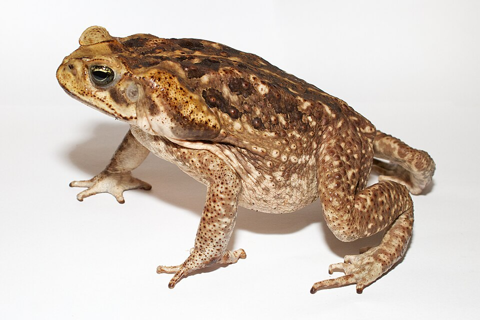
Photo by Brian Gratwicke Found on wikimedia, licensed under CC BY 2.0
NoteYour Turn: Discussion on pipelines and reproducibility
Let’s discuss:
- What do you know about reproducibility? What do you think of when you hear “reproducibility”?
- Have you heard of pipelines before?
- What sort of issues have you encountered with reproducibility?
- What are you hoping to get out of this course?
- What are your concerns with applying this material?
1.1 Why pipelines?
Data analysis is iterative. Cleaning, exploring and modelling rarely run start to finish without problems. Every step forward you take, sometimes takes you a couple back. E.g., finding a problem in a plot takes you to a problem with data cleaning.
I find a common pattern then is to re-run the code - from the top. It’s easier to just start “carte blanche” each time, because it’s too hard to work out hiwch parts of the analysis need re-running.
This can be fine. If you’re lucky! Often times your analysis can be so big - in terms of taking time, or managing complexity, that re-running it costs real time.
So then you start saving the intermediate steps. Now you have another problem…how do you know when to re-run one part of the analysis, which other parts depend upon changes to another?
This class of problems is what pipeline tools are designed to solve. They watch which files change, and which part of the code depends on those files. Then, they can run only the parts that depend upon them.
In R, targets is one of these pipeline toolkits, and it’s what we will be learning how to use.
The rest of this chapter is mostly hands-on programming. We will start with some toad data.
1.2 Live coding
- Reading in cane toad data
- Exploring it
- Save the script
1.3 The question
Toads were released at one place, on one date, and they spread west. So how far west did the edge get, decade by decade, and how far did it move each time?
Somebody has emailed you some files: A script, and some data.
1.4 Replicate it
Below you can view the entire analysis that I will live code:
::: {.callout-note title = “The live code”, collapse=“true”}
Here’s the script, a piece at a time. The code below is read straight out of ch1/01-flat-script.R, so what you see here is what’s in the file.
One row is one report of one species, at one place, on one date. It isn’t a survey, and it isn’t a count. Somebody saw a toad and wrote it down.
The column names are long, and they are in camel case. {janitor} tidies them up.
toads_raw |> names()
#> [1] "scientificName" "decimalLatitude"
#> [3] "decimalLongitude" "eventDate"
#> [5] "coordinateUncertaintyInMeters" "dataResourceName"
#> [7] "basisOfRecord" "license"
#> [9] "year"
library(janitor)
toads_raw |>
clean_names() |>
names()
#> [1] "scientific_name" "decimal_latitude"
#> [3] "decimal_longitude" "event_date"
#> [5] "coordinate_uncertainty_in_meters" "data_resource_name"
#> [7] "basis_of_record" "license"
#> [9] "year"Then shorter names for the columns we use most, and a year and a decade to group by.
library(tidyverse)
toads <- toads_raw |>
clean_names() |>
rename(
lat = decimal_latitude,
lon = decimal_longitude,
date = event_date,
coord_var_m = coordinate_uncertainty_in_meters,
resource_name = data_resource_name
) |>
mutate(
year = year(date),
decade = floor(year / 10) * 10,
.after = date
)
toads
#> # A tibble: 4,494 × 10
#> scientific_name lat lon date decade coord_var_m
#> <chr> <dbl> <dbl> <dttm> <dbl> <dbl>
#> 1 Rhinella marina -26.8 153. 1992-07-06 00:00:00 1990 1300
#> 2 Rhinella marina -23.2 150. 1992-03-01 00:00:00 1990 450
#> 3 Rhinella marina -25.3 152. 1996-09-09 00:00:00 1990 500
#> 4 Rhinella marina -27.1 153. 1994-05-21 00:00:00 1990 1300
#> 5 Rhinella marina -19.4 143. 1972-01-01 00:00:00 1970 3600
#> 6 Rhinella marina -27.6 153. 1996-05-18 00:00:00 1990 100
#> 7 Rhinella marina -24.8 151. 1964-01-01 00:00:00 1960 1800
#> 8 Rhinella marina -27.5 153. 1974-01-01 00:00:00 1970 1800
#> 9 Rhinella marina -27.5 153. 1992-10-06 00:00:00 1990 1300
#> 10 Rhinella marina -28.1 153. 1992-12-01 00:00:00 1990 1300
#> # ℹ 4,484 more rows
#> # ℹ 4 more variables: resource_name <chr>, basis_of_record <chr>,
#> # license <chr>, year <dbl>What have we got?
Before trusting anything that comes out of this, look at it.
# EDA
glimpse(toads)
#> Rows: 4,494
#> Columns: 10
#> $ scientific_name <chr> "Rhinella marina", "Rhinella marina", "Rhinella marina…
#> $ lat <dbl> -26.75672, -23.15955, -25.28674, -27.14006, -19.36499,…
#> $ lon <dbl> 153.1261, 150.4811, 151.9127, 153.0594, 143.1678, 152.…
#> $ date <dttm> 1992-07-06, 1992-03-01, 1996-09-09, 1994-05-21, 1972-…
#> $ decade <dbl> 1990, 1990, 1990, 1990, 1970, 1990, 1960, 1970, 1990, …
#> $ coord_var_m <dbl> 1300, 450, 500, 1300, 3600, 100, 1800, 1800, 1300, 130…
#> $ resource_name <chr> "WildNet - Queensland Wildlife Data", "WildNet - Queen…
#> $ basis_of_record <chr> "OCCURRENCE", "OCCURRENCE", "OCCURRENCE", "OCCURRENCE"…
#> $ license <chr> "CC-BY 4.0 (Int)", "CC-BY 4.0 (Int)", "CC-BY 4.0 (Int)…
#> $ year <dbl> 1992, 1992, 1996, 1994, 1972, 1996, 1964, 1974, 1992, …
library(visdat)
vis_dat(toads)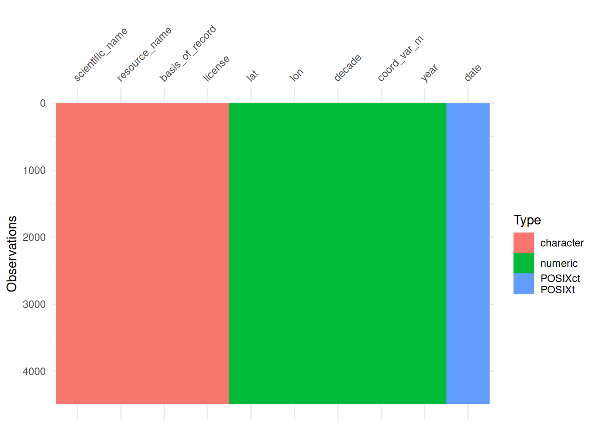
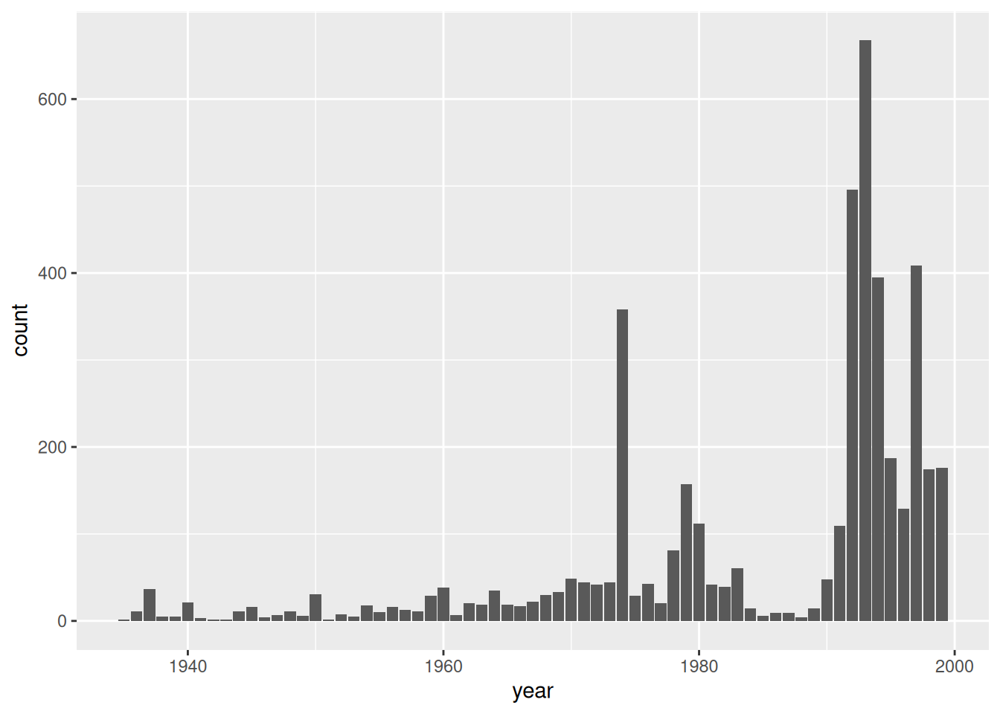
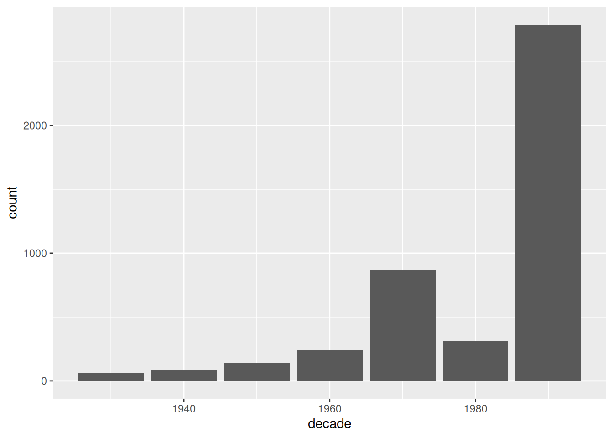
That’s how often somebody wrote a toad down, not how many toads there were. More records in the 1990s mostly means more people looking.
Where are they?
First, just the points. Then the points on a map of Australia.
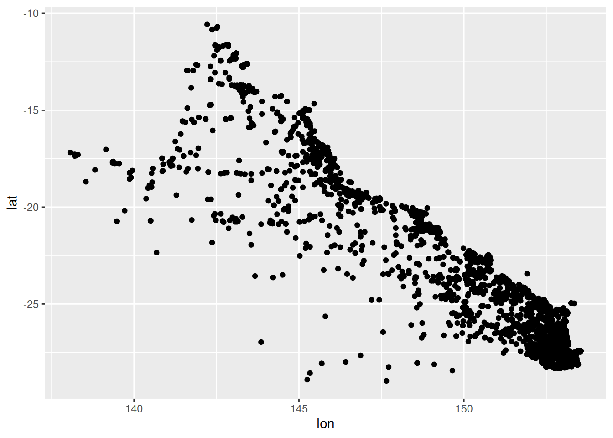
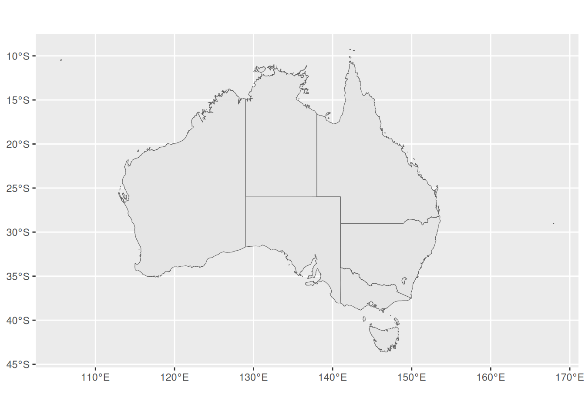
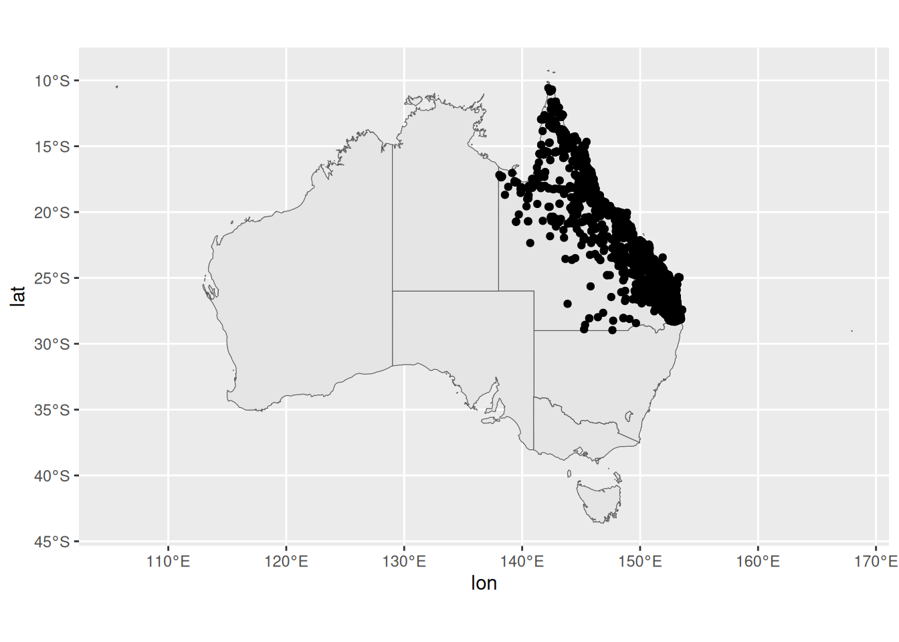
# What's in ozmap_states
ozmap_states
#> Simple feature collection with 9 features and 1 field
#> Geometry type: MULTIPOLYGON
#> Dimension: XY
#> Bounding box: xmin: 105.5507 ymin: -43.63203 xmax: 167.9969 ymax: -9.229287
#> Geodetic CRS: GDA94
#> # A tibble: 9 × 2
#> NAME geometry
#> * <chr> <MULTIPOLYGON [°]>
#> 1 New South Wales (((150.7016 -35.12286, 150.6611 -35.11782, 150.6…
#> 2 Victoria (((146.6196 -38.70196, 146.6721 -38.70259, 146.6…
#> 3 Queensland (((148.8473 -20.3457, 148.8722 -20.37575, 148.85…
#> 4 South Australia (((137.3481 -34.48242, 137.3749 -34.46885, 137.3…
#> 5 Western Australia (((126.3868 -14.01168, 126.3625 -13.98264, 126.3…
#> 6 Tasmania (((147.8397 -40.29844, 147.8902 -40.30258, 147.8…
#> 7 Northern Territory (((136.3669 -13.84237, 136.3339 -13.83922, 136.3…
#> 8 Australian Capital Territory (((149.2317 -35.222, 149.2346 -35.24047, 149.271…
#> 9 Other Territories (((167.9333 -29.05421, 167.9188 -29.0344, 167.93…They’re all in one state, so zoom in on Queensland.
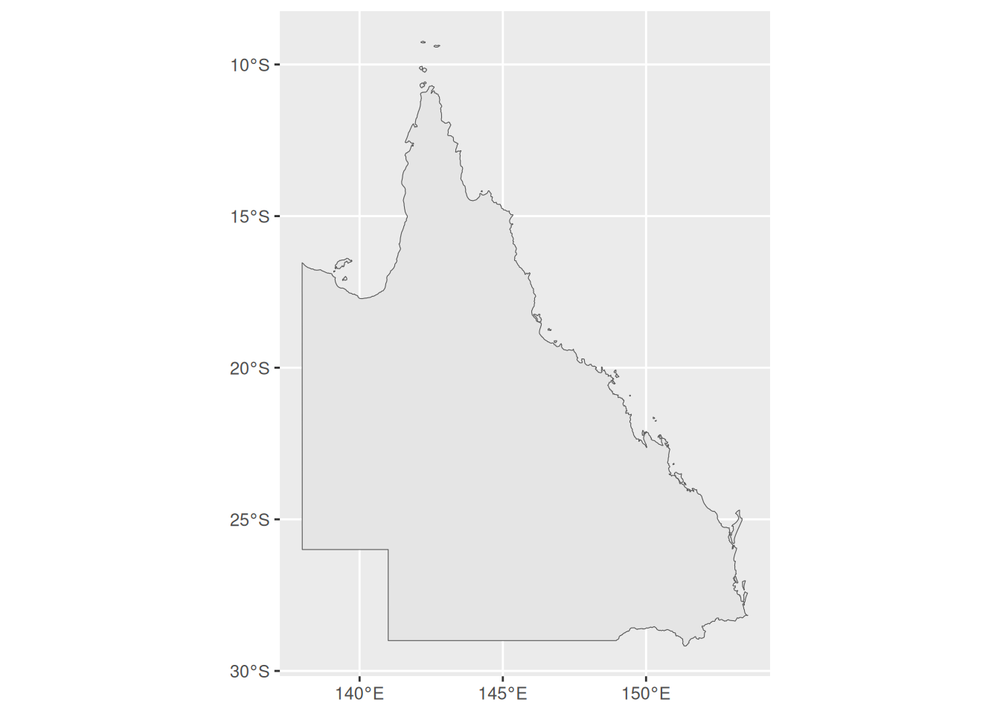
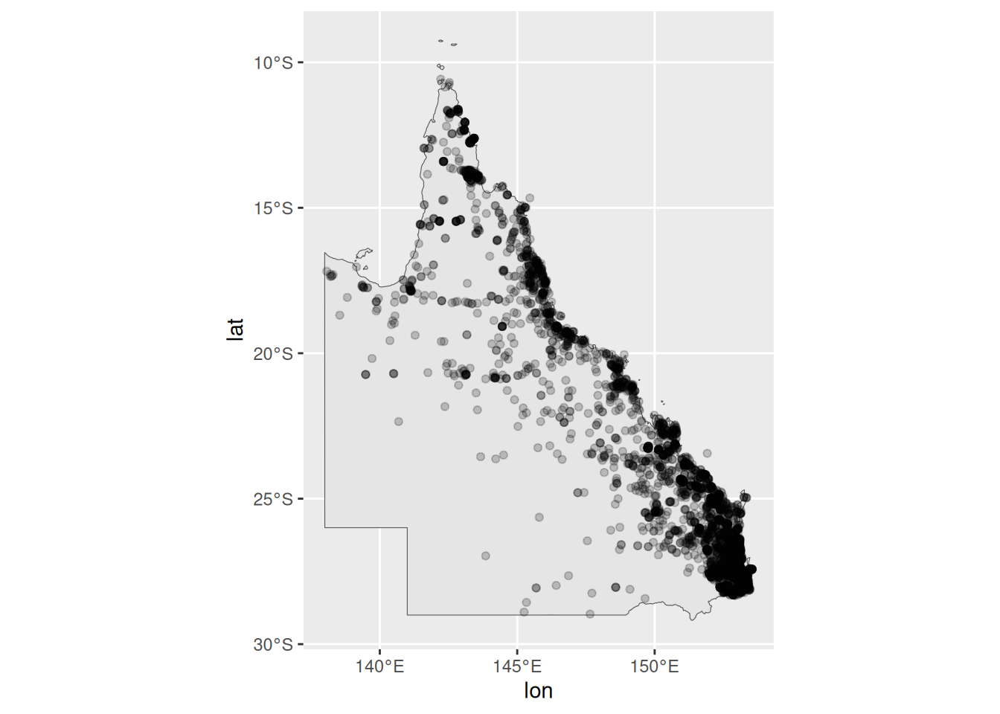
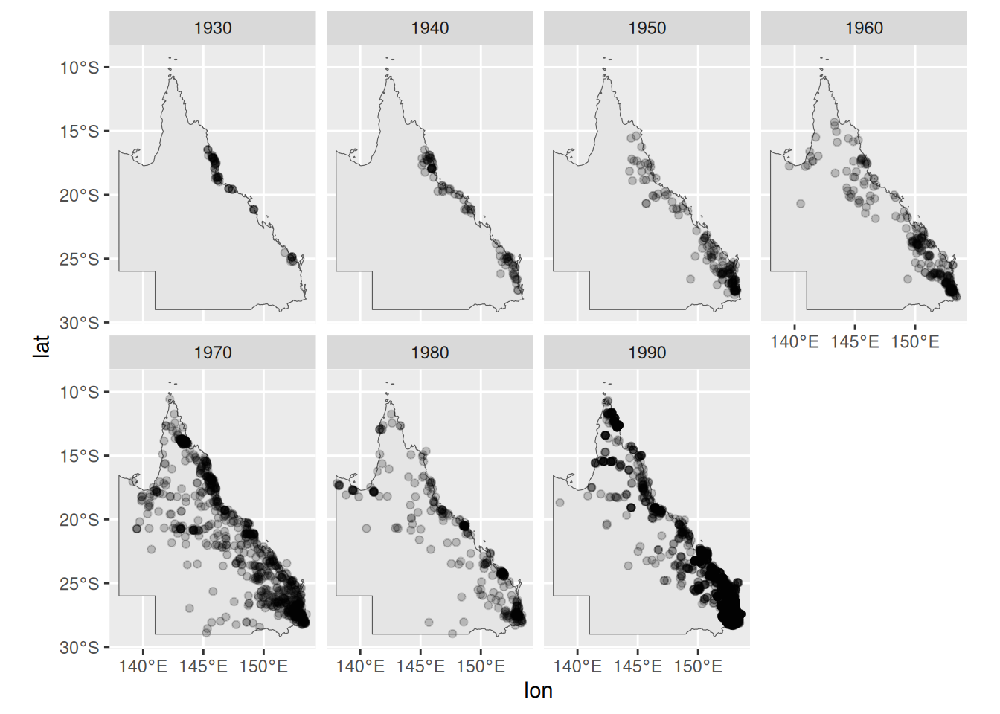
You can watch them come down the coast and head inland.
Find the front
The front is the westernmost record in each decade. Longitude gets smaller as you go west, so that’s the smallest lon.
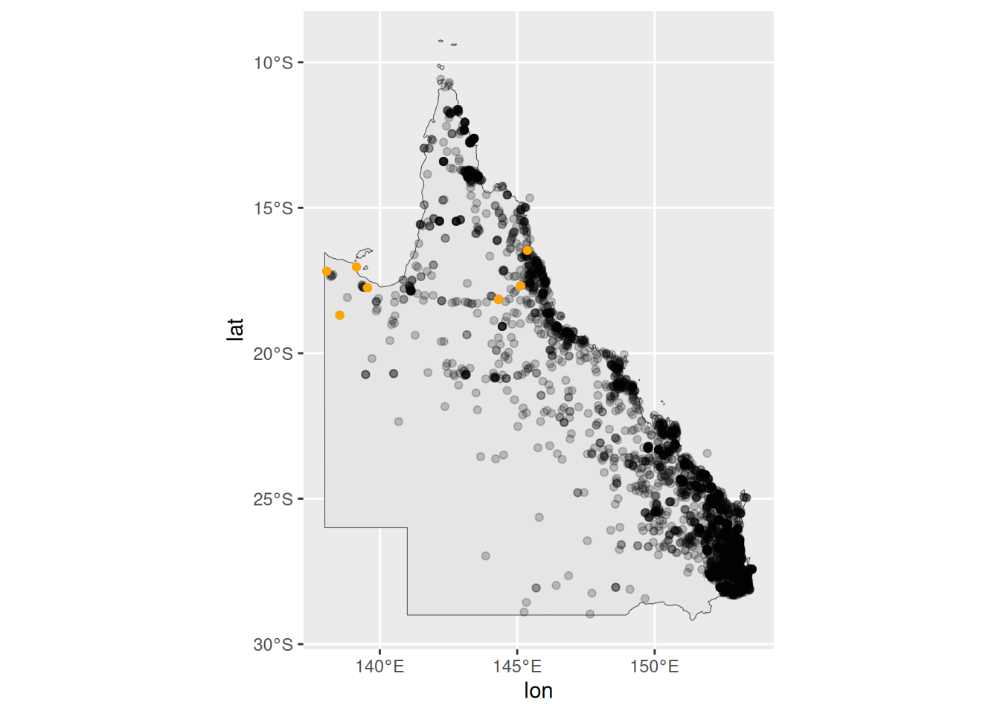
How far did it move?
{geodist} measures distances across the surface of the earth, in metres. It takes a matrix of coordinates.
sequential = TRUE measures from each row to the next, rather than every row to every other row. There’s no step into the first decade, so pad = TRUE puts an NA there.
# How far is it from one decade's edge to the next?
library(geodist)
# use {geodist} to calculate the distance
# it takes a matrix of inputs:
dist_mat <- cbind(lon = toad_west_front$lon, lat = toad_west_front$lat)
dist_mat
#> lon lat
#> [1,] 145.3678 -16.46512
#> [2,] 145.1178 -17.68165
#> [3,] 144.3178 -18.14832
#> [4,] 139.5511 -17.74832
#> [5,] 139.1511 -17.03165
#> [6,] 138.0679 -17.18183
#> [7,] 138.5428 -18.69089
# geodist() walks down the rows and measures each step across the surface of the
# earth, in metres. `sequential = TRUE` is what makes it row-to-row rather than
# every-pair. There is no step into the first decade, so we pad it out:
distances_m <- dist_mat |>
geodist(measure = "geodesic", sequential = TRUE, pad = TRUE)
distances_m
#> [1] NA 137238.08 99261.06 506881.80 89987.55 116477.00 174435.68
toad_speed <- toad_west_front |>
mutate(
distance_km = distances_m / 1000,
.after = scientific_name
)
toad_speed
#> # A tibble: 7 × 11
#> scientific_name distance_km lat lon date decade coord_var_m
#> <chr> <dbl> <dbl> <dbl> <dttm> <dbl> <dbl>
#> 1 Rhinella marina NA -16.5 145. 1937-01-01 00:00:00 1930 10000
#> 2 Rhinella marina 137. -17.7 145. 1943-01-01 00:00:00 1940 1800
#> 3 Rhinella marina 99.3 -18.1 144. 1950-01-01 00:00:00 1950 1800
#> 4 Rhinella marina 507. -17.7 140. 1968-01-01 00:00:00 1960 3600
#> 5 Rhinella marina 90.0 -17.0 139. 1979-01-01 00:00:00 1970 1800
#> 6 Rhinella marina 116. -17.2 138. 1983-10-01 00:00:00 1980 900
#> 7 Rhinella marina 174. -18.7 139. 1996-08-14 00:00:00 1990 1000
#> # ℹ 4 more variables: resource_name <chr>, basis_of_record <chr>,
#> # license <chr>, year <dbl>
ggplot(toad_speed, aes(x = decade, y = distance_km)) +
geom_col()
#> Warning: Removed 1 row containing missing values or values outside the scale range
#> (`geom_col()`).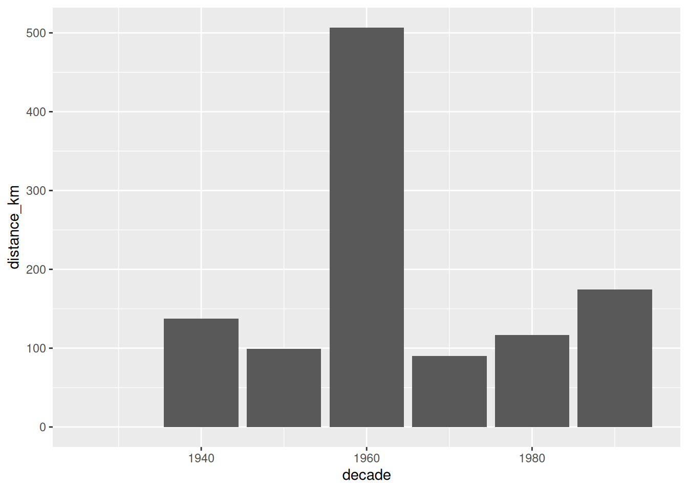
The 1960s are the big one, at about 507 km.
Look closely at the 1990s, though. The westernmost record is further east than it was in the 1980s, and the distance is still positive. A distance doesn’t know which way it went.
:::
NoteYour Turn
- Run the script top to bottom. Do you get the same distances?
- Which decade moved furthest? Find it on the map.
- The front is a single record each decade. What could go wrong with that?
1.5 From a script to a document
Someone wants to read this! Can you convert this into a quarto document?
So put it in a Quarto document. Each part of the script goes in a chunk, with a sentence or two around it saying what it does.
NoteYour Turn
Turn 01-flat-script.R into a Quarto document, and render it.
1.6 Tidy it up
Now make it read like a document.
- Libraries at the top. Put all
library()calls at the top. - Tidy up the iterations. The
View(), thenames()beforeclean_names(), the plot without a map, the plot with the whole of Australia. Those were you working it out. They were useful at the time.
Let’s make this a shorter, tidy document.
NoteYour Turn
- Move every
library()call into one chunk at the top. - Remove the steps that were you exploring.
- Render it again. Does it still give the same distances?
1.7 Someone wants the data
Your work is getting noticed!
A colleague asks you for the data with the distances added.
Sure, you say, you can add this to the quarto file?
Render, and the CSV is there.
NoteYour Turn
Add the write_csv() chunk and render.
- Change a single word in the text and render again. Did the CSV change?
- If your colleague opened the CSV tomorrow, how would they know which render wrote it?
1.8 Rendering a document to write a dataset?
It’s a lot!
But something about this feels a bit strange? You are rendering a document, and you get:
- plots, HTML file
- a written CSV file
Creating the CSV is a side effect of rendering.
It’s only as current as your last render, and renders happen for reasons that have nothing to do with the data:
Fix a typo in a sentence? CSV gets rewritten. If the render fails halfway, the file might get re-written? Depending on where it is?
And like, how do you know which version of the code produced it? How do you know it is up to date? Can we trust that this data came from the new data? Or is it the old one? Should we just run it again to be sure?
I don’t think that rendering a document to save data a good idea.
I’m not saying don’t save data! That’s a good thing.
But I am saying that writing a file should be a step that something keeps track of, rather than something that happens on the way past.
1.9 How else could you lay this project out?
Is there another way you could lay the project out?
One long script. That’s what you were sent. It works, and it’s where everybody starts.
Numbered scripts. Split it into 01-read.R, 02-clean.R, 03-front.R and 04-distance.R.
- Better! The numbers give the project an entry point. Someone new knows where to start.
- But they don’t tell you what needs running again. Change
02-clean.R, and you have to remember that 03 and 04 depend on it.
One Quarto document.
- Everything in one place, the report comes for free.
Functions, with a driver script.
- R functions go in
R/ - A short
analysis.Rcalls them in order
toad-analysis/
├── data/ what arrived, never edited by hand
├── R/ functions: code that gets used
├── analysis.R code that gets run, in order
└── output/ anything you could delete and make againThis is my favourite. We’ll talk about it more later.
How to pick a good one
Your system is good, if you can answer this:
Can you delete output/ and make all of it again by running your code?
For every layout above, the answer is yes. With a caveat: only you know how.
Your project might not be perfectly organised, but it should be possible for someone to understand how it is structured, and what to run first.
NoteRead more
This section is adapted from the project organisation chapter of R Best Practices, which goes through each of these layouts, and a few more, in detail.
1.10 More data arrives
Your boss (me) emails you the records up to 2010, cane-toad-wildnet-to-2010.parquet.
Can you run it again?
1.11 Stop
Stop here, and look at what’s on your disk.
You have a script, a document, a rendered report, and a CSV. Some of them were made from the 1999 data and some from the 2010 data.
NoteYour Turn
In pairs, and without running anything.
- Does
output/toad-speed.csvhave seven decades in it, or nine? - Is the rendered report from the same run as the CSV?
- How would you find out, without rendering everything again?
Nothing errored at any point. Every file looks fine. You just can’t tell which of them are current.
1.12 What does a pipeline look like?
Here’s one I prepared earlier.
ch1/ch1-targets/, written as a targets pipeline.
# To run:
# Sys.setenv(TAR_PROJECT = "ch1")
# tar_make()
source(here::here("ch1/ch1-targets/packages.R"))
source(here::here("ch1/ch1-targets/functions.R"))
tar_assign({
toad_path <- here("data/cane-toad-wildnet-to-1999.parquet") |> tar_file()
toads_raw <- read_parquet(file = toad_path) |> tar_target()
toads <- tidy_toads(toads_raw) |> tar_target()
# Let's just look at qld
qld <- ozmap_states |>
filter(NAME == "Queensland") |>
tar_target()
# ---- find the front ---------------------------------------------------------
# Find the most western toads per decade
toad_west_front <- toads |>
group_by(decade) |>
# smallest lon == most westerly
slice_min(lon, n = 1) |>
ungroup() |>
tar_target()
toad_speed <- toad_west_front |>
add_distance(lon = "lon", lat = "lat") |>
tar_target()
report <- tar_quarto(path = "ch1/ch1-targets/tar-ch-1.qmd")
})Each step is a target, with a name.
The targets package works out which ones depend on which, and when something changes it reruns only those.
You never have to work out what to run first. The answer is always tar_make().
Over the rest oif the course we will focus on these key ideas:
Functions. Each step of the analysis does one job.
Results worth keeping. Each target gets saved, and is only built again when something it depends on changes.
The dependency graph. Which steps depended on the file you changed? That question has an answer, it’s a real object, and
targetswill draw it for you.
TipWhere we are going
By the end of this course you’ll change one line in a cleaning function, run tar_make(), and watch the things that depend on it rebuild while everything else stays put.
1.13 But first: your code
We won’t jump straight into targets, not yet!
There are mechanics to it, and tools of the trade, and introducing all of it now would be too much at once.
So let’s start somewhere smaller. Next session we take the script apart and rebuild it as functions.
Summary
- You replicated an analysis from a script and a data file.
- A document is for reading. Libraries at the top, and the exploring taken out.
- A document that writes files has side effects you cannot see from the files.
- Functions, results worth keeping, and the dependency graph are the three things this course is about.
NoteWhere this comes from
The section on laying out an analysis draws on R Best Practices, which covers project organisation, file paths and naming in more depth.
The function-writing and debugging sessions draw on Introduction to Functions and Debugging, which covers both in more depth.